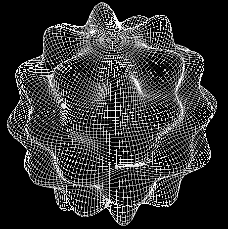

by
John C. Adams (retired) and Paul N. Swarztrauber (deceased, August 2011)
December 2011

(The figure above is a visible rendering of a scalar harmonic with order 12 and degree 6 on a 89 X 180 Gauss latitudinal grid. It was produced by the SPHEREPACK subroutine visgau.)
SPHEREPACK 3.2 is a collection of FORTRAN77 programs and subroutines facilitating computer modeling of geophysical processes. The package contains subroutines for computing common differential operators including divergence, vorticity, latitudinal derivatives, gradients, the Laplacian of both scalar and vector functions, and the inverses of these operators. For example, given divergence and vorticity, the package can be used to compute velocity components, then the Laplacian inverse can be used to solve the scalar and vector Poisson equations. The package also contains routines for computing the associated Legendre functions, Gauss points and weights, multiple fast Fourier transforms, and for converting scalar and vector fields between geophysical and mathematical spherical coordinates.
Example programs are provided for solving these equations on the full sphere:
Each program serves two purposes: as a template to guide you in writing your own codes utilizing the SPHEREPACK routines, and as a demonstration on your computer that you can correctly produce SPHEREPACK executables.
The SPHEREPACK library and programs are intended to be installed on your computer using the Makefile provided when you download the files in this distribution. The Makefile builds the library and driver executables under the compiler you specify when you run "make".
This work was partially supported by the Computer Hardware, Advanced Mathematics, and Model Physics (CHAMMP) Program which is administered by the Office of Energy Research under the Office of Health and Environmental Research in the U.S. Department of Energy, Environmental Sciences Division.
This present document contains much of the essential information for SPHEREPACK. The following technical note contains theoretical information about SPHEREPACK not available elsewhere: SPHEREPACK 2.0: A model development facility by John Adams and Paul Swarztrauber, NCAR Technical Note-TN-436+STR, 1997.
Programs, solvers and support files including some documentation are available at the download tab on the NCAR SPHEREPACK home page. This distribution is slanted towards users running Linux, Mac, or Unix systems with a Fortran compiler, since the required utilities uncompress, tar, make etc are more likely available on those systems.
In addition to the operations described in the above paragraphs, the package can also be used to solve time dependent partial differential equations. In particular, the package facilitated the development of nine spectral models of the shallow-water equations that were evaluated in (Swarztrauber, 1996). One such model is given in section 3.3 of the NCAR Technical Note cited above, providing an example of how SPHEREPACK 3.2 can be used to solve the nonlinear shallow-water equations on the sphere. The package also contains utility programs for computing the associated Legendre functions, multiple fast Fourier transforms, an icosahedral geodesic, and Gauss points and weights. All computations can be performed on either a Gauss or equally-spaced latitudinal grid and programs are available for interpolating between these grid systems. There is no difference in the accuracy or computing time of these systems; however, they alias differently (Temperton, 1991).
Scalar and vector harmonic analyses are used for problem solving in spherical coordinates in the same way that Fourier analysis is used in Cartesian coordinates. Thus the package provides the same high level of accuracy that the spectral method provides in Cartesian coordinates. Furthermore, accuracy is uniform on the sphere and independent of the location of the poles. This eliminates a number of computational difficulties associated with solving partial differential equations on the sphere including the accuracy and stability problems that can be created by the clustering of points near the pole. Interpolation and smoothing on the sphere are also significantly facilitated by harmonic analysis (Swarztrauber, 1979). Indeed the package includes programs for interpolating between Gaussian and equally-spaced latitudinal grids.
| Table 1 An overview of SPHEREPACK 3.2 |
|
|---|---|
| computation | subprograms |
| colatitude derivative | VTSEC,VTSES, VTSGC, VTSGS |
| gradient | GRADEC, GRADES, GRADGC, GRADGS |
| inverse gradient | IGRADEC, IGRADES, IGRADGC, IGRADGS |
| divergence | DIVEC, DIVES, DIVGC, DIVGS |
| inverse divergence | IDIVEC, IDIVES, IDIVGC, IDIVGS |
| vorticity | VRTEC, VRTES, VRTGC, VRTGS |
| inverse vorticity | IVRTEC, IVRTES, IVRTGC, IVRTGS |
| invert divg. & vort. | IDVTEC, IDVTES, IDVTGC, IDVTGS |
| scalar Laplacian | SLAPEC, SLAPES, SLAPGC, SLAPGS |
| inverse LaPlacian | ISLAPEC, ISLAPES, ISLAPGC, ISLAPGS |
| vector Laplacian | VLAPEC, VLAPES, VLAPGC, VLAPGS |
| inv. vct. Laplacian | IVLAPEC, IVLAPES, IVLAPGC, IVLAPGS |
| stream fm. & vel pot. | SFVPEC, SFVPES, SFVPGC, SFVPGS |
| inv. stream fm. & vel pot. | ISFVPEC, ISFVPES, ISFVPGC, ISFVPGS |
| grid transfers | TRSSPH, TRVSPH, SSHIFTE, VSHIFTE |
| geo/math coordinate transfers | GEO2MATHS, MATH2GEOS, GEO2MATHV, MATH2GEOV |
| scalar analysis | SHAEC, SHAES, SHAGC, SHAGS |
| scalar synthesis | SHSEC, SHSES, SHSGC, SHSGS |
| scalar projection | SHPE, SHPG |
| vector analysis | VHAEC, VHAES, VHAGC, VHAGS |
| vector synthesis | VHSEC, VHSES, VHSGC, VHSGS |
| Legendre functions | ALFK, LFP, LFPT, LFIM, LFIN |
| icosahedral geodesic | IHGEOD |
| multiple ffts | HRFFTF, HRFFTB |
| Gaussian wts&pts | GAQD |
| 3-d sphere graphics | VISEQU, VISGAU, VISGEO |
| examples | HELMSPH, ADVECTION, SHALLOW |
The contents of the package are listed here with a sentence or two description of each program. The package consists of driver programs that compute or invert the differential operators that are required by the user's application. In turn, the driver programs call the utility programs that implement the analyses and syntheses required by the harmonic or spectral method on the sphere.
Most of the programs that compute the differential operators require the harmonic analysis of the scalar or vector function prior to computing the operator. For example, to compute the Laplacian of a scalar function using SLAPEC, one must first compute the spectral coefficients using subroutine SHAEC. The reason subroutine SHAEC is not called by SLAPEC is to avoid repeated computation of spectral coefficients when more than one differential operator is applied to the same function.
The major options provided by SPHEREPACK are:
A list of user entry programs is given below. Where applicable, the programs are named with the following conventions: The characters sh or vh denote scalar and vector harmonic transforms respectively. The character a or s denotes analysis or synthesis. The character g or e denotes Gaussian or equally-spaced latitudinal grid, and the character c or s denotes whether or not the quantities in 3. above are computed or stored. That is, whether the O(N**2) or O(N**3) storage option is selected.
Note: for latitudinal derivatives of scalar functions use the gradient programs.
note: most SPHEREPACK 3.2 software require scalar and vector fields in mathematical spherical coordinates.
Additional programs for computing the associated Legendre functions are included in ALFPACK which is also available from the National Center for Atmospheric Research.
Additional programs are included in FFTPACK which is also available from the National Center for Atmospheric Research.
Return to beginning of this document
c
c * * * * * * * * * * * * * * * * * * * * * * * * * * * * * * * * *
c * *
c * copyright (c) 1998 by UCAR *
c * *
c * University Corporation for Atmospheric Research *
c * *
c * all rights reserved *
c * *
c * SPHEREPACK version 3.2 *
c * *
c * A Package of Fortran77 Subroutines and Programs *
c * *
c * for Modeling Geophysical Processes *
c * *
c * by *
c * *
c * John Adams and Paul Swarztrauber *
c * *
c * of *
c * *
c * the National Center for Atmospheric Research *
c * *
c * Boulder, Colorado (80307) U.S.A. *
c * *
c * which is sponsored by *
c * *
c * the National Science Foundation *
c * *
c * * * * * * * * * * * * * * * * * * * * * * * * * * * * * * * * *
c
c
c
c
c program advec solves the time-dependent linear advection
c equation for geopotential phi
c
c d(phi)/dt = -(u,v) DOT gradient(phi)
c
c = -(u*gdphl + v*gdpht)
c
c ... required files
c
c gradgc.f,shagc.f,vhsgc.f,sphcom.f hrfft.f,gaqd.f
c
c
c definitions:
c
c
c nlat number of gaussian latitudes excluding poles
c nlon number of distinct longitudes
c omega rotation rate of earth in radians per second
c alpha angle between axis of rotation and the coordinate
c axis
c beta latitude of the cosine bell
c aa radius of earth in meters
c ncycle cycle number
c time model time in seconds
c dt time step
c lambda longitude
c theta latitude
c
c the first dimension of the following two dimensional arrays
c corresponds to the latitude index with values i=1,...,nlat
c where i=1 is the northern most gaussian point thetag(i)
c and i=nlat is the southern most gaussian point thetag(nlat).
c the second dimension is longitude with values j=1,...,nlon
c where j=1 corresponds to zero longitude and j=nlon corresponds
c to 2pi minus 2pi/nlon.
c
c
c thetag(i) vector of gaussian points on the full sphere which
c have north to south orientation as i=1,...,nlat
c
c u(i,j) east longitudinal velocity component
c v(i,j) latitudinal velocity component
c
c phi(i,j) the geopotential at t = time
c
c phnew(i,j) the geopotential at t=time+dt
c
c phold(i,j) the geopotential at t=time-dt
c
c gdphl(i,j) the longitudinal derivative component of
c the gradient of phi
c
c gdphl = 1/(cos(theta))*d(phi)/dlambda
c
c gdpht(i,j) the latitudinal derivative component of
c the gradient of phi
c
c gdpht = d(phi)/dtheta
c
c the following two dimensional arrays are nonzero in the triangle
c n=1,...,nlat and m less than or equal to n.
c
c ar(m,n),br(m,n) spectral coefficients of phi
c
program advec
c
c set grid size with parameter statements
c
integer nnlat,nnlon,nn15,llwork,llvhsgc,llshagc
c parameter (nnlat=23,nnlon=45,ddt=600.)
parameter (nnlat=45,nnlon=90,ddt=300.)
c parameter (nnlat=90,nnlon=180,ddt=150.)
c
c set saved and unsaved work space lengths in terms of nnlat,nnlon
c (see documentation for shagc,vhsgc,gradgc for estimates)
c
parameter (nn15=nnlon+15)
parameter(llwork=4*nnlat*nnlon+2*nnlat*(nnlat+1))
parameter (llvhsgc = 7*nnlat*nnlat+nnlon+15)
parameter (llshagc = 5*nnlat*nnlat + nnlon+15)
c
c dimension arrays
c
real u(nnlat,nnlon),v(nnlat,nnlon)
real phold(nnlat,nnlon),phnew(nnlat,nnlon),phi(nnlat,nnlon)
real pexact(nnlat,nnlon)
real dpdt(nnlat,nnlon)
real gdphl(nnlat,nnlon),gdpht(nnlat,nnlon)
real work(llwork),wshagc(llshagc),wvhsgc(llvhsgc)
real ar(nnlat,nnlat),br(nnlat,nnlat)
real thetag(nnlat),colat(nnlat)
double precision dtheta(nnlat),dwts(nnlat)
c
c set constants
c
pi = 4.0*atan(1.0)
omega = (pi+pi)/(12.*24.*3600.)
p0 = 1000.
re = 1.0/3.0
hzero = 1000.
alphad = 60.
alpha = pi*alphad/180.
beta = pi/6.
c
c set one array and no equatorial symmetry
c
nt = 1
isym = 0
c
c set time step depending on resolution
c
dt = ddt
tdt = dt+dt
c
c set work space length arguments
c
lwork = llwork
lshagc = llshagc
lvhsgc = llvhsgc
c
c set grid size arguments
c
nlat = nnlat
nlon = nnlon
c
c compute nlat latitudinal gaussian points in thetag with
c north to south orientation using routine gaqd
c
call gaqd(nlat,dtheta,dwts,work,lwork,ier)
do i=1,nlat
thetag(i) = 0.5*pi- dtheta(i)
colat(i) = dtheta(i)
end do
c
c preset saved work spaces for gradgc and shagc
c
call vhsgci(nlat,nlon,wvhsgc,lvhsgc,work,lwork,ierror)
if(ierror .ne. 0) write(6,10) ierror
10 format(' error in vsgci = ',i5)
call shagci(nlat,nlon,wshagc,lshagc,work,lwork,ierror)
if(ierror .ne. 0) write(6,20) ierror
20 format(' error in vsgci = ',i5)
c
c set vector velocities and cosine bell in geopotential
c
ca = cos(alpha)
sa = sin(alpha)
dlon = (pi+pi)/nlon
do j=1,nlon
xlm = (j-1)*dlon
sl = sin(xlm)
cl = cos(xlm)
do i=1,nlat
st = cos(colat(i))
ct = sin(colat(I))
sth = ca*st+sa*ct*cl
cthclh = ca*ct*cl-sa*st
cthslh = ct*sl
xlhat = atanxy(cthclh,cthslh)
clh = cos(xlhat)
slh = sin(xlhat)
cth = clh*cthclh+slh*cthslh
uhat = omega*cth
u(i,j) = (ca*sl*slh+cl*clh)*uhat
v(i,j) = (ca*st*cl*slh-st*sl*clh+sa*ct*slh)*uhat
end do
end do
c
c compute initial geopotential
c
call gpot(0.,alpha,beta,omega,hzero,re,nlat,nlon,
+ nlat,colat,phold)
p2 = 0.0
pmax = 0.0
do j=1,nlon
do i=1,nlat
phi(i,j) = phold(i,j)
pmax = amax1(abs(phold(i,j)),pmax)
p2 = p2 + phi(i,j)**2
end do
end do
p2 = sqrt(p2)
c
c set number of time steps for 12 days
c (time to circumvent the earth)
c
ntime = int((12.*24.*3600.)/dt+0.5)
mprint = ntime/12
time = 0.0
ncycle = 0
do k=1,ntime+1
c
c compute harmonic coefficients for phi at current time
c
call shagc(nlat,nlon,isym,nt,phi,nlat,nlon,ar,br,nlat,
+ nlat,wshagc,lshagc,work,lwork,ierror)
if (ierror .ne.0) write(*,26) ierror
26 format(' ierror in shagc = ',i5)
c
c compute gradient of phi at current time
c
call gradgc(nlat,nlon,isym,nt,gdpht,gdphl,nlat,nlon,ar,br,
+ nlat,nlat,wvhsgc,lvhsgc,work,lwork,ierror)
if (ierror .ne.0) write(*,27) ierror
27 format(' ierror in gradgc = ',i5)
c
c compute the time derivative of phi, note that the sign
c of the last term is positive because the gradient is
C computed with respect to colatitude rather than latitude.
c
do j=1,nlon
do i=1,nlat
dpdt(i,j) = -u(i,j)*gdphl(i,j) + v(i,j)*gdpht(i,j)
end do
end do
c
if (mod(ncycle,mprint) .eq. 0) then
c
c write variables
c
err2 = 0.0
errm = 0.0
call gpot(time,alpha,beta,omega,hzero,re,nlat,nlon,nlat,
+ colat,pexact)
do j=1,nlon
do i=1,nlat
err2 = err2 + (pexact(i,j)-phi(i,j))**2
errm = amax1(abs(pexact(i,j)-phi(i,j)),errm)
end do
end do
errm = errm/pmax
err2 = sqrt(err2)/p2
htime = time/3600.
write(6,390) ncycle,htime,dt,nlat,nlon,omega,hzero,
1 alphad,errm,err2
390 format(//' advecting cosine bell, test case 2',/
1 ,' cycle number ',i10
2 ,' model time in hours ',f10.2/
3 ,' time step in seconds ',f10.0
4 ,' number of latitudes ',i10/
5 ,' number of longitudes ',i10
6 ,' rotation rate ',1pe15.6/
7 ,' mean height ',1pe15.6
8 ,' tilt angle ',0pf10.2/
9 ,' max geopot. error ',1pe15.6
1 ,' RMS geopot. error ',1pe15.6)
end if
time = time + dt
ncycle = ncycle+1
c
c update phold,phi for next time step
c
do j=1,nlon
do i=1,nlat
phnew(i,j) = phold(i,j) + tdt*dpdt(i,j)
phold(i,j) = phi(i,j)
phi(i,j) = phnew(i,j)
end do
end do
c
c end of time loop
c
end do
end
subroutine gpot(t,alpha,beta,omega,hzero,re,nlat,nlon,idim,
+ colat,h)
c
c computes advecting cosine bell on a tilted grid a time t.
c
c input parameters
c
c t time in seconds
c
c alpha tilt angle in radians
c
c beta colatitude of cosine bell in untilted coordinate
c system in radians
c
c omega angular velocity in radians per second
c
c hzero maximum value of cosine bell
c
c re radius of support for cosine bell in radians
c
c nlat number of latitudes including the poles
c
c nlon number of distinct longitude lines
c
c idim first dimension of output array h
c
c colat vector of Gauss colatitude grid points
c
c output parameter
c
c h an nlat by nlon array containing the geopotential
c
c on a tilted grid
c
dimension h(idim,nlon),colat(nlat)
real lambda,lambdc,lhat
lambdc = omega*t
call stoc(1.,beta,lambdc,xc,yc,zc)
ca = cos(alpha)
sa = sin(alpha)
pi = 4.*atan(1.)
tpi = pi+pi
c dlat = pi/(nlat-1)
dlon = tpi/nlon
do 10 j=1,nlon
lambda = (j-1)*dlon
cl = cos(lambda)
sl = sin(lambda)
do 10 i=1,nlat
theta = colat(i)
st = cos(theta)
ct = sin(theta)
sth = ca*st+sa*ct*cl
cthclh = ca*ct*cl-sa*st
cthslh = ct*sl
lhat = atanxy(cthclh,cthslh)
clh = cos(lhat)
slh = sin(lhat)
cth = clh*cthclh+slh*cthslh
that = atanxy(sth,cth)
call stoc(1.,that,lhat,x1,y1,z1)
dist = sqrt((x1-xc)**2+(y1-yc)**2
1 +(z1-zc)**2)
h(i,j) = 0.
if(dist .ge. re) go to 10
r = 2.*asin(dist/2.)
if(r .ge. re) go to 10
h(i,j) = hzero*.5*(cos(r*pi/re)+1.)
10 continue
return
end
function atanxy(x,y)
atanxy = 0.
if(x.eq.0. .and. y.eq.0.) return
atanxy = atan2(y,x)
return
end
subroutine ctos(x,y,z,r,theta,phi)
r1 = x*x+y*y
if(r1 .ne. 0.) go to 10
phi = 0.
theta = 0.
if(z .lt. 0.) theta = 4.*atan(1.)
return
10 r = sqrt(r1+z*z)
r1 = sqrt(r1)
phi = atan2(y,x)
theta = atan2(r1,z)
return
end
subroutine stoc(r,theta,phi,x,y,z)
st = sin(theta)
x = r*st*cos(phi)
y = r*st*sin(phi)
z = r*cos(theta)
return
end
=== end ===
c c * * * * * * * * * * * * * * * * * * * * * * * * * * * * * * * * * c * * c * copyright (c) 1998 by UCAR * c * * c * University Corporation for Atmospheric Research * c * * c * all rights reserved * c * * c * SPHEREPACK version 3.2 * c * * c * A Package of Fortran77 Subroutines and Programs * c * * c * for Modeling Geophysical Processes * c * * c * by * c * * c * John Adams and Paul Swarztrauber * c * * c * of * c * * c * the National Center for Atmospheric Research * c * * c * Boulder, Colorado (80307) U.S.A. * c * * c * which is sponsored by * c * * c * the National Science Foundation * c * * c * * * * * * * * * * * * * * * * * * * * * * * * * * * * * * * * * c c c c file alf.f contains subroutines alfk,lfim,lfim1,lfin,lfin1,lfp,lfp1,lfpt c for computing normalized associated legendre polynomials c c subroutine alfk (n,m,cp) c c dimension of real cp(n/2 + 1) c arguments c c purpose routine alfk computes single precision fourier c coefficients in the trigonometric series c representation of the normalized associated c legendre function pbar(n,m,theta) for use by c routines lfp and lfpt in calculating single c precision pbar(n,m,theta). c c first define the normalized associated c legendre functions c c pbar(m,n,theta) = sqrt((2*n+1)*factorial(n-m) c /(2*factorial(n+m)))*sin(theta)**m/(2**n* c factorial(n)) times the (n+m)th derivative of c (x**2-1)**n with respect to x=cos(theta) c c where theta is colatitude. c c then subroutine alfk computes the coefficients c cp(k) in the following trigonometric c expansion of pbar(m,n,theta). c c 1) for n even and m even, pbar(m,n,theta) = c .5*cp(1) plus the sum from k=1 to k=n/2 c of cp(k+1)*cos(2*k*th) c c 2) for n even and m odd, pbar(m,n,theta) = c the sum from k=1 to k=n/2 of c cp(k)*sin(2*k*th) c c 3) for n odd and m even, pbar(m,n,theta) = c the sum from k=1 to k=(n+1)/2 of c cp(k)*cos((2*k-1)*th) c c 4) for n odd and m odd, pbar(m,n,theta) = c the sum from k=1 to k=(n+1)/2 of c cp(k)*sin((2*k-1)*th) c c c usage call alfk(n,m,cp) c c arguments c c on input n c nonnegative integer specifying the degree of c pbar(n,m,theta) c c m c is the order of pbar(n,m,theta). m can be c any integer however cp is computed such that c pbar(n,m,theta) = 0 if abs(m) is greater c than n and pbar(n,m,theta) = (-1)**m* c pbar(n,-m,theta) for negative m. c c on output cp c single precision array of length (n/2)+1 c which contains the fourier coefficients in c the trigonometric series representation of c pbar(n,m,theta) c c c special conditions none c c precision single c c algorithm the highest order coefficient is determined in c closed form and the remainig coefficients are c determined as the solution of a backward c recurrence relation. c c accuracy comparison between routines alfk and double c precision dalfk on the cray1 indicates c greater accuracy for smaller values c of input parameter n. agreement to 14 c places was obtained for n=10 and to 13 c places for n=100. c c subroutine lfim (init,theta,l,n,nm,pb,id,wlfim) c c dimension of theta(l), pb(id,nm+1), wlfim(4*l*(nm+1)) c arguments c c purpose given n and l, routine lfim calculates c the normalized associated legendre functions c pbar(n,m,theta) for m=0,...,n and theta(i) c for i=1,...,l where c c pbar(m,n,theta) = sqrt((2*n+1)*factorial(n-m) c /(2*factorial(n+m)))*sin(theta)**m/(2**n* c factorial(n)) times the (n+m)th derivative of c (x**2-1)**n with respect to x=cos(theta) c c usage call lfim (init,theta,l,n,nm,pb,id,wlfim) c c arguments c on input init c = 0 c initialization only - using parameters c l, nm and array theta, subroutine lfim c initializes array wlfim for subsequent c use in the computation of the associated c legendre functions pb. initialization c does not have to be repeated unless c l, nm, or array theta are changed. c = 1 c subroutine lfim uses the array wlfim that c was computed with init = 0 to compute pb. c c theta c an array that contains the colatitudes c at which the associated legendre functions c will be computed. the colatitudes must be c specified in radians. c c l c the length of the theta array. lfim is c vectorized with vector length l. c c n c nonnegative integer, less than nm, specifying c degree of pbar(n,m,theta). subroutine lfim c must be called starting with n=0. n must be c incremented by one in subsequent calls and c must not exceed nm. c c nm c the maximum value of n and m c c id c the first dimension of the two dimensional c array pb as it appears in the program that c calls lfim. (see output parameter pb) c c wlfim c an array with length 4*l*(nm+1) which c must be initialized by calling lfim c with init=0 (see parameter init) it c must not be altered between calls to c lfim. c c c on output pb c a two dimensional array with first c dimension id in the program that calls c lfim. the second dimension of pb must c be at least nm+1. starting with n=0 c lfim is called repeatedly with n being c increased by one between calls. on each c call, subroutine lfim computes c = pbar(m,n,theta(i)) for m=0,...,n and c i=1,...l. c c wlfim c array containing values which must not c be altered unless l, nm or the array theta c are changed in which case lfim must be c called with init=0 to reinitialize the c wlfim array. c c special conditions n must be increased by one between calls c of lfim in which n is not zero. c c precision single c c c algorithm routine lfim calculates pbar(n,m,theta) using c a four term recurrence relation. (unpublished c notes by paul n. swarztrauber) c c subroutine lfin (init,theta,l,m,nm,pb,id,wlfin) c c dimension of theta(l), pb(id,nm+1), wlfin(4*l*(nm+1)) c arguments c c purpose given m and l, routine lfin calculates c the normalized associated legendre functions c pbar(n,m,theta) for n=m,...,nm and theta(i) c for i=1,...,l where c c pbar(m,n,theta) = sqrt((2*n+1)*factorial(n-m) c /(2*factorial(n+m)))*sin(theta)**m/(2**n* c factorial(n)) times the (n+m)th derivative of c (x**2-1)**n with respect to x=cos(theta) c c usage call lfin (init,theta,l,m,nm,pb,id,wlfin) c c arguments c on input init c = 0 c initialization only - using parameters c l, nm and the array theta, subroutine lfin c initializes the array wlfin for subsequent c use in the computation of the associated c legendre functions pb. initialization does c not have to be repeated unless l, nm or c the array theta are changed. c = 1 c subroutine lfin uses the array wlfin that c was computed with init = 0 to compute pb c c theta c an array that contains the colatitudes c at which the associated legendre functions c will be computed. the colatitudes must be c specified in radians. c c l c the length of the theta array. lfin is c vectorized with vector length l. c c m c nonnegative integer, less than nm, specifying c degree of pbar(n,m,theta). subroutine lfin c must be called starting with n=0. n must be c incremented by one in subsequent calls and c must not exceed nm. c c nm c the maximum value of n and m c c id c the first dimension of the two dimensional c array pb as it appears in the program that c calls lfin. (see output parameter pb) c c wlfin c an array with length 4*l*(nm+1) which c must be initialized by calling lfin c with init=0 (see parameter init) it c must not be altered between calls to c lfin. c c c on output pb c a two dimensional array with first c dimension id in the program that calls c lfin. the second dimension of pb must c be at least nm+1. starting with m=0 c lfin is called repeatedly with m being c increased by one between calls. on each c call, subroutine lfin computes pb(i,n+1) c = pbar(m,n,theta(i)) for n=m,...,nm and c i=1,...l. c c wlfin c array containing values which must not c be altered unless l, nm or the array theta c are changed in which case lfin must be c called with init=0 to reinitialize the c wlfin array. c c special conditions m must be increased by one between calls c of lfin in which m is not zero. c c precision single c c algorithm routine lfin calculates pbar(n,m,theta) using c a four term recurrence relation. (unpublished c notes by paul n. swarztrauber) c c subroutine lfp (init,n,m,l,cp,pb,w) c c dimension of cp(n/2+1), pb(l), w(5*l+41) c arguments c c purpose routine lfp uses coefficients computed by c routine alfk to calculate the single precision c normalized associated legendre function pbar(n, c m,theta) at colatitudes theta=(i-1)*pi/(l-1), c i=1,...,l. subroutine lfp evaluates pbar c using one of the following trigonometric c expansions c c 1) for n even and m even, pbar(m,n,theta) = c .5*cp(1) plus the sum from k=1 to k=n/2 c of cp(k+1)*cos(2*k*th) c c 2) for n even and m odd, pbar(m,n,theta) = c the sum from k=1 to k=n/2 of c cp(k)*sin(2*k*th) c c 3) for n odd and m even, pbar(m,n,theta) = c the sum from k=1 to k=(n+1)/2 of c cp(k)*cos((2*k-1)*th) c c 4) for n odd and m odd, pbar(m,n,theta) = c the sum from k=1 to k=(n+1)/2 of c cp(k)*sin((2*k-1)*th) c c c usage call lfp(init,n,m,l,cp,pb,w) c c arguments c c on input init c = 0 initialization only c = 1 compute pbar(n,m,theta) c c lfp call with init = 0 initializes array w; c no values of pbar(n,m,theta) are computed. c init=0 should be used on the first call, or c if l or w values differ from those in the c previous call. c c n c nonnegative integer, less than l, specifying c the degree of pbar(n,m,theta) c c m c is the order of pbar(n,m,theta). m can be c any integer however pbar(n,m,theta) = 0 c if abs(m) is greater than n and c pbar(n,m,theta) = (-1)**m*pbar(n,-m,theta) c for negative m. c c l c number of colatitudes theta=(i-1)*pi/(l-1) c for i=1,...,l where l is greater than 1. c l must be an odd integer. c c cp c single precision array of length (n/2)+1 c containing coefficients computed by routine c alfk c c w c a single precision work array with at c least 5*l+41 locations c c on output pb c single precision array of length l containing c pbar(n,m,theta), theta=(i-1)*pi/(l-1) for i=1 c ,...,l. c c w c a single precision array containing values c which must not be destroyed if the next call c will have the same value of input parameter n c c special conditions calls to routine lfp must be preceded by an c appropriate call to routine alfk. c c precision single c c algorithm the trigonometric series formula used by c routine lfp to calculate pbar(n,m,theta) for c theta=(i-1)*pi/(l-1), i=1,...,n, depends on c m and n as follows: c c 1) for n even and m even, the formula is c .5*cp(1) plus the sum from k=1 to k=n/2 c of cp(k+1)*cos(2*k*theta) c 2) for n even and m odd. the formula is c the sum from k=1 to k=n/2 of c cp(k)*sin(2*k*theta) c 3) for n odd and m even, the formula is c the sum from k=1 to k=(n+1)/2 of c cp(k)*cos((2*k-1)*theta) c 4) for n odd and m odd, the formula is c the sum from k=1 to k=(n+1)/2 of c cp(k)*sin((2*k-1)*theta) c c accuracy comparison between routines lfp and double c precision dlfp on the cray1 indicates greater c accuracy for smaller values of input parameter c n. agreement to 12 places was obtained for c n=10 and to 11 places for n=100. c c timing time per call to routine lfp is dependent on c the input parameters l and n. c c subroutine lfpt (n,m,theta,cp,pb) c c dimension of c arguments c cp((n/2)+1) c c purpose routine lfpt uses coefficients computed by c routine alfk to compute the single precision c normalized associated legendre function pbar(n, c m,theta) at colatitude theta. c c usage call lfpt(n,m,theta,cp,pb) c c arguments c c on input n c nonnegative integer specifying the degree of c pbar(n,m,theta) c m c is the order of pbar(n,m,theta). m can be c any integer however pbar(n,m,theta) = 0 c if abs(m) is greater than n and c pbar(n,m,theta) = (-1)**m*pbar(n,-m,theta) c for negative m. c c theta c single precision colatitude in radians c c cp c single precision array of length (n/2)+1 c containing coefficients computed by routine c alfk c c on output pb c single precision variable containing c pbar(n,m,theta) c c special conditions calls to routine lfpt must be preceded by an c appropriate call to routine alfk. c c precision single c c algorithm the trigonometric series formula used by c routine lfpt to calculate pbar(n,m,th) at c colatitude th depends on m and n as follows: c c 1) for n even and m even, the formula is c .5*cp(1) plus the sum from k=1 to k=n/2 c of cp(k+1)*cos(2*k*th) c 2) for n even and m odd. the formula is c the sum from k=1 to k=n/2 of c cp(k)*sin(2*k*th) c 3) for n odd and m even, the formula is c the sum from k=1 to k=(n+1)/2 of c cp(k)*cos((2*k-1)*th) c 4) for n odd and m odd, the formula is c the sum from k=1 to k=(n+1)/2 of c cp(k)*sin((2*k-1)*th) c c accuracy comparison between routines lfpt and double c precision dlfpt on the cray1 indicates greater c accuracy for greater values on input parameter c n. agreement to 13 places was obtained for c n=10 and to 12 places for n=100. c c timing time per call to routine lfpt is dependent on c the input parameter n. c
c c * * * * * * * * * * * * * * * * * * * * * * * * * * * * * * * * * c * * c * copyright (c) 1998 by UCAR * c * * c * University Corporation for Atmospheric Research * c * * c * all rights reserved * c * * c * SPHEREPACK version 3.2 * c * * c * A Package of Fortran77 Subroutines and Programs * c * * c * for Modeling Geophysical Processes * c * * c * by * c * * c * John Adams and Paul Swarztrauber * c * * c * of * c * * c * the National Center for Atmospheric Research * c * * c * Boulder, Colorado (80307) U.S.A. * c * * c * which is sponsored by * c * * c * the National Science Foundation * c * * c * * * * * * * * * * * * * * * * * * * * * * * * * * * * * * * * * c c c This file contains documentation for subroutine alfk. The subroutine c is in the file alf.f c c subroutine alfk (n,m,cp) c c dimension of real cp(n/2 + 1) c arguments c c purpose routine alfk computes single precision fourier c coefficients in the trigonometric series c representation of the normalized associated c legendre function pbar(n,m,theta) for use by c routines lfp and lfpt in calculating single c precision pbar(n,m,theta). c c first define the normalized associated c legendre functions c c pbar(m,n,theta) = sqrt((2*n+1)*factorial(n-m) c /(2*factorial(n+m)))*sin(theta)**m/(2**n* c factorial(n)) times the (n+m)th derivative of c (x**2-1)**n with respect to x=cos(theta) c c where theta is colatitude. c c then subroutine alfk computes the coefficients c cp(k) in the following trigonometric c expansion of pbar(m,n,theta). c c 1) for n even and m even, pbar(m,n,theta) = c .5*cp(1) plus the sum from k=1 to k=n/2 c of cp(k+1)*cos(2*k*th) c c 2) for n even and m odd, pbar(m,n,theta) = c the sum from k=1 to k=n/2 of c cp(k)*sin(2*k*th) c c 3) for n odd and m even, pbar(m,n,theta) = c the sum from k=1 to k=(n+1)/2 of c cp(k)*cos((2*k-1)*th) c c 4) for n odd and m odd, pbar(m,n,theta) = c the sum from k=1 to k=(n+1)/2 of c cp(k)*sin((2*k-1)*th) c c c usage call alfk(n,m,cp) c c arguments c c on input n c nonnegative integer specifying the degree of c pbar(n,m,theta) c c m c is the order of pbar(n,m,theta). m can be c any integer however cp is computed such that c pbar(n,m,theta) = 0 if abs(m) is greater c than n and pbar(n,m,theta) = (-1)**m* c pbar(n,-m,theta) for negative m. c c on output cp c single precision array of length (n/2)+1 c which contains the fourier coefficients in c the trigonometric series representation of c pbar(n,m,theta) c c c special conditions none c c precision single c c algorithm the highest order coefficient is determined in c closed form and the remainig coefficients are c determined as the solution of a backward c recurrence relation. c c accuracy comparison between routines alfk and double c precision dalfk on the cray1 indicates c greater accuracy for smaller values c of input parameter n. agreement to 14 c places was obtained for n=10 and to 13 c places for n=100. c
c c * * * * * * * * * * * * * * * * * * * * * * * * * * * * * * * * * c * * c * copyright (c) 1998 by UCAR * c * * c * University Corporation for Atmospheric Research * c * * c * all rights reserved * c * * c * SPHEREPACK version 3.2 * c * * c * A Package of Fortran77 Subroutines and Programs * c * * c * for Modeling Geophysical Processes * c * * c * by * c * * c * John Adams and Paul Swarztrauber * c * * c * of * c * * c * the National Center for Atmospheric Research * c * * c * Boulder, Colorado (80307) U.S.A. * c * * c * which is sponsored by * c * * c * the National Science Foundation * c * * c * * * * * * * * * * * * * * * * * * * * * * * * * * * * * * * * * c c c c ... file divec.f c c this file includes documentation and code for c subroutine divec i c c ... files which must be loaded with divec.f c c sphcom.f, hrfft.f, vhaec.f,shsec.f c c c subroutine divec(nlat,nlon,isym,nt,dv,idv,jdv,br,bi,mdb,ndb, c + wshsec,lshsec,work,lwork,ierror) c c given the vector spherical harmonic coefficients br and bi, precomputed c by subroutine vhaec for a vector field (v,w), subroutine divec c computes the divergence of the vector field in the scalar array dv. c dv(i,j) is the divergence at the colatitude c c theta(i) = (i-1)*pi/(nlat-1) c c and east longitude c c lambda(j) = (j-1)*2*pi/nlon c c on the sphere. i.e. c c dv(i,j) = 1/sint*[ d(sint*v(i,j))/dtheta + d(w(i,j))/dlambda ] c c where sint = sin(theta(i)). w is the east longitudinal and v c is the colatitudinal component of the vector field from which c br,bi were precomputed. required associated legendre polynomials c are recomputed rather than stored as they are in subroutine dives. c c c input parameters c c nlat the number of colatitudes on the full sphere including the c poles. for example, nlat = 37 for a five degree grid. c nlat determines the grid increment in colatitude as c pi/(nlat-1). if nlat is odd the equator is located at c grid point i=(nlat+1)/2. if nlat is even the equator is c located half way between points i=nlat/2 and i=nlat/2+1. c nlat must be at least 3. note: on the half sphere, the c number of grid points in the colatitudinal direction is c nlat/2 if nlat is even or (nlat+1)/2 if nlat is odd. c c nlon the number of distinct londitude points. nlon determines c the grid increment in longitude as 2*pi/nlon. for example c nlon = 72 for a five degree grid. nlon must be greater than c 3. the efficiency of the computation is improved when nlon c is a product of small prime numbers. c c c isym a parameter which determines whether the divergence is c computed on the full or half sphere as follows: c c = 0 c c the symmetries/antsymmetries described in isym=1,2 below c do not exist in (v,w) about the equator. in this case the c divergence is neither symmetric nor antisymmetric about c the equator. the divergence is computed on the entire c sphere. i.e., in the array dv(i,j) for i=1,...,nlat and c j=1,...,nlon. c c = 1 c c w is antisymmetric and v is symmetric about the equator. c in this case the divergence is antisymmetyric about c the equator and is computed for the northern hemisphere c only. i.e., if nlat is odd the divergence is computed c in the array dv(i,j) for i=1,...,(nlat+1)/2 and for c j=1,...,nlon. if nlat is even the divergence is computed c in the array dv(i,j) for i=1,...,nlat/2 and j=1,...,nlon. c c = 2 c w is symmetric and v is antisymmetric about the equator c in this case the divergence is symmetyric about the c equator and is computed for the northern hemisphere c only. i.e., if nlat is odd the divergence is computed c in the array dv(i,j) for i=1,...,(nlat+1)/2 and for c j=1,...,nlon. if nlat is even the divergence is computed c in the array dv(i,j) for i=1,...,nlat/2 and j=1,...,nlon. c c c nt nt is the number of scalar and vector fields. some c computational efficiency is obtained for multiple fields. c can be three dimensional corresponding to an indexed multiple c vector field. in this case multiple scalar synthesis will c be performed to compute the divergence for each field. the c third index is the synthesis index which assumes the values c k=1,...,nt. for a single synthesis set nt = 1. the c description of the remaining parameters is simplified by c assuming that nt=1 or that all the arrays are two dimensional. c c idv the first dimension of the array dv as it appears in c the program that calls divec. if isym = 0 then idv c must be at least nlat. if isym = 1 or 2 and nlat is c even then idv must be at least nlat/2. if isym = 1 or 2 c and nlat is odd then idv must be at least (nlat+1)/2. c c jdv the second dimension of the array dv as it appears in c the program that calls divec. jdv must be at least nlon. c c br,bi two or three dimensional arrays (see input parameter nt) c that contain vector spherical harmonic coefficients c of the vector field (v,w) as computed by subroutine vhaec. c *** br and bi must be computed by vhaec prior to calling c divec. c c mdb the first dimension of the arrays br and bi as it c appears in the program that calls divec. mdb must be at c least min0(nlat,nlon/2) if nlon is even or at least c min0(nlat,(nlon+1)/2) if nlon is odd. c c ndb the second dimension of the arrays br and bi as it c appears in the program that calls divec. ndb must be at c least nlat. c c c wshsec an array which must be initialized by subroutine shseci. c once initialized, c wshsec can be used repeatedly by divec as long as nlon c and nlat remain unchanged. wshsec must not be altered c between calls of divec. c c c lshsec the dimension of the array wshsec as it appears in the c program that calls divec. define c c l1 = min0(nlat,(nlon+2)/2) if nlon is even or c l1 = min0(nlat,(nlon+1)/2) if nlon is odd c c and c c l2 = nlat/2 if nlat is even or c l2 = (nlat+1)/2 if nlat is odd c c then lshsec must be at least c c 2*nlat*l2+3*((l1-2)*(nlat+nlat-l1-1))/2+nlon+15 c c c work a work array that does not have to be saved. c c lwork the dimension of the array work as it appears in the c program that calls divec. define c c l1 = min0(nlat,(nlon+2)/2) if nlon is even or c l1 = min0(nlat,(nlon+1)/2) if nlon is odd c c and c c l2 = nlat/2 if nlat is even or c l2 = (nlat+1)/2 if nlat is odd c c if isym is zero then lwork must be at least c c nlat*(nt*nlon+max0(3*l2,nlon)+2*nt*l1+1) c c if isym is not zero then lwork must be at least c c l2*(nt*nlon+max0(3*nlat,nlon)) + nlat*(2*nt*l1+1) c c c ************************************************************** c c output parameters c c c dv a two or three dimensional array (see input parameter nt) c that contains the divergence of the vector field (v,w) c whose coefficients br,bi where computed by subroutine c vhaec. dv(i,j) is the divergence at the colatitude point c theta(i) = (i-1)*pi/(nlat-1) and longitude point c lambda(j) = (j-1)*2*pi/nlon. the index ranges are defined c above at the input parameter isym. c c c ierror = 0 no errors c = 1 error in the specification of nlat c = 2 error in the specification of nlon c = 3 error in the specification of isym c = 4 error in the specification of nt c = 5 error in the specification of idv c = 6 error in the specification of jdv c = 7 error in the specification of mdb c = 8 error in the specification of ndb c = 9 error in the specification of lshsec c = 10 error in the specification of lwork c ********************************************************************** c
c c * * * * * * * * * * * * * * * * * * * * * * * * * * * * * * * * * c * * c * copyright (c) 1998 by UCAR * c * * c * University Corporation for Atmospheric Research * c * * c * all rights reserved * c * * c * SPHEREPACK version 3.2 * c * * c * A Package of Fortran77 Subroutines and Programs * c * * c * for Modeling Geophysical Processes * c * * c * by * c * * c * John Adams and Paul Swarztrauber * c * * c * of * c * * c * the National Center for Atmospheric Research * c * * c * Boulder, Colorado (80307) U.S.A. * c * * c * which is sponsored by * c * * c * the National Science Foundation * c * * c * * * * * * * * * * * * * * * * * * * * * * * * * * * * * * * * * c c c c ... file dives.f c c this file includes documentation and code for c subroutine dives i c c ... files which must be loaded with dives.f c c sphcom.f, hrfft.f, vhaes.f,shses.f c c c subroutine dives(nlat,nlon,isym,nt,dv,idv,jdv,br,bi,mdb,ndb, c + wshses,lshses,work,lwork,ierror) c c given the vector spherical harmonic coefficients br and bi, precomputed c by subroutine vhaes for a vector field (v,w), subroutine dives c computes the divergence of the vector field in the scalar array dv. c dv(i,j) is the divergence at the colatitude c c theta(i) = (i-1)*pi/(nlat-1) c c and east longitude c c lambda(j) = (j-1)*2*pi/nlon c c on the sphere. i.e. c c dv(i,j) = 1/sint*[ d(sint*v(i,j))/dtheta + d(w(i,j))/dlambda ] c c where sint = sin(theta(i)). w is the east longitudinal and v c is the colatitudinal component of the vector field from which c br,bi were precomputed. required associated legendre polynomials c are stored rather than recomputed as they are in subroutine divec. c c c input parameters c c nlat the number of colatitudes on the full sphere including the c poles. for example, nlat = 37 for a five degree grid. c nlat determines the grid increment in colatitude as c pi/(nlat-1). if nlat is odd the equator is located at c grid point i=(nlat+1)/2. if nlat is even the equator is c located half way between points i=nlat/2 and i=nlat/2+1. c nlat must be at least 3. note: on the half sphere, the c number of grid points in the colatitudinal direction is c nlat/2 if nlat is even or (nlat+1)/2 if nlat is odd. c c nlon the number of distinct londitude points. nlon determines c the grid increment in longitude as 2*pi/nlon. for example c nlon = 72 for a five degree grid. nlon must be greater than c 3. the efficiency of the computation is improved when nlon c is a product of small prime numbers. c c c isym a parameter which determines whether the divergence is c computed on the full or half sphere as follows: c c = 0 c c the symmetries/antsymmetries described in isym=1,2 below c do not exist in (v,w) about the equator. in this case the c divergence is neither symmetric nor antisymmetric about c the equator. the divergence is computed on the entire c sphere. i.e., in the array dv(i,j) for i=1,...,nlat and c j=1,...,nlon. c c = 1 c c w is antisymmetric and v is symmetric about the equator. c in this case the divergence is antisymmetyric about c the equator and is computed for the northern hemisphere c only. i.e., if nlat is odd the divergence is computed c in the array dv(i,j) for i=1,...,(nlat+1)/2 and for c j=1,...,nlon. if nlat is even the divergence is computed c in the array dv(i,j) for i=1,...,nlat/2 and j=1,...,nlon. c c = 2 c w is symmetric and v is antisymmetric about the equator c in this case the divergence is symmetyric about the c equator and is computed for the northern hemisphere c only. i.e., if nlat is odd the divergence is computed c in the array dv(i,j) for i=1,...,(nlat+1)/2 and for c j=1,...,nlon. if nlat is even the divergence is computed c in the array dv(i,j) for i=1,...,nlat/2 and j=1,...,nlon. c c c nt nt is the number of scalar and vector fields. some c computational efficiency is obtained for multiple fields. c can be three dimensional corresponding to an indexed multiple c vector field. in this case multiple scalar synthesis will c be performed to compute the divergence for each field. the c third index is the synthesis index which assumes the values c k=1,...,nt. for a single synthesis set nt = 1. the c description of the remaining parameters is simplified by c assuming that nt=1 or that all the arrays are two dimensional. c c idv the first dimension of the array dv as it appears in c the program that calls dives. if isym = 0 then idv c must be at least nlat. if isym = 1 or 2 and nlat is c even then idv must be at least nlat/2. if isym = 1 or 2 c and nlat is odd then idv must be at least (nlat+1)/2. c c jdv the second dimension of the array dv as it appears in c the program that calls dives. jdv must be at least nlon. c c br,bi two or three dimensional arrays (see input parameter nt) c that contain vector spherical harmonic coefficients c of the vector field (v,w) as computed by subroutine vhaes. c *** br and bi must be computed by vhaes prior to calling c dives. c c mdb the first dimension of the arrays br and bi as it c appears in the program that calls dives. mdb must be at c least min0(nlat,nlon/2) if nlon is even or at least c min0(nlat,(nlon+1)/2) if nlon is odd. c c ndb the second dimension of the arrays br and bi as it c appears in the program that calls dives. ndb must be at c least nlat. c c c wshses an array which must be initialized by subroutine shsesi c once initialized, c wshses can be used repeatedly by dives as long as nlon c and nlat remain unchanged. wshses must not be altered c between calls of dives. wdives is identical to the saved c work space initialized by subroutine shsesi and can be c set by calling that subroutine instead of divesi. c c c lshses the dimension of the array wshses as it appears in the c program that calls dives. define c c l1 = min0(nlat,(nlon+2)/2) if nlon is even or c l1 = min0(nlat,(nlon+1)/2) if nlon is odd c c and c c l2 = nlat/2 if nlat is even or c l2 = (nlat+1)/2 if nlat is odd c c then lshses must be at least c c (l1*l2*(nlat+nlat-l1+1))/2+nlon+15 c c c work a work array that does not have to be saved. c c lwork the dimension of the array work as it appears in the c program that calls dives. define c c l1 = min0(nlat,(nlon+2)/2) if nlon is even or c l1 = min0(nlat,(nlon+1)/2) if nlon is odd c c and c c l2 = nlat/2 if nlat is even or c l2 = (nlat+1)/2 if nlat is odd c c if isym = 0 then lwork must be at least c c nlat*((nt+1)*nlon+2*nt*l1+1) c c if isym > 0 then lwork must be at least c c (nt+1)*l2*nlon+nlat*(2*nt*l1+1) c c ************************************************************** c c output parameters c c c dv a two or three dimensional array (see input parameter nt) c that contains the divergence of the vector field (v,w) c whose coefficients br,bi where computed by subroutine c vhaes. dv(i,j) is the divergence at the colatitude point c theta(i) = (i-1)*pi/(nlat-1) and longitude point c lambda(j) = (j-1)*2*pi/nlon. the index ranges are defined c above at the input parameter isym. c c c ierror = 0 no errors c = 1 error in the specification of nlat c = 2 error in the specification of nlon c = 3 error in the specification of isym c = 4 error in the specification of nt c = 5 error in the specification of idv c = 6 error in the specification of jdv c = 7 error in the specification of mdb c = 8 error in the specification of ndb c = 9 error in the specification of lshses c = 10 error in the specification of lwork c ********************************************************************** c c
c c * * * * * * * * * * * * * * * * * * * * * * * * * * * * * * * * * c * * c * copyright (c) 1998 by UCAR * c * * c * University Corporation for Atmospheric Research * c * * c * all rights reserved * c * * c * SPHEREPACK version 3.2 * c * * c * A Package of Fortran77 Subroutines and Programs * c * * c * for Modeling Geophysical Processes * c * * c * by * c * * c * John Adams and Paul Swarztrauber * c * * c * of * c * * c * the National Center for Atmospheric Research * c * * c * Boulder, Colorado (80307) U.S.A. * c * * c * which is sponsored by * c * * c * the National Science Foundation * c * * c * * * * * * * * * * * * * * * * * * * * * * * * * * * * * * * * * c c c c ... file divgc.f c c this file includes documentation and code for c subroutine divgc i c c ... files which must be loaded with divgc.f c c sphcom.f, hrfft.f, vhagc.f, shsgc.f, gaqd.f c c c subroutine divgc(nlat,nlon,isym,nt,dv,idv,jdv,br,bi,mdb,ndb, c + wshsgc,lshsgc,work,lwork,ierror) c c given the vector spherical harmonic coefficients br and bi, precomputed c by subroutine vhagc for a vector field (v,w), subroutine divgc c computes the divergence of the vector field in the scalar array dv. c dv(i,j) is the divergence at the gaussian colatitude point theta(i) c (see nlat as input parameter) and east longitude c c lambda(j) = (j-1)*2*pi/nlon c c on the sphere. i.e. c c dv(i,j) = 1/sint*[ d(sint*v(i,j))/dtheta + d(w(i,j))/dlambda ] c c where sint = sin(theta(i)). w is the east longitudinal and v c is the colatitudinal component of the vector field from which c br,bi were precomputed. required associated legendre polynomials c are recomputed rather than stored as they are in subroutine divgs. c c c input parameters c c nlat the number of points in the gaussian colatitude grid on the c full sphere. these lie in the interval (0,pi) and are computed c in radians in theta(1) <...< theta(nlat) by subroutine gaqd. c if nlat is odd the equator will be included as the grid point c theta((nlat+1)/2). if nlat is even the equator will be c excluded as a grid point and will lie half way between c theta(nlat/2) and theta(nlat/2+1). nlat must be at least 3. c note: on the half sphere, the number of grid points in the c colatitudinal direction is nlat/2 if nlat is even or c (nlat+1)/2 if nlat is odd. c c nlon the number of distinct londitude points. nlon determines c the grid increment in longitude as 2*pi/nlon. for example c nlon = 72 for a five degree grid. nlon must be greater c than zero. the axisymmetric case corresponds to nlon=1. c the efficiency of the computation is improved when nlon c is a product of small prime numbers. c c c isym a parameter which determines whether the divergence is c computed on the full or half sphere as follows: c c = 0 c c the symmetries/antsymmetries described in isym=1,2 below c do not exist in (v,w) about the equator. in this case the c divergence is neither symmetric nor antisymmetric about c the equator. the divergence is computed on the entire c sphere. i.e., in the array dv(i,j) for i=1,...,nlat and c j=1,...,nlon. c c = 1 c c w is antisymmetric and v is symmetric about the equator. c in this case the divergence is antisymmetyric about c the equator and is computed for the northern hemisphere c only. i.e., if nlat is odd the divergence is computed c in the array dv(i,j) for i=1,...,(nlat+1)/2 and for c j=1,...,nlon. if nlat is even the divergence is computed c in the array dv(i,j) for i=1,...,nlat/2 and j=1,...,nlon. c c = 2 c w is symmetric and v is antisymmetric about the equator c in this case the divergence is symmetyric about the c equator and is computed for the northern hemisphere c only. i.e., if nlat is odd the divergence is computed c in the array dv(i,j) for i=1,...,(nlat+1)/2 and for c j=1,...,nlon. if nlat is even the divergence is computed c in the array dv(i,j) for i=1,...,nlat/2 and j=1,...,nlon. c c c nt nt is the number of scalar and vector fields. some c computational efficiency is obtained for multiple fields. c in the program that calls divgc, the arrays br,bi, and dv c can be three dimensional corresponding to an indexed multiple c vector field. in this case multiple scalar synthesis will c be performed to compute the divergence for each field. the c third index is the synthesis index which assumes the values c k=1,...,nt. for a single synthesis set nt = 1. the c description of the remaining parameters is simplified by c assuming that nt=1 or that all the arrays are two dimensional. c c idv the first dimension of the array dv as it appears in c the program that calls divgc. if isym = 0 then idv c must be at least nlat. if isym = 1 or 2 and nlat is c even then idv must be at least nlat/2. if isym = 1 or 2 c and nlat is odd then idv must be at least (nlat+1)/2. c c jdv the second dimension of the array dv as it appears in c the program that calls divgc. jdv must be at least nlon. c c br,bi two or three dimensional arrays (see input parameter nt) c that contain vector spherical harmonic coefficients c of the vector field (v,w) as computed by subroutine vhagc. c *** br and bi must be computed by vhagc prior to calling c divgc. c c mdb the first dimension of the arrays br and bi as it c appears in the program that calls divgc. mdb must be at c least min0(nlat,nlon/2) if nlon is even or at least c min0(nlat,(nlon+1)/2) if nlon is odd. c c ndb the second dimension of the arrays br and bi as it c appears in the program that calls divgc. ndb must be at c least nlat. c c c wshsgc an array which must be initialized by subroutine shsgci c once initialized, wshsgc can be used repeatedly by divgc c as long as nlon and nlat remain unchanged. wshsgc must c not be altered between calls of divgc. c c c lshsgc the dimension of the array wshsgc as it appears in the c program that calls divgc. define c c l1 = min0(nlat,(nlon+2)/2) if nlon is even or c l1 = min0(nlat,(nlon+1)/2) if nlon is odd c c and c c l2 = nlat/2 if nlat is even or c l2 = (nlat+1)/2 if nlat is odd c c then lshsgc must be at least c c nlat*(2*l2+3*l1-2)+3*l1*(1-l1)/2+nlon+15 c c work a work array that does not have to be saved. c c lwork the dimension of the array work as it appears in the c program that calls divgc. define c c l1 = min0(nlat,(nlon+2)/2) if nlon is even or c l1 = min0(nlat,(nlon+1)/2) if nlon is odd c c and c c l2 = nlat/2 if nlat is even or c l2 = (nlat+1)/2 if nlat is odd c c c if isym is zero then lwork must be at least c c nlat*(nlon*nt+max0(3*l2,nlon) + 2*nt*l1+1) c c if isym is not zero then lwork must be at least c c l2*(nlon*nt+max0(3*nlat,nlon)) + nlat*(2*nt*l1+1) c c c ************************************************************** c c output parameters c c c dv a two or three dimensional array (see input parameter nt) c that contains the divergence of the vector field (v,w) c whose coefficients br,bi where computed by subroutine c vhagc. dv(i,j) is the divergence at the gaussian colatitude c point theta(i) and longitude point lambda(j) = (j-1)*2*pi/nlon. c the index ranges are defined above at the input parameter c isym. c c c ierror = 0 no errors c = 1 error in the specification of nlat c = 2 error in the specification of nlon c = 3 error in the specification of isym c = 4 error in the specification of nt c = 5 error in the specification of idv c = 6 error in the specification of jdv c = 7 error in the specification of mdb c = 8 error in the specification of ndb c = 9 error in the specification of lshsgc c = 10 error in the specification of lwork c ********************************************************************** c c
c c * * * * * * * * * * * * * * * * * * * * * * * * * * * * * * * * * c * * c * copyright (c) 1998 by UCAR * c * * c * University Corporation for Atmospheric Research * c * * c * all rights reserved * c * * c * SPHEREPACK version 3.2 * c * * c * A Package of Fortran77 Subroutines and Programs * c * * c * for Modeling Geophysical Processes * c * * c * by * c * * c * John Adams and Paul Swarztrauber * c * * c * of * c * * c * the National Center for Atmospheric Research * c * * c * Boulder, Colorado (80307) U.S.A. * c * * c * which is sponsored by * c * * c * the National Science Foundation * c * * c * * * * * * * * * * * * * * * * * * * * * * * * * * * * * * * * * c c c c c ... file divgs.f c c this file includes documentation and code for c subroutine divgs i c c ... files which must be loaded with divgs.f c c sphcom.f, hrfft.f, vhags.f, shsgs.f, gaqd.f c c c subroutine divgs(nlat,nlon,isym,nt,divg,idiv,jdiv,br,bi,mdb,ndb, c + wshsgs,lshsgs,work,lwork,ierror) c c given the vector spherical harmonic coefficients br and bi, precomputed c by subroutine vhags for a vector field (v,w), subroutine divgs c computes the divergence of the vector field in the scalar array divg. c divg(i,j) is the divergence at the gaussian colatitude point theta(i) c (see nlat as input parameter) and east longitude c c lambda(j) = (j-1)*2*pi/nlon c c on the sphere. i.e. c c dv(i,j) = 1/sint*[ d(sint*v(i,j))/dtheta + d(w(i,j))/dlambda ] c c where sint = sin(theta(i)). w is the east longitudinal and v c is the colatitudinal component of the vector field from which c br,bi were precomputed c c c input parameters c c nlat the number of points in the gaussian colatitude grid on the c full sphere. these lie in the interval (0,pi) and are computed c in radians in theta(1) <...< theta(nlat) by subroutine gaqd. c if nlat is odd the equator will be included as the grid point c theta((nlat+1)/2). if nlat is even the equator will be c excluded as a grid point and will lie half way between c theta(nlat/2) and theta(nlat/2+1). nlat must be at least 3. c note: on the half sphere, the number of grid points in the c colatitudinal direction is nlat/2 if nlat is even or c (nlat+1)/2 if nlat is odd. c c nlon the number of distinct londitude points. nlon determines c the grid increment in longitude as 2*pi/nlon. for example c nlon = 72 for a five degree grid. nlon must be greater c than zero. the axisymmetric case corresponds to nlon=1. c the efficiency of the computation is improved when nlon c is a product of small prime numbers. c c c isym a parameter which determines whether the divergence is c computed on the full or half sphere as follows: c c = 0 c c the symmetries/antsymmetries described in isym=1,2 below c do not exist in (v,w) about the equator. in this case the c divergence is neither symmetric nor antisymmetric about c the equator. the divergence is computed on the entire c sphere. i.e., in the array divg(i,j) for i=1,...,nlat and c j=1,...,nlon. c c = 1 c c w is antisymmetric and v is symmetric about the equator. c in this case the divergence is antisymmetyric about c the equator and is computed for the northern hemisphere c only. i.e., if nlat is odd the divergence is computed c in the array divg(i,j) for i=1,...,(nlat+1)/2 and for c j=1,...,nlon. if nlat is even the divergence is computed c in the array divg(i,j) for i=1,...,nlat/2 and j=1,...,nlon. c c = 2 c w is symmetric and v is antisymmetric about the equator c in this case the divergence is symmetyric about the c equator and is computed for the northern hemisphere c only. i.e., if nlat is odd the divergence is computed c in the array divg(i,j) for i=1,...,(nlat+1)/2 and for c j=1,...,nlon. if nlat is even the divergence is computed c in the array divg(i,j) for i=1,...,nlat/2 and j=1,...,nlon. c c c nt nt is the number of scalar and vector fields. some c computational efficiency is obtained for multiple fields. c in the program that calls divgs, the arrays br,bi, and divg c can be three dimensional corresponding to an indexed multiple c vector field. in this case multiple scalar synthesis will c be performed to compute the divergence for each field. the c third index is the synthesis index which assumes the values c k=1,...,nt. for a single synthesis set nt = 1. the c description of the remaining parameters is simplified by c assuming that nt=1 or that all the arrays are two dimensional. c c idiv the first dimension of the array divg as it appears in c the program that calls divgs. if isym = 0 then idiv c must be at least nlat. if isym = 1 or 2 and nlat is c even then idiv must be at least nlat/2. if isym = 1 or 2 c and nlat is odd then idiv must be at least (nlat+1)/2. c c jdiv the second dimension of the array divg as it appears in c the program that calls divgs. jdiv must be at least nlon. c c br,bi two or three dimensional arrays (see input parameter nt) c that contain vector spherical harmonic coefficients c of the vector field (v,w) as computed by subroutine vhags. c *** br and bi must be computed by vhags prior to calling c divgs. c c mdb the first dimension of the arrays br and bi as it c appears in the program that calls divgs. mdb must be at c least min0(nlat,nlon/2) if nlon is even or at least c min0(nlat,(nlon+1)/2) if nlon is odd. c c ndb the second dimension of the arrays br and bi as it c appears in the program that calls divgs. ndb must be at c least nlat. c c c wshsgs an array which must be intialized by subroutine shsgsi. c once initialized, c wshsgs can be used repeatedly by divgs as long as nlon c and nlat remain unchanged. wshsgs must not be altered c between calls of divgs. c c c lshsgs the dimension of the array wshsgs as it appears in the c program that calls divgs. define c c l1 = min0(nlat,(nlon+2)/2) if nlon is even or c l1 = min0(nlat,(nlon+1)/2) if nlon is odd c c and c c l2 = nlat/2 if nlat is even or c l2 = (nlat+1)/2 if nlat is odd c c then lshsgs must be at least c c nlat*(3*(l1+l2)-2)+(l1-1)*(l2*(2*nlat-l1)-3*l1)/2+nlon+15 c c c work a work array that does not have to be saved. c c lwork the dimension of the array work as it appears in the c program that calls divgs. define c c l1 = min0(nlat,(nlon+2)/2) if nlon is even or c l1 = min0(nlat,(nlon+1)/2) if nlon is odd c c and c c l2 = nlat/2 if nlat is even or c l2 = (nlat+1)/2 if nlat is odd c c if isym = 0 then lwork must be at least c c nlat*((nt+1)*nlon+2*nt*l1+1) c c if isym > 0 then lwork must be at least c c (nt+1)*l2*nlon+nlat*(2*nt*l1+1) c c ************************************************************** c c output parameters c c c divg a two or three dimensional array (see input parameter nt) c that contains the divergence of the vector field (v,w) c whose coefficients br,bi where computed by subroutine c vhags. divg(i,j) is the divergence at the gaussian colatitude c point theta(i) and longitude point lambda(j) = (j-1)*2*pi/nlon. c the index ranges are defined above at the input parameter c isym. c c c ierror = 0 no errors c = 1 error in the specification of nlat c = 2 error in the specification of nlon c = 3 error in the specification of isym c = 4 error in the specification of nt c = 5 error in the specification of idiv c = 6 error in the specification of jdiv c = 7 error in the specification of mdb c = 8 error in the specification of ndb c = 9 error in the specification of lshsgs c = 10 error in the specification of lwork c ********************************************************************** c c
c c * * * * * * * * * * * * * * * * * * * * * * * * * * * * * * * * * c * * c * copyright (c) 1998 by UCAR * c * * c * University Corporation for Atmospheric Research * c * * c * all rights reserved * c * * c * SPHEREPACK version 3.2 * c * * c * A Package of Fortran77 Subroutines and Programs * c * * c * for Modeling Geophysical Processes * c * * c * by * c * * c * John Adams and Paul Swarztrauber * c * * c * of * c * * c * the National Center for Atmospheric Research * c * * c * Boulder, Colorado (80307) U.S.A. * c * * c * which is sponsored by * c * * c * the National Science Foundation * c * * c * * * * * * * * * * * * * * * * * * * * * * * * * * * * * * * * * c c c gauss points and weights are computed using the fourier-newton c described in "on computing the points and weights for c gauss-legendre quadrature", paul n. swarztrauber, siam journal c on scientific computing, 24(2002) pp.945-954. c This routine is faster and more accurate than older program c with the same name. c c a test program is located in file tgaqd.f c c subroutine gaqd computes the nlat gaussian colatitudes and weights c in double precision. the colatitudes are in radians and lie in the c in the interval (0,pi). c c input parameters c c nlat the number of gaussian colatitudes in the interval (0,pi) c (between the two poles). nlat must be greater than zero. c c w unused double precision variable that permits a simple c exchange with the old routine with the same name in c spherepack. c c lwork unused variable that permits a simple exchange with the c old routine with the same name in spherepack. c c output parameters c c theta a double precision array with length nlat c containing the gaussian colatitudes in c increasing radians on the interval (0,pi). c c wts a double precision array with lenght nlat c containing the gaussian weights. c c ierror = 0 no errors c = 1 if nlat.le.0 c
c c * * * * * * * * * * * * * * * * * * * * * * * * * * * * * * * * * c * * c * copyright (c) 1998 by UCAR * c * * c * University Corporation for Atmospheric Research * c * * c * all rights reserved * c * * c * SPHEREPACK version 3.2 * c * * c * A Package of Fortran77 Subroutines and Programs * c * * c * for Modeling Geophysical Processes * c * * c * by * c * * c * John Adams and Paul Swarztrauber * c * * c * of * c * * c * the National Center for Atmospheric Research * c * * c * Boulder, Colorado (80307) U.S.A. * c * * c * which is sponsored by * c * * c * the National Science Foundation * c * * c * * * * * * * * * * * * * * * * * * * * * * * * * * * * * * * * * c c c c ... geo2math.f c c file geo2math.f contains subroutines for converting scalar and c vector fields between geophysical and mathematical spherical c coordinates. The latter is required when using most spherepack c software. The four main subroutines in geo2math.f are described c as follows: c c (1) subroutine geo2maths(ig,nlon,nlat,sg,sm,work) c c converts the nlon by nlat scalar field sg given in c geophysical coordinates to the nlat by nlon scalar c field sm given in mathematical coordinates. sg and sm c can be identical in the program calling geo2maths. c c (2) subroutine math2geos(ig,nlat,nlon,sm,sg,work) c c converts the nlat by nlon scalar field sm given in c mathematical coordinates to the nlon by nlat scalar c field sg given in geophysical coordinates. sm and c sg can be identical in the program calling math2geos. c c (3) subroutine geo2mathv(ig,nlon,nlat,ug,vg,vm,wm,work) c c converts the nlon by nlat vector field (ug,vg) given c in geophysical coordinates to the nlat by nlon vector c field (vm,wm) in mathematical coordinates. ug and wm c can be identical in the program calling geo2mathv. vg c and vm can be identical in the program calling geo2mathv. c c (4) subroutine math2geov(ig,nlat,nlon,vm,wm,ug,vg,work) c c converts the nlat by nlon vector field (vm,wm) given c in mathematical coordinates to the nlon by nlat vector c field (ug,vg) in spherical coordinates. vm and vg can c be identical in the program calling math2geov. wm and c ug can be identical in the program calling math2geov. c c *** (1),(2),(3),(4) argument description. c c ... ig c c = 0 if the latitude values in the geophysical arrays sg,ug,vg are c ordered south to north with increasing latitude subscript c i=1,2,...,nlat. c c = 1 if the latitude values in the geophysical arrays sg,ug,vg are c ordered north to south with increasing latitude subscript c i=1,2,...,nlat. c c ... nlon c c the number of distinct londitude points. nlon determines c the grid increment in longitude as 2*pi/nlon. nlon is the first c dimension of the geophysical arrays sg,ug,vg and the second c dimension of the mathematical arrays sm,vm,wm. The longitude c grid is given by phi(j) = (j-1)*2*pi/nlon j=1,...,nlon. c c ... nlat c c the number of distinct latitude and colatitude points and the c first dimension of sm,vm,wm and second dimension of sg,ug,vg. c If the (co)latitude grid is equally spaced then the grid increment c is dlat=pi/(nlat-1). In this case the south to north latitude grid c underlying is c c lat(i) = -0.5*pi + (i-1)*dlat (i=1,...,nlat) c c and the north to south colatitude grid underlying sm,vm,wm is c c colat(i) = (i-1)*dlat (i=1,...,nlat) c c If the grid is Gaussian let thetag(i) be the north to south colatitude c grid (as computed by the spherepack routine gaqd). In this case c c colat(i) = thetag(i) (i=1,...,nlat) c c and c c lat(i) = -0.5*pi + thetag(i) (i=1,...,nlat) c c In either case lat(i) = colat(nlat-i+1) for all i. c If nlat is odd the equator is located at the (nlat+1)/2 c latitude or colatitude point. If nlat is even the equator is c half way between the nlat/2 and nlat/2+1 latitude or colatitude c points. The equally spaced (co)latitude grid includes the poles. c The Gaussian grid excludes the poles. c c ... sg,sm c c In (1),(2) sg is a nlon by nlat array containing the scalar field c in geophysical coordinates. Latitude values in sg are ordered from c the southern to the northern hemisphere with increasing latitude c subscript if ig = 0 or ordered from the northern hemisphere to the c southern hemisphere if ig = 1. sm is a nlat by nlon array containing c the scalar field in mathematical coordinates. Colatitude values in sm c are ordered from the north to the south hemisphere with increasing c colatitude subscript (i=1,...,nlat). The (co)latitude grid for sg and c sm can be equally spaced or Gaussian. sg and sm can be equivalenced or c be identical in the routine calling geo2maths or math2geos. sg and c sm are related by c c sm(nlat-i+1,j) = sg(j,i) (if ig = 0) c c or c c sm(i,j) = sg(j,i) (if ig = 1) c c for i=1,...,nlat and j=1,...,nlon. This formula is not used because c the two arrays can be equivalenced or identical arguments in the c program calling geo2maths or math2geos. c c ... ug,vg,vm,wm c c In (3),(4) ug is a nlon by nlat array containing the longitudinal c vector component. vg is a nlon by nlat array containing the c latitudinal vector component. Values in (ug,vg) are ordered c from the southern to the northern hemisphere with increasing c latitude subscript if ig = 0 or from the northern to southern c hemisphere if ig = 1. vm is a nlat by nlon array containing the c the colatitudinal vector component. wm is a nlat by nlon array c containing the east longitudinal vector component. Values in c (vm,wm) are ordered from the northern to the southern hemisphere c with increasing colatitude subscript. The (co)latitude grid for c both vector fields can be equally spaced or Gaussian. ug,wm and c vg,vm can be equivalenced or be identical in the program calling c geo2mathv or math2geov. They are related by c c ug(j,nlat-i+1) = wm(i,j) c (ig = 0) c vg(j,nlat-i+1) = -vm(i,j) c c or c c ug(j,i) = wm(i,j) c (ig = 1) c vg(j,i) = -vm(i,j) c c c for i=1,...,nlat and j=1,...,nlon. These formulas are not c used because ug,wm and vg,vm can be equivalenced or identical c arguments in the program calling math2geov or geo2mathv. c c Let ib = nlat-i+1 for i=1,...,nlat. Summarizing: c sg(j,i) or ug(j,i),vg(j,i) are values at (phi(j),lat(i)) if ig = 0 c sg(j,i) or ug(j,i),vg(j,i) are values at (phi(j),lat(ib)) if ig = 1 c sm(i,j) or vm(i,j),wm(i,j) are values at (colat(i),phi(j)) c c ... work is an unsaved real work space of length at least nlon*nlat c in the routine calling (1),(2),(3), or (4). It is used to simplify c a nonsquare array transposition in case it is required. c c *** example (1) c c suppose you wish to compute the divergence of (ug,vg) on a Gaussian c grid in geophysical coordinates using spherepack Legendre polynomial c routines: c c (1) call geo2mathv to set vm,wm from ug,vg c c (2) call vhags to compute the vector harmonic coefficients of vm,wm c c (3) call divgs with the coefficients from (2) to compute the divergence c dv in mathematical spherical coordinates on the UNIT sphere. c c (4) call math2geos to convert the scalar divergence dv back to c geophysical spherical coordinates. c c (5) divide dv by R (the radius of the earth) to compute divergence c on the earth (scaling from unit sphere computation in (3)). c c *** example (2) c c suppose you wish to compute a vector field (ug,vg) corresponding c to a given divergence dvg and vorticity vtg (all in geophysical c coordinates) on an equally spaced (co)latitude grid using the c spherepack Legendre polynomial routines. c c (1) call geo2maths to set dvm from dvg c c (2) call geo2maths to set vtm from vts c c (3) call shaec to compute the scalar harmonic coefficients of dvm c c (4) call shaec to compute the scalar harmonic coefficients of vtm c c (5) call idvtec to compute (vm,wm) using the coefficients from (3),(4). c c (6) call math2geov to set (ug,vg) from (vm,wm) c c (7) multiply (ug,vg) by the earth's radius R for scaling c from the unit sphere computation in (5) c c *** END OF DOCUMENTATION ... CODE FOLLOWS: c c
c c * * * * * * * * * * * * * * * * * * * * * * * * * * * * * * * * * c * * c * copyright (c) 1998 by UCAR * c * * c * University Corporation for Atmospheric Research * c * * c * all rights reserved * c * * c * SPHEREPACK version 3.2 * c * * c * A Package of Fortran77 Subroutines and Programs * c * * c * for Modeling Geophysical Processes * c * * c * by * c * * c * John Adams and Paul Swarztrauber * c * * c * of * c * * c * the National Center for Atmospheric Research * c * * c * Boulder, Colorado (80307) U.S.A. * c * * c * which is sponsored by * c * * c * the National Science Foundation * c * * c * * * * * * * * * * * * * * * * * * * * * * * * * * * * * * * * * c c c c ... file gradec.f c c this file includes documentation and code for c subroutine gradec i c c ... files which must be loaded with gradec.f c c sphcom.f, hrfft.f, shaec.f,vhsec.f c c subroutine gradec(nlat,nlon,isym,nt,v,w,idvw,jdvw,a,b,mdab,ndab, c + wvhsec,lvhsec,work,lwork,ierror) c c given the scalar spherical harmonic coefficients a and b, precomputed c by subroutine shaec for a scalar field sf, subroutine gradec computes c an irrotational vector field (v,w) such that c c gradient(sf) = (v,w). c c v is the colatitudinal and w is the east longitudinal component c of the gradient. i.e., c c v(i,j) = d(sf(i,j))/dtheta c c and c c w(i,j) = 1/sint*d(sf(i,j))/dlambda c c at colatitude c c theta(i) = (i-1)*pi/(nlat-1) c c and longitude c c lambda(j) = (j-1)*2*pi/nlon. c c where sint = sin(theta(i)). required associated legendre polynomials c are recomputed rather than stored as they are in subroutine grades. this c saves storage (compare wvhsec here and wvhses in grades) but increases c computational requirements. c c c input parameters c c c nlat the number of colatitudes on the full sphere including the c poles. for example, nlat = 37 for a five degree grid. c nlat determines the grid increment in colatitude as c pi/(nlat-1). if nlat is odd the equator is located at c grid point i=(nlat+1)/2. if nlat is even the equator is c located half way between points i=nlat/2 and i=nlat/2+1. c nlat must be at least 3. note: on the half sphere, the c number of grid points in the colatitudinal direction is c nlat/2 if nlat is even or (nlat+1)/2 if nlat is odd. c c nlon the number of distinct londitude points. nlon determines c the grid increment in longitude as 2*pi/nlon. for example c nlon = 72 for a five degree grid. nlon must be greater than c 3. the efficiency of the computation is improved when nlon c is a product of small prime numbers. c c c isym this has the same value as the isym that was input to c subroutine shaec to compute the arrays a and b from the c scalar field sf. isym determines whether (v,w) are c computed on the full or half sphere as follows: c c = 0 c c sf is not symmetric about the equator. in this case c the vector field (v,w) is computed on the entire sphere. c i.e., in the arrays v(i,j),w(i,j) for i=1,...,nlat and c j=1,...,nlon. c c = 1 c c sf is antisymmetric about the equator. in this case w is c antisymmetric and v is symmetric about the equator. w c and v are computed on the northern hemisphere only. i.e., c if nlat is odd they are computed for i=1,...,(nlat+1)/2 c and j=1,...,nlon. if nlat is even they are computed for c i=1,...,nlat/2 and j=1,...,nlon. c c = 2 c c sf is symmetric about the equator. in this case w is c symmetric and v is antisymmetric about the equator. w c and v are computed on the northern hemisphere only. i.e., c if nlat is odd they are computed for i=1,...,(nlat+1)/2 c and j=1,...,nlon. if nlat is even they are computed for c i=1,...,nlat/2 and j=1,...,nlon. c c c nt nt is the number of scalar and vector fields. some c computational efficiency is obtained for multiple fields. c the arrays a,b,v, and w can be three dimensional corresponding c to an indexed multiple array sf. in this case, multiple c vector synthesis will be performed to compute each vector c field. the third index for a,b,v, and w is the synthesis c index which assumes the values k = 1,...,nt. for a single c synthesis set nt = 1. the description of the remaining c parameters is simplified by assuming that nt=1 or that a,b,v, c and w are two dimensional arrays. c c idvw the first dimension of the arrays v,w as it appears in c the program that calls gradec. if isym = 0 then idvw c must be at least nlat. if isym = 1 or 2 and nlat is c even then idvw must be at least nlat/2. if isym = 1 or 2 c and nlat is odd then idvw must be at least (nlat+1)/2. c c jdvw the second dimension of the arrays v,w as it appears in c the program that calls gradec. jdvw must be at least nlon. c c a,b two or three dimensional arrays (see input parameter nt) c that contain scalar spherical harmonic coefficients c of the scalar field array sf as computed by subroutine shaec. c *** a,b must be computed by shaec prior to calling gradec. c c mdab the first dimension of the arrays a and b as it appears in c the program that calls gradec (and shaec). mdab must be at c least min0(nlat,(nlon+2)/2) if nlon is even or at least c min0(nlat,(nlon+1)/2) if nlon is odd. c c ndab the second dimension of the arrays a and b as it appears in c the program that calls gradec (and shaec). ndab must be at c least nlat. c c c wvhsec an array which must be initialized by subroutine vhseci. c once initialized, c wvhsec can be used repeatedly by gradec as long as nlon c and nlat remain unchanged. wvhsec must not be altered c between calls of gradec. c c c lvhsec the dimension of the array wvhsec as it appears in the c program that calls gradec. define c c l1 = min0(nlat,nlon/2) if nlon is even or c l1 = min0(nlat,(nlon+1)/2) if nlon is odd c c and c c l2 = nlat/2 if nlat is even or c l2 = (nlat+1)/2 if nlat is odd. c c then lvhsec must be greater than or equal to c c 4*nlat*l2+3*max0(l1-2,0)*(nlat+nlat-l1-1)+nlon+15 c c c work a work array that does not have to be saved. c c lwork the dimension of the array work as it appears in the c program that calls gradec. define c c l1 = min0(nlat,nlon/2) if nlon is even or c l1 = min0(nlat,(nlon+1)/2) if nlon is odd c c and c c l2 = nlat/2 if nlat is even or c l2 = (nlat+1)/2 if nlat is odd c c c if isym = 0 then lwork must be at least c c nlat*(2*nt*nlon+max0(6*l2,nlon)) + nlat*(2*l1*nt+1) c c if isym = 1 or 2 then lwork must be at least c c l2*(2*nt*nlon+max0(6*nlat,nlon)) + nlat*(2*l1*nt+1) c c c ************************************************************** c c output parameters c c c v,w two or three dimensional arrays (see input parameter nt) that c contain an irrotational vector field such that the gradient of c the scalar field sf is (v,w). w(i,j) is the east longitude c component and v(i,j) is the colatitudinal component of velocity c at colatitude theta(i) = (i-1)*pi/(nlat-1) and longitude c lambda(j) = (j-1)*2*pi/nlon. the indices for v and w are defined c at the input parameter isym. the vorticity of (v,w) is zero. c note that any nonzero vector field on the sphere will be c multiple valued at the poles [reference swarztrauber]. c c c ierror = 0 no errors c = 1 error in the specification of nlat c = 2 error in the specification of nlon c = 3 error in the specification of isym c = 4 error in the specification of nt c = 5 error in the specification of idvw c = 6 error in the specification of jdvw c = 7 error in the specification of mdab c = 8 error in the specification of ndab c = 9 error in the specification of lvhsec c = 10 error in the specification of lwork c ********************************************************************** c c
c c * * * * * * * * * * * * * * * * * * * * * * * * * * * * * * * * * c * * c * copyright (c) 1998 by UCAR * c * * c * University Corporation for Atmospheric Research * c * * c * all rights reserved * c * * c * SPHEREPACK version 3.2 * c * * c * A Package of Fortran77 Subroutines and Programs * c * * c * for Modeling Geophysical Processes * c * * c * by * c * * c * John Adams and Paul Swarztrauber * c * * c * of * c * * c * the National Center for Atmospheric Research * c * * c * Boulder, Colorado (80307) U.S.A. * c * * c * which is sponsored by * c * * c * the National Science Foundation * c * * c * * * * * * * * * * * * * * * * * * * * * * * * * * * * * * * * * c c c c ... file gradges.f c c this file includes documentation and code for c subroutine grades i c c ... files which must be loaded with gradges.f c c sphcom.f, hrfft.f, shaes.f,vhses.f c c subroutine grades(nlat,nlon,isym,nt,v,w,idvw,jdvw,a,b,mdab,ndab, c + wvhses,lvhses,work,lwork,ierror) c c given the scalar spherical harmonic coefficients a and b, precomputed c by subroutine shaes for a scalar field sf, subroutine grades computes c an irrotational vector field (v,w) such that c c gradient(sf) = (v,w). c c v is the colatitudinal and w is the east longitudinal component c of the gradient. i.e., c c v(i,j) = d(sf(i,j))/dtheta c c and c c w(i,j) = 1/sint*d(sf(i,j))/dlambda c c at colatitude c c theta(i) = (i-1)*pi/(nlat-1) c c and longitude c c lambda(j) = (j-1)*2*pi/nlon. c c where sint = sin(theta(i)). required associated legendre polynomials c are stored rather than recomputed as they are in subroutine gradec c c c input parameters c c c nlat the number of colatitudes on the full sphere including the c poles. for example, nlat = 37 for a five degree grid. c nlat determines the grid increment in colatitude as c pi/(nlat-1). if nlat is odd the equator is located at c grid point i=(nlat+1)/2. if nlat is even the equator is c located half way between points i=nlat/2 and i=nlat/2+1. c nlat must be at least 3. note: on the half sphere, the c number of grid points in the colatitudinal direction is c nlat/2 if nlat is even or (nlat+1)/2 if nlat is odd. c c nlon the number of distinct londitude points. nlon determines c the grid increment in longitude as 2*pi/nlon. for example c nlon = 72 for a five degree grid. nlon must be greater than c 3. the efficiency of the computation is improved when nlon c is a product of small prime numbers. c c c isym this has the same value as the isym that was input to c subroutine shaes to compute the arrays a and b from the c scalar field sf. isym determines whether (v,w) are c computed on the full or half sphere as follows: c c = 0 c c sf is not symmetric about the equator. in this case c the vector field (v,w) is computed on the entire sphere. c i.e., in the arrays v(i,j),w(i,j) for i=1,...,nlat and c j=1,...,nlon. c c = 1 c c sf is antisymmetric about the equator. in this case w is c antisymmetric and v is symmetric about the equator. w c and v are computed on the northern hemisphere only. i.e., c if nlat is odd they are computed for i=1,...,(nlat+1)/2 c and j=1,...,nlon. if nlat is even they are computed for c i=1,...,nlat/2 and j=1,...,nlon. c c = 2 c c sf is symmetric about the equator. in this case w is c symmetric and v is antisymmetric about the equator. w c and v are computed on the northern hemisphere only. i.e., c if nlat is odd they are computed for i=1,...,(nlat+1)/2 c and j=1,...,nlon. if nlat is even they are computed for c i=1,...,nlat/2 and j=1,...,nlon. c c c nt nt is the number of scalar and vector fields. some c computational efficiency is obtained for multiple fields. c the arrays a,b,v, and w can be three dimensional corresponding c to an indexed multiple array sf. in this case, multiple c vector synthesis will be performed to compute each vector c field. the third index for a,b,v, and w is the synthesis c index which assumes the values k = 1,...,nt. for a single c synthesis set nt = 1. the description of the remaining c parameters is simplified by assuming that nt=1 or that a,b,v, c and w are two dimensional arrays. c c idvw the first dimension of the arrays v,w as it appears in c the program that calls grades. if isym = 0 then idvw c must be at least nlat. if isym = 1 or 2 and nlat is c even then idvw must be at least nlat/2. if isym = 1 or 2 c and nlat is odd then idvw must be at least (nlat+1)/2. c c jdvw the second dimension of the arrays v,w as it appears in c the program that calls grades. jdvw must be at least nlon. c c a,b two or three dimensional arrays (see input parameter nt) c that contain scalar spherical harmonic coefficients c of the scalar field array sf as computed by subroutine shaes. c *** a,b must be computed by shaes prior to calling grades. c c mdab the first dimension of the arrays a and b as it appears in c the program that calls grades (and shaes). mdab must be at c least min0(nlat,(nlon+2)/2) if nlon is even or at least c min0(nlat,(nlon+1)/2) if nlon is odd. c c ndab the second dimension of the arrays a and b as it appears in c the program that calls grades (and shaes). ndab must be at c least nlat. c c c wvhses an array which must be initialized by subroutine gradesi c (or equivalently by subroutine vhsesi). once initialized, c wsav can be used repeatedly by grades as long as nlon c and nlat remain unchanged. wvhses must not be altered c between calls of grades. c c c lvhses the dimension of the array wvhses as it appears in the c program that calls grades. define c c l1 = min0(nlat,nlon/2) if nlon is even or c l1 = min0(nlat,(nlon+1)/2) if nlon is odd c c and c c l2 = nlat/2 if nlat is even or c l2 = (nlat+1)/2 if nlat is odd. c c then lvhses must be greater than or equal to c c (l1*l2*(nlat+nlat-l1+1))/2+nlon+15 c c work a work array that does not have to be saved. c c lwork the dimension of the array work as it appears in the c program that calls grades. define c c l1 = min0(nlat,nlon/2) if nlon is even or c l1 = min0(nlat,(nlon+1)/2) if nlon is odd c c and c c l2 = nlat/2 if nlat is even or c l2 = (nlat+1)/2 if nlat is odd c c if isym = 0, lwork must be greater than or equal to c c nlat*((2*nt+1)*nlon+2*l1*nt+1). c c if isym = 1 or 2, lwork must be greater than or equal to c c (2*nt+1)*l2*nlon+nlat*(2*l1*nt+1). c c c ************************************************************** c c output parameters c c c v,w two or three dimensional arrays (see input parameter nt) that c contain an irrotational vector field such that the gradient of c the scalar field sf is (v,w). w(i,j) is the east longitude c component and v(i,j) is the colatitudinal component of velocity c at colatitude theta(i) = (i-1)*pi/(nlat-1) and longitude c lambda(j) = (j-1)*2*pi/nlon. the indices for v and w are defined c at the input parameter isym. the vorticity of (v,w) is zero. c note that any nonzero vector field on the sphere will be c multiple valued at the poles [reference swarztrauber]. c c c ierror = 0 no errors c = 1 error in the specification of nlat c = 2 error in the specification of nlon c = 3 error in the specification of isym c = 4 error in the specification of nt c = 5 error in the specification of idvw c = 6 error in the specification of jdvw c = 7 error in the specification of mdab c = 8 error in the specification of ndab c = 9 error in the specification of lvhses c = 10 error in the specification of lwork c ********************************************************************** c c
c c * * * * * * * * * * * * * * * * * * * * * * * * * * * * * * * * * c * * c * copyright (c) 1998 by UCAR * c * * c * University Corporation for Atmospheric Research * c * * c * all rights reserved * c * * c * SPHEREPACK version 3.2 * c * * c * A Package of Fortran77 Subroutines and Programs * c * * c * for Modeling Geophysical Processes * c * * c * by * c * * c * John Adams and Paul Swarztrauber * c * * c * of * c * * c * the National Center for Atmospheric Research * c * * c * Boulder, Colorado (80307) U.S.A. * c * * c * which is sponsored by * c * * c * the National Science Foundation * c * * c * * * * * * * * * * * * * * * * * * * * * * * * * * * * * * * * * c c c ... file gradgc.f c c this file includes documentation and code for c subroutine gradgc i c c ... files which must be loaded with gradgc.f c c sphcom.f, hrfft.f, shagc.f,vhsgc.f c c subroutine gradgc(nlat,nlon,isym,nt,v,w,idvw,jdvw,a,b,mdab,ndab, c + wvhsgc,lvhsgc,work,lwork,ierror) c c given the scalar spherical harmonic coefficients a and b, precomputed c by subroutine shagc for a scalar field sf, subroutine gradgc computes c an irrotational vector field (v,w) such that c c gradient(sf) = (v,w). c c v is the colatitudinal and w is the east longitudinal component c of the gradient. i.e., c c v(i,j) = d(sf(i,j))/dtheta c c and c c w(i,j) = 1/sint*d(sf(i,j))/dlambda c c at the gaussian colatitude point theta(i) (see nlat as input c parameter) and longitude lambda(j) = (j-1)*2*pi/nlon where c where sint = sin(theta(i)). required associated legendre polynomials c are recomputed rather than stored as they are in subroutine gradgs. this c saves storage (compare lsav with lsav in gradgs) but increases c computational requirements. c c c input parameters c c nlat the number of points in the gaussian colatitude grid on the c full sphere. these lie in the interval (0,pi) and are computed c in radians in theta(1) <...< theta(nlat) by subroutine gaqd. c if nlat is odd the equator will be included as the grid point c theta((nlat+1)/2). if nlat is even the equator will be c excluded as a grid point and will lie half way between c theta(nlat/2) and theta(nlat/2+1). nlat must be at least 3. c note: on the half sphere, the number of grid points in the c colatitudinal direction is nlat/2 if nlat is even or c (nlat+1)/2 if nlat is odd. c c nlon the number of distinct londitude points. nlon determines c the grid increment in longitude as 2*pi/nlon. for example c nlon = 72 for a five degree grid. nlon must be greater than c 3. the efficiency of the computation is improved when nlon c is a product of small prime numbers. c c c isym this has the same value as the isym that was input to c subroutine shagc to compute the arrays a and b from the c scalar field sf. isym determines whether (v,w) are c computed on the full or half sphere as follows: c c = 0 c c sf is not symmetric about the equator. in this case c the vector field (v,w) is computed on the entire sphere. c i.e., in the arrays v(i,j),w(i,j) for i=1,...,nlat and c j=1,...,nlon. c c = 1 c c sf is antisymmetric about the equator. in this case w is c antisymmetric and v is symmetric about the equator. w c and v are computed on the northern hemisphere only. i.e., c if nlat is odd they are computed for i=1,...,(nlat+1)/2 c and j=1,...,nlon. if nlat is even they are computed for c i=1,...,nlat/2 and j=1,...,nlon. c c = 2 c c sf is symmetric about the equator. in this case w is c symmetric and v is antisymmetric about the equator. w c and v are computed on the northern hemisphere only. i.e., c if nlat is odd they are computed for i=1,...,(nlat+1)/2 c and j=1,...,nlon. if nlat is even they are computed for c i=1,...,nlat/2 and j=1,...,nlon. c c c nt nt is the number of scalar and vector fields. some c computational efficiency is obtained for multiple fields. c the arrays a,b,v, and w can be three dimensional corresponding c to an indexed multiple array sf. in this case, multiple c vector synthesis will be performed to compute each vector c field. the third index for a,b,v, and w is the synthesis c index which assumes the values k = 1,...,nt. for a single c synthesis set nt = 1. the description of the remaining c parameters is simplified by assuming that nt=1 or that a,b,v, c and w are two dimensional arrays. c c idvw the first dimension of the arrays v,w as it appears in c the program that calls gradgc. if isym = 0 then idvw c must be at least nlat. if isym = 1 or 2 and nlat is c even then idvw must be at least nlat/2. if isym = 1 or 2 c and nlat is odd then idvw must be at least (nlat+1)/2. c c jdvw the second dimension of the arrays v,w as it appears in c the program that calls gradgc. jdvw must be at least nlon. c c a,b two or three dimensional arrays (see input parameter nt) c that contain scalar spherical harmonic coefficients c of the scalar field array sf as computed by subroutine shagc. c *** a,b must be computed by shagc prior to calling gradgc. c c mdab the first dimension of the arrays a and b as it appears in c the program that calls gradgc (and shagc). mdab must be at c least min0(nlat,(nlon+2)/2) if nlon is even or at least c min0(nlat,(nlon+1)/2) if nlon is odd. c c ndab the second dimension of the arrays a and b as it appears in c the program that calls gradgc (and shagc). ndab must be at c least nlat. c c c wvhsgc an array which must be initialized by subroutine vhsgci. c once initialized, c wvhsgc can be used repeatedly by gradgc as long as nlon c and nlat remain unchanged. wvhsgc must not be altered c between calls of gradgc. c c c lvhsgc the dimension of the array wvhsgc as it appears in the c program that calls gradgc. Let c c l1 = min0(nlat,nlon/2) if nlon is even or c l1 = min0(nlat,(nlon+1)/2) if nlon is odd c c and c c l2 = nlat/2 if nlat is even or c l2 = (nlat+1)/2 if nlat is odd c c lvhsgc must be at least c c 4*nlat*l2+3*max0(l1-2,0)*(nlat+nlat-l1-1)+nlon+15 c c c work a work array that does not have to be saved. c c lwork the dimension of the array work as it appears in the c program that calls gradgc. define c c l1 = min0(nlat,nlon/2) if nlon is even or c l1 = min0(nlat,(nlon+1)/2) if nlon is odd c c and c c l2 = nlat/2 if nlat is even or c l2 = (nlat+1)/2 if nlat is odd c c if isym = 0 then lwork must be at least c c nlat*(2*nt*nlon+max0(6*l2,nlon)) + nlat*(2*l1*nt+1) c c if isym = 1 or 2 then lwork must be at least c c l2*(2*nt*nlon+max0(6*nlat,nlon)) + nlat*(2*l1*nt+1) c c c c ************************************************************** c c output parameters c c c v,w two or three dimensional arrays (see input parameter nt) that c contain an irrotational vector field such that the gradient of c the scalar field sf is (v,w). w(i,j) is the east longitude c component and v(i,j) is the colatitudinal component of velocity c at gaussian colatitude and longitude lambda(j) = (j-1)*2*pi/nlon c the indices for v and w are defined at the input parameter c isym. the vorticity of (v,w) is zero. note that any nonzero c vector field on the sphere will be multiple valued at the poles c [reference swarztrauber]. c c c ierror = 0 no errors c = 1 error in the specification of nlat c = 2 error in the specification of nlon c = 3 error in the specification of isym c = 4 error in the specification of nt c = 5 error in the specification of idvw c = 6 error in the specification of jdvw c = 7 error in the specification of mdab c = 8 error in the specification of ndab c = 9 error in the specification of lvhsgc c = 10 error in the specification of lwork c ********************************************************************** c c
c c * * * * * * * * * * * * * * * * * * * * * * * * * * * * * * * * * c * * c * copyright (c) 1998 by UCAR * c * * c * University Corporation for Atmospheric Research * c * * c * all rights reserved * c * * c * SPHEREPACK version 3.2 * c * * c * A Package of Fortran77 Subroutines and Programs * c * * c * for Modeling Geophysical Processes * c * * c * by * c * * c * John Adams and Paul Swarztrauber * c * * c * of * c * * c * the National Center for Atmospheric Research * c * * c * Boulder, Colorado (80307) U.S.A. * c * * c * which is sponsored by * c * * c * the National Science Foundation * c * * c * * * * * * * * * * * * * * * * * * * * * * * * * * * * * * * * * c c c ... file gradgs.f c c this file includes documentation and code for c subroutine gradgs i c c ... files which must be loaded with gradgec.f c c sphcom.f, hrfft.f, shags.f,vhsgs.f c c subroutine gradgs(nlat,nlon,isym,nt,v,w,idvw,jdvw,a,b,mdab,ndab, c + wvhsgs,lvhsgs,work,lwork,ierror) c c given the scalar spherical harmonic coefficients a and b, precomputed c by subroutine shags for a scalar field sf, subroutine gradgs computes c an irrotational vector field (v,w) such that c c gradient(sf) = (v,w). c c v is the colatitudinal and w is the east longitudinal component c of the gradient. i.e., c c v(i,j) = d(sf(i,j))/dtheta c c and c c w(i,j) = 1/sint*d(sf(i,j))/dlambda c c at the gaussian colatitude point theta(i) (see nlat as input c parameter) and longitude lambda(j) = (j-1)*2*pi/nlon where c sint = sin(theta(i)). c c c input parameters c c nlat the number of points in the gaussian colatitude grid on the c full sphere. these lie in the interval (0,pi) and are computed c in radians in theta(1) <...< theta(nlat) by subroutine gaqd. c if nlat is odd the equator will be included as the grid point c theta((nlat+1)/2). if nlat is even the equator will be c excluded as a grid point and will lie half way between c theta(nlat/2) and theta(nlat/2+1). nlat must be at least 3. c note: on the half sphere, the number of grid points in the c colatitudinal direction is nlat/2 if nlat is even or c (nlat+1)/2 if nlat is odd. c c nlon the number of distinct londitude points. nlon determines c the grid increment in longitude as 2*pi/nlon. for example c nlon = 72 for a five degree grid. nlon must be greater than c 3. the efficiency of the computation is improved when nlon c is a product of small prime numbers. c c c isym this has the same value as the isym that was input to c subroutine shags to compute the arrays a and b from the c scalar field sf. isym determines whether (v,w) are c computed on the full or half sphere as follows: c c = 0 c c sf is not symmetric about the equator. in this case c the vector field (v,w) is computed on the entire sphere. c i.e., in the arrays v(i,j),w(i,j) for i=1,...,nlat and c j=1,...,nlon. c c = 1 c c sf is antisymmetric about the equator. in this case w is c antisymmetric and v is symmetric about the equator. w c and v are computed on the northern hemisphere only. i.e., c if nlat is odd they are computed for i=1,...,(nlat+1)/2 c and j=1,...,nlon. if nlat is even they are computed for c i=1,...,nlat/2 and j=1,...,nlon. c c = 2 c c sf is symmetric about the equator. in this case w is c symmetric and v is antisymmetric about the equator. w c and v are computed on the northern hemisphere only. i.e., c if nlat is odd they are computed for i=1,...,(nlat+1)/2 c and j=1,...,nlon. if nlat is even they are computed for c i=1,...,nlat/2 and j=1,...,nlon. c c c nt nt is the number of scalar and vector fields. some c computational efficiency is obtained for multiple fields. c the arrays a,b,v, and w can be three dimensional corresponding c to an indexed multiple array sf. in this case, multiple c vector synthesis will be performed to compute each vector c field. the third index for a,b,v, and w is the synthesis c index which assumes the values k = 1,...,nt. for a single c synthesis set nt = 1. the description of the remaining c parameters is simplified by assuming that nt=1 or that a,b,v, c and w are two dimensional arrays. c c idvw the first dimension of the arrays v,w as it appears in c the program that calls gradgs. if isym = 0 then idvw c must be at least nlat. if isym = 1 or 2 and nlat is c even then idvw must be at least nlat/2. if isym = 1 or 2 c and nlat is odd then idvw must be at least (nlat+1)/2. c c jdvw the second dimension of the arrays v,w as it appears in c the program that calls gradgs. jdvw must be at least nlon. c c a,b two or three dimensional arrays (see input parameter nt) c that contain scalar spherical harmonic coefficients c of the scalar field array sf as computed by subroutine shags. c *** a,b must be computed by shags prior to calling gradgs. c c mdab the first dimension of the arrays a and b as it appears in c the program that calls gradgs (and shags). mdab must be at c least min0(nlat,(nlon+2)/2) if nlon is even or at least c min0(nlat,(nlon+1)/2) if nlon is odd. c c ndab the second dimension of the arrays a and b as it appears in c the program that calls gradgs (and shags). ndab must be at c least nlat. c c c wvhsgs an array which must be initialized by subroutine vhsgsi. c once initialized, c wvhsgs can be used repeatedly by gradgs as long as nlon c and nlat remain unchanged. wvhsgs must not be altered c between calls of gradgs. c c c lvhsgs the dimension of the array wvhsgs as it appears in the c program that calls grradgs. define c c l1 = min0(nlat,nlon/2) if nlon is even or c l1 = min0(nlat,(nlon+1)/2) if nlon is odd c c and c c l2 = nlat/2 if nlat is even or c l2 = (nlat+1)/2 if nlat is odd c c then lvhsgs must be at least c c l1*l2*(nlat+nlat-l1+1)+nlon+15+2*nlat c c c work a work array that does not have to be saved. c c lwork the dimension of the array work as it appears in the c program that calls gradgs. define c c l1 = min0(nlat,nlon/2) if nlon is even or c l1 = min0(nlat,(nlon+1)/2) if nlon is odd c c and c c l2 = nlat/2 if nlat is even or c l2 = (nlat+1)/2 if nlat is odd c c if isym = 0, lwork must be greater than or equal to c c nlat*((2*nt+1)*nlon+2*l1*nt+1). c c if isym = 1 or 2, lwork must be greater than or equal to c c (2*nt+1)*l2*nlon+nlat*(2*l1*nt+1). c c c ************************************************************** c c output parameters c c c v,w two or three dimensional arrays (see input parameter nt) that c contain an irrotational vector field such that the gradient of c the scalar field sf is (v,w). w(i,j) is the east longitude c component and v(i,j) is the colatitudinal component of velocity c at gaussian colatitude and longitude lambda(j) = (j-1)*2*pi/nlon c the indices for v and w are defined at the input parameter c isym. the vorticity of (v,w) is zero. note that any nonzero c vector field on the sphere will be multiple valued at the poles c [reference swarztrauber]. c c c ierror = 0 no errors c = 1 error in the specification of nlat c = 2 error in the specification of nlon c = 3 error in the specification of isym c = 4 error in the specification of nt c = 5 error in the specification of idvw c = 6 error in the specification of jdvw c = 7 error in the specification of mdab c = 8 error in the specification of ndab c = 9 error in the specification of lvhsgs c = 10 error in the specification of lwork c ********************************************************************** c c
c
c * * * * * * * * * * * * * * * * * * * * * * * * * * * * * * * * *
c * *
c * copyright (c) 1998 by UCAR *
c * *
c * University Corporation for Atmospheric Research *
c * *
c * all rights reserved *
c * *
c * SPHEREPACK version 3.2 *
c * *
c * A Package of Fortran77 Subroutines and Programs *
c * *
c * for Modeling Geophysical Processes *
c * *
c * by *
c * *
c * John Adams and Paul Swarztrauber *
c * *
c * of *
c * *
c * the National Center for Atmospheric Research *
c * *
c * Boulder, Colorado (80307) U.S.A. *
c * *
c * which is sponsored by *
c * *
c * the National Science Foundation *
c * *
c * * * * * * * * * * * * * * * * * * * * * * * * * * * * * * * * *
c
c
c
c ... file helmsph.f
c
c this file contains a program for solving the Helmholtz
c equation with constant 1.0 on a ten degree grid on the full sphere
c
c ... required spherepack files
c
c islapec.f, shaec.f, shsec.f, sphcom.f, hrfft.f
c
c ... description
c
c let theta be latitude and phi be east longitude in radians.
c and let
c
c
c x = cos(theta)*sin(phi)
c y = cos(theta)*cos(phi)
c z = sint(theta)
c
c be the cartesian coordinates corresponding to theta and phi.
c on the unit sphere. The exact solution
c
c ue(theta,phi) = (1.+x*y)*exp(z)
c
c is used to set the right hand side and compute error.
c
c
c **********************************************************************
C
c OUTPUT FROM EXECUTING THE PROGRAM BELOW
c WITH 32 AND 64 BIT FLOATING POINT ARITHMETIC
c
c Helmholtz approximation on a ten degree grid
c nlat = 19 nlon = 36
c xlmbda = 1.00 pertrb = 0.000E+00
c maximum error = 0.715E-06 *** (32 BIT)
c maximum error = 0.114E-12 *** (64 BIT)
c
c ***********************************************
c ***********************************************
program helmsph
c
c set grid size with parameter statements
c
implicit none
integer nnlat,nnlon,nn15,llsave,llwork,lldwork
parameter (nnlat=19,nnlon=36)
c
c set saved and unsaved work space lengths in terms of nnlat,nnlon
c (see documentation for shaec,shsec,islapec)
c
parameter (nn15=nnlon+15)
parameter (llsave=nnlat*(nnlat+1)+3*((nnlat-2)*(nnlat-1)+nn15))
parameter (llwork=nnlat*(2*nnlon+3*(nnlat+1)+2*nnlat+1))
c
c set double precision work space length for initializations
c
parameter (lldwork = nnlat+1)
c
c dimension arrays
c
real u(nnlat,nnlon),r(nnlat,nnlon)
real sint(nnlat),cost(nnlat),sinp(nnlon),cosp(nnlon)
real work(llwork),wshaec(llsave),wshsec(llsave)
double precision dwork(lldwork)
real a(nnlat,nnlat),b(nnlat,nnlat)
integer nlat,nlon,i,j,lshaec,lshsec,lwork,ierror,isym,nt
integer ldwork
real pi,x,y,z,dlat,dlon,theta,phi,xlmbda,pertrb,ez,ue,errm
pi = 4.0*atan(1.0)
c
c set helmholtz constant
c
xlmbda = 1.0
c
c set work space length arguments
c
lwork = llwork
ldwork = lldwork
lshaec = llsave
lshsec = llsave
c
c set grid size arguments
c
nlat = nnlat
nlon = nnlon
c
c set sine and cosine vectors
c
dlat = pi/(nlat-1)
dlon = (pi+pi)/nlon
do i=1,nlat
theta = -0.5*pi+(i-1)*dlat
sint(i) = sin(theta)
cost(i) = cos(theta)
end do
do j=1,nlon
phi = (j-1)*dlon
sinp(j) = sin(phi)
cosp(j) = cos(phi)
end do
c
c set right hand side as helmholtz operator
c applied to ue = (1.+x*y)*exp(z)
c
do j=1,nlon
do i=1,nlat
x = cost(i)*cosp(j)
y = cost(i)*sinp(j)
z = sint(i)
r(i,j) = -(x*y*(z*z+6.*(z+1.))+z*(z+2.))*exp(z)
end do
end do
c
c initialize saved work space arrays for scalar harmonic
c analysis and Helmholtz inversion of r
c
CALL SHAECI(NLAT,NLON,WSHAEC,LSHAEC,DWORK,LDWORK,IERROR)
if (ierror .gt. 0) then
write (6,200) ierror
200 format(' shaeci, ierror = ',i2)
call exit(0)
end if
CALL SHSECI(NLAT,NLON,WSHSEC,LSHSEC,DWORK,LDWORK,IERROR)
if (ierror .gt. 0) then
write (6,201) ierror
201 format(' shseci, ierror = ',i2)
call exit(0)
end if
c
c set no symmetry and one array
c
isym = 0
nt = 1
c
c compute coefficients of r for input to islapec
c
call shaec(nlat,nlon,isym,nt,r,nlat,nlon,a,b,nlat,nlat,
+ wshaec,lshaec,work,lwork,ierror)
if (ierror .gt. 0) then
write(*,202) ierror
202 format(' shaec , ierror = ',i2)
call exit(0)
end if
c
c solve Helmholtz equation on the sphere in u
c
write (6,100) nlat,nlon
100 format(' helmholtz approximation on a ten degree grid'
+ /' nlat = ',i3,2x,' nlon = ', i3)
call islapec(nlat,nlon,isym,nt,xlmbda,u,nlat,nlon,a,b,nlat,nlat,
+ wshsec,lshsec,work,lwork,pertrb,ierror)
if (ierror .ne. 0) then
write (6,103) ierror
103 format(' islapec, ierror = ',i2)
if (ierror .gt. 0) call exit(0)
end if
c
c compute and print maximum error in u
c
errm = 0.0
do j=1,nlon
do i=1,nlat
x = cost(i)*cosp(j)
y = cost(i)*sinp(j)
z = sint(i)
ez = exp(z)
ue = (1.+x*y)*ez
errm = amax1(errm,abs(u(i,j)-ue))
end do
end do
write(*,204) xlmbda,pertrb,errm
204 format(' xlmbda = ',f5.2,2x, ' pertrb = ' ,e10.3,
+ /' maximum error = ',e10.3)
end
c
c * * * * * * * * * * * * * * * * * * * * * * * * * * * * * * * * *
c * *
c * copyright (c) 1998 by UCAR *
c * *
c * University Corporation for Atmospheric Research *
c * *
c * all rights reserved *
c * *
c * SPHEREPACK version 3.2 *
c * *
c * A Package of Fortran77 Subroutines and Programs *
c * *
c * for Modeling Geophysical Processes *
c * *
c * by *
c * *
c * John Adams and Paul Swarztrauber *
c * *
c * of *
c * *
c * the National Center for Atmospheric Research *
c * *
c * Boulder, Colorado (80307) U.S.A. *
c * *
c * which is sponsored by *
c * *
c * the National Science Foundation *
c * *
c * * * * * * * * * * * * * * * * * * * * * * * * * * * * * * * * *
c
c
c
c ***********************************************
c ***********************************************
c
c OUTPUT FROM EXECUTING THE PROGRAM BELOW
c ON 32 AND 64 BIT FLOATING POINT MACHINES
c
c Helmholtz approximation on a ten degree grid
c nlat = 19 nlon = 36
c xlmbda = 1.00 pertrb = 0.000E+00
c maximum error = 0.715E-06 *** (32 BIT)
c maximum error = 0.114E-12 *** (64 BIT)
c
c ***********************************************
c ***********************************************
program helmsph
c
c set grid size with parameter statements
c
implicit none
integer nnlat,nnlon,nn15,llsave,llwork
parameter (nnlat=19,nnlon=36)
c
c set saved and unsaved work space lengths in terms of nnlat,nnlon
c (see documentation for shaec,shsec,islapec)
c
parameter (nn15=nnlon+15)
parameter (llsave=nnlat*(nnlat+1)+3*((nnlat-2)*(nnlat-1)+nn15))
parameter (llwork=nnlat*(2*nnlon+3*(nnlat+1)+2*nnlat+1))
c
c dimension arrays
c
real u(nnlat,nnlon),r(nnlat,nnlon)
real sint(nnlat),cost(nnlat),sinp(nnlon),cosp(nnlon)
real work(llwork),wshaec(llsave),wshsec(llsave)
real a(nnlat,nnlat),b(nnlat,nnlat)
integer nlat,nlon,i,j,lshaec,lshsec,lwork,ierror,isym,nt
real pi,x,y,z,dlat,dlon,theta,phi,xlmbda,pertrb,ez,ue,errm
pi = 4.0*atan(1.0)
c
c set helmholtz constant
c
xlmbda = 1.0
c
c set work space length arguments
c
lwork = llwork
lshaec = llsave
lshsec = llsave
c
c set grid size arguments
c
nlat = nnlat
nlon = nnlon
c
c set sine and cosine vectors
c
dlat = pi/(nlat-1)
dlon = (pi+pi)/nlon
do i=1,nlat
theta = -0.5*pi+(i-1)*dlat
sint(i) = sin(theta)
cost(i) = cos(theta)
end do
do j=1,nlon
phi = (j-1)*dlon
sinp(j) = sin(phi)
cosp(j) = cos(phi)
end do
c
c set right hand side as helmholtz operator
c applied to ue = (1.+x*y)*exp(z)
c
do j=1,nlon
do i=1,nlat
x = cost(i)*cosp(j)
y = cost(i)*sinp(j)
z = sint(i)
r(i,j) = -(x*y*(z*z+6.*(z+1.))+z*(z+2.))*exp(z)
end do
end do
c
c initialize saved work space arrays for scalar harmonic
c analysis and Helmholtz inversion of r
c
call shaeci(nlat,nlon,wshaec,lshaec,work,lwork,ierror)
if (ierror .gt. 0) then
write (6,200) ierror
200 format(' shaeci, ierror = ',i2)
call exit(0)
end if
call shseci(nlat,nlon,wshsec,lshsec,work,lwork,ierror)
if (ierror .gt. 0) then
write (6,201) ierror
201 format(' shseci, ierror = ',i2)
call exit(0)
end if
c
c set no symmetry and one array
c
isym = 0
nt = 1
c
c compute coefficients of r for input to islapec
c
call shaec(nlat,nlon,isym,nt,r,nlat,nlon,a,b,nlat,nlat,
+ wshaec,lshaec,work,lwork,ierror)
if (ierror .gt. 0) then
write(6,202) ierror
202 format(' shaec , ierror = ',i2)
call exit(0)
end if
c
c solve Helmholtz equation on the sphere in u
c
write (6,100) nlat,nlon
100 format(' helmholtz approximation on a ten degree grid'
+ /' nlat = ',i3,2x,' nlon = ', i3)
call islapec(nlat,nlon,isym,nt,xlmbda,u,nlat,nlon,a,b,nlat,nlat,
+ wshsec,lshsec,work,lwork,pertrb,ierror)
if (ierror .ne. 0) then
write (6,103) ierror
103 format(' islapec, ierror = ',i2)
if (ierror .gt. 0) call exit(0)
end if
c
c compute and print maximum error in u
c
errm = 0.0
do j=1,nlon
do i=1,nlat
x = cost(i)*cosp(j)
y = cost(i)*sinp(j)
z = sint(i)
ez = exp(z)
ue = (1.+x*y)*ez
errm = amax1(errm,abs(u(i,j)-ue))
end do
end do
write(*,204) xlmbda,pertrb,errm
204 format(' xlmbda = ',f5.2,2x, ' pertrb = ' ,e10.3,
+ /' maximum error = ',e10.3)
end
c c * * * * * * * * * * * * * * * * * * * * * * * * * * * * * * * * * c * * c * copyright (c) 1998 by UCAR * c * * c * University Corporation for Atmospheric Research * c * * c * all rights reserved * c * * c * SPHEREPACK version 3.2 * c * * c * A Package of Fortran77 Subroutines and Programs * c * * c * for Modeling Geophysical Processes * c * * c * by * c * * c * John Adams and Paul Swarztrauber * c * * c * of * c * * c * the National Center for Atmospheric Research * c * * c * Boulder, Colorado (80307) U.S.A. * c * * c * which is sponsored by * c * * c * the National Science Foundation * c * * c * * * * * * * * * * * * * * * * * * * * * * * * * * * * * * * * * c c c ... file hrfft.f c c this file contains a multiple fft package for spherepack. c it includes code and documentation for fast fourier routines c hrffti,hrfftf and hrfftb. c c ********************************************************************** c c subroutine hrffti(n,wsave) c c subroutine hrffti initializes the array wsave which is used in c both hrfftf and hrfftb. the prime factorization of n together c with a tabulation of the trigonometric functions are computed and c stored in wsave. c c input parameter c c n the length of the sequence to be transformed. c c output parameter c c wsave a work array which must be dimensioned at least 2*n+15. c the same work array can be used for both hrfftf and c hrfftb as long as n remains unchanged. different wsave c arrays are required for different values of n. the c contents of wsave must not be changed between calls c of hrfftf or hrfftb. c c ********************************************************************** c c subroutine hrfftf(m,n,r,mdimr,wsave,work) c c subroutine hrfftf computes the fourier coefficients of m real c perodic sequences (fourier analysis); i.e. hrfftf computes the c real fft of m sequences each with length n. the transform is c defined below at output parameter r. c c input parameters c c m the number of sequences. c c n the length of all m sequences. the method is most c efficient when n is a product of small primes. n may c change as long as different work arrays are provided c c r r(m,n) is a two dimensional real array that contains m c sequences each with length n. c c mdimr the first dimension of the r array as it appears c in the program that calls hrfftf. mdimr must be c greater than or equal to m. c c c wsave a work array with at least least 2*n+15 locations c in the program that calls hrfftf. the wsave array must be c initialized by calling subroutine hrffti(n,wsave) and a c different wsave array must be used for each different c value of n. this initialization does not have to be c repeated so long as n remains unchanged thus subsequent c transforms can be obtained faster than the first. c the same wsave array can be used by hrfftf and hrfftb. c c work a real work array with m*n locations. c c c output parameters c c r for all j=1,...,m c c r(j,1) = the sum from i=1 to i=n of r(j,i) c c if n is even set l =n/2 , if n is odd set l = (n+1)/2 c c then for k = 2,...,l c c r(j,2*k-2) = the sum from i = 1 to i = n of c c r(j,i)*cos((k-1)*(i-1)*2*pi/n) c c r(j,2*k-1) = the sum from i = 1 to i = n of c c -r(j,i)*sin((k-1)*(i-1)*2*pi/n) c c if n is even c c r(j,n) = the sum from i = 1 to i = n of c c (-1)**(i-1)*r(j,i) c c ***** note c this transform is unnormalized since a call of hrfftf c followed by a call of hrfftb will multiply the input c sequence by n. c c wsave contains results which must not be destroyed between c calls of hrfftf or hrfftb. c c work a real work array with m*n locations that does c not have to be saved. c c ********************************************************************** c c subroutine hrfftb(m,n,r,mdimr,wsave,work) c c subroutine hrfftb computes the real perodic sequence of m c sequences from their fourier coefficients (fourier synthesis). c the transform is defined below at output parameter r. c c input parameters c c m the number of sequences. c c n the length of all m sequences. the method is most c efficient when n is a product of small primes. n may c change as long as different work arrays are provided c c r r(m,n) is a two dimensional real array that contains c the fourier coefficients of m sequences each with c length n. c c mdimr the first dimension of the r array as it appears c in the program that calls hrfftb. mdimr must be c greater than or equal to m. c c wsave a work array which must be dimensioned at least 2*n+15. c in the program that calls hrfftb. the wsave array must be c initialized by calling subroutine hrffti(n,wsave) and a c different wsave array must be used for each different c value of n. this initialization does not have to be c repeated so long as n remains unchanged thus subsequent c transforms can be obtained faster than the first. c the same wsave array can be used by hrfftf and hrfftb. c c work a real work array with m*n locations. c c c output parameters c c r for all j=1,...,m c c for n even and for i = 1,...,n c c r(j,i) = r(j,1)+(-1)**(i-1)*r(j,n) c c plus the sum from k=2 to k=n/2 of c c 2.*r(j,2*k-2)*cos((k-1)*(i-1)*2*pi/n) c c -2.*r(j,2*k-1)*sin((k-1)*(i-1)*2*pi/n) c c for n odd and for i = 1,...,n c c r(j,i) = r(j,1) plus the sum from k=2 to k=(n+1)/2 of c c 2.*r(j,2*k-2)*cos((k-1)*(i-1)*2*pi/n) c c -2.*r(j,2*k-1)*sin((k-1)*(i-1)*2*pi/n) c c ***** note c this transform is unnormalized since a call of hrfftf c followed by a call of hrfftb will multiply the input c sequence by n. c c wsave contains results which must not be destroyed between c calls of hrfftb or hrfftf. c c work a real work array with m*n locations that does not c have to be saved c c ********************************************************************** c c c
c c * * * * * * * * * * * * * * * * * * * * * * * * * * * * * * * * * c * * c * copyright (c) 1998 by UCAR * c * * c * University Corporation for Atmospheric Research * c * * c * all rights reserved * c * * c * SPHEREPACK version 3.2 * c * * c * A Package of Fortran77 Subroutines and Programs * c * * c * for Modeling Geophysical Processes * c * * c * by * c * * c * John Adams and Paul Swarztrauber * c * * c * of * c * * c * the National Center for Atmospheric Research * c * * c * Boulder, Colorado (80307) U.S.A. * c * * c * which is sponsored by * c * * c * the National Science Foundation * c * * c * * * * * * * * * * * * * * * * * * * * * * * * * * * * * * * * * c c c c ... file idivec.f c c this file includes documentation and code for c subroutine idivec i c c ... files which must be loaded with idivec.f c c sphcom.f, hrfft.f, vhsec.f,shaec.f c c c c subroutine idivec(nlat,nlon,isym,nt,v,w,idvw,jdvw,a,b,mdab,ndab, c + wvhsec,lvhsec,work,lwork,pertrb,ierror) c c given the scalar spherical harmonic coefficients a and b, precomputed c by subroutine shaec for a scalar array dv, subroutine idivec computes c an irrotational vector field (v,w) whose divergence is dv - pertrb. c w is the east longitude component and v is the colatitudinal component. c pertrb is a constant which must be subtracted from dv for (v,w) to c exist (see the description of pertrb below). usually pertrb is zero c or small relative to dv. the vorticity of (v,w), as computed by c vortec, is the zero scalar field. v(i,j) and w(i,j) are the c velocity components at colatitude c c theta(i) = (i-1)*pi/(nlat-1) c c and longitude c c lambda(j) = (j-1)*2*pi/nlon. c c the c c divergence[v(i,j),w(i,j)] c c = [d(w(i,j)/dlambda + d(sint*v(i,j))/dtheta]/sint c c = dv(i,j) - pertrb c c and c c vorticity(v(i,j),w(i,j)) c c = [dv/dlambda - d(sint*w)/dtheta]/sint c c = 0.0 c c where sint = sin(theta(i)). required associated legendre polynomials c are recomputed rather than stored as they are in subroutine idives. c c input parameters c c c nlat the number of colatitudes on the full sphere including the c poles. for example, nlat = 37 for a five degree grid. c nlat determines the grid increment in colatitude as c pi/(nlat-1). if nlat is odd the equator is located at c grid point i=(nlat+1)/2. if nlat is even the equator is c located half way between points i=nlat/2 and i=nlat/2+1. c nlat must be at least 3. note: on the half sphere, the c number of grid points in the colatitudinal direction is c nlat/2 if nlat is even or (nlat+1)/2 if nlat is odd. c c nlon the number of distinct londitude points. nlon determines c the grid increment in longitude as 2*pi/nlon. for example c nlon = 72 for a five degree grid. nlon must be greater than c 3. the efficiency of the computation is improved when nlon c is a product of small prime numbers. c c c isym this has the same value as the isym that was input to c subroutine shaec to compute the arrays a and b from the c scalar field dv. isym determines whether (v,w) are c computed on the full or half sphere as follows: c c = 0 c c dv is not symmetric about the equator. in this case c the vector field (v,w) is computed on the entire sphere. c i.e., in the arrays v(i,j),w(i,j) for i=1,...,nlat and c j=1,...,nlon. c c = 1 c c dv is antisymmetric about the equator. in this case w is c antisymmetric and v is symmetric about the equator. w c and v are computed on the northern hemisphere only. i.e., c if nlat is odd they are computed for i=1,...,(nlat+1)/2 c and j=1,...,nlon. if nlat is even they are computed for c i=1,...,nlat/2 and j=1,...,nlon. c c = 2 c c dv is symmetric about the equator. in this case w is c symmetric and v is antisymmetric about the equator. w c and v are computed on the northern hemisphere only. i.e., c if nlat is odd they are computed for i=1,...,(nlat+1)/2 c and j=1,...,nlon. if nlat is even they are computed for c i=1,...,nlat/2 and j=1,...,nlon. c c c nt nt is the number of divergence and vector fields. some c computational efficiency is obtained for multiple fields. c the arrays a,b,v, and w can be three dimensional and pertrb c can be one dimensional corresponding to an indexed multiple c array dv. in this case, multiple vector synthesis will be c performed to compute each vector field. the third index for c a,b,v,w and first for pertrb is the synthesis index which c assumes the values k = 1,...,nt. for a single synthesis set c nt = 1. the description of the remaining parameters is c simplified by assuming that nt=1 or that a,b,v,w are two c dimensional and pertrb is a constant. c c idvw the first dimension of the arrays v,w as it appears in c the program that calls idivec. if isym = 0 then idvw c must be at least nlat. if isym = 1 or 2 and nlat is c even then idvw must be at least nlat/2. if isym = 1 or 2 c and nlat is odd then idvw must be at least (nlat+1)/2. c c jdvw the second dimension of the arrays v,w as it appears in c the program that calls idivec. jdvw must be at least nlon. c c a,b two or three dimensional arrays (see input parameter nt) c that contain scalar spherical harmonic coefficients c of the divergence array dv as computed by subroutine shaec. c *** a,b must be computed by shaec prior to calling idivec. c c mdab the first dimension of the arrays a and b as it appears in c the program that calls idivec (and shaec). mdab must be at c least min0(nlat,(nlon+2)/2) if nlon is even or at least c min0(nlat,(nlon+1)/2) if nlon is odd. c c ndab the second dimension of the arrays a and b as it appears in c the program that calls idivec (and shaec). ndab must be at c least nlat. c c c wvhsec an array which must be initialized by subroutine vhseci. c once initialized, c wvhsec can be used repeatedly by idivec as long as nlon c and nlat remain unchanged. wvhsec must not be altered c between calls of idivec. c c c lvhsec the dimension of the array wvhsec as it appears in the c program that calls idivec. define c c l1 = min0(nlat,nlon/2) if nlon is even or c l1 = min0(nlat,(nlon+1)/2) if nlon is odd c c and c c l2 = nlat/2 if nlat is even or c l2 = (nlat+1)/2 if nlat is odd c c then lvhsec must be at least c c 4*nlat*l2+3*max0(l1-2,0)*(nlat+nlat-l1-1)+nlon+15 c c c work a work array that does not have to be saved. c c lwork the dimension of the array work as it appears in the c program that calls idivec. define c c l1 = min0(nlat,nlon/2) if nlon is even or c l1 = min0(nlat,(nlon+1)/2) if nlon is odd c c and c c l2 = nlat/2 if nlat is even or c l2 = (nlat+1)/2 if nlat is odd c c if isym = 0 then lwork must be at least c c nlat*(2*nt*nlon+max0(6*l2,nlon) + 2*nt*l1 + 1) c c if isym = 1 or 2 then lwork must be at least c c l2*(2*nt*nlon+max0(6*nlat,nlon)) + nlat*(2*l1*nt+1) c c ************************************************************** c c output parameters c c c v,w two or three dimensional arrays (see input parameter nt) that c contain an irrotational vector field whose divergence is c dv-pertrb at the colatitude point theta(i)=(i-1)*pi/(nlat-1) c and longitude point lambda(j)=(j-1)*2*pi/nlon. w is the east c longitude component and v is the colatitudinal component. the c indices for w and v are defined at the input parameter isym. c the curl or vorticity of (v,w) is the zero vector field. note c that any nonzero vector field on the sphere will be multiple c valued at the poles [reference swarztrauber]. c c pertrb a nt dimensional array (see input parameter nt and assume nt=1 c for the description that follows). dv - pertrb is a scalar c field which can be the divergence of a vector field (v,w). c pertrb is related to the scalar harmonic coefficients a,b c of dv (computed by shaec) by the formula c c pertrb = a(1,1)/(2.*sqrt(2.)) c c c c the unperturbed scalar field dv can be the divergence of a c vector field only if a(1,1) is zero. if a(1,1) is nonzero c (flagged by pertrb nonzero) then subtracting pertrb from c dv yields a scalar field for which a(1,1) is zero. c c ierror = 0 no errors c = 1 error in the specification of nlat c = 2 error in the specification of nlon c = 3 error in the specification of isym c = 4 error in the specification of nt c = 5 error in the specification of idvw c = 6 error in the specification of jdvw c = 7 error in the specification of mdab c = 8 error in the specification of ndab c = 9 error in the specification of lvhsec c = 10 error in the specification of lwork c ********************************************************************** c c
c c * * * * * * * * * * * * * * * * * * * * * * * * * * * * * * * * * c * * c * copyright (c) 1998 by UCAR * c * * c * University Corporation for Atmospheric Research * c * * c * all rights reserved * c * * c * SPHEREPACK version 3.2 * c * * c * A Package of Fortran77 Subroutines and Programs * c * * c * for Modeling Geophysical Processes * c * * c * by * c * * c * John Adams and Paul Swarztrauber * c * * c * of * c * * c * the National Center for Atmospheric Research * c * * c * Boulder, Colorado (80307) U.S.A. * c * * c * which is sponsored by * c * * c * the National Science Foundation * c * * c * * * * * * * * * * * * * * * * * * * * * * * * * * * * * * * * * c c c c ... file idives.f c c this file includes documentation and code for c subroutine idives i c c ... files which must be loaded with idivec.f c c sphcom.f, hrfft.f, vhses.f,shaes.f c c c subroutine idives(nlat,nlon,isym,nt,v,w,idvw,jdvw,a,b,mdab,ndab, c + wvhses,lvhses,work,lwork,pertrb,ierror) c c given the scalar spherical harmonic coefficients a and b, precomputed c by subroutine shaes for a scalar array dv, subroutine idives computes c an irrotational vector field (v,w) whose divergence is dv - pertrb. c w is the east longitude component and v is the colatitudinal component. c pertrb is a constant which must be subtracted from dv for (v,w) to c exist (see the description of pertrb below). usually pertrb is zero c or small relative to dv. the vorticity of (v,w), as computed by c vortes, is the zero scalar field. i.e., v(i,j) and w(i,j) are the c velocity components at colatitude c c theta(i) = (i-1)*pi/(nlat-1) c c and longitude c c lambda(j) = (j-1)*2*pi/nlon. c c the c c divergence[v(i,j),w(i,j)] c c = [d(w(i,j)/dlambda + d(sint*v(i,j))/dtheta]/sint c c = dv(i,j) - pertrb c c and c c vorticity(v(i,j),w(i,j)) c c = [dv/dlambda - d(sint*w)/dtheta]/sint c c = 0.0 c c where sint = sin(theta(i)). required associated legendre polynomials c are stored rather than recomputed as they are in subroutine idivec. c c input parameters c c c nlat the number of colatitudes on the full sphere including the c poles. for example, nlat = 37 for a five degree grid. c nlat determines the grid increment in colatitude as c pi/(nlat-1). if nlat is odd the equator is located at c grid point i=(nlat+1)/2. if nlat is even the equator is c located half way between points i=nlat/2 and i=nlat/2+1. c nlat must be at least 3. note: on the half sphere, the c number of grid points in the colatitudinal direction is c nlat/2 if nlat is even or (nlat+1)/2 if nlat is odd. c c nlon the number of distinct londitude points. nlon determines c the grid increment in longitude as 2*pi/nlon. for example c nlon = 72 for a five degree grid. nlon must be greater than c 3. the efficiency of the computation is improved when nlon c is a product of small prime numbers. c c c isym this has the same value as the isym that was input to c subroutine shaes to compute the arrays a and b from the c scalar field dv. isym determines whether (v,w) are c computed on the full or half sphere as follows: c c = 0 c c dv is not symmetric about the equator. in this case c the vector field (v,w) is computed on the entire sphere. c i.e., in the arrays v(i,j),w(i,j) for i=1,...,nlat and c j=1,...,nlon. c c = 1 c c dv is antisymmetric about the equator. in this case w is c antisymmetric and v is symmetric about the equator. w c and v are computed on the northern hemisphere only. i.e., c if nlat is odd they are computed for i=1,...,(nlat+1)/2 c and j=1,...,nlon. if nlat is even they are computed for c i=1,...,nlat/2 and j=1,...,nlon. c c = 2 c c dv is symmetric about the equator. in this case w is c symmetric and v is antisymmetric about the equator. w c and v are computed on the northern hemisphere only. i.e., c if nlat is odd they are computed for i=1,...,(nlat+1)/2 c and j=1,...,nlon. if nlat is even they are computed for c i=1,...,nlat/2 and j=1,...,nlon. c c c nt nt is the number of divergence and vector fields. some c computational efficiency is obtained for multiple fields. c the arrays a,b,v, and w can be three dimensional and pertrb c can be one dimensional corresponding to an indexed multiple c array dv. in this case, multiple vector synthesis will be c performed to compute each vector field. the third index for c a,b,v,w and first for pertrb is the synthesis index which c assumes the values k = 1,...,nt. for a single synthesis set c nt = 1. the description of the remaining parameters is c simplified by assuming that nt=1 or that a,b,v,w are two c dimensional and pertrb is a constant. c c idvw the first dimension of the arrays v,w as it appears in c the program that calls idives. if isym = 0 then idvw c must be at least nlat. if isym = 1 or 2 and nlat is c even then idvw must be at least nlat/2. if isym = 1 or 2 c and nlat is odd then idvw must be at least (nlat+1)/2. c c jdvw the second dimension of the arrays v,w as it appears in c the program that calls idives. jdvw must be at least nlon. c c a,b two or three dimensional arrays (see input parameter nt) c that contain scalar spherical harmonic coefficients c of the divergence array dv as computed by subroutine shaes. c *** a,b must be computed by shaes prior to calling idives. c c mdab the first dimension of the arrays a and b as it appears in c the program that calls idives (and shaes). mdab must be at c least min0(nlat,(nlon+2)/2) if nlon is even or at least c min0(nlat,(nlon+1)/2) if nlon is odd. c c ndab the second dimension of the arrays a and b as it appears in c the program that calls idives (and shaes). ndab must be at c least nlat. c c c wvhses an array which must be initialized by subroutine vhesesi. c once initialized, c wvhses can be used repeatedly by idives as long as nlon c and nlat remain unchanged. wvhses must not be altered c between calls of idives. c c c lvhses the dimension of the array wvhses as it appears in the c program that calls idives. define c c l1 = min0(nlat,nlon/2) if nlon is even or c l1 = min0(nlat,(nlon+1)/2) if nlon is odd c c and c c l2 = nlat/2 if nlat is even or c l2 = (nlat+1)/2 if nlat is odd c c then lvhses must be at least c c l1*l2*(nlat+nlat-l1+1)+nlon+15 c c c work a work array that does not have to be saved. c c lwork the dimension of the array work as it appears in the c program that calls idives. define c c l1 = min0(nlat,nlon/2) if nlon is even or c l1 = min0(nlat,(nlon+1)/2) if nlon is odd c c and c c l2 = nlat/2 if nlat is even or c l2 = (nlat+1)/2 if nlat is odd c c if isym = 0 then lwork must be at least c c nlat*((2*nt+1)*nlon+2*nt*l1+1) c c if isym = 1 or 2 then lwork must be at least c c (2*nt+1)*l2*nlon+nlat*(2*nt*l1+1) c c c ************************************************************** c c output parameters c c c v,w two or three dimensional arrays (see input parameter nt) that c contain an irrotational vector field whose divergence is c dv-pertrb at the colatitude point theta(i)=(i-1)*pi/(nlat-1) c and longitude point lambda(j)=(j-1)*2*pi/nlon. w is the east c longitude component and v is the colatitudinal component. the c indices for w and v are defined at the input parameter isym. c the curl or vorticity of (v,w) is the zero vector field. note c that any nonzero vector field on the sphere will be multiple c valued at the poles [reference swarztrauber]. c c pertrb a nt dimensional array (see input parameter nt and assume nt=1 c for the description that follows). dv - pertrb is a scalar c field which can be the divergence of a vector field (v,w). c pertrb is related to the scalar harmonic coefficients a,b c of dv (computed by shaes) by the formula c c pertrb = a(1,1)/(2.*sqrt(2.)) c c c c the unperturbed scalar field dv can be the divergence of a c vector field only if a(1,1) is zero. if a(1,1) is nonzero c (flagged by pertrb nonzero) then subtracting pertrb from c dv yields a scalar field for which a(1,1) is zero. c c ierror = 0 no errors c = 1 error in the specification of nlat c = 2 error in the specification of nlon c = 3 error in the specification of isym c = 4 error in the specification of nt c = 5 error in the specification of idvw c = 6 error in the specification of jdvw c = 7 error in the specification of mdab c = 8 error in the specification of ndab c = 9 error in the specification of lvhses c = 10 error in the specification of lwork c ********************************************************************** c c
c c * * * * * * * * * * * * * * * * * * * * * * * * * * * * * * * * * c * * c * copyright (c) 1998 by UCAR * c * * c * University Corporation for Atmospheric Research * c * * c * all rights reserved * c * * c * SPHEREPACK version 3.2 * c * * c * A Package of Fortran77 Subroutines and Programs * c * * c * for Modeling Geophysical Processes * c * * c * by * c * * c * John Adams and Paul Swarztrauber * c * * c * of * c * * c * the National Center for Atmospheric Research * c * * c * Boulder, Colorado (80307) U.S.A. * c * * c * which is sponsored by * c * * c * the National Science Foundation * c * * c * * * * * * * * * * * * * * * * * * * * * * * * * * * * * * * * * c c c c ... file idivgc.f c c this file includes documentation and code for c subroutine idivgc i c c ... files which must be loaded with idivec.f c c sphcom.f, hrfft.f, vhsgc.f,shagc.f c c subroutine idivgc(nlat,nlon,isym,nt,v,w,idvw,jdvw,a,b,mdab,ndab, c + wvhsgc,lvhsgc,work,lwork,pertrb,ierror) c c given the scalar spherical harmonic coefficients a and b, precomputed c by subroutine shagc for a scalar array dv, subroutine idivgc computes c an irrotational vector field (v,w) whose divergence is dv - pertrb. c w is the east longitude component and v is the colatitudinal component. c pertrb is a constant which must be subtracted from dv for (v,w) to c exist (see the description of pertrb below). usually pertrb is zero c or small relative to dv. the vorticity of (v,w) is the zero scalar c field. v(i,j) and w(i,j) are the velocity components at the gaussian c colatitude theta(i) (see nlat) and longitude lambda(j)=(j-1)*2*pi/nlon. c the c c divergence[v(i,j),w(i,j)] c c = [d(w(i,j)/dlambda + d(sint*v(i,j))/dtheta]/sint c c = dv(i,j) - pertrb c c and c c vorticity(v(i,j),w(i,j)) c c = [dv/dlambda - d(sint*w)/dtheta]/sint c c = 0.0 c c where sint = sin(theta(i)). c c input parameters c c c nlat the number of points in the gaussian colatitude grid on the c full sphere. these lie in the interval (0,pi) and are computed c in radians in theta(1) <...< theta(nlat) by subroutine gaqd. c if nlat is odd the equator will be included as the grid point c theta((nlat+1)/2). if nlat is even the equator will be c excluded as a grid point and will lie half way between c theta(nlat/2) and theta(nlat/2+1). nlat must be at least 3. c note: on the half sphere, the number of grid points in the c colatitudinal direction is nlat/2 if nlat is even or c (nlat+1)/2 if nlat is odd. c c nlon the number of distinct londitude points. nlon determines c the grid increment in longitude as 2*pi/nlon. for example c nlon = 72 for a five degree grid. nlon must be greater than c 3. the efficiency of the computation is improved when nlon c is a product of small prime numbers. c c c isym this has the same value as the isym that was input to c subroutine shagc to compute the arrays a and b from the c scalar field dv. isym determines whether (v,w) are c computed on the full or half sphere as follows: c c = 0 c c dv is not symmetric about the equator. in this case c the vector field (v,w) is computed on the entire sphere. c i.e., in the arrays v(i,j),w(i,j) for i=1,...,nlat and c j=1,...,nlon. c c = 1 c c dv is antisymmetric about the equator. in this case w is c antisymmetric and v is symmetric about the equator. w c and v are computed on the northern hemisphere only. i.e., c if nlat is odd they are computed for i=1,...,(nlat+1)/2 c and j=1,...,nlon. if nlat is even they are computed for c i=1,...,nlat/2 and j=1,...,nlon. c c = 2 c c dv is symmetric about the equator. in this case w is c symmetric and v is antisymmetric about the equator. w c and v are computed on the northern hemisphere only. i.e., c if nlat is odd they are computed for i=1,...,(nlat+1)/2 c and j=1,...,nlon. if nlat is even they are computed for c i=1,...,nlat/2 and j=1,...,nlon. c c c nt nt is the number of divergence and vector fields. some c computational efficiency is obtained for multiple fields. c the arrays a,b,v, and w can be three dimensional and pertrb c can be one dimensional corresponding to an indexed multiple c array dv. in this case, multiple vector synthesis will be c performed to compute each vector field. the third index for c a,b,v,w and first for pertrb is the synthesis index which c assumes the values k = 1,...,nt. for a single synthesis set c nt = 1. the description of the remaining parameters is c simplified by assuming that nt=1 or that a,b,v,w are two c dimensional and pertrb is a constant. c c idvw the first dimension of the arrays v,w as it appears in c the program that calls idivgc. if isym = 0 then idvw c must be at least nlat. if isym = 1 or 2 and nlat is c even then idvw must be at least nlat/2. if isym = 1 or 2 c and nlat is odd then idvw must be at least (nlat+1)/2. c c jdvw the second dimension of the arrays v,w as it appears in c the program that calls idivgc. jdvw must be at least nlon. c c a,b two or three dimensional arrays (see input parameter nt) c that contain scalar spherical harmonic coefficients c of the divergence array dv as computed by subroutine shagc. c *** a,b must be computed by shagc prior to calling idivgc. c c mdab the first dimension of the arrays a and b as it appears in c the program that calls idivgc (and shagc). mdab must be at c least min0(nlat,(nlon+2)/2) if nlon is even or at least c min0(nlat,(nlon+1)/2) if nlon is odd. c c ndab the second dimension of the arrays a and b as it appears in c the program that calls idivgc (and shagc). ndab must be at c least nlat. c c c wvhsgc an array which must be initialized by subroutine vhsgci. c once initialized, c wvhsgc can be used repeatedly by idivgc as long as nlon c and nlat remain unchanged. wvhsgc must not be altered c between calls of idivgc. c c c lvhsgc the dimension of the array wvhsgc as it appears in the c program that calls idivgc. define c c l1 = min0(nlat,nlon/2) if nlon is even or c l1 = min0(nlat,(nlon+1)/2) if nlon is odd c c and c c l2 = nlat/2 if nlat is even or c l2 = (nlat+1)/2 if nlat is odd c c then lvhsgc must be at least c c 4*nlat*l2+3*max0(l1-2,0)*(2*nlat-l1-1)+nlon+15 c c c work a work array that does not have to be saved. c c lwork the dimension of the array work as it appears in the c program that calls idivgc. define c c l1 = min0(nlat,nlon/2) if nlon is even or c l1 = min0(nlat,(nlon+1)/2) if nlon is odd c c and c c l2 = nlat/2 if nlat is even or c l2 = (nlat+1)/2 if nlat is odd c c if isym = 0 then lwork must be at least c c nlat*(2*nt*nlon+max0(6*l2,nlon) + 2*nt*l1 + 1) c c if isym = 1 or 2 then lwork must be at least c c l2*(2*nt*nlon+max0(6*nlat,nlon)) + nlat*(2*nt*l1+1) c c c ************************************************************** c c output parameters c c c v,w two or three dimensional arrays (see input parameter nt) that c contain an irrotational vector field whose divergence is c dv-pertrb at the guassian colatitude point theta(i) and c longitude point lambda(j)=(j-1)*2*pi/nlon. w is the east c longitude component and v is the colatitudinal component. the c indices for w and v are defined at the input parameter isym. c the curl or vorticity of (v,w) is the zero vector field. note c that any nonzero vector field on the sphere will be multiple c valued at the poles [reference swarztrauber]. c c pertrb a nt dimensional array (see input parameter nt and assume nt=1 c for the description that follows). dv - pertrb is a scalar c field which can be the divergence of a vector field (v,w). c pertrb is related to the scalar harmonic coefficients a,b c of dv (computed by shagc) by the formula c c pertrb = a(1,1)/(2.*sqrt(2.)) c c c c the unperturbed scalar field dv can be the divergence of a c vector field only if a(1,1) is zero. if a(1,1) is nonzero c (flagged by pertrb nonzero) then subtracting pertrb from c dv yields a scalar field for which a(1,1) is zero. c c ierror = 0 no errors c = 1 error in the specification of nlat c = 2 error in the specification of nlon c = 3 error in the specification of isym c = 4 error in the specification of nt c = 5 error in the specification of idvw c = 6 error in the specification of jdvw c = 7 error in the specification of mdab c = 8 error in the specification of ndab c = 9 error in the specification of lvhsgc c = 10 error in the specification of lwork c ********************************************************************** c c
c c * * * * * * * * * * * * * * * * * * * * * * * * * * * * * * * * * c * * c * copyright (c) 1998 by UCAR * c * * c * University Corporation for Atmospheric Research * c * * c * all rights reserved * c * * c * SPHEREPACK version 3.2 * c * * c * A Package of Fortran77 Subroutines and Programs * c * * c * for Modeling Geophysical Processes * c * * c * by * c * * c * John Adams and Paul Swarztrauber * c * * c * of * c * * c * the National Center for Atmospheric Research * c * * c * Boulder, Colorado (80307) U.S.A. * c * * c * which is sponsored by * c * * c * the National Science Foundation * c * * c * * * * * * * * * * * * * * * * * * * * * * * * * * * * * * * * * c c c c ... file idivec.f c c this file includes documentation and code for c subroutine idivgs i c c ... files which must be loaded with idivgs.f c c sphcom.f, hrfft.f, vhsgs.f,shags.f c c c subroutine idivgs(nlat,nlon,isym,nt,v,w,idvw,jdvw,a,b,mdab,ndab, c + wvhsgs,lvhsgs,work,lwork,pertrb,ierror) c c given the scalar spherical harmonic coefficients a and b, precomputed c by subroutine shags for a scalar array divg, subroutine idivgs computes c an irrotational vector field (v,w) whose divergence is divg - pertrb. c w is the east longitude component and v is the colatitudinal component. c pertrb is a constant which must be subtracted from divg for (v,w) to c exist (see the description of pertrb below). usually pertrb is zero c or small relative to divg. the vorticity of (v,w) is the zero scalar c field. v(i,j) and w(i,j) are the velocity components at the gaussian c colatitude theta(i) (see nlat) and longitude lambda(j)=(j-1)*2*pi/nlon. c the c c divergence[v(i,j),w(i,j)] c c = [d(w(i,j)/dlambda + d(sint*v(i,j))/dtheta]/sint c c = divg(i,j) - pertrb c c and c c vorticity(v(i,j),w(i,j)) c c = [dv/dlambda - d(sint*w)/dtheta]/sint c c = 0.0 c c where sint = sin(theta(i)). c c input parameters c c c nlat the number of points in the gaussian colatitude grid on the c full sphere. these lie in the interval (0,pi) and are computed c in radians in theta(1) <...< theta(nlat) by subroutine gaqd. c if nlat is odd the equator will be included as the grid point c theta((nlat+1)/2). if nlat is even the equator will be c excluded as a grid point and will lie half way between c theta(nlat/2) and theta(nlat/2+1). nlat must be at least 3. c note: on the half sphere, the number of grid points in the c colatitudinal direction is nlat/2 if nlat is even or c (nlat+1)/2 if nlat is odd. c c nlon the number of distinct londitude points. nlon determines c the grid increment in longitude as 2*pi/nlon. for example c nlon = 72 for a five degree grid. nlon must be greater than c 3. the efficiency of the computation is improved when nlon c is a product of small prime numbers. c c c isym this has the same value as the isym that was input to c subroutine shags to compute the arrays a and b from the c scalar field divg. isym determines whether (v,w) are c computed on the full or half sphere as follows: c c = 0 c c divg is not symmetric about the equator. in this case c the vector field (v,w) is computed on the entire sphere. c i.e., in the arrays v(i,j),w(i,j) for i=1,...,nlat and c j=1,...,nlon. c c = 1 c c divg is antisymmetric about the equator. in this case w is c antisymmetric and v is symmetric about the equator. w c and v are computed on the northern hemisphere only. i.e., c if nlat is odd they are computed for i=1,...,(nlat+1)/2 c and j=1,...,nlon. if nlat is even they are computed for c i=1,...,nlat/2 and j=1,...,nlon. c c = 2 c c divg is symmetric about the equator. in this case w is c symmetric and v is antisymmetric about the equator. w c and v are computed on the northern hemisphere only. i.e., c if nlat is odd they are computed for i=1,...,(nlat+1)/2 c and j=1,...,nlon. if nlat is even they are computed for c i=1,...,nlat/2 and j=1,...,nlon. c c c nt nt is the number of divergence and vector fields. some c computational efficiency is obtained for multiple fields. c the arrays a,b,v, and w can be three dimensional and pertrb c can be one dimensional corresponding to an indexed multiple c array divg. in this case, multiple vector synthesis will be c performed to compute each vector field. the third index for c a,b,v,w and first for pertrb is the synthesis index which c assumes the values k = 1,...,nt. for a single synthesis set c nt = 1. the description of the remaining parameters is c simplified by assuming that nt=1 or that a,b,v,w are two c dimensional and pertrb is a constant. c c idvw the first dimension of the arrays v,w as it appears in c the program that calls idivgs. if isym = 0 then idvw c must be at least nlat. if isym = 1 or 2 and nlat is c even then idvw must be at least nlat/2. if isym = 1 or 2 c and nlat is odd then idvw must be at least (nlat+1)/2. c c jdvw the second dimension of the arrays v,w as it appears in c the program that calls idivgs. jdvw must be at least nlon. c c a,b two or three dimensional arrays (see input parameter nt) c that contain scalar spherical harmonic coefficients c of the divergence array divg as computed by subroutine shags. c *** a,b must be computed by shags prior to calling idivgs. c c mdab the first dimension of the arrays a and b as it appears in c the program that calls idivgs (and shags). mdab must be at c least min0(nlat,(nlon+2)/2) if nlon is even or at least c min0(nlat,(nlon+1)/2) if nlon is odd. c c ndab the second dimension of the arrays a and b as it appears in c the program that calls idivgs (and shags). ndab must be at c least nlat. c c c wvhsgs an array which must be initialized by subroutine vhsgsi. c once initialized, c wvhsgs can be used repeatedly by idivgs as long as nlon c and nlat remain unchanged. wvhsgs must not be altered c between calls of idivgs. c c c lvhsgs the dimension of the array wvhsgs as it appears in the c program that calls idivgs. define c c l1 = min0(nlat,nlon/2) if nlon is even or c l1 = min0(nlat,(nlon+1)/2) if nlon is odd c c and c c l2 = nlat/2 if nlat is even or c l2 = (nlat+1)/2 if nlat is odd c c then lvhsgs must be at least c c l1*l2*(nlat+nlat-l1+1)+nlon+15 c c c work a work array that does not have to be saved. c c lwork the dimension of the array work as it appears in the c program that calls idivgs. define c c l1 = min0(nlat,nlon/2) if nlon is even or c l1 = min0(nlat,(nlon+1)/2) if nlon is odd c c and c c l2 = nlat/2 if nlat is even or c l2 = (nlat+1)/2 if nlat is odd c c if isym = 0 then lwork must be at least c c (2*nt+1)*nlat*nlon + nlat*(2*nt*l1+1) c c if isym = 1 or 2 then lwork must be at least c c (2*nt+1)*l2*nlon + nlat*(2*nt*l1+1) c c ************************************************************** c c output parameters c c c v,w two or three dimensional arrays (see input parameter nt) that c contain an irrotational vector field whose divergence is c divg-pertrb at the guassian colatitude point theta(i) and c longitude point lambda(j)=(j-1)*2*pi/nlon. w is the east c longitude component and v is the colatitudinal component. the c indices for w and v are defined at the input parameter isym. c the curl or vorticity of (v,w) is the zero vector field. note c that any nonzero vector field on the sphere will be multiple c valued at the poles [reference swarztrauber]. c c pertrb a nt dimensional array (see input parameter nt and assume nt=1 c for the description that follows). divg - pertrb is a scalar c field which can be the divergence of a vector field (v,w). c pertrb is related to the scalar harmonic coefficients a,b c of divg (computed by shags) by the formula c c pertrb = a(1,1)/(2.*sqrt(2.)) c c c c the unperturbed scalar field divg can be the divergence of a c vector field only if a(1,1) is zero. if a(1,1) is nonzero c (flagged by pertrb nonzero) then subtracting pertrb from c divg yields a scalar field for which a(1,1) is zero. c c ierror = 0 no errors c = 1 error in the specification of nlat c = 2 error in the specification of nlon c = 3 error in the specification of isym c = 4 error in the specification of nt c = 5 error in the specification of idvw c = 6 error in the specification of jdvw c = 7 error in the specification of mdab c = 8 error in the specification of ndab c = 9 error in the specification of lvhsgs c = 10 error in the specification of lwork c ********************************************************************** c c
c c * * * * * * * * * * * * * * * * * * * * * * * * * * * * * * * * * c * * c * copyright (c) 1998 by UCAR * c * * c * University Corporation for Atmospheric Research * c * * c * all rights reserved * c * * c * SPHEREPACK version 3.2 * c * * c * A Package of Fortran77 Subroutines and Programs * c * * c * for Modeling Geophysical Processes * c * * c * by * c * * c * John Adams and Paul Swarztrauber * c * * c * of * c * * c * the National Center for Atmospheric Research * c * * c * Boulder, Colorado (80307) U.S.A. * c * * c * which is sponsored by * c * * c * the National Science Foundation * c * * c * * * * * * * * * * * * * * * * * * * * * * * * * * * * * * * * * c c c c ... file idvtec.f c c this file includes documentation and code for c subroutine idvtec i c c ... files which must be loaded with idvtec.f c c sphcom.f, hrfft.f, vhsec.f,shaec.f c c c subroutine idvtec(nlat,nlon,isym,nt,v,w,idvw,jdvw,ad,bd,av,bv, c +mdab,ndab,wvhsec,lvhsec,work,lwork,pertbd,pertbv,ierror) c c given the scalar spherical harmonic coefficients ad,bd precomputed c by subroutine shaec for the scalar field divg and coefficients av,bv c precomputed by subroutine shaec for the scalar field vort, subroutine c idvtec computes a vector field (v,w) whose divergence is divg - pertbd c and whose vorticity is vort - pertbv. w the is east longitude component c and v is the colatitudinal component of the velocity. if nt=1 (see nt c below) pertrbd and pertbv are constants which must be subtracted from c divg and vort for (v,w) to exist (see the description of pertbd and c pertrbv below). usually pertbd and pertbv are zero or small relative c to divg and vort. w(i,j) and v(i,j) are the velocity components at c colatitude c c theta(i) = (i-1)*pi/(nlat-1) c c and longitude c c lambda(j) = (j-1)*2*pi/nlon c c the c c divergence(v(i,j),w(i,j)) c c = [d(sint*v)/dtheta + dw/dlambda]/sint c c = divg(i,j) - pertbd c c and c c vorticity(v(i,j),w(i,j)) c c = [-dv/dlambda + d(sint*w)/dtheta]/sint c c = vort(i,j) - pertbv c c where c c sint = cos(theta(i)). c c c input parameters c c nlat the number of colatitudes on the full sphere including the c poles. for example, nlat = 37 for a five degree grid. c nlat determines the grid increment in colatitude as c pi/(nlat-1). if nlat is odd the equator is located at c grid point i=(nlat+1)/2. if nlat is even the equator is c located half way between points i=nlat/2 and i=nlat/2+1. c nlat must be at least 3. note: on the half sphere, the c number of grid points in the colatitudinal direction is c nlat/2 if nlat is even or (nlat+1)/2 if nlat is odd. c c nlon the number of distinct londitude points. nlon determines c the grid increment in longitude as 2*pi/nlon. for example c nlon = 72 for a five degree grid. nlon must be greater c than 3. the axisymmetric case corresponds to nlon=1. c the efficiency of the computation is improved when nlon c is a product of small prime numbers. c c c isym isym determines whether (v,w) are computed on the full or half c sphere as follows: c c = 0 c divg,vort are neither pairwise symmetric/antisymmetric nor c antisymmetric/symmetric about the equator as described for c isym = 1 or isym = 2 below. in this case, the vector field c (v,w) is computed on the entire sphere. i.e., in the arrays c w(i,j) and v(i,j) i=1,...,nlat and j=1,...,nlon. c c = 1 c c divg is antisymmetric and vort is symmetric about the equator. c in this case w is antisymmetric and v is symmetric about the c equator. w and v are computed on the northern hemisphere only. c if nlat is odd they are computed for i=1,...,(nlat+1)/2 c and j=1,...,nlon. if nlat is even they are computed for c i=1,...,nlat/2 and j=1,...,nlon. c c = 2 c c divg is symmetric and vort is antisymmetric about the equator. c in this case w is symmetric and v is antisymmetric about the c equator. w and v are computed on the northern hemisphere only. c if nlat is odd they are computed for i=1,...,(nlat+1)/2 c and j=1,...,nlon. if nlat is even they are computed for c i=1,...,nlat/2 and j=1,...,nlon. c c c nt in the program that calls idvtec, nt is the number of scalar c and vector fields. some computational efficiency is obtained c for multiple fields. the arrays ad,bd,av,bv,u, and v can be c three dimensional and pertbd,pertbv can be one dimensional c corresponding to indexed multiple arrays divg, vort. in this c case, multiple synthesis will be performed to compute each c vector field. the third index for ad,bd,av,bv,v,w and first c pertrbd,pertbv is the synthesis index which assumes the values c k=1,...,nt. for a single synthesis set nt=1. the description of c remaining parameters is simplified by assuming that nt=1 or that c ad,bd,av,bv,v,w are two dimensional and pertbd,pertbv are c constants. c c idvw the first dimension of the arrays v,w as it appears in c the program that calls idvtec. if isym = 0 then idvw c must be at least nlat. if isym = 1 or 2 and nlat is c even then idvw must be at least nlat/2. if isym = 1 or 2 c and nlat is odd then idvw must be at least (nlat+1)/2. c c jdvw the second dimension of the arrays v,w as it appears in c the program that calls idvtec. jdvw must be at least nlon. c c ad,bd two or three dimensional arrays (see input parameter nt) c that contain scalar spherical harmonic coefficients c of the divergence array divg as computed by subroutine shaec. c c av,bv two or three dimensional arrays (see input parameter nt) c that contain scalar spherical harmonic coefficients c of the vorticity array vort as computed by subroutine shaec. c *** ad,bd,av,bv must be computed by shaec prior to calling idvtec. c c mdab the first dimension of the arrays ad,bd,av,bv as it appears c in the program that calls idvtec (and shaec). mdab must be at c least min0(nlat,(nlon+2)/2) if nlon is even or at least c min0(nlat,(nlon+1)/2) if nlon is odd. c c ndab the second dimension of the arrays ad,bd,av,bv as it appears in c the program that calls idvtec (and shaec). ndab must be at c least nlat. c c wvhsec an array which must be initialized by subroutine vhseci. c wvhsec can be used repeatedly by idvtec as long as nlon c and nlat remain unchanged. wvhsec must not be altered c between calls of idvtec. c c c lvhsec the dimension of the array wvhsec as it appears in the c program that calls idvtec. define c c l1 = min0(nlat,nlon/2) if nlon is even or c l1 = min0(nlat,(nlon+1)/2) if nlon is odd c c and c c l2 = nlat/2 if nlat is even or c l2 = (nlat+1)/2 if nlat is odd c c then lvhsec must be at least c c 4*nlat*l2+3*max0(l1-2,0)*(nlat+nlat-l1-1)+nlon+15 c c c work a work array that does not have to be saved. c c lwork the dimension of the array work as it appears in the c program that calls idvtec. define c c l1 = min0(nlat,nlon/2) if nlon is even or c l1 = min0(nlat,(nlon+1)/2) if nlon is odd c c and c c l2 = nlat/2 if nlat is even or c l2 = (nlat+1)/2 if nlat is odd c c c if isym = 0 then lwork must be at least c c nlat*(2*nt*nlon+max0(6*l2,nlon)) + nlat*(4*l1*nt+1) c c if isym = 1 or 2 then lwork must be at least c c l2*(2*nt*nlon+max0(6*nlat,nlon)) + nlat*(4*l1*nt+1) c c c c ************************************************************** c c output parameters c c c v,w two or three dimensional arrays (see input parameter nt) that c contain a vector field whose divergence is divg - pertbd and c whose vorticity is vort - pertbv. w(i,j) is the east longitude c component and v(i,j) is the colatitudinal component of velocity c at the colatitude theta(i) = (i-1)*pi/(nlat-1) and longitude c lambda(j) = (j-1)*2*pi/nlon for i=1,...,nlat and j=1,...,nlon. c c pertbd a nt dimensional array (see input parameter nt and assume nt=1 c for the description that follows). divg - pertbd is a scalar c field which can be the divergence of a vector field (v,w). c pertbd is related to the scalar harmonic coefficients ad,bd c of divg (computed by shaec) by the formula c c pertbd = ad(1,1)/(2.*sqrt(2.)) c c an unperturbed divg can be the divergence of a vector field c only if ad(1,1) is zero. if ad(1,1) is nonzero (flagged by c pertbd nonzero) then subtracting pertbd from divg yields a c scalar field for which ad(1,1) is zero. usually pertbd is c zero or small relative to divg. c c pertbv a nt dimensional array (see input parameter nt and assume nt=1 c for the description that follows). vort - pertbv is a scalar c field which can be the vorticity of a vector field (v,w). c pertbv is related to the scalar harmonic coefficients av,bv c of vort (computed by shaec) by the formula c c pertbv = av(1,1)/(2.*sqrt(2.)) c c an unperturbed vort can be the vorticity of a vector field c only if av(1,1) is zero. if av(1,1) is nonzero (flagged by c pertbv nonzero) then subtracting pertbv from vort yields a c scalar field for which av(1,1) is zero. usually pertbv is c zero or small relative to vort. c c ierror = 0 no errors c = 1 error in the specification of nlat c = 2 error in the specification of nlon c = 3 error in the specification of isym c = 4 error in the specification of nt c = 5 error in the specification of idvw c = 6 error in the specification of jdvw c = 7 error in the specification of mdab c = 8 error in the specification of ndab c = 9 error in the specification of lvhsec c = 10 error in the specification of lwork c ********************************************************************** c c
c c * * * * * * * * * * * * * * * * * * * * * * * * * * * * * * * * * c * * c * copyright (c) 1998 by UCAR * c * * c * University Corporation for Atmospheric Research * c * * c * all rights reserved * c * * c * SPHEREPACK version 3.2 * c * * c * A Package of Fortran77 Subroutines and Programs * c * * c * for Modeling Geophysical Processes * c * * c * by * c * * c * John Adams and Paul Swarztrauber * c * * c * of * c * * c * the National Center for Atmospheric Research * c * * c * Boulder, Colorado (80307) U.S.A. * c * * c * which is sponsored by * c * * c * the National Science Foundation * c * * c * * * * * * * * * * * * * * * * * * * * * * * * * * * * * * * * * c c c c ... file idvtes.f c c this file includes documentation and code for c subroutine idvtes i c c ... files which must be loaded with idvtes.f c c sphcom.f, hrfft.f, vhses.f,shaes.f c c c subroutine idvtes(nlat,nlon,isym,nt,v,w,idvw,jdvw,ad,bd,av,bv, c +mdab,ndab,wvhses,lvhses,work,lwork,pertbd,pertbv,ierror) c c given the scalar spherical harmonic coefficients ad,bd precomputed c by subroutine shaes for the scalar field divg and coefficients av,bv c precomputed by subroutine shaes for the scalar field vort, subroutine c idvtes computes a vector field (v,w) whose divergence is divg - pertbd c and whose vorticity is vort - pertbv. w the is east longitude component c and v is the colatitudinal component of the velocity. if nt=1 (see nt c below) pertrbd and pertbv are constants which must be subtracted from c divg and vort for (v,w) to exist (see the description of pertbd and c pertrbv below). usually pertbd and pertbv are zero or small relative c to divg and vort. w(i,j) and v(i,j) are the velocity components at c colatitude c c theta(i) = (i-1)*pi/(nlat-1) c c and longitude c c lambda(j) = (j-1)*2*pi/nlon c c the c c divergence(v(i,j),w(i,j)) c c = [d(sint*v)/dtheta + dw/dlambda]/sint c c = divg(i,j) - pertbd c c and c c vorticity(v(i,j),w(i,j)) c c = [-dv/dlambda + d(sint*w)/dtheta]/sint c c = vort(i,j) - pertbv c c where c c sint = cos(theta(i)). c c c input parameters c c nlat the number of colatitudes on the full sphere including the c poles. for example, nlat = 37 for a five degree grid. c nlat determines the grid increment in colatitude as c pi/(nlat-1). if nlat is odd the equator is located at c grid point i=(nlat+1)/2. if nlat is even the equator is c located half way between points i=nlat/2 and i=nlat/2+1. c nlat must be at least 3. note: on the half sphere, the c number of grid points in the colatitudinal direction is c nlat/2 if nlat is even or (nlat+1)/2 if nlat is odd. c c nlon the number of distinct londitude points. nlon determines c the grid increment in longitude as 2*pi/nlon. for example c nlon = 72 for a five degree grid. nlon must be greater c than 3. the axisymmetric case corresponds to nlon=1. c the efficiency of the computation is improved when nlon c is a product of small prime numbers. c c c isym isym determines whether (v,w) are computed on the full or half c sphere as follows: c c = 0 c divg,vort are neither pairwise symmetric/antisymmetric nor c antisymmetric/symmetric about the equator as described for c isym = 1 or isym = 2 below. in this case, the vector field c (v,w) is computed on the entire sphere. i.e., in the arrays c w(i,j) and v(i,j) i=1,...,nlat and j=1,...,nlon. c c = 1 c c divg is antisymmetric and vort is symmetric about the equator. c in this case w is antisymmetric and v is symmetric about the c equator. w and v are computed on the northern hemisphere only. c if nlat is odd they are computed for i=1,...,(nlat+1)/2 c and j=1,...,nlon. if nlat is even they are computed for c i=1,...,nlat/2 and j=1,...,nlon. c c = 2 c c divg is symmetric and vort is antisymmetric about the equator. c in this case w is symmetric and v is antisymmetric about the c equator. w and v are computed on the northern hemisphere only. c if nlat is odd they are computed for i=1,...,(nlat+1)/2 c and j=1,...,nlon. if nlat is even they are computed for c i=1,...,nlat/2 and j=1,...,nlon. c c c nt in the program that calls idvtes, nt is the number of scalar c and vector fields. some computational efficiency is obtained c for multiple fields. the arrays ad,bd,av,bv,u, and v can be c three dimensional and pertbd,pertbv can be one dimensional c corresponding to indexed multiple arrays divg, vort. in this c case, multiple synthesis will be performed to compute each c vector field. the third index for ad,bd,av,bv,v,w and first c pertrbd,pertbv is the synthesis index which assumes the values c k=1,...,nt. for a single synthesis set nt=1. the description of c remaining parameters is simplified by assuming that nt=1 or that c ad,bd,av,bv,v,w are two dimensional and pertbd,pertbv are c constants. c c idvw the first dimension of the arrays v,w as it appears in c the program that calls idvtes. if isym = 0 then idvw c must be at least nlat. if isym = 1 or 2 and nlat is c even then idvw must be at least nlat/2. if isym = 1 or 2 c and nlat is odd then idvw must be at least (nlat+1)/2. c c jdvw the second dimension of the arrays v,w as it appears in c the program that calls idvtes. jdvw must be at least nlon. c c ad,bd two or three dimensional arrays (see input parameter nt) c that contain scalar spherical harmonic coefficients c of the divergence array divg as computed by subroutine shaes. c c av,bv two or three dimensional arrays (see input parameter nt) c that contain scalar spherical harmonic coefficients c of the vorticity array vort as computed by subroutine shaes. c *** ad,bd,av,bv must be computed by shaes prior to calling idvtes. c c mdab the first dimension of the arrays ad,bd,av,bv as it appears c in the program that calls idvtes (and shaes). mdab must be at c least min0(nlat,(nlon+2)/2) if nlon is even or at least c min0(nlat,(nlon+1)/2) if nlon is odd. c c ndab the second dimension of the arrays ad,bd,av,bv as it appears in c the program that calls idvtes (and shaes). ndab must be at c least nlat. c c wvhses an array which must be initialized by subroutine vhsesi. c wvhses can be used repeatedly by idvtes as long as nlon c and nlat remain unchanged. wvhses must not be altered c between calls of idvtes. c c c lvhses the dimension of the array wvhses as it appears in the c program that calls idvtes. define c c l1 = min0(nlat,nlon/2) if nlon is even or c l1 = min0(nlat,(nlon+1)/2) if nlon is odd c c and c c l2 = nlat/2 if nlat is even or c l2 = (nlat+1)/2 if nlat is odd c c then lvhses must be at least c c (l1*l2*(nlat+nlat-l1+1))/2+nlon+15 c c c work a work array that does not have to be saved. c c lwork the dimension of the array work as it appears in the c program that calls idvtes. define c c l2 = nlat/2 if nlat is even or c l2 = (nlat+1)/2 if nlat is odd c l1 = min0(nlat,nlon/2) if nlon is even or c l1 = min0(nlat,(nlon+1)/2) if nlon is odd c c if isym = 0 then lwork must be at least c c nlat*((2*nt+1)*nlon+4*nt*l1+1) c c if isym = 1 or 2 then lwork must be at least c c (2*nt+1)*l2*nlon+nlat*(4*nt*l1+1) c c ************************************************************** c c output parameters c c c v,w two or three dimensional arrays (see input parameter nt) that c contain a vector field whose divergence is divg - pertbd and c whose vorticity is vort - pertbv. w(i,j) is the east longitude c component and v(i,j) is the colatitudinal component of velocity c at the colatitude theta(i) = (i-1)*pi/(nlat-1) and longitude c lambda(j) = (j-1)*2*pi/nlon for i=1,...,nlat and j=1,...,nlon. c c pertbd a nt dimensional array (see input parameter nt and assume nt=1 c for the description that follows). divg - pertbd is a scalar c field which can be the divergence of a vector field (v,w). c pertbd is related to the scalar harmonic coefficients ad,bd c of divg (computed by shaes) by the formula c c pertbd = ad(1,1)/(2.*sqrt(2.)) c c an unperturbed divg can be the divergence of a vector field c only if ad(1,1) is zero. if ad(1,1) is nonzero (flagged by c pertbd nonzero) then subtracting pertbd from divg yields a c scalar field for which ad(1,1) is zero. usually pertbd is c zero or small relative to divg. c c pertbv a nt dimensional array (see input parameter nt and assume nt=1 c for the description that follows). vort - pertbv is a scalar c field which can be the vorticity of a vector field (v,w). c pertbv is related to the scalar harmonic coefficients av,bv c of vort (computed by shaes) by the formula c c pertbv = av(1,1)/(2.*sqrt(2.)) c c an unperturbed vort can be the vorticity of a vector field c only if av(1,1) is zero. if av(1,1) is nonzero (flagged by c pertbv nonzero) then subtracting pertbv from vort yields a c scalar field for which av(1,1) is zero. usually pertbv is c zero or small relative to vort. c c ierror = 0 no errors c = 1 error in the specification of nlat c = 2 error in the specification of nlon c = 3 error in the specification of isym c = 4 error in the specification of nt c = 5 error in the specification of idvw c = 6 error in the specification of jdvw c = 7 error in the specification of mdab c = 8 error in the specification of ndab c = 9 error in the specification of lvhses c = 10 error in the specification of lwork c ********************************************************************** c c
c c * * * * * * * * * * * * * * * * * * * * * * * * * * * * * * * * * c * * c * copyright (c) 1998 by UCAR * c * * c * University Corporation for Atmospheric Research * c * * c * all rights reserved * c * * c * SPHEREPACK version 3.2 * c * * c * A Package of Fortran77 Subroutines and Programs * c * * c * for Modeling Geophysical Processes * c * * c * by * c * * c * John Adams and Paul Swarztrauber * c * * c * of * c * * c * the National Center for Atmospheric Research * c * * c * Boulder, Colorado (80307) U.S.A. * c * * c * which is sponsored by * c * * c * the National Science Foundation * c * * c * * * * * * * * * * * * * * * * * * * * * * * * * * * * * * * * * c c c c ... file idvtgc.f c c this file includes documentation and code for c subroutine idvtgc i c c ... files which must be loaded with idvtgc.f c c sphcom.f, hrfft.f, vhsgc.f,shagc.f, gaqd.f c c c subroutine idvtgc(nlat,nlon,isym,nt,v,w,idvw,jdvw,ad,bd,av,bv, c +mdab,ndab,wvhsgc,lvhsgc,work,lwork,pertbd,pertbv,ierror) c c given the scalar spherical harmonic coefficients ad,bd precomputed c by subroutine shagc for the scalar field divg and coefficients av,bv c precomputed by subroutine shagc for the scalar field vort, subroutine c idvtgc computes a vector field (v,w) whose divergence is divg - pertbd c and whose vorticity is vort - pertbv. w the is east longitude component c and v is the colatitudinal component of the velocity. if nt=1 (see nt c below) pertrbd and pertbv are constants which must be subtracted from c divg and vort for (v,w) to exist (see the description of pertbd and c pertrbv below). usually pertbd and pertbv are zero or small relative c to divg and vort. w(i,j) and v(i,j) are the velocity components at c gaussian colatitude theta(i) (see nlat as input argument) and longitude c lambda(j) = (j-1)*2*pi/nlon c c the c c divergence(v(i,j),w(i,j)) c c = [d(sint*v)/dtheta + dw/dlambda]/sint c c = divg(i,j) - pertbd c c and c c vorticity(v(i,j),w(i,j)) c c = [-dv/dlambda + d(sint*w)/dtheta]/sint c c = vort(i,j) - pertbv c c where c c sint = cos(theta(i)). c c c input parameters c c nlat the number of points in the gaussian colatitude grid on the c full sphere. these lie in the interval (0,pi) and are computed c in radians in theta(1) <...< theta(nlat) by subroutine gaqd. c if nlat is odd the equator will be included as the grid point c theta((nlat+1)/2). if nlat is even the equator will be c excluded as a grid point and will lie half way between c theta(nlat/2) and theta(nlat/2+1). nlat must be at least 3. c note: on the half sphere, the number of grid points in the c colatitudinal direction is nlat/2 if nlat is even or c (nlat+1)/2 if nlat is odd. c c nlon the number of distinct londitude points. nlon determines c the grid increment in longitude as 2*pi/nlon. for example c nlon = 72 for a five degree grid. nlon must be greater c than 3. the axisymmetric case corresponds to nlon=1. c the efficiency of the computation is improved when nlon c is a product of small prime numbers. c c c isym isym determines whether (v,w) are computed on the full or half c sphere as follows: c c = 0 c divg,vort are neither pairwise symmetric/antisymmetric nor c antisymmetric/symmetric about the equator as described for c isym = 1 or isym = 2 below. in this case, the vector field c (v,w) is computed on the entire sphere. i.e., in the arrays c w(i,j) and v(i,j) i=1,...,nlat and j=1,...,nlon. c c = 1 c c divg is antisymmetric and vort is symmetric about the equator. c in this case w is antisymmetric and v is symmetric about the c equator. w and v are computed on the northern hemisphere only. c if nlat is odd they are computed for i=1,...,(nlat+1)/2 c and j=1,...,nlon. if nlat is even they are computed for c i=1,...,nlat/2 and j=1,...,nlon. c c = 2 c c divg is symmetric and vort is antisymmetric about the equator. c in this case w is symmetric and v is antisymmetric about the c equator. w and v are computed on the northern hemisphere only. c if nlat is odd they are computed for i=1,...,(nlat+1)/2 c and j=1,...,nlon. if nlat is even they are computed for c i=1,...,nlat/2 and j=1,...,nlon. c c c nt in the program that calls idvtgc, nt is the number of scalar c and vector fields. some computational efficiency is obtained c for multiple fields. the arrays ad,bd,av,bv,u, and v can be c three dimensional and pertbd,pertbv can be one dimensional c corresponding to indexed multiple arrays divg, vort. in this c case, multiple synthesis will be performed to compute each c vector field. the third index for ad,bd,av,bv,v,w and first c pertrbd,pertbv is the synthesis index which assumes the values c k=1,...,nt. for a single synthesis set nt=1. the description of c remaining parameters is simplified by assuming that nt=1 or that c ad,bd,av,bv,v,w are two dimensional and pertbd,pertbv are c constants. c c idvw the first dimension of the arrays v,w as it appears in c the program that calls idvtgc. if isym = 0 then idvw c must be at least nlat. if isym = 1 or 2 and nlat is c even then idvw must be at least nlat/2. if isym = 1 or 2 c and nlat is odd then idvw must be at least (nlat+1)/2. c c jdvw the second dimension of the arrays v,w as it appears in c the program that calls idvtgc. jdvw must be at least nlon. c c ad,bd two or three dimensional arrays (see input parameter nt) c that contain scalar spherical harmonic coefficients c of the divergence array divg as computed by subroutine shagc. c c av,bv two or three dimensional arrays (see input parameter nt) c that contain scalar spherical harmonic coefficients c of the vorticity array vort as computed by subroutine shagc. c *** ad,bd,av,bv must be computed by shagc prior to calling idvtgc. c c mdab the first dimension of the arrays ad,bd,av,bv as it appears c in the program that calls idvtgc (and shagc). mdab must be at c least min0(nlat,(nlon+2)/2) if nlon is even or at least c min0(nlat,(nlon+1)/2) if nlon is odd. c c ndab the second dimension of the arrays ad,bd,av,bv as it appears in c the program that calls idvtgc (and shagc). ndab must be at c least nlat. c c wvhsgc an array which must be initialized by subroutine vhsgci. c wvhsgc can be used repeatedly by idvtgc as long as nlon c and nlat remain unchanged. wvhsgc must not be altered c between calls of idvtgc. c c c lvhsgc the dimension of the array wvhsgc as it appears in the c program that calls idvtgc. define c c l1 = min0(nlat,nlon/2) if nlon is even or c l1 = min0(nlat,(nlon+1)/2) if nlon is odd c c and c c l2 = nlat/2 if nlat is even or c l2 = (nlat+1)/2 if nlat is odd c c then lvhsgc must be at least c c 4*nlat*l2+3*max0(l1-2,0)*(2*nlat-l1-1)+nlon+15 c c work a work array that does not have to be saved. c c lwork the dimension of the array work as it appears in the c program that calls idvtgc. define c c l2 = nlat/2 if nlat is even or c l2 = (nlat+1)/2 if nlat is odd c l1 = min0(nlat,nlon/2) if nlon is even or c l1 = min0(nlat,(nlon+1)/2) if nlon is odd c c c if isym = 0 then lwork must be at least c c nlat*(2*nt*nlon+max0(6*l2,nlon)+4*nt*l1+1) c c if isym = 1 or 2 then lwork must be at least c c l2*(2*nt*nlon+max0(6*nlat,nlon))+nlat*(4*nt*l1+1) c c c ************************************************************** c c output parameters c c c v,w two or three dimensional arrays (see input parameter nt) that c contain a vector field whose divergence is divg - pertbd and c whose vorticity is vort - pertbv. w(i,j) is the east longitude c component and v(i,j) is the colatitudinal component of velocity c at the colatitude theta(i) = (i-1)*pi/(nlat-1) and longitude c lambda(j) = (j-1)*2*pi/nlon for i=1,...,nlat and j=1,...,nlon. c c pertbd a nt dimensional array (see input parameter nt and assume nt=1 c for the description that follows). divg - pertbd is a scalar c field which can be the divergence of a vector field (v,w). c pertbd is related to the scalar harmonic coefficients ad,bd c of divg (computed by shagc) by the formula c c pertbd = ad(1,1)/(2.*sqrt(2.)) c c an unperturbed divg can be the divergence of a vector field c only if ad(1,1) is zero. if ad(1,1) is nonzero (flagged by c pertbd nonzero) then subtracting pertbd from divg yields a c scalar field for which ad(1,1) is zero. usually pertbd is c zero or small relative to divg. c c pertbv a nt dimensional array (see input parameter nt and assume nt=1 c for the description that follows). vort - pertbv is a scalar c field which can be the vorticity of a vector field (v,w). c pertbv is related to the scalar harmonic coefficients av,bv c of vort (computed by shagc) by the formula c c pertbv = av(1,1)/(2.*sqrt(2.)) c c an unperturbed vort can be the vorticity of a vector field c only if av(1,1) is zero. if av(1,1) is nonzero (flagged by c pertbv nonzero) then subtracting pertbv from vort yields a c scalar field for which av(1,1) is zero. usually pertbv is c zero or small relative to vort. c c ierror = 0 no errors c = 1 error in the specification of nlat c = 2 error in the specification of nlon c = 3 error in the specification of isym c = 4 error in the specification of nt c = 5 error in the specification of idvw c = 6 error in the specification of jdvw c = 7 error in the specification of mdab c = 8 error in the specification of ndab c = 9 error in the specification of lvhsgc c = 10 error in the specification of lwork c ********************************************************************** c c
c c * * * * * * * * * * * * * * * * * * * * * * * * * * * * * * * * * c * * c * copyright (c) 1998 by UCAR * c * * c * University Corporation for Atmospheric Research * c * * c * all rights reserved * c * * c * SPHEREPACK version 3.2 * c * * c * A Package of Fortran77 Subroutines and Programs * c * * c * for Modeling Geophysical Processes * c * * c * by * c * * c * John Adams and Paul Swarztrauber * c * * c * of * c * * c * the National Center for Atmospheric Research * c * * c * Boulder, Colorado (80307) U.S.A. * c * * c * which is sponsored by * c * * c * the National Science Foundation * c * * c * * * * * * * * * * * * * * * * * * * * * * * * * * * * * * * * * c c c c ... file idvtgs.f c c this file includes documentation and code for c subroutine idvtgs i c c ... files which must be loaded with idvtgs.f c c sphcom.f, hrfft.f, vhsgs.f,shags.f, gaqd.f c c c subroutine idvtgs(nlat,nlon,isym,nt,v,w,idvw,jdvw,ad,bd,av,bv, c +mdab,ndab,wvhsgs,lvhsgs,work,lwork,pertbd,pertbv,ierror) c c given the scalar spherical harmonic coefficients ad,bd precomputed c by subroutine shaes for the scalar field divg and coefficients av,bv c precomputed by subroutine shaes for the scalar field vort, subroutine c idvtgs computes a vector field (v,w) whose divergence is divg - pertbd c and whose vorticity is vort - pertbv. w the is east longitude component c and v is the colatitudinal component of the velocity. if nt=1 (see nt c below) pertrbd and pertbv are constants which must be subtracted from c divg and vort for (v,w) to exist (see the description of pertbd and c pertrbv below). usually pertbd and pertbv are zero or small relative c to divg and vort. w(i,j) and v(i,j) are the velocity components at c gaussian colatitude theta(i) (see nlat as input argument) and longitude c lambda(j) = (j-1)*2*pi/nlon c c the c c divergence(v(i,j),w(i,j)) c c = [d(sint*v)/dtheta + dw/dlambda]/sint c c = divg(i,j) - pertbd c c and c c vorticity(v(i,j),w(i,j)) c c = [-dv/dlambda + d(sint*w)/dtheta]/sint c c = vort(i,j) - pertbv c c where c c sint = cos(theta(i)). c c c input parameters c c nlat the number of points in the gaussian colatitude grid on the c full sphere. these lie in the interval (0,pi) and are computed c in radians in theta(1) <...< theta(nlat) by subroutine gaqd. c if nlat is odd the equator will be included as the grid point c theta((nlat+1)/2). if nlat is even the equator will be c excluded as a grid point and will lie half way between c theta(nlat/2) and theta(nlat/2+1). nlat must be at least 3. c note: on the half sphere, the number of grid points in the c colatitudinal direction is nlat/2 if nlat is even or c (nlat+1)/2 if nlat is odd. c c nlon the number of distinct londitude points. nlon determines c the grid increment in longitude as 2*pi/nlon. for example c nlon = 72 for a five degree grid. nlon must be greater c than 3. the axisymmetric case corresponds to nlon=1. c the efficiency of the computation is improved when nlon c is a product of small prime numbers. c c c isym isym determines whether (v,w) are computed on the full or half c sphere as follows: c c = 0 c divg,vort are neither pairwise symmetric/antisymmetric nor c antisymmetric/symmetric about the equator as described for c isym = 1 or isym = 2 below. in this case, the vector field c (v,w) is computed on the entire sphere. i.e., in the arrays c w(i,j) and v(i,j) i=1,...,nlat and j=1,...,nlon. c c = 1 c c divg is antisymmetric and vort is symmetric about the equator. c in this case w is antisymmetric and v is symmetric about the c equator. w and v are computed on the northern hemisphere only. c if nlat is odd they are computed for i=1,...,(nlat+1)/2 c and j=1,...,nlon. if nlat is even they are computed for c i=1,...,nlat/2 and j=1,...,nlon. c c = 2 c c divg is symmetric and vort is antisymmetric about the equator. c in this case w is symmetric and v is antisymmetric about the c equator. w and v are computed on the northern hemisphere only. c if nlat is odd they are computed for i=1,...,(nlat+1)/2 c and j=1,...,nlon. if nlat is even they are computed for c i=1,...,nlat/2 and j=1,...,nlon. c c c nt in the program that calls idvtgs, nt is the number of scalar c and vector fields. some computational efficiency is obtained c for multiple fields. the arrays ad,bd,av,bv,u, and v can be c three dimensional and pertbd,pertbv can be one dimensional c corresponding to indexed multiple arrays divg, vort. in this c case, multiple synthesis will be performed to compute each c vector field. the third index for ad,bd,av,bv,v,w and first c pertrbd,pertbv is the synthesis index which assumes the values c k=1,...,nt. for a single synthesis set nt=1. the description of c remaining parameters is simplified by assuming that nt=1 or that c ad,bd,av,bv,v,w are two dimensional and pertbd,pertbv are c constants. c c idvw the first dimension of the arrays v,w as it appears in c the program that calls idvtgs. if isym = 0 then idvw c must be at least nlat. if isym = 1 or 2 and nlat is c even then idvw must be at least nlat/2. if isym = 1 or 2 c and nlat is odd then idvw must be at least (nlat+1)/2. c c jdvw the second dimension of the arrays v,w as it appears in c the program that calls idvtgs. jdvw must be at least nlon. c c ad,bd two or three dimensional arrays (see input parameter nt) c that contain scalar spherical harmonic coefficients c of the divergence array divg as computed by subroutine shaes. c c av,bv two or three dimensional arrays (see input parameter nt) c that contain scalar spherical harmonic coefficients c of the vorticity array vort as computed by subroutine shaes. c *** ad,bd,av,bv must be computed by shaes prior to calling idvtgs. c c mdab the first dimension of the arrays ad,bd,av,bv as it appears c in the program that calls idvtgs (and shags). mdab must be at c least min0(nlat,(nlon+2)/2) if nlon is even or at least c min0(nlat,(nlon+1)/2) if nlon is odd. c c ndab the second dimension of the arrays ad,bd,av,bv as it appears in c the program that calls idvtgs (and shags). ndab must be at c least nlat. c c wvhsgs an array which must be initialized by subroutine vhsgsi. c wvhsgs can be used repeatedly by idvtgs as long as nlon c and nlat remain unchanged. wvhsgs must not be altered c between calls of idvtgs. c c c lvhsgs the dimension of the array wvhsgs as it appears in the c program that calls idvtgs. define c c l1 = min0(nlat,nlon/2) if nlon is even or c l1 = min0(nlat,(nlon+1)/2) if nlon is odd c c and c c l2 = nlat/2 if nlat is even or c l2 = (nlat+1)/2 if nlat is odd c c then lvhsgs must be at least c c l1*l2*(nlat+nlat-l1+1)+nlon+15+2*nlat c c work a work array that does not have to be saved. c c lwork the dimension of the array work as it appears in the c program that calls idvtgs. define c c l2 = nlat/2 if nlat is even or c l2 = (nlat+1)/2 if nlat is odd c l1 = min0(nlat,nlon/2) if nlon is even or c l1 = min0(nlat,(nlon+1)/2) if nlon is odd c c if isym = 0 then lwork must be at least c c nlat*((2*nt+1)*nlon+4*nt*l1+1) c c if isym = 1 or 2 then lwork must be at least c c (2*nt+1)*l2*nlon+nlat*(4*nt*l1+1) c c ************************************************************** c c output parameters c c c v,w two or three dimensional arrays (see input parameter nt) that c contain a vector field whose divergence is divg - pertbd and c whose vorticity is vort - pertbv. w(i,j) is the east longitude c component and v(i,j) is the colatitudinal component of velocity c at the colatitude theta(i) = (i-1)*pi/(nlat-1) and longitude c lambda(j) = (j-1)*2*pi/nlon for i=1,...,nlat and j=1,...,nlon. c c pertbd a nt dimensional array (see input parameter nt and assume nt=1 c for the description that follows). divg - pertbd is a scalar c field which can be the divergence of a vector field (v,w). c pertbd is related to the scalar harmonic coefficients ad,bd c of divg (computed by shaes) by the formula c c pertbd = ad(1,1)/(2.*sqrt(2.)) c c an unperturbed divg can be the divergence of a vector field c only if ad(1,1) is zero. if ad(1,1) is nonzero (flagged by c pertbd nonzero) then subtracting pertbd from divg yields a c scalar field for which ad(1,1) is zero. usually pertbd is c zero or small relative to divg. c c pertbv a nt dimensional array (see input parameter nt and assume nt=1 c for the description that follows). vort - pertbv is a scalar c field which can be the vorticity of a vector field (v,w). c pertbv is related to the scalar harmonic coefficients av,bv c of vort (computed by shaes) by the formula c c pertbv = av(1,1)/(2.*sqrt(2.)) c c an unperturbed vort can be the vorticity of a vector field c only if av(1,1) is zero. if av(1,1) is nonzero (flagged by c pertbv nonzero) then subtracting pertbv from vort yields a c scalar field for which av(1,1) is zero. usually pertbv is c zero or small relative to vort. c c ierror = 0 no errors c = 1 error in the specification of nlat c = 2 error in the specification of nlon c = 3 error in the specification of isym c = 4 error in the specification of nt c = 5 error in the specification of idvw c = 6 error in the specification of jdvw c = 7 error in the specification of mdab c = 8 error in the specification of ndab c = 9 error in the specification of lvhsgs c = 10 error in the specification of lwork c ********************************************************************** c c
c c * * * * * * * * * * * * * * * * * * * * * * * * * * * * * * * * * c * * c * copyright (c) 1998 by UCAR * c * * c * University Corporation for Atmospheric Research * c * * c * all rights reserved * c * * c * SPHEREPACK version 3.2 * c * * c * A Package of Fortran77 Subroutines and Programs * c * * c * for Modeling Geophysical Processes * c * * c * by * c * * c * John Adams and Paul Swarztrauber * c * * c * of * c * * c * the National Center for Atmospheric Research * c * * c * Boulder, Colorado (80307) U.S.A. * c * * c * which is sponsored by * c * * c * the National Science Foundation * c * * c * * * * * * * * * * * * * * * * * * * * * * * * * * * * * * * * * c c c c ... file igradec.f c c this file includes documentation and code for c subroutine igradec i c c ... files which must be loaded with igradec.f c c sphcom.f, hrfft.f, shsec.f,vhaec.f c c subroutine igradec(nlat,nlon,isym,nt,sf,isf,jsf,br,bi,mdb,ndb, c + wshsec,lshsec,work,lwork,ierror) c c let br,bi,cr,ci be the vector spherical harmonic coefficients c precomputed by vhaec for a vector field (v,w). let (v',w') be c the irrotational component of (v,w) (i.e., (v',w') is generated c by assuming cr,ci are zero and synthesizing br,bi with vhsec). c then subroutine igradec computes a scalar field sf such that c c gradient(sf) = (v',w'). c c i.e., c c v'(i,j) = d(sf(i,j))/dtheta (colatitudinal component of c the gradient) c and c c w'(i,j) = 1/sint*d(sf(i,j))/dlambda (east longitudinal component c of the gradient) c c at colatitude c c theta(i) = (i-1)*pi/(nlat-1) c c and longitude c c lambda(j) = (j-1)*2*pi/nlon c c where sint = sin(theta(i)). required associated legendre polynomials c are recomputed rather than stored as they are in subroutine igrades. this c saves storage (compare lshsec and lshses in igrades) but increases c computational requirements. c c note: for an irrotational vector field (v,w), subroutine igradec c computes a scalar field whose gradient is (v,w). in ay case, c subroutine igradec "inverts" the gradient subroutine gradec. c c c input parameters c c nlat the number of colatitudes on the full sphere including the c poles. for example, nlat = 37 for a five degree grid. c nlat determines the grid increment in colatitude as c pi/(nlat-1). if nlat is odd the equator is located at c grid point i=(nlat+1)/2. if nlat is even the equator is c located half way between points i=nlat/2 and i=nlat/2+1. c nlat must be at least 3. note: on the half sphere, the c number of grid points in the colatitudinal direction is c nlat/2 if nlat is even or (nlat+1)/2 if nlat is odd. c c nlon the number of distinct londitude points. nlon determines c the grid increment in longitude as 2*pi/nlon. for example c nlon = 72 for a five degree grid. nlon must be greater than c 3. the efficiency of the computation is improved when nlon c is a product of small prime numbers. c c c isym a parameter which determines whether the scalar field sf is c computed on the full or half sphere as follows: c c = 0 c c the symmetries/antsymmetries described in isym=1,2 below c do not exist in (v,w) about the equator. in this case sf c is neither symmetric nor antisymmetric about the equator. c sf is computed on the entire sphere. i.e., in the array c sf(i,j) for i=1,...,nlat and j=1,...,nlon c c = 1 c c w is antisymmetric and v is symmetric about the equator. c in this case sf is antisymmetyric about the equator and c is computed for the northern hemisphere only. i.e., c if nlat is odd sf is computed in the array sf(i,j) for c i=1,...,(nlat+1)/2 and for j=1,...,nlon. if nlat is even c sf is computed in the array sf(i,j) for i=1,...,nlat/2 c and j=1,...,nlon. c c = 2 c c w is symmetric and v is antisymmetric about the equator. c in this case sf is symmetyric about the equator and c is computed for the northern hemisphere only. i.e., c if nlat is odd sf is computed in the array sf(i,j) for c i=1,...,(nlat+1)/2 and for j=1,...,nlon. if nlat is even c sf is computed in the array sf(i,j) for i=1,...,nlat/2 c and j=1,...,nlon. c c c nt nt is the number of scalar and vector fields. some c computational efficiency is obtained for multiple fields. c the arrays br,bi, and sf can be three dimensional corresponding c to an indexed multiple vector field (v,w). in this case, c multiple scalar synthesis will be performed to compute each c scalar field. the third index for br,bi, and sf is the synthesis c index which assumes the values k = 1,...,nt. for a single c synthesis set nt = 1. the description of the remaining c parameters is simplified by assuming that nt=1 or that br,bi, c and sf are two dimensional arrays. c c isf the first dimension of the array sf as it appears in c the program that calls igradec. if isym = 0 then isf c must be at least nlat. if isym = 1 or 2 and nlat is c even then isf must be at least nlat/2. if isym = 1 or 2 c and nlat is odd then isf must be at least (nlat+1)/2. c c jsf the second dimension of the array sf as it appears in c the program that calls igradec. jsf must be at least nlon. c c br,bi two or three dimensional arrays (see input parameter nt) c that contain vector spherical harmonic coefficients c of the vector field (v,w) as computed by subroutine vhaec. c *** br,bi must be computed by vhaec prior to calling igradec. c c mdb the first dimension of the arrays br and bi as it appears in c the program that calls igradec (and vhaec). mdb must be at c least min0(nlat,nlon/2) if nlon is even or at least c min0(nlat,(nlon+1)/2) if nlon is odd. c c ndb the second dimension of the arrays br and bi as it appears in c the program that calls igradec (and vhaec). ndb must be at c least nlat. c c c wshsec an array which must be initialized by subroutine shseci. c once initialized, c wshsec can be used repeatedly by igradec as long as nlon c and nlat remain unchanged. wshsec must not be altered c between calls of igradec. c c c lshsec the dimension of the array wshsec as it appears in the c program that calls igradec. define c c l1 = min0(nlat,(nlon+2)/2) if nlon is even or c l1 = min0(nlat,(nlon+1)/2) if nlon is odd c c and c c l2 = nlat/2 if nlat is even or c l2 = (nlat+1)/2 if nlat is odd. c c c then lshsec must be greater than or equal to c c 2*nlat*l2+3*((l1-2)*(nlat+nlat-l1-1))/2+nlon+15 c c work a work array that does not have to be saved. c c lwork the dimension of the array work as it appears in the c program that calls igradec. define c c l2 = nlat/2 if nlat is even or c l2 = (nlat+1)/2 if nlat is odd c l1 = min0(nlat,(nlon+2)/2) if nlon is even or c l1 = min0(nlat,(nlon+1)/2) if nlon is odd c c if isym is zero then lwork must be at least c c nlat*(nt*nlon+max0(3*l2,nlon)+2*nt*l1+1) c c if isym is not zero then lwork must be at least c c l2*(nt*nlon+max0(3*nlat,nlon))+nlat*(2*nt*l1+1) c c c ************************************************************** c c output parameters c c c sf a two or three dimensional array (see input parameter nt) that c contain a scalar field whose gradient is the irrotational c component of the vector field (v,w). the vector spherical c harmonic coefficients br,bi were precomputed by subroutine c vhaec. sf(i,j) is given at the gaussian colatitude theta(i) c and longitude lambda(j) = (j-1)*2*pi/nlon. the index ranges c are defined at input parameter isym. c c c ierror = 0 no errors c = 1 error in the specification of nlat c = 2 error in the specification of nlon c = 3 error in the specification of isym c = 4 error in the specification of nt c = 5 error in the specification of isf c = 6 error in the specification of jsf c = 7 error in the specification of mdb c = 8 error in the specification of ndb c = 9 error in the specification of lshsec c = 10 error in the specification of lwork c c ********************************************************************** c
c c * * * * * * * * * * * * * * * * * * * * * * * * * * * * * * * * * c * * c * copyright (c) 1998 by UCAR * c * * c * University Corporation for Atmospheric Research * c * * c * all rights reserved * c * * c * SPHEREPACK version 3.2 * c * * c * A Package of Fortran77 Subroutines and Programs * c * * c * for Modeling Geophysical Processes * c * * c * by * c * * c * John Adams and Paul Swarztrauber * c * * c * of * c * * c * the National Center for Atmospheric Research * c * * c * Boulder, Colorado (80307) U.S.A. * c * * c * which is sponsored by * c * * c * the National Science Foundation * c * * c * * * * * * * * * * * * * * * * * * * * * * * * * * * * * * * * * c c c c ... file igrades.f c c this file includes documentation and code for c subroutine igrades i c c ... files which must be loaded with igradec.f c c sphcom.f, hrfft.f, shses.f,vhaes.f c c subroutine igrades(nlat,nlon,isym,nt,sf,isf,jsf,br,bi,mdb,ndb, c + wshses,lshses,work,lwork,ierror) c c let br,bi,cr,ci be the vector spherical harmonic coefficients c precomputed by vhaes for a vector field (v,w). let (v',w') be c the irrotational component of (v,w) (i.e., (v',w') is generated c by assuming cr,ci are zero and synthesizing br,bi with vhses). c then subroutine igrades computes a scalar field sf such that c c gradient(sf) = (v',w'). c c i.e., c c v'(i,j) = d(sf(i,j))/dtheta (colatitudinal component of c the gradient) c and c c w'(i,j) = 1/sint*d(sf(i,j))/dlambda (east longitudinal component c of the gradient) c c at colatitude c c theta(i) = (i-1)*pi/(nlat-1) c c and longitude c c lambda(j) = (j-1)*2*pi/nlon c c where sint = sin(theta(i)). required associated legendre polynomials c are stored rather than recomputed as they are in subroutine igradec. c c note: for an irrotational vector field (v,w), subroutine igrades c computes a scalar field whose gradient is (v,w). in ay case, c subroutine igrades "inverts" the gradient subroutine grades. c c c input parameters c c nlat the number of colatitudes on the full sphere including the c poles. for example, nlat = 37 for a five degree grid. c nlat determines the grid increment in colatitude as c pi/(nlat-1). if nlat is odd the equator is located at c grid point i=(nlat+1)/2. if nlat is even the equator is c located half way between points i=nlat/2 and i=nlat/2+1. c nlat must be at least 3. note: on the half sphere, the c number of grid points in the colatitudinal direction is c nlat/2 if nlat is even or (nlat+1)/2 if nlat is odd. c c nlon the number of distinct londitude points. nlon determines c the grid increment in longitude as 2*pi/nlon. for example c nlon = 72 for a five degree grid. nlon must be greater than c 3. the efficiency of the computation is improved when nlon c is a product of small prime numbers. c c c isym a parameter which determines whether the scalar field sf is c computed on the full or half sphere as follows: c c = 0 c c the symmetries/antsymmetries described in isym=1,2 below c do not exist in (v,w) about the equator. in this case sf c is neither symmetric nor antisymmetric about the equator. c sf is computed on the entire sphere. i.e., in the array c sf(i,j) for i=1,...,nlat and j=1,...,nlon c c = 1 c c w is antisymmetric and v is symmetric about the equator. c in this case sf is antisymmetyric about the equator and c is computed for the northern hemisphere only. i.e., c if nlat is odd sf is computed in the array sf(i,j) for c i=1,...,(nlat+1)/2 and for j=1,...,nlon. if nlat is even c sf is computed in the array sf(i,j) for i=1,...,nlat/2 c and j=1,...,nlon. c c = 2 c c w is symmetric and v is antisymmetric about the equator. c in this case sf is symmetyric about the equator and c is computed for the northern hemisphere only. i.e., c if nlat is odd sf is computed in the array sf(i,j) for c i=1,...,(nlat+1)/2 and for j=1,...,nlon. if nlat is even c sf is computed in the array sf(i,j) for i=1,...,nlat/2 c and j=1,...,nlon. c c c nt nt is the number of scalar and vector fields. some c computational efficiency is obtained for multiple fields. c the arrays br,bi, and sf can be three dimensional corresponding c to an indexed multiple vector field (v,w). in this case, c multiple scalar synthesis will be performed to compute each c scalar field. the third index for br,bi, and sf is the synthesis c index which assumes the values k = 1,...,nt. for a single c synthesis set nt = 1. the description of the remaining c parameters is simplified by assuming that nt=1 or that br,bi, c and sf are two dimensional arrays. c c isf the first dimension of the array sf as it appears in c the program that calls igrades. if isym = 0 then isf c must be at least nlat. if isym = 1 or 2 and nlat is c even then isf must be at least nlat/2. if isym = 1 or 2 c and nlat is odd then isf must be at least (nlat+1)/2. c c jsf the second dimension of the array sf as it appears in c the program that calls igrades. jsf must be at least nlon. c c br,bi two or three dimensional arrays (see input parameter nt) c that contain vector spherical harmonic coefficients c of the vector field (v,w) as computed by subroutine vhaes. c *** br,bi must be computed by vhaes prior to calling igrades. c c mdb the first dimension of the arrays br and bi as it appears in c the program that calls igrades (and vhaes). mdb must be at c least min0(nlat,nlon/2) if nlon is even or at least c min0(nlat,(nlon+1)/2) if nlon is odd. c c ndb the second dimension of the arrays br and bi as it appears in c the program that calls igrades (and vhaes). ndb must be at c least nlat. c c c wshses an array which must be initialized by subroutine igradesi c (or equivalently by subroutine shsesi). once initialized, c wshses can be used repeatedly by igrades as long as nlon c and nlat remain unchanged. wshses must not be altered c between calls of igrades. c c c lshses the dimension of the array wshses as it appears in the c program that calls igrades. define c c l1 = min0(nlat,(nlon+2)/2) if nlon is even or c l1 = min0(nlat,(nlon+1)/2) if nlon is odd c c and c c l2 = nlat/2 if nlat is even or c l2 = (nlat+1)/2 if nlat is odd. c c c then lshses must be greater than or equal to c c (l1*l2*(nlat+nlat-l1+1))/2+nlon+15 c c work a work array that does not have to be saved. c c lwork the dimension of the array work as it appears in the c program that calls igrades. define c c l2 = nlat/2 if nlat is even or c l2 = (nlat+1)/2 if nlat is odd c l1 = min0(nlat,(nlon+2)/2) if nlon is even or c l1 = min0(nlat,(nlon+1)/2) if nlon is odd c c if isym = 0 lwork must be greater than or equal to c c nlat*((nt+1)*nlon+2*nt*l1+1) c c if isym > 0 lwork must be greater than or equal to c c (nt+1)*l2*nlon+nlat*(2*nt*l1+1) c c c c ************************************************************** c c output parameters c c c sf a two or three dimensional array (see input parameter nt) that c contain a scalar field whose gradient is the irrotational c component of the vector field (v,w). the vector spherical c harmonic coefficients br,bi were precomputed by subroutine c vhaes. sf(i,j) is given at the gaussian colatitude theta(i) c and longitude lambda(j) = (j-1)*2*pi/nlon. the index ranges c are defined at input parameter isym. c c c ierror = 0 no errors c = 1 error in the specification of nlat c = 2 error in the specification of nlon c = 3 error in the specification of isym c = 4 error in the specification of nt c = 5 error in the specification of isf c = 6 error in the specification of jsf c = 7 error in the specification of mdb c = 8 error in the specification of ndb c = 9 error in the specification of lshses c = 10 error in the specification of lwork c c ********************************************************************** c
c c * * * * * * * * * * * * * * * * * * * * * * * * * * * * * * * * * c * * c * copyright (c) 1998 by UCAR * c * * c * University Corporation for Atmospheric Research * c * * c * all rights reserved * c * * c * SPHEREPACK version 3.2 * c * * c * A Package of Fortran77 Subroutines and Programs * c * * c * for Modeling Geophysical Processes * c * * c * by * c * * c * John Adams and Paul Swarztrauber * c * * c * of * c * * c * the National Center for Atmospheric Research * c * * c * Boulder, Colorado (80307) U.S.A. * c * * c * which is sponsored by * c * * c * the National Science Foundation * c * * c * * * * * * * * * * * * * * * * * * * * * * * * * * * * * * * * * c c c c ... file igradgc.f c c this file includes documentation and code for c subroutine igradgc i c c ... files which must be loaded with igradgc.f c c sphcom.f, hrfft.f, shsgc.f,vhagc.f c c subroutine igradgc(nlat,nlon,isym,nt,sf,isf,jsf,br,bi,mdb,ndb, c + wshsgc,lshsgc,work,lwork,ierror) c c let br,bi,cr,ci be the vector spherical harmonic coefficients c precomputed by vhagc for a vector field (v,w). let (v',w') be c the irrotational component of (v,w) (i.e., (v',w') is generated c by assuming cr,ci are zero and synthesizing br,bi with vhsgs). c then subroutine igradgc computes a scalar field sf such that c c gradient(sf) = (v',w'). c c i.e., c c v'(i,j) = d(sf(i,j))/dtheta (colatitudinal component of c the gradient) c and c c w'(i,j) = 1/sint*d(sf(i,j))/dlambda (east longitudinal component c of the gradient) c c at the gaussian colatitude theta(i) (see nlat as input parameter) c and longitude lambda(j) = (j-1)*2*pi/nlon where sint = sin(theta(i)). c c note: for an irrotational vector field (v,w), subroutine igradgc c computes a scalar field whose gradient is (v,w). in ay case, c subroutine igradgc "inverts" the gradient subroutine gradgc. c c input parameters c c nlat the number of points in the gaussian colatitude grid on the c full sphere. these lie in the interval (0,pi) and are computed c in radians in theta(1) <...< theta(nlat) by subroutine gaqd. c if nlat is odd the equator will be included as the grid point c theta((nlat+1)/2). if nlat is even the equator will be c excluded as a grid point and will lie half way between c theta(nlat/2) and theta(nlat/2+1). nlat must be at least 3. c note: on the half sphere, the number of grid points in the c colatitudinal direction is nlat/2 if nlat is even or c (nlat+1)/2 if nlat is odd. c c nlon the number of distinct londitude points. nlon determines c the grid increment in longitude as 2*pi/nlon. for example c nlon = 72 for a five degree grid. nlon must be greater than c 3. the efficiency of the computation is improved when nlon c is a product of small prime numbers. c c c isym a parameter which determines whether the scalar field sf is c computed on the full or half sphere as follows: c c = 0 c c the symmetries/antsymmetries described in isym=1,2 below c do not exist in (v,w) about the equator. in this case sf c is neither symmetric nor antisymmetric about the equator. c sf is computed on the entire sphere. i.e., in the array c sf(i,j) for i=1,...,nlat and j=1,...,nlon c c = 1 c c w is antisymmetric and v is symmetric about the equator. c in this case sf is antisymmetyric about the equator and c is computed for the northern hemisphere only. i.e., c if nlat is odd sf is computed in the array sf(i,j) for c i=1,...,(nlat+1)/2 and for j=1,...,nlon. if nlat is even c sf is computed in the array sf(i,j) for i=1,...,nlat/2 c and j=1,...,nlon. c c = 2 c c w is symmetric and v is antisymmetric about the equator. c in this case sf is symmetyric about the equator and c is computed for the northern hemisphere only. i.e., c if nlat is odd sf is computed in the array sf(i,j) for c i=1,...,(nlat+1)/2 and for j=1,...,nlon. if nlat is even c sf is computed in the array sf(i,j) for i=1,...,nlat/2 c and j=1,...,nlon. c c c nt nt is the number of scalar and vector fields. some c computational efficiency is obtained for multiple fields. c the arrays br,bi, and sf can be three dimensional corresponding c to an indexed multiple vector field (v,w). in this case, c multiple scalar synthesis will be performed to compute each c scalar field. the third index for br,bi, and sf is the synthesis c index which assumes the values k = 1,...,nt. for a single c synthesis set nt = 1. the description of the remaining c parameters is simplified by assuming that nt=1 or that br,bi, c and sf are two dimensional arrays. c c isf the first dimension of the array sf as it appears in c the program that calls igradgc. if isym = 0 then isf c must be at least nlat. if isym = 1 or 2 and nlat is c even then isf must be at least nlat/2. if isym = 1 or 2 c and nlat is odd then isf must be at least (nlat+1)/2. c c jsf the second dimension of the array sf as it appears in c the program that calls igradgc. jsf must be at least nlon. c c br,bi two or three dimensional arrays (see input parameter nt) c that contain vector spherical harmonic coefficients c of the vector field (v,w) as computed by subroutine vhagc. c *** br,bi must be computed by vhagc prior to calling igradgc. c c mdb the first dimension of the arrays br and bi as it appears in c the program that calls igradgc (and vhagc). mdb must be at c least min0(nlat,nlon/2) if nlon is even or at least c min0(nlat,(nlon+1)/2) if nlon is odd. c c ndb the second dimension of the arrays br and bi as it appears in c the program that calls igradgc (and vhagc). ndb must be at c least nlat. c c c wshsgc an array which must be initialized by subroutine shsgci. c once initialized, c wshsgc can be used repeatedly by igradgc as long as nlon c and nlat remain unchanged. wshsgc must not be altered c between calls of igradgc. c c c lshsgc the dimension of the array wshsgc as it appears in the c program that calls igradgc. define c c l1 = min0(nlat,(nlon+2)/2) if nlon is even or c l1 = min0(nlat,(nlon+1)/2) if nlon is odd c c and c c l2 = nlat/2 if nlat is even or c l2 = (nlat+1)/2 if nlat is odd. c c c then lshsgc must be at least c c nlat*(2*l2+3*l1-2)+3*l1*(1-l1)/2+nlon+15 c c c work a work array that does not have to be saved. c c lwork the dimension of the array work as it appears in the c program that calls igradgc define c c l2 = nlat/2 if nlat is even or c l2 = (nlat+1)/2 if nlat is odd c l1 = min0(nlat,(nlon+2)/2) if nlon is even or c l1 = min0(nlat,(nlon+1)/2) if nlon is odd c if isym is zero then lwork must be at least c c nlat*(nlon*nt+max0(3*l2,nlon)+2*nt*l1+1) c c if isym is not zero then lwork must be at least c c l2*(nlon*nt+max0(3*nlat,nlon)) + nlat*(2*nt*l1+1) c c c c ************************************************************** c c output parameters c c c sf a two or three dimensional array (see input parameter nt) that c contain a scalar field whose gradient is the irrotational c component of the vector field (v,w). the vector spherical c harmonic coefficients br,bi were precomputed by subroutine c vhagc. sf(i,j) is given at the gaussian colatitude theta(i) c and longitude lambda(j) = (j-1)*2*pi/nlon. the index ranges c are defined at input parameter isym. c c c ierror = 0 no errors c = 1 error in the specification of nlat c = 2 error in the specification of nlon c = 3 error in the specification of isym c = 4 error in the specification of nt c = 5 error in the specification of isf c = 6 error in the specification of jsf c = 7 error in the specification of mdb c = 8 error in the specification of ndb c = 9 error in the specification of lshsgc c = 10 error in the specification of lwork c c ********************************************************************** c
c c * * * * * * * * * * * * * * * * * * * * * * * * * * * * * * * * * c * * c * copyright (c) 1998 by UCAR * c * * c * University Corporation for Atmospheric Research * c * * c * all rights reserved * c * * c * SPHEREPACK version 3.2 * c * * c * A Package of Fortran77 Subroutines and Programs * c * * c * for Modeling Geophysical Processes * c * * c * by * c * * c * John Adams and Paul Swarztrauber * c * * c * of * c * * c * the National Center for Atmospheric Research * c * * c * Boulder, Colorado (80307) U.S.A. * c * * c * which is sponsored by * c * * c * the National Science Foundation * c * * c * * * * * * * * * * * * * * * * * * * * * * * * * * * * * * * * * c c c c ... file igradgs.f c c this file includes documentation and code for c subroutine igradgs i c c ... files which must be loaded with igradgs.f c c sphcom.f, hrfft.f, shsgs.f,vhags.f c c subroutine igradgs(nlat,nlon,isym,nt,sf,isf,jsf,br,bi,mdb,ndb, c + wshsgs,lshsgs,work,lwork,ierror) c c let br,bi,cr,ci be the vector spherical harmonic coefficients c precomputed by vhags for a vector field (v,w). let (v',w') be c the irrotational component of (v,w) (i.e., (v',w') is generated c by assuming cr,ci are zero and synthesizing br,bi with vhsgs). c then subroutine igradgs computes a scalar field sf such that c c gradient(sf) = (v',w'). c c i.e., c c v'(i,j) = d(sf(i,j))/dtheta (colatitudinal component of c the gradient) c and c c w'(i,j) = 1/sint*d(sf(i,j))/dlambda (east longitudinal component c of the gradient) c c at the gaussian colatitude theta(i) (see nlat as input parameter) c and longitude lambda(j) = (j-1)*2*pi/nlon where sint = sin(theta(i)). c c note: for an irrotational vector field (v,w), subroutine igradgs c computes a scalar field whose gradient is (v,w). in ay case, c subroutine igradgs "inverts" the gradient subroutine gradgs. c c input parameters c c nlat the number of points in the gaussian colatitude grid on the c full sphere. these lie in the interval (0,pi) and are computed c in radians in theta(1) <...< theta(nlat) by subroutine gaqd. c if nlat is odd the equator will be included as the grid point c theta((nlat+1)/2). if nlat is even the equator will be c excluded as a grid point and will lie half way between c theta(nlat/2) and theta(nlat/2+1). nlat must be at least 3. c note: on the half sphere, the number of grid points in the c colatitudinal direction is nlat/2 if nlat is even or c (nlat+1)/2 if nlat is odd. c c nlon the number of distinct londitude points. nlon determines c the grid increment in longitude as 2*pi/nlon. for example c nlon = 72 for a five degree grid. nlon must be greater than c 3. the efficiency of the computation is improved when nlon c is a product of small prime numbers. c c c isym a parameter which determines whether the scalar field sf is c computed on the full or half sphere as follows: c c = 0 c c the symmetries/antsymmetries described in isym=1,2 below c do not exist in (v,w) about the equator. in this case sf c is neither symmetric nor antisymmetric about the equator. c sf is computed on the entire sphere. i.e., in the array c sf(i,j) for i=1,...,nlat and j=1,...,nlon c c = 1 c c w is antisymmetric and v is symmetric about the equator. c in this case sf is antisymmetyric about the equator and c is computed for the northern hemisphere only. i.e., c if nlat is odd sf is computed in the array sf(i,j) for c i=1,...,(nlat+1)/2 and for j=1,...,nlon. if nlat is even c sf is computed in the array sf(i,j) for i=1,...,nlat/2 c and j=1,...,nlon. c c = 2 c c w is symmetric and v is antisymmetric about the equator. c in this case sf is symmetyric about the equator and c is computed for the northern hemisphere only. i.e., c if nlat is odd sf is computed in the array sf(i,j) for c i=1,...,(nlat+1)/2 and for j=1,...,nlon. if nlat is even c sf is computed in the array sf(i,j) for i=1,...,nlat/2 c and j=1,...,nlon. c c c nt nt is the number of scalar and vector fields. some c computational efficiency is obtained for multiple fields. c the arrays br,bi, and sf can be three dimensional corresponding c to an indexed multiple vector field (v,w). in this case, c multiple scalar synthesis will be performed to compute each c scalar field. the third index for br,bi, and sf is the synthesis c index which assumes the values k = 1,...,nt. for a single c synthesis set nt = 1. the description of the remaining c parameters is simplified by assuming that nt=1 or that br,bi, c and sf are two dimensional arrays. c c isf the first dimension of the array sf as it appears in c the program that calls igradgs. if isym = 0 then isf c must be at least nlat. if isym = 1 or 2 and nlat is c even then isf must be at least nlat/2. if isym = 1 or 2 c and nlat is odd then isf must be at least (nlat+1)/2. c c jsf the second dimension of the array sf as it appears in c the program that calls igradgs. jsf must be at least nlon. c c br,bi two or three dimensional arrays (see input parameter nt) c that contain vector spherical harmonic coefficients c of the vector field (v,w) as computed by subroutine vhags. c *** br,bi must be computed by vhags prior to calling igradgs. c c mdb the first dimension of the arrays br and bi as it appears in c the program that calls igradgs (and vhags). mdb must be at c least min0(nlat,nlon/2) if nlon is even or at least c min0(nlat,(nlon+1)/2) if nlon is odd. c c ndb the second dimension of the arrays br and bi as it appears in c the program that calls igradgs (and vhags). ndb must be at c least nlat. c c c wshsgs an array which must be initialized by subroutine igradgsi c (or equivalently by subroutine shsesi). once initialized, c wshsgs can be used repeatedly by igradgs as long as nlon c and nlat remain unchanged. wshsgs must not be altered c between calls of igradgs. c c c lshsgs the dimension of the array wshsgs as it appears in the c program that calls igradgs. define c c l1 = min0(nlat,(nlon+2)/2) if nlon is even or c l1 = min0(nlat,(nlon+1)/2) if nlon is odd c c and c c l2 = nlat/2 if nlat is even or c l2 = (nlat+1)/2 if nlat is odd. c c c then lshsgs must be greater than or equal to c c nlat*(3*(l1+l2)-2)+(l1-1)*(l2*(2*nlat-l1)-3*l1)/2+nlon+15 c c c work a work array that does not have to be saved. c c lwork the dimension of the array work as it appears in the c program that calls igradgs. define c c l2 = nlat/2 if nlat is even or c l2 = (nlat+1)/2 if nlat is odd c l1 = min0(nlat,(nlon+2)/2) if nlon is even or c l1 = min0(nlat,(nlon+1)/2) if nlon is odd c c if isym = 0 lwork must be greater than or equal to c c nlat*((nt+1)*nlon+2*nt*l1+1) c c if isym > 0 lwork must be greater than or equal to c c (nt+1)*l2*nlon+nlat*(2*nt*l1+1) c c c c ************************************************************** c c output parameters c c c sf a two or three dimensional array (see input parameter nt) that c contain a scalar field whose gradient is the irrotational c component of the vector field (v,w). the vector spherical c harmonic coefficients br,bi were precomputed by subroutine c vhags. sf(i,j) is given at the gaussian colatitude theta(i) c and longitude lambda(j) = (j-1)*2*pi/nlon. the index ranges c are defined at input parameter isym. c c c ierror = 0 no errors c = 1 error in the specification of nlat c = 2 error in the specification of nlon c = 3 error in the specification of isym c = 4 error in the specification of nt c = 5 error in the specification of isf c = 6 error in the specification of jsf c = 7 error in the specification of mdb c = 8 error in the specification of ndb c = 9 error in the specification of lshsgs c = 10 error in the specification of lwork c c ********************************************************************** c
c c * * * * * * * * * * * * * * * * * * * * * * * * * * * * * * * * * c * * c * copyright (c) 1998 by UCAR * c * * c * University Corporation for Atmospheric Research * c * * c * all rights reserved * c * * c * SPHEREPACK version 3.2 * c * * c * A Package of Fortran77 Subroutines and Programs * c * * c * for Modeling Geophysical Processes * c * * c * by * c * * c * John Adams and Paul Swarztrauber * c * * c * of * c * * c * the National Center for Atmospheric Research * c * * c * Boulder, Colorado (80307) U.S.A. * c * * c * which is sponsored by * c * * c * the National Science Foundation * c * * c * * * * * * * * * * * * * * * * * * * * * * * * * * * * * * * * * c c c ... file ihgeod.f c c contains documentation and code for subroutine ihgeod c c subroutine ihgeod(m,idp,jdp,x,y,z) c dimension x(idp,jdp,5),y(idp,jdp,5),z(idp,jdp,5) c c m is the number of points on the edge of a c single geodesic triangle c c x,y,z the coordinates of the geodesic points on c the sphere are x(i,j,k), y(i,j,k), z(i,j,k) c where i=1,...,m+m-1; j=1,...,m; and k=1,...,5. c the indices are defined on the unfolded c icosahedron as follows for the case m=3 c c north pole c c (5,1) 0 l c i (4,1) (5,2) a (repeated for c (3,1) (4,2) (5,3) theta1 t k=2,3,4,5 in c (2,1) (3,2) (4,3) i --> c (1,1) (2,2) (3,3) theta2 t the longitudinal c (1,2) (2,3) u direction) c (1,3) pi d c j e c south pole c c total number of points is 10*(m-1)**2+2 c total number of triangles is 20*(m-1)**2 c total number of edges is 30*(m-1)**2 c
c c * * * * * * * * * * * * * * * * * * * * * * * * * * * * * * * * * c * * c * copyright (c) 1998 by UCAR * c * * c * University Corporation for Atmospheric Research * c * * c * all rights reserved * c * * c * SPHEREPACK version 3.2 * c * * c * A Package of Fortran77 Subroutines and Programs * c * * c * for Modeling Geophysical Processes * c * * c * by * c * * c * John Adams and Paul Swarztrauber * c * * c * of * c * * c * the National Center for Atmospheric Research * c * * c * Boulder, Colorado (80307) U.S.A. * c * * c * which is sponsored by * c * * c * the National Science Foundation * c * * c * * * * * * * * * * * * * * * * * * * * * * * * * * * * * * * * * c c c c c ... file isfvpec.f c c this file includes documentation and code for c subroutine isfvpec i c c ... files which must be loaded with isfvpec.f c c sphcom.f, hrfft.f, vhsec.f,shaec.f c c c subroutine isfvpec(nlat,nlon,isym,nt,sf,vp,idv,jdv,as,bs,av,bv, c + mdb,ndb,wvhsec,lvhsec,work,lwork,ierror) c c given the scalar spherical harmonic coefficients as,bs precomputed c by shaec for the scalar stream function sf and av,bv precomputed by c shaec for the scalar velocity potenital vp, subroutine isfvpec computes c the vector field (v,w) corresponding to sf and vp. w is the east c longitudinal and v is the colatitudinal component of the vector field. c (v,w) is expressed in terms of sf,vp by the helmholtz relations (in c mathematical spherical coordinates): c c v = -1/sin(theta)*d(vp)/dlambda + d(st)/dtheta c c w = 1/sin(theta)*d(st)/dlambda + d(vp)/dtheta c c required legendre functions are recomputed rather than stored as c they are in subroutine isfvpes. v(i,j) and w(i,j) are given at c colatitude c c theta(i) = (i-1)*pi/(nlat-1) c c and east longitude c c lambda(j) = (j-1)*2*pi/nlon c c on the sphere (pi=4.0*atan(1.0)). c c c input parameters c c nlat the number of colatitudes on the full sphere including the c poles. for example, nlat = 37 for a five degree grid. c nlat determines the grid increment in colatitude as c pi/(nlat-1). if nlat is odd the equator is located at c grid point i=(nlat+1)/2. if nlat is even the equator is c located half way between points i=nlat/2 and i=nlat/2+1. c nlat must be at least 3. note: on the half sphere, the c number of grid points in the colatitudinal direction is c nlat/2 if nlat is even or (nlat+1)/2 if nlat is odd. c c nlon the number of distinct londitude points. nlon determines c the grid increment in longitude as 2*pi/nlon. for example c nlon = 72 for a five degree grid. nlon must be greater than c 3. the efficiency of the computation is improved when nlon c is a product of small prime numbers. c c c isym a parameter which determines whether the vector field is c computed on the full or half sphere as follows: c c = 0 c c the symmetries/antsymmetries described in isym=1,2 below c do not exist in sf,vp about the equator. in this case v c and w are not necessarily symmetric or antisymmetric about c equator. v and w are computed on the entire sphere. c i.e., in arrays sf(i,j),vp(i,j) for i=1,...,nlat and c j=1,...,nlon. c c = 1 c c vp is antisymmetric and sf is symmetric about the equator. c in this case v is symmetric and w antisymmetric about c the equator and are computed for the northern hemisphere c only. i.e., if nlat is odd the v(i,j),w(i,j) are computed c for i=1,...,(nlat+1)/2 and for j=1,...,nlon. if nlat is c even then v(i,j),w(i,j) are computed for i=1,...,nlat/2 c and j=1,...,nlon. c c = 2 c c vp is symmetric and sf is antisymmetric about the equator. c in this case v is antisymmetric and w symmetric about c the equator and are computed for the northern hemisphere c only. i.e., if nlat is odd the v(i,j),w(i,j) are computed c for i=1,...,(nlat+1)/2 and for j=1,...,nlon. if nlat is c even then v(i,j),w(i,j) are computed for i=1,...,nlat/2 c and j=1,...,nlon. c c nt nt is the number of scalar and vector fields. some c computational efficiency is obtained for multiple fields. arrays c can be three dimensional corresponding to an indexed multiple c vector field. in this case multiple vector synthesis will c be performed to compute (v,w) for each field. the c third index is the synthesis index which assumes the values c k=1,...,nt. for a single synthesis set nt = 1. the c description of the remaining parameters is simplified by c assuming that nt=1 or that all the arrays are two dimensional. c c idv the first dimension of the arrays v,w as it appears in c the program that calls isfvpec. if isym = 0 then idv c must be at least nlat. if isym = 1 or 2 and nlat is c even then idv must be at least nlat/2. if isym = 1 or 2 c and nlat is odd then idv must be at least (nlat+1)/2. c c jdv the second dimension of the arrays v,w as it appears in c the program that calls isfvpec. jdv must be at least nlon. c c as,bs two or three dimensional arrays (see input parameter nt) c that contain the spherical harmonic coefficients of c the scalar field sf as computed by subroutine shaec. c c av,bv two or three dimensional arrays (see input parameter nt) c that contain the spherical harmonic coefficients of c the scalar field vp as computed by subroutine shaec. c c mdb the first dimension of the arrays as,bs,av,bv as it c appears in the program that calls isfvpec. mdb must be at c least min0(nlat,(nlon+2)/2) if nlon is even or at least c min0(nlat,(nlon+1)/2) if nlon is odd. c c ndb the second dimension of the arrays as,bs,av,bv as it c appears in the program that calls isfvpec. ndb must be at c least nlat. c c wvhsec an array which must be initialized by subroutine vhseci. c once initialized, wvhsec can be used repeatedly by isfvpec c as long as nlon and nlat remain unchanged. wvhsec must c not bel altered between calls of isfvpec. c c c lvhsec the dimension of the array wvhsec as it appears in the c program that calls isfvpec. define c c l1 = min0(nlat,nlon/2) if nlon is even or c l1 = min0(nlat,(nlon+1)/2) if nlon is odd c c and c c l2 = nlat/2 if nlat is even or c l2 = (nlat+1)/2 if nlat is odd c c then lvhsec must be at least c c c 4*nlat*l2+3*max0(l1-2,0)*(nlat+nlat-l1-1)+nlon+15 c c c work a work array that does not have to be saved. c c lwork the dimension of the array work as it appears in the c program that calls isfvpec. define c c l1 = min0(nlat,nlon/2) if nlon is even or c l1 = min0(nlat,(nlon+1)/2) if nlon is odd c c and c c l2 = nlat/2 if nlat is even or c l2 = (nlat+1)/2 if nlat is odd c c if isym = 0 then lwork must be at least c c nlat*(2*nt*nlon+max0(6*l2,nlon)+4*l1*nt+1) c c if isym = 1 or 2 then lwork must be at least c c l2*(2*nt*nlon+max0(6*nlat,nlon))+nlat*(4*l1*nt+1) c c ************************************************************** c c output parameters c c v,w two or three dimensional arrays (see input parameter nt) c that contains the vector field corresponding to the stream c function sf and velocity potential vp whose coefficients, c as,bs (for sf) and av,bv (for vp), were precomputed by c subroutine shaec. v(i,j) and w(i,j) are given at the c colatitude point c c theta(i) = (i-1)*pi/(nlat-1) c c and longitude point c c lambda(j) = (j-1)*2*pi/nlon c c the index ranges are defined above at the input parameter isym. c c c ierror = 0 no errors c = 1 error in the specification of nlat c = 2 error in the specification of nlon c = 3 error in the specification of isym c = 4 error in the specification of nt c = 5 error in the specification of idv c = 6 error in the specification of jdv c = 7 error in the specification of mdb c = 8 error in the specification of ndb c = 9 error in the specification of lvhsec c = 10 error in the specification of lwork c ********************************************************************** c
c c * * * * * * * * * * * * * * * * * * * * * * * * * * * * * * * * * c * * c * copyright (c) 1998 by UCAR * c * * c * University Corporation for Atmospheric Research * c * * c * all rights reserved * c * * c * SPHEREPACK version 3.2 * c * * c * A Package of Fortran77 Subroutines and Programs * c * * c * for Modeling Geophysical Processes * c * * c * by * c * * c * John Adams and Paul Swarztrauber * c * * c * of * c * * c * the National Center for Atmospheric Research * c * * c * Boulder, Colorado (80307) U.S.A. * c * * c * which is sponsored by * c * * c * the National Science Foundation * c * * c * * * * * * * * * * * * * * * * * * * * * * * * * * * * * * * * * c c c c ... file isfvpes.f c c this file includes documentation and code for c subroutine isfvpes i c c ... files which must be loaded with isfvpes.f c c sphcom.f, hrfft.f, vhses.f,shaes.f c c c subroutine isfvpes(nlat,nlon,isym,nt,sf,vp,idv,jdv,as,bs,av,bv, c + mdb,ndb,wvhses,lvhses,work,lwork,ierror) c c given the scalar spherical harmonic coefficients as,bs precomputed c by shaes for the scalar stream function sf and av,bv precomputed by c shaes for the scalar velocity potenital vp, subroutine isfvpes computes c the vector field (v,w) corresponding to sf and vp. w is the east c longitudinal and v is the colatitudinal component of the vector field. c (v,w) is expressed in terms of sf,vp by the helmholtz relations (in c mathematical spherical coordinates): c c v = -1/sin(theta)*d(vp)/dlambda + d(st)/dtheta c c w = 1/sin(theta)*d(st)/dlambda + d(vp)/dtheta c c required legendre functions are stored rather than recomputed as c they are in subroutine isfvpes. v(i,j) and w(i,j) are given at c colatitude c c theta(i) = (i-1)*pi/(nlat-1) c c and east longitude c c lambda(j) = (j-1)*2*pi/nlon c c on the sphere (pi=4.0*atan(1.0)). c c c input parameters c c nlat the number of colatitudes on the full sphere including the c poles. for example, nlat = 37 for a five degree grid. c nlat determines the grid increment in colatitude as c pi/(nlat-1). if nlat is odd the equator is located at c grid point i=(nlat+1)/2. if nlat is even the equator is c located half way between points i=nlat/2 and i=nlat/2+1. c nlat must be at least 3. note: on the half sphere, the c number of grid points in the colatitudinal direction is c nlat/2 if nlat is even or (nlat+1)/2 if nlat is odd. c c nlon the number of distinct londitude points. nlon determines c the grid increment in longitude as 2*pi/nlon. for example c nlon = 72 for a five degree grid. nlon must be greater than c 3. the efficiency of the computation is improved when nlon c is a product of small prime numbers. c c c isym a parameter which determines whether the vector field is c computed on the full or half sphere as follows: c c = 0 c c the symmetries/antsymmetries described in isym=1,2 below c do not exist in sf,vp about the equator. in this case v c and w are not necessarily symmetric or antisymmetric about c equator. v and w are computed on the entire sphere. c i.e., in arrays sf(i,j),vp(i,j) for i=1,...,nlat and c j=1,...,nlon. c c = 1 c c vp is antisymmetric and sf is symmetric about the equator. c in this case v is symmetric and w antisymmetric about c the equator and are computed for the northern hemisphere c only. i.e., if nlat is odd the v(i,j),w(i,j) are computed c for i=1,...,(nlat+1)/2 and for j=1,...,nlon. if nlat is c even then v(i,j),w(i,j) are computed for i=1,...,nlat/2 c and j=1,...,nlon. c c = 2 c c vp is symmetric and sf is antisymmetric about the equator. c in this case v is antisymmetric and w symmetric about c the equator and are computed for the northern hemisphere c only. i.e., if nlat is odd the v(i,j),w(i,j) are computed c for i=1,...,(nlat+1)/2 and for j=1,...,nlon. if nlat is c even then v(i,j),w(i,j) are computed for i=1,...,nlat/2 c and j=1,...,nlon. c c nt nt is the number of scalar and vector fields. some c computational efficiency is obtained for multiple fields. arrays c can be three dimensional corresponding to an indexed multiple c vector field. in this case multiple vector synthesis will c be performed to compute (v,w) for each field. the c third index is the synthesis index which assumes the values c k=1,...,nt. for a single synthesis set nt = 1. the c description of the remaining parameters is simplified by c assuming that nt=1 or that all the arrays are two dimensional. c c idv the first dimension of the arrays v,w as it appears in c the program that calls isfvpes. if isym = 0 then idv c must be at least nlat. if isym = 1 or 2 and nlat is c even then idv must be at least nlat/2. if isym = 1 or 2 c and nlat is odd then idv must be at least (nlat+1)/2. c c jdv the second dimension of the arrays v,w as it appears in c the program that calls isfvpes. jdv must be at least nlon. c c as,bs two or three dimensional arrays (see input parameter nt) c that contain the spherical harmonic coefficients of c the scalar field sf as computed by subroutine shaes. c c av,bv two or three dimensional arrays (see input parameter nt) c that contain the spherical harmonic coefficients of c the scalar field vp as computed by subroutine shaes. c c mdb the first dimension of the arrays as,bs,av,bv as it c appears in the program that calls isfvpes. mdb must be at c least min0(nlat,(nlon+2)/2) if nlon is even or at least c min0(nlat,(nlon+1)/2) if nlon is odd. c c ndb the second dimension of the arrays as,bs,av,bv as it c appears in the program that calls isfvpes. ndb must be at c least nlat. c c wvhses an array which must be initialized by subroutine vhsesi. c once initialized, wvhses can be used repeatedly by isfvpes c as long as nlon and nlat remain unchanged. wvhses must c not bel altered between calls of isfvpes. c c c lvhses the dimension of the array wvhses as it appears in the c program that calls isfvpes. define c c l1 = min0(nlat,nlon/2) if nlon is even or c l1 = min0(nlat,(nlon+1)/2) if nlon is odd c c and c c l2 = nlat/2 if nlat is even or c l2 = (nlat+1)/2 if nlat is odd c c then lvhses must be at least c c l1*l2*(nlat+nlat-l1+1)+nlon+15 c c c c work a work array that does not have to be saved. c c lwork the dimension of the array work as it appears in the c program that calls isfvpes. define c c l1 = min0(nlat,nlon/2) if nlon is even or c l1 = min0(nlat,(nlon+1)/2) if nlon is odd c c and c c l2 = nlat/2 if nlat is even or c l2 = (nlat+1)/2 if nlat is odd c c if isym=0 then lwork must be at least c c nlat*((2*nt+1)*nlon + 4*l1*nt + 1) c c if isym=1 or 2 then lwork must be at least c c (2*nt+1)*l2*nlon + nlat*(4*l1*nt + 1) c c c ************************************************************** c c output parameters c c v,w two or three dimensional arrays (see input parameter nt) c that contains the vector field corresponding to the stream c function sf and velocity potential vp whose coefficients, c as,bs (for sf) and av,bv (for vp), were precomputed by c subroutine shaes. v(i,j) and w(i,j) are given at the c colatitude point c c theta(i) = (i-1)*pi/(nlat-1) c c and longitude point c c lambda(j) = (j-1)*2*pi/nlon c c the index ranges are defined above at the input parameter isym. c c c ierror = 0 no errors c = 1 error in the specification of nlat c = 2 error in the specification of nlon c = 3 error in the specification of isym c = 4 error in the specification of nt c = 5 error in the specification of idv c = 6 error in the specification of jdv c = 7 error in the specification of mdb c = 8 error in the specification of ndb c = 9 error in the specification of lvhses c = 10 error in the specification of lwork c ********************************************************************** c
c c * * * * * * * * * * * * * * * * * * * * * * * * * * * * * * * * * c * * c * copyright (c) 1998 by UCAR * c * * c * University Corporation for Atmospheric Research * c * * c * all rights reserved * c * * c * SPHEREPACK version 3.2 * c * * c * A Package of Fortran77 Subroutines and Programs * c * * c * for Modeling Geophysical Processes * c * * c * by * c * * c * John Adams and Paul Swarztrauber * c * * c * of * c * * c * the National Center for Atmospheric Research * c * * c * Boulder, Colorado (80307) U.S.A. * c * * c * which is sponsored by * c * * c * the National Science Foundation * c * * c * * * * * * * * * * * * * * * * * * * * * * * * * * * * * * * * * c c c c ... file isfvpgc.f c c this file includes documentation and code for c subroutine isfvpgc i c c ... files which must be loaded with isfvpgc.f c c sphcom.f, hrfft.f, vhsgc.f, shagc.f, gaqd.f c c c subroutine isfvpgc(nlat,nlon,isym,nt,sf,vp,idv,jdv,as,bs,av,bv, c + mdb,ndb,wvhsgc,lvhsgc,work,lwork,ierror) c c given the scalar spherical harmonic coefficients as,bs precomputed c by shagc for the scalar stream function sf and av,bv precomputed by c shagc for the scalar velocity potenital vp, subroutine isfvpgc computes c the vector field (v,w) corresponding to sf and vp. w is the east c longitudinal and v is the colatitudinal component of the vector field. c (v,w) is expressed in terms of sf,vp by the helmholtz relations (in c mathematical spherical coordinates): c c v = -1/sin(theta)*d(vp)/dlambda + d(st)/dtheta c c w = 1/sin(theta)*d(st)/dlambda + d(vp)/dtheta c c required legendre functions are recomputed rather than stored as c they are in subroutine isfvpgs. v(i,j) and w(i,j) are given at c the i(th) gaussian colatitude point (see gaqd) theta(i) and east c longitude lambda(j) = (j-1)*2.*pi/nlon on the sphere. c c input parameters c c nlat the number of points in the gaussian colatitude grid on the c full sphere. these lie in the interval (0,pi) and are computed c in radians in theta(1) <...< theta(nlat) by subroutine gaqd. c if nlat is odd the equator will be included as the grid point c theta((nlat+1)/2). if nlat is even the equator will be c excluded as a grid point and will lie half way between c theta(nlat/2) and theta(nlat/2+1). nlat must be at least 3. c note: on the half sphere, the number of grid points in the c colatitudinal direction is nlat/2 if nlat is even or c (nlat+1)/2 if nlat is odd. c c nlon the number of distinct londitude points. nlon determines c the grid increment in longitude as 2*pi/nlon. for example c nlon = 72 for a five degree grid. nlon must be greater than c 3. the efficiency of the computation is improved when nlon c is a product of small prime numbers. c c c isym a parameter which determines whether the vector field is c computed on the full or half sphere as follows: c c = 0 c c the symmetries/antsymmetries described in isym=1,2 below c do not exist in sf,vp about the equator. in this case v c and w are not necessarily symmetric or antisymmetric about c equator. v and w are computed on the entire sphere. c i.e., in arrays sf(i,j),vp(i,j) for i=1,...,nlat and c j=1,...,nlon. c c = 1 c c vp is antisymmetric and sf is symmetric about the equator. c in this case v is symmetric and w antisymmetric about c the equator and are computed for the northern hemisphere c only. i.e., if nlat is odd the v(i,j),w(i,j) are computed c for i=1,...,(nlat+1)/2 and for j=1,...,nlon. if nlat is c even then v(i,j),w(i,j) are computed for i=1,...,nlat/2 c and j=1,...,nlon. c c = 2 c c vp is symmetric and sf is antisymmetric about the equator. c in this case v is antisymmetric and w symmetric about c the equator and are computed for the northern hemisphere c only. i.e., if nlat is odd the v(i,j),w(i,j) are computed c for i=1,...,(nlat+1)/2 and for j=1,...,nlon. if nlat is c even then v(i,j),w(i,j) are computed for i=1,...,nlat/2 c and j=1,...,nlon. c c nt nt is the number of scalar and vector fields. some c computational efficiency is obtained for multiple fields. arrays c can be three dimensional corresponding to an indexed multiple c vector field. in this case multiple vector synthesis will c be performed to compute (v,w) for each field. the c third index is the synthesis index which assumes the values c k=1,...,nt. for a single synthesis set nt = 1. the c description of the remaining parameters is simplified by c assuming that nt=1 or that all the arrays are two dimensional. c c idv the first dimension of the arrays v,w as it appears in c the program that calls isfvpgc. if isym = 0 then idv c must be at least nlat. if isym = 1 or 2 and nlat is c even then idv must be at least nlat/2. if isym = 1 or 2 c and nlat is odd then idv must be at least (nlat+1)/2. c c jdv the second dimension of the arrays v,w as it appears in c the program that calls isfvpgc. jdv must be at least nlon. c c as,bs two or three dimensional arrays (see input parameter nt) c that contain the spherical harmonic coefficients of c the scalar field sf as computed by subroutine shagc. c c av,bv two or three dimensional arrays (see input parameter nt) c that contain the spherical harmonic coefficients of c the scalar field vp as computed by subroutine shagc. c c mdb the first dimension of the arrays as,bs,av,bv as it c appears in the program that calls isfvpgc. mdb must be at c least min0(nlat,nlon/2) if nlon is even or at least c min0(nlat,(nlon+1)/2) if nlon is odd. c c ndb the second dimension of the arrays as,bs,av,bv as it c appears in the program that calls isfvpgc. ndb must be at c least nlat. c c wvhsgc an array which must be initialized by subroutine vhsgci. c once initialized, wvhsgc can be used repeatedly by isfvpgc c as long as nlon and nlat remain unchanged. wvhsgc must c not bel altered between calls of isfvpgc. c c c lvhsgc the dimension of the array wvhsgc as it appears in the c program that calls isfvpgc. define c c l1 = min0(nlat,nlon/2) if nlon is even or c l1 = min0(nlat,(nlon+1)/2) if nlon is odd c c and c c l2 = nlat/2 if nlat is even or c l2 = (nlat+1)/2 if nlat is odd c c then lvhsgc must be at least c c c 4*nlat*l2+3*max0(l1-2,0)*(nlat+nlat-l1-1)+nlon+15 c c c work a work array that does not have to be saved. c c lwork the dimension of the array work as it appears in the c program that calls isfvpgc. define c c l1 = min0(nlat,nlon/2) if nlon is even or c l1 = min0(nlat,(nlon+1)/2) if nlon is odd c c and c c l2 = nlat/2 if nlat is even or c l2 = (nlat+1)/2 if nlat is odd c c if isym = 0 then lwork must be at least c c nlat*(2*nt*nlon+max0(6*l2,nlon)+4*l1*nt+1) c c if isym = 1 or 2 then lwork must be at least c c l2*(2*nt*nlon+max0(6*nlat,nlon))+nlat*(4*l1*nt+1) c c ************************************************************** c c output parameters c c v,w two or three dimensional arrays (see input parameter nt) c that contains the vector field corresponding to the stream c function sf and velocity potential vp whose coefficients, c as,bs (for sf) and av,bv (for vp), were precomputed by c subroutine shagc. v(i,j) and w(i,j) are given at the c i(th) gaussian colatitude point theta(i) and east longitude c point lambda(j) = (j-1)*2*pi/nlon. the index ranges are c defined above at the input parameter isym. c c c ierror = 0 no errors c = 1 error in the specification of nlat c = 2 error in the specification of nlon c = 3 error in the specification of isym c = 4 error in the specification of nt c = 5 error in the specification of idv c = 6 error in the specification of jdv c = 7 error in the specification of mdb c = 8 error in the specification of ndb c = 9 error in the specification of lvhsgc c = 10 error in the specification of lwork c ********************************************************************** c
c c * * * * * * * * * * * * * * * * * * * * * * * * * * * * * * * * * c * * c * copyright (c) 1998 by UCAR * c * * c * University Corporation for Atmospheric Research * c * * c * all rights reserved * c * * c * SPHEREPACK version 3.2 * c * * c * A Package of Fortran77 Subroutines and Programs * c * * c * for Modeling Geophysical Processes * c * * c * by * c * * c * John Adams and Paul Swarztrauber * c * * c * of * c * * c * the National Center for Atmospheric Research * c * * c * Boulder, Colorado (80307) U.S.A. * c * * c * which is sponsored by * c * * c * the National Science Foundation * c * * c * * * * * * * * * * * * * * * * * * * * * * * * * * * * * * * * * c c c c ... file isfvpgs.f c c this file includes documentation and code for c subroutine isfvpgs i c c ... files which must be loaded with isfvpgs.f c c sphcom.f, hrfft.f, vhsgs.f, shags.f, gaqd.f c c c subroutine isfvpgs(nlat,nlon,isym,nt,sf,vp,idv,jdv,as,bs,av,bv, c + mdb,ndb,wvhsgs,lvhsgs,work,lwork,ierror) c c given the scalar spherical harmonic coefficients as,bs precomputed c by shags for the scalar stream function sf and av,bv precomputed by c shags for the scalar velocity potenital vp, subroutine isfvpgs computes c the vector field (v,w) corresponding to sf and vp. w is the east c longitudinal and v is the colatitudinal component of the vector field. c (v,w) is expressed in terms of sf,vp by the helmholtz relations (in c mathematical spherical coordinates): c c v = -1/sin(theta)*d(vp)/dlambda + d(st)/dtheta c c w = 1/sin(theta)*d(st)/dlambda + d(vp)/dtheta c c required legendre functions are stored rather than recomputed as c they are in subroutine isfvpgc. v(i,j) and w(i,j) are given at c the i(th) gaussian colatitude point (see gaqd) theta(i) and east c longitude lambda(j) = (j-1)*2.*pi/nlon on the sphere. c c input parameters c c nlat the number of points in the gaussian colatitude grid on the c full sphere. these lie in the interval (0,pi) and are computed c in radians in theta(1) <...< theta(nlat) by subroutine gaqd. c if nlat is odd the equator will be included as the grid point c theta((nlat+1)/2). if nlat is even the equator will be c excluded as a grid point and will lie half way between c theta(nlat/2) and theta(nlat/2+1). nlat must be at least 3. c note: on the half sphere, the number of grid points in the c colatitudinal direction is nlat/2 if nlat is even or c (nlat+1)/2 if nlat is odd. c c nlon the number of distinct londitude points. nlon determines c the grid increment in longitude as 2*pi/nlon. for example c nlon = 72 for a five degree grid. nlon must be greater than c 3. the efficiency of the computation is improved when nlon c is a product of small prime numbers. c c c isym a parameter which determines whether the vector field is c computed on the full or half sphere as follows: c c = 0 c c the symmetries/antsymmetries described in isym=1,2 below c do not exist in sf,vp about the equator. in this case v c and w are not necessarily symmetric or antisymmetric about c equator. v and w are computed on the entire sphere. c i.e., in arrays sf(i,j),vp(i,j) for i=1,...,nlat and c j=1,...,nlon. c c = 1 c c vp is antisymmetric and sf is symmetric about the equator. c in this case v is symmetric and w antisymmetric about c the equator and are computed for the northern hemisphere c only. i.e., if nlat is odd the v(i,j),w(i,j) are computed c for i=1,...,(nlat+1)/2 and for j=1,...,nlon. if nlat is c even then v(i,j),w(i,j) are computed for i=1,...,nlat/2 c and j=1,...,nlon. c c = 2 c c vp is symmetric and sf is antisymmetric about the equator. c in this case v is antisymmetric and w symmetric about c the equator and are computed for the northern hemisphere c only. i.e., if nlat is odd the v(i,j),w(i,j) are computed c for i=1,...,(nlat+1)/2 and for j=1,...,nlon. if nlat is c even then v(i,j),w(i,j) are computed for i=1,...,nlat/2 c and j=1,...,nlon. c c nt nt is the number of scalar and vector fields. some c computational efficiency is obtained for multiple fields. arrays c can be three dimensional corresponding to an indexed multiple c vector field. in this case multiple vector synthesis will c be performed to compute (v,w) for each field. the c third index is the synthesis index which assumes the values c k=1,...,nt. for a single synthesis set nt = 1. the c description of the remaining parameters is simplified by c assuming that nt=1 or that all the arrays are two dimensional. c c idv the first dimension of the arrays v,w as it appears in c the program that calls isfvpgs. if isym = 0 then idv c must be at least nlat. if isym = 1 or 2 and nlat is c even then idv must be at least nlat/2. if isym = 1 or 2 c and nlat is odd then idv must be at least (nlat+1)/2. c c jdv the second dimension of the arrays v,w as it appears in c the program that calls isfvpgs. jdv must be at least nlon. c c as,bs two or three dimensional arrays (see input parameter nt) c that contain the spherical harmonic coefficients of c the scalar field sf as computed by subroutine shags. c c av,bv two or three dimensional arrays (see input parameter nt) c that contain the spherical harmonic coefficients of c the scalar field vp as computed by subroutine shags. c c mdb the first dimension of the arrays as,bs,av,bv as it c appears in the program that calls isfvpgs. mdb must be at c least min0(nlat,nlon/2) if nlon is even or at least c min0(nlat,(nlon+1)/2) if nlon is odd. c c ndb the second dimension of the arrays as,bs,av,bv as it c appears in the program that calls isfvpgs. ndb must be at c least nlat. c c wvhsgs an array which must be initialized by subroutine vhsgsi. c once initialized, wvhsgs can be used repeatedly by isfvpgs c as long as nlon and nlat remain unchanged. wvhsgs must c not bel altered between calls of isfvpgs. c c c lvhsgs the dimension of the array wvhsgs as it appears in the c program that calls isfvpgs. define c c l1 = min0(nlat,nlon/2) if nlon is even or c l1 = min0(nlat,(nlon+1)/2) if nlon is odd c c and c c l2 = nlat/2 if nlat is even or c l2 = (nlat+1)/2 if nlat is odd c c then lvhsgs must be at least c c l1*l2*(nlat+nlat-l1+1)+nlon+15+2*nlat c c c work a work array that does not have to be saved. c c lwork the dimension of the array work as it appears in the c program that calls isfvpgs. define c c l1 = min0(nlat,nlon/2) if nlon is even or c l1 = min0(nlat,(nlon+1)/2) if nlon is odd c c and c c l2 = nlat/2 if nlat is even or c l2 = (nlat+1)/2 if nlat is odd c c if isym = 0 then lwork must be at least c c nlat*((2*nt+1)*nlon + 4*l1*nt + 1) c c if isym = 1 or 2 then lwork must be at least c c (2*nt+1)*l2*nlon + nlat*(4*l1*nt+1) c c ************************************************************** c c output parameters c c v,w two or three dimensional arrays (see input parameter nt) c that contains the vector field corresponding to the stream c function sf and velocity potential vp whose coefficients, c as,bs (for sf) and av,bv (for vp), were precomputed by c subroutine shags. v(i,j) and w(i,j) are given at the c i(th) gaussian colatitude point theta(i) and east longitude c point lambda(j) = (j-1)*2*pi/nlon. the index ranges are c defined above at the input parameter isym. c c c ierror = 0 no errors c = 1 error in the specification of nlat c = 2 error in the specification of nlon c = 3 error in the specification of isym c = 4 error in the specification of nt c = 5 error in the specification of idv c = 6 error in the specification of jdv c = 7 error in the specification of mdb c = 8 error in the specification of ndb c = 9 error in the specification of lvhsgs c = 10 error in the specification of lwork c ********************************************************************** c
c c * * * * * * * * * * * * * * * * * * * * * * * * * * * * * * * * * c * * c * copyright (c) 1998 by UCAR * c * * c * University Corporation for Atmospheric Research * c * * c * all rights reserved * c * * c * SPHEREPACK version 3.2 * c * * c * A Package of Fortran77 Subroutines and Programs * c * * c * for Modeling Geophysical Processes * c * * c * by * c * * c * John Adams and Paul Swarztrauber * c * * c * of * c * * c * the National Center for Atmospheric Research * c * * c * Boulder, Colorado (80307) U.S.A. * c * * c * which is sponsored by * c * * c * the National Science Foundation * c * * c * * * * * * * * * * * * * * * * * * * * * * * * * * * * * * * * * c c c c ... file islapec.f c c this file includes documentation and code for c subroutine islapec i c c ... files which must be loaded with islapec.f c c sphcom.f, hrfft.f, shaec.f, shsec.f c c subroutine islapec(nlat,nlon,isym,nt,xlmbda,sf,ids,jds,a,b, c +mdab,ndab,wshsec,lshsec,work,lwork,pertrb,ierror) c c islapec inverts the laplace or helmholz operator on an equally c spaced latitudinal grid using o(n**2) storage. given the c spherical harmonic coefficients a(m,n) and b(m,n) of the right c hand side slap(i,j), islapec computes a solution sf(i,j) to c the following helmhotz equation : c c 2 2 c [d(sf(i,j))/dlambda /sint + d(sint*d(sf(i,j))/dtheta)/dtheta]/sint c c - xlmbda * sf(i,j) = slap(i,j) c c where sf(i,j) is computed at colatitude c c theta(i) = (i-1)*pi/(nlat-1) c c and longitude c c lambda(j) = (j-1)*2*pi/nlon c c for i=1,...,nlat and j=1,...,nlon. c c c input parameters c c nlat the number of colatitudes on the full sphere including the c poles. for example, nlat = 37 for a five degree grid. c nlat determines the grid increment in colatitude as c pi/(nlat-1). if nlat is odd the equator is located at c grid point i=(nlat+1)/2. if nlat is even the equator is c located half way between points i=nlat/2 and i=nlat/2+1. c nlat must be at least 3. note: on the half sphere, the c number of grid points in the colatitudinal direction is c nlat/2 if nlat is even or (nlat+1)/2 if nlat is odd. c c nlon the number of distinct longitude points. nlon determines c the grid increment in longitude as 2*pi/nlon. for example c nlon = 72 for a five degree grid. nlon must be greater c than zero. the axisymmetric case corresponds to nlon=1. c the efficiency of the computation is improved when nlon c is a product of small prime numbers. c c isym this parameter should have the same value input to subroutine c shaec to compute the coefficients a and b for the scalar field c slap. isym is set as follows: c c = 0 no symmetries exist in slap about the equator. scalar c synthesis is used to compute sf on the entire sphere. c i.e., in the array sf(i,j) for i=1,...,nlat and c j=1,...,nlon. c c = 1 sf and slap are antisymmetric about the equator. the c synthesis used to compute sf is performed on the c northern hemisphere only. if nlat is odd, sf(i,j) is c computed for i=1,...,(nlat+1)/2 and j=1,...,nlon. if c nlat is even, sf(i,j) is computed for i=1,...,nlat/2 c and j=1,...,nlon. c c c = 2 sf and slap are symmetric about the equator. the c synthesis used to compute sf is performed on the c northern hemisphere only. if nlat is odd, sf(i,j) is c computed for i=1,...,(nlat+1)/2 and j=1,...,nlon. if c nlat is even, sf(i,j) is computed for i=1,...,nlat/2 c and j=1,...,nlon. c c c nt the number of solutions. in the program that calls islapec c the arrays sf,a, and b can be three dimensional in which c case multiple solutions are computed. the third index c is the solution index with values k=1,...,nt. c for a single solution set nt=1. the description of the c remaining parameters is simplified by assuming that nt=1 c and sf,a,b are two dimensional. c c xlmbda a one dimensional array with nt elements. if xlmbda is c is identically zero islapec solves poisson's equation. c if xlmbda > 0.0 islapec solves the helmholtz equation. c if xlmbda < 0.0 the nonfatal error flag ierror=-1 is c returned. negative xlambda could result in a division c by zero. c c ids the first dimension of the array sf as it appears in the c program that calls islapec. if isym = 0 then ids must be at c least nlat. if isym > 0 and nlat is even then ids must be c at least nlat/2. if isym > 0 and nlat is odd then ids must c be at least (nlat+1)/2. c c jds the second dimension of the array sf as it appears in the c program that calls islapec. jds must be at least nlon. c c c a,b two or three dimensional arrays (see input parameter nt) c that contain scalar spherical harmonic coefficients c of the scalar field slap. a,b must be computed by shaec c prior to calling islapec. c c c mdab the first dimension of the arrays a and b as it appears c in the program that calls islapec. mdab must be at c least min0(nlat,(nlon+2)/2) if nlon is even or at least c min0(nlat,(nlon+1)/2) if nlon is odd. c c ndab the second dimension of the arrays a and b as it appears c in the program that calls islapec. ndab must be at least c least nlat. c c mdab,ndab should have the same values input to shaec to c compute the coefficients a and b. c c c wshsec an array which must be initialized by subroutine shseci. c once initialized, wshsec can be used repeatedly by c islapec as long as nlat and nlon remain unchanged. c wshsec must not be altered between calls of islapec. c c lshsec the dimension of the array wshsec as it appears in the c program that calls islapec. let c c l1 = min0(nlat,(nlon+2)/2) if nlon is even or c l1 = min0(nlat,(nlon+1)/2) if nlon is odd c c and c c l2 = nlat/2 if nlat is even or c l2 = (nlat+1)/2 if nlat is odd c c then lsave must be greater than or equal to c c 2*nlat*l2+3*((l1-2)*(nlat+nlat-l1-1))/2+nlon+15 c c c work a work array that does not have to be saved. c c lwork the dimension of the array work as it appears in the c program that calls islapec. define c c l2 = nlat/2 if nlat is even or c l2 = (nlat+1)/2 if nlat is odd c l1 = min0(nlat,(nlon+2)/2) if nlon is even or c l1 = min0(nlat,(nlon+1)/2) if nlon is odd c c if isym = 0 let c c lwkmin = nlat*(2*nt*nlon+max0(6*l2,nlon)+2*nt*l1+1). c c if isym > 0 let c c lwkmin = l2*(2*nt*nlon+max0(6*nlat,nlon))+nlat*(2*nt*l1+1) c c c then lwork must be greater than or equal to lwkmin (see ierror=10) c c ************************************************************** c c output parameters c c c sf two or three dimensional arrays (see input parameter nt) c that contain the solution to either the helmholtz c (xlmbda>0.0) or poisson's equation. sf(i,j) is computed c at colatitude c c theta(i) = (i-1)*pi/(nlat-1) c c and longitude c c lambda(j) = (j-1)*2*pi/nlon c c for i=1,...,nlat and j=1,...,nlon. c c pertrb a one dimensional array with nt elements (see input c parameter nt). in the discription that follows we assume c that nt=1. if xlmbda > 0.0 then pertrb=0.0 is always c returned because the helmholtz operator is invertible. c if xlmbda = 0.0 then a solution exists only if a(1,1) c is zero. islapec sets a(1,1) to zero. the resulting c solution sf(i,j) solves poisson's equation with c pertrb = a(1,1)/(2.*sqrt(2.)) subtracted from the c right side slap(i,j). c c c ierror a parameter which flags errors in input parameters as follows: c c =-1 xlmbda is input negative (nonfatal error) c c = 0 no errors detected c c = 1 error in the specification of nlat c c = 2 error in the specification of nlon c c = 3 error in the specification of ityp c c = 4 error in the specification of nt c c = 5 error in the specification of ids c c = 6 error in the specification of jds c c = 7 error in the specification of mdbc c c = 8 error in the specification of ndbc c c = 9 error in the specification of lsave c c = 10 error in the specification of lwork c c c ********************************************************************** c c end of documentation for islapec c c ********************************************************************** c
c c * * * * * * * * * * * * * * * * * * * * * * * * * * * * * * * * * c * * c * copyright (c) 1998 by UCAR * c * * c * University Corporation for Atmospheric Research * c * * c * all rights reserved * c * * c * SPHEREPACK version 3.2 * c * * c * A Package of Fortran77 Subroutines and Programs * c * * c * for Modeling Geophysical Processes * c * * c * by * c * * c * John Adams and Paul Swarztrauber * c * * c * of * c * * c * the National Center for Atmospheric Research * c * * c * Boulder, Colorado (80307) U.S.A. * c * * c * which is sponsored by * c * * c * the National Science Foundation * c * * c * * * * * * * * * * * * * * * * * * * * * * * * * * * * * * * * * c c c ... file islapes.f c c this file includes documentation and code for c subroutine islapes i c c ... files which must be loaded with islapes.f c c sphcom.f, hrfft.f, shaes.f, shses.f c c subroutine islapes(nlat,nlon,isym,nt,xlmbda,sf,ids,jds,a,b, c +mdab,ndab,wshses,lshses,work,lwork,pertrb,ierror) c c islapes inverts the laplace or helmholz operator on an equally c spaced latitudinal grid using o(n**3) storage. given the c spherical harmonic coefficients a(m,n) and b(m,n) of the right c hand side slap(i,j), islapes computes a solution sf(i,j) to c the following helmhotz equation : c c 2 2 c [d(sf(i,j))/dlambda /sint + d(sint*d(sf(i,j))/dtheta)/dtheta]/sint c c - xlmbda * sf(i,j) = slap(i,j) c c where sf(i,j) is computed at colatitude c c theta(i) = (i-1)*pi/(nlat-1) c c and longitude c c lambda(j) = (j-1)*2*pi/nlon c c for i=1,...,nlat and j=1,...,nlon. c c c input parameters c c nlat the number of colatitudes on the full sphere including the c poles. for example, nlat = 37 for a five degree grid. c nlat determines the grid increment in colatitude as c pi/(nlat-1). if nlat is odd the equator is located at c grid point i=(nlat+1)/2. if nlat is even the equator is c located half way between points i=nlat/2 and i=nlat/2+1. c nlat must be at least 3. note: on the half sphere, the c number of grid points in the colatitudinal direction is c nlat/2 if nlat is even or (nlat+1)/2 if nlat is odd. c c nlon the number of distinct longitude points. nlon determines c the grid increment in longitude as 2*pi/nlon. for example c nlon = 72 for a five degree grid. nlon must be greater c than zero. the axisymmetric case corresponds to nlon=1. c the efficiency of the computation is improved when nlon c is a product of small prime numbers. c c isym this parameter should have the same value input to subroutine c shaes to compute the coefficients a and b for the scalar field c slap. isym is set as follows: c c = 0 no symmetries exist in slap about the equator. scalar c synthesis is used to compute sf on the entire sphere. c i.e., in the array sf(i,j) for i=1,...,nlat and c j=1,...,nlon. c c = 1 sf and slap are antisymmetric about the equator. the c synthesis used to compute sf is performed on the c northern hemisphere only. if nlat is odd, sf(i,j) is c computed for i=1,...,(nlat+1)/2 and j=1,...,nlon. if c nlat is even, sf(i,j) is computed for i=1,...,nlat/2 c and j=1,...,nlon. c c c = 2 sf and slap are symmetric about the equator. the c synthesis used to compute sf is performed on the c northern hemisphere only. if nlat is odd, sf(i,j) is c computed for i=1,...,(nlat+1)/2 and j=1,...,nlon. if c nlat is even, sf(i,j) is computed for i=1,...,nlat/2 c and j=1,...,nlon. c c c nt the number of solutions. in the program that calls islapes c the arrays sf,a, and b can be three dimensional in which c case multiple solutions are computed. the third index c is the solution index with values k=1,...,nt. c for a single solution set nt=1. the description of the c remaining parameters is simplified by assuming that nt=1 c and sf,a,b are two dimensional. c c xlmbda a one dimensional array with nt elements. if xlmbda is c is identically zero islapes solves poisson's equation. c if xlmbda > 0.0 islapes solves the helmholtz equation. c if xlmbda < 0.0 the nonfatal error flag ierror=-1 is c returned. negative xlambda could result in a division c by zero. c c ids the first dimension of the array sf as it appears in the c program that calls islapes. if isym = 0 then ids must be at c least nlat. if isym > 0 and nlat is even then ids must be c at least nlat/2. if isym > 0 and nlat is odd then ids must c be at least (nlat+1)/2. c c jds the second dimension of the array sf as it appears in the c program that calls islapes. jds must be at least nlon. c c c a,b two or three dimensional arrays (see input parameter nt) c that contain scalar spherical harmonic coefficients c of the scalar field slap. a,b must be computed by shaes c prior to calling islapes. c c c mdab the first dimension of the arrays a and b as it appears c in the program that calls islapes. mdab must be at c least min0(nlat,(nlon+2)/2) if nlon is even or at least c min0(nlat,(nlon+1)/2) if nlon is odd. c c ndab the second dimension of the arrays a and b as it appears c in the program that calls islapes. ndbc must be at least c least nlat. c c mdab,ndab should have the same values input to shaes to c compute the coefficients a and b. c c c wshses an array which must be initialized by subroutine shsesi. c once initialized, wshses can be used repeatedly by c islapes as long as nlat and nlon remain unchanged. c wshses must not be altered between calls of islapes. c c lshses the dimension of the array wshses as it appears in the c program that calls islapes. let c c l1 = min0(nlat,(nlon+2)/2) if nlon is even or c l1 = min0(nlat,(nlon+1)/2) if nlon is odd c c and c c l2 = nlat/2 if nlat is even or c l2 = (nlat+1)/2 if nlat is odd c c then lshses must be at least c c (l1*l2*(nlat+nlat-l1+1))/2+nlon+15 c c work a work array that does not have to be saved. c c lwork the dimension of the array work as it appears in the c program that calls islapes. define c c l2 = nlat/2 if nlat is even or c l2 = (nlat+1)/2 if nlat is odd c l1 = min0(nlat,(nlon+2)/2) if nlon is even or c l1 = min0(nlat,(nlon+1)/2) if nlon is odd c c if isym is zero then lwork must be at least c c (nt+1)*nlat*nlon + nlat*(2*nt*l1+1) c c if isym is nonzero lwork must be at least c c (nt+1)*l2*nlon + nlat*(2*nt*l1+1) c c c ************************************************************** c c output parameters c c c sf a two or three dimensional arrays (see input parameter nt) that c inverts the scalar laplacian in slap - pertrb. sf(i,j) is given c at the colatitude c c theta(i) = (i-1)*pi/(nlat-1) c c and longitude c c lambda(j) = (j-1)*2*pi/nlon c c for i=1,...,nlat and j=1,...,nlon. c c pertrb a one dimensional array with nt elements (see input c parameter nt). in the discription that follows we assume c that nt=1. if xlmbda > 0.0 then pertrb=0.0 is always c returned because the helmholtz operator is invertible. c if xlmbda = 0.0 then a solution exists only if a(1,1) c is zero. islapec sets a(1,1) to zero. the resulting c solution sf(i,j) solves poisson's equation with c pertrb = a(1,1)/(2.*sqrt(2.)) subtracted from the c right side slap(i,j). c c ierror a parameter which flags errors in input parameters as follows: c c = 0 no errors detected c c = 1 error in the specification of nlat c c = 2 error in the specification of nlon c c = 3 error in the specification of ityp c c = 4 error in the specification of nt c c = 5 error in the specification of ids c c = 6 error in the specification of jds c c = 7 error in the specification of mdbc c c = 8 error in the specification of ndbc c c = 9 error in the specification of lshses c c = 10 error in the specification of lwork c c c ********************************************************************** c c end of documentation for islapes c c ********************************************************************** c
c c * * * * * * * * * * * * * * * * * * * * * * * * * * * * * * * * * c * * c * copyright (c) 1998 by UCAR * c * * c * University Corporation for Atmospheric Research * c * * c * all rights reserved * c * * c * SPHEREPACK version 3.2 * c * * c * A Package of Fortran77 Subroutines and Programs * c * * c * for Modeling Geophysical Processes * c * * c * by * c * * c * John Adams and Paul Swarztrauber * c * * c * of * c * * c * the National Center for Atmospheric Research * c * * c * Boulder, Colorado (80307) U.S.A. * c * * c * which is sponsored by * c * * c * the National Science Foundation * c * * c * * * * * * * * * * * * * * * * * * * * * * * * * * * * * * * * * c c c c ... file islapgc.f c c this file includes documentation and code for c subroutine islapgc i c c ... files which must be loaded with islapgc.f c c sphcom.f, hrfft.f, shagc.f, shsgc.f c c subroutine islapgc(nlat,nlon,isym,nt,xlmbda,sf,ids,jds,a,b, c +mdab,ndab,wshsgc,lshsgc,work,lwork,pertrb,ierror) c c islapgc inverts the laplace or helmholz operator on a Gaussian c grid using o(n**2) storage. given the c spherical harmonic coefficients a(m,n) and b(m,n) of the right c hand side slap(i,j), islapgc computes a solution sf(i,j) to c the following helmhotz equation : c c 2 2 c [d(sf(i,j))/dlambda /sint + d(sint*d(sf(i,j))/dtheta)/dtheta]/sint c c - xlmbda * sf(i,j) = slap(i,j) c c where sf(i,j) is computed at the Gaussian colatitude point theta(i) c (see nlat as an input argument) and longitude c c lambda(j) = (j-1)*2*pi/nlon c c for i=1,...,nlat and j=1,...,nlon. c c c input parameters c c nlat the number of points in the gaussian colatitude grid on the c full sphere. these lie in the interval (0,pi) and are computed c in radians in theta(1) <...< theta(nlat) by subroutine gaqd. c if nlat is odd the equator will be included as the grid point c theta((nlat+1)/2). if nlat is even the equator will be c excluded as a grid point and will lie half way between c theta(nlat/2) and theta(nlat/2+1). nlat must be at least 3. c note: on the half sphere, the number of grid points in the c colatitudinal direction is nlat/2 if nlat is even or c (nlat+1)/2 if nlat is odd. c c nlon the number of distinct longitude points. nlon determines c the grid increment in longitude as 2*pi/nlon. for example c nlon = 72 for a five degree grid. nlon must be greater c than zero. the axisymmetric case corresponds to nlon=1. c the efficiency of the computation is improved when nlon c is a product of small prime numbers. c c isym this parameter should have the same value input to subroutine c shagc to compute the coefficients a and b for the scalar field c slap. isym is set as follows: c c = 0 no symmetries exist in slap about the equator. scalar c synthesis is used to compute sf on the entire sphere. c i.e., in the array sf(i,j) for i=1,...,nlat and c j=1,...,nlon. c c = 1 sf and slap are antisymmetric about the equator. the c synthesis used to compute sf is performed on the c northern hemisphere only. if nlat is odd, sf(i,j) is c computed for i=1,...,(nlat+1)/2 and j=1,...,nlon. if c nlat is even, sf(i,j) is computed for i=1,...,nlat/2 c and j=1,...,nlon. c c c = 2 sf and slap are symmetric about the equator. the c synthesis used to compute sf is performed on the c northern hemisphere only. if nlat is odd, sf(i,j) is c computed for i=1,...,(nlat+1)/2 and j=1,...,nlon. if c nlat is even, sf(i,j) is computed for i=1,...,nlat/2 c and j=1,...,nlon. c c c nt the number of solutions. in the program that calls islapgc c the arrays sf,a, and b can be three dimensional in which c case multiple solutions are computed. the third index c is the solution index with values k=1,...,nt. c for a single solution set nt=1. the description of the c remaining parameters is simplified by assuming that nt=1 c and sf,a,b are two dimensional. c c xlmbda a one dimensional array with nt elements. if xlmbda is c is identically zero islapgc solves poisson's equation. c if xlmbda > 0.0 islapgc solves the helmholtz equation. c if xlmbda < 0.0 the nonfatal error flag ierror=-1 is c returned. negative xlambda could result in a division c by zero. c c ids the first dimension of the array sf as it appears in the c program that calls islapgc. if isym = 0 then ids must be at c least nlat. if isym > 0 and nlat is even then ids must be c at least nlat/2. if isym > 0 and nlat is odd then ids must c be at least (nlat+1)/2. c c jds the second dimension of the array sf as it appears in the c program that calls islapgc. jds must be at least nlon. c c c a,b two or three dimensional arrays (see input parameter nt) c that contain scalar spherical harmonic coefficients c of the scalar field slap. a,b must be computed by shagc c prior to calling islapgc. c c c mdab the first dimension of the arrays a and b as it appears c in the program that calls islapgc. mdab must be at c least min0(nlat,(nlon+2)/2) if nlon is even or at least c min0(nlat,(nlon+1)/2) if nlon is odd. c c ndab the second dimension of the arrays a and b as it appears c in the program that calls islapgc. ndbc must be at least c least nlat. c c mdab,ndab should have the same values input to shagc to c compute the coefficients a and b. c c wshsgc an array which must be initialized by subroutine shsgci c once initialized, wshsgc can be used repeatedly by islapgc c as long as nlon and nlat remain unchanged. wshsgc must c not be altered between calls of islapgc. c c c lshsgc the dimension of the array wshsgc as it appears in the c program that calls islapgc. let c c l1 = min0(nlat,(nlon+2)/2) if nlon is even or c l1 = min0(nlat,(nlon+1)/2) if nlon is odd c c and c c l2 = nlat/2 if nlat is even or c l2 = (nlat+1)/2 if nlat is odd c c then lshsgc must be at least c c nlat*(2*l2+3*l1-2)+3*l1*(1-l1)/2+nlon+15 c c work a work array that does not have to be saved. c c lwork the dimension of the array work as it appears in the c program that calls islapgc. define c c l2 = nlat/2 if nlat is even or c l2 = (nlat+1)/2 if nlat is odd c l1 = min0(nlat,(nlon+2)/2) if nlon is even or c l1 = min0(nlat,(nlon+1)/2) if nlon is odd c c if isym = 0 let c c lwkmin = nlat*(2*nt*nlon+max0(6*l2,nlon)+2*nt*l1+1). c c if isym > 0 let c c lwkmin = l2*(2*nt*nlon+max0(6*nlat,nlon))+nlat*(2*nt*l1+1) c c c then lwork must be greater than or equal to lwkmin (see ierror=10) c c ************************************************************** c c output parameters c c c sf a two or three dimensional arrays (see input parameter nt) that c inverts the scalar laplacian in slap. sf(i,j) is given at c the colatitude c c theta(i) = (i-1)*pi/(nlat-1) c c and longitude c c lambda(j) = (j-1)*2*pi/nlon c c for i=1,...,nlat and j=1,...,nlon. c c pertrb a one dimensional array with nt elements (see input c parameter nt). in the discription that follows we assume c that nt=1. if xlmbda > 0.0 then pertrb=0.0 is always c returned because the helmholtz operator is invertible. c if xlmbda = 0.0 then a solution exists only if a(1,1) c is zero. islapgc sets a(1,1) to zero. the resulting c solution sf(i,j) solves poisson's equation with c pertrb = a(1,1)/(2.*sqrt(2.)) subtracted from the c right side slap(i,j). c c ierror a parameter which flags errors in input parameters as follows: c c = 0 no errors detected c c = 1 error in the specification of nlat c c = 2 error in the specification of nlon c c = 3 error in the specification of ityp c c = 4 error in the specification of nt c c = 5 error in the specification of ids c c = 6 error in the specification of jds c c = 7 error in the specification of mdbc c c = 8 error in the specification of ndbc c c = 9 error in the specification of lshsgc c c = 10 error in the specification of lwork c c c ********************************************************************** c c end of documentation for islapgc c c ********************************************************************** c
c c * * * * * * * * * * * * * * * * * * * * * * * * * * * * * * * * * c * * c * copyright (c) 1998 by UCAR * c * * c * University Corporation for Atmospheric Research * c * * c * all rights reserved * c * * c * SPHEREPACK version 3.2 * c * * c * A Package of Fortran77 Subroutines and Programs * c * * c * for Modeling Geophysical Processes * c * * c * by * c * * c * John Adams and Paul Swarztrauber * c * * c * of * c * * c * the National Center for Atmospheric Research * c * * c * Boulder, Colorado (80307) U.S.A. * c * * c * which is sponsored by * c * * c * the National Science Foundation * c * * c * * * * * * * * * * * * * * * * * * * * * * * * * * * * * * * * * c c c ... file islapgs.f c c this file includes documentation and code for c subroutine islapgs i c c ... files which must be loaded with islapec.f c c sphcom.f, hrfft.f, shags.f, shsgs.f c c subroutine islapgs(nlat,nlon,isym,nt,xlmbda,sf,ids,jds,a,b, c +mdab,ndab,wshsgs,lshsgs,work,lwork,pertrb,ierror) c c islapgs inverts the laplace or helmholz operator on a Gaussian grid. c Given the spherical harmonic coefficients a(m,n) and b(m,n) of the c right hand side slap(i,j), islapgc computes a solution sf(i,j) to c the following helmhotz equation : c c 2 2 c [d(sf(i,j))/dlambda /sint + d(sint*d(sf(i,j))/dtheta)/dtheta]/sint c c - xlmbda * sf(i,j) = slap(i,j) c c where sf(i,j) is computed at the Gaussian colatitude point theta(i) c (see nlat as an input argument) and longitude c c lambda(j) = (j-1)*2*pi/nlon c c for i=1,...,nlat and j=1,...,nlon. c c c c input parameters c c nlat the number of points in the gaussian colatitude grid on the c full sphere. these lie in the interval (0,pi) and are computed c in radians in theta(1) <...< theta(nlat) by subroutine gaqd. c if nlat is odd the equator will be included as the grid point c theta((nlat+1)/2). if nlat is even the equator will be c excluded as a grid point and will lie half way between c theta(nlat/2) and theta(nlat/2+1). nlat must be at least 3. c note: on the half sphere, the number of grid points in the c colatitudinal direction is nlat/2 if nlat is even or c (nlat+1)/2 if nlat is odd. c c nlon the number of distinct longitude points. nlon determines c the grid increment in longitude as 2*pi/nlon. for example c nlon = 72 for a five degree grid. nlon must be greater c than zero. the axisymmetric case corresponds to nlon=1. c the efficiency of the computation is improved when nlon c is a product of small prime numbers. c c isym this parameter should have the same value input to subroutine c shags to compute the coefficients a and b for the scalar field c slap. isym is set as follows: c c = 0 no symmetries exist in slap about the equator. scalar c synthesis is used to compute sf on the entire sphere. c i.e., in the array sf(i,j) for i=1,...,nlat and c j=1,...,nlon. c c = 1 sf and slap are antisymmetric about the equator. the c synthesis used to compute sf is performed on the c northern hemisphere only. if nlat is odd, sf(i,j) is c computed for i=1,...,(nlat+1)/2 and j=1,...,nlon. if c nlat is even, sf(i,j) is computed for i=1,...,nlat/2 c and j=1,...,nlon. c c c = 2 sf and slap are symmetric about the equator. the c synthesis used to compute sf is performed on the c northern hemisphere only. if nlat is odd, sf(i,j) is c computed for i=1,...,(nlat+1)/2 and j=1,...,nlon. if c nlat is even, sf(i,j) is computed for i=1,...,nlat/2 c and j=1,...,nlon. c c c nt the number of analyses. in the program that calls islapgs c the arrays sf,a, and b can be three dimensional in which c case multiple synthesis will be performed. the third index c is the synthesis index which assumes the values k=1,...,nt. c k is also the index for the perturbation array pertrb. c for a single analysis set nt=1. the description of the c remaining parameters is simplified by assuming that nt=1 c or that sf,a,b are two dimensional and pertrb is a constant. c c xlmbda a one dimensional array with nt elements. if xlmbda is c is identically zero islapgc solves poisson's equation. c if xlmbda > 0.0 islapgc solves the helmholtz equation. c if xlmbda < 0.0 the nonfatal error flag ierror=-1 is c returned. negative xlambda could result in a division c by zero. c c ids the first dimension of the array sf as it appears in the c program that calls islapgs. if isym = 0 then ids must be at c least nlat. if isym > 0 and nlat is even then ids must be c at least nlat/2. if isym > 0 and nlat is odd then ids must c be at least (nlat+1)/2. c c jds the second dimension of the array sf as it appears in the c program that calls islapgs. jds must be at least nlon. c c c a,b two or three dimensional arrays (see input parameter nt) c that contain scalar spherical harmonic coefficients c of the scalar field slap as computed by subroutine shags. c *** a,b must be computed by shags prior to calling islapgs. c c c mdab the first dimension of the arrays a and b as it appears c in the program that calls islapgs. mdab must be at c least min0(nlat,(nlon+2)/2) if nlon is even or at least c min0(nlat,(nlon+1)/2) if nlon is odd. c c ndab the second dimension of the arrays a and b as it appears c in the program that calls islapgs. ndbc must be at least c least nlat. c c mdab,ndab should have the same values input to shags to c compute the coefficients a and b. c c c wshsgs an array which must be initialized by subroutine islapgsi c (or equivalently by shsesi). once initialized, wshsgs c can be used repeatedly by islapgs as long as nlat and nlon c remain unchanged. wshsgs must not be altered between calls c of islapgs. c c lshsgs the dimension of the array wshsgs as it appears in the c program that calls islapgs. let c c l1 = min0(nlat,(nlon+2)/2) if nlon is even or c l1 = min0(nlat,(nlon+1)/2) if nlon is odd c c and c c l2 = nlat/2 if nlat is even or c l2 = (nlat+1)/2 if nlat is odd c c then lshsgs must be at least c c nlat*(3*(l1+l2)-2)+(l1-1)*(l2*(2*nlat-l1)-3*l1)/2+nlon+15 c c work a work array that does not have to be saved. c c lwork the dimension of the array work as it appears in the c program that calls islapgs. define c c l2 = nlat/2 if nlat is even or c l2 = (nlat+1)/2 if nlat is odd c l1 = min0(nlat,(nlon+2)/2) if nlon is even or c l1 = min0(nlat,(nlon+1)/2) if nlon is odd c c if isym is zero then lwork must be at least c c (nt+1)*nlat*nlon + nlat*(2*nt*l1+1) c c if isym is nonzero lwork must be at least c c (nt+1)*l2*nlon + nlat*(2*nt*l1+1) c c c ************************************************************** c c output parameters c c c sf a two or three dimensional arrays (see input parameter nt) that c inverts the scalar laplacian in slap. sf(i,j) is given at c the colatitude c c theta(i) = (i-1)*pi/(nlat-1) c c and longitude c c lambda(j) = (j-1)*2*pi/nlon c c for i=1,...,nlat and j=1,...,nlon. c c pertrb a one dimensional array with nt elements (see input c parameter nt). in the discription that follows we assume c that nt=1. if xlmbda > 0.0 then pertrb=0.0 is always c returned because the helmholtz operator is invertible. c if xlmbda = 0.0 then a solution exists only if a(1,1) c is zero. islapec sets a(1,1) to zero. the resulting c solution sf(i,j) solves poisson's equation with c pertrb = a(1,1)/(2.*sqrt(2.)) subtracted from the c right side slap(i,j). c c ierror a parameter which flags errors in input parameters as follows: c c = 0 no errors detected c c = 1 error in the specification of nlat c c = 2 error in the specification of nlon c c = 3 error in the specification of ityp c c = 4 error in the specification of nt c c = 5 error in the specification of ids c c = 6 error in the specification of jds c c = 7 error in the specification of mdbc c c = 8 error in the specification of ndbc c c = 9 error in the specification of lshsgs c c = 10 error in the specification of lwork c c c ********************************************************************** c c end of documentation for islapgs c c ********************************************************************** c c
c c * * * * * * * * * * * * * * * * * * * * * * * * * * * * * * * * * c * * c * copyright (c) 1998 by UCAR * c * * c * University Corporation for Atmospheric Research * c * * c * all rights reserved * c * * c * SPHEREPACK version 3.2 * c * * c * A Package of Fortran77 Subroutines and Programs * c * * c * for Modeling Geophysical Processes * c * * c * by * c * * c * John Adams and Paul Swarztrauber * c * * c * of * c * * c * the National Center for Atmospheric Research * c * * c * Boulder, Colorado (80307) U.S.A. * c * * c * which is sponsored by * c * * c * the National Science Foundation * c * * c * * * * * * * * * * * * * * * * * * * * * * * * * * * * * * * * * c c c c ... file ivlapec.f c c this file includes documentation and code for c subroutine ivlapec c c ... files which must be loaded with ivlapec.f c c sphcom.f, hrfft.f, vhaec.f, vhsec.f c c c c subroutine ivlapec(nlat,nlon,ityp,nt,v,w,idvw,jdvw,br,bi,cr,ci, c +mdbc,ndbc,wvhsec,lvhsec,work,lwork,ierror) c c c subroutine ivlapec computes a the vector field (v,w) whose vector c laplacian is (vlap,wlap). w and wlap are east longitudinal c components of the vectors. v and vlap are colatitudinal components c of the vectors. br,bi,cr, and ci are the vector harmonic coefficients c of (vlap,wlap). these must be precomputed by vhaec and are input c parameters to ivlapec. (v,w) have the same symmetry or lack of c symmetry about the about the equator as (vlap,wlap). the input c parameters ityp,nt,mdbc,ndbc must have the same values used by c vhaec to compute br,bi,cr, and ci for (vlap,wlap). c c c input parameters c c nlat the number of colatitudes on the full sphere including the c poles. for example, nlat = 37 for a five degree grid. c nlat determines the grid increment in colatitude as c pi/(nlat-1). if nlat is odd the equator is located at c grid point i=(nlat+1)/2. if nlat is even the equator is c located half way between points i=nlat/2 and i=nlat/2+1. c nlat must be at least 3. note: on the half sphere, the c number of grid points in the colatitudinal direction is c nlat/2 if nlat is even or (nlat+1)/2 if nlat is odd. c c nlon the number of distinct longitude points. nlon determines c the grid increment in longitude as 2*pi/nlon. for example c nlon = 72 for a five degree grid. nlon must be greater c than zero. the axisymmetric case corresponds to nlon=1. c the efficiency of the computation is improved when nlon c is a product of small prime numbers. c c ityp this parameter should have the same value input to subroutine c vhaec to compute the coefficients br,bi,cr, and ci for the c vector field (vlap,wlap). ityp is set as follows: c c = 0 no symmetries exist in (vlap,wlap) about the equator. (v,w) c is computed and stored on the entire sphere in the arrays c arrays v(i,j) and w(i,j) for i=1,...,nlat and j=1,...,nlon. c c = 1 no symmetries exist in (vlap,wlap) about the equator. (v,w) c is computed and stored on the entire sphere in the arrays c v(i,j) and w(i,j) for i=1,...,nlat and j=1,...,nlon. the c vorticity of (vlap,wlap) is zero so the coefficients cr and c ci are zero and are not used. the vorticity of (v,w) is c also zero. c c c = 2 no symmetries exist in (vlap,wlap) about the equator. (v,w) c is computed and stored on the entire sphere in the arrays c w(i,j) and v(i,j) for i=1,...,nlat and j=1,...,nlon. the c divergence of (vlap,wlap) is zero so the coefficients br and c bi are zero and are not used. the divergence of (v,w) is c also zero. c c = 3 wlap is antisymmetric and vlap is symmetric about the c equator. consequently w is antisymmetric and v is symmetric. c (v,w) is computed and stored on the northern hemisphere c only. if nlat is odd, storage is in the arrays v(i,j), c w(i,j) for i=1,...,(nlat+1)/2 and j=1,...,nlon. if nlat c is even, storage is in the arrays v(i,j),w(i,j) for c i=1,...,nlat/2 and j=1,...,nlon. c c = 4 wlap is antisymmetric and vlap is symmetric about the c equator. consequently w is antisymmetric and v is symmetric. c (v,w) is computed and stored on the northern hemisphere c only. if nlat is odd, storage is in the arrays v(i,j), c w(i,j) for i=1,...,(nlat+1)/2 and j=1,...,nlon. if nlat c is even, storage is in the arrays v(i,j),w(i,j) for c i=1,...,nlat/2 and j=1,...,nlon. the vorticity of (vlap, c wlap) is zero so the coefficients cr,ci are zero and c are not used. the vorticity of (v,w) is also zero. c c = 5 wlap is antisymmetric and vlap is symmetric about the c equator. consequently w is antisymmetric and v is symmetric. c (v,w) is computed and stored on the northern hemisphere c only. if nlat is odd, storage is in the arrays w(i,j), c v(i,j) for i=1,...,(nlat+1)/2 and j=1,...,nlon. if nlat c is even, storage is in the arrays w(i,j),v(i,j) for c i=1,...,nlat/2 and j=1,...,nlon. the divergence of (vlap, c wlap) is zero so the coefficients br,bi are zero and c are not used. the divergence of (v,w) is also zero. c c c = 6 wlap is symmetric and vlap is antisymmetric about the c equator. consequently w is symmetric and v is antisymmetric. c (v,w) is computed and stored on the northern hemisphere c only. if nlat is odd, storage is in the arrays w(i,j), c v(i,j) for i=1,...,(nlat+1)/2 and j=1,...,nlon. if nlat c is even, storage is in the arrays w(i,j),v(i,j) for c i=1,...,nlat/2 and j=1,...,nlon. c c = 7 wlap is symmetric and vlap is antisymmetric about the c equator. consequently w is symmetric and v is antisymmetric. c (v,w) is computed and stored on the northern hemisphere c only. if nlat is odd, storage is in the arrays w(i,j), c v(i,j) for i=1,...,(nlat+1)/2 and j=1,...,nlon. if nlat c is even, storage is in the arrays w(i,j),v(i,j) for c i=1,...,nlat/2 and j=1,...,nlon. the vorticity of (vlap, c wlap) is zero so the coefficients cr,ci are zero and c are not used. the vorticity of (v,w) is also zero. c c = 8 wlap is symmetric and vlap is antisymmetric about the c equator. consequently w is symmetric and v is antisymmetric. c (v,w) is computed and stored on the northern hemisphere c only. if nlat is odd, storage is in the arrays w(i,j), c v(i,j) for i=1,...,(nlat+1)/2 and j=1,...,nlon. if nlat c is even, storage is in the arrays w(i,j),v(i,j) for c i=1,...,nlat/2 and j=1,...,nlon. the divergence of (vlap, c wlap) is zero so the coefficients br,bi are zero and c are not used. the divergence of (v,w) is also zero. c c c nt nt is the number of vector fields (vlap,wlap). some computational c efficiency is obtained for multiple fields. in the program c that calls ivlapec, the arrays v,w,br,bi,cr and ci can be c three dimensional corresponding to an indexed multiple vector c field. in this case multiple vector synthesis will be performed c to compute the (v,w) for each field (vlap,wlap). the third c index is the synthesis index which assumes the values k=1,...,nt. c for a single synthesis set nt=1. the description of the c remaining parameters is simplified by assuming that nt=1 or c that all arrays are two dimensional. c c idvw the first dimension of the arrays w and v as it appears in c the program that calls ivlapec. if ityp=0,1, or 2 then idvw c must be at least nlat. if ityp > 2 and nlat is even then idvw c must be at least nlat/2. if ityp > 2 and nlat is odd then idvw c must be at least (nlat+1)/2. c c jdvw the second dimension of the arrays w and v as it appears in c the program that calls ivlapec. jdvw must be at least nlon. c c c br,bi two or three dimensional arrays (see input parameter nt) c cr,ci that contain vector spherical harmonic coefficients of the c vector field (vlap,wlap) as computed by subroutine vhaec. c br,bi,cr and ci must be computed by vhaec prior to calling c ivlapec. if ityp=1,4, or 7 then cr,ci are not used and can c be dummy arguments. if ityp=2,5, or 8 then br,bi are not c used and can be dummy arguments. c c mdbc the first dimension of the arrays br,bi,cr and ci as it c appears in the program that calls ivlapec. mdbc must be c at least min0(nlat,nlon/2) if nlon is even or at least c min0(nlat,(nlon+1)/2) if nlon is odd. c c ndbc the second dimension of the arrays br,bi,cr and ci as it c appears in the program that calls ivlapec. ndbc must be at c least nlat. c c wvhsec an array which must be initialized by subroutine vhseci. c once initialized, wvhsec c can be used repeatedly by ivlapec as long as nlat and nlon c remain unchanged. wvhsec must not be altered between calls c of ivlapec. c c lvhsec the dimension of the array wvhsec as it appears in the c program that calls ivlapec. let c c l1 = min0(nlat,nlon/2) if nlon is even or c l1 = min0(nlat,(nlon+1)/2) if nlon is odd c c and c c l2 = nlat/2 if nlat is even or c l2 = (nlat+1)/2 if nlat is odd. c c then lvhsec must be at least c c 4*nlat*l2+3*max0(l1-2,0)*(nlat+nlat-l1-1)+nlon+15 c c work a work array that does not have to be saved. c c lwork the dimension of the array work as it appears in the c program that calls ivlapec. define c c l2 = nlat/2 if nlat is even or c l2 = (nlat+1)/2 if nlat is odd c l1 = min0(nlat,nlon/2) if nlon is even or c l1 = min0(nlat,(nlon+1)/2) if nlon is odd c c if ityp .le. 2 then c c nlat*(2*nt*nlon+max0(6*l2,nlon)) + nlat*(4*nt*l1+1) c c or if ityp .gt. 2 let c c l2*(2*nt*nlon+max0(6*nlat,nlon)) + nlat*(4*nt*l1+1) c c will suffice as a minimum length for lwork c (see ierror=10 below) c c ************************************************************** c c output parameters c c c v,w two or three dimensional arrays (see input parameter nt) that c contain a vector field whose vector laplacian is (vlap,wlap). c w(i,j) is the east longitude and v(i,j) is the colatitudinal c component of the vector. v(i,j) and w(i,j) are given on the c sphere at the colatitude c c theta(i) = (i-1)*pi/(nlat-1) c c for i=1,...,nlat and east longitude c c lambda(j) = (j-1)*2*pi/nlon c c for j=1,...,nlon. c c let cost and sint be the cosine and sine at colatitude theta. c let d( )/dlambda and d( )/dtheta be the first order partial c derivatives in longitude and colatitude. let sf be either v c or w. define: c c del2s(sf) = [d(sint*d(sf)/dtheta)/dtheta + c 2 2 c d (sf)/dlambda /sint]/sint c c then the vector laplacian of (v,w) in (vlap,wlap) satisfies c c vlap = del2s(v) + (2*cost*dw/dlambda - v)/sint**2 c c and c c wlap = del2s(w) - (2*cost*dv/dlambda + w)/sint**2 c c c ierror a parameter which flags errors in input parameters as follows: c c = 0 no errors detected c c = 1 error in the specification of nlat c c = 2 error in the specification of nlon c c = 3 error in the specification of ityp c c = 4 error in the specification of nt c c = 5 error in the specification of idvw c c = 6 error in the specification of jdvw c c = 7 error in the specification of mdbc c c = 8 error in the specification of ndbc c c = 9 error in the specification of lvhsec c c = 10 error in the specification of lwork c c c ********************************************************************** c c end of documentation for ivlapec c c ********************************************************************** c
c c * * * * * * * * * * * * * * * * * * * * * * * * * * * * * * * * * c * * c * copyright (c) 1998 by UCAR * c * * c * University Corporation for Atmospheric Research * c * * c * all rights reserved * c * * c * SPHEREPACK version 3.2 * c * * c * A Package of Fortran77 Subroutines and Programs * c * * c * for Modeling Geophysical Processes * c * * c * by * c * * c * John Adams and Paul Swarztrauber * c * * c * of * c * * c * the National Center for Atmospheric Research * c * * c * Boulder, Colorado (80307) U.S.A. * c * * c * which is sponsored by * c * * c * the National Science Foundation * c * * c * * * * * * * * * * * * * * * * * * * * * * * * * * * * * * * * * c c c ... file ivlapes.f c c this file includes documentation and code for c subroutine ivlapes c c ... files which must be loaded with ivlapes.f c c sphcom.f, hrfft.f, vhaes.f, vhses.f c c c c subroutine ivlapes(nlat,nlon,ityp,nt,v,w,idvw,jdvw,br,bi,cr,ci, c +mdbc,ndbc,wvhses,lvhses,work,lwork,ierror) c c c subroutine ivlapes computes a the vector field (v,w) whose vector c laplacian is (vlap,wlap). w and wlap are east longitudinal c components of the vectors. v and vlap are colatitudinal components c of the vectors. br,bi,cr, and ci are the vector harmonic coefficients c of (vlap,wlap). these must be precomputed by vhaes and are input c parameters to ivlapes. (v,w) have the same symmetry or lack of c symmetry about the about the equator as (vlap,wlap). the input c parameters ityp,nt,mdbc,ndbc must have the same values used by c vhaes to compute br,bi,cr, and ci for (vlap,wlap). c c c input parameters c c nlat the number of colatitudes on the full sphere including the c poles. for example, nlat = 37 for a five degree grid. c nlat determines the grid increment in colatitude as c pi/(nlat-1). if nlat is odd the equator is located at c grid point i=(nlat+1)/2. if nlat is even the equator is c located half way between points i=nlat/2 and i=nlat/2+1. c nlat must be at least 3. note: on the half sphere, the c number of grid points in the colatitudinal direction is c nlat/2 if nlat is even or (nlat+1)/2 if nlat is odd. c c nlon the number of distinct longitude points. nlon determines c the grid increment in longitude as 2*pi/nlon. for example c nlon = 72 for a five degree grid. nlon must be greater c than zero. the axisymmetric case corresponds to nlon=1. c the efficiency of the computation is improved when nlon c is a product of small prime numbers. c c ityp this parameter should have the same value input to subroutine c vhaes to compute the coefficients br,bi,cr, and ci for the c vector field (vlap,wlap). ityp is set as follows: c c = 0 no symmetries exist in (vlap,wlap) about the equator. (v,w) c is computed and stored on the entire sphere in the arrays c arrays v(i,j) and w(i,j) for i=1,...,nlat and j=1,...,nlon. c c = 1 no symmetries exist in (vlap,wlap) about the equator. (v,w) c is computed and stored on the entire sphere in the arrays c v(i,j) and w(i,j) for i=1,...,nlat and j=1,...,nlon. the c vorticity of (vlap,wlap) is zero so the coefficients cr and c ci are zero and are not used. the vorticity of (v,w) is c also zero. c c c = 2 no symmetries exist in (vlap,wlap) about the equator. (v,w) c is computed and stored on the entire sphere in the arrays c w(i,j) and v(i,j) for i=1,...,nlat and j=1,...,nlon. the c divergence of (vlap,wlap) is zero so the coefficients br and c bi are zero and are not used. the divergence of (v,w) is c also zero. c c = 3 wlap is antisymmetric and vlap is symmetric about the c equator. consequently w is antisymmetric and v is symmetric. c (v,w) is computed and stored on the northern hemisphere c only. if nlat is odd, storage is in the arrays v(i,j), c w(i,j) for i=1,...,(nlat+1)/2 and j=1,...,nlon. if nlat c is even, storage is in the arrays v(i,j),w(i,j) for c i=1,...,nlat/2 and j=1,...,nlon. c c = 4 wlap is antisymmetric and vlap is symmetric about the c equator. consequently w is antisymmetric and v is symmetric. c (v,w) is computed and stored on the northern hemisphere c only. if nlat is odd, storage is in the arrays v(i,j), c w(i,j) for i=1,...,(nlat+1)/2 and j=1,...,nlon. if nlat c is even, storage is in the arrays v(i,j),w(i,j) for c i=1,...,nlat/2 and j=1,...,nlon. the vorticity of (vlap, c wlap) is zero so the coefficients cr,ci are zero and c are not used. the vorticity of (v,w) is also zero. c c = 5 wlap is antisymmetric and vlap is symmetric about the c equator. consequently w is antisymmetric and v is symmetric. c (v,w) is computed and stored on the northern hemisphere c only. if nlat is odd, storage is in the arrays w(i,j), c v(i,j) for i=1,...,(nlat+1)/2 and j=1,...,nlon. if nlat c is even, storage is in the arrays w(i,j),v(i,j) for c i=1,...,nlat/2 and j=1,...,nlon. the divergence of (vlap, c wlap) is zero so the coefficients br,bi are zero and c are not used. the divergence of (v,w) is also zero. c c c = 6 wlap is symmetric and vlap is antisymmetric about the c equator. consequently w is symmetric and v is antisymmetric. c (v,w) is computed and stored on the northern hemisphere c only. if nlat is odd, storage is in the arrays w(i,j), c v(i,j) for i=1,...,(nlat+1)/2 and j=1,...,nlon. if nlat c is even, storage is in the arrays w(i,j),v(i,j) for c i=1,...,nlat/2 and j=1,...,nlon. c c = 7 wlap is symmetric and vlap is antisymmetric about the c equator. consequently w is symmetric and v is antisymmetric. c (v,w) is computed and stored on the northern hemisphere c only. if nlat is odd, storage is in the arrays w(i,j), c v(i,j) for i=1,...,(nlat+1)/2 and j=1,...,nlon. if nlat c is even, storage is in the arrays w(i,j),v(i,j) for c i=1,...,nlat/2 and j=1,...,nlon. the vorticity of (vlap, c wlap) is zero so the coefficients cr,ci are zero and c are not used. the vorticity of (v,w) is also zero. c c = 8 wlap is symmetric and vlap is antisymmetric about the c equator. consequently w is symmetric and v is antisymmetric. c (v,w) is computed and stored on the northern hemisphere c only. if nlat is odd, storage is in the arrays w(i,j), c v(i,j) for i=1,...,(nlat+1)/2 and j=1,...,nlon. if nlat c is even, storage is in the arrays w(i,j),v(i,j) for c i=1,...,nlat/2 and j=1,...,nlon. the divergence of (vlap, c wlap) is zero so the coefficients br,bi are zero and c are not used. the divergence of (v,w) is also zero. c c c nt nt is the number of vector fields (vlap,wlap). some computational c efficiency is obtained for multiple fields. in the program c that calls ivlapes, the arrays v,w,br,bi,cr and ci can be c three dimensional corresponding to an indexed multiple vector c field. in this case multiple vector synthesis will be performed c to compute the (v,w) for each field (vlap,wlap). the third c index is the synthesis index which assumes the values k=1,...,nt. c for a single synthesis set nt=1. the description of the c remaining parameters is simplified by assuming that nt=1 or c that all arrays are two dimensional. c c idvw the first dimension of the arrays w and v as it appears in c the program that calls ivlapes. if ityp=0,1, or 2 then idvw c must be at least nlat. if ityp > 2 and nlat is even then idvw c must be at least nlat/2. if ityp > 2 and nlat is odd then idvw c must be at least (nlat+1)/2. c c jdvw the second dimension of the arrays w and v as it appears in c the program that calls ivlapes. jdvw must be at least nlon. c c c br,bi two or three dimensional arrays (see input parameter nt) c cr,ci that contain vector spherical harmonic coefficients of the c vector field (vlap,wlap) as computed by subroutine vhaes. c br,bi,cr and ci must be computed by vhaes prior to calling c ivlapes. if ityp=1,4, or 7 then cr,ci are not used and can c be dummy arguments. if ityp=2,5, or 8 then br,bi are not c used and can be dummy arguments. c c mdbc the first dimension of the arrays br,bi,cr and ci as it c appears in the program that calls ivlapes. mdbc must be c at least min0(nlat,nlon/2) if nlon is even or at least c min0(nlat,(nlon+1)/2) if nlon is odd. c c ndbc the second dimension of the arrays br,bi,cr and ci as it c appears in the program that calls ivlapes. ndbc must be at c least nlat. c c wvhses an array which must be initialized by subroutine vhsesi. c once initialized, wvhses c can be used repeatedly by ivlapes as long as nlat and nlon c remain unchanged. wvhses must not be altered between calls c of ivlapes. c c lvhses the dimension of the array wvhses as it appears in the c program that calls ivlapes. let c c l1 = min0(nlat,nlon/2) if nlon is even or c l1 = min0(nlat,(nlon+1)/2) if nlon is odd c c and c c l2 = nlat/2 if nlat is even or c l2 = (nlat+1)/2 if nlat is odd. c c let c c lsavmin = (l1*l2*(nlat+nlat-l1+1))/2+nlon+15 c c then lvhses must be greater than or equal to lsavmin c (see ierror=9 below). c c work a work array that does not have to be saved. c c lwork the dimension of the array work as it appears in the c program that calls ivlapes. define c c l2 = nlat/2 if nlat is even or c l2 = (nlat+1)/2 if nlat is odd c l1 = min0(nlat,nlon/2) if nlon is even or c l1 = min0(nlat,(nlon+1)/2) if nlon is odd c c if ityp .le. 2 then c c (2*nt+1)*nlat*nlon + nlat*(4*nt*l1+1) c c or if ityp .gt. 2 then c c (2*nt+1)*l2*nlon + nlat*(4*nt*l1+1) c c will suffice as a length for lwork. c c ************************************************************** c c output parameters c c c v,w two or three dimensional arrays (see input parameter nt) that c contain a vector field whose vector laplacian is (vlap,wlap). c w(i,j) is the east longitude and v(i,j) is the colatitudinal c component of the vector. v(i,j) and w(i,j) are given on the c sphere at the colatitude c c theta(i) = (i-1)*pi/(nlat-1) c c for i=1,...,nlat and east longitude c c lambda(j) = (j-1)*2*pi/nlon c c for j=1,...,nlon. c c let cost and sint be the cosine and sine at colatitude theta. c let d( )/dlambda and d( )/dtheta be the first order partial c derivatives in longitude and colatitude. let sf be either v c or w. define: c c del2s(sf) = [d(sint*d(sf)/dtheta)/dtheta + c 2 2 c d (sf)/dlambda /sint]/sint c c then the vector laplacian of (v,w) in (vlap,wlap) satisfies c c vlap = del2s(v) + (2*cost*dw/dlambda - v)/sint**2 c c and c c wlap = del2s(w) - (2*cost*dv/dlambda + w)/sint**2 c c c ierror a parameter which flags errors in input parameters as follows: c c = 0 no errors detected c c = 1 error in the specification of nlat c c = 2 error in the specification of nlon c c = 3 error in the specification of ityp c c = 4 error in the specification of nt c c = 5 error in the specification of idvw c c = 6 error in the specification of jdvw c c = 7 error in the specification of mdbc c c = 8 error in the specification of ndbc c c = 9 error in the specification of lvhses c c = 10 error in the specification of lwork c c c ********************************************************************** c c end of documentation for ivlapes c c ********************************************************************** c
c c * * * * * * * * * * * * * * * * * * * * * * * * * * * * * * * * * c * * c * copyright (c) 1998 by UCAR * c * * c * University Corporation for Atmospheric Research * c * * c * all rights reserved * c * * c * SPHEREPACK version 3.2 * c * * c * A Package of Fortran77 Subroutines and Programs * c * * c * for Modeling Geophysical Processes * c * * c * by * c * * c * John Adams and Paul Swarztrauber * c * * c * of * c * * c * the National Center for Atmospheric Research * c * * c * Boulder, Colorado (80307) U.S.A. * c * * c * which is sponsored by * c * * c * the National Science Foundation * c * * c * * * * * * * * * * * * * * * * * * * * * * * * * * * * * * * * * c c c c ... file ivlapgc.f c c this file includes documentation and code for c subroutine ivlapgc c c ... files which must be loaded with ivlapgc.f c c sphcom.f, hrfft.f, vhagc.f, vhsgc.f, gaqd.f c c subroutine ivlapgc(nlat,nlon,ityp,nt,v,w,idvw,jdvw,br,bi,cr,ci, c +mdbc,ndbc,wvhsgc,lvhsgc,work,lwork,ierror) c c given the vector spherical harmonic coefficients (br,bi,cr,ci) c precomputed by subroutine vhagc for a vector field (vlap,wlap), c subroutine ivlapgc computes a vector field (v,w) whose vector c laplacian is (vlap,wlap). v,vlap are the colatitudinal c components and w,wlap are the east longitudinal components of c the vectors. (v,w) have the same symmetry or lack of symmetry c about the equator as (vlap,wlap). the input parameters ityp, c nt,mdbc,ndbc must have the same values used by vhagc to compute c br,bi,cr,ci for (vlap,wlap). c c c input parameters c c nlat the number of points in the gaussian colatitude grid on the c full sphere. these lie in the interval (0,pi) and are computed c in radians in theta(1) <...< theta(nlat) by subroutine gaqd. c if nlat is odd the equator will be included as the grid point c theta((nlat+1)/2). if nlat is even the equator will be c excluded as a grid point and will lie half way between c theta(nlat/2) and theta(nlat/2+1). nlat must be at least 3. c note: on the half sphere, the number of grid points in the c colatitudinal direction is nlat/2 if nlat is even or c (nlat+1)/2 if nlat is odd. c c nlon the number of distinct longitude points. nlon determines c the grid increment in longitude as 2*pi/nlon. for example c nlon = 72 for a five degree grid. nlon must be greater c than zero. the axisymmetric case corresponds to nlon=1. c the efficiency of the computation is improved when nlon c is a product of small prime numbers. c c ityp this parameter should have the same value input to subroutine c vhagc to compute the coefficients br,bi,cr, and ci for the c vector field (vlap,wlap). ityp is set as follows: c c = 0 no symmetries exist in (vlap,wlap) about the equator. (v,w) c is computed and stored on the entire sphere in the arrays c arrays v(i,j) and w(i,j) for i=1,...,nlat and j=1,...,nlon. c c = 1 no symmetries exist in (vlap,wlap) about the equator. (v,w) c is computed and stored on the entire sphere in the arrays c v(i,j) and w(i,j) for i=1,...,nlat and j=1,...,nlon. the c vorticity of (vlap,wlap) is zero so the coefficients cr and c ci are zero and are not used. the vorticity of (v,w) is c also zero. c c c = 2 no symmetries exist in (vlap,wlap) about the equator. (v,w) c is computed and stored on the entire sphere in the arrays c w(i,j) and v(i,j) for i=1,...,nlat and j=1,...,nlon. the c divergence of (vlap,wlap) is zero so the coefficients br and c bi are zero and are not used. the divergence of (v,w) is c also zero. c c = 3 wlap is antisymmetric and vlap is symmetric about the c equator. consequently w is antisymmetric and v is symmetric. c (v,w) is computed and stored on the northern hemisphere c only. if nlat is odd, storage is in the arrays v(i,j), c w(i,j) for i=1,...,(nlat+1)/2 and j=1,...,nlon. if nlat c is even, storage is in the arrays v(i,j),w(i,j) for c i=1,...,nlat/2 and j=1,...,nlon. c c = 4 wlap is antisymmetric and vlap is symmetric about the c equator. consequently w is antisymmetric and v is symmetric. c (v,w) is computed and stored on the northern hemisphere c only. if nlat is odd, storage is in the arrays v(i,j), c w(i,j) for i=1,...,(nlat+1)/2 and j=1,...,nlon. if nlat c is even, storage is in the arrays v(i,j),w(i,j) for c i=1,...,nlat/2 and j=1,...,nlon. the vorticity of (vlap, c wlap) is zero so the coefficients cr,ci are zero and c are not used. the vorticity of (v,w) is also zero. c c = 5 wlap is antisymmetric and vlap is symmetric about the c equator. consequently w is antisymmetric and v is symmetric. c (v,w) is computed and stored on the northern hemisphere c only. if nlat is odd, storage is in the arrays w(i,j), c v(i,j) for i=1,...,(nlat+1)/2 and j=1,...,nlon. if nlat c is even, storage is in the arrays w(i,j),v(i,j) for c i=1,...,nlat/2 and j=1,...,nlon. the divergence of (vlap, c wlap) is zero so the coefficients br,bi are zero and c are not used. the divergence of (v,w) is also zero. c c c = 6 wlap is symmetric and vlap is antisymmetric about the c equator. consequently w is symmetric and v is antisymmetric. c (v,w) is computed and stored on the northern hemisphere c only. if nlat is odd, storage is in the arrays w(i,j), c v(i,j) for i=1,...,(nlat+1)/2 and j=1,...,nlon. if nlat c is even, storage is in the arrays w(i,j),v(i,j) for c i=1,...,nlat/2 and j=1,...,nlon. c c = 7 wlap is symmetric and vlap is antisymmetric about the c equator. consequently w is symmetric and v is antisymmetric. c (v,w) is computed and stored on the northern hemisphere c only. if nlat is odd, storage is in the arrays w(i,j), c v(i,j) for i=1,...,(nlat+1)/2 and j=1,...,nlon. if nlat c is even, storage is in the arrays w(i,j),v(i,j) for c i=1,...,nlat/2 and j=1,...,nlon. the vorticity of (vlap, c wlap) is zero so the coefficients cr,ci are zero and c are not used. the vorticity of (v,w) is also zero. c c = 8 wlap is symmetric and vlap is antisymmetric about the c equator. consequently w is symmetric and v is antisymmetric. c (v,w) is computed and stored on the northern hemisphere c only. if nlat is odd, storage is in the arrays w(i,j), c v(i,j) for i=1,...,(nlat+1)/2 and j=1,...,nlon. if nlat c is even, storage is in the arrays w(i,j),v(i,j) for c i=1,...,nlat/2 and j=1,...,nlon. the divergence of (vlap, c wlap) is zero so the coefficients br,bi are zero and c are not used. the divergence of (v,w) is also zero. c c c nt nt is the number of vector fields (vlap,wlap). some computational c efficiency is obtained for multiple fields. in the program c that calls ivlapgc, the arrays v,w,br,bi,cr and ci can be c three dimensional corresponding to an indexed multiple vector c field. in this case multiple vector synthesis will be performed c to compute the (v,w) for each field (vlap,wlap). the third c index is the synthesis index which assumes the values k=1,...,nt. c for a single synthesis set nt=1. the description of the c remaining parameters is simplified by assuming that nt=1 or c that all arrays are two dimensional. c c idvw the first dimension of the arrays w and v as it appears in c the program that calls ivlapgc. if ityp=0,1, or 2 then idvw c must be at least nlat. if ityp > 2 and nlat is even then idvw c must be at least nlat/2. if ityp > 2 and nlat is odd then idvw c must be at least (nlat+1)/2. c c jdvw the second dimension of the arrays w and v as it appears in c the program that calls ivlapgc. jdvw must be at least nlon. c c c br,bi two or three dimensional arrays (see input parameter nt) c cr,ci that contain vector spherical harmonic coefficients of the c vector field (vlap,wlap) as computed by subroutine vhagc. c br,bi,cr and ci must be computed by vhagc prior to calling c ivlapgc. if ityp=1,4, or 7 then cr,ci are not used and can c be dummy arguments. if ityp=2,5, or 8 then br,bi are not c used and can be dummy arguments. c c mdbc the first dimension of the arrays br,bi,cr and ci as it c appears in the program that calls ivlapgc. mdbc must be c at least min0(nlat,nlon/2) if nlon is even or at least c min0(nlat,(nlon+1)/2) if nlon is odd. c c ndbc the second dimension of the arrays br,bi,cr and ci as it c appears in the program that calls ivlapgc. ndbc must be at c least nlat. c c wvhsgc an array which must be initialized by subroutine vhsgci. c once initialized, wvhsgc c can be used repeatedly by ivlapgc as long as nlat and nlon c remain unchanged. wvhsgc must not be altered between calls c of ivlapgc. c c lvhsgc the dimension of the array wvhsgc as it appears in the c program that calls ivlapgc. let c c l1 = min0(nlat,nlon/2) if nlon is even or c l1 = min0(nlat,(nlon+1)/2) if nlon is odd c c and c c l2 = nlat/2 if nlat is even or c l2 = (nlat+1)/2 if nlat is odd. c c then lvhsgc must be at least c c 4*nlat*l2+3*max0(l1-2,0)*(2*nlat-l1-1)+nlon+15 c c c c work a work array that does not have to be saved. c c lwork the dimension of the array work as it appears in the c program that calls ivlapgc. define c c l2 = nlat/2 if nlat is even or c l2 = (nlat+1)/2 if nlat is odd c l1 = min0(nlat,nlon/2) if nlon is even or c l1 = min0(nlat,(nlon+1)/2) if nlon is odd c c if ityp .le. 2 then c c nlat*(2*nt*nlon+max0(6*l2,nlon)) + nlat*(4*nt*l1+1) c c or if ityp .gt. 2 let c c l2*(2*nt*nlon+max0(6*nlat,nlon)) + nlat*(4*nt*l1+1) c c will suffice as a minimum length for lwork c (see ierror=10 below) c c ************************************************************** c c output parameters c c c v,w two or three dimensional arrays (see input parameter nt) that c contain a vector field whose vector laplacian is (vlap,wlap). c w(i,j) is the east longitude and v(i,j) is the colatitudinal c component of the vector. v(i,j) and w(i,j) are given on the c sphere at the guassian colatitude theta(i) for i=1,...,nlat c and east longitude lambda(j)=(j-1)*2*pi/nlon for j = 1,...,nlon. c let cost and sint be the cosine and sine at colatitude theta. c let d( )/dlambda and d( )/dtheta be the first order partial c derivatives in longitude and colatitude. let sf be either v c or w. define: c c del2s(sf) = [d(sint*d(sf)/dtheta)/dtheta + c 2 2 c d (sf)/dlambda /sint]/sint c c then the vector laplacian of (v,w) in (vlap,wlap) satisfies c c vlap = del2s(v) + (2*cost*dw/dlambda - v)/sint**2 c c and c c wlap = del2s(w) - (2*cost*dv/dlambda + w)/sint**2 c c c ierror a parameter which flags errors in input parameters as follows: c c = 0 no errors detected c c = 1 error in the specification of nlat c c = 2 error in the specification of nlon c c = 3 error in the specification of ityp c c = 4 error in the specification of nt c c = 5 error in the specification of idvw c c = 6 error in the specification of jdvw c c = 7 error in the specification of mdbc c c = 8 error in the specification of ndbc c c = 9 error in the specification of lvhsgc c c = 10 error in the specification of lwork c c c ********************************************************************** c c end of documentation for ivlapgc c c ********************************************************************** c
c c * * * * * * * * * * * * * * * * * * * * * * * * * * * * * * * * * c * * c * copyright (c) 1998 by UCAR * c * * c * University Corporation for Atmospheric Research * c * * c * all rights reserved * c * * c * SPHEREPACK version 3.2 * c * * c * A Package of Fortran77 Subroutines and Programs * c * * c * for Modeling Geophysical Processes * c * * c * by * c * * c * John Adams and Paul Swarztrauber * c * * c * of * c * * c * the National Center for Atmospheric Research * c * * c * Boulder, Colorado (80307) U.S.A. * c * * c * which is sponsored by * c * * c * the National Science Foundation * c * * c * * * * * * * * * * * * * * * * * * * * * * * * * * * * * * * * * c c c c ... file ivlapgs.f c c this file includes documentation and code for c subroutine ivlapgs c c ... files which must be loaded with ivlapgs.f c c sphcom.f, hrfft.f, vhags.f, vhsgs.f, gaqd.f c c c subroutine ivlapgs(nlat,nlon,ityp,nt,v,w,idvw,jdvw,br,bi,cr,ci, c +mdbc,ndbc,wvhsgs,lvhsgs,work,lwork,ierror) c c given the vector spherical harmonic coefficients (br,bi,cr,ci) c precomputed by subroutine vhags for a vector field (vlap,wlap), c subroutine ivlapgs computes a vector field (v,w) whose vector c laplacian is (vlap,wlap). v,vlap are the colatitudinal c components and w,wlap are the east longitudinal components of c the vectors. (v,w) have the same symmetry or lack of symmetry c about the equator as (vlap,wlap). the input parameters ityp, c nt,mdbc,ndbc must have the same values used by vhags to compute c br,bi,cr,ci for (vlap,wlap). c c c input parameters c c nlat the number of points in the gaussian colatitude grid on the c full sphere. these lie in the interval (0,pi) and are computed c in radians in theta(1) <...< theta(nlat) by subroutine gaqd. c if nlat is odd the equator will be included as the grid point c theta((nlat+1)/2). if nlat is even the equator will be c excluded as a grid point and will lie half way between c theta(nlat/2) and theta(nlat/2+1). nlat must be at least 3. c note: on the half sphere, the number of grid points in the c colatitudinal direction is nlat/2 if nlat is even or c (nlat+1)/2 if nlat is odd. c c nlon the number of distinct longitude points. nlon determines c the grid increment in longitude as 2*pi/nlon. for example c nlon = 72 for a five degree grid. nlon must be greater c than zero. the axisymmetric case corresponds to nlon=1. c the efficiency of the computation is improved when nlon c is a product of small prime numbers. c c ityp this parameter should have the same value input to subroutine c vhags to compute the coefficients br,bi,cr, and ci for the c vector field (vlap,wlap). ityp is set as follows: c c = 0 no symmetries exist in (vlap,wlap) about the equator. (v,w) c is computed and stored on the entire sphere in the arrays c arrays v(i,j) and w(i,j) for i=1,...,nlat and j=1,...,nlon. c c = 1 no symmetries exist in (vlap,wlap) about the equator. (v,w) c is computed and stored on the entire sphere in the arrays c v(i,j) and w(i,j) for i=1,...,nlat and j=1,...,nlon. the c vorticity of (vlap,wlap) is zero so the coefficients cr and c ci are zero and are not used. the vorticity of (v,w) is c also zero. c c c = 2 no symmetries exist in (vlap,wlap) about the equator. (v,w) c is computed and stored on the entire sphere in the arrays c w(i,j) and v(i,j) for i=1,...,nlat and j=1,...,nlon. the c divergence of (vlap,wlap) is zero so the coefficients br and c bi are zero and are not used. the divergence of (v,w) is c also zero. c c = 3 wlap is antisymmetric and vlap is symmetric about the c equator. consequently w is antisymmetric and v is symmetric. c (v,w) is computed and stored on the northern hemisphere c only. if nlat is odd, storage is in the arrays v(i,j), c w(i,j) for i=1,...,(nlat+1)/2 and j=1,...,nlon. if nlat c is even, storage is in the arrays v(i,j),w(i,j) for c i=1,...,nlat/2 and j=1,...,nlon. c c = 4 wlap is antisymmetric and vlap is symmetric about the c equator. consequently w is antisymmetric and v is symmetric. c (v,w) is computed and stored on the northern hemisphere c only. if nlat is odd, storage is in the arrays v(i,j), c w(i,j) for i=1,...,(nlat+1)/2 and j=1,...,nlon. if nlat c is even, storage is in the arrays v(i,j),w(i,j) for c i=1,...,nlat/2 and j=1,...,nlon. the vorticity of (vlap, c wlap) is zero so the coefficients cr,ci are zero and c are not used. the vorticity of (v,w) is also zero. c c = 5 wlap is antisymmetric and vlap is symmetric about the c equator. consequently w is antisymmetric and v is symmetric. c (v,w) is computed and stored on the northern hemisphere c only. if nlat is odd, storage is in the arrays w(i,j), c v(i,j) for i=1,...,(nlat+1)/2 and j=1,...,nlon. if nlat c is even, storage is in the arrays w(i,j),v(i,j) for c i=1,...,nlat/2 and j=1,...,nlon. the divergence of (vlap, c wlap) is zero so the coefficients br,bi are zero and c are not used. the divergence of (v,w) is also zero. c c c = 6 wlap is symmetric and vlap is antisymmetric about the c equator. consequently w is symmetric and v is antisymmetric. c (v,w) is computed and stored on the northern hemisphere c only. if nlat is odd, storage is in the arrays w(i,j), c v(i,j) for i=1,...,(nlat+1)/2 and j=1,...,nlon. if nlat c is even, storage is in the arrays w(i,j),v(i,j) for c i=1,...,nlat/2 and j=1,...,nlon. c c = 7 wlap is symmetric and vlap is antisymmetric about the c equator. consequently w is symmetric and v is antisymmetric. c (v,w) is computed and stored on the northern hemisphere c only. if nlat is odd, storage is in the arrays w(i,j), c v(i,j) for i=1,...,(nlat+1)/2 and j=1,...,nlon. if nlat c is even, storage is in the arrays w(i,j),v(i,j) for c i=1,...,nlat/2 and j=1,...,nlon. the vorticity of (vlap, c wlap) is zero so the coefficients cr,ci are zero and c are not used. the vorticity of (v,w) is also zero. c c = 8 wlap is symmetric and vlap is antisymmetric about the c equator. consequently w is symmetric and v is antisymmetric. c (v,w) is computed and stored on the northern hemisphere c only. if nlat is odd, storage is in the arrays w(i,j), c v(i,j) for i=1,...,(nlat+1)/2 and j=1,...,nlon. if nlat c is even, storage is in the arrays w(i,j),v(i,j) for c i=1,...,nlat/2 and j=1,...,nlon. the divergence of (vlap, c wlap) is zero so the coefficients br,bi are zero and c are not used. the divergence of (v,w) is also zero. c c c nt nt is the number of vector fields (vlap,wlap). some computational c efficiency is obtained for multiple fields. in the program c that calls ivlapgs, the arrays v,w,br,bi,cr and ci can be c three dimensional corresponding to an indexed multiple vector c field. in this case multiple vector synthesis will be performed c to compute the (v,w) for each field (vlap,wlap). the third c index is the synthesis index which assumes the values k=1,...,nt. c for a single synthesis set nt=1. the description of the c remaining parameters is simplified by assuming that nt=1 or c that all arrays are two dimensional. c c idvw the first dimension of the arrays w and v as it appears in c the program that calls ivlapgs. if ityp=0,1, or 2 then idvw c must be at least nlat. if ityp > 2 and nlat is even then idvw c must be at least nlat/2. if ityp > 2 and nlat is odd then idvw c must be at least (nlat+1)/2. c c jdvw the second dimension of the arrays w and v as it appears in c the program that calls ivlapgs. jdvw must be at least nlon. c c c br,bi two or three dimensional arrays (see input parameter nt) c cr,ci that contain vector spherical harmonic coefficients of the c vector field (vlap,wlap) as computed by subroutine vhags. c br,bi,cr and ci must be computed by vhags prior to calling c ivlapgs. if ityp=1,4, or 7 then cr,ci are not used and can c be dummy arguments. if ityp=2,5, or 8 then br,bi are not c used and can be dummy arguments. c c mdbc the first dimension of the arrays br,bi,cr and ci as it c appears in the program that calls ivlapgs. mdbc must be c at least min0(nlat,nlon/2) if nlon is even or at least c min0(nlat,(nlon+1)/2) if nlon is odd. c c ndbc the second dimension of the arrays br,bi,cr and ci as it c appears in the program that calls ivlapgs. ndbc must be at c least nlat. c c wvhsgs an array which must be initialized by subroutine vhsgsi. c once initialized, wvhsgsi c can be used repeatedly by ivlapgs as long as nlat and nlon c remain unchanged. wvhsgs must not be altered between calls c of ivlapgs. c c lvhsgs the dimension of the array wvhsgs as it appears in the c program that calls ivlapgs. let c c l1 = min0(nlat,nlon/2) if nlon is even or c l1 = min0(nlat,(nlon+1)/2) if nlon is odd c c and c c l2 = nlat/2 if nlat is even or c l2 = (nlat+1)/2 if nlat is odd. c c let c c lsavmin = (l1*l2*(nlat+nlat-l1+1))/2+nlon+15 c c then lvhsgs must be greater than or equal to lsavmin c (see ierror=9 below). c c work a work array that does not have to be saved. c c lwork the dimension of the array work as it appears in the c program that calls ivlapgs. define c c l2 = nlat/2 if nlat is even or c l2 = (nlat+1)/2 if nlat is odd c l1 = min0(nlat,nlon/2) if nlon is even or c l1 = min0(nlat,(nlon+1)/2) if nlon is odd c c if ityp .le. 2 then c c (2*nt+1)*nlat*nlon + nlat*(4*nt*l1+1) c c or if ityp .gt. 2 then c c (2*nt+1)*l2*nlon + nlat*(4*nt*l1+1) c c will suffice as a length for lwork. c c ************************************************************** c c output parameters c c c v,w two or three dimensional arrays (see input parameter nt) that c contain a vector field whose vector laplacian is (vlap,wlap). c w(i,j) is the east longitude and v(i,j) is the colatitudinal c component of the vector. v(i,j) and w(i,j) are given on the c sphere at the guassian colatitude theta(i) for i=1,...,nlat c and east longitude lambda(j)=(j-1)*2*pi/nlon for j = 1,...,nlon. c let cost and sint be the cosine and sine at colatitude theta. c let d( )/dlambda and d( )/dtheta be the first order partial c derivatives in longitude and colatitude. let sf be either v c or w. define: c c del2s(sf) = [d(sint*d(sf)/dtheta)/dtheta + c 2 2 c d (sf)/dlambda /sint]/sint c c then the vector laplacian of (v,w) in (vlap,wlap) satisfies c c vlap = del2s(v) + (2*cost*dw/dlambda - v)/sint**2 c c and c c wlap = del2s(w) - (2*cost*dv/dlambda + w)/sint**2 c c c ierror a parameter which flags errors in input parameters as follows: c c = 0 no errors detected c c = 1 error in the specification of nlat c c = 2 error in the specification of nlon c c = 3 error in the specification of ityp c c = 4 error in the specification of nt c c = 5 error in the specification of idvw c c = 6 error in the specification of jdvw c c = 7 error in the specification of mdbc c c = 8 error in the specification of ndbc c c = 9 error in the specification of lvhsgs c c = 10 error in the specification of lwork c c c ********************************************************************** c c end of documentation for ivlapgs c c ********************************************************************** c
c c * * * * * * * * * * * * * * * * * * * * * * * * * * * * * * * * * c * * c * copyright (c) 1998 by UCAR * c * * c * University Corporation for Atmospheric Research * c * * c * all rights reserved * c * * c * SPHEREPACK version 3.2 * c * * c * A Package of Fortran77 Subroutines and Programs * c * * c * for Modeling Geophysical Processes * c * * c * by * c * * c * John Adams and Paul Swarztrauber * c * * c * of * c * * c * the National Center for Atmospheric Research * c * * c * Boulder, Colorado (80307) U.S.A. * c * * c * which is sponsored by * c * * c * the National Science Foundation * c * * c * * * * * * * * * * * * * * * * * * * * * * * * * * * * * * * * * c c c c ... file ivrtec.f c c this file includes documentation and code for c subroutine ivrtec i c c ... files which must be loaded with ivrtec.f c c sphcom.f, hrfft.f, vhsec.f,shaec.f c c subroutine ivrtec(nlat,nlon,isym,nt,v,w,idvw,jdvw,a,b,mdab,ndab, c + wvhsec,lvhsec,work,lwork,pertrb,ierror) c c given the scalar spherical harmonic coefficients a and b, precomputed c by subroutine shaec for a scalar array vort, subroutine ivrtec computes c a divergence free vector field (v,w) whose vorticity is vt - pertrb. c w is the east longitude component and v is the colatitudinal component. c pertrb is a constant which must be subtracted from vort for (v,w) to c exist (see the description of pertrb below). usually pertrb is zero c or small relative to vort. the divergence of (v,w), as computed by c ivrtec, is the zero scalar field. i.e., v(i,j) and w(i,j) are the c colaatitudinal and east longitude velocity components at colatitude c c theta(i) = (i-1)*pi/(nlat-1) c c and longitude c c lambda(j) = (j-1)*2*pi/nlon. c c the c c vorticity(v(i,j),w(i,j)) c c = [-dv/dlambda + d(sint*w)/dtheta]/sint c c = vort(i,j) - pertrb c c and c c divergence(v(i,j),w(i,j)) c c = [d(sint*v)/dtheta + dw/dlambda]/sint c c = 0.0 c c where sint = sin(theta(i)). required associated legendre polynomials c are recomputed rather than stored as they are in subroutine ivrtes. c c c c input parameters c c nlat the number of colatitudes on the full sphere including the c poles. for example, nlat = 37 for a five degree grid. c nlat determines the grid increment in colatitude as c pi/(nlat-1). if nlat is odd the equator is located at c grid point i=(nlat+1)/2. if nlat is even the equator is c located half way between points i=nlat/2 and i=nlat/2+1. c nlat must be at least 3. note: on the half sphere, the c number of grid points in the colatitudinal direction is c nlat/2 if nlat is even or (nlat+1)/2 if nlat is odd. c c nlon the number of distinct londitude points. nlon determines c the grid increment in longitude as 2*pi/nlon. for example c nlon = 72 for a five degree grid. nlon must be greater c than 3. the axisymmetric case corresponds to nlon=1. c the efficiency of the computation is improved when nlon c is a product of small prime numbers. c c c isym this has the same value as the isym that was input to c subroutine shaec to compute the arrays a and b. isym c determines whether (v,w) are computed on the full or half c sphere as follows: c c = 0 c vort is not symmetric about the equator. in this case c the vector field (v,w) is computed on the entire sphere. c i.e., in the arrays v(i,j),w(i,j) for i=1,...,nlat and c j=1,...,nlon. c c = 1 c c vort is symmetric about the equator. in this case w is c antiymmetric and v is symmetric about the equator. v c and w are computed on the northern hemisphere only. i.e., c if nlat is odd they are computed for i=1,...,(nlat+1)/2 c and j=1,...,nlon. if nlat is even they are computed for c i=1,...,nlat/2 and j=1,...,nlon. c c = 2 c c vort is antisymmetric about the equator. in this case w is c symmetric and v is antisymmetric about the equator. w c and v are computed on the northern hemisphere only. i.e., c if nlat is odd they are computed for i=1,...,(nlat+1)/2 c and j=1,...,nlon. if nlat is even they are computed for c i=1,...,nlat/2 and j=1,...,nlon. c c c nt in the program that calls ivrtec, nt is the number of vorticity c and vector fields. some computational efficiency is obtained c for multiple fields. the arrays a,b,v, and w can be three c dimensional and pertrb can be one dimensional corresponding c to an indexed multiple array vort. in this case, multiple vector c synthesis will be performed to compute each vector field. the c third index for a,b,v,w and first for pertrb is the synthesis c index which assumes the values k=1,...,nt. for a single c synthesis set nt=1. the description of the remaining parameters c is simplified by assuming that nt=1 or that a,b,v,w are two c dimensional and pertrb is a constant. c c idvw the first dimension of the arrays v,w as it appears in c the program that calls ivrtec. if isym = 0 then idvw c must be at least nlat. if isym = 1 or 2 and nlat is c even then idvw must be at least nlat/2. if isym = 1 or 2 c and nlat is odd then idvw must be at least (nlat+1)/2. c c jdvw the second dimension of the arrays v,w as it appears in c the program that calls ivrtec. jdvw must be at least nlon. c c a,b two or three dimensional arrays (see input parameter nt) c that contain scalar spherical harmonic coefficients c of the vorticity array vort as computed by subroutine shaec. c *** a,b must be computed by shaec prior to calling ivrtec. c c mdab the first dimension of the arrays a and b as it appears in c the program that calls ivrtec (and shaec). mdab must be at c least min0(nlat,(nlon+2/2) if nlon is even or at least c min0(nlat,(nlon+1)/2) if nlon is odd. c c ndab the second dimension of the arrays a and b as it appears in c the program that calls ivrtec (and shaec). ndab must be at c least nlat. c c c wvhsec an array which must be initialized by subroutine vhseci. c once initialized c wvhsec can be used repeatedly by ivrtec as long as nlon c and nlat remain unchanged. wvhsec must not be altered c between calls of ivrtec. c c c lvhsec the dimension of the array wvhsec as it appears in the c program that calls ivrtec. define c c l1 = min0(nlat,nlon/2+1) if nlon is even or c l1 = min0(nlat,(nlon+1)/2) if nlon is odd c c and c c l2 = nlat/2 if nlat is even or c l2 = (nlat+1)/2 if nlat is odd c c then lvhsec must be at least c c 4*nlat*l2+3*max0(l1-2,0)*(nlat+nlat-l1-1)+nlon+15 c c c work a work array that does not have to be saved. c c lwork the dimension of the array work as it appears in the c program that calls ivrtec. define c c l2 = nlat/2 if nlat is even or c l2 = (nlat+1)/2 if nlat is odd c l1 = min0(nlat,nlon/2+1) if nlon is even or c l1 = min0(nlat,(nlon+1)/2) if nlon is odd c c if isym = 0 then lwork must be at least c c nlat*(2*nt*nlon+max0(6*l2,nlon) + 2*nt*l1 + 1) c c if isym = 1 or 2 then lwork must be at least c c l2*(2*nt*nlon+max0(6*nlat,nlon)) + nlat*(2*nt*l1+1) c c ************************************************************** c c output parameters c c c v,w two or three dimensional arrays (see input parameter nt) that c contain a divergence free vector field whose vorticity is c vort - pertrb at the lattitude point theta(i)=pi/2-(i-1)*pi/(nlat-1) c and longitude point lambda(j)=(j-1)*2*pi/nlon. w is the east c longitude component and v is the colatitudinal component. the c indices for v and w are defined at the input parameter isym. c the divergence of (v,w) is the zero scalar field. c c pertrb a nt dimensional array (see input parameter nt and assume nt=1 c for the description that follows). vort - pertrb is a scalar c field which can be the vorticity of a vector field (v,w). c pertrb is related to the scalar harmonic coefficients a,b c of vort (computed by shaec) by the formula c c pertrb = a(1,1)/(2.*sqrt(2.)) c c an unperturbed vort can be the vorticity of a vector field c only if a(1,1) is zero. if a(1,1) is nonzero (flagged by c pertrb nonzero) then subtracting pertrb from vort yields a c scalar field for which a(1,1) is zero. c c ierror = 0 no errors c = 1 error in the specification of nlat c = 2 error in the specification of nlon c = 3 error in the specification of isym c = 4 error in the specification of nt c = 5 error in the specification of idvw c = 6 error in the specification of jdvw c = 7 error in the specification of mdab c = 8 error in the specification of ndab c = 9 error in the specification of lvhsec c = 10 error in the specification of lwork c ********************************************************************** c c
c c * * * * * * * * * * * * * * * * * * * * * * * * * * * * * * * * * c * * c * copyright (c) 1998 by UCAR * c * * c * University Corporation for Atmospheric Research * c * * c * all rights reserved * c * * c * SPHEREPACK version 3.2 * c * * c * A Package of Fortran77 Subroutines and Programs * c * * c * for Modeling Geophysical Processes * c * * c * by * c * * c * John Adams and Paul Swarztrauber * c * * c * of * c * * c * the National Center for Atmospheric Research * c * * c * Boulder, Colorado (80307) U.S.A. * c * * c * which is sponsored by * c * * c * the National Science Foundation * c * * c * * * * * * * * * * * * * * * * * * * * * * * * * * * * * * * * * c c c c ... file ivrtes.f c c this file includes documentation and code for c subroutine ivrtes i c c ... files which must be loaded with ivrtes.f c c sphcom.f, hrfft.f, vhses.f,shaes.f c c c subroutine ivrtes(nlat,nlon,isym,nt,v,w,idvw,jdvw,a,b,mdab,ndab, c + wvhses,lvhses,work,lwork,pertrb,ierror) c c given the scalar spherical harmonic coefficients a and b, precomputed c by subroutine shaes for a scalar array vort, subroutine ivrtes computes c a divergence free vector field (v,w) whose vorticity is vort - pertrb. c w is the east longitude component and v is the colatitudinal component. c pertrb is a constant which must be subtracted from vort for (v,w) to c exist (see the description of pertrb below). usually pertrb is zero c or small relative to vort. the divergence of (v,w), as computed by c ivrtes, is the zero scalar field. i.e., v(i,j) and w(i,j) are the c colaatitudinal and east longitude velocity components at colatitude c c theta(i) = (i-1)*pi/(nlat-1) c c and longitude c c lambda(j) = (j-1)*2*pi/nlon. c c the c c vorticity(v(i,j),w(i,j)) c c = [-dv/dlambda + d(sint*w)/dtheta]/sint c c = vort(i,j) - pertrb c c and c c divergence(v(i,j),w(i,j)) c c = [d(sint*v)/dtheta + dw/dlambda]/sint c c = 0.0 c c where sint = sin(theta(i)). required associated legendre polynomials c are stored rather than recomputed as they are in subroutine ivrtec. c c c input parameters c c nlat the number of colatitudes on the full sphere including the c poles. for example, nlat = 37 for a five degree grid. c nlat determines the grid increment in colatitude as c pi/(nlat-1). if nlat is odd the equator is located at c grid point i=(nlat+1)/2. if nlat is even the equator is c located half way between points i=nlat/2 and i=nlat/2+1. c nlat must be at least 3. note: on the half sphere, the c number of grid points in the colatitudinal direction is c nlat/2 if nlat is even or (nlat+1)/2 if nlat is odd. c c nlon the number of distinct londitude points. nlon determines c the grid increment in longitude as 2*pi/nlon. for example c nlon = 72 for a five degree grid. nlon must be greater c than 3. the axisymmetric case corresponds to nlon=1. c the efficiency of the computation is improved when nlon c is a product of small prime numbers. c c c isym this has the same value as the isym that was input to c subroutine shaes to compute the arrays a and b. isym c determines whether (v,w) are computed on the full or half c sphere as follows: c c = 0 c vort is not symmetric about the equator. in this case c the vector field (v,w) is computed on the entire sphere. c i.e., in the arrays v(i,j),w(i,j) for i=1,...,nlat and c j=1,...,nlon. c c = 1 c c vort is symmetric about the equator. in this case w is c antiymmetric and v is symmetric about the equator. v c and w are computed on the northern hemisphere only. i.e., c if nlat is odd they are computed for i=1,...,(nlat+1)/2 c and j=1,...,nlon. if nlat is even they are computed for c i=1,...,nlat/2 and j=1,...,nlon. c c = 2 c c vort is antisymmetric about the equator. in this case w is c symmetric and v is antisymmetric about the equator. w c and v are computed on the northern hemisphere only. i.e., c if nlat is odd they are computed for i=1,...,(nlat+1)/2 c and j=1,...,nlon. if nlat is even they are computed for c i=1,...,nlat/2 and j=1,...,nlon. c c c nt in the program that calls ivrtes, nt is the number of vorticity c and vector fields. some computational efficiency is obtained c for multiple fields. the arrays a,b,v, and w can be three c dimensional and pertrb can be one dimensional corresponding c to an indexed multiple array vort. in this case, multiple vector c synthesis will be performed to compute each vector field. the c third index for a,b,v,w and first for pertrb is the synthesis c index which assumes the values k=1,...,nt. for a single c synthesis set nt=1. the description of the remaining parameters c is simplified by assuming that nt=1 or that a,b,v,w are two c dimensional and pertrb is a constant. c c idvw the first dimension of the arrays v,w as it appears in c the program that calls ivrtes. if isym = 0 then idvw c must be at least nlat. if isym = 1 or 2 and nlat is c even then idvw must be at least nlat/2. if isym = 1 or 2 c and nlat is odd then idvw must be at least (nlat+1)/2. c c jdvw the second dimension of the arrays v,w as it appears in c the program that calls ivrtes. jdvw must be at least nlon. c c a,b two or three dimensional arrays (see input parameter nt) c that contain scalar spherical harmonic coefficients c of the vorticity array vort as computed by subroutine shaes. c *** a,b must be computed by shaes prior to calling ivrtes. c c mdab the first dimension of the arrays a and b as it appears in c the program that calls ivrtes (and shaes). mdab must be at c least min0(nlat,(nlon+2)/2) if nlon is even or at least c min0(nlat,(nlon+1)/2) if nlon is odd. c c ndab the second dimension of the arrays a and b as it appears in c the program that calls ivrtes (and shaes). ndab must be at c least nlat. c c c wvhses an array which must be initialized by subroutine vhsesi. c once initialized c wvhses can be used repeatedly by ivrtes as long as nlon c and nlat remain unchanged. wvhses must not be altered c between calls of ivrtes. c c c lvhses the dimension of the array wvhses as it appears in the c program that calls ivrtes. define c c l1 = min0(nlat,nlon/2) if nlon is even or c l1 = min0(nlat,(nlon+1)/2) if nlon is odd c c and c c l2 = nlat/2 if nlat is even or c l2 = (nlat+1)/2 if nlat is odd c c then lvhses must be at least c c (l1*l2*(nlat+nlat-l1+1))/2+nlon+15 c c c work a work array that does not have to be saved. c c lwork the dimension of the array work as it appears in the c program that calls ivrtes. define c c l2 = nlat/2 if nlat is even or c l2 = (nlat+1)/2 if nlat is odd c l1 = min0(nlat,nlon/2) if nlon is even or c l1 = min0(nlat,(nlon+1)/2) if nlon is odd c c if isym = 0 then lwork must be at least c c nlat*((2*nt+1)*nlon+2*l1*nt+1) c c if isym = 1 or 2 then lwork must be at least c c (2*nt+1)*l2*nlon+nlat*(2*nt*l1+1) c c ************************************************************** c c output parameters c c c v,w two or three dimensional arrays (see input parameter nt) that c contain a divergence free vector field whose vorticity is c vort - pertrb at the lattitude point theta(i)=pi/2-(i-1)*pi/(nlat-1) c and longitude point lambda(j)=(j-1)*2*pi/nlon. w is the east c longitude component and v is the colatitudinal component. the c indices for v and w are defined at the input parameter isym. c the divergence of (v,w) is the zero scalar field. c c pertrb a nt dimensional array (see input parameter nt and assume nt=1 c for the description that follows). vort - pertrb is a scalar c field which can be the vorticity of a vector field (v,w). c pertrb is related to the scalar harmonic coefficients a,b c of vort (computed by shaes) by the formula c c pertrb = a(1,1)/(2.*sqrt(2.)) c c an unperturbed vort can be the vorticity of a vector field c only if a(1,1) is zero. if a(1,1) is nonzero (flagged by c pertrb nonzero) then subtracting pertrb from vort yields a c scalar field for which a(1,1) is zero. c c ierror = 0 no errors c = 1 error in the specification of nlat c = 2 error in the specification of nlon c = 3 error in the specification of isym c = 4 error in the specification of nt c = 5 error in the specification of idvw c = 6 error in the specification of jdvw c = 7 error in the specification of mdab c = 8 error in the specification of ndab c = 9 error in the specification of lvhses c = 10 error in the specification of lwork c ********************************************************************** c c
c c * * * * * * * * * * * * * * * * * * * * * * * * * * * * * * * * * c * * c * copyright (c) 1998 by UCAR * c * * c * University Corporation for Atmospheric Research * c * * c * all rights reserved * c * * c * SPHEREPACK version 3.2 * c * * c * A Package of Fortran77 Subroutines and Programs * c * * c * for Modeling Geophysical Processes * c * * c * by * c * * c * John Adams and Paul Swarztrauber * c * * c * of * c * * c * the National Center for Atmospheric Research * c * * c * Boulder, Colorado (80307) U.S.A. * c * * c * which is sponsored by * c * * c * the National Science Foundation * c * * c * * * * * * * * * * * * * * * * * * * * * * * * * * * * * * * * * c c c c ... file ivrtgc.f c c this file includes documentation and code for c subroutine ivrtgc i c c ... files which must be loaded with ivrtgc.f c c sphcom.f, hrfft.f, vhsgc.f,shagc.f, gaqd.f c c c subroutine ivrtgc(nlat,nlon,isym,nt,v,w,idvw,jdvw,a,b,mdab,ndab, c + wvhsgc,lvhsgc,work,lwork,pertrb,ierror) c c given the scalar spherical harmonic coefficients a and b, precomputed c by subroutine shagc for a scalar array vt, subroutine ivrtgc computes c a divergence free vector field (v,w) whose vorticity is vt - pertrb. c w is the east longitude component and v is the colatitudinal component. c pertrb is a constant which must be subtracted from vt for (v,w) to c exist (see the description of pertrb below). usually pertrb is zero c or small relative to vort. the divergence of (v,w), as computed by c ivrtgc, is the zero scalar field. v(i,j) and w(i,j) are the c colatitudinal and east longitude velocity components at gaussian c colatitude theta(i) (see nlat as input parameter) and longitude c lambda(j) = (j-1)*2*pi/nlon. the c c vorticity(v(i,j),w(i,j)) c c = [-dv/dlambda + d(sint*w)/dtheta]/sint c c = vort(i,j) - pertrb c c and c c divergence(v(i,j),w(i,j)) c c = [d(sint*v)/dtheta + dw/dlambda]/sint c c = 0.0 c c where sint = sin(theta(i)). required associated legendre polynomials c are recomputed rather than stored as they are in subroutine ivrtgs. c c c input parameters c c nlat the number of points in the gaussian colatitude grid on the c full sphere. these lie in the interval (0,pi) and are computed c in radians in theta(1) <...< theta(nlat) by subroutine gaqd. c if nlat is odd the equator will be included as the grid point c theta((nlat+1)/2). if nlat is even the equator will be c excluded as a grid point and will lie half way between c theta(nlat/2) and theta(nlat/2+1). nlat must be at least 3. c note: on the half sphere, the number of grid points in the c colatitudinal direction is nlat/2 if nlat is even or c (nlat+1)/2 if nlat is odd. c c nlon the number of distinct londitude points. nlon determines c the grid increment in longitude as 2*pi/nlon. for example c nlon = 72 for a five degree grid. nlon must be greater c than 3. the axisymmetric case corresponds to nlon=1. c the efficiency of the computation is improved when nlon c is a product of small prime numbers. c c c isym this has the same value as the isym that was input to c subroutine shagc to compute the arrays a and b. isym c determines whether (v,w) are computed on the full or half c sphere as follows: c c = 0 c vt is not symmetric about the equator. in this case c the vector field (v,w) is computed on the entire sphere. c i.e., in the arrays v(i,j),w(i,j) for i=1,...,nlat and c j=1,...,nlon. c c = 1 c c vt is symmetric about the equator. in this case w is c antiymmetric and v is symmetric about the equator. v c and w are computed on the northern hemisphere only. i.e., c if nlat is odd they are computed for i=1,...,(nlat+1)/2 c and j=1,...,nlon. if nlat is even they are computed for c i=1,...,nlat/2 and j=1,...,nlon. c c = 2 c c vt is antisymmetric about the equator. in this case w is c symmetric and v is antisymmetric about the equator. w c and v are computed on the northern hemisphere only. i.e., c if nlat is odd they are computed for i=1,...,(nlat+1)/2 c and j=1,...,nlon. if nlat is even they are computed for c i=1,...,nlat/2 and j=1,...,nlon. c c c nt in the program that calls ivrtgc, nt is the number of vorticity c and vector fields. some computational efficiency is obtained c for multiple fields. the arrays a,b,v, and w can be three c dimensional and pertrb can be one dimensional corresponding c to an indexed multiple array vort. in this case, multiple vector c synthesis will be performed to compute each vector field. the c third index for a,b,v,w and first for pertrb is the synthesis c index which assumes the values k=1,...,nt. for a single c synthesis set nt=1. the description of the remaining parameters c is simplified by assuming that nt=1 or that a,b,v,w are two c dimensional and pertrb is a constant. c c idvw the first dimension of the arrays v,w as it appears in c the program that calls ivrtgc. if isym = 0 then idvw c must be at least nlat. if isym = 1 or 2 and nlat is c even then idvw must be at least nlat/2. if isym = 1 or 2 c and nlat is odd then idvw must be at least (nlat+1)/2. c c jdvw the second dimension of the arrays v,w as it appears in c the program that calls ivrtgc. jdvw must be at least nlon. c c a,b two or three dimensional arrays (see input parameter nt) c that contain scalar spherical harmonic coefficients c of the vorticity array vt as computed by subroutine shagc. c *** a,b must be computed by shagc prior to calling ivrtgc. c c mdab the first dimension of the arrays a and b as it appears in c the program that calls ivrtgcs (and shagc). mdab must be at c least min0(nlat,(nlon+2)/2) if nlon is even or at least c min0(nlat,(nlon+1)/2) if nlon is odd. c c ndab the second dimension of the arrays a and b as it appears in c the program that calls ivrtgc (and shagc). ndab must be at c least nlat. c c c wvhsgc an array which must be initialized by subroutine vhsgci. c once initialized c wvhsgc can be used repeatedly by ivrtgc as long as nlon c and nlat remain unchanged. wvhsgs must not be altered c between calls of ivrtgc. c c c lvhsgc the dimension of the array wvhsgc as it appears in the c program that calls ivrtgc. define c c l1 = min0(nlat,nlon/2) if nlon is even or c l1 = min0(nlat,(nlon+1)/2) if nlon is odd c c and c c l2 = nlat/2 if nlat is even or c l2 = (nlat+1)/2 if nlat is odd c c then lvhsgc be at least c c 4*nlat*l2+3*max0(l1-2,0)*(2*nlat-l1-1)+nlon+15 c c c work a work array that does not have to be saved. c c lwork the dimension of the array work as it appears in the c program that calls ivrtgc. define c c l2 = nlat/2 if nlat is even or c l2 = (nlat+1)/2 if nlat is odd c l1 = min0(nlat,nlon/2) if nlon is even or c l1 = min0(nlat,(nlon+1)/2) if nlon is odd c c if isym = 0 then lwork must be at least c c nlat*(2*nt*nlon+max0(6*l2,nlon) + 2*nt*l1 + 1) c c if isym = 1 or 2 then lwork must be at least c c l2*(2*nt*nlon+max0(6*nlat,nlon)) + nlat*(2*nt*l1+1) c c ************************************************************** c c output parameters c c c v,w two or three dimensional arrays (see input parameter nt) that c contain a divergence free vector field whose vorticity is c vt - pertrb at the gaussian colatitude point theta(i) c and longitude point lambda(j)=(j-1)*2*pi/nlon. w is the east c longitude component and v is the colatitudinal component. the c indices for v and w are defined at the input parameter isym. c the divergence of (v,w) is the zero scalar field. c c pertrb a nt dimensional array (see input parameter nt and assume nt=1 c for the description that follows). vt - pertrb is a scalar c field which can be the vorticity of a vector field (v,w). c pertrb is related to the scalar harmonic coefficients a,b c of vt (computed by shagc) by the formula c c pertrb = a(1,1)/(2.*sqrt(2.)) c c an unperturbed vt can be the vorticity of a vector field c only if a(1,1) is zero. if a(1,1) is nonzero (flagged by c pertrb nonzero) then subtracting pertrb from vt yields a c scalar field for which a(1,1) is zero. c c ierror = 0 no errors c = 1 error in the specification of nlat c = 2 error in the specification of nlon c = 3 error in the specification of isym c = 4 error in the specification of nt c = 5 error in the specification of idvw c = 6 error in the specification of jdvw c = 7 error in the specification of mdab c = 8 error in the specification of ndab c = 9 error in the specification of lvhsgc c = 10 error in the specification of lwork c ********************************************************************** c c
c c * * * * * * * * * * * * * * * * * * * * * * * * * * * * * * * * * c * * c * copyright (c) 1998 by UCAR * c * * c * University Corporation for Atmospheric Research * c * * c * all rights reserved * c * * c * SPHEREPACK version 3.2 * c * * c * A Package of Fortran77 Subroutines and Programs * c * * c * for Modeling Geophysical Processes * c * * c * by * c * * c * John Adams and Paul Swarztrauber * c * * c * of * c * * c * the National Center for Atmospheric Research * c * * c * Boulder, Colorado (80307) U.S.A. * c * * c * which is sponsored by * c * * c * the National Science Foundation * c * * c * * * * * * * * * * * * * * * * * * * * * * * * * * * * * * * * * c c c c ... file ivrtgs.f c c this file includes documentation and code for c subroutine ivrtgs c c ... files which must be loaded with ivrtgs.f c c sphcom.f, hrfft.f, vhsgs.f,shags.f, gaqd.f c c c subroutine ivrtgs(nlat,nlon,isym,nt,v,w,idvw,jdvw,a,b,mdab,ndab, c + wvhsgs,lvhsgs,work,lwork,pertrb,ierror) c c given the scalar spherical harmonic coefficients a and b, precomputed c by subroutine shags for a scalar array vt, subroutine ivrtgs computes c a divergence free vector field (v,w) whose vorticity is vt - pertrb. c w is the east longitude component and v is the colatitudinal component. c pertrb is a constant which must be subtracted from vt for (v,w) to c exist (see the description of pertrb below). usually pertrb is zero c or small relative to vt. the divergence of (v,w), as computed by c ivrtgs, is the zero scalar field. v(i,j) and w(i,j) are the c colatitudinal and east longitude velocity components at gaussian c colatitude theta(i) (see nlat as input parameter) and longitude c lambda(j) = (j-1)*2*pi/nlon. the c c vorticity(v(i,j),w(i,j)) c c = [-dv/dlambda + d(sint*w)/dtheta]/sint c c = vort(i,j) - pertrb c c and c c divergence(v(i,j),w(i,j)) c c = [d(sint*v)/dtheta + dw/dlambda]/sint c c = 0.0 c c where sint = sin(theta(i)). required associated legendre polynomials c are stored rather than recomputed as they are in subroutine ivrtgc. c c c input parameters c c nlat the number of points in the gaussian colatitude grid on the c full sphere. these lie in the interval (0,pi) and are computed c in radians in theta(1) <...< theta(nlat) by subroutine gaqd. c if nlat is odd the equator will be included as the grid point c theta((nlat+1)/2). if nlat is even the equator will be c excluded as a grid point and will lie half way between c theta(nlat/2) and theta(nlat/2+1). nlat must be at least 3. c note: on the half sphere, the number of grid points in the c colatitudinal direction is nlat/2 if nlat is even or c (nlat+1)/2 if nlat is odd. c c nlon the number of distinct londitude points. nlon determines c the grid increment in longitude as 2*pi/nlon. for example c nlon = 72 for a five degree grid. nlon must be greater c than 3. the axisymmetric case corresponds to nlon=1. c the efficiency of the computation is improved when nlon c is a product of small prime numbers. c c c isym this has the same value as the isym that was input to c subroutine shags to compute the arrays a and b. isym c determines whether (v,w) are computed on the full or half c sphere as follows: c c = 0 c vt is not symmetric about the equator. in this case c the vector field (v,w) is computed on the entire sphere. c i.e., in the arrays v(i,j),w(i,j) for i=1,...,nlat and c j=1,...,nlon. c c = 1 c c vt is symmetric about the equator. in this case w is c antiymmetric and v is symmetric about the equator. v c and w are computed on the northern hemisphere only. i.e., c if nlat is odd they are computed for i=1,...,(nlat+1)/2 c and j=1,...,nlon. if nlat is even they are computed for c i=1,...,nlat/2 and j=1,...,nlon. c c = 2 c c vt is antisymmetric about the equator. in this case w is c symmetric and v is antisymmetric about the equator. w c and v are computed on the northern hemisphere only. i.e., c if nlat is odd they are computed for i=1,...,(nlat+1)/2 c and j=1,...,nlon. if nlat is even they are computed for c i=1,...,nlat/2 and j=1,...,nlon. c c c nt in the program that calls ivrtgs, nt is the number of vorticity c and vector fields. some computational efficiency is obtained c for multiple fields. the arrays a,b,v, and w can be three c dimensional and pertrb can be one dimensional corresponding c to an indexed multiple array vt. in this case, multiple vector c synthesis will be performed to compute each vector field. the c third index for a,b,v,w and first for pertrb is the synthesis c index which assumes the values k=1,...,nt. for a single c synthesis set nt=1. the description of the remaining parameters c is simplified by assuming that nt=1 or that a,b,v,w are two c dimensional and pertrb is a constant. c c idvw the first dimension of the arrays v,w as it appears in c the program that calls ivrtgs. if isym = 0 then idvw c must be at least nlat. if isym = 1 or 2 and nlat is c even then idvw must be at least nlat/2. if isym = 1 or 2 c and nlat is odd then idvw must be at least (nlat+1)/2. c c jdvw the second dimension of the arrays v,w as it appears in c the program that calls ivrtgs. jdvw must be at least nlon. c c a,b two or three dimensional arrays (see input parameter nt) c that contain scalar spherical harmonic coefficients c of the vorticity array vt as computed by subroutine shags. c *** a,b must be computed by shags prior to calling ivrtgs. c c mdab the first dimension of the arrays a and b as it appears in c the program that calls ivrtgs (and shags). mdab must be at c least min0(nlat,(nlon+2)/2) if nlon is even or at least c min0(nlat,(nlon+1)/2) if nlon is odd. c c ndab the second dimension of the arrays a and b as it appears in c the program that calls ivrtgs (and shags). ndab must be at c least nlat. c c c wvhsgs an array which must be initialized by subroutine vhsgsi. c once initialized c wvhsgs can be used repeatedly by ivrtgs as long as nlon c and nlat remain unchanged. wvhsgs must not be altered c between calls of ivrtgs. c c c lvhsgs the dimension of the array wvhsgs as it appears in the c program that calls ivrtgs. define c c l1 = min0(nlat,nlon/2) if nlon is even or c l1 = min0(nlat,(nlon+1)/2) if nlon is odd c c and c c l2 = nlat/2 if nlat is even or c l2 = (nlat+1)/2 if nlat is odd c c then lvhsgs must be at least c c (l1*l2*(nlat+nlat-l1+1))/2+nlon+15 c c c work a work array that does not have to be saved. c c lwork the dimension of the array work as it appears in the c program that calls ivrtgs. define c c l2 = nlat/2 if nlat is even or c l2 = (nlat+1)/2 if nlat is odd c l1 = min0(nlat,nlon/2) if nlon is even or c l1 = min0(nlat,(nlon+1)/2) if nlon is odd c c if isym = 0 then lwork must be at least c c (2*nt+1)*nlat*nlon + nlat*(2*nt*l1+1) c c if isym = 1 or 2 then lwork must be at least c c (2*nt+1)*l2*nlon + nlat*(2*nt*l1+1) c c c ************************************************************** c c output parameters c c c v,w two or three dimensional arrays (see input parameter nt) that c contain a divergence free vector field whose vorticity is c vt - pertrb at the gaussian colatitude point theta(i) c and longitude point lambda(j)=(j-1)*2*pi/nlon. w is the east c longitude component and v is the colatitudinal component. the c indices for v and w are defined at the input parameter isym. c the divergence of (v,w) is the zero scalar field. c c pertrb a nt dimensional array (see input parameter nt and assume nt=1 c for the description that follows). vt - pertrb is a scalar c field which can be the vorticity of a vector field (v,w). c pertrb is related to the scalar harmonic coefficients a,b c of vt (computed by shags) by the formula c c pertrb = a(1,1)/(2.*sqrt(2.)) c c an unperturbed vt can be the vorticity of a vector field c only if a(1,1) is zero. if a(1,1) is nonzero (flagged by c pertrb nonzero) then subtracting pertrb from vt yields a c scalar field for which a(1,1) is zero. c c ierror = 0 no errors c = 1 error in the specification of nlat c = 2 error in the specification of nlon c = 3 error in the specification of isym c = 4 error in the specification of nt c = 5 error in the specification of idvw c = 6 error in the specification of jdvw c = 7 error in the specification of mdab c = 8 error in the specification of ndab c = 9 error in the specification of lvhsgs c = 10 error in the specification of lwork c ********************************************************************** c c
c c * * * * * * * * * * * * * * * * * * * * * * * * * * * * * * * * * c * * c * copyright (c) 1998 by UCAR * c * * c * University Corporation for Atmospheric Research * c * * c * all rights reserved * c * * c * SPHEREPACK version 3.2 * c * * c * A Package of Fortran77 Subroutines and Programs * c * * c * for Modeling Geophysical Processes * c * * c * by * c * * c * John Adams and Paul Swarztrauber * c * * c * of * c * * c * the National Center for Atmospheric Research * c * * c * Boulder, Colorado (80307) U.S.A. * c * * c * which is sponsored by * c * * c * the National Science Foundation * c * * c * * * * * * * * * * * * * * * * * * * * * * * * * * * * * * * * * c c c This file contains documentation for subroutine lfim. The subroutine c is in the file alf.f c c subroutine lfim (init,theta,l,n,nm,pb,id,wlfim) c c dimension of theta(l), pb(id,nm+1), wlfim(4*l*(nm+1)) c arguments c c purpose given n and l, routine lfim calculates c the normalized associated legendre functions c pbar(n,m,theta) for m=0,...,n and theta(i) c for i=1,...,l where c c pbar(m,n,theta) = sqrt((2*n+1)*factorial(n-m) c /(2*factorial(n+m)))*sin(theta)**m/(2**n* c factorial(n)) times the (n+m)th derivative of c (x**2-1)**n with respect to x=cos(theta) c c usage call lfim (init,theta,l,n,nm,pb,id,wlfim) c c arguments c on input init c = 0 c initialization only - using parameters c l, nm and array theta, subroutine lfim c initializes array wlfim for subsequent c use in the computation of the associated c legendre functions pb. initialization c does not have to be repeated unless c l, nm, or array theta are changed. c = 1 c subroutine lfim uses the array wlfim that c was computed with init = 0 to compute pb. c c theta c an array that contains the colatitudes c at which the associated legendre functions c will be computed. the colatitudes must be c specified in radians. c c l c the length of the theta array. lfim is c vectorized with vector length l. c c n c nonnegative integer, less than nm, specifying c degree of pbar(n,m,theta). subroutine lfim c must be called starting with n=0. n must be c incremented by one in subsequent calls and c must not exceed nm. c c nm c the maximum value of n and m c c id c the first dimension of the two dimensional c array pb as it appears in the program that c calls lfim. (see output parameter pb) c c wlfim c an array with length 4*l*(nm+1) which c must be initialized by calling lfim c with init=0 (see parameter init) it c must not be altered between calls to c lfim. c c c on output pb c a two dimensional array with first c dimension id in the program that calls c lfim. the second dimension of pb must c be at least nm+1. starting with n=0 c lfim is called repeatedly with n being c increased by one between calls. on each c call, subroutine lfim computes c = pbar(m,n,theta(i)) for m=0,...,n and c i=1,...l. c c wlfim c array containing values which must not c be altered unless l, nm or the array theta c are changed in which case lfim must be c called with init=0 to reinitialize the c wlfim array. c c special conditions n must be increased by one between calls c of lfim in which n is not zero. c c precision single c c c algorithm routine lfim calculates pbar(n,m,theta) using c a four term recurrence relation. (unpublished c notes by paul n. swarztrauber) c
c c * * * * * * * * * * * * * * * * * * * * * * * * * * * * * * * * * c * * c * copyright (c) 1998 by UCAR * c * * c * University Corporation for Atmospheric Research * c * * c * all rights reserved * c * * c * SPHEREPACK version 3.2 * c * * c * A Package of Fortran77 Subroutines and Programs * c * * c * for Modeling Geophysical Processes * c * * c * by * c * * c * John Adams and Paul Swarztrauber * c * * c * of * c * * c * the National Center for Atmospheric Research * c * * c * Boulder, Colorado (80307) U.S.A. * c * * c * which is sponsored by * c * * c * the National Science Foundation * c * * c * * * * * * * * * * * * * * * * * * * * * * * * * * * * * * * * * c c c This file contains documentation for subroutine lfin. The subroutine c is in the file alf.f c c subroutine lfin (init,theta,l,m,nm,pb,id,wlfin) c c dimension of theta(l), pb(id,nm+1), wlfin(4*l*(nm+1)) c arguments c c purpose given m and l, routine lfin calculates c the normalized associated legendre functions c pbar(n,m,theta) for n=m,...,nm and theta(i) c for i=1,...,l where c c pbar(m,n,theta) = sqrt((2*n+1)*factorial(n-m) c /(2*factorial(n+m)))*sin(theta)**m/(2**n* c factorial(n)) times the (n+m)th derivative of c (x**2-1)**n with respect to x=cos(theta) c c usage call lfin (init,theta,l,m,nm,pb,id,wlfin) c c arguments c on input init c = 0 c initialization only - using parameters c l, nm and the array theta, subroutine lfin c initializes the array wlfin for subsequent c use in the computation of the associated c legendre functions pb. initialization does c not have to be repeated unless l, nm or c the array theta are changed. c = 1 c subroutine lfin uses the array wlfin that c was computed with init = 0 to compute pb c c theta c an array that contains the colatitudes c at which the associated legendre functions c will be computed. the colatitudes must be c specified in radians. c c l c the length of the theta array. lfin is c vectorized with vector length l. c c m c nonnegative integer, less than nm, specifying c degree of pbar(n,m,theta). subroutine lfin c must be called starting with n=0. n must be c incremented by one in subsequent calls and c must not exceed nm. c c nm c the maximum value of n and m c c id c the first dimension of the two dimensional c array pb as it appears in the program that c calls lfin. (see output parameter pb) c c wlfin c an array with length 4*l*(nm+1) which c must be initialized by calling lfin c with init=0 (see parameter init) it c must not be altered between calls to c lfin. c c c on output pb c a two dimensional array with first c dimension id in the program that calls c lfin. the second dimension of pb must c be at least nm+1. starting with m=0 c lfin is called repeatedly with m being c increased by one between calls. on each c call, subroutine lfin computes pb(i,n+1) c = pbar(m,n,theta(i)) for n=m,...,nm and c i=1,...l. c c wlfin c array containing values which must not c be altered unless l, nm or the array theta c are changed in which case lfin must be c called with init=0 to reinitialize the c wlfin array. c c special conditions m must be increased by one between calls c of lfin in which m is not zero. c c precision single c c algorithm routine lfin calculates pbar(n,m,theta) using c a four term recurrence relation. (unpublished c notes by paul n. swarztrauber) c
c c * * * * * * * * * * * * * * * * * * * * * * * * * * * * * * * * * c * * c * copyright (c) 1998 by UCAR * c * * c * University Corporation for Atmospheric Research * c * * c * all rights reserved * c * * c * SPHEREPACK version 3.2 * c * * c * A Package of Fortran77 Subroutines and Programs * c * * c * for Modeling Geophysical Processes * c * * c * by * c * * c * John Adams and Paul Swarztrauber * c * * c * of * c * * c * the National Center for Atmospheric Research * c * * c * Boulder, Colorado (80307) U.S.A. * c * * c * which is sponsored by * c * * c * the National Science Foundation * c * * c * * * * * * * * * * * * * * * * * * * * * * * * * * * * * * * * * c c c This file contains documentation for subroutine lfp. The subroutine c is in the file alf.f c c subroutine lfp (init,n,m,l,cp,pb,w) c c dimension of cp(n/2+1), pb(l), w(5*l+41) c arguments c c purpose routine lfp uses coefficients computed by c routine alfk to calculate the single precision c normalized associated legendre function pbar(n, c m,theta) at colatitudes theta=(i-1)*pi/(l-1), c i=1,...,l. subroutine lfp evaluates pbar c using one of the following trigonometric c expansions c c 1) for n even and m even, pbar(m,n,theta) = c .5*cp(1) plus the sum from k=1 to k=n/2 c of cp(k+1)*cos(2*k*th) c c 2) for n even and m odd, pbar(m,n,theta) = c the sum from k=1 to k=n/2 of c cp(k)*sin(2*k*th) c c 3) for n odd and m even, pbar(m,n,theta) = c the sum from k=1 to k=(n+1)/2 of c cp(k)*cos((2*k-1)*th) c c 4) for n odd and m odd, pbar(m,n,theta) = c the sum from k=1 to k=(n+1)/2 of c cp(k)*sin((2*k-1)*th) c c c usage call lfp(init,n,m,l,cp,pb,w) c c arguments c c on input init c = 0 initialization only c = 1 compute pbar(n,m,theta) c c lfp call with init = 0 initializes array w; c no values of pbar(n,m,theta) are computed. c init=0 should be used on the first call, or c if l or w values differ from those in the c previous call. c c n c nonnegative integer, less than l, specifying c the degree of pbar(n,m,theta) c c m c is the order of pbar(n,m,theta). m can be c any integer however pbar(n,m,theta) = 0 c if abs(m) is greater than n and c pbar(n,m,theta) = (-1)**m*pbar(n,-m,theta) c for negative m. c c l c number of colatitudes theta=(i-1)*pi/(l-1) c for i=1,...,l where l is greater than 1. c l must be an odd integer. c c cp c single precision array of length (n/2)+1 c containing coefficients computed by routine c alfk c c w c a single precision work array with at c least 5*l+41 locations c c on output pb c single precision array of length l containing c pbar(n,m,theta), theta=(i-1)*pi/(l-1) for i=1 c ,...,l. c c w c a single precision array containing values c which must not be destroyed if the next call c will have the same value of input parameter n c c special conditions calls to routine lfp must be preceded by an c appropriate call to routine alfk. c c precision single c c algorithm the trigonometric series formula used by c routine lfp to calculate pbar(n,m,theta) for c theta=(i-1)*pi/(l-1), i=1,...,n, depends on c m and n as follows: c c 1) for n even and m even, the formula is c .5*cp(1) plus the sum from k=1 to k=n/2 c of cp(k+1)*cos(2*k*theta) c 2) for n even and m odd. the formula is c the sum from k=1 to k=n/2 of c cp(k)*sin(2*k*theta) c 3) for n odd and m even, the formula is c the sum from k=1 to k=(n+1)/2 of c cp(k)*cos((2*k-1)*theta) c 4) for n odd and m odd, the formula is c the sum from k=1 to k=(n+1)/2 of c cp(k)*sin((2*k-1)*theta) c c accuracy comparison between routines lfp and double c precision dlfp on the cray1 indicates greater c accuracy for smaller values of input parameter c n. agreement to 12 places was obtained for c n=10 and to 11 places for n=100. c c timing time per call to routine lfp is dependent on c the input parameters l and n. c
c c * * * * * * * * * * * * * * * * * * * * * * * * * * * * * * * * * c * * c * copyright (c) 1998 by UCAR * c * * c * University Corporation for Atmospheric Research * c * * c * all rights reserved * c * * c * SPHEREPACK version 3.2 * c * * c * A Package of Fortran77 Subroutines and Programs * c * * c * for Modeling Geophysical Processes * c * * c * by * c * * c * John Adams and Paul Swarztrauber * c * * c * of * c * * c * the National Center for Atmospheric Research * c * * c * Boulder, Colorado (80307) U.S.A. * c * * c * which is sponsored by * c * * c * the National Science Foundation * c * * c * * * * * * * * * * * * * * * * * * * * * * * * * * * * * * * * * c c c This file contains documentation for subroutine lfpt. The subroutine c is in the file alf.f c c subroutine lfpt (n,m,theta,cp,pb) c c dimension of c arguments c cp((n/2)+1) c c purpose routine lfpt uses coefficients computed by c routine alfk to compute the single precision c normalized associated legendre function pbar(n, c m,theta) at colatitude theta. c c usage call lfpt(n,m,theta,cp,pb) c c arguments c c on input n c nonnegative integer specifying the degree of c pbar(n,m,theta) c m c is the order of pbar(n,m,theta). m can be c any integer however pbar(n,m,theta) = 0 c if abs(m) is greater than n and c pbar(n,m,theta) = (-1)**m*pbar(n,-m,theta) c for negative m. c c theta c single precision colatitude in radians c c cp c single precision array of length (n/2)+1 c containing coefficients computed by routine c alfk c c on output pb c single precision variable containing c pbar(n,m,theta) c c special conditions calls to routine lfpt must be preceded by an c appropriate call to routine alfk. c c precision single c c algorithm the trigonometric series formula used by c routine lfpt to calculate pbar(n,m,th) at c colatitude th depends on m and n as follows: c c 1) for n even and m even, the formula is c .5*cp(1) plus the sum from k=1 to k=n/2 c of cp(k+1)*cos(2*k*th) c 2) for n even and m odd. the formula is c the sum from k=1 to k=n/2 of c cp(k)*sin(2*k*th) c 3) for n odd and m even, the formula is c the sum from k=1 to k=(n+1)/2 of c cp(k)*cos((2*k-1)*th) c 4) for n odd and m odd, the formula is c the sum from k=1 to k=(n+1)/2 of c cp(k)*sin((2*k-1)*th) c c accuracy comparison between routines lfpt and double c precision dlfpt on the cray1 indicates greater c accuracy for greater values on input parameter c n. agreement to 13 places was obtained for c n=10 and to 12 places for n=100. c c timing time per call to routine lfpt is dependent on c the input parameter n. c
c c * * * * * * * * * * * * * * * * * * * * * * * * * * * * * * * * * c * * c * copyright (c) 1998 by UCAR * c * * c * University Corporation for Atmospheric Research * c * * c * all rights reserved * c * * c * SPHEREPACK version 3.2 * c * * c * A Package of Fortran77 Subroutines and Programs * c * * c * for Modeling Geophysical Processes * c * * c * by * c * * c * John Adams and Paul Swarztrauber * c * * c * of * c * * c * the National Center for Atmospheric Research * c * * c * Boulder, Colorado (80307) U.S.A. * c * * c * which is sponsored by * c * * c * the National Science Foundation * c * * c * * * * * * * * * * * * * * * * * * * * * * * * * * * * * * * * * c c c c ... file sfvpec.f c c this file includes documentation and code for c subroutine sfvpec i c c ... files which must be loaded with sfvpec.f c c sphcom.f, hrfft.f, vhaec.f, shsec.f c c c subroutine sfvpec(nlat,nlon,isym,nt,sf,vp,idv,jdv,br,bi,cr,ci, c + mdb,ndb,wshsec,lshsec,work,lwork,ierror) c c given the vector spherical harmonic coefficients br,bi,cr,ci, c computed by subroutine vhaec for a vector field (v,w), sfvpec c computes a scalar stream function sf and scalar velocity potential c vp for (v,w). (v,w) is expressed in terms of sf and vp by the c helmholtz relations (in mathematical spherical coordinates): c c v = -1/sint*d(vp)/dlambda + d(st)/dtheta c c w = 1/sint*d(st)/dlambda + d(vp)/dtheta c c where sint = sin(theta). w is the east longitudinal and v c is the colatitudinal component of the vector field from which c br,bi,cr,ci were precomputed. required associated legendre c polynomials are recomputed rather than stored as they are in c subroutine sfvpes. sf(i,j) and vp(i,j) are given at colatitude c c theta(i) = (i-1)*pi/(nlat-1) c c and east longitude c c lambda(j) = (j-1)*2*pi/nlon c c on the sphere. c c c input parameters c c nlat the number of colatitudes on the full sphere including the c poles. for example, nlat = 37 for a five degree grid. c nlat determines the grid increment in colatitude as c pi/(nlat-1). if nlat is odd the equator is located at c grid point i=(nlat+1)/2. if nlat is even the equator is c located half way between points i=nlat/2 and i=nlat/2+1. c nlat must be at least 3. note: on the half sphere, the c number of grid points in the colatitudinal direction is c nlat/2 if nlat is even or (nlat+1)/2 if nlat is odd. c c nlon the number of distinct londitude points. nlon determines c the grid increment in longitude as 2*pi/nlon. for example c nlon = 72 for a five degree grid. nlon must be greater than c 3. the efficiency of the computation is improved when nlon c is a product of small prime numbers. c c c isym a parameter which determines whether the stream function and c velocity potential are computed on the full or half sphere c as follows: c c = 0 c c the symmetries/antsymmetries described in isym=1,2 below c do not exist in (v,w) about the equator. in this case sf c and vp are not necessarily symmetric or antisymmetric about c the equator. sf and vp are computed on the entire sphere. c i.e., in arrays sf(i,j),vp(i,j) for i=1,...,nlat and c j=1,...,nlon. c c = 1 c c w is antisymmetric and v is symmetric about the equator. c in this case sf is symmetric and vp antisymmetric about c the equator and are computed for the northern hemisphere c only. i.e., if nlat is odd the sf(i,j),vp(i,j) are computed c for i=1,...,(nlat+1)/2 and for j=1,...,nlon. if nlat is c even then sf(i,j),vp(i,j) are computed for i=1,...,nlat/2 c and j=1,...,nlon. c c = 2 c c w is symmetric and v is antisymmetric about the equator. c in this case sf is antisymmetric and vp symmetric about c the equator and are computed for the northern hemisphere c only. i.e., if nlat is odd the sf(i,j),vp(i,j) are computed c for i=1,...,(nlat+1)/2 and for j=1,...,nlon. if nlat is c even then sf(i,j),vp(i,j) are computed for i=1,...,nlat/2 c and j=1,...,nlon. c c nt nt is the number of scalar and vector fields. some c computational efficiency is obtained for multiple fields. arrays c can be three dimensional corresponding to an indexed multiple c vector field. in this case multiple scalar synthesis will c be performed to compute sf,vp for each field. the c third index is the synthesis index which assumes the values c k=1,...,nt. for a single synthesis set nt = 1. the c description of the remaining parameters is simplified by c assuming that nt=1 or that all the arrays are two dimensional. c c idv the first dimension of the arrays sf,vp as it appears in c the program that calls sfvpec. if isym = 0 then idv c must be at least nlat. if isym = 1 or 2 and nlat is c even then idv must be at least nlat/2. if isym = 1 or 2 c and nlat is odd then idv must be at least (nlat+1)/2. c c jdv the second dimension of the arrays sf,vp as it appears in c the program that calls sfvpec. jdv must be at least nlon. c c br,bi, two or three dimensional arrays (see input parameter nt) c cr,ci that contain vector spherical harmonic coefficients c of the vector field (v,w) as computed by subroutine vhaec. c c mdb the first dimension of the arrays br,bi,cr,ci as it c appears in the program that calls sfvpec. mdb must be at c least min0(nlat,nlon/2) if nlon is even or at least c min0(nlat,(nlon+1)/2) if nlon is odd. c c ndb the second dimension of the arrays br,bi,cr,ci as it c appears in the program that calls sfvpec. ndb must be at c least nlat. c c wshsec an array which must be initialized by subroutine shseci. c once initialized, wshsec can be used repeatedly by sfvpec c as long as nlon and nlat remain unchanged. wshsec must c not bel altered between calls of sfvpec. c c c lshsec the dimension of the array wshsec as it appears in the c program that calls sfvpec. define c c l1 = min0(nlat,(nlon+2)/2) if nlon is even or c l1 = min0(nlat,(nlon+1)/2) if nlon is odd c c and c c l2 = nlat/2 if nlat is even or c l2 = (nlat+1)/2 if nlat is odd c c then lshsec must be at least c c 2*nlat*l2+3*((l1-2)*(nlat+nlat-l1-1))/2+nlon+15 c c c work a work array that does not have to be saved. c c lwork the dimension of the array work as it appears in the c program that calls sfvpec. define c c l1 = min0(nlat,(nlon+2)/2) if nlon is even or c l1 = min0(nlat,(nlon+1)/2) if nlon is odd c c and c c l2 = nlat/2 if nlat is even or c l2 = (nlat+1)/2 if nlat is odd c c if isym is zero then lwork must be at least c c nlat*((nt*nlon+max0(3*l2,nlon)) + 2*l1*nt+1) c c if isym is not zero then lwork must be at least c c l2*(nt*nlon+max0(3*nlat,nlon)) + nlat*(2*l1*nt+1) c c ************************************************************** c c output parameters c c sf,vp two or three dimensional arrays (see input parameter nt) c that contains the stream function and velocity potential c of the vector field (v,w) whose coefficients br,bi,cr,ci c where precomputed by subroutine vhaec. sf(i,j),vp(i,j) c are given at the colatitude point c c theta(i) = (i-1)*pi/(nlat-1) c c and longitude point c c lambda(j) = (j-1)*2*pi/nlon c c the index ranges are defined above at the input parameter isym. c c c ierror = 0 no errors c = 1 error in the specification of nlat c = 2 error in the specification of nlon c = 3 error in the specification of isym c = 4 error in the specification of nt c = 5 error in the specification of idv c = 6 error in the specification of jdv c = 7 error in the specification of mdb c = 8 error in the specification of ndb c = 9 error in the specification of lshsec c = 10 error in the specification of lwork c ********************************************************************** c
c c * * * * * * * * * * * * * * * * * * * * * * * * * * * * * * * * * c * * c * copyright (c) 1998 by UCAR * c * * c * University Corporation for Atmospheric Research * c * * c * all rights reserved * c * * c * SPHEREPACK version 3.2 * c * * c * A Package of Fortran77 Subroutines and Programs * c * * c * for Modeling Geophysical Processes * c * * c * by * c * * c * John Adams and Paul Swarztrauber * c * * c * of * c * * c * the National Center for Atmospheric Research * c * * c * Boulder, Colorado (80307) U.S.A. * c * * c * which is sponsored by * c * * c * the National Science Foundation * c * * c * * * * * * * * * * * * * * * * * * * * * * * * * * * * * * * * * c c c c ... file sfvpes.f c c this file includes documentation and code for c subroutine sfvpes i c c ... files which must be loaded with sfvpes.f c c sphcom.f, hrfft.f, vhaes.f, shses.f c c c subroutine sfvpes(nlat,nlon,isym,nt,sf,vp,idv,jdv,br,bi,cr,ci, c + mdb,ndb,wshses,lshses,work,lwork,ierror) c c given the vector spherical harmonic coefficients br,bi,cr,ci, c computed by subroutine vhaes for a vector field (v,w), sfvpes c computes a scalar stream function sf and scalar velocity potential c vp for (v,w). (v,w) is expressed in terms of sf and vp by the c helmholtz relations (in mathematical spherical coordinates): c c v = -1/sint*d(vp)/dlambda + d(st)/dtheta c c w = 1/sint*d(st)/dlambda + d(vp)/dtheta c c where sint = sin(theta). w is the east longitudinal and v c is the colatitudinal component of the vector field from which c br,bi,cr,ci were precomputed. required associated legendre c polynomials are stored rather than recomputed as they are in c subroutine sfvpec. sf(i,j) and vp(i,j) are given at colatitude c c theta(i) = (i-1)*pi/(nlat-1) c c and east longitude c c lambda(j) = (j-1)*2*pi/nlon c c on the sphere. c c c input parameters c c nlat the number of colatitudes on the full sphere including the c poles. for example, nlat = 37 for a five degree grid. c nlat determines the grid increment in colatitude as c pi/(nlat-1). if nlat is odd the equator is located at c grid point i=(nlat+1)/2. if nlat is even the equator is c located half way between points i=nlat/2 and i=nlat/2+1. c nlat must be at least 3. note: on the half sphere, the c number of grid points in the colatitudinal direction is c nlat/2 if nlat is even or (nlat+1)/2 if nlat is odd. c c nlon the number of distinct londitude points. nlon determines c the grid increment in longitude as 2*pi/nlon. for example c nlon = 72 for a five degree grid. nlon must be greater than c 3. the efficiency of the computation is improved when nlon c is a product of small prime numbers. c c c isym a parameter which determines whether the stream function and c velocity potential are computed on the full or half sphere c as follows: c c = 0 c c the symmetries/antsymmetries described in isym=1,2 below c do not exist in (v,w) about the equator. in this case sf c and vp are not necessarily symmetric or antisymmetric about c the equator. sf and vp are computed on the entire sphere. c i.e., in arrays sf(i,j),vp(i,j) for i=1,...,nlat and c j=1,...,nlon. c c = 1 c c w is antisymmetric and v is symmetric about the equator. c in this case sf is symmetric and vp antisymmetric about c the equator and are computed for the northern hemisphere c only. i.e., if nlat is odd the sf(i,j),vp(i,j) are computed c for i=1,...,(nlat+1)/2 and for j=1,...,nlon. if nlat is c even then sf(i,j),vp(i,j) are computed for i=1,...,nlat/2 c and j=1,...,nlon. c c = 2 c c w is symmetric and v is antisymmetric about the equator. c in this case sf is antisymmetric and vp symmetric about c the equator and are computed for the northern hemisphere c only. i.e., if nlat is odd the sf(i,j),vp(i,j) are computed c for i=1,...,(nlat+1)/2 and for j=1,...,nlon. if nlat is c even then sf(i,j),vp(i,j) are computed for i=1,...,nlat/2 c and j=1,...,nlon. c c nt nt is the number of scalar and vector fields. some c computational efficiency is obtained for multiple fields. c can be three dimensional corresponding to an indexed multiple c vector field. in this case multiple scalar synthesis will c be performed to compute sf,vp for each field. the c third index is the synthesis index which assumes the values c k=1,...,nt. for a single synthesis set nt = 1. the c description of the remaining parameters is simplified by c assuming that nt=1 or that all the arrays are two dimensional. c c idv the first dimension of the arrays sf,vp as it appears in c the program that calls sfvpes. if isym = 0 then idv c must be at least nlat. if isym = 1 or 2 and nlat is c even then idv must be at least nlat/2. if isym = 1 or 2 c and nlat is odd then idv must be at least (nlat+1)/2. c c jdv the second dimension of the arrays sf,vp as it appears in c the program that calls sfvpes. jdv must be at least nlon. c c br,bi, two or three dimensional arrays (see input parameter nt) c cr,ci that contain vector spherical harmonic coefficients c of the vector field (v,w) as computed by subroutine vhaec. c c mdb the first dimension of the arrays br,bi,cr,ci as it c appears in the program that calls sfvpes. mdb must be at c least min0(nlat,nlon/2) if nlon is even or at least c min0(nlat,(nlon+1)/2) if nlon is odd. c c ndb the second dimension of the arrays br,bi,cr,ci as it c appears in the program that calls sfvpes. ndb must be at c least nlat. c c wshses an array which must be initialized by subroutine shsesi. c once initialized, wshses can be used repeatedly by sfvpes c as long as nlon and nlat remain unchanged. wshses must c not bel altered between calls of sfvpes. c c c lshses the dimension of the array wshses as it appears in the c program that calls sfrvpes. define c c l1 = min0(nlat,(nlon+2)/2) if nlon is even or c l1 = min0(nlat,(nlon+1)/2) if nlon is odd c c and c c l2 = nlat/2 if nlat is even or c l2 = (nlat+1)/2 if nlat is odd c c then lshses must be at least c c (l1*l2*(nlat+nlat-l1+1))/2+nlon+15 c c c work a work array that does not have to be saved. c c lwork the dimension of the array work as it appears in the c program that calls sfvpes. define c c l1 = min0(nlat,(nlon+2)/2) if nlon is even or c l1 = min0(nlat,(nlon+1)/2) if nlon is odd c c and c c l2 = nlat/2 if nlat is even or c l2 = (nlat+1)/2 if nlat is odd c c if isym is zero then lwork must be at least c c nlat*((nt+1)*nlon + 2*l2*nt+1) c c if isym is nonzero then lwork must be at least c c l2*((nt+1)*nlon + 2*nlat*nt) + nlat c c ************************************************************** c c output parameters c c sf,vp two or three dimensional arrays (see input parameter nt) c that contains the stream function and velocity potential c of the vector field (v,w) whose coefficients br,bi,cr,ci c where computed by subroutine vhaec. sf(i,j),vp(i,j) c are given at the colatitude point c c theta(i) = (i-1)*pi/(nlat-1) c c and longitude point c c lambda(j) = (j-1)*2*pi/nlon c c the index ranges are defined above at the input parameter isym. c c c ierror = 0 no errors c = 1 error in the specification of nlat c = 2 error in the specification of nlon c = 3 error in the specification of isym c = 4 error in the specification of nt c = 5 error in the specification of idv c = 6 error in the specification of jdv c = 7 error in the specification of mdb c = 8 error in the specification of ndb c = 9 error in the specification of lshses c = 10 error in the specification of lwork c ********************************************************************** c
c c * * * * * * * * * * * * * * * * * * * * * * * * * * * * * * * * * c * * c * copyright (c) 1998 by UCAR * c * * c * University Corporation for Atmospheric Research * c * * c * all rights reserved * c * * c * SPHEREPACK version 3.2 * c * * c * A Package of Fortran77 Subroutines and Programs * c * * c * for Modeling Geophysical Processes * c * * c * by * c * * c * John Adams and Paul Swarztrauber * c * * c * of * c * * c * the National Center for Atmospheric Research * c * * c * Boulder, Colorado (80307) U.S.A. * c * * c * which is sponsored by * c * * c * the National Science Foundation * c * * c * * * * * * * * * * * * * * * * * * * * * * * * * * * * * * * * * c c c c ... file sfvpgc.f c c this file includes documentation and code for c subroutine sfvpgc i c c ... files which must be loaded with sfvpgc.f c c sphcom.f, hrfft.f, vhagc.f, shsgc.f, gaqd.f c c c subroutine sfvpgc(nlat,nlon,isym,nt,sf,vp,idv,jdv,br,bi,cr,ci, c + mdb,ndb,wshsgc,lshsgc,work,lwork,ierror) c c given the vector spherical harmonic coefficients br,bi,cr,ci, c computed by subroutine vhagc for a vector field (v,w), sfvpgc c computes a scalar stream function sf and scalar velocity potential c vp for (v,w). (v,w) is expressed in terms of sf and vp by the c helmholtz relations (in mathematical spherical coordinates): c c v = -1/sint*d(vp)/dlambda + d(st)/dtheta c c w = 1/sint*d(st)/dlambda + d(vp)/dtheta c c where sint = sin(theta). w is the east longitudinal and v c is the colatitudinal component of the vector field from which c br,bi,cr,ci were precomputed. required associated legendre c polynomials are recomputed rather than stored as they are in c subroutine sfvpgs. sf(i,j) and vp(i,j) are given at the i(th) c gaussian colatitude point theta(i) (see nlat description below) c and east longitude lambda(j) = (j-1)*2*pi/nlon on the sphere. c c input parameters c c nlat the number of points in the gaussian colatitude grid on the c full sphere. these lie in the interval (0,pi) and are computed c in radians in theta(1) <...< theta(nlat) by subroutine gaqd. c if nlat is odd the equator will be included as the grid point c theta((nlat+1)/2). if nlat is even the equator will be c excluded as a grid point and will lie half way between c theta(nlat/2) and theta(nlat/2+1). nlat must be at least 3. c note: on the half sphere, the number of grid points in the c colatitudinal direction is nlat/2 if nlat is even or c (nlat+1)/2 if nlat is odd. c c nlon the number of distinct londitude points. nlon determines c the grid increment in longitude as 2*pi/nlon. for example c nlon = 72 for a five degree grid. nlon must be greater than c 3. the efficiency of the computation is improved when nlon c is a product of small prime numbers. c c c isym a parameter which determines whether the stream function and c velocity potential are computed on the full or half sphere c as follows: c c = 0 c c the symmetries/antsymmetries described in isym=1,2 below c do not exist in (v,w) about the equator. in this case st c and vp are not necessarily symmetric or antisymmetric about c the equator. sf and vp are computed on the entire sphere. c i.e., in arrays sf(i,j),vp(i,j) for i=1,...,nlat and c j=1,...,nlon. c c = 1 c c w is antisymmetric and v is symmetric about the equator. c in this case sf is symmetric and vp antisymmetric about c the equator and are computed for the northern hemisphere c only. i.e., if nlat is odd the sf(i,j),vp(i,j) are computed c for i=1,...,(nlat+1)/2 and for j=1,...,nlon. if nlat is c even then sf(i,j),vp(i,j) are computed for i=1,...,nlat/2 c and j=1,...,nlon. c c = 2 c c w is symmetric and v is antisymmetric about the equator. c in this case sf is antisymmetric and vp symmetric about c the equator and are computed for the northern hemisphere c only. i.e., if nlat is odd the sf(i,j),vp(i,j) are computed c for i=1,...,(nlat+1)/2 and for j=1,...,nlon. if nlat is c even then sf(i,j),vp(i,j) are computed for i=1,...,nlat/2 c and j=1,...,nlon. c c nt nt is the number of scalar and vector fields. some c computational efficiency is obtained for multiple fields. arrays c can be three dimensional corresponding to an indexed multiple c vector field. in this case multiple scalar synthesis will c be performed to compute sf,vp for each field. the c third index is the synthesis index which assumes the values c k=1,...,nt. for a single synthesis set nt = 1. the c description of the remaining parameters is simplified by c assuming that nt=1 or that all the arrays are two dimensional. c c idv the first dimension of the arrays sf,vp as it appears in c the program that calls sfvpgc. if isym = 0 then idv c must be at least nlat. if isym = 1 or 2 and nlat is c even then idv must be at least nlat/2. if isym = 1 or 2 c and nlat is odd then idv must be at least (nlat+1)/2. c c jdv the second dimension of the arrays sf,vp as it appears in c the program that calls sfvpgc. jdv must be at least nlon. c c br,bi, two or three dimensional arrays (see input parameter nt) c cr,ci that contain vector spherical harmonic coefficients c of the vector field (v,w) as computed by subroutine vhagc. c c mdb the first dimension of the arrays br,bi,cr,ci as it c appears in the program that calls sfvpgc. mdb must be at c least min0(nlat,nlon/2) if nlon is even or at least c min0(nlat,(nlon+1)/2) if nlon is odd. c c ndb the second dimension of the arrays br,bi,cr,ci as it c appears in the program that calls sfvpgc. ndb must be at c least nlat. c c wshsgc an array which must be initialized by subroutine shsgci. c once initialized, wshsgc can be used repeatedly by sfvpgc c as long as nlon and nlat remain unchanged. wshsgc must c not bel altered between calls of sfvpgc. c c c lshsgc the dimension of the array wshsgc as it appears in the c program that calls sfvpgc. define c c l1 = min0(nlat,(nlon+2)/2) if nlon is even or c l1 = min0(nlat,(nlon+1)/2) if nlon is odd c c and c c l2 = nlat/2 if nlat is even or c l2 = (nlat+1)/2 if nlat is odd c c then lshsgc must be at least c c nlat*(2*l2+3*l1-2)+3*l1*(1-l1)/2+nlon+15 c c c work a work array that does not have to be saved. c c lwork the dimension of the array work as it appears in the c program that calls sfvpgc. define c c l1 = min0(nlat,(nlon+2)/2) if nlon is even or c l1 = min0(nlat,(nlon+1)/2) if nlon is odd c c and c c l2 = nlat/2 if nlat is even or c l2 = (nlat+1)/2 if nlat is odd c c if isym is zero then lwork must be at least c c nlat*((nt*nlon+max0(3*l2,nlon)) + 2*l1*nt+1) c c if isym is not zero then lwork must be at least c c l2*(nt*nlon+max0(3*nlat,nlon)) + nlat*(2*l1*nt+1) c c ************************************************************** c c output parameters c c sf,vp two or three dimensional arrays (see input parameter nt) c that contains the stream function and velocity potential c of the vector field (v,w) whose coefficients br,bi,cr,ci c where precomputed by subroutine vhagc. sf(i,j),vp(i,j) c are given at the i(th) gaussian colatitude point theta(i) c and longitude point lambda(j) = (j-1)*2*pi/nlon. the index c ranges are defined above at the input parameter isym. c c c ierror = 0 no errors c = 1 error in the specification of nlat c = 2 error in the specification of nlon c = 3 error in the specification of isym c = 4 error in the specification of nt c = 5 error in the specification of idv c = 6 error in the specification of jdv c = 7 error in the specification of mdb c = 8 error in the specification of ndb c = 9 error in the specification of lshsgc c = 10 error in the specification of lwork c ********************************************************************** c
c c * * * * * * * * * * * * * * * * * * * * * * * * * * * * * * * * * c * * c * copyright (c) 1998 by UCAR * c * * c * University Corporation for Atmospheric Research * c * * c * all rights reserved * c * * c * SPHEREPACK version 3.2 * c * * c * A Package of Fortran77 Subroutines and Programs * c * * c * for Modeling Geophysical Processes * c * * c * by * c * * c * John Adams and Paul Swarztrauber * c * * c * of * c * * c * the National Center for Atmospheric Research * c * * c * Boulder, Colorado (80307) U.S.A. * c * * c * which is sponsored by * c * * c * the National Science Foundation * c * * c * * * * * * * * * * * * * * * * * * * * * * * * * * * * * * * * * c c c c ... file sfvpgs.f c c this file includes documentation and code for c subroutine sfvpgs i c c ... files which must be loaded with sfvpgs.f c c sphcom.f, hrfft.f, vhags.f, shsgs.f, gaqd.f c c c subroutine sfvpgs(nlat,nlon,isym,nt,sf,vp,idv,jdv,br,bi,cr,ci, c + mdb,ndb,wshsgs,lshsgs,work,lwork,ierror) c c given the vector spherical harmonic coefficients br,bi,cr,ci, c computed by subroutine vhags for a vector field (v,w), sfvpgs c computes a scalar stream function sf and scalar velocity potential c vp for (v,w). (v,w) is expressed in terms of sf and vp by the c helmholtz relations (in mathematical spherical coordinates): c c v = -1/sint*d(vp)/dlambda + d(st)/dtheta c c w = 1/sint*d(st)/dlambda + d(vp)/dtheta c c where sint = sin(theta). w is the east longitudinal and v c is the colatitudinal component of the vector field from which c br,bi,cr,ci were precomputed. required associated legendre c polynomials are stored rather than recomputed as they are in c subroutine sfvpgc. sf(i,j) and vp(i,j) are given at the i(th) c gaussian colatitude point theta(i) (see nlat description below) c and east longitude lambda(j) = (j-1)*2*pi/nlon on the sphere. c c input parameters c c nlat the number of points in the gaussian colatitude grid on the c full sphere. these lie in the interval (0,pi) and are computed c in radians in theta(1) <...< theta(nlat) by subroutine gaqd. c if nlat is odd the equator will be included as the grid point c theta((nlat+1)/2). if nlat is even the equator will be c excluded as a grid point and will lie half way between c theta(nlat/2) and theta(nlat/2+1). nlat must be at least 3. c note: on the half sphere, the number of grid points in the c colatitudinal direction is nlat/2 if nlat is even or c (nlat+1)/2 if nlat is odd. c c nlon the number of distinct londitude points. nlon determines c the grid increment in longitude as 2*pi/nlon. for example c nlon = 72 for a five degree grid. nlon must be greater than c 3. the efficiency of the computation is improved when nlon c is a product of small prime numbers. c c c isym a parameter which determines whether the stream function and c velocity potential are computed on the full or half sphere c as follows: c c = 0 c c the symmetries/antsymmetries described in isym=1,2 below c do not exist in (v,w) about the equator. in this case st c and vp are not necessarily symmetric or antisymmetric about c the equator. sf and vp are computed on the entire sphere. c i.e., in arrays sf(i,j),vp(i,j) for i=1,...,nlat and c j=1,...,nlon. c c = 1 c c w is antisymmetric and v is symmetric about the equator. c in this case sf is symmetric and vp antisymmetric about c the equator and are computed for the northern hemisphere c only. i.e., if nlat is odd the sf(i,j),vp(i,j) are computed c for i=1,...,(nlat+1)/2 and for j=1,...,nlon. if nlat is c even then sf(i,j),vp(i,j) are computed for i=1,...,nlat/2 c and j=1,...,nlon. c c = 2 c c w is symmetric and v is antisymmetric about the equator. c in this case sf is antisymmetric and vp symmetric about c the equator and are computed for the northern hemisphere c only. i.e., if nlat is odd the sf(i,j),vp(i,j) are computed c for i=1,...,(nlat+1)/2 and for j=1,...,nlon. if nlat is c even then sf(i,j),vp(i,j) are computed for i=1,...,nlat/2 c and j=1,...,nlon. c c nt nt is the number of scalar and vector fields. some c computational efficiency is obtained for multiple fields. arrays c can be three dimensional corresponding to an indexed multiple c vector field. in this case multiple scalar synthesis will c be performed to compute sf,vp for each field. the c third index is the synthesis index which assumes the values c k=1,...,nt. for a single synthesis set nt = 1. the c description of the remaining parameters is simplified by c assuming that nt=1 or that all the arrays are two dimensional. c c idv the first dimension of the arrays sf,vp as it appears in c the program that calls sfvpgs. if isym = 0 then idv c must be at least nlat. if isym = 1 or 2 and nlat is c even then idv must be at least nlat/2. if isym = 1 or 2 c and nlat is odd then idv must be at least (nlat+1)/2. c c jdv the second dimension of the arrays sf,vp as it appears in c the program that calls sfvpgs. jdv must be at least nlon. c c br,bi, two or three dimensional arrays (see input parameter nt) c cr,ci that contain vector spherical harmonic coefficients c of the vector field (v,w) as computed by subroutine vhags. c c mdb the first dimension of the arrays br,bi,cr,ci as it c appears in the program that calls sfvpgs. mdb must be at c least min0(nlat,nlon/2) if nlon is even or at least c min0(nlat,(nlon+1)/2) if nlon is odd. c c ndb the second dimension of the arrays br,bi,cr,ci as it c appears in the program that calls sfvpgs. ndb must be at c least nlat. c c wshsgs an array which must be initialized by subroutine shsgsi. c once initialized, wshsgs can be used repeatedly by sfvpgs c as long as nlon and nlat remain unchanged. wshsgs must c not bel altered between calls of sfvpgs. c c c lshsgs the dimension of the array wshsgs as it appears in the c program that calls sfvpgs. define c c l1 = min0(nlat,(nlon+2)/2) if nlon is even or c l1 = min0(nlat,(nlon+1)/2) if nlon is odd c c and c c l2 = nlat/2 if nlat is even or c l2 = (nlat+1)/2 if nlat is odd c c then lshsgs must be at least c c nlat*(3*(l1+l2)-2)+(l1-1)*(l2*(2*nlat-l1)-3*l1)/2+nlon+15 c c c work a work array that does not have to be saved. c c lwork the dimension of the array work as it appears in the c program that calls sfvpgs. define c c l1 = min0(nlat,(nlon+2)/2) if nlon is even or c l1 = min0(nlat,(nlon+1)/2) if nlon is odd c c and c c l2 = nlat/2 if nlat is even or c l2 = (nlat+1)/2 if nlat is odd c c if isym is zero then lwork must be at least c c nlat*nlon*(nt+1) + nlat*(2*l1*nt + 1) c c if isym is nonzero then lwork must be at least c c l2*nlon*(nt+1) + nlat*(2*l1*nt + 1) c c ************************************************************** c c output parameters c c sf,vp two or three dimensional arrays (see input parameter nt) c that contains the stream function and velocity potential c of the vector field (v,w) whose coefficients br,bi,cr,ci c where precomputed by subroutine vhags. sf(i,j),vp(i,j) c are given at the i(th) gaussian colatitude point theta(i) c and longitude point lambda(j) = (j-1)*2*pi/nlon. the index c ranges are defined above at the input parameter isym. c c c ierror = 0 no errors c = 1 error in the specification of nlat c = 2 error in the specification of nlon c = 3 error in the specification of isym c = 4 error in the specification of nt c = 5 error in the specification of idv c = 6 error in the specification of jdv c = 7 error in the specification of mdb c = 8 error in the specification of ndb c = 9 error in the specification of lshsgs c = 10 error in the specification of lwork c ********************************************************************** c
c c * * * * * * * * * * * * * * * * * * * * * * * * * * * * * * * * * c * * c * copyright (c) 1998 by UCAR * c * * c * University Corporation for Atmospheric Research * c * * c * all rights reserved * c * * c * SPHEREPACK version 3.2 * c * * c * A Package of Fortran77 Subroutines and Programs * c * * c * for Modeling Geophysical Processes * c * * c * by * c * * c * John Adams and Paul Swarztrauber * c * * c * of * c * * c * the National Center for Atmospheric Research * c * * c * Boulder, Colorado (80307) U.S.A. * c * * c * which is sponsored by * c * * c * the National Science Foundation * c * * c * * * * * * * * * * * * * * * * * * * * * * * * * * * * * * * * * c c c ... file shaec.f c c this file contains code and documentation for subroutines c shaec and shaeci c c ... files which must be loaded with shaec.f c c sphcom.f, hrfft.f c c subroutine shaec(nlat,nlon,isym,nt,g,idg,jdg,a,b,mdab,ndab, c + wshaec,lshaec,work,lwork,ierror) c c subroutine shaec performs the spherical harmonic analysis c on the array g and stores the result in the arrays a and b. c the analysis is performed on an equally spaced grid. the c associated legendre functions are recomputed rather than stored c as they are in subroutine shaes. the analysis is described c below at output parameters a,b. c c input parameters c c nlat the number of colatitudes on the full sphere including the c poles. for example, nlat = 37 for a five degree grid. c nlat determines the grid increment in colatitude as c pi/(nlat-1). if nlat is odd the equator is located at c grid point i=(nlat+1)/2. if nlat is even the equator is c located half way between points i=nlat/2 and i=nlat/2+1. c nlat must be at least 3. note: on the half sphere, the c number of grid points in the colatitudinal direction is c nlat/2 if nlat is even or (nlat+1)/2 if nlat is odd. c c nlon the number of distinct londitude points. nlon determines c the grid increment in longitude as 2*pi/nlon. for example c nlon = 72 for a five degree grid. nlon must be greater c than or equal to 4. the efficiency of the computation is c improved when nlon is a product of small prime numbers. c c isym = 0 no symmetries exist about the equator. the analysis c is performed on the entire sphere. i.e. on the c array g(i,j) for i=1,...,nlat and j=1,...,nlon. c (see description of g below) c c = 1 g is antisymmetric about the equator. the analysis c is performed on the northern hemisphere only. i.e. c if nlat is odd the analysis is performed on the c array g(i,j) for i=1,...,(nlat+1)/2 and j=1,...,nlon. c if nlat is even the analysis is performed on the c array g(i,j) for i=1,...,nlat/2 and j=1,...,nlon. c c c = 2 g is symmetric about the equator. the analysis is c performed on the northern hemisphere only. i.e. c if nlat is odd the analysis is performed on the c array g(i,j) for i=1,...,(nlat+1)/2 and j=1,...,nlon. c if nlat is even the analysis is performed on the c array g(i,j) for i=1,...,nlat/2 and j=1,...,nlon. c c nt the number of analyses. in the program that calls shaec, c the arrays g,a and b can be three dimensional in which c case multiple analyses will be performed. the third c index is the analysis index which assumes the values c k=1,...,nt. for a single analysis set nt=1. the c discription of the remaining parameters is simplified c by assuming that nt=1 or that the arrays g,a and b c have only two dimensions. c c g a two or three dimensional array (see input parameter c nt) that contains the discrete function to be analyzed. c g(i,j) contains the value of the function at the colatitude c point theta(i) = (i-1)*pi/(nlat-1) and longitude point c phi(j) = (j-1)*2*pi/nlon. the index ranges are defined c above at the input parameter isym. c c c idg the first dimension of the array g as it appears in the c program that calls shaec. if isym equals zero then idg c must be at least nlat. if isym is nonzero then idg c must be at least nlat/2 if nlat is even or at least c (nlat+1)/2 if nlat is odd. c c jdg the second dimension of the array g as it appears in the c program that calls shaec. jdg must be at least nlon. c c mdab the first dimension of the arrays a and b as it appears c in the program that calls shaec. mdab must be at least c min0(nlat,(nlon+2)/2) if nlon is even or at least c min0(nlat,(nlon+1)/2) if nlon is odd. c c ndab the second dimension of the arrays a and b as it appears c in the program that calls shaec. ndab must be at least nlat c c wshaec an array which must be initialized by subroutine shaeci. c once initialized, wshaec can be used repeatedly by shaec c as long as nlon and nlat remain unchanged. wshaec must c not be altered between calls of shaec. c c lshaec the dimension of the array wshaec as it appears in the c program that calls shaec. define c c l1 = min0(nlat,(nlon+2)/2) if nlon is even or c l1 = min0(nlat,(nlon+1)/2) if nlon is odd c c and c c l2 = nlat/2 if nlat is even or c l2 = (nlat+1)/2 if nlat is odd c c then lshaec must be at least c c 2*nlat*l2+3*((l1-2)*(nlat+nlat-l1-1))/2+nlon+15 c c c work a work array that does not have to be saved. c c lwork the dimension of the array work as it appears in the c program that calls shaec. define c c l2 = nlat/2 if nlat is even or c l2 = (nlat+1)/2 if nlat is odd c c if isym is zero then lwork must be at least c c nlat*(nt*nlon+max0(3*l2,nlon)) c c if isym is not zero then lwork must be at least c c l2*(nt*nlon+max0(3*nlat,nlon)) c c ************************************************************** c c output parameters c c a,b both a,b are two or three dimensional arrays (see input c parameter nt) that contain the spherical harmonic c coefficients in the representation of g(i,j) given in the c discription of subroutine shsec. for isym=0, a(m,n) and c b(m,n) are given by the equations listed below. symmetric c versions are used when isym is greater than zero. c c c c definitions c c 1. the normalized associated legendre functions c c pbar(m,n,theta) = sqrt((2*n+1)*factorial(n-m)/(2*factorial(n+m))) c *sin(theta)**m/(2**n*factorial(n)) times the c (n+m)th derivative of (x**2-1)**n with respect c to x=cos(theta) c c 2. the normalized z functions for m even c c zbar(m,n,theta) = 2/(nlat-1) times the sum from k=0 to k=nlat-1 of c the integral from tau = 0 to tau = pi of c cos(k*theta)*cos(k*tau)*pbar(m,n,tau)*sin(tau) c (first and last terms in this sum are divided c by 2) c c 3. the normalized z functions for m odd c c zbar(m,n,theta) = 2/(nlat-1) times the sum from k=0 to k=nlat-1 of c of the integral from tau = 0 to tau = pi of c sin(k*theta)*sin(k*tau)*pbar(m,n,tau)*sin(tau) c c 4. the fourier transform of g(i,j). c c c(m,i) = 2/nlon times the sum from j=1 to j=nlon c of g(i,j)*cos((m-1)*(j-1)*2*pi/nlon) c (the first and last terms in this sum c are divided by 2) c c s(m,i) = 2/nlon times the sum from j=2 to j=nlon c of g(i,j)*sin((m-1)*(j-1)*2*pi/nlon) c c 5. the maximum (plus one) longitudinal wave number c c mmax = min0(nlat,(nlon+2)/2) if nlon is even or c mmax = min0(nlat,(nlon+1)/2) if nlon is odd. c c c then for m=0,...,mmax-1 and n=m,...,nlat-1 the arrays a,b c are given by c c a(m+1,n+1) = the sum from i=1 to i=nlat of c c(m+1,i)*zbar(m,n,theta(i)) c (first and last terms in this sum are c divided by 2) c c b(m+1,n+1) = the sum from i=1 to i=nlat of c s(m+1,i)*zbar(m,n,theta(i)) c c c ierror = 0 no errors c = 1 error in the specification of nlat c = 2 error in the specification of nlon c = 3 error in the specification of isym c = 4 error in the specification of nt c = 5 error in the specification of idg c = 6 error in the specification of jdg c = 7 error in the specification of mdab c = 8 error in the specification of ndab c = 9 error in the specification of lshaec c = 10 error in the specification of lwork c c c **************************************************************** c subroutine shaeci(nlat,nlon,wshaec,lshaec,dwork,ldwork,ierror) c c subroutine shaeci initializes the array wshaec which can then c be used repeatedly by subroutine shaec. c c input parameters c c nlat the number of colatitudes on the full sphere including the c poles. for example, nlat = 37 for a five degree grid. c nlat determines the grid increment in colatitude as c pi/(nlat-1). if nlat is odd the equator is located at c grid point i=(nlat+1)/2. if nlat is even the equator is c located half way between points i=nlat/2 and i=nlat/2+1. c nlat must be at least 3. note: on the half sphere, the c number of grid points in the colatitudinal direction is c nlat/2 if nlat is even or (nlat+1)/2 if nlat is odd. c c nlon the number of distinct londitude points. nlon determines c the grid increment in longitude as 2*pi/nlon. for example c nlon = 72 for a five degree grid. nlon must be greater c than or equal to 4. the efficiency of the computation is c improved when nlon is a product of small prime numbers. c c lshaec the dimension of the array wshaec as it appears in the c program that calls shaeci. the array wshaec is an output c parameter which is described below. define c c l1 = min0(nlat,(nlon+2)/2) if nlon is even or c l1 = min0(nlat,(nlon+1)/2) if nlon is odd c c and c c l2 = nlat/2 if nlat is even or c l2 = (nlat+1)/2 if nlat is odd c c then lshaec must be at least c c 2*nlat*l2+3*((l1-2)*(nlat+nlat-l1-1))/2+nlon+15 c c dwork a double precision dwork array that does not have to be saved. c c ldwork the dimension of the array dwork as it appears in the c program that calls shaeci. ldwork must be at least c nlat+1. c c c output parameters c c wshaec an array which is initialized for use by subroutine shaec. c once initialized, wshaec can be used repeatedly by shaec c as long as nlon and nlat remain unchanged. wshaec must c not be altered between calls of shaec. c c ierror = 0 no errors c = 1 error in the specification of nlat c = 2 error in the specification of nlon c = 3 error in the specification of lshaec c = 4 error in the specification of ldwork c c c *******************************************************************
c c * * * * * * * * * * * * * * * * * * * * * * * * * * * * * * * * * c * * c * copyright (c) 1998 by UCAR * c * * c * University Corporation for Atmospheric Research * c * * c * all rights reserved * c * * c * SPHEREPACK version 3.2 * c * * c * A Package of Fortran77 Subroutines and Programs * c * * c * for Modeling Geophysical Processes * c * * c * by * c * * c * John Adams and Paul Swarztrauber * c * * c * of * c * * c * the National Center for Atmospheric Research * c * * c * Boulder, Colorado (80307) U.S.A. * c * * c * which is sponsored by * c * * c * the National Science Foundation * c * * c * * * * * * * * * * * * * * * * * * * * * * * * * * * * * * * * * c c c subroutine shaeci(nlat,nlon,wshaec,lshaec,work,lwork,ierror) c c subroutine shaeci initializes the array wshaec which can then c be used repeatedly by subroutine shaec. c c input parameters c c nlat the number of colatitudes on the full sphere including the c poles. for example, nlat = 37 for a five degree grid. c nlat determines the grid increment in colatitude as c pi/(nlat-1). if nlat is odd the equator is located at c grid point i=(nlat+1)/2. if nlat is even the equator is c located half way between points i=nlat/2 and i=nlat/2+1. c nlat must be at least 3. note: on the half sphere, the c number of grid points in the colatitudinal direction is c nlat/2 if nlat is even or (nlat+1)/2 if nlat is odd. c c nlon the number of distinct londitude points. nlon determines c the grid increment in longitude as 2*pi/nlon. for example c nlon = 72 for a five degree grid. nlon must be greater c than or equal to 4. the efficiency of the computation is c improved when nlon is a product of small prime numbers. c c lshaec the dimension of the array wshaec as it appears in the c program that calls shaeci. the array wshaec is an output c parameter which is described below. define c c l1 = min0(nlat,(nlon+2)/2) if nlon is even or c l1 = min0(nlat,(nlon+1)/2) if nlon is odd c c and c c l2 = nlat/2 if nlat is even or c l2 = (nlat+1)/2 if nlat is odd c c then lshaec must be at least c c 2*nlat*l2+3*((l1-2)*(nlat+nlat-l1-1))/2+nlon+15 c c work a work array that does not have to be saved. c c lwork the dimension of the array work as it appears in the c program that calls shaeci. lwork must be at least c 2*(nlat+1). c c c output parameters c c wshaec an array which is initialized for use by subroutine shaec. c once initialized, wshaec can be used repeatedly by shaec c as long as nlon and nlat remain unchanged. wshaec must c not be altered between calls of shaec. c c ierror = 0 no errors c = 1 error in the specification of nlat c = 2 error in the specification of nlon c = 3 error in the specification of lshaec c = 4 error in the specification of lwork c c c *******************************************************************
c c * * * * * * * * * * * * * * * * * * * * * * * * * * * * * * * * * c * * c * copyright (c) 1998 by UCAR * c * * c * University Corporation for Atmospheric Research * c * * c * all rights reserved * c * * c * SPHEREPACK version 3.2 * c * * c * A Package of Fortran77 Subroutines and Programs * c * * c * for Modeling Geophysical Processes * c * * c * by * c * * c * John Adams and Paul Swarztrauber * c * * c * of * c * * c * the National Center for Atmospheric Research * c * * c * Boulder, Colorado (80307) U.S.A. * c * * c * which is sponsored by * c * * c * the National Science Foundation * c * * c * * * * * * * * * * * * * * * * * * * * * * * * * * * * * * * * * c c c c ... file shaes.f c c this file contains code and documentation for subroutines c shaes and shaesi c c ... files which must be loaded with shaes.f c c sphcom.f, hrfft.f c c subroutine shaes(nlat,nlon,isym,nt,g,idg,jdg,a,b,mdab,ndab, c + wshaes,lshaes,work,lwork,ierror) c c subroutine shaes performs the spherical harmonic analysis c on the array g and stores the result in the arrays a and b. c the analysis is performed on an equally spaced grid. the c associated legendre functions are stored rather than recomputed c as they are in subroutine shaec. the analysis is described c below at output parameters a,b. c c sphcom.f, hrfft.f c c c input parameters c c nlat the number of colatitudes on the full sphere including the c poles. for example, nlat = 37 for a five degree grid. c nlat determines the grid increment in colatitude as c pi/(nlat-1). if nlat is odd the equator is located at c grid point i=(nlat+1)/2. if nlat is even the equator is c located half way between points i=nlat/2 and i=nlat/2+1. c nlat must be at least 3. note: on the half sphere, the c number of grid points in the colatitudinal direction is c nlat/2 if nlat is even or (nlat+1)/2 if nlat is odd. c c nlon the number of distinct londitude points. nlon determines c the grid increment in longitude as 2*pi/nlon. for example c nlon = 72 for a five degree grid. nlon must be greater c than or equal to 4. the efficiency of the computation is c improved when nlon is a product of small prime numbers. c c isym = 0 no symmetries exist about the equator. the analysis c is performed on the entire sphere. i.e. on the c array g(i,j) for i=1,...,nlat and j=1,...,nlon. c (see description of g below) c c = 1 g is antisymmetric about the equator. the analysis c is performed on the northern hemisphere only. i.e. c if nlat is odd the analysis is performed on the c array g(i,j) for i=1,...,(nlat+1)/2 and j=1,...,nlon. c if nlat is even the analysis is performed on the c array g(i,j) for i=1,...,nlat/2 and j=1,...,nlon. c c c = 2 g is symmetric about the equator. the analysis is c performed on the northern hemisphere only. i.e. c if nlat is odd the analysis is performed on the c array g(i,j) for i=1,...,(nlat+1)/2 and j=1,...,nlon. c if nlat is even the analysis is performed on the c array g(i,j) for i=1,...,nlat/2 and j=1,...,nlon. c c nt the number of analyses. in the program that calls shaes, c the arrays g,a and b can be three dimensional in which c case multiple analyses will be performed. the third c index is the analysis index which assumes the values c k=1,...,nt. for a single analysis set nt=1. the c discription of the remaining parameters is simplified c by assuming that nt=1 or that the arrays g,a and b c have only two dimensions. c c g a two or three dimensional array (see input parameter c nt) that contains the discrete function to be analyzed. c g(i,j) contains the value of the function at the colatitude c point theta(i) = (i-1)*pi/(nlat-1) and longitude point c phi(j) = (j-1)*2*pi/nlon. the index ranges are defined c above at the input parameter isym. c c c idg the first dimension of the array g as it appears in the c program that calls shaes. if isym equals zero then idg c must be at least nlat. if isym is nonzero then idg c must be at least nlat/2 if nlat is even or at least c (nlat+1)/2 if nlat is odd. c c jdg the second dimension of the array g as it appears in the c program that calls shaes. jdg must be at least nlon. c c mdab the first dimension of the arrays a and b as it appears c in the program that calls shaes. mdab must be at least c min0(nlat,(nlon+2)/2) if nlon is even or at least c min0(nlat,(nlon+1)/2) if nlon is odd. c c ndab the second dimension of the arrays a and b as it appears c in the program that calls shaes. ndab must be at least nlat c c wshaes an array which must be initialized by subroutine shaesi. c once initialized, wshaes can be used repeatedly by shaes c as long as nlon and nlat remain unchanged. wshaes must c not be altered between calls of shaes. c c lshaes the dimension of the array wshaes as it appears in the c program that calls shaes. define c c l1 = min0(nlat,(nlon+2)/2) if nlon is even or c l1 = min0(nlat,(nlon+1)/2) if nlon is odd c c and c c l2 = nlat/2 if nlat is even or c l2 = (nlat+1)/2 if nlat is odd c c then lshaes must be at least c c (l1*l2*(nlat+nlat-l1+1))/2+nlon+15 c c work a work array that does not have to be saved. c c lwork the dimension of the array work as it appears in the c program that calls shaes. define c c l2 = nlat/2 if nlat is even or c l2 = (nlat+1)/2 if nlat is odd c c if isym is zero then lwork must be at least c (nt+1)*nlat*nlon. if isym is not zero then c lwork must be at least (nt+1)*l2*nlon. c c c ************************************************************** c c output parameters c c a,b both a,b are two or three dimensional arrays (see input c parameter nt) that contain the spherical harmonic c coefficients in the representation of g(i,j) given in the c discription of subroutine shses. for isym=0, a(m,n) and c b(m,n) are given by the equations listed below. symmetric c versions are used when isym is greater than zero. c c c c definitions c c 1. the normalized associated legendre functions c c pbar(m,n,theta) = sqrt((2*n+1)*factorial(n-m)/(2*factorial(n+m))) c *sin(theta)**m/(2**n*factorial(n)) times the c (n+m)th derivative of (x**2-1)**n with respect c to x=cos(theta) c c 2. the normalized z functions for m even c c zbar(m,n,theta) = 2/(nlat-1) times the sum from k=0 to k=nlat-1 of c the integral from tau = 0 to tau = pi of c cos(k*theta)*cos(k*tau)*pbar(m,n,tau)*sin(tau) c (first and last terms in this sum are divided c by 2) c c 3. the normalized z functions for m odd c c zbar(m,n,theta) = 2/(nlat-1) times the sum from k=0 to k=nlat-1 of c of the integral from tau = 0 to tau = pi of c sin(k*theta)*sin(k*tau)*pbar(m,n,tau)*sin(tau) c c 4. the fourier transform of g(i,j). c c c(m,i) = 2/nlon times the sum from j=1 to j=nlon c of g(i,j)*cos((m-1)*(j-1)*2*pi/nlon) c (the first and last terms in this sum c are divided by 2) c c s(m,i) = 2/nlon times the sum from j=2 to j=nlon c of g(i,j)*sin((m-1)*(j-1)*2*pi/nlon) c c 5. the maximum (plus one) longitudinal wave number c c mmax = min0(nlat,(nlon+2)/2) if nlon is even or c mmax = min0(nlat,(nlon+1)/2) if nlon is odd. c c then for m=0,...,mmax-1 and n=m,...,nlat-1 the arrays a,b are c given by c c a(m+1,n+1) = the sum from i=1 to i=nlat of c c(m+1,i)*zbar(m,n,theta(i)) c (first and last terms in this sum are c divided by 2) c c b(m+1,n+1) = the sum from i=1 to i=nlat of c s(m+1,i)*zbar(m,n,theta(i)) c c c ierror = 0 no errors c = 1 error in the specification of nlat c = 2 error in the specification of nlon c = 3 error in the specification of isym c = 4 error in the specification of nt c = 5 error in the specification of idg c = 6 error in the specification of jdg c = 7 error in the specification of mdab c = 8 error in the specification of ndab c = 9 error in the specification of lshaes c = 10 error in the specification of lwork c c c **************************************************************** c subroutine shaesi(nlat,nlon,wshaes,lshaes,work,lwork,dwork, c + ldwork,ierror) c c subroutine shaesi initializes the array wshaes which can then c be used repeatedly by subroutine shaes c c input parameters c c nlat the number of colatitudes on the full sphere including the c poles. for example, nlat = 37 for a five degree grid. c nlat determines the grid increment in colatitude as c pi/(nlat-1). if nlat is odd the equator is located at c grid point i=(nlat+1)/2. if nlat is even the equator is c located half way between points i=nlat/2 and i=nlat/2+1. c nlat must be at least 3. note: on the half sphere, the c number of grid points in the colatitudinal direction is c nlat/2 if nlat is even or (nlat+1)/2 if nlat is odd. c c nlon the number of distinct londitude points. nlon determines c the grid increment in longitude as 2*pi/nlon. for example c nlon = 72 for a five degree grid. nlon must be greater c than or equal to 4. the efficiency of the computation is c improved when nlon is a product of small prime numbers. c c lshaes the dimension of the array wshaes as it appears in the c program that calls shaesi. define c c l1 = min0(nlat,(nlon+2)/2) if nlon is even or c l1 = min0(nlat,(nlon+1)/2) if nlon is odd c c and c c l2 = nlat/2 if nlat is even or c l2 = (nlat+1)/2 if nlat is odd c c then lshaes must be at least c c (l1*l2*(nlat+nlat-l1+1))/2+nlon+15 c c work a real work array that does not have to be saved. c c lwork the dimension of the array work as it appears in the c program that calls shaesi. define c c l1 = min0(nlat,(nlon+2)/2) if nlon is even or c l1 = min0(nlat,(nlon+1)/2) if nlon is odd c c and c c l2 = nlat/2 if nlat is even or c l2 = (nlat+1)/2 if nlat is odd c c then lwork must be at least c c 5*nlat*l2+3*((l1-2)*(nlat+nlat-l1-1))/2 c c c dwork a double precision work array that does not have to be saved. c c ldwork the dimension of the array dwork as it appears in the c program that calls shaesi. ldwork must be at least nlat+1 c c c output parameters c c wshaes an array which is initialized for use by subroutine shaes. c once initialized, wshaes can be used repeatedly by shaes c as long as nlon and nlat remain unchanged. wshaes must c not be altered between calls of shaes. c c ierror = 0 no errors c = 1 error in the specification of nlat c = 2 error in the specification of nlon c = 3 error in the specification of lshaes c = 4 error in the specification of lwork c = 5 error in the specification of ldwork c c c ****************************************************************
c c * * * * * * * * * * * * * * * * * * * * * * * * * * * * * * * * * c * * c * copyright (c) 1998 by UCAR * c * * c * University Corporation for Atmospheric Research * c * * c * all rights reserved * c * * c * SPHEREPACK version 3.2 * c * * c * A Package of Fortran77 Subroutines and Programs * c * * c * for Modeling Geophysical Processes * c * * c * by * c * * c * John Adams and Paul Swarztrauber * c * * c * of * c * * c * the National Center for Atmospheric Research * c * * c * Boulder, Colorado (80307) U.S.A. * c * * c * which is sponsored by * c * * c * the National Science Foundation * c * * c * * * * * * * * * * * * * * * * * * * * * * * * * * * * * * * * * c c c subroutine shaesi(nlat,nlon,wshaes,lshaes,work,lwork,ierror) c c subroutine shaesi initializes the array wshaes which can then c be used repeatedly by subroutine shaes c c input parameters c c nlat the number of colatitudes on the full sphere including the c poles. for example, nlat = 37 for a five degree grid. c nlat determines the grid increment in colatitude as c pi/(nlat-1). if nlat is odd the equator is located at c grid point i=(nlat+1)/2. if nlat is even the equator is c located half way between points i=nlat/2 and i=nlat/2+1. c nlat must be at least 3. note: on the half sphere, the c number of grid points in the colatitudinal direction is c nlat/2 if nlat is even or (nlat+1)/2 if nlat is odd. c c nlon the number of distinct londitude points. nlon determines c the grid increment in longitude as 2*pi/nlon. for example c nlon = 72 for a five degree grid. nlon must be greater c than or equal to 4. the efficiency of the computation is c improved when nlon is a product of small prime numbers. c c lshaes the dimension of the array wshaes as it appears in the c program that calls shaesi. define c c l1 = min0(nlat,(nlon+2)/2) if nlon is even or c l1 = min0(nlat,(nlon+1)/2) if nlon is odd c c and c c l2 = nlat/2 if nlat is even or c l2 = (nlat+1)/2 if nlat is odd c c then lshaes must be at least c c (l1*l2*(nlat+nlat-l1+1))/2+nlon+15 c c work a work array that does not have to be saved. c c lwork the dimension of the array work as it appears in the c program that calls shaesi. define c c l1 = min0(nlat,(nlon+2)/2) if nlon is even or c l1 = min0(nlat,(nlon+1)/2) if nlon is odd c c and c c l2 = nlat/2 if nlat is even or c l2 = (nlat+1)/2 if nlat is odd c c then lwork must be at least c c 5*nlat*l2+3*((l1-2)*(nlat+nlat-l1-1))/2 c c c output parameters c c wshaes an array which is initialized for use by subroutine shaes. c once initialized, wshaes can be used repeatedly by shaes c as long as nlon and nlat remain unchanged. wshaes must c not be altered between calls of shaes. c c ierror = 0 no errors c = 1 error in the specification of nlat c = 2 error in the specification of nlon c = 3 error in the specification of lshaes c = 4 error in the specification of lwork c c c ****************************************************************
c c * * * * * * * * * * * * * * * * * * * * * * * * * * * * * * * * * c * * c * copyright (c) 1998 by UCAR * c * * c * University Corporation for Atmospheric Research * c * * c * all rights reserved * c * * c * SPHEREPACK version 3.2 * c * * c * A Package of Fortran77 Subroutines and Programs * c * * c * for Modeling Geophysical Processes * c * * c * by * c * * c * John Adams and Paul Swarztrauber * c * * c * of * c * * c * the National Center for Atmospheric Research * c * * c * Boulder, Colorado (80307) U.S.A. * c * * c * which is sponsored by * c * * c * the National Science Foundation * c * * c * * * * * * * * * * * * * * * * * * * * * * * * * * * * * * * * * c c c c ... file shagc.f c c this file contains code and documentation for subroutines c shagc and shagci c c ... files which must be loaded with shagc.f c c sphcom.f, hrfft.f, gaqd.f c c c subroutine shagc(nlat,nlon,isym,nt,g,idg,jdg,a,b,mdab,ndab, c + wshagc,lshagc,work,lwork,ierror) c c subroutine shagc performs the spherical harmonic analysis c on the array g and stores the result in the arrays a and b. c the analysis is performed on a gaussian grid in colatitude c and an equally spaced grid in longitude. the associated c legendre functions are recomputed rather than stored as they c are in subroutine shags. the analysis is described below c at output parameters a,b. c c input parameters c c nlat the number of points in the gaussian colatitude grid on the c full sphere. these lie in the interval (0,pi) and are compu c in radians in theta(1),...,theta(nlat) by subroutine gaqd. c if nlat is odd the equator will be included as the grid poi c theta((nlat+1)/2). if nlat is even the equator will be c excluded as a grid point and will lie half way between c theta(nlat/2) and theta(nlat/2+1). nlat must be at least 3. c note: on the half sphere, the number of grid points in the c colatitudinal direction is nlat/2 if nlat is even or c (nlat+1)/2 if nlat is odd. c c nlon the number of distinct londitude points. nlon determines c the grid increment in longitude as 2*pi/nlon. for example c nlon = 72 for a five degree grid. nlon must be greater c than or equal to 4. the efficiency of the computation is c improved when nlon is a product of small prime numbers. c c isym = 0 no symmetries exist about the equator. the analysis c is performed on the entire sphere. i.e. on the c array g(i,j) for i=1,...,nlat and j=1,...,nlon. c (see description of g below) c c = 1 g is antisymmetric about the equator. the analysis c is performed on the northern hemisphere only. i.e. c if nlat is odd the analysis is performed on the c array g(i,j) for i=1,...,(nlat+1)/2 and j=1,...,nlon. c if nlat is even the analysis is performed on the c array g(i,j) for i=1,...,nlat/2 and j=1,...,nlon. c c c = 2 g is symmetric about the equator. the analysis is c performed on the northern hemisphere only. i.e. c if nlat is odd the analysis is performed on the c array g(i,j) for i=1,...,(nlat+1)/2 and j=1,...,nlon. c if nlat is even the analysis is performed on the c array g(i,j) for i=1,...,nlat/2 and j=1,...,nlon. c c nt the number of analyses. in the program that calls shagc, c the arrays g,a and b can be three dimensional in which c case multiple analyses will be performed. the third c index is the analysis index which assumes the values c k=1,...,nt. for a single analysis set nt=1. the c discription of the remaining parameters is simplified c by assuming that nt=1 or that the arrays g,a and b c have only two dimensions. c c g a two or three dimensional array (see input parameter c nt) that contains the discrete function to be analyzed. c g(i,j) contains the value of the function at the gaussian c point theta(i) and longitude point phi(j) = (j-1)*2*pi/nlon c the index ranges are defined above at the input parameter c isym. c c idg the first dimension of the array g as it appears in the c program that calls shagc. if isym equals zero then idg c must be at least nlat. if isym is nonzero then idg must c be at least nlat/2 if nlat is even or at least (nlat+1)/2 c if nlat is odd. c c jdg the second dimension of the array g as it appears in the c program that calls shagc. jdg must be at least nlon. c c mdab the first dimension of the arrays a and b as it appears c in the program that calls shagc. mdab must be at least c min0((nlon+2)/2,nlat) if nlon is even or at least c min0((nlon+1)/2,nlat) if nlon is odd c c ndab the second dimension of the arrays a and b as it appears c in the program that calls shaec. ndab must be at least nlat c c wshagc an array which must be initialized by subroutine shagci. c once initialized, wshagc can be used repeatedly by shagc. c as long as nlat and nlon remain unchanged. wshagc must c not be altered between calls of shagc. c c lshagc the dimension of the array wshagc as it appears in the c program that calls shagc. define c c l1 = min0(nlat,(nlon+2)/2) if nlon is even or c l1 = min0(nlat,(nlon+1)/2) if nlon is odd c c and c c l2 = nlat/2 if nlat is even or c l2 = (nlat+1)/2 if nlat is odd c c then lshagc must be at least c c nlat*(2*l2+3*l1-2)+3*l1*(1-l1)/2+nlon+15 c c c work a work array that does not have to be saved. c c lwork the dimension of the array work as it appears in the c program that calls shagc. define c c l1 = min0(nlat,(nlon+2)/2) if nlon is even or c l1 = min0(nlat,(nlon+1)/2) if nlon is odd c c and c c l2 = nlat/2 if nlat is even or c l2 = (nlat+1)/2 if nlat is odd c c if isym is zero then lwork must be at least c c nlat*(nlon*nt+max0(3*l2,nlon)) c c if isym is not zero then lwork must be at least c c l2*(nlon*nt+max0(3*nlat,nlon)) c c ************************************************************** c c output parameters c c a,b both a,b are two or three dimensional arrays (see input c parameter nt) that contain the spherical harmonic c coefficients in the representation of g(i,j) given in the c discription of subroutine shagc. for isym=0, a(m,n) and c b(m,n) are given by the equations listed below. symmetric c versions are used when isym is greater than zero. c c definitions c c 1. the normalized associated legendre functions c c pbar(m,n,theta) = sqrt((2*n+1)*factorial(n-m)/(2*factorial(n+m))) c *sin(theta)**m/(2**n*factorial(n)) times the c (n+m)th derivative of (x**2-1)**n with respect c to x=cos(theta). c c 2. the fourier transform of g(i,j). c c c(m,i) = 2/nlon times the sum from j=1 to j=nlon of c g(i,j)*cos((m-1)*(j-1)*2*pi/nlon) c (the first and last terms in this sum c are divided by 2) c c s(m,i) = 2/nlon times the sum from j=2 to j=nlon of c g(i,j)*sin((m-1)*(j-1)*2*pi/nlon) c c c 3. the gaussian points and weights on the sphere c (computed by subroutine gaqd). c c theta(1),...,theta(nlat) (gaussian pts in radians) c wts(1),...,wts(nlat) (corresponding gaussian weights) c c 4. the maximum (plus one) longitudinal wave number c c mmax = min0(nlat,(nlon+2)/2) if nlon is even or c mmax = min0(nlat,(nlon+1)/2) if nlon is odd. c c c then for m=0,...,mmax-1 and n=m,...,nlat-1 the arrays a,b c are given by c c a(m+1,n+1) = the sum from i=1 to i=nlat of c c(m+1,i)*wts(i)*pbar(m,n,theta(i)) c c b(m+1,n+1) = the sum from i=1 to nlat of c s(m+1,i)*wts(i)*pbar(m,n,theta(i)) c c ierror = 0 no errors c = 1 error in the specification of nlat c = 2 error in the specification of nlon c = 3 error in the specification of isym c = 4 error in the specification of nt c = 5 error in the specification of idg c = 6 error in the specification of jdg c = 7 error in the specification of mdab c = 8 error in the specification of ndab c = 9 error in the specification of lshagc c = 10 error in the specification of lwork c c c **************************************************************** c c subroutine shagci(nlat,nlon,wshagc,lshagc,dwork,ldwork,ierror) c c subroutine shagci initializes the array wshagc which can then c be used repeatedly by subroutines shagc. it precomputes c and stores in wshagc quantities such as gaussian weights, c legendre polynomial coefficients, and fft trigonometric tables. c c input parameters c c nlat the number of points in the gaussian colatitude grid on the c full sphere. these lie in the interval (0,pi) and are compu c in radians in theta(1),...,theta(nlat) by subroutine gaqd. c if nlat is odd the equator will be included as the grid poi c theta((nlat+1)/2). if nlat is even the equator will be c excluded as a grid point and will lie half way between c theta(nlat/2) and theta(nlat/2+1). nlat must be at least 3. c note: on the half sphere, the number of grid points in the c colatitudinal direction is nlat/2 if nlat is even or c (nlat+1)/2 if nlat is odd. c c nlon the number of distinct londitude points. nlon determines c the grid increment in longitude as 2*pi/nlon. for example c nlon = 72 for a five degree grid. nlon must be greater c than or equal to 4. the efficiency of the computation is c improved when nlon is a product of small prime numbers. c c wshagc an array which must be initialized by subroutine shagci. c once initialized, wshagc can be used repeatedly by shagc c as long as nlat and nlon remain unchanged. wshagc must c not be altered between calls of shagc. c c lshagc the dimension of the array wshagc as it appears in the c program that calls shagc. define c c l1 = min0(nlat,(nlon+2)/2) if nlon is even or c l1 = min0(nlat,(nlon+1)/2) if nlon is odd c c and c c l2 = nlat/2 if nlat is even or c l2 = (nlat+1)/2 if nlat is odd c c then lshagc must be at least c c nlat*(2*l2+3*l1-2)+3*l1*(1-l1)/2+nlon+15 c c dwork a double precision work array that does not have to be saved. c c ldwork the dimension of the array dwork as it appears in the c program that calls shagci. ldwork must be at least c c nlat*(nlat+4) c c output parameter c c wshagc an array which must be initialized before calling shagc or c once initialized, wshagc can be used repeatedly by shagc or c as long as nlat and nlon remain unchanged. wshagc must not c altered between calls of shagc. c c ierror = 0 no errors c = 1 error in the specification of nlat c = 2 error in the specification of nlon c = 3 error in the specification of lshagc c = 4 error in the specification of ldwork c = 5 failure in gaqd to compute gaussian points c (due to failure in eigenvalue routine) c c c ****************************************************************
c c * * * * * * * * * * * * * * * * * * * * * * * * * * * * * * * * * c * * c * copyright (c) 1998 by UCAR * c * * c * University Corporation for Atmospheric Research * c * * c * all rights reserved * c * * c * SPHEREPACK version 3.2 * c * * c * A Package of Fortran77 Subroutines and Programs * c * * c * for Modeling Geophysical Processes * c * * c * by * c * * c * John Adams and Paul Swarztrauber * c * * c * of * c * * c * the National Center for Atmospheric Research * c * * c * Boulder, Colorado (80307) U.S.A. * c * * c * which is sponsored by * c * * c * the National Science Foundation * c * * c * * * * * * * * * * * * * * * * * * * * * * * * * * * * * * * * * c c subroutine shagci(nlat,nlon,wshagc,lshagc,work,lwork,ierror) c c subroutine shagci initializes the array wshagc which can then c be used repeatedly by subroutines shagc. it precomputes c and stores in wshagc quantities such as gaussian weights, c legendre polynomial coefficients, and fft trigonometric tables. c c input parameters c c nlat the number of points in the gaussian colatitude grid on the c full sphere. these lie in the interval (0,pi) and are compu c in radians in theta(1),...,theta(nlat) by subroutine gaqd. c if nlat is odd the equator will be included as the grid poi c theta((nlat+1)/2). if nlat is even the equator will be c excluded as a grid point and will lie half way between c theta(nlat/2) and theta(nlat/2+1). nlat must be at least 3. c note: on the half sphere, the number of grid points in the c colatitudinal direction is nlat/2 if nlat is even or c (nlat+1)/2 if nlat is odd. c c nlon the number of distinct londitude points. nlon determines c the grid increment in longitude as 2*pi/nlon. for example c nlon = 72 for a five degree grid. nlon must be greater c than or equal to 4. the efficiency of the computation is c improved when nlon is a product of small prime numbers. c c wshagc an array which must be initialized by subroutine shagci. c once initialized, wshagc can be used repeatedly by shagc c as long as nlat and nlon remain unchanged. wshagc must c not be altered between calls of shagc. c c lshagc the dimension of the array wshagc as it appears in the c program that calls shagc. define c c l1 = min0(nlat,(nlon+2)/2) if nlon is even or c l1 = min0(nlat,(nlon+1)/2) if nlon is odd c c and c c l2 = nlat/2 if nlat is even or c l2 = (nlat+1)/2 if nlat is odd c c then lshagc must be at least c c nlat*(2*l2+3*l1-2)+3*l1*(1-l1)/2+nlon+15 c c work a work array that does not have to be saved. c c lwork the dimension of the array work as it appears in the c program that calls shagci. lwork must be at least c c 4*nlat*(nlat+2)+2 c c output parameter c c wshagc an array which must be initialized before calling shagc or c once initialized, wshagc can be used repeatedly by shagc or c as long as nlat and nlon remain unchanged. wshagc must not c altered between calls of shagc. c c ierror = 0 no errors c = 1 error in the specification of nlat c = 2 error in the specification of nlon c = 3 error in the specification of lshagc c = 4 error in the specification of lwork c = 5 failure in gaqd to compute gaussian points c (due to failure in eigenvalue routine) c c c ****************************************************************
c c * * * * * * * * * * * * * * * * * * * * * * * * * * * * * * * * * c * * c * copyright (c) 1998 by UCAR * c * * c * University Corporation for Atmospheric Research * c * * c * all rights reserved * c * * c * SPHEREPACK version 3.2 * c * * c * A Package of Fortran77 Subroutines and Programs * c * * c * for Modeling Geophysical Processes * c * * c * by * c * * c * John Adams and Paul Swarztrauber * c * * c * of * c * * c * the National Center for Atmospheric Research * c * * c * Boulder, Colorado (80307) U.S.A. * c * * c * which is sponsored by * c * * c * the National Science Foundation * c * * c * * * * * * * * * * * * * * * * * * * * * * * * * * * * * * * * * c c c c ... file shags.f c c this file contains code and documentation for subroutines c shags and shagsi c c ... files which must be loaded with shags.f c c sphcom.f, hrfft.f, gaqd.f c c subroutine shags(nlat,nlon,isym,nt,g,idg,jdg,a,b,mdab,ndab, c 1 wshags,lshags,work,lwork,ierror) c c subroutine shags performs the spherical harmonic analysis c on the array g and stores the result in the arrays a and b. c the analysis is performed on a gaussian grid in colatitude c and an equally spaced grid in longitude. the associated c legendre functions are stored rather than recomputed as they c are in subroutine shagc. the analysis is described below c at output parameters a,b. c c input parameters c c nlat the number of points in the gaussian colatitude grid on the c full sphere. these lie in the interval (0,pi) and are compu c in radians in theta(1),...,theta(nlat) by subroutine gaqd. c if nlat is odd the equator will be included as the grid poi c theta((nlat+1)/2). if nlat is even the equator will be c excluded as a grid point and will lie half way between c theta(nlat/2) and theta(nlat/2+1). nlat must be at least 3. c note: on the half sphere, the number of grid points in the c colatitudinal direction is nlat/2 if nlat is even or c (nlat+1)/2 if nlat is odd. c c nlon the number of distinct londitude points. nlon determines c the grid increment in longitude as 2*pi/nlon. for example c nlon = 72 for a five degree grid. nlon must be greater c than or equal to 4. the efficiency of the computation is c improved when nlon is a product of small prime numbers. c c isym = 0 no symmetries exist about the equator. the analysis c is performed on the entire sphere. i.e. on the c array g(i,j) for i=1,...,nlat and j=1,...,nlon. c (see description of g below) c c = 1 g is antisymmetric about the equator. the analysis c is performed on the northern hemisphere only. i.e. c if nlat is odd the analysis is performed on the c array g(i,j) for i=1,...,(nlat+1)/2 and j=1,...,nlon. c if nlat is even the analysis is performed on the c array g(i,j) for i=1,...,nlat/2 and j=1,...,nlon. c c c = 2 g is symmetric about the equator. the analysis is c performed on the northern hemisphere only. i.e. c if nlat is odd the analysis is performed on the c array g(i,j) for i=1,...,(nlat+1)/2 and j=1,...,nlon. c if nlat is even the analysis is performed on the c array g(i,j) for i=1,...,nlat/2 and j=1,...,nlon. c c nt the number of analyses. in the program that calls shags, c the arrays g,a and b can be three dimensional in which c case multiple analyses will be performed. the third c index is the analysis index which assumes the values c k=1,...,nt. for a single analysis set nt=1. the c discription of the remaining parameters is simplified c by assuming that nt=1 or that the arrays g,a and b c have only two dimensions. c c g a two or three dimensional array (see input parameter c nt) that contains the discrete function to be analyzed. c g(i,j) contains the value of the function at the gaussian c point theta(i) and longitude point phi(j) = (j-1)*2*pi/nlon c the index ranges are defined above at the input parameter c isym. c c idg the first dimension of the array g as it appears in the c program that calls shags. if isym equals zero then idg c must be at least nlat. if isym is nonzero then idg must c be at least nlat/2 if nlat is even or at least (nlat+1)/2 c if nlat is odd. c c jdg the second dimension of the array g as it appears in the c program that calls shags. jdg must be at least nlon. c c mdab the first dimension of the arrays a and b as it appears c in the program that calls shags. mdab must be at least c min0((nlon+2)/2,nlat) if nlon is even or at least c min0((nlon+1)/2,nlat) if nlon is odd. c c ndab the second dimension of the arrays a and b as it appears c in the program that calls shags. ndab must be at least nlat c c wshags an array which must be initialized by subroutine shagsi. c once initialized, wshags can be used repeatedly by shags c as long as nlat and nlon remain unchanged. wshags must c not be altered between calls of shags. c c lshags the dimension of the array wshags as it appears in the c program that calls shags. define c c l1 = min0(nlat,(nlon+2)/2) if nlon is even or c l1 = min0(nlat,(nlon+1)/2) if nlon is odd c c and c c l2 = nlat/2 if nlat is even or c l2 = (nlat+1)/2 if nlat is odd c c then lshags must be at least c c nlat*(3*(l1+l2)-2)+(l1-1)*(l2*(2*nlat-l1)-3*l1)/2+nlon+15 c c work a real work space which need not be saved c c c lwork the dimension of the array work as it appears in the c program that calls shags. define c c l2 = nlat/2 if nlat is even or c l2 = (nlat+1)/2 if nlat is odd c c c if isym is zero then lwork must be at least c c nlat*nlon*(nt+1) c c if isym is nonzero then lwork must be at least c c l2*nlon*(nt+1) c c ************************************************************** c c output parameters c c a,b both a,b are two or three dimensional arrays (see input c parameter nt) that contain the spherical harmonic c coefficients in the representation of g(i,j) given in the c discription of subroutine shags. for isym=0, a(m,n) and c b(m,n) are given by the equations listed below. symmetric c versions are used when isym is greater than zero. c c definitions c c 1. the normalized associated legendre functions c c pbar(m,n,theta) = sqrt((2*n+1)*factorial(n-m)/(2*factorial(n+m))) c *sin(theta)**m/(2**n*factorial(n)) times the c (n+m)th derivative of (x**2-1)**n with respect c to x=cos(theta). c c 2. the fourier transform of g(i,j). c c c(m,i) = 2/nlon times the sum from j=1 to j=nlon of c g(i,j)*cos((m-1)*(j-1)*2*pi/nlon) c (the first and last terms in this sum c are divided by 2) c c s(m,i) = 2/nlon times the sum from j=2 to j=nlon of c g(i,j)*sin((m-1)*(j-1)*2*pi/nlon) c c c 3. the gaussian points and weights on the sphere c (computed by subroutine gaqd). c c theta(1),...,theta(nlat) (gaussian pts in radians) c wts(1),...,wts(nlat) (corresponding gaussian weights) c c c 4. the maximum (plus one) longitudinal wave number c c mmax = min0(nlat,(nlon+2)/2) if nlon is even or c mmax = min0(nlat,(nlon+1)/2) if nlon is odd. c c c then for m=0,...,mmax-1 and n=m,...,nlat-1 the arrays a,b c are given by c c a(m+1,n+1) = the sum from i=1 to i=nlat of c c(m+1,i)*wts(i)*pbar(m,n,theta(i)) c c b(m+1,n+1) = the sum from i=1 to nlat of c s(m+1,i)*wts(i)*pbar(m,n,theta(i)) c c ierror = 0 no errors c = 1 error in the specification of nlat c = 2 error in the specification of nlon c = 3 error in the specification of isym c = 4 error in the specification of nt c = 5 error in the specification of idg c = 6 error in the specification of jdg c = 7 error in the specification of mdab c = 8 error in the specification of ndab c = 9 error in the specification of lshags c = 10 error in the specification of lwork c c c **************************************************************** c c subroutine shagsi(nlat,nlon,wshags,lshags,work,lwork,dwork,ldwork, c + ierror) c c subroutine shagsi initializes the array wshags which can then c be used repeatedly by subroutines shags. it precomputes c and stores in wshags quantities such as gaussian weights, c legendre polynomial coefficients, and fft trigonometric tables. c c input parameters c c nlat the number of points in the gaussian colatitude grid on the c full sphere. these lie in the interval (0,pi) and are compu c in radians in theta(1),...,theta(nlat) by subroutine gaqd. c if nlat is odd the equator will be included as the grid poi c theta((nlat+1)/2). if nlat is even the equator will be c excluded as a grid point and will lie half way between c theta(nlat/2) and theta(nlat/2+1). nlat must be at least 3. c note: on the half sphere, the number of grid points in the c colatitudinal direction is nlat/2 if nlat is even or c (nlat+1)/2 if nlat is odd. c c nlon the number of distinct londitude points. nlon determines c the grid increment in longitude as 2*pi/nlon. for example c nlon = 72 for a five degree grid. nlon must be greater c than or equal to 4. the efficiency of the computation is c improved when nlon is a product of small prime numbers. c c wshags an array which must be initialized by subroutine shagsi. c once initialized, wshags can be used repeatedly by shags c as long as nlat and nlon remain unchanged. wshags must c not be altered between calls of shags. c c lshags the dimension of the array wshags as it appears in the c program that calls shags. define c c l1 = min0(nlat,(nlon+2)/2) if nlon is even or c l1 = min0(nlat,(nlon+1)/2) if nlon is odd c c and c c l2 = nlat/2 if nlat is even or c l2 = (nlat+1)/2 if nlat is odd c c then lshags must be at least c c nlat*(3*(l1+l2)-2)+(l1-1)*(l2*(2*nlat-l1)-3*l1)/2+nlon+15 c c work a real work space which need not be saved c c lwork the dimension of the array work as it appears in the c program that calls shagsi. lwork must be at least c 4*nlat*(nlat+2)+2 in the routine calling shagsi c c dwork a double precision work array that does not have to be saved. c c ldwork the length of dwork in the calling routine. ldwork must c be at least nlat*(nlat+4) c c output parameter c c wshags an array which must be initialized before calling shags or c once initialized, wshags can be used repeatedly by shags or c as long as nlat and nlon remain unchanged. wshags must not c altered between calls of shasc. c c ierror = 0 no errors c = 1 error in the specification of nlat c = 2 error in the specification of nlon c = 3 error in the specification of lshags c = 4 error in the specification of lwork c = 5 error in the specification of ldwork c = 6 failure in gaqd to compute gaussian points c (due to failure in eigenvalue routine) c c c ****************************************************************
c c * * * * * * * * * * * * * * * * * * * * * * * * * * * * * * * * * c * * c * copyright (c) 1998 by UCAR * c * * c * University Corporation for Atmospheric Research * c * * c * all rights reserved * c * * c * SPHEREPACK version 3.2 * c * * c * A Package of Fortran77 Subroutines and Programs * c * * c * for Modeling Geophysical Processes * c * * c * by * c * * c * John Adams and Paul Swarztrauber * c * * c * of * c * * c * the National Center for Atmospheric Research * c * * c * Boulder, Colorado (80307) U.S.A. * c * * c * which is sponsored by * c * * c * the National Science Foundation * c * * c * * * * * * * * * * * * * * * * * * * * * * * * * * * * * * * * * c c c c subroutine shagsi(nlat,nlon,wshags,lshags,work,lwork,ierror) c this subroutine must be called before calling shags or shsgs with c fixed nlat,nlon. it precomputes the gaussian weights, points c and all necessary legendre polys and stores them in wshags. c these quantities must be preserved when calling shags or shsgs c repeatedly with fixed nlat,nlon. c c input parameters c c nlat the number of points in the gaussian colatitude grid on the c full sphere. these lie in the interval (0,pi) and are compu c in radians in theta(1),...,theta(nlat) by subroutine gaqd. c if nlat is odd the equator will be included as the grid poi c theta((nlat+1)/2). if nlat is even the equator will be c excluded as a grid point and will lie half way between c theta(nlat/2) and theta(nlat/2+1). nlat must be at least 3. c note: on the half sphere, the number of grid points in the c colatitudinal direction is nlat/2 if nlat is even or c (nlat+1)/2 if nlat is odd. c c nlon the number of distinct londitude points. nlon determines c the grid increment in longitude as 2*pi/nlon. for example c nlon = 72 for a five degree grid. nlon must be greater c than or equal to 4. the efficiency of the computation is c improved when nlon is a product of small prime numbers. c c wshags an array which must be initialized by subroutine shagsi. c once initialized, wshags can be used repeatedly by shags c as long as nlat and nlon remain unchanged. wshags must c not be altered between calls of shags. c c lshags the dimension of the array wshags as it appears in the c program that calls shags. define c c l1 = min0(nlat,(nlon+2)/2) if nlon is even or c l1 = min0(nlat,(nlon+1)/2) if nlon is odd c c and c c l2 = nlat/2 if nlat is even or c l2 = (nlat+1)/2 if nlat is odd c c then lshags must be at least c c nlat*(3*(l1+l2)-2)+(l1-1)*(l2*(2*nlat-l1)-3*l1)/2+nlon+15 c c c lwork the dimension of the array work as it appears in the c program that calls shags. define c c l2 = nlat/2 if nlat is even or c l2 = (nlat+1)/2 if nlat is odd c c c if isym is zero then lwork must be at least c c nlat*nlon*(nt+1) c c if isym is nonzero then lwork must be at least c c l2*nlon*(nt+1) c c output parameter c c wshags an array which must be initialized before calling shags or c once initialized, wshags can be used repeatedly by shags or c as long as nlat and nlon remain unchanged. wshags must not c altered between calls of shags. c c ierror = 0 no errors c = 1 error in the specification of nlat c = 2 error in the specification of nlon c = 3 error in the specification of lshags c = 4 error in the specification of lwork c = 5 failure in gaqd to compute gaussian points c (due to failure in eigenvalue routine) c c
c
c * * * * * * * * * * * * * * * * * * * * * * * * * * * * * * * * *
c * *
c * copyright (c) 1998 by UCAR *
c * *
c * University Corporation for Atmospheric Research *
c * *
c * all rights reserved *
c * *
c * SPHEREPACK version 3.2 *
c * *
c * A Package of Fortran77 Subroutines and Programs *
c * *
c * for Modeling Geophysical Processes *
c * *
c * by *
c * *
c * John Adams and Paul Swarztrauber *
c * *
c * of *
c * *
c * the National Center for Atmospheric Research *
c * *
c * Boulder, Colorado (80307) U.S.A. *
c * *
c * which is sponsored by *
c * *
c * the National Science Foundation *
c * *
c * * * * * * * * * * * * * * * * * * * * * * * * * * * * * * * * *
c
c
c
c ... file shallow.f
c
c program shallow solves the nonlinear shallow-water equations
c on the sphere using spherepack routines.
c
c ... required spherepack files
c
c vtses.f, dives.f, vrtes.f, grades.f, sphcom.f, hrfft.f,
c vhaes.f,vhses.f,shaes.f,shses.f
c
program shallow
c
c the nonlinear shallow-water equations on the sphere are
c solved using a spectral method based on the spherical
c vector harmonics. the method is described in the paper:
c
c [1] p. n. swarztrauber, spectral transform methods for solving
c the shallow-water equations on the sphere, p.n. swarztrauber,
c monthly weather review, vol. 124, no. 4, april 1996, pp. 730-744.
c
c this program implements test case 3 (steady nonlinear rotated flow)
c in the paper:
c
c [2] d.l. williamson, j.b. drake, j.j. hack, r. jakob, and
c p.n. swarztrauber, j. comp. phys., a standard test set
c for numerical approximations to the shallow-water
c equations in spherical geometry, j. comp. phys.,
c vol. 102, no. 1, sept. 1992, pp. 211-224.
c
c definitions:
c
c
c nlat number of latitudes including poles
c nlon number of distinct longitudes
c mmode max wave number
c omega rotation rate of earth in radians per second
c aa radius of earth in meters
c pzero mean height of geopotential
c uzero maximum velocity
c alpha tilt angle of the rotated grid
c ncycle cycle number
c time model time in seconds
c dt time step
c lambda longitude
c theta colatitude
c
c the first dimension of the following two dimensional arrays
c corresponds to the latitude index with values i=1,...,nlat
c where i=1 is the north pole and i=nlat is the south pole.
c the second dimension is longitude with values j=1,...,nlon
c where j=1 corresponds to zero longitude and j=nlon corresponds
c to 2pi minus 2pi/nlon.
c
c u(i,j) east longitudinal velocity component at t=time
c v(i,j) latitudinal velocity component at t=time
c p(i,j) +pzero = geopotential at t=time
c
c unew(i,j) east longitudinal velocity component at t=time+dt
c vnew(i,j) latitudinal velocity component at t=time+dt
c pnew(i,j) +pzero = geopotential at t=time+dt
c
c uold(i,j) east longitudinal velocity component at t=time-dt
c vold(i,j) latitudinal velocity component at t=time-dt
c pold(i,j) +pzero = geopotential at t=time-dt
c
c divg(i,j) divergence (d/dtheta (cos(theta) v)
c + du/dlambda)/cos(theta)
c vort(i,j) vorticity (d/dtheta (cos(theta) u)
c - dv/dlambda)/cos(theta)
c
c ut(i,j) latitudinal derivative of longitudinal
c velocity component
c vt(i,j) latitudinal derivative of latitudinal
c velocity component
c
c dudt(i,j) time derivative of longitudinal velocity component
c dvdt(i,j) time derivative of latitudinal velocity component
c dpdt(i,j) time derivative of geopotential
c
c gpdl(i,j) first component of the gradient of p(i,j)
c the longitudinal derivative of the geopotential
c divided by the cosine of the latitude
c
c gpdt(i,j) second component of the gradient of p(i,j)
c the latitudinal derivative of the geopotential
c
c uxact(i,j) the "exact" longitudinal veloctiy component
c vxact(i,j) the "exact" latitudinal veloctiy component
c uxact(i,j) the "exact" geopotential
c
c f(i,j) the coriolis force on rotated grid
c
c the following two dimensional arrays are nonzero in the triangle
c n=1,...,nlat and m less than or equal to n.
c
c a(m,n),b(m,n) spectral coefficients of the geopotential
c
c br(m,n),bi(m,n) spectral coefficients of the velocity
c cr(m,n),ci(m,n) vector [u(i,j),v(i,j)]
c
c
c phlt(i) the coefficients in the cosine series
c representation of the unrotated geopotential
c
parameter (idp=73,jdp=144,mdab=73,ndab=73)
parameter(lldwork = 2*(idp+1))
c
dimension u(idp,jdp),v(idp,jdp),p(idp,jdp),f(idp,jdp),
1 unew(idp,jdp),vnew(idp,jdp),pnew(idp,jdp),
2 uold(idp,jdp),vold(idp,jdp),pold(idp,jdp),
3 uxact(idp,jdp),vxact(idp,jdp),pxact(idp,jdp),
4 divg(idp,jdp),vort(idp,jdp),ut(idp,jdp),
5 vt(idp,jdp),dudt(idp,jdp),dvdt(idp,jdp),
6 dpdt(idp,jdp),gpdt(idp,jdp),gpdl(idp,jdp),
7 a(mdab,ndab),b(mdab,ndab),br(mdab,ndab),
8 bi(mdab,ndab),cr(mdab,ndab),ci(mdab,ndab),
9 phlt(361)
c
c the following work arrays are initialized and subsequently
c used repeatedly by spherepack routines.
c
dimension wsha(70928),wshs(70928),wvha(141647),wvhs(141647),
1 wvts(141647),work(40000)
double precision dwork(lldwork)
c
real lambda,lhat
lwsha = 70928
lwshs = 70928
lwvha = 141647
lwvhs = 141647
lwvts = 141647
lwork = 40000
ldwork = lldwork
pi = 4.*atan(1.)
hpi = pi/2.
dtr = pi/180.
aa = 6.37122e6
omega = 7.292e-5
fzero = omega+omega
uzero = 40.
pzero = 2.94e4
alphad = 60.
alpha = dtr*alphad
c
itmax = 720
mprint = 72
mmode = 42
nlat = 65
nlon = 128
dt = 600.
tdt = dt+dt
c
c initialize spherepack routines
c
call shaesi(nlat,nlon,wsha,lwsha,work,lwork,dwork,lwork,ierror)
if(ierror .ne. 0) write(*,55) ierror
55 format(' error' i4 ' in shaesi')
call shsesi(nlat,nlon,wshs,lwshs,work,lwork,dwork,ldwork,ierror)
if(ierror .ne. 0) write(*,56) ierror
56 format(' error' i4 ' in shsesi')
call vhaesi(nlat,nlon,wvha,lwvha,work,lwork,dwork,ldwork,ierror)
if(ierror .ne. 0) write(*,57) ierror
57 format(' error' i4 ' in vhaesi')
call vhsesi(nlat,nlon,wvhs,lwvhs,work,lwork,dwork,ldwork,ierror)
if(ierror .ne. 0) write(*,58) ierror
58 format(' error' i4 ' in vhsesi')
call vtsesi(nlat,nlon,wvts,lwvts,work,lwork,dwork,ldwork,ierror)
if(ierror .ne. 0) write(*,59) ierror
59 format(' error' i4 ' in vtsesi')
c
c
c compute the derivative of the unrotated geopotential
c p as a function of latitude
c
nl = 91
nlm1 = nl-1
nlm2 = nl-2
cfn = 1./nlm1
dlath = pi/nlm1
do 10 i=1,nlm2
theta = i*dlath
sth = sin(theta)
cth = cos(theta)
uhat = ui(uzero,hpi-theta)
phlt(i) = cfn*cth*uhat*(uhat/sth+aa*fzero)
10 continue
c
c compute sine transform of the derivative of the geopotential
c for the purpose of computing the geopotential by integration
c see equation (3.9) in reference [1] above
c
call sine(nlm2,phlt,work)
c
c compute the cosine coefficients of the unrotated geopotential
c by the formal integration of the sine series representation
c
do 12 i=1,nlm2
phlt(i) = -phlt(i)/i
12 continue
c
c phlt(i) contains the coefficients in the cosine series
c representation of the unrotated geopotential that are used
c below to compute the geopotential on the rotated grid.
c
c compute the initial values of east longitudinal
c and latitudinal velocities u and v as well as the
c geopotential p and coriolis f on the rotated grid.
c
ca = cos(alpha)
sa = sin(alpha)
dtheta = pi/(nlat-1)
dlam = (pi+pi)/nlon
do 50 j=1,nlon
lambda = (j-1)*dlam
cl = cos(lambda)
sl = sin(lambda)
do 50 i=1,nlat
c
c lambda is longitude, theta is colatitude, and pi/2-theta is
c latitude on the rotated grid. lhat and that are longitude
c and colatitude on the unrotated grid. see text starting at
c equation (3.10)
c
theta = (i-1)*dtheta
st = cos(theta)
ct = sin(theta)
sth = ca*st+sa*ct*cl
cthclh = ca*ct*cl-sa*st
cthslh = ct*sl
lhat = atanxy(cthclh,cthslh)
clh = cos(lhat)
slh = sin(lhat)
cth = clh*cthclh+slh*cthslh
that = atanxy(sth,cth)
uhat = ui(uzero,hpi-that)
pxact(i,j) = cosine(that,nlm2,phlt)
uxact(i,j) = uhat*(ca*sl*slh+cl*clh)
vxact(i,j) = uhat*(ca*cl*slh*st-clh*sl*st+sa*slh*ct)
f(i,j) = fzero*sth
50 continue
c
vmax = 0.
pmax = 0.
v2max = 0.
p2max = 0.
do 54 j=1,nlon
do 54 i=1,nlat
v2max = v2max+uxact(i,j)**2+vxact(i,j)**2
p2max = p2max+pxact(i,j)**2
vmax = amax1(abs(uxact(i,j)),abs(vxact(i,j)),vmax)
pmax = amax1(abs(pxact(i,j)),pmax)
54 continue
c
c initialize first time step
c
do 60 j=1,nlon
do 60 i=1,nlat
u(i,j) = uxact(i,j)
v(i,j) = vxact(i,j)
p(i,j) = pxact(i,j)
60 continue
c
isym = 0
nt = 1
time = 0.
ctime = 0.
ncycle = 0
c
c start of the time loop
c
c begin step 1, section 3
c
c analyze the velocity components (u,v)
c
90 call vhaesgo(nlat,nlon,isym,nt,u,v,idp,jdp,br,bi,cr,ci,
1 mdab,ndab,wvha,lwvha,work,lwork,ierror)
if(ierror .ne. 0) write(*,91) ierror
91 format(' error' i4 ' in vhaes')
c
c truncate spectrum to eliminate aliasing of the
c product terms in the shallow-water equations
c
call trunc(nlat,mmode,mdab,br,bi)
call trunc(nlat,mmode,mdab,cr,ci)
c
c resynthesize the velocity components
c
call vhsesgo(nlat,nlon,isym,nt,u,v,idp,jdp,br,bi,cr,ci,
1 mdab,ndab,wvhs,lwvhs,work,lwork,ierror)
if(ierror .ne. 0) write(*,92) ierror
92 format(' error' i4 ' in vhses')
c
c begin step 2, section 3
c
c analyze geopotential p
c
call shaes(nlat,nlon,isym,nt,p,idp,jdp,a,b,mdab,ndab,
1 wsha,lwsha,work,lwork,ierror)
if(ierror .ne. 0) write(*,93) ierror
93 format(' error' i4 ' in shaes')
c
c truncate spectrum to eliminate aliasing of the
c product terms in the shallow-water equations
c
call trunc(nlat,mmode,mdab,a,b)
c
c resynthesize the geopotential p
c
call shses(nlat,nlon,isym,nt,p,idp,jdp,a,b,mdab,ndab,
1 wshs,lwshs,work,lwork,ierror)
if(ierror .ne. 0) write(*,94) ierror
94 format(' error' i4 ' in shses')
c
c
c begin step 3, section 3
c
c compute the vorticity of the velocity (u,v)
c
call vrtes(nlat,nlon,isym,nt,vort,idp,jdp,cr,ci,mdab,ndab,
1 wshs,lwshs,work,lwork,ierror)
if(ierror .ne. 0) write(*,95) ierror
95 format(' error' i4 ' in vrtes')
c
c compute the divergence of the velocity (u,v)
c
call dives(nlat,nlon,isym,nt,divg,idp,jdp,br,bi,mdab,ndab,
1 wshs,lwshs,work,lwork,ierror)
if(ierror .ne. 0) write(*,96) ierror
96 format(' error' i4 ' in dives')
c
c begin step 4, section 3
c
c compute the derivative of the velocity (u,v) with
c respect to colatitude theta.
c
call vtsesgo(nlat,nlon,isym,nt,ut,vt,idp,jdp,br,bi,cr,ci,
1 mdab,ndab,wvts,lwvts,work,lwork,ierror)
if(ierror .ne. 0) write(*,97) ierror
97 format(' error' i4 ' in vtsesgo')
c
c begin step 5, section 3
c
c compute the gradient of the geopotential p
c
call gradesgo(nlat,nlon,isym,nt,gpdl,gpdt,idp,jdp,a,b,mdab,ndab,
1wvhs,lwvhs,work,lwork,ierror)
if(ierror .ne. 0) write(*,98) ierror
98 format(' error' i4 ' in grades')
c
c compute the time derivatives of the velocity (u,v)
c and the geopotential p using the shallow-water
c equations (2.8), (2.9), and (2.10), section 3.
c
do 200 j=1,nlon
do 200 i=1,nlat
dudt(i,j) = (u(i,j)*(vt(i,j)-divg(i,j))-v(i,j)*ut(i,j)
1 -gpdl(i,j))/aa+f(i,j)*v(i,j)
dvdt(i,j) = -(u(i,j)*(vort(i,j)+ut(i,j))+v(i,j)*vt(i,j)
1 +gpdt(i,j))/aa-f(i,j)*u(i,j)
dpdt(i,j) = -((p(i,j)+pzero)*divg(i,j)+v(i,j)*gpdt(i,j)
1 +u(i,j)*gpdl(i,j))/aa
200 continue
c
if(mod(ncycle,mprint) .ne. 0) go to 370
htime = time/3600.
write(*,390) ncycle,htime,dt,nlat,nlon,mmode,omega,pzero,
1 uzero,alphad
390 format(//' steady nonlinear rotated flow, test case 3'/
1 ' cycle number ' i10
2 ' model time in hours ' f10.2/
3 ' time step in seconds ' f10.0
4 ' number of latitudes ' i10/
5 ' number of longitudes ' i10
6 ' max wave number ' i10/
7 ' rotation rate ' 1pe15.6
8 ' mean height ' 1pe15.6/
9 ' maximum velocity ' 1pe15.6
1 ' tilt angle ' f10.2)
dvgm = 0.
dvmax = 0.
dpmax = 0.
evmax = 0.0
epmax = 0.0
do 217 j=1,nlon
do 217 i=1,nlat
dvgm = amax1(dvgm,abs(divg(i,j)))
dvmax = dvmax+(u(i,j)-uxact(i,j))**2+(v(i,j)-vxact(i,j))**2
dpmax = dpmax+(p(i,j)-pxact(i,j))**2
evmax = amax1(evmax,abs(v(i,j)-vxact(i,j)),abs(u(i,j)-uxact(i,j)))
epmax = amax1(epmax,abs(p(i,j)-pxact(i,j)))
217 continue
dvmax = sqrt(dvmax/v2max)
dpmax = sqrt(dpmax/p2max)
evmax = evmax/vmax
epmax = epmax/pmax
write(*,391) evmax,epmax,dvmax,dpmax,dvgm
391 format(' max error in velocity' 1pe15.6
+ ' max error in geopot. ' 1pe15.6/
+ ' l2 error in velocity ' 1pe15.6
+ ' l2 error in geopot. ' 1pe15.6/
+ ' maximum divergence ' 1pe15.6)
c
c set values at time = -dt to values at time = 0.
c
370 if(ncycle .gt. 0) go to 206
do 205 j=1,nlon
do 205 i=1,nlat
uold(i,j) = u(i,j)
vold(i,j) = v(i,j)
pold(i,j) = p(i,j)
205 continue
c
c compute values at next time level using leap frog
c time differencing
c
206 do 210 j=1,nlon
do 210 i=1,nlat
unew(i,j) = uold(i,j)+tdt*dudt(i,j)
vnew(i,j) = vold(i,j)+tdt*dvdt(i,j)
pnew(i,j) = pold(i,j)+tdt*dpdt(i,j)
210 continue
c
c update values to next time level
c
do 300 j=1,nlon
do 300 i=1,nlat
uold(i,j) = u(i,j)
vold(i,j) = v(i,j)
pold(i,j) = p(i,j)
u(i,j) = unew(i,j)
v(i,j) = vnew(i,j)
p(i,j) = pnew(i,j)
300 continue
ncycle = ncycle+1
time = time+dt
if(ncycle .le. itmax) go to 90
end
subroutine vtsesgo(nlat,nlon,ityp,nt,ut,vt,idvw,jdvw,br,bi,cr,ci,
1 mdab,ndab,wvts,lwvts,work,lwork,ierror)
c
c vtsesgo computes the latitudinal derivatives of the
c velocity components using subroutine vtses which
c assumes the velocity components are given in terms
c of mathematical coordinates
c
dimension ut(idvw,jdvw,1),vt(idvw,jdvw,1),br(mdab,ndab,1),
1 bi(mdab,ndab,1),cr(mdab,ndab,1),ci(mdab,ndab,1),
2 work(*),wvts(*)
call vtses(nlat,nlon,ityp,nt,vt,ut,idvw,jdvw,br,bi,cr,ci,
1 mdab,ndab,wvts,lwvts,work,lwork,ierror)
do k=1,nt
do j=1,nlon
do i=1,nlat
ut(i,j,k) = -ut(i,j,k)
end do
end do
end do
return
end
c
function ui(amp,thetad)
c
c computes the initial unrotated longitudinal velocity
c see section 3.3.
c
pi=4.*atan(1.)
thetab=-pi/6.
thetae= pi/2.
xe=3.e-1
x =xe*(thetad-thetab)/(thetae-thetab)
ui = 0.
if(x.le.0. .or. x.ge.xe) return
ui=amp*exp(-1./x-1./(xe-x)+4./xe)
return
end
c
function atanxy(x,y)
atanxy = 0.
if(x.eq.0. .and. y.eq.0.) return
atanxy = atan2(y,x)
return
end
subroutine sine(n,x,w)
c
c computes the sine transform
c
dimension x(n),w(n)
arg = 4.*atan(1.)/(n+1)
do 10 j=1,n
w(j) = 0.
do 10 i=1,n
w(j) = w(j)+x(i)*sin(i*j*arg)
10 continue
do 15 i=1,n
x(i) = 2.*w(i)
15 continue
return
end
c
function cosine(theta,n,cf)
c
c computes the cosine transform
c
dimension cf(n)
cosine = 0.
do 10 i=1,n
cosine = cosine+cf(i)*cos(i*theta)
10 continue
return
end
c
subroutine trunc(nm,ms,id,a,b)
c
c truncates spectral coefficients so that aliasing
c does not occur when computing the spectral representations
c of the product terms.
c
dimension a(id,1),b(id,1)
mp = ms+2
do 10 n=mp,nm
do 10 m=1,n
a(m,n) = 0.
b(m,n) = 0.
10 continue
return
end
subroutine vhaesgo(nlat,nlon,ityp,nt,u,v,iduv,jduv,
+br,bi,cr,ci,mdab,ndab,wsav,lwsav,work,lwork,ierror)
dimension u(iduv,jduv,*),v(iduv,jduv,*),br(mdab,ndab,*),
+ bi(mdab,ndab,*),cr(mdab,ndab,*),ci(mdab,ndab,*),
2 work(1),wsav(1)
c
c vhaesgo computes the vector harmonic analysis of (u,v) using vhaes which
c assumes the velocity components are given in mathematical coordinates
c
do k=1,nt
do j=1,nlon
do i=1,nlat
v(i,j,k) = -v(i,j,k)
end do
end do
end do
call vhaes(nlat,nlon,ityp,nt,v,u,iduv,jduv,
+br,bi,cr,ci,mdab,ndab,wsav,lwsav,work,lwork,ierror)
c
c restore v
c
do k=1,nt
do j=1,nlon
do i=1,nlat
v(i,j,k) = -v(i,j,k)
end do
end do
end do
if (ierror.ne.0) return
return
end
subroutine vhsesgo(nlat,nlon,ityp,nt,u,v,iduv,jduv,
+br,bi,cr,ci,mdab,ndab,wsav,lwsav,work,lwork,ierror)
dimension u(iduv,jduv,*),v(iduv,jduv,*),br(mdab,ndab,*),
+ bi(mdab,ndab,*),cr(mdab,ndab,*),ci(mdab,ndab,*),
2 work(1),wsav(1)
c
c vhsesgo computes a vector harmonic synthesis in (u,v) using vhses which
c assumes the velocity components are given in mathematical coordinates
c
call vhses(nlat,nlon,ityp,nt,v,u,iduv,jduv,
+br,bi,cr,ci,mdab,ndab,wsav,lwsav,work,lwork,ierror)
if (ierror.ne.0) return
do k=1,nt
do j=1,nlon
do i=1,nlat
v(i,j,k) = -v(i,j,k)
end do
end do
end do
return
end
subroutine gradesgo(nlat,nlon,isym,nt,u,v,iduv,jduv,a,b,
+mdab,ndab,wsav,lwsav,work,lwork,ierror)
dimension u(iduv,jduv,nt),v(iduv,jduv,nt)
dimension a(mdab,ndab,nt),b(mdab,ndab,nt)
dimension wsav(lwsav),work(lwork)
c
c gradesgo computes the gradient in (u,v) using grades which assumes
c the velocity components are given in mathematical coordinates
c
call grades(nlat,nlon,isym,nt,v,u,iduv,jduv,a,b,
+mdab,ndab,wsav,lwsav,work,lwork,ierror)
if (ierror .ne.0) return
do k=1,nt
do j=1,nlon
do i=1,nlat
v(i,j,k) = -v(i,j,k)
end do
end do
end do
return
end
c
c
c output from the code listed above
c
c
steady nonlinear rotated flow, test case 3
cycle number 0 model time in hours 0.00
time step in seconds 600. number of latitudes 65
number of longitudes 128 max wave number 42
rotation rate 7.292000E-05 mean height 2.940000E+04
maximum velocity 4.000000E+01 tilt angle 1.047198E+00
max error in velocity 1.282242E-07 max error in geopot. 1.755338E-08
l2 error in velocity 6.740759E-08 l2 error in geopot. 3.003702E-09
maximum divergence 2.449165E-09
steady nonlinear rotated flow, test case 3
cycle number 72 model time in hours 12.00
time step in seconds 600. number of latitudes 65
number of longitudes 128 max wave number 42
rotation rate 7.292000E-05 mean height 2.940000E+04
maximum velocity 4.000000E+01 tilt angle 1.047198E+00
max error in velocity 1.277154E-07 max error in geopot. 2.618623E-08
l2 error in velocity 6.742625E-08 l2 error in geopot. 3.584620E-09
maximum divergence 1.279898E-05
steady nonlinear rotated flow, test case 3
cycle number 144 model time in hours 24.00
time step in seconds 600. number of latitudes 65
number of longitudes 128 max wave number 42
rotation rate 7.292000E-05 mean height 2.940000E+04
maximum velocity 4.000000E+01 tilt angle 1.047198E+00
max error in velocity 1.277748E-07 max error in geopot. 2.714583E-08
l2 error in velocity 6.742359E-08 l2 error in geopot. 4.110956E-09
maximum divergence 3.055318E-06
steady nonlinear rotated flow, test case 3
cycle number 216 model time in hours 36.00
time step in seconds 600. number of latitudes 65
number of longitudes 128 max wave number 42
rotation rate 7.292000E-05 mean height 2.940000E+04
maximum velocity 4.000000E+01 tilt angle 1.047198E+00
max error in velocity 1.277752E-07 max error in geopot. 2.578312E-08
l2 error in velocity 6.743588E-08 l2 error in geopot. 3.437655E-09
maximum divergence 1.235478E-05
steady nonlinear rotated flow, test case 3
cycle number 288 model time in hours 48.00
time step in seconds 600. number of latitudes 65
number of longitudes 128 max wave number 42
rotation rate 7.292000E-05 mean height 2.940000E+04
maximum velocity 4.000000E+01 tilt angle 1.047198E+00
max error in velocity 1.281757E-07 max error in geopot. 2.941151E-08
l2 error in velocity 6.746247E-08 l2 error in geopot. 3.754395E-09
maximum divergence 2.493223E-05
steady nonlinear rotated flow, test case 3
cycle number 360 model time in hours 60.00
time step in seconds 600. number of latitudes 65
number of longitudes 128 max wave number 42
rotation rate 7.292000E-05 mean height 2.940000E+04
maximum velocity 4.000000E+01 tilt angle 1.047198E+00
max error in velocity 1.277949E-07 max error in geopot. 2.921763E-08
l2 error in velocity 6.745876E-08 l2 error in geopot. 4.548691E-09
maximum divergence 6.740834E-06
steady nonlinear rotated flow, test case 3
cycle number 432 model time in hours 72.00
time step in seconds 600. number of latitudes 65
number of longitudes 128 max wave number 42
rotation rate 7.292000E-05 mean height 2.940000E+04
maximum velocity 4.000000E+01 tilt angle 1.047198E+00
max error in velocity 1.278225E-07 max error in geopot. 3.486083E-08
l2 error in velocity 6.747434E-08 l2 error in geopot. 4.222247E-09
maximum divergence 2.461883E-05
steady nonlinear rotated flow, test case 3
cycle number 504 model time in hours 84.00
time step in seconds 600. number of latitudes 65
number of longitudes 128 max wave number 42
rotation rate 7.292000E-05 mean height 2.940000E+04
maximum velocity 4.000000E+01 tilt angle 1.047198E+00
max error in velocity 1.277342E-07 max error in geopot. 3.884087E-08
l2 error in velocity 6.748779E-08 l2 error in geopot. 4.488104E-09
maximum divergence 2.853471E-05
steady nonlinear rotated flow, test case 3
cycle number 576 model time in hours 96.00
time step in seconds 600. number of latitudes 65
number of longitudes 128 max wave number 42
rotation rate 7.292000E-05 mean height 2.940000E+04
maximum velocity 4.000000E+01 tilt angle 1.047198E+00
max error in velocity 1.280315E-07 max error in geopot. 2.795369E-08
l2 error in velocity 6.748012E-08 l2 error in geopot. 5.099854E-09
maximum divergence 4.963562E-06
steady nonlinear rotated flow, test case 3
cycle number 648 model time in hours 108.00
time step in seconds 600. number of latitudes 65
number of longitudes 128 max wave number 42
rotation rate 7.292000E-05 mean height 2.940000E+04
maximum velocity 4.000000E+01 tilt angle 1.047198E+00
max error in velocity 1.279363E-07 max error in geopot. 3.499742E-08
l2 error in velocity 6.746955E-08 l2 error in geopot. 4.819337E-09
maximum divergence 1.109072E-05
steady nonlinear rotated flow, test case 3
cycle number 720 model time in hours 120.00
time step in seconds 600. number of latitudes 65
number of longitudes 128 max wave number 42
rotation rate 7.292000E-05 mean height 2.940000E+04
maximum velocity 4.000000E+01 tilt angle 1.047198E+00
max error in velocity 1.276961E-07 max error in geopot. 4.370070E-08
l2 error in velocity 6.747544E-08 l2 error in geopot. 5.006913E-09
maximum divergence 2.767553E-05
c c * * * * * * * * * * * * * * * * * * * * * * * * * * * * * * * * * c * * c * copyright (c) 1998 by UCAR * c * * c * University Corporation for Atmospheric Research * c * * c * all rights reserved * c * * c * SPHEREPACK version 3.2 * c * * c * A Package of Fortran77 Subroutines and Programs * c * * c * for Modeling Geophysical Processes * c * * c * by * c * * c * John Adams and Paul Swarztrauber * c * * c * of * c * * c * the National Center for Atmospheric Research * c * * c * Boulder, Colorado (80307) U.S.A. * c * * c * which is sponsored by * c * * c * the National Science Foundation * c * * c * * * * * * * * * * * * * * * * * * * * * * * * * * * * * * * * * c c c ... file shpe.f c c this file contains documentation for subroutines c shpei and shpe. a test program is in file tshpe.f c c ... files which must be loaded with shpe.f c c hrfft.f c c subroutine shpei initializes arrays wshp and iwshp for c subsequent repeated use by subroutine shpe, which c performs the harmonic projection equivalent to a c harmonic analysis followed by harmonic synthesis c but faster and with less memory. (see description of c subroutine shpe below) c c subroutine shpei(nlat,nlon,isym,mtrunc,wshp,lwshp,iwshp, c 1 liwshp,work,lwork,ierror) c c shpei initializes arrays wshp and iwshp for repeated use c by subroutine shpe .... c c input parameters c c nlat the number of colatitudes on the full sphere including the c poles. for example, nlat = 37 for a five degree grid. c nlat determines the grid increment in colatitude as c pi/(nlat-1). if nlat is odd the equator is located at c grid point i=(nlat+1)/2. if nlat is even the equator is c located half way between points i=nlat/2 and i=nlat/2+1. c nlat must be at least 3. c c nlon the number of distinct londitude points. nlon determines c the grid increment in longitude as 2*pi/nlon. for example c nlon = 72 for a five degree grid. nlon must be greater c than or equal to 4. the efficiency of the computation is c improved when nlon is a product of small prime numbers. c nlon must beat least 4. c c isym currently not used. c c mtrunc the highest longitudinal wave number retained in the c projection. It must be less than or equal to c the minimum of nlat-1 and nlon/2. The first wave c number is zero. For example, if wave numbers 0 and c 1 are desired then mtrunc = 1. c c lwshp the dimension of the array wshp as it appears in the c program that calls shpei. It must be at least c 2*(nlat+1)**2+nlon+log2(nlon) c c liwshp the dimension of the array iwshp as it appears in the c program that calls shpei. It must be at least c 4*(nlat+1). c c lwork the dimension of the array work as it appears in the c program that calls shpei. It must be at least c 1.25*(nlat+1)**2+7*nlat+8. c c ************************************************************** c c output parameters c c wshp a single precision array that must be saved for c repeated use by subroutine shpe. c c iwshp an integer array that must be saved for repeated c use by subroutine shpe. c c work a double precision work array that does c not have to be saved. c c ierror = 0 no errors c = 1 error in the specification of nlat c = 2 error in the specification of nlon c = 3 error in the specification of isym c = 4 error in the specification of mtrunc c = 5 error in the specification of lwshp c = 6 error in the specification of liwshp c = 7 error in the specification of lwork c c c c . . . . . . . . . . . . . . . . . . . . . . . . . . . . . . . . c . . c . copyright (c) 1998 by UCAR . c . . c . University Corporation for Atmospheric Research . c . . c . all rights reserved . c . . c . . c . SPHEREPACK . c . . c . . . . . . . . . . . . . . . . . . . . . . . . . . . . . . . . c c ... file shpe.f c c ... files which must be loaded with shpe.f c c sphcom.f, hrfft.f c c the n**2 projection with complement, odd/even c factorization and zero truncation on an c equally spaced grid as defined in the JCP paper c "Generalized discrete spherical harmonic transforms" c by Paul N. Swarztrauber and William F. Spotz c It is equivalent to a harmonic analysis followed c by a synthesis except faster and requires less memory. c c subroutine shpe(nlat,nlon,isym,mtrunc,x,y,idxy, c 1 wshp,lwshp,iwshp,liwshp,work,lwork,ierror) c c shpe projects the array x onto the set of functions represented c by a discrete set of spherical harmonics. c c input parameters c c nlat the number of colatitudes on the full sphere including the c poles. for example, nlat = 37 for a five degree grid. c nlat determines the grid increment in colatitude as c pi/(nlat-1). if nlat is odd the equator is located at c grid point i=(nlat+1)/2. if nlat is even the equator is c located half way between points i=nlat/2 and i=nlat/2+1. c nlat must be at least 3. c c nlon the number of distinct londitude points. nlon determines c the grid increment in longitude as 2*pi/nlon. for example c nlon = 72 for a five degree grid. nlon must be greater c than or equal to 4. the efficiency of the computation is c improved when nlon is a product of small prime numbers. c nlon must beat least 4. c c isym currently not used. c c mtrunc the highest longitudinal wave number retained in the c projection. It must be less than or equal to c the minimum of nlat-1 and nlon/2. The first wave c number is zero. For example, if wave numbers 0 and c 1 are desired then mtrunc = 1. c zero. c c x a two dimensional array that contains the the nlat c by nlon array x(i,j) defined at the colatitude point c theta(i) = (i-1)*pi/(nlat-1) and longitude point phi(j) = c (j-1)*2*pi/nlon. c c idxy the first dimension of the arrays x and y as they c appear in the program that calls shpe. It must be c at least nlat. c c wshp a single precision array that must be saved for c repeated use by subroutine shpe. c c lwshp the dimension of the array wshp as it appears in the c program that calls shpei. It must be at least c 2*(nlat+1)**2+nlon+log2(nlon) c c iwshp an integer array that must be saved for repeated c use by subroutine shpe. c c c liwshp the dimension of the array iwshp as it appears in the c program that calls shpei. It must be at least c 4*(nlat+1). c c work a single precision work array that does c not have to be saved. c c lwork the dimension of the array work as it appears in the c program that calls shpe. It must be at least c max(nlat*nlon,4*(nlat+1)). c c ************************************************************** c c output parameters c c y an nlat by nlon single precision array that contains c the projection of x onto the set of functions that c can be represented by the discrete set of spherical c harmonics. The arrays x(i,j) and y(i,j) are located c at colatitude point theta(i) = (i-1)*pi/(nlat-1) and c longitude point phi(j) = (j-1)*2*pi/nlon. c c ierror = 0 no errors c = 1 error in the specification of nlat c = 2 error in the specification of nlon c = 3 error in the specification of isym c = 4 error in the specification of mtrunc c = 5 error in the specification of lwshp c = 6 error in the specification of liwshp c = 7 error in the specification of lwork c
c c * * * * * * * * * * * * * * * * * * * * * * * * * * * * * * * * * c * * c * copyright (c) 1998 by UCAR * c * * c * University Corporation for Atmospheric Research * c * * c * all rights reserved * c * * c * SPHEREPACK version 3.2 * c * * c * A Package of Fortran77 Subroutines and Programs * c * * c * for Modeling Geophysical Processes * c * * c * by * c * * c * John Adams and Paul Swarztrauber * c * * c * of * c * * c * the National Center for Atmospheric Research * c * * c * Boulder, Colorado (80307) U.S.A. * c * * c * which is sponsored by * c * * c * the National Science Foundation * c * * c * * * * * * * * * * * * * * * * * * * * * * * * * * * * * * * * * c c c ... file shpe.f c c this file contains documentation for subroutines c shpei and shpe. a test program is in file tshpe.f c c ... files which must be loaded with shpe.f c c hrfft.f c c subroutine shpei initializes arrays wshp and iwshp for c subsequent repeated use by subroutine shpe, which c performs the harmonic projection equivalent to a c harmonic analysis followed by harmonic synthesis c but faster and with less memory. (see description of c subroutine shpe below) c c subroutine shpei(nlat,nlon,isym,mtrunc,wshp,lwshp,iwshp, c 1 liwshp,work,lwork,ierror) c c shpei initializes arrays wshp and iwshp for repeated use c by subroutine shpe .... c c input parameters c c nlat the number of colatitudes on the full sphere including the c poles. for example, nlat = 37 for a five degree grid. c nlat determines the grid increment in colatitude as c pi/(nlat-1). if nlat is odd the equator is located at c grid point i=(nlat+1)/2. if nlat is even the equator is c located half way between points i=nlat/2 and i=nlat/2+1. c nlat must be at least 3. c c nlon the number of distinct londitude points. nlon determines c the grid increment in longitude as 2*pi/nlon. for example c nlon = 72 for a five degree grid. nlon must be greater c than or equal to 4. the efficiency of the computation is c improved when nlon is a product of small prime numbers. c nlon must beat least 4. c c isym currently not used. c c mtrunc the highest longitudinal wave number retained in the c projection. It must be less than or equal to c the minimum of nlat-1 and nlon/2. The first wave c number is zero. For example, if wave numbers 0 and c 1 are desired then mtrunc = 1. c c lwshp the dimension of the array wshp as it appears in the c program that calls shpei. It must be at least c 2*(nlat+1)**2+nlon+log2(nlon) c c liwshp the dimension of the array iwshp as it appears in the c program that calls shpei. It must be at least c 4*(nlat+1). c c lwork the dimension of the array work as it appears in the c program that calls shpei. It must be at least c 1.25*(nlat+1)**2+7*nlat+8. c c ************************************************************** c c output parameters c c wshp a single precision array that must be saved for c repeated use by subroutine shpe. c c iwshp an integer array that must be saved for repeated c use by subroutine shpe. c c work a double precision work array that does c not have to be saved. c c ierror = 0 no errors c = 1 error in the specification of nlat c = 2 error in the specification of nlon c = 3 error in the specification of isym c = 4 error in the specification of mtrunc c = 5 error in the specification of lwshp c = 6 error in the specification of liwshp c = 7 error in the specification of lwork c c c c . . . . . . . . . . . . . . . . . . . . . . . . . . . . . . . . c . . c . copyright (c) 1998 by UCAR . c . . c . University Corporation for Atmospheric Research . c . . c . all rights reserved . c . . c . . c . SPHEREPACK . c . . c . . . . . . . . . . . . . . . . . . . . . . . . . . . . . . . . c c ... file shpe.f c c ... files which must be loaded with shpe.f c c sphcom.f, hrfft.f c c the n**2 projection with complement, odd/even c factorization and zero truncation on an c equally spaced grid as defined in the JCP paper c "Generalized discrete spherical harmonic transforms" c by Paul N. Swarztrauber and William F. Spotz c It is equivalent to a harmonic analysis followed c by a synthesis except faster and requires less memory. c c subroutine shpe(nlat,nlon,isym,mtrunc,x,y,idxy, c 1 wshp,lwshp,iwshp,liwshp,work,lwork,ierror) c c shpe projects the array x onto the set of functions represented c by a discrete set of spherical harmonics. c c input parameters c c nlat the number of colatitudes on the full sphere including the c poles. for example, nlat = 37 for a five degree grid. c nlat determines the grid increment in colatitude as c pi/(nlat-1). if nlat is odd the equator is located at c grid point i=(nlat+1)/2. if nlat is even the equator is c located half way between points i=nlat/2 and i=nlat/2+1. c nlat must be at least 3. c c nlon the number of distinct londitude points. nlon determines c the grid increment in longitude as 2*pi/nlon. for example c nlon = 72 for a five degree grid. nlon must be greater c than or equal to 4. the efficiency of the computation is c improved when nlon is a product of small prime numbers. c nlon must beat least 4. c c isym currently not used. c c mtrunc the highest longitudinal wave number retained in the c projection. It must be less than or equal to c the minimum of nlat-1 and nlon/2. The first wave c number is zero. For example, if wave numbers 0 and c 1 are desired then mtrunc = 1. c zero. c c x a two dimensional array that contains the the nlat c by nlon array x(i,j) defined at the colatitude point c theta(i) = (i-1)*pi/(nlat-1) and longitude point phi(j) = c (j-1)*2*pi/nlon. c c idxy the first dimension of the arrays x and y as they c appear in the program that calls shpe. It must be c at least nlat. c c wshp a single precision array that must be saved for c repeated use by subroutine shpe. c c lwshp the dimension of the array wshp as it appears in the c program that calls shpei. It must be at least c 2*(nlat+1)**2+nlon+log2(nlon) c c iwshp an integer array that must be saved for repeated c use by subroutine shpe. c c c liwshp the dimension of the array iwshp as it appears in the c program that calls shpei. It must be at least c 4*(nlat+1). c c work a single precision work array that does c not have to be saved. c c lwork the dimension of the array work as it appears in the c program that calls shpe. It must be at least c max(nlat*nlon,4*(nlat+1)). c c ************************************************************** c c output parameters c c y an nlat by nlon single precision array that contains c the projection of x onto the set of functions that c can be represented by the discrete set of spherical c harmonics. The arrays x(i,j) and y(i,j) are located c at colatitude point theta(i) = (i-1)*pi/(nlat-1) and c longitude point phi(j) = (j-1)*2*pi/nlon. c c ierror = 0 no errors c = 1 error in the specification of nlat c = 2 error in the specification of nlon c = 3 error in the specification of isym c = 4 error in the specification of mtrunc c = 5 error in the specification of lwshp c = 6 error in the specification of liwshp c = 7 error in the specification of lwork c
c c * * * * * * * * * * * * * * * * * * * * * * * * * * * * * * * * * c * * c * copyright (c) 1998 by UCAR * c * * c * University Corporation for Atmospheric Research * c * * c * all rights reserved * c * * c * SPHEREPACK version 3.2 * c * * c * A Package of Fortran77 Subroutines and Programs * c * * c * for Modeling Geophysical Processes * c * * c * by * c * * c * John Adams and Paul Swarztrauber * c * * c * of * c * * c * the National Center for Atmospheric Research * c * * c * Boulder, Colorado (80307) U.S.A. * c * * c * which is sponsored by * c * * c * the National Science Foundation * c * * c * * * * * * * * * * * * * * * * * * * * * * * * * * * * * * * * * c c c ... in file shpg.f c c this file contains documentation for subroutines c shpgi and shpg. a test file is in tshpg.f c c ... files which must be loaded with shpg.f c c hrfft.f c c shpgi initializes the arrays wshp and iwshp for subsequent c use in subroutine shpg, which performs the harmonic projection c which is equivalent to a harmonic analysis followed by c harmonic synthesis but faster and with less memory. c (see description of subroutine shpg below). c c subroutine shpgi(nlat,nlon,isym,mtrunc,wshp,lwshp,iwshp, c 1 liwshp,work,lwork,ierror) c c shpgi initializes arrays wshp and iwshp for repeated use c by subroutine shpg .... c c input parameters c c nlat the number of colatitudes on the full sphere including the c poles. for example, nlat = 37 for a five degree grid. c nlat determines the grid increment in colatitude as c pi/(nlat-1). if nlat is odd the equator is located at c grid point i=(nlat+1)/2. if nlat is even the equator is c located half way between points i=nlat/2 and i=nlat/2+1. c nlat must be at least 3. c c nlon the number of distinct londitude points. nlon determines c the grid increment in longitude as 2*pi/nlon. for example c nlon = 72 for a five degree grid. nlon must be greater c than or equal to 4. the efficiency of the computation is c improved when nlon is a product of small prime numbers. c nlon must be at least 4. c c isym currently not used, no equatorial symmetries assumed, c only whole sphere computations. c c mtrunc the highest longitudinal wave number retained in the c projection. It must be less than or equal to c the minimum of nlat-1 and nlon/2. The first wave c number is zero. For example, if wave numbers 0 and c 1 are desired then mtrunc = 1. c c lwshp the dimension of the array wshp as it appears in the c program that calls shpgi. It must be at least c 2*(nlat+1)**2+nlon+log2(nlon) c c liwshp the dimension of the array iwshp as it appears in the c program that calls shpgi. It must be at least c 4*(nlat+1). c c lwork the dimension of the array work as it appears in the c program that calls shpgi. It must be at least c 1.25*(nlat+1)**2+7*nlat+8. c c ************************************************************** c c output parameters c c wshp a single precision array that must be saved for c repeated use by subroutine shpg. c c iwshp an integer array that must be saved for repeated c use by subroutine shpg. c c work a double precision work array that does c not have to be saved. c c ierror = 0 no errors c = 1 error in the specification of nlat c = 2 error in the specification of nlon c = 3 error in the specification of isym c = 4 error in the specification of mtrunc c = 5 error in the specification of lwshp c = 6 error in the specification of liwshp c = 7 error in the specification of lwork c c c c . . . . . . . . . . . . . . . . . . . . . . . . . . . . . . . . c . . c . copyright (c) 1998 by UCAR . c . . c . University Corporation for Atmospheric Research . c . . c . all rights reserved . c . . c . . c . SPHEREPACK . c . . c . . . . . . . . . . . . . . . . . . . . . . . . . . . . . . . . c c ... file shpg.f c c ... files which must be loaded with shpg.f c c hrfft.f c c shpg computes the harmonic projection, which is c equivalent to a harmonic analysis (forward) followed c by a harmonic synthesis (backward transform). c shpg uses the n**2 projection or complement when appropriate c as well as odd/even factorization and zero truncation on an c on a Gaussian distributed grid as defined in the JCP paper c "Generalized discrete spherical harmonic transforms" c by Paul N. Swarztrauber and William F. Spotz c J. Comp. Phys., 159(2000) pp. 213-230. c c subroutine shpg(nlat,nlon,isym,mtrunc,x,y,idxy, c 1 wshp,lwshp,iwshp,liwshp,work,lwork,ierror) c c shpg projects the array x onto the set of functions represented c by a discrete set of spherical harmonics. c c input parameters c c nlat the number of colatitudes on the full sphere including the c poles. for example, nlat = 37 for a five degree grid. c nlat determines the grid increment in colatitude as c pi/(nlat-1). if nlat is odd the equator is located at c grid point i=(nlat+1)/2. if nlat is even the equator is c located half way between points i=nlat/2 and i=nlat/2+1. c nlat must be at least 3. c c nlon the number of distinct londitude points. nlon determines c the grid increment in longitude as 2*pi/nlon. for example c nlon = 72 for a five degree grid. nlon must be greater c than or equal to 4. the efficiency of the computation is c improved when nlon is a product of small prime numbers. c nlon must be at least 4. c c isym currently not used. c c mtrunc the highest longitudinal wave number retained in the c projection. It must be less than or equal to c the minimum of nlat-1 and nlon/2. The first wave c number is zero. For example, if wave numbers 0 and c 1 are desired then mtrunc = 1. c zero. c c x a two dimensional array that contains the the nlat c by nlon array x(i,j) defined at the colatitude point c theta(i) = (i-1)*pi/(nlat-1) and longitude point phi(j) = c (j-1)*2*pi/nlon. c c idxy the first dimension of the arrays x and y as they c appear in the program that calls shpg. It must be c at least nlat. c c wshp a single precision array that must be saved for c repeated use by subroutine shpg. c c lwshp the dimension of the array wshp as it appears in the c program that calls shpgi. It must be at least c 2*(nlat+1)**2+nlon+log2(nlon) c c iwshp an integer array that must be saved for repeated c use by subroutine shpg. c c c liwshp the dimension of the array iwshp as it appears in the c program that calls shpgi. It must be at least c 4*(nlat+1). c c work a single precision work array that does c not have to be saved. c c lwork the dimension of the array work as it appears in the c program that calls shpg. It must be at least c max(nlat*nlon,4*(nlat+1)). c c ************************************************************** c c output parameters c c y an nlat by nlon single precision array that contains c the projection of x onto the set of functions that c can be represented by the discrete set of spherical c harmonics. The arrays x(i,j) and y(i,j) are located c at colatitude point theta(i) = (i-1)*pi/(nlat-1) and c longitude point phi(j) = (j-1)*2*pi/nlon. c c ierror = 0 no errors c = 1 error in the specification of nlat c = 2 error in the specification of nlon c = 3 error in the specification of isym c = 4 error in the specification of mtrunc c = 5 error in the specification of lwshp c = 6 error in the specification of liwshp c = 7 error in the specification of lwork c
c c * * * * * * * * * * * * * * * * * * * * * * * * * * * * * * * * * c * * c * copyright (c) 1998 by UCAR * c * * c * University Corporation for Atmospheric Research * c * * c * all rights reserved * c * * c * SPHEREPACK version 3.2 * c * * c * A Package of Fortran77 Subroutines and Programs * c * * c * for Modeling Geophysical Processes * c * * c * by * c * * c * John Adams and Paul Swarztrauber * c * * c * of * c * * c * the National Center for Atmospheric Research * c * * c * Boulder, Colorado (80307) U.S.A. * c * * c * which is sponsored by * c * * c * the National Science Foundation * c * * c * * * * * * * * * * * * * * * * * * * * * * * * * * * * * * * * * c c c ... in file shpg.f c c this file contains documentation for subroutines c shpgi and shpg. a test file is in tshpg.f c c ... files which must be loaded with shpg.f c c hrfft.f c c shpgi initializes the arrays wshp and iwshp for subsequent c use in subroutine shpg, which performs the harmonic projection c which is equivalent to a harmonic analysis followed by c harmonic synthesis but faster and with less memory. c (see description of subroutine shpg below). c c subroutine shpgi(nlat,nlon,isym,mtrunc,wshp,lwshp,iwshp, c 1 liwshp,work,lwork,ierror) c c shpgi initializes arrays wshp and iwshp for repeated use c by subroutine shpg .... c c input parameters c c nlat the number of colatitudes on the full sphere including the c poles. for example, nlat = 37 for a five degree grid. c nlat determines the grid increment in colatitude as c pi/(nlat-1). if nlat is odd the equator is located at c grid point i=(nlat+1)/2. if nlat is even the equator is c located half way between points i=nlat/2 and i=nlat/2+1. c nlat must be at least 3. c c nlon the number of distinct londitude points. nlon determines c the grid increment in longitude as 2*pi/nlon. for example c nlon = 72 for a five degree grid. nlon must be greater c than or equal to 4. the efficiency of the computation is c improved when nlon is a product of small prime numbers. c nlon must be at least 4. c c isym currently not used, no equatorial symmetries assumed, c only whole sphere computations. c c mtrunc the highest longitudinal wave number retained in the c projection. It must be less than or equal to c the minimum of nlat-1 and nlon/2. The first wave c number is zero. For example, if wave numbers 0 and c 1 are desired then mtrunc = 1. c c lwshp the dimension of the array wshp as it appears in the c program that calls shpgi. It must be at least c 2*(nlat+1)**2+nlon+log2(nlon) c c liwshp the dimension of the array iwshp as it appears in the c program that calls shpgi. It must be at least c 4*(nlat+1). c c lwork the dimension of the array work as it appears in the c program that calls shpgi. It must be at least c 1.25*(nlat+1)**2+7*nlat+8. c c ************************************************************** c c output parameters c c wshp a single precision array that must be saved for c repeated use by subroutine shpg. c c iwshp an integer array that must be saved for repeated c use by subroutine shpg. c c work a double precision work array that does c not have to be saved. c c ierror = 0 no errors c = 1 error in the specification of nlat c = 2 error in the specification of nlon c = 3 error in the specification of isym c = 4 error in the specification of mtrunc c = 5 error in the specification of lwshp c = 6 error in the specification of liwshp c = 7 error in the specification of lwork c c c c . . . . . . . . . . . . . . . . . . . . . . . . . . . . . . . . c . . c . copyright (c) 1998 by UCAR . c . . c . University Corporation for Atmospheric Research . c . . c . all rights reserved . c . . c . . c . SPHEREPACK . c . . c . . . . . . . . . . . . . . . . . . . . . . . . . . . . . . . . c c ... file shpg.f c c ... files which must be loaded with shpg.f c c hrfft.f c c shpg computes the harmonic projection, which is c equivalent to a harmonic analysis (forward) followed c by a harmonic synthesis (backward transform). c shpg uses the n**2 projection or complement when appropriate c as well as odd/even factorization and zero truncation on an c on a Gaussian distributed grid as defined in the JCP paper c "Generalized discrete spherical harmonic transforms" c by Paul N. Swarztrauber and William F. Spotz c J. Comp. Phys., 159(2000) pp. 213-230. c c subroutine shpg(nlat,nlon,isym,mtrunc,x,y,idxy, c 1 wshp,lwshp,iwshp,liwshp,work,lwork,ierror) c c shpg projects the array x onto the set of functions represented c by a discrete set of spherical harmonics. c c input parameters c c nlat the number of colatitudes on the full sphere including the c poles. for example, nlat = 37 for a five degree grid. c nlat determines the grid increment in colatitude as c pi/(nlat-1). if nlat is odd the equator is located at c grid point i=(nlat+1)/2. if nlat is even the equator is c located half way between points i=nlat/2 and i=nlat/2+1. c nlat must be at least 3. c c nlon the number of distinct londitude points. nlon determines c the grid increment in longitude as 2*pi/nlon. for example c nlon = 72 for a five degree grid. nlon must be greater c than or equal to 4. the efficiency of the computation is c improved when nlon is a product of small prime numbers. c nlon must be at least 4. c c isym currently not used. c c mtrunc the highest longitudinal wave number retained in the c projection. It must be less than or equal to c the minimum of nlat-1 and nlon/2. The first wave c number is zero. For example, if wave numbers 0 and c 1 are desired then mtrunc = 1. c zero. c c x a two dimensional array that contains the the nlat c by nlon array x(i,j) defined at the colatitude point c theta(i) = (i-1)*pi/(nlat-1) and longitude point phi(j) = c (j-1)*2*pi/nlon. c c idxy the first dimension of the arrays x and y as they c appear in the program that calls shpg. It must be c at least nlat. c c wshp a single precision array that must be saved for c repeated use by subroutine shpg. c c lwshp the dimension of the array wshp as it appears in the c program that calls shpgi. It must be at least c 2*(nlat+1)**2+nlon+log2(nlon) c c iwshp an integer array that must be saved for repeated c use by subroutine shpg. c c c liwshp the dimension of the array iwshp as it appears in the c program that calls shpgi. It must be at least c 4*(nlat+1). c c work a single precision work array that does c not have to be saved. c c lwork the dimension of the array work as it appears in the c program that calls shpg. It must be at least c max(nlat*nlon,4*(nlat+1)). c c ************************************************************** c c output parameters c c y an nlat by nlon single precision array that contains c the projection of x onto the set of functions that c can be represented by the discrete set of spherical c harmonics. The arrays x(i,j) and y(i,j) are located c at colatitude point theta(i) = (i-1)*pi/(nlat-1) and c longitude point phi(j) = (j-1)*2*pi/nlon. c c ierror = 0 no errors c = 1 error in the specification of nlat c = 2 error in the specification of nlon c = 3 error in the specification of isym c = 4 error in the specification of mtrunc c = 5 error in the specification of lwshp c = 6 error in the specification of liwshp c = 7 error in the specification of lwork c
c c * * * * * * * * * * * * * * * * * * * * * * * * * * * * * * * * * c * * c * copyright (c) 1998 by UCAR * c * * c * University Corporation for Atmospheric Research * c * * c * all rights reserved * c * * c * SPHEREPACK version 3.2 * c * * c * A Package of Fortran77 Subroutines and Programs * c * * c * for Modeling Geophysical Processes * c * * c * by * c * * c * John Adams and Paul Swarztrauber * c * * c * of * c * * c * the National Center for Atmospheric Research * c * * c * Boulder, Colorado (80307) U.S.A. * c * * c * which is sponsored by * c * * c * the National Science Foundation * c * * c * * * * * * * * * * * * * * * * * * * * * * * * * * * * * * * * * c c c ... file shsec.f c c this file contains code and documentation for subroutines c shsec and shseci c c ... files which must be loaded with shsec.f c c sphcom.f, hrfft.f c c subroutine shsec(nlat,nlon,isym,nt,g,idg,jdg,a,b,mdab,ndab, c + wshsec,lshsec,work,lwork,ierror) c c subroutine shsec performs the spherical harmonic synthesis c on the arrays a and b and stores the result in the array g. c the synthesis is performed on an equally spaced grid. the c associated legendre functions are recomputed rather than stored c as they are in subroutine shses. the synthesis is described c below at output parameter g. c c required files from spherepack2 c c sphcom.f, hrfft.f c c c input parameters c c nlat the number of colatitudes on the full sphere including the c poles. for example, nlat = 37 for a five degree grid. c nlat determines the grid increment in colatitude as c pi/(nlat-1). if nlat is odd the equator is located at c grid point i=(nlat+1)/2. if nlat is even the equator is c located half way between points i=nlat/2 and i=nlat/2+1. c nlat must be at least 3. note: on the half sphere, the c number of grid points in the colatitudinal direction is c nlat/2 if nlat is even or (nlat+1)/2 if nlat is odd. c c nlon the number of distinct londitude points. nlon determines c the grid increment in longitude as 2*pi/nlon. for example c nlon = 72 for a five degree grid. nlon must be greater c than or equal to 4. the efficiency of the computation is c improved when nlon is a product of small prime numbers. c c isym = 0 no symmetries exist about the equator. the synthesis c is performed on the entire sphere. i.e. on the c array g(i,j) for i=1,...,nlat and j=1,...,nlon. c (see description of g below) c c = 1 g is antisymmetric about the equator. the synthesis c is performed on the northern hemisphere only. i.e. c if nlat is odd the synthesis is performed on the c array g(i,j) for i=1,...,(nlat+1)/2 and j=1,...,nlon. c if nlat is even the synthesis is performed on the c array g(i,j) for i=1,...,nlat/2 and j=1,...,nlon. c c c = 2 g is symmetric about the equator. the synthesis is c performed on the northern hemisphere only. i.e. c if nlat is odd the synthesis is performed on the c array g(i,j) for i=1,...,(nlat+1)/2 and j=1,...,nlon. c if nlat is even the synthesis is performed on the c array g(i,j) for i=1,...,nlat/2 and j=1,...,nlon. c c nt the number of syntheses. in the program that calls shsec, c the arrays g,a and b can be three dimensional in which c case multiple syntheses will be performed. the third c index is the synthesis index which assumes the values c k=1,...,nt. for a single synthesis set nt=1. the c discription of the remaining parameters is simplified c by assuming that nt=1 or that the arrays g,a and b c have only two dimensions. c c idg the first dimension of the array g as it appears in the c program that calls shsec. if isym equals zero then idg c must be at least nlat. if isym is nonzero then idg c must be at least nlat/2 if nlat is even or at least c (nlat+1)/2 if nlat is odd. c c jdg the second dimension of the array g as it appears in the c program that calls shsec. jdg must be at least nlon. c c a,b two or three dimensional arrays (see the input parameter c nt) that contain the coefficients in the spherical harmonic c expansion of g(i,j) given below at the definition of the c output parameter g. a(m,n) and b(m,n) are defined for c indices m=1,...,mmax and n=m,...,nlat where mmax is the c maximum (plus one) longitudinal wave number given by c mmax = min0(nlat,(nlon+2)/2) if nlon is even or c mmax = min0(nlat,(nlon+1)/2) if nlon is odd. c c mdab the first dimension of the arrays a and b as it appears c in the program that calls shsec. mdab must be at least c min0(nlat,(nlon+2)/2) if nlon is even or at least c min0(nlat,(nlon+1)/2) if nlon is odd. c c ndab the second dimension of the arrays a and b as it appears c in the program that calls shsec. ndab must be at least nlat c c wshsec an array which must be initialized by subroutine shseci. c once initialized, wshsec can be used repeatedly by shsec c as long as nlon and nlat remain unchanged. wshsec must c not be altered between calls of shsec. c c lshsec the dimension of the array wshsec as it appears in the c program that calls shsec. define c c l1 = min0(nlat,(nlon+2)/2) if nlon is even or c l1 = min0(nlat,(nlon+1)/2) if nlon is odd c c and c c l2 = nlat/2 if nlat is even or c l2 = (nlat+1)/2 if nlat is odd c c then lshsec must be at least c c 2*nlat*l2+3*((l1-2)*(nlat+nlat-l1-1))/2+nlon+15 c c c work a work array that does not have to be saved. c c lwork the dimension of the array work as it appears in the c program that calls shsec. define c c l2 = nlat/2 if nlat is even or c l2 = (nlat+1)/2 if nlat is odd c c if isym is zero then lwork must be at least c c nlat*(nt*nlon+max0(3*l2,nlon)) c c if isym is not zero then lwork must be at least c c l2*(nt*nlon+max0(3*nlat,nlon)) c c ************************************************************** c c output parameters c c g a two or three dimensional array (see input parameter c nt) that contains the spherical harmonic synthesis of c the arrays a and b at the colatitude point theta(i) = c (i-1)*pi/(nlat-1) and longitude point phi(j) = c (j-1)*2*pi/nlon. the index ranges are defined above at c at the input parameter isym. for isym=0, g(i,j) is c given by the the equations listed below. symmetric c versions are used when isym is greater than zero. c c the normalized associated legendre functions are given by c c pbar(m,n,theta) = sqrt((2*n+1)*factorial(n-m)/(2*factorial(n+m))) c *sin(theta)**m/(2**n*factorial(n)) times the c (n+m)th derivative of (x**2-1)**n with respect c to x=cos(theta) c c define the maximum (plus one) longitudinal wave number c as mmax = min0(nlat,(nlon+2)/2) if nlon is even or c mmax = min0(nlat,(nlon+1)/2) if nlon is odd. c c then g(i,j) = the sum from n=0 to n=nlat-1 of c c .5*pbar(0,n,theta(i))*a(1,n+1) c c plus the sum from m=1 to m=mmax-1 of c c the sum from n=m to n=nlat-1 of c c pbar(m,n,theta(i))*(a(m+1,n+1)*cos(m*phi(j)) c -b(m+1,n+1)*sin(m*phi(j))) c c c ierror = 0 no errors c = 1 error in the specification of nlat c = 2 error in the specification of nlon c = 3 error in the specification of isym c = 4 error in the specification of nt c = 5 error in the specification of idg c = 6 error in the specification of jdg c = 7 error in the specification of mdab c = 8 error in the specification of ndab c = 9 error in the specification of lshsec c = 10 error in the specification of lwork c c c **************************************************************** c subroutine shseci(nlat,nlon,wshsec,lshsec,dwork,ldwork,ierror) c c subroutine shseci initializes the array wshsec which can then c be used repeatedly by subroutine shsec. c c input parameters c c nlat the number of colatitudes on the full sphere including the c poles. for example, nlat = 37 for a five degree grid. c nlat determines the grid increment in colatitude as c pi/(nlat-1). if nlat is odd the equator is located at c grid point i=(nlat+1)/2. if nlat is even the equator is c located half way between points i=nlat/2 and i=nlat/2+1. c nlat must be at least 3. note: on the half sphere, the c number of grid points in the colatitudinal direction is c nlat/2 if nlat is even or (nlat+1)/2 if nlat is odd. c c nlon the number of distinct londitude points. nlon determines c the grid increment in longitude as 2*pi/nlon. for example c nlon = 72 for a five degree grid. nlon must be greater c than or equal to 4. the efficiency of the computation is c improved when nlon is a product of small prime numbers. c c lshsec the dimension of the array wshsec as it appears in the c program that calls shseci. the array wshsec is an output c parameter which is described below. define c c l1 = min0(nlat,(nlon+2)/2) if nlon is even or c l1 = min0(nlat,(nlon+1)/2) if nlon is odd c c and c c l2 = nlat/2 if nlat is even or c l2 = (nlat+1)/2 if nlat is odd c c then lshsec must be at least c c 2*nlat*l2+3*((l1-2)*(nlat+nlat-l1-1))/2+nlon+15 c c dwork a double precision work array that does not have to be c saved. c c ldwork the dimension of array dwork as it appears in the program c that calls shseci. ldwork must be at least nlat+1. c c output parameters c c wshsec an array which is initialized for use by subroutine shsec. c once initialized, wshsec can be used repeatedly by shsec c as long as nlon and nlat remain unchanged. wshsec must c not be altered between calls of shsec. c c ierror = 0 no errors c = 1 error in the specification of nlat c = 2 error in the specification of nlon c = 3 error in the specification of lshsec c = 4 error in the specification of ldwork c c c ****************************************************************
c c * * * * * * * * * * * * * * * * * * * * * * * * * * * * * * * * * c * * c * copyright (c) 1998 by UCAR * c * * c * University Corporation for Atmospheric Research * c * * c * all rights reserved * c * * c * SPHEREPACK version 3.2 * c * * c * A Package of Fortran77 Subroutines and Programs * c * * c * for Modeling Geophysical Processes * c * * c * by * c * * c * John Adams and Paul Swarztrauber * c * * c * of * c * * c * the National Center for Atmospheric Research * c * * c * Boulder, Colorado (80307) U.S.A. * c * * c * which is sponsored by * c * * c * the National Science Foundation * c * * c * * * * * * * * * * * * * * * * * * * * * * * * * * * * * * * * * c c c subroutine shseci(nlat,nlon,wshsec,lshsec,work,lwork,ierror) c c subroutine shseci initializes the array wshsec which can then c be used repeatedly by subroutine shsec. c c input parameters c c nlat the number of colatitudes on the full sphere including the c poles. for example, nlat = 37 for a five degree grid. c nlat determines the grid increment in colatitude as c pi/(nlat-1). if nlat is odd the equator is located at c grid point i=(nlat+1)/2. if nlat is even the equator is c located half way between points i=nlat/2 and i=nlat/2+1. c nlat must be at least 3. note: on the half sphere, the c number of grid points in the colatitudinal direction is c nlat/2 if nlat is even or (nlat+1)/2 if nlat is odd. c c nlon the number of distinct londitude points. nlon determines c the grid increment in longitude as 2*pi/nlon. for example c nlon = 72 for a five degree grid. nlon must be greater c than or equal to 4. the efficiency of the computation is c improved when nlon is a product of small prime numbers. c c lshsec the dimension of the array wshsec as it appears in the c program that calls shseci. the array wshsec is an output c parameter which is described below. define c c l1 = min0(nlat,(nlon+2)/2) if nlon is even or c l1 = min0(nlat,(nlon+1)/2) if nlon is odd c c and c c l2 = nlat/2 if nlat is even or c l2 = (nlat+1)/2 if nlat is odd c c then lshsec must be at least c c 2*nlat*l2+3*((l1-2)*(nlat+nlat-l1-1))/2+nlon+15 c c work a work array that does not have to be saved. c c lwork the dimension of the array work as it appears in the c program that calls shseci. lwork must be at least c nlat+1. c c output parameters c c wshsec an array which is initialized for use by subroutine shsec. c once initialized, wshsec can be used repeatedly by shsec c as long as nlon and nlat remain unchanged. wshsec must c not be altered between calls of shsec. c c ierror = 0 no errors c = 1 error in the specification of nlat c = 2 error in the specification of nlon c = 3 error in the specification of lshsec c = 4 error in the specification of lwork c c c ****************************************************************
c c * * * * * * * * * * * * * * * * * * * * * * * * * * * * * * * * * c * * c * copyright (c) 1998 by UCAR * c * * c * University Corporation for Atmospheric Research * c * * c * all rights reserved * c * * c * SPHEREPACK version 3.2 * c * * c * A Package of Fortran77 Subroutines and Programs * c * * c * for Modeling Geophysical Processes * c * * c * by * c * * c * John Adams and Paul Swarztrauber * c * * c * of * c * * c * the National Center for Atmospheric Research * c * * c * Boulder, Colorado (80307) U.S.A. * c * * c * which is sponsored by * c * * c * the National Science Foundation * c * * c * * * * * * * * * * * * * * * * * * * * * * * * * * * * * * * * * c c c c ... file shses.f c c this file contains code and documentation for subroutines c shses and shsesi c c ... files which must be loaded with shses.f c c sphcom.f, hrfft.f c c subroutine shses(nlat,nlon,isym,nt,g,idg,jdg,a,b,mdab,ndab, c + wshses,lshses,work,lwork,ierror) c c subroutine shses performs the spherical harmonic synthesis c on the arrays a and b and stores the result in the array g. c the synthesis is performed on an equally spaced grid. the c associated legendre functions are stored rather than recomputed c as they are in subroutine shsec. the synthesis is described c below at output parameter g. c c *** required files from spherepack2 c c sphcom.f, hrfft.f c c c input parameters c c nlat the number of colatitudes on the full sphere including the c poles. for example, nlat = 37 for a five degree grid. c nlat determines the grid increment in colatitude as c pi/(nlat-1). if nlat is odd the equator is located at c grid point i=(nlat+1)/2. if nlat is even the equator is c located half way between points i=nlat/2 and i=nlat/2+1. c nlat must be at least 3. note: on the half sphere, the c number of grid points in the colatitudinal direction is c nlat/2 if nlat is even or (nlat+1)/2 if nlat is odd. c c nlon the number of distinct londitude points. nlon determines c the grid increment in longitude as 2*pi/nlon. for example c nlon = 72 for a five degree grid. nlon must be greater c than or equal to 4. the efficiency of the computation is c improved when nlon is a product of small prime numbers. c c isym = 0 no symmetries exist about the equator. the synthesis c is performed on the entire sphere. i.e. on the c array g(i,j) for i=1,...,nlat and j=1,...,nlon. c (see description of g below) c c = 1 g is antisymmetric about the equator. the synthesis c is performed on the northern hemisphere only. i.e. c if nlat is odd the synthesis is performed on the c array g(i,j) for i=1,...,(nlat+1)/2 and j=1,...,nlon. c if nlat is even the synthesis is performed on the c array g(i,j) for i=1,...,nlat/2 and j=1,...,nlon. c c c = 2 g is symmetric about the equator. the synthesis is c performed on the northern hemisphere only. i.e. c if nlat is odd the synthesis is performed on the c array g(i,j) for i=1,...,(nlat+1)/2 and j=1,...,nlon. c if nlat is even the synthesis is performed on the c array g(i,j) for i=1,...,nlat/2 and j=1,...,nlon. c c nt the number of syntheses. in the program that calls shses, c the arrays g,a and b can be three dimensional in which c case multiple syntheses will be performed. the third c index is the synthesis index which assumes the values c k=1,...,nt. for a single synthesis set nt=1. the c discription of the remaining parameters is simplified c by assuming that nt=1 or that the arrays g,a and b c have only two dimensions. c c idg the first dimension of the array g as it appears in the c program that calls shses. if isym equals zero then idg c must be at least nlat. if isym is nonzero then idg c must be at least nlat/2 if nlat is even or at least c (nlat+1)/2 if nlat is odd. c c jdg the second dimension of the array g as it appears in the c program that calls shses. jdg must be at least nlon. c c a,b two or three dimensional arrays (see the input parameter c nt) that contain the coefficients in the spherical harmonic c expansion of g(i,j) given below at the definition of the c output parameter g. a(m,n) and b(m,n) are defined for c indices m=1,...,mmax and n=m,...,nlat where mmax is the c maximum (plus one) longitudinal wave number given by c mmax = min0(nlat,(nlon+2)/2) if nlon is even or c mmax = min0(nlat,(nlon+1)/2) if nlon is odd. c c mdab the first dimension of the arrays a and b as it appears c in the program that calls shses. mdab must be at least c min0(nlat,(nlon+2)/2) if nlon is even or at least c min0(nlat,(nlon+1)/2) if nlon is odd. c c ndab the second dimension of the arrays a and b as it appears c in the program that calls shses. ndab must be at least nlat c c wshses an array which must be initialized by subroutine shsesi. c once initialized, wshses can be used repeatedly by shses c as long as nlon and nlat remain unchanged. wshses must c not be altered between calls of shses. c c lshses the dimension of the array wshses as it appears in the c program that calls shses. define c c l1 = min0(nlat,(nlon+2)/2) if nlon is even or c l1 = min0(nlat,(nlon+1)/2) if nlon is odd c c and c c l2 = nlat/2 if nlat is even or c l2 = (nlat+1)/2 if nlat is odd c c then lshses must be at least c c (l1*l2*(nlat+nlat-l1+1))/2+nlon+15 c c work a work array that does not have to be saved. c c lwork the dimension of the array work as it appears in the c program that calls shses. define c c l2 = nlat/2 if nlat is even or c l2 = (nlat+1)/2 if nlat is odd c c if isym is zero then lwork must be at least c c (nt+1)*nlat*nlon c c if isym is nonzero lwork must be at least c c (nt+1)*l2*nlon. c c ************************************************************** c c output parameters c c g a two or three dimensional array (see input parameter c nt) that contains the spherical harmonic synthesis of c the arrays a and b at the colatitude point theta(i) = c (i-1)*pi/(nlat-1) and longitude point phi(j) = c (j-1)*2*pi/nlon. the index ranges are defined above at c at the input parameter isym. for isym=0, g(i,j) is c given by the the equations listed below. symmetric c versions are used when isym is greater than zero. c c the normalized associated legendre functions are given by c c pbar(m,n,theta) = sqrt((2*n+1)*factorial(n-m)/(2*factorial(n+m))) c *sin(theta)**m/(2**n*factorial(n)) times the c (n+m)th derivative of (x**2-1)**n with respect c to x=cos(theta) c c define the maximum (plus one) longitudinal wave number c as mmax = min0(nlat,(nlon+2)/2) if nlon is even or c mmax = min0(nlat,(nlon+1)/2) if nlon is odd. c c then g(i,j) = the sum from n=0 to n=nlat-1 of c c .5*pbar(0,n,theta(i))*a(1,n+1) c c plus the sum from m=1 to m=mmax-1 of c c the sum from n=m to n=nlat-1 of c c pbar(m,n,theta(i))*(a(m+1,n+1)*cos(m*phi(j)) c -b(m+1,n+1)*sin(m*phi(j))) c c c ierror = 0 no errors c = 1 error in the specification of nlat c = 2 error in the specification of nlon c = 3 error in the specification of isym c = 4 error in the specification of nt c = 5 error in the specification of idg c = 6 error in the specification of jdg c = 7 error in the specification of mdab c = 8 error in the specification of ndab c = 9 error in the specification of lshses c = 10 error in the specification of lwork c c c **************************************************************** c subroutine shsesi(nlat,nlon,wshses,lshses,work,lwork,dwork, c + ldwork,ierror) c c subroutine shsesi initializes the array wshses which can then c be used repeatedly by subroutine shses. c c input parameters c c nlat the number of colatitudes on the full sphere including the c poles. for example, nlat = 37 for a five degree grid. c nlat determines the grid increment in colatitude as c pi/(nlat-1). if nlat is odd the equator is located at c grid point i=(nlat+1)/2. if nlat is even the equator is c located half way between points i=nlat/2 and i=nlat/2+1. c nlat must be at least 3. note: on the half sphere, the c number of grid points in the colatitudinal direction is c nlat/2 if nlat is even or (nlat+1)/2 if nlat is odd. c c nlon the number of distinct londitude points. nlon determines c the grid increment in longitude as 2*pi/nlon. for example c nlon = 72 for a five degree grid. nlon must be greater c than or equal to 4. the efficiency of the computation is c improved when nlon is a product of small prime numbers. c c lshses the dimension of the array wshses as it appears in the c program that calls shsesi. define c c l1 = min0(nlat,(nlon+2)/2) if nlon is even or c l1 = min0(nlat,(nlon+1)/2) if nlon is odd c c and c c l2 = nlat/2 if nlat is even or c l2 = (nlat+1)/2 if nlat is odd c c then lshses must be at least c c (l1*l2*(nlat+nlat-l1+1))/2+nlon+15 c c work a real work array that does not have to be saved. c c lwork the dimension of the array work as it appears in c the program that calls shsesi. define c c l1 = min0(nlat,(nlon+2)/2) if nlon is even or c l1 = min0(nlat,(nlon+1)/2) if nlon is odd c c and c c l2 = nlat/2 if nlat is even or c l2 = (nlat+1)/2 if nlat is odd c c then lwork must be at least c c 5*nlat*l2+3*((l1-2)*(nlat+nlat-l1-1))/2 c c c dwork a double precision work array that does not have to be saved. c c ldwork the dimension of the array dwork as it appears in the c program that calls shsesi. ldwork must be at least nlat+1 c c c output parameters c c wshses an array which is initialized for use by subroutine shses. c once initialized, wshses can be used repeatedly by shses c as long as nlon and nlat remain unchanged. wshses must c not be altered between calls of shses. c c ierror = 0 no errors c = 1 error in the specification of nlat c = 2 error in the specification of nlon c = 3 error in the specification of lshses c = 4 error in the specification of lwork c = 5 error in the specification of ldwork c c ****************************************************************
c c * * * * * * * * * * * * * * * * * * * * * * * * * * * * * * * * * c * * c * copyright (c) 1998 by UCAR * c * * c * University Corporation for Atmospheric Research * c * * c * all rights reserved * c * * c * SPHEREPACK version 3.2 * c * * c * A Package of Fortran77 Subroutines and Programs * c * * c * for Modeling Geophysical Processes * c * * c * by * c * * c * John Adams and Paul Swarztrauber * c * * c * of * c * * c * the National Center for Atmospheric Research * c * * c * Boulder, Colorado (80307) U.S.A. * c * * c * which is sponsored by * c * * c * the National Science Foundation * c * * c * * * * * * * * * * * * * * * * * * * * * * * * * * * * * * * * * c c c subroutine shsesi(nlat,nlon,wshses,lshses,work,lwork,ierror) c c subroutine shsesi initializes the array wshses which can then c be used repeatedly by subroutine shses. c c input parameters c c nlat the number of colatitudes on the full sphere including the c poles. for example, nlat = 37 for a five degree grid. c nlat determines the grid increment in colatitude as c pi/(nlat-1). if nlat is odd the equator is located at c grid point i=(nlat+1)/2. if nlat is even the equator is c located half way between points i=nlat/2 and i=nlat/2+1. c nlat must be at least 3. note: on the half sphere, the c number of grid points in the colatitudinal direction is c nlat/2 if nlat is even or (nlat+1)/2 if nlat is odd. c c nlon the number of distinct londitude points. nlon determines c the grid increment in longitude as 2*pi/nlon. for example c nlon = 72 for a five degree grid. nlon must be greater c than or equal to 4. the efficiency of the computation is c improved when nlon is a product of small prime numbers. c c lshses the dimension of the array wshses as it appears in the c program that calls shsesi. define c c l1 = min0(nlat,(nlon+2)/2) if nlon is even or c l1 = min0(nlat,(nlon+1)/2) if nlon is odd c c and c c l2 = nlat/2 if nlat is even or c l2 = (nlat+1)/2 if nlat is odd c c then lshses must be at least c c (l1*l2*(nlat+nlat-l1+1))/2+nlon+15 c c work a work array that does not have to be saved. c c lwork the dimension of the array work as it appears in the c program that calls shsesi. define c c l1 = min0(nlat,(nlon+2)/2) if nlon is even or c l1 = min0(nlat,(nlon+1)/2) if nlon is odd c c and c c l2 = nlat/2 if nlat is even or c l2 = (nlat+1)/2 if nlat is odd c c then lwork must be at least c c 5*nlat*l2+3*((l1-2)*(nlat+nlat-l1-1))/2 c c output parameters c c wshses an array which is initialized for use by subroutine shses. c once initialized, wshses can be used repeatedly by shses c as long as nlon and nlat remain unchanged. wshses must c not be altered between calls of shses. c c ierror = 0 no errors c = 1 error in the specification of nlat c = 2 error in the specification of nlon c = 3 error in the specification of lshses c = 4 error in the specification of lwork c c ****************************************************************
c c * * * * * * * * * * * * * * * * * * * * * * * * * * * * * * * * * c * * c * copyright (c) 1998 by UCAR * c * * c * University Corporation for Atmospheric Research * c * * c * all rights reserved * c * * c * SPHEREPACK version 3.2 * c * * c * A Package of Fortran77 Subroutines and Programs * c * * c * for Modeling Geophysical Processes * c * * c * by * c * * c * John Adams and Paul Swarztrauber * c * * c * of * c * * c * the National Center for Atmospheric Research * c * * c * Boulder, Colorado (80307) U.S.A. * c * * c * which is sponsored by * c * * c * the National Science Foundation * c * * c * * * * * * * * * * * * * * * * * * * * * * * * * * * * * * * * * c c c ... file shsgc.f c c this file contains code and documentation for subroutines c shsgc and shsgci c c ... files which must be loaded with shsgc.f c c sphcom.f, hrfft.f, gaqd.f c c subroutine shsgc(nlat,nlon,isym,nt,g,idg,jdg,a,b,mdab,ndab, c + wshsgc,lshsgc,work,lwork,ierror) c c subroutine shsgc performs the spherical harmonic synthesis c on the arrays a and b and stores the result in the array g. c the synthesis is performed on an equally spaced longitude grid c and a gaussian colatitude grid. the associated legendre functions c are recomputed rather than stored as they are in subroutine c shsgs. the synthesis is described below at output parameter c g. c c input parameters c c nlat the number of points in the gaussian colatitude grid on the c full sphere. these lie in the interval (0,pi) and are compu c in radians in theta(1),...,theta(nlat) by subroutine gaqd. c if nlat is odd the equator will be included as the grid poi c theta((nlat+1)/2). if nlat is even the equator will be c excluded as a grid point and will lie half way between c theta(nlat/2) and theta(nlat/2+1). nlat must be at least 3. c note: on the half sphere, the number of grid points in the c colatitudinal direction is nlat/2 if nlat is even or c (nlat+1)/2 if nlat is odd. c c nlon the number of distinct londitude points. nlon determines c the grid increment in longitude as 2*pi/nlon. for example c nlon = 72 for a five degree grid. nlon must be greater c than or equal to 4. the efficiency of the computation is c improved when nlon is a product of small prime numbers. c c isym = 0 no symmetries exist about the equator. the synthesis c is performed on the entire sphere. i.e. on the c array g(i,j) for i=1,...,nlat and j=1,...,nlon. c (see description of g below) c c = 1 g is antisymmetric about the equator. the synthesis c is performed on the northern hemisphere only. i.e. c if nlat is odd the synthesis is performed on the c array g(i,j) for i=1,...,(nlat+1)/2 and j=1,...,nlon. c if nlat is even the synthesis is performed on the c array g(i,j) for i=1,...,nlat/2 and j=1,...,nlon. c c c = 2 g is symmetric about the equator. the synthesis is c performed on the northern hemisphere only. i.e. c if nlat is odd the synthesis is performed on the c array g(i,j) for i=1,...,(nlat+1)/2 and j=1,...,nlon. c if nlat is even the synthesis is performed on the c array g(i,j) for i=1,...,nlat/2 and j=1,...,nlon. c c nt the number of syntheses. in the program that calls shsgc, c the arrays g,a and b can be three dimensional in which c case multiple synthesis will be performed. the third c index is the synthesis index which assumes the values c k=1,...,nt. for a single synthesis set nt=1. the c discription of the remaining parameters is simplified c by assuming that nt=1 or that the arrays g,a and b c have only two dimensions. c c idg the first dimension of the array g as it appears in the c program that calls shsgc. if isym equals zero then idg c must be at least nlat. if isym is nonzero then idg must c be at least nlat/2 if nlat is even or at least (nlat+1)/2 c if nlat is odd. c c jdg the second dimension of the array g as it appears in the c program that calls shsgc. jdg must be at least nlon. c c mdab the first dimension of the arrays a and b as it appears c in the program that calls shsgc. mdab must be at least c min0((nlon+2)/2,nlat) if nlon is even or at least c min0((nlon+1)/2,nlat) if nlon is odd c c ndab the second dimension of the arrays a and b as it appears c in the program that calls shsgc. ndab must be at least nlat c c a,b two or three dimensional arrays (see the input parameter c nt) that contain the coefficients in the spherical harmonic c expansion of g(i,j) given below at the definition of the c output parameter g. a(m,n) and b(m,n) are defined for c indices m=1,...,mmax and n=m,...,nlat where mmax is the c maximum (plus one) longitudinal wave number given by c mmax = min0(nlat,(nlon+2)/2) if nlon is even or c mmax = min0(nlat,(nlon+1)/2) if nlon is odd. c c wshsgc an array which must be initialized by subroutine shsgci. c once initialized, wshsgc can be used repeatedly by shsgc c as long as nlat and nlon remain unchanged. wshsgc must c not be altered between calls of shsgc. c c lshsgc the dimension of the array wshsgc as it appears in the c program that calls shsgc. define c c l1 = min0(nlat,(nlon+2)/2) if nlon is even or c l1 = min0(nlat,(nlon+1)/2) if nlon is odd c c and c c l2 = nlat/2 if nlat is even or c l2 = (nlat+1)/2 if nlat is odd c c then lshsgc must be at least c c nlat*(2*l2+3*l1-2)+3*l1*(1-l1)/2+nlon+15 c c work a work array that does not have to be saved. c c lwork the dimension of the array work as it appears in the c program that calls shsgc. define c c l1 = min0(nlat,(nlon+2)/2) if nlon is even or c l1 = min0(nlat,(nlon+1)/2) if nlon is odd c c and c c l2 = nlat/2 if nlat is even or c l2 = (nlat+1)/2 if nlat is odd c c if isym is zero then lwork must be at least c c nlat*(nlon*nt+max0(3*l2,nlon)) c c if isym is not zero then lwork must be at least c c l2*(nlon*nt+max0(3*nlat,nlon)) c c ************************************************************** c c output parameters c c g a two or three dimensional array (see input parameter nt) c that contains the discrete function which is synthesized. c g(i,j) contains the value of the function at the gaussian c colatitude point theta(i) and longitude point c phi(j) = (j-1)*2*pi/nlon. the index ranges are defined c above at the input parameter isym. for isym=0, g(i,j) c is given by the the equations listed below. symmetric c versions are used when isym is greater than zero. c c the normalized associated legendre functions are given by c c pbar(m,n,theta) = sqrt((2*n+1)*factorial(n-m)/(2*factorial(n+m))) c *sin(theta)**m/(2**n*factorial(n)) times the c (n+m)th derivative of (x**2-1)**n with respect c to x=cos(theta) c c c define the maximum (plus one) longitudinal wave number c as mmax = min0(nlat,(nlon+2)/2) if nlon is even or c mmax = min0(nlat,(nlon+1)/2) if nlon is odd. c c then g(i,j) = the sum from n=0 to n=nlat-1 of c c .5*pbar(0,n,theta(i))*a(1,n+1) c c plus the sum from m=1 to m=mmax-1 of c c the sum from n=m to n=nlat-1 of c c pbar(m,n,theta(i))*(a(m+1,n+1)*cos(m*phi(j)) c -b(m+1,n+1)*sin(m*phi(j))) c c ierror = 0 no errors c = 1 error in the specification of nlat c = 2 error in the specification of nlon c = 3 error in the specification of isym c = 4 error in the specification of nt c = 5 error in the specification of idg c = 6 error in the specification of jdg c = 7 error in the specification of mdab c = 8 error in the specification of ndab c = 9 error in the specification of lwshig c = 10 error in the specification of lwork c c c **************************************************************** c c subroutine shsgci(nlat,nlon,wshsgc,lshsgc,dwork,ldwork,ierror) c c subroutine shsgci initializes the array wshsgc which can then c be used repeatedly by subroutines shsgc. it precomputes c and stores in wshsgc quantities such as gaussian weights, c legendre polynomial coefficients, and fft trigonometric tables. c c input parameters c c nlat the number of points in the gaussian colatitude grid on the c full sphere. these lie in the interval (0,pi) and are compu c in radians in theta(1),...,theta(nlat) by subroutine gaqd. c if nlat is odd the equator will be included as the grid poi c theta((nlat+1)/2). if nlat is even the equator will be c excluded as a grid point and will lie half way between c theta(nlat/2) and theta(nlat/2+1). nlat must be at least 3. c note: on the half sphere, the number of grid points in the c colatitudinal direction is nlat/2 if nlat is even or c (nlat+1)/2 if nlat is odd. c c nlon the number of distinct londitude points. nlon determines c the grid increment in longitude as 2*pi/nlon. for example c nlon = 72 for a five degree grid. nlon must be greater c than or equal to 4. the efficiency of the computation is c improved when nlon is a product of small prime numbers. c c wshsgc an array which must be initialized by subroutine shsgci. c once initialized, wshsgc can be used repeatedly by shsgc c as long as nlat and nlon remain unchanged. wshsgc must c not be altered between calls of shsgc. c c lshsgc the dimension of the array wshsgc as it appears in the c program that calls shsgc. define c c l1 = min0(nlat,(nlon+2)/2) if nlon is even or c l1 = min0(nlat,(nlon+1)/2) if nlon is odd c c and c c l2 = nlat/2 if nlat is even or c l2 = (nlat+1)/2 if nlat is odd c c then lshsgc must be at least c c nlat*(2*l2+3*l1-2)+3*l1*(1-l1)/2+nlon+15 c c dwork a double precision work array that does not have to be saved. c c ldwork the dimension of the array dwork as it appears in the c program that calls shsgci. ldwork must be at least c c nlat*(nlat+4) c c output parameter c c wshsgc an array which must be initialized before calling shsgc. c once initialized, wshsgc can be used repeatedly by shsgc c as long as nlat and nlon remain unchanged. wshsgc must not c altered between calls of shsgc. c c ierror = 0 no errors c = 1 error in the specification of nlat c = 2 error in the specification of nlon c = 3 error in the specification of lshsgc c = 4 error in the specification of ldwork c = 5 failure in gaqd to compute gaussian points c (due to failure in eigenvalue routine) c c c ****************************************************************
c c * * * * * * * * * * * * * * * * * * * * * * * * * * * * * * * * * c * * c * copyright (c) 1998 by UCAR * c * * c * University Corporation for Atmospheric Research * c * * c * all rights reserved * c * * c * SPHEREPACK version 3.2 * c * * c * A Package of Fortran77 Subroutines and Programs * c * * c * for Modeling Geophysical Processes * c * * c * by * c * * c * John Adams and Paul Swarztrauber * c * * c * of * c * * c * the National Center for Atmospheric Research * c * * c * Boulder, Colorado (80307) U.S.A. * c * * c * which is sponsored by * c * * c * the National Science Foundation * c * * c * * * * * * * * * * * * * * * * * * * * * * * * * * * * * * * * * c c c subroutine shsgci(nlat,nlon,wshsgc,lshsgc,work,lwork,ierror) c c subroutine shsgci initializes the array wshsgc which can then c be used repeatedly by subroutines shsgc. it precomputes c and stores in wshsgc quantities such as gaussian weights, c legendre polynomial coefficients, and fft trigonometric tables. c c input parameters c c nlat the number of points in the gaussian colatitude grid on the c full sphere. these lie in the interval (0,pi) and are compu c in radians in theta(1),...,theta(nlat) by subroutine gaqd. c if nlat is odd the equator will be included as the grid poi c theta((nlat+1)/2). if nlat is even the equator will be c excluded as a grid point and will lie half way between c theta(nlat/2) and theta(nlat/2+1). nlat must be at least 3. c note: on the half sphere, the number of grid points in the c colatitudinal direction is nlat/2 if nlat is even or c (nlat+1)/2 if nlat is odd. c c nlon the number of distinct londitude points. nlon determines c the grid increment in longitude as 2*pi/nlon. for example c nlon = 72 for a five degree grid. nlon must be greater c than or equal to 4. the efficiency of the computation is c improved when nlon is a product of small prime numbers. c c wshsgc an array which must be initialized by subroutine shsgci. c once initialized, wshsgc can be used repeatedly by shsgc c as long as nlat and nlon remain unchanged. wshsgc must c not be altered between calls of shsgc. c c lshsgc the dimension of the array wshsgc as it appears in the c program that calls shsgc. define c c l1 = min0(nlat,(nlon+2)/2) if nlon is even or c l1 = min0(nlat,(nlon+1)/2) if nlon is odd c c and c c l2 = nlat/2 if nlat is even or c l2 = (nlat+1)/2 if nlat is odd c c then lshsgc must be at least c c nlat*(2*l2+3*l1-2)+3*l1*(1-l1)/2+nlon+15 c c work a work array that does not have to be saved. c c lwork the dimension of the array work as it appears in the c program that calls shsgci. lwork must be at least c c 4*nlat*(nlat+2)+2 c c output parameter c c wshsgc an array which must be initialized before calling shsgc. c once initialized, wshsgc can be used repeatedly by shsgc c as long as nlat and nlon remain unchanged. wshsgc must not c altered between calls of shsgc. c c ierror = 0 no errors c = 1 error in the specification of nlat c = 2 error in the specification of nlon c = 3 error in the specification of lshsgc c = 4 error in the specification of lwork c = 5 failure in gaqd to compute gaussian points c (due to failure in eigenvalue routine) c c c ****************************************************************
c c * * * * * * * * * * * * * * * * * * * * * * * * * * * * * * * * * c * * c * copyright (c) 1998 by UCAR * c * * c * University Corporation for Atmospheric Research * c * * c * all rights reserved * c * * c * SPHEREPACK version 3.2 * c * * c * A Package of Fortran77 Subroutines and Programs * c * * c * for Modeling Geophysical Processes * c * * c * by * c * * c * John Adams and Paul Swarztrauber * c * * c * of * c * * c * the National Center for Atmospheric Research * c * * c * Boulder, Colorado (80307) U.S.A. * c * * c * which is sponsored by * c * * c * the National Science Foundation * c * * c * * * * * * * * * * * * * * * * * * * * * * * * * * * * * * * * * c c c c ... file shsgs.f c c this file contains code and documentation for subroutines c shsgs and shsgsi c c ... files which must be loaded with shsgs.f c c sphcom.f, hrfft.f, gaqd.f c c subroutine shsgs(nlat,nlon,isym,nt,g,idg,jdg,a,b,mdab,ndab, c 1 wshsgs,lshsgs,work,lwork,ierror) c c subroutine shsgs performs the spherical harmonic synthesis c on the arrays a and b and stores the result in the array g. c the synthesis is performed on an equally spaced longitude grid c and a gaussian colatitude grid. the associated legendre functions c are stored rather than recomputed as they are in subroutine c shsgc. the synthesis is described below at output parameter c g. c c c input parameters c c nlat the number of points in the gaussian colatitude grid on the c full sphere. these lie in the interval (0,pi) and are compu c in radians in theta(1),...,theta(nlat) by subroutine gaqd. c if nlat is odd the equator will be included as the grid poi c theta((nlat+1)/2). if nlat is even the equator will be c excluded as a grid point and will lie half way between c theta(nlat/2) and theta(nlat/2+1). nlat must be at least 3. c note: on the half sphere, the number of grid points in the c colatitudinal direction is nlat/2 if nlat is even or c (nlat+1)/2 if nlat is odd. c c nlon the number of distinct londitude points. nlon determines c the grid increment in longitude as 2*pi/nlon. for example c nlon = 72 for a five degree grid. nlon must be greater c than or equal to 4. the efficiency of the computation is c improved when nlon is a product of small prime numbers. c c isym = 0 no symmetries exist about the equator. the synthesis c is performed on the entire sphere. i.e. on the c array g(i,j) for i=1,...,nlat and j=1,...,nlon. c (see description of g below) c c = 1 g is antisymmetric about the equator. the synthesis c is performed on the northern hemisphere only. i.e. c if nlat is odd the synthesis is performed on the c array g(i,j) for i=1,...,(nlat+1)/2 and j=1,...,nlon. c if nlat is even the synthesis is performed on the c array g(i,j) for i=1,...,nlat/2 and j=1,...,nlon. c c c = 2 g is symmetric about the equator. the synthesis is c performed on the northern hemisphere only. i.e. c if nlat is odd the synthesis is performed on the c array g(i,j) for i=1,...,(nlat+1)/2 and j=1,...,nlon. c if nlat is even the synthesis is performed on the c array g(i,j) for i=1,...,nlat/2 and j=1,...,nlon. c c nt the number of syntheses. in the program that calls shsgs, c the arrays g,a and b can be three dimensional in which c case multiple synthesis will be performed. the third c index is the synthesis index which assumes the values c k=1,...,nt. for a single synthesis set nt=1. the c discription of the remaining parameters is simplified c by assuming that nt=1 or that the arrays g,a and b c have only two dimensions. c c idg the first dimension of the array g as it appears in the c program that calls shagc. if isym equals zero then idg c must be at least nlat. if isym is nonzero then idg must c be at least nlat/2 if nlat is even or at least (nlat+1)/2 c if nlat is odd. c c jdg the second dimension of the array g as it appears in the c program that calls shagc. jdg must be at least nlon. c c a,b two or three dimensional arrays (see the input parameter c nt) that contain the coefficients in the spherical harmonic c expansion of g(i,j) given below at the definition of the c output parameter g. a(m,n) and b(m,n) are defined for c indices m=1,...,mmax and n=m,...,nlat where mmax is the c maximum (plus one) longitudinal wave number given by c mmax = min0(nlat,(nlon+2)/2) if nlon is even or c mmax = min0(nlat,(nlon+1)/2) if nlon is odd. c c mdab the first dimension of the arrays a and b as it appears c in the program that calls shsgs. mdab must be at least c min0((nlon+2)/2,nlat) if nlon is even or at least c min0((nlon+1)/2,nlat) if nlon is odd. c c ndab the second dimension of the arrays a and b as it appears c in the program that calls shsgs. ndab must be at least nlat c c wshsgs an array which must be initialized by subroutine shsgsi. c once initialized, wshsgs can be used repeatedly by shsgs c as long as nlat and nlon remain unchanged. wshsgs must c not be altered between calls of shsgs. c c lshsgs the dimension of the array wshsgs as it appears in the c program that calls shsgs. define c c l1 = min0(nlat,(nlon+2)/2) if nlon is even or c l1 = min0(nlat,(nlon+1)/2) if nlon is odd c c and c c l2 = nlat/2 if nlat is even or c l2 = (nlat+1)/2 if nlat is odd c c then lshsgs must be at least c c nlat*(3*(l1+l2)-2)+(l1-1)*(l2*(2*nlat-l1)-3*l1)/2+nlon+15 c c c lwork the dimension of the array work as it appears in the c program that calls shsgs. define c c l2 = nlat/2 if nlat is even or c l2 = (nlat+1)/2 if nlat is odd c c c if isym is zero then lwork must be at least c c nlat*nlon*(nt+1) c c if isym is nonzero then lwork must be at least c c l2*nlon*(nt+1) c c c ************************************************************** c c output parameters c c g a two or three dimensional array (see input parameter nt) c that contains the discrete function which is synthesized. c g(i,j) contains the value of the function at the gaussian c colatitude point theta(i) and longitude point c phi(j) = (j-1)*2*pi/nlon. the index ranges are defined c above at the input parameter isym. for isym=0, g(i,j) c is given by the the equations listed below. symmetric c versions are used when isym is greater than zero. c c the normalized associated legendre functions are given by c c pbar(m,n,theta) = sqrt((2*n+1)*factorial(n-m)/(2*factorial(n+m))) c *sin(theta)**m/(2**n*factorial(n)) times the c (n+m)th derivative of (x**2-1)**n with respect c to x=cos(theta) c c define the maximum (plus one) longitudinal wave number c as mmax = min0(nlat,(nlon+2)/2) if nlon is even or c mmax = min0(nlat,(nlon+1)/2) if nlon is odd. c c then g(i,j) = the sum from n=0 to n=nlat-1 of c c .5*pbar(0,n,theta(i))*a(1,n+1) c c plus the sum from m=1 to m=mmax-1 of c c the sum from n=m to n=nlat-1 of c c pbar(m,n,theta(i))*(a(m+1,n+1)*cos(m*phi(j)) c -b(m+1,n+1)*sin(m*phi(j))) c c c ierror = 0 no errors c = 1 error in the specification of nlat c = 2 error in the specification of nlon c = 3 error in the specification of isym c = 4 error in the specification of nt c = 5 error in the specification of idg c = 6 error in the specification of jdg c = 7 error in the specification of mdab c = 8 error in the specification of ndab c = 9 error in the specification of lshsgs c = 10 error in the specification of lwork c c c **************************************************************** c c subroutine shsgsi(nlat,nlon,wshsgs,lshsgs,work,lwork,dwork,ldwork, c + ierror) c c subroutine shsgsi initializes the array wshsgs which can then c be used repeatedly by subroutines shsgs. it precomputes c and stores in wshsgs quantities such as gaussian weights, c legendre polynomial coefficients, and fft trigonometric tables. c c input parameters c c nlat the number of points in the gaussian colatitude grid on the c full sphere. these lie in the interval (0,pi) and are compu c in radians in theta(1),...,theta(nlat) by subroutine gaqd. c if nlat is odd the equator will be included as the grid poi c theta((nlat+1)/2). if nlat is even the equator will be c excluded as a grid point and will lie half way between c theta(nlat/2) and theta(nlat/2+1). nlat must be at least 3. c note: on the half sphere, the number of grid points in the c colatitudinal direction is nlat/2 if nlat is even or c (nlat+1)/2 if nlat is odd. c c nlon the number of distinct londitude points. nlon determines c the grid increment in longitude as 2*pi/nlon. for example c nlon = 72 for a five degree grid. nlon must be greater c than or equal to 4. the efficiency of the computation is c improved when nlon is a product of small prime numbers. c c wshsgs an array which must be initialized by subroutine shsgsi. c once initialized, wshsgs can be used repeatedly by shsgs c as long as nlat and nlon remain unchanged. wshsgs must c not be altered between calls of shsgs. c c lshsgs the dimension of the array wshsgs as it appears in the c program that calls shsgs. define c c l1 = min0(nlat,(nlon+2)/2) if nlon is even or c l1 = min0(nlat,(nlon+1)/2) if nlon is odd c c and c c l2 = nlat/2 if nlat is even or c l2 = (nlat+1)/2 if nlat is odd c c then lshsgs must be at least c c nlat*(3*(l1+l2)-2)+(l1-1)*(l2*(2*nlat-l1)-3*l1)/2+nlon+15 c c work a real work space which need not be saved c c lwork the dimension of the array work as it appears in the c program that calls shsgsi. lwork must be at least c 4*nlat*(nlat+2)+2 in the routine calling shsgsi c c dwork a double precision work array that does not have to be saved. c c ldwork the length of dwork in the calling routine. ldwork must c be at least nlat*(nlat+4) c c output parameter c c wshsgs an array which must be initialized before calling shsgs or c once initialized, wshsgs can be used repeatedly by shsgs or c as long as nlat and nlon remain unchanged. wshsgs must not c altered between calls of shsgs. c c ierror = 0 no errors c = 1 error in the specification of nlat c = 2 error in the specification of nlon c = 3 error in the specification of lshsgs c = 4 error in the specification of lwork c = 5 error in the specification of ldwork c = 5 failure in gaqd to compute gaussian points c (due to failure in eigenvalue routine) c c
c c * * * * * * * * * * * * * * * * * * * * * * * * * * * * * * * * * c * * c * copyright (c) 1998 by UCAR * c * * c * University Corporation for Atmospheric Research * c * * c * all rights reserved * c * * c * SPHEREPACK version 3.2 * c * * c * A Package of Fortran77 Subroutines and Programs * c * * c * for Modeling Geophysical Processes * c * * c * by * c * * c * John Adams and Paul Swarztrauber * c * * c * of * c * * c * the National Center for Atmospheric Research * c * * c * Boulder, Colorado (80307) U.S.A. * c * * c * which is sponsored by * c * * c * the National Science Foundation * c * * c * * * * * * * * * * * * * * * * * * * * * * * * * * * * * * * * * c c c subroutine shsgsi(nlat,nlon,wshsgs,lshsgs,work,lwork,ierror) c this subroutine must be called before calling shags or shsgs with c fixed nlat,nlon. it precomputes the gaussian weights, points c and all necessary legendre polys and stores them in wshsgs. c these quantities must be preserved when calling shsgs c repeatedly with fixed nlat,nlon. c c input parameters c c nlat the number of points in the gaussian colatitude grid on the c full sphere. these lie in the interval (0,pi) and are compu c in radians in theta(1),...,theta(nlat) by subroutine gaqd. c if nlat is odd the equator will be included as the grid poi c theta((nlat+1)/2). if nlat is even the equator will be c excluded as a grid point and will lie half way between c theta(nlat/2) and theta(nlat/2+1). nlat must be at least 3. c note: on the half sphere, the number of grid points in the c colatitudinal direction is nlat/2 if nlat is even or c (nlat+1)/2 if nlat is odd. c c nlon the number of distinct londitude points. nlon determines c the grid increment in longitude as 2*pi/nlon. for example c nlon = 72 for a five degree grid. nlon must be greater c than or equal to 4. the efficiency of the computation is c improved when nlon is a product of small prime numbers. c c wshsgs an array which must be initialized by subroutine shsgsi. c once initialized, wshsgs can be used repeatedly by shsgs c as long as nlat and nlon remain unchanged. wshsgs must c not be altered between calls of shsgs. c c lshsgs the dimension of the array wshsgs as it appears in the c program that calls shsgs. define c c l1 = min0(nlat,(nlon+2)/2) if nlon is even or c l1 = min0(nlat,(nlon+1)/2) if nlon is odd c c and c c l2 = nlat/2 if nlat is even or c l2 = (nlat+1)/2 if nlat is odd c c then lshsgs must be at least c c nlat*(3*(l1+l2)-2)+(l1-1)*(l2*(2*nlat-l1)-3*l1)/2+nlon+15 c c c lwork the dimension of the array work as it appears in the c program that calls shsgs. define c c l2 = nlat/2 if nlat is even or c l2 = (nlat+1)/2 if nlat is odd c c c if isym is zero then lwork must be at least c c nlat*nlon*(nt+1) c c if isym is nonzero then lwork must be at least c c l2*nlon*(nt+1) c
c c * * * * * * * * * * * * * * * * * * * * * * * * * * * * * * * * * c * * c * copyright (c) 1998 by UCAR * c * * c * University Corporation for Atmospheric Research * c * * c * all rights reserved * c * * c * SPHEREPACK version 3.2 * c * * c * A Package of Fortran77 Subroutines and Programs * c * * c * for Modeling Geophysical Processes * c * * c * by * c * * c * John Adams and Paul Swarztrauber * c * * c * of * c * * c * the National Center for Atmospheric Research * c * * c * Boulder, Colorado (80307) U.S.A. * c * * c * which is sponsored by * c * * c * the National Science Foundation * c * * c * * * * * * * * * * * * * * * * * * * * * * * * * * * * * * * * * c c c c c ... file slapec.f c c this file includes documentation and code for c subroutine slapec i c c ... files which must be loaded with slapec.f c c sphcom.f, hrfft.f, shaec.f, shsec.f c c c c subroutine slapec(nlat,nlon,isym,nt,slap,ids,jds,a,b,mdab,ndab, c + wshsec,lshsec,work,lwork,ierror) c c c given the scalar spherical harmonic coefficients a and b, precomputed c by subroutine shaec for a scalar field sf, subroutine slapec computes c the laplacian of sf in the scalar array slap. slap(i,j) is the c laplacian of sf at the colatitude c c theta(i) = (i-1)*pi/(nlat-1) c c and east longitude c c lambda(j) = (j-1)*2*pi/nlon c c on the sphere. i.e. c c slap(i,j) = c c 2 2 c [1/sint*d (sf(i,j)/dlambda + d(sint*d(sf(i,j))/dtheta)/dtheta]/sint c c c where sint = sin(theta(i)). the scalar laplacian in slap has the c same symmetry or absence of symmetry about the equator as the scalar c field sf. the input parameters isym,nt,mdab,ndab must have the c same values used by shaec to compute a and b for sf. the associated c legendre functions are recomputed rather than stored as they are c in subroutine slapes. c c input parameters c c nlat the number of colatitudes on the full sphere including the c poles. for example, nlat = 37 for a five degree grid. c nlat determines the grid increment in colatitude as c pi/(nlat-1). if nlat is odd the equator is located at c grid point i=(nlat+1)/2. if nlat is even the equator is c located half way between points i=nlat/2 and i=nlat/2+1. c nlat must be at least 3. note: on the half sphere, the c number of grid points in the colatitudinal direction is c nlat/2 if nlat is even or (nlat+1)/2 if nlat is odd. c c nlon the number of distinct longitude points. nlon determines c the grid increment in longitude as 2*pi/nlon. for example c nlon = 72 for a five degree grid. nlon must be greater c than zero. the axisymmetric case corresponds to nlon=1. c the efficiency of the computation is improved when nlon c is a product of small prime numbers. c c isym this parameter should have the same value input to subroutine c shaec to compute the coefficients a and b for the scalar field c sf. isym is set as follows: c c = 0 no symmetries exist in sf about the equator. scalar c synthesis is used to compute slap on the entire sphere. c i.e., in the array slap(i,j) for i=1,...,nlat and c j=1,...,nlon. c c = 1 sf and slap are antisymmetric about the equator. the c synthesis used to compute slap is performed on the c northern hemisphere only. if nlat is odd, slap(i,j) is c computed for i=1,...,(nlat+1)/2 and j=1,...,nlon. if c nlat is even, slap(i,j) is computed for i=1,...,nlat/2 c and j=1,...,nlon. c c c = 2 sf and slap are symmetric about the equator. the c synthesis used to compute slap is performed on the c northern hemisphere only. if nlat is odd, slap(i,j) is c computed for i=1,...,(nlat+1)/2 and j=1,...,nlon. if c nlat is even, slap(i,j) is computed for i=1,...,nlat/2 c and j=1,...,nlon. c c c nt the number of analyses. in the program that calls slapec c the arrays slap,a, and b can be three dimensional in which c case multiple synthesis will be performed. the third index c is the synthesis index which assumes the values k=1,...,nt. c for a single analysis set nt=1. the description of the c remaining parameters is simplified by assuming that nt=1 c or that all the arrays are two dimensional. c c ids the first dimension of the array slap as it appears in the c program that calls slapec. if isym = 0 then ids must be at c least nlat. if isym > 0 and nlat is even then ids must be c at least nlat/2. if isym > 0 and nlat is odd then ids must c be at least (nlat+1)/2. c c jds the second dimension of the array slap as it appears in the c program that calls slapec. jds must be at least nlon. c c c a,b two or three dimensional arrays (see input parameter nt) c that contain scalar spherical harmonic coefficients c of the scalar field sf as computed by subroutine shaec. c *** a,b must be computed by shaec prior to calling slapec. c c c mdab the first dimension of the arrays a and b as it appears c in the program that calls slapec. mdab must be at c least min0(nlat,(nlon+2)/2) if nlon is even or at least c min0(nlat,(nlon+1)/2) if nlon is odd. c c ndab the second dimension of the arrays a and b as it appears c in the program that calls slapec. ndbc must be at least c least nlat. c c mdab,ndab should have the same values input to shaec to c compute the coefficients a and b. c c c wshsec an array which must be initialized by subroutine shseci c before calling slapec. once initialized, wshsec c can be used repeatedly by slapec as long as nlat and nlon c remain unchanged. wshsec must not be altered between calls c of slapec. c c lshsec the dimension of the array wshsec as it appears in the c program that calls slapec. let c c l1 = min0(nlat,(nlon+2)/2) if nlon is even or c l1 = min0(nlat,(nlon+1)/2) if nlon is odd c c and c c l2 = nlat/2 if nlat is even or c l2 = (nlat+1)/2 if nlat is odd c c then lshsec must be greater than or equal to c c 2*nlat*l2+3*((l1-2)*(nlat+nlat-l1-1))/2+nlon+15 c c c work a work array that does not have to be saved. c c lwork the dimension of the array work as it appears in the c program that calls slapec. define c c l2 = nlat/2 if nlat is even or c l2 = (nlat+1)/2 if nlat is odd c l1 = min0(nlat,(nlon+2)/2) if nlon is even or c l1 = min0(nlat,(nlon+1)/2) if nlon is odd c c if isym = 0 let c c lwkmin = nlat*(2*nt*nlon+max0(6*l2,nlon)+2*nt*l1+1. c c if isym > 0 let c c lwkmin = l2*(2*nt*nlon+max0(6*nlat,nlon))+nlat*(2*nt*l1+1) c c c then lwork must be greater than or equal to lwkmin (see ierror=10) c c ************************************************************** c c output parameters c c c slap a two or three dimensional arrays (see input parameter nt) that c contain the scalar laplacian of the scalar field sf. slap(i,j) c is the scalar laplacian at the colatitude c c theta(i) = (i-1)*pi/(nlat-1) c c and longitude c c lambda(j) = (j-1)*2*pi/nlon c c for i=1,...,nlat and j=1,...,nlon. c c c ierror a parameter which flags errors in input parameters as follows: c c = 0 no errors detected c c = 1 error in the specification of nlat c c = 2 error in the specification of nlon c c = 3 error in the specification of ityp c c = 4 error in the specification of nt c c = 5 error in the specification of ids c c = 6 error in the specification of jds c c = 7 error in the specification of mdbc c c = 8 error in the specification of ndbc c c = 9 error in the specification of lshsec c c = 10 error in the specification of lwork c c c ********************************************************************** c c end of documentation for slapec c c ********************************************************************** c c
c c * * * * * * * * * * * * * * * * * * * * * * * * * * * * * * * * * c * * c * copyright (c) 1998 by UCAR * c * * c * University Corporation for Atmospheric Research * c * * c * all rights reserved * c * * c * SPHEREPACK version 3.2 * c * * c * A Package of Fortran77 Subroutines and Programs * c * * c * for Modeling Geophysical Processes * c * * c * by * c * * c * John Adams and Paul Swarztrauber * c * * c * of * c * * c * the National Center for Atmospheric Research * c * * c * Boulder, Colorado (80307) U.S.A. * c * * c * which is sponsored by * c * * c * the National Science Foundation * c * * c * * * * * * * * * * * * * * * * * * * * * * * * * * * * * * * * * c c c c c ... file slapes.f c c this file includes documentation and code for c subroutine slapes i c c ... files which must be loaded with slapec.f c c sphcom.f, hrfft.f, shaes.f, shses.f c c c c subroutine slapes(nlat,nlon,isym,nt,slap,ids,jds,a,b,mdab,ndab, c + wshses,lshses,work,lwork,ierror) c c c given the scalar spherical harmonic coefficients a and b, precomputed c by subroutine shaes for a scalar field sf, subroutine slapes computes c the laplacian of sf in the scalar array slap. slap(i,j) is the c laplacian of sf at the colatitude c c theta(i) = (i-1)*pi/(nlat-1) c c and east longitude c c lambda(j) = (j-1)*2*pi/nlon c c on the sphere. i.e. c c slap(i,j) = c c 2 2 c [1/sint*d (sf(i,j)/dlambda + d(sint*d(sf(i,j))/dtheta)/dtheta]/sint c c c where sint = sin(theta(i)). the scalar laplacian in slap has the c same symmetry or absence of symmetry about the equator as the scalar c field sf. the input parameters isym,nt,mdab,ndab must have the c same values used by shaes to compute a and b for sf. the associated c legendre functions are stored rather than recomputed as they are c in subroutine slapec. c c input parameters c c nlat the number of colatitudes on the full sphere including the c poles. for example, nlat = 37 for a five degree grid. c nlat determines the grid increment in colatitude as c pi/(nlat-1). if nlat is odd the equator is located at c grid point i=(nlat+1)/2. if nlat is even the equator is c located half way between points i=nlat/2 and i=nlat/2+1. c nlat must be at least 3. note: on the half sphere, the c number of grid points in the colatitudinal direction is c nlat/2 if nlat is even or (nlat+1)/2 if nlat is odd. c c nlon the number of distinct longitude points. nlon determines c the grid increment in longitude as 2*pi/nlon. for example c nlon = 72 for a five degree grid. nlon must be greater c than zero. the axisymmetric case corresponds to nlon=1. c the efficiency of the computation is improved when nlon c is a product of small prime numbers. c c isym this parameter should have the same value input to subroutine c shaes to compute the coefficients a and b for the scalar field c sf. isym is set as follows: c c = 0 no symmetries exist in sf about the equator. scalar c synthesis is used to compute slap on the entire sphere. c i.e., in the array slap(i,j) for i=1,...,nlat and c j=1,...,nlon. c c = 1 sf and slap are antisymmetric about the equator. the c synthesis used to compute slap is performed on the c northern hemisphere only. if nlat is odd, slap(i,j) is c computed for i=1,...,(nlat+1)/2 and j=1,...,nlon. if c nlat is even, slap(i,j) is computed for i=1,...,nlat/2 c and j=1,...,nlon. c c c = 2 sf and slap are symmetric about the equator. the c synthesis used to compute slap is performed on the c northern hemisphere only. if nlat is odd, slap(i,j) is c computed for i=1,...,(nlat+1)/2 and j=1,...,nlon. if c nlat is even, slap(i,j) is computed for i=1,...,nlat/2 c and j=1,...,nlon. c c c nt the number of analyses. in the program that calls slapes c the arrays slap,a, and b can be three dimensional in which c case multiple synthesis will be performed. the third index c is the synthesis index which assumes the values k=1,...,nt. c for a single analysis set nt=1. the description of the c remaining parameters is simplified by assuming that nt=1 c or that all the arrays are two dimensional. c c ids the first dimension of the array slap as it appears in the c program that calls slapes. if isym = 0 then ids must be at c least nlat. if isym > 0 and nlat is even then ids must be c at least nlat/2. if isym > 0 and nlat is odd then ids must c be at least (nlat+1)/2. c c jds the second dimension of the array slap as it appears in the c program that calls slapes. jds must be at least nlon. c c c a,b two or three dimensional arrays (see input parameter nt) c that contain scalar spherical harmonic coefficients c of the scalar field sf as computed by subroutine shaes. c *** a,b must be computed by shaes prior to calling slapes. c c c mdab the first dimension of the arrays a and b as it appears c in the program that calls slapes. mdab must be at c least min0(nlat,(nlon+2)/2) if nlon is even or at least c min0(nlat,(nlon+1)/2) if nlon is odd. c c ndab the second dimension of the arrays a and b as it appears c in the program that calls slapes. ndbc must be at least c least nlat. c c mdab,ndab should have the same values input to shaes to c compute the coefficients a and b. c c c wshses an array which must be initialized by subroutine shsesi c before calling slapes. once initialized, wshses c can be used repeatedly by slapes as long as nlat and nlon c remain unchanged. wshses must not be altered between calls c of slapes. c c lshses the dimension of the array wshses as it appears in the c program that calls slapes. let c c l1 = min0(nlat,(nlon+2)/2) if nlon is even or c l1 = min0(nlat,(nlon+1)/2) if nlon is odd c c and c c l2 = nlat/2 if nlat is even or c l2 = (nlat+1)/2 if nlat is odd c c then lshses must be greater than or equal to c c (l1*l2*(nlat+nlat-l1+1))/2+nlon+15. c c c work a work array that does not have to be saved. c c c lwork the dimension of the array work as it appears in the c program that calls slapes. define c c l2 = nlat/2 if nlat is even or c l2 = (nlat+1)/2 if nlat is odd c l1 = min0(nlat,(nlon+2)/2) if nlon is even or c l1 = min0(nlat,(nlon+1)/2) if nlon is odd c c if isym is zero then lwork must be at least c c (nt+1)*nlat*nlon + nlat*(2*nt*l1+1) c c if isym is nonzero lwork must be at least c c (nt+1)*l2*nlon + nlat*(2*nt*l1+1) c c ************************************************************** c c output parameters c c c slap a two or three dimensional arrays (see input parameter nt) that c contain the scalar laplacian of the scalar field sf. slap(i,j) c is the scalar laplacian at the colatitude c c theta(i) = (i-1)*pi/(nlat-1) c c and longitude c c lambda(j) = (j-1)*2*pi/nlon c c for i=1,...,nlat and j=1,...,nlon. c c c ierror a parameter which flags errors in input parameters as follows: c c = 0 no errors detected c c = 1 error in the specification of nlat c c = 2 error in the specification of nlon c c = 3 error in the specification of ityp c c = 4 error in the specification of nt c c = 5 error in the specification of ids c c = 6 error in the specification of jds c c = 7 error in the specification of mdbc c c = 8 error in the specification of ndbc c c = 9 error in the specification of lshses c c = 10 error in the specification of lwork c c c ********************************************************************** c c end of documentation for slapes c c ********************************************************************** c
c c * * * * * * * * * * * * * * * * * * * * * * * * * * * * * * * * * c * * c * copyright (c) 1998 by UCAR * c * * c * University Corporation for Atmospheric Research * c * * c * all rights reserved * c * * c * SPHEREPACK version 3.2 * c * * c * A Package of Fortran77 Subroutines and Programs * c * * c * for Modeling Geophysical Processes * c * * c * by * c * * c * John Adams and Paul Swarztrauber * c * * c * of * c * * c * the National Center for Atmospheric Research * c * * c * Boulder, Colorado (80307) U.S.A. * c * * c * which is sponsored by * c * * c * the National Science Foundation * c * * c * * * * * * * * * * * * * * * * * * * * * * * * * * * * * * * * * c c c c c ... file slapgc.f c c this file includes documentation and code for c subroutine slapgc i c c ... files which must be loaded with slapec.f c c sphcom.f, hrfft.f, shagc.f, shsgc.f c c c c subroutine slapgc(nlat,nlon,isym,nt,slap,ids,jds,a,b, c +mdab,ndab,wshsgc,lshsgc,work,lwork,ierror) c c c given the scalar spherical harmonic coefficients a and b, precomputed c by subroutine shagc for a scalar field sf, subroutine slapgc computes c the laplacian of sf in the scalar array slap. slap(i,j) is the c laplacian of sf at the gaussian colatitude theta(i) (see nlat as c an input parameter) and east longitude lambda(j) = (j-1)*2*pi/nlon c on the sphere. i.e. c c slap(i,j) = c c 2 2 c [1/sint*d (sf(i,j)/dlambda + d(sint*d(sf(i,j))/dtheta)/dtheta]/sint c c c where sint = sin(theta(i)). the scalar laplacian in slap has the c same symmetry or absence of symmetry about the equator as the scalar c field sf. the input parameters isym,nt,mdab,ndab must have the c same values used by shagc to compute a and b for sf. the associated c legendre functions are stored rather than recomputed as they are c in subroutine slapgc. c c input parameters c c nlat the number of points in the gaussian colatitude grid on the c full sphere. these lie in the interval (0,pi) and are computed c in radians in theta(1) <...< theta(nlat) by subroutine gaqd. c if nlat is odd the equator will be included as the grid point c theta((nlat+1)/2). if nlat is even the equator will be c excluded as a grid point and will lie half way between c theta(nlat/2) and theta(nlat/2+1). nlat must be at least 3. c note: on the half sphere, the number of grid points in the c colatitudinal direction is nlat/2 if nlat is even or c (nlat+1)/2 if nlat is odd. c c nlon the number of distinct longitude points. nlon determines c the grid increment in longitude as 2*pi/nlon. for example c nlon = 72 for a five degree grid. nlon must be greater c than zero. the axisymmetric case corresponds to nlon=1. c the efficiency of the computation is improved when nlon c is a product of small prime numbers. c c isym this parameter should have the same value input to subroutine c shagc to compute the coefficients a and b for the scalar field c sf. isym is set as follows: c c = 0 no symmetries exist in sf about the equator. scalar c synthesis is used to compute slap on the entire sphere. c i.e., in the array slap(i,j) for i=1,...,nlat and c j=1,...,nlon. c c = 1 sf and slap are antisymmetric about the equator. the c synthesis used to compute slap is performed on the c northern hemisphere only. if nlat is odd, slap(i,j) is c computed for i=1,...,(nlat+1)/2 and j=1,...,nlon. if c nlat is even, slap(i,j) is computed for i=1,...,nlat/2 c and j=1,...,nlon. c c c = 2 sf and slap are symmetric about the equator. the c synthesis used to compute slap is performed on the c northern hemisphere only. if nlat is odd, slap(i,j) is c computed for i=1,...,(nlat+1)/2 and j=1,...,nlon. if c nlat is even, slap(i,j) is computed for i=1,...,nlat/2 c and j=1,...,nlon. c c c nt the number of analyses. in the program that calls slapgc c the arrays slap,a, and b can be three dimensional in which c case multiple synthesis will be performed. the third index c is the synthesis index which assumes the values k=1,...,nt. c for a single analysis set nt=1. the description of the c remaining parameters is simplified by assuming that nt=1 c or that all the arrays are two dimensional. c c ids the first dimension of the array slap as it appears in the c program that calls slapgc. if isym = 0 then ids must be at c least nlat. if isym > 0 and nlat is even then ids must be c at least nlat/2. if isym > 0 and nlat is odd then ids must c be at least (nlat+1)/2. c c jds the second dimension of the array slap as it appears in the c program that calls slapgc. jds must be at least nlon. c c c a,b two or three dimensional arrays (see input parameter nt) c that contain scalar spherical harmonic coefficients c of the scalar field sf as computed by subroutine shagc. c *** a,b must be computed by shagc prior to calling slapgc. c c c mdab the first dimension of the arrays a and b as it appears c in the program that calls slapgc. mdab must be at c least min0(nlat,(nlon+2)/2) if nlon is even or at least c min0(nlat,(nlon+1)/2) if nlon is odd. c c ndab the second dimension of the arrays a and b as it appears c in the program that calls slapgc. ndbc must be at least c least nlat. c c mdab,ndab should have the same values input to shagc to c compute the coefficients a and b. c c c wshsgc an array which must be initialized by subroutine shsgci. c once initialized, wshsgc c can be used repeatedly by slapgc as long as nlat and nlon c remain unchanged. wshsgc must not be altered between calls c of slapgc. c c lshsgc the dimension of the array wshsgc as it appears in the c program that calls slapgc. let c c l1 = min0(nlat,(nlon+2)/2) if nlon is even or c l1 = min0(nlat,(nlon+1)/2) if nlon is odd c c and c c l2 = nlat/2 if nlat is even or c l2 = (nlat+1)/2 if nlat is odd c c then lshsgc must be at least c c nlat*(2*l2+3*l1-2)+3*l1*(1-l1)/2+nlon+15 c c c work a work array that does not have to be saved. c c lwork the dimension of the array work as it appears in the c program that calls slapgc. define c c l2 = nlat/2 if nlat is even or c l2 = (nlat+1)/2 if nlat is odd c l1 = min0(nlat,(nlon+2)/2) if nlon is even or c l1 = min0(nlat,(nlon+1)/2) if nlon is odd c c if isym = 0 let c c lwkmin = nlat*(2*nt*nlon+max0(6*l2,nlon)+2*nt*l1+1. c c if isym > 0 let c c lwkmin = l2*(2*nt*nlon+max0(6*nlat,nlon))+nlat*(2*nt*l1+1) c c c then lwork must be greater than or equal to lwkmin (see ierror=10) c c ************************************************************** c c output parameters c c c slap a two or three dimensional arrays (see input parameter nt) that c contain the scalar laplacian of the scalar field sf. slap(i,j) c is the scalar laplacian at the gaussian colatitude theta(i) c and longitude lambda(j) = (j-1)*2*pi/nlon for i=1,...,nlat c and j=1,...,nlon. c c c ierror a parameter which flags errors in input parameters as follows: c c = 0 no errors detected c c = 1 error in the specification of nlat c c = 2 error in the specification of nlon c c = 3 error in the specification of ityp c c = 4 error in the specification of nt c c = 5 error in the specification of ids c c = 6 error in the specification of jds c c = 7 error in the specification of mdbc c c = 8 error in the specification of ndbc c c = 9 error in the specification of lshsgc c c = 10 error in the specification of lwork c c c ********************************************************************** c c end of documentation for slapgc c c ********************************************************************** c c
c c * * * * * * * * * * * * * * * * * * * * * * * * * * * * * * * * * c * * c * copyright (c) 1998 by UCAR * c * * c * University Corporation for Atmospheric Research * c * * c * all rights reserved * c * * c * SPHEREPACK version 3.2 * c * * c * A Package of Fortran77 Subroutines and Programs * c * * c * for Modeling Geophysical Processes * c * * c * by * c * * c * John Adams and Paul Swarztrauber * c * * c * of * c * * c * the National Center for Atmospheric Research * c * * c * Boulder, Colorado (80307) U.S.A. * c * * c * which is sponsored by * c * * c * the National Science Foundation * c * * c * * * * * * * * * * * * * * * * * * * * * * * * * * * * * * * * * c c c c c ... file slapgs.f c c this file includes documentation and code for c subroutine slapgs i c c ... files which must be loaded with slapgs.f c c sphcom.f, hrfft.f, shags.f, shsgs.f c c c c subroutine slapgs(nlat,nlon,isym,nt,slap,ids,jds,a,b, c +mdab,ndab,wshsgs,lshsgs,work,lwork,ierror) c c c given the scalar spherical harmonic coefficients a and b, precomputed c by subroutine shags for a scalar field sf, subroutine slapgs computes c the laplacian of sf in the scalar array slap. slap(i,j) is the c laplacian of sf at the gaussian colatitude theta(i) (see nlat as c an input parameter) and east longitude lambda(j) = (j-1)*2*pi/nlon c on the sphere. i.e. c c slap(i,j) = c c 2 2 c [1/sint*d (sf(i,j)/dlambda + d(sint*d(sf(i,j))/dtheta)/dtheta]/sint c c c where sint = sin(theta(i)). the scalar laplacian in slap has the c same symmetry or absence of symmetry about the equator as the scalar c field sf. the input parameters isym,nt,mdab,ndab must have the c same values used by shags to compute a and b for sf. the associated c legendre functions are stored rather than recomputed as they are c in subroutine slapgc. c c input parameters c c nlat the number of points in the gaussian colatitude grid on the c full sphere. these lie in the interval (0,pi) and are computed c in radians in theta(1) <...< theta(nlat) by subroutine gaqd. c if nlat is odd the equator will be included as the grid point c theta((nlat+1)/2). if nlat is even the equator will be c excluded as a grid point and will lie half way between c theta(nlat/2) and theta(nlat/2+1). nlat must be at least 3. c note: on the half sphere, the number of grid points in the c colatitudinal direction is nlat/2 if nlat is even or c (nlat+1)/2 if nlat is odd. c c nlon the number of distinct longitude points. nlon determines c the grid increment in longitude as 2*pi/nlon. for example c nlon = 72 for a five degree grid. nlon must be greater c than zero. the axisymmetric case corresponds to nlon=1. c the efficiency of the computation is improved when nlon c is a product of small prime numbers. c c isym this parameter should have the same value input to subroutine c shags to compute the coefficients a and b for the scalar field c sf. isym is set as follows: c c = 0 no symmetries exist in sf about the equator. scalar c synthesis is used to compute slap on the entire sphere. c i.e., in the array slap(i,j) for i=1,...,nlat and c j=1,...,nlon. c c = 1 sf and slap are antisymmetric about the equator. the c synthesis used to compute slap is performed on the c northern hemisphere only. if nlat is odd, slap(i,j) is c computed for i=1,...,(nlat+1)/2 and j=1,...,nlon. if c nlat is even, slap(i,j) is computed for i=1,...,nlat/2 c and j=1,...,nlon. c c c = 2 sf and slap are symmetric about the equator. the c synthesis used to compute slap is performed on the c northern hemisphere only. if nlat is odd, slap(i,j) is c computed for i=1,...,(nlat+1)/2 and j=1,...,nlon. if c nlat is even, slap(i,j) is computed for i=1,...,nlat/2 c and j=1,...,nlon. c c c nt the number of analyses. in the program that calls slapgs c the arrays slap,a, and b can be three dimensional in which c case multiple synthesis will be performed. the third index c is the synthesis index which assumes the values k=1,...,nt. c for a single analysis set nt=1. the description of the c remaining parameters is simplified by assuming that nt=1 c or that all the arrays are two dimensional. c c ids the first dimension of the array slap as it appears in the c program that calls slapgs. if isym = 0 then ids must be at c least nlat. if isym > 0 and nlat is even then ids must be c at least nlat/2. if isym > 0 and nlat is odd then ids must c be at least (nlat+1)/2. c c jds the second dimension of the array slap as it appears in the c program that calls slapgs. jds must be at least nlon. c c c a,b two or three dimensional arrays (see input parameter nt) c that contain scalar spherical harmonic coefficients c of the scalar field sf as computed by subroutine shags. c *** a,b must be computed by shags prior to calling slapgs. c c c mdab the first dimension of the arrays a and b as it appears c in the program that calls slapgs. mdab must be at c least min0(nlat,(nlon+2)/2) if nlon is even or at least c min0(nlat,(nlon+1)/2) if nlon is odd. c c ndab the second dimension of the arrays a and b as it appears c in the program that calls slapgs. ndbc must be at least c least nlat. c c mdab,ndab should have the same values input to shags to c compute the coefficients a and b. c c c wshsgs an array which must be initialized by subroutine slapgsi c (or equivalently by shsgsi). once initialized, wshsgs c can be used repeatedly by slapgs as long as nlat and nlon c remain unchanged. wshsgs must not be altered between calls c of slapgs. c c lshsgs the dimension of the array wshsgs as it appears in the c program that calls slapgs. let c c l1 = min0(nlat,(nlon+2)/2) if nlon is even or c l1 = min0(nlat,(nlon+1)/2) if nlon is odd c c and c c l2 = nlat/2 if nlat is even or c l2 = (nlat+1)/2 if nlat is odd c c then lshsgs must be at least c c nlat*(3*(l1+l2)-2)+(l1-1)*(l2*(2*nlat-l1)-3*l1)/2+nlon+15 c c c work a work array that does not have to be saved. c c lwork the dimension of the array work as it appears in the c program that calls slapgs. define c c l2 = nlat/2 if nlat is even or c l2 = (nlat+1)/2 if nlat is odd c l1 = min0(nlat,(nlon+2)/2) if nlon is even or c l1 = min0(nlat,(nlon+1)/2) if nlon is odd c c if isym is zero then lwork must be at least c c (nt+1)*nlat*nlon + nlat*(2*nt*l1+1) c c if isym is nonzero lwork must be at least c c (nt+1)*l2*nlon + nlat*(2*nt*l1+1) c c c ************************************************************** c c output parameters c c c slap a two or three dimensional arrays (see input parameter nt) that c contain the scalar laplacian of the scalar field sf. slap(i,j) c is the scalar laplacian at the gaussian colatitude theta(i) c and longitude lambda(j) = (j-1)*2*pi/nlon for i=1,...,nlat c and j=1,...,nlon. c c c ierror a parameter which flags errors in input parameters as follows: c c = 0 no errors detected c c = 1 error in the specification of nlat c c = 2 error in the specification of nlon c c = 3 error in the specification of ityp c c = 4 error in the specification of nt c c = 5 error in the specification of ids c c = 6 error in the specification of jds c c = 7 error in the specification of mdbc c c = 8 error in the specification of ndbc c c = 9 error in the specification of lshsgs c c = 10 error in the specification of lwork c c c ********************************************************************** c c end of documentation for slapgs c c ********************************************************************** c c
c c * * * * * * * * * * * * * * * * * * * * * * * * * * * * * * * * * c * * c * copyright (c) 1998 by UCAR * c * * c * University Corporation for Atmospheric Research * c * * c * all rights reserved * c * * c * SPHEREPACK version 3.2 * c * * c * A Package of Fortran77 Subroutines and Programs * c * * c * for Modeling Geophysical Processes * c * * c * by * c * * c * John Adams and Paul Swarztrauber * c * * c * of * c * * c * the National Center for Atmospheric Research * c * * c * Boulder, Colorado (80307) U.S.A. * c * * c * which is sponsored by * c * * c * the National Science Foundation * c * * c * * * * * * * * * * * * * * * * * * * * * * * * * * * * * * * * * c c c c ... file sphcom.f c c this file includes undocumented subroutines c called by some or all main programs in SPHEREPACK, c e.g. advec, helmsph, and shallow. c
c c * * * * * * * * * * * * * * * * * * * * * * * * * * * * * * * * * c * * c * copyright (c) 1998 by UCAR * c * * c * University Corporation for Atmospheric Research * c * * c * all rights reserved * c * * c * SPHEREPACK version 3.2 * c * * c * A Package of Fortran77 Subroutines and Programs * c * * c * for Modeling Geophysical Processes * c * * c * by * c * * c * John Adams and Paul Swarztrauber * c * * c * of * c * * c * the National Center for Atmospheric Research * c * * c * Boulder, Colorado (80307) U.S.A. * c * * c * which is sponsored by * c * * c * the National Science Foundation * c * * c * * * * * * * * * * * * * * * * * * * * * * * * * * * * * * * * * c c c ... file sshifte.f contains code and documentation for subroutine sshifte c and its' initialization subroutine sshifti c c ... required spherepack files c c hrfft.f c c subroutine sshifte(ioff,nlon,nlat,goff,greg,wsav,lsav,work,lwork,ier) c c *** purpose c c subroutine sshifte does a highly accurate 1/2 grid increment shift c in both longitude and latitude of equally spaced data on the sphere. c data is transferred between the nlon by nlat "offset grid" in goff c (which excludes poles) and the nlon by nlat+1 "regular grid" in greg c (which includes poles). the transfer can go from goff to greg or from c greg to goff (see ioff). the grids which underly goff and greg are c described below. the north and south poles are at latitude 0.5*pi and c -0.5*pi radians respectively where pi = 4.*atan(1.). c c *** grid descriptions c c let dlon = (pi+pi)/nlon and dlat = pi/nlat be the uniform grid c increments in longitude and latitude c c offset grid c c the "1/2 increment offset" grid (long(j),lat(i)) on which goff(j,i) c is given (ioff=0) or generated (ioff=1) is c c long(j) =0.5*dlon + (j-1)*dlon (j=1,...,nlon) c c and c c lat(i) = -0.5*pi + 0.5*dlat + (i-1)*dlat (i=1,...,nlat) c c the data in goff is "shifted" one half a grid increment in longitude c and latitude and excludes the poles. each goff(j,1) is given at c latitude -0.5*pi+0.5*dlat and goff(j,nlat) is given at 0.5*pi-0.5*dlat c (1/2 a grid increment away from the poles). each goff(1,i),goff(nlon,i) c is given at longitude 0.5*dlon and 2.*pi-0.5*dlon. c c regular grid c c let dlat,dlon be as above. then the nlon by nlat+1 grid on which c greg(j,i) is generated (ioff=0) or given (ioff=1) is given by c c lone(j) = (j-1)*dlon (j=1,...,nlon) c c and c c late(i) = -0.5*pi + (i-1)*dlat (i=1,...,nlat+1) c c values in greg include the poles and start at zero degrees longitude. c c *** remark c c subroutine sshifte can be used in conjunction with subroutine trssph c when transferring data from an equally spaced "1/2 increment offset" c grid to a gaussian or equally spaced grid (which includes poles) of c any resolution. this problem (personal communication with dennis c shea) is encountered in geophysical modeling and data analysis. c c *** method c c fast fourier transform software from spherepack2 and trigonometric c identities are used to accurately "shift" periodic vectors half a c grid increment in latitude and longitude. latitudinal shifts are c accomplished by setting periodic 2*nlat vectors over the pole for each c longitude. when nlon is odd, this requires an additional longitude c shift. longitudinal shifts are then executed for each shifted latitude. c when necessary (ioff=0) poles are obtained by averaging the nlon c shifted polar values. c c *** required spherepack files c c hrfft.f c c *** argument description c c ... ioff c c ioff = 0 if values on the offset grid in goff are given and values c on the regular grid in greg are to be generated. c c ioff = 1 if values on the regular grid in greg are given and values c on the offset grid in goff are to be generated. c c ... nlon c c the number of longitude points on both the "offset" and "regular" c uniform grid in longitude (see "grid description" above). nlon c is also the first dimension of array goff and greg. nlon determines c the grid increment in longitude as dlon = 2.*pi/nlon. for example, c nlon = 144 for a 2.5 degree grid. nlon can be even or odd and must c be greater than or equal to 4. the efficiency of the computation c is improved when nlon is a product of small primes. c c ... nlat c c the number of latitude points on the "offset" uniform grid. nlat+1 c is the number of latitude points on the "regular" uniform grid (see c "grid description" above). nlat is the second dimension of array goff. c nlat+1 must be the second dimension of the array greg in the program c calling sshifte. nlat determines the grid in latitude as pi/nlat. c for example, nlat = 36 for a five degree grid. nlat must be at least 3. c c ... goff c c a nlon by nlat array that contains data on the offset grid c described above. goff is a given input argument if ioff=0. c goff is a generated output argument if ioff=1. c c ... greg c c a nlon by nlat+1 array that contains data on the regular grid c described above. greg is a given input argument if ioff=1. c greg is a generated output argument if ioff=0. c c ... wsav c c a real saved work space array that must be initialized by calling c subroutine sshifti(ioff,nlon,nlat,wsav,ier) before calling sshifte. c wsav can then be used repeatedly by sshifte as long as ioff, nlon, c and nlat do not change. this bypasses redundant computations and c saves time. undetectable errors will result if sshifte is called c without initializing wsav whenever ioff, nlon, or nlat change. c c ... lsav c c the length of the saved work space wsav in the routine calling sshifte c and sshifti. lsave must be greater than or equal to 2*(2*nlat+nlon+16). c c ... work c c a real unsaved work space c c ... lwork c c the length of the unsaved work space in the routine calling sshifte c lwork must be greater than or equal to 2*nlon*(nlat+1) if nlon is even. c lwork must be greater than or equal to nlon*(5*nlat+1) if nlon is odd. c c ... ier c c indicates errors in input parameters c c = 0 if no errors are detected c c = 1 if ioff is not equal to 0 or 1 c c = 1 if nlon < 4 c c = 2 if nlat < 3 c c = 3 if lsave < 2*(nlon+2*nlat+16) c c = 4 if lwork < 2*nlon*(nlat+1) for nlon even or c lwork < nlon*(5*nlat+1) for nlon odd c c *** end of sshifte documentation c c subroutine sshifti(ioff,nlon,nlat,lsav,wsav,ier) c c subroutine sshifti initializes the saved work space wsav c for ioff and nlon and nlat (see documentation for sshifte). c sshifti must be called before sshifte whenever ioff or nlon c or nlat change. c c ... ier c c = 0 if no errors with input arguments c c = 1 if ioff is not 0 or 1 c c = 2 if nlon < 4 c c = 3 if nlat < 3 c c = 4 if lsav < 2*(2*nlat+nlon+16) c c *** end of sshifti documentation c
c c * * * * * * * * * * * * * * * * * * * * * * * * * * * * * * * * * c * * c * copyright (c) 1998 by UCAR * c * * c * University Corporation for Atmospheric Research * c * * c * all rights reserved * c * * c * SPHEREPACK version 3.2 * c * * c * A Package of Fortran77 Subroutines and Programs * c * * c * for Modeling Geophysical Processes * c * * c * by * c * * c * John Adams and Paul Swarztrauber * c * * c * of * c * * c * the National Center for Atmospheric Research * c * * c * Boulder, Colorado (80307) U.S.A. * c * * c * which is sponsored by * c * * c * the National Science Foundation * c * * c * * * * * * * * * * * * * * * * * * * * * * * * * * * * * * * * * c c c ... file trssph.f c c contains documentation and code for subroutine trssph c c ... required files c c sphcom.f, hrfft.f, gaqd.f, shaec.f, shsec.f, shagc.f, shsgc.f c c c subroutine trssph(intl,igrida,nlona,nlata,da,igridb,nlonb,nlatb, c +db,wsave,lsave,lsvmin,work,lwork,lwkmin,dwork,ldwork,ier) c c *** purpose c c subroutine trssph transfers data given in array da on a grid on the c full sphere to data in array db on a grid on the full sphere. the c grids on which da is given and db is generated can be specified c independently of each other (see description below and the arguments c igrida,igridb). for transferring vector data on the sphere, use c subroutine trvsph. c notice that scalar and vector quantities are fundamentally different c on the sphere. for example, vectors are discontinuous and multiple c valued at the poles. scalars are continuous and single valued at the c poles. erroneous results would be produced if one attempted to transfer c vector fields between grids with subroutine trssph applied to each c component of the vector. c c c *** underlying grid assumptions and a description c c discussions with the ncar scd data support group and others indicate c there is no standard grid for storing observational or model generated c data on the sphere. subroutine trssph was designed to handle most c cases likely to be encountered when moving data from one grid format c to another. c c the grid on which da is given must be equally spaced in longitude c and either equally spaced or gaussian in latitude (or colatitude). c longitude, which can be either the first or second dimension of da, c subdivides [0,2pi) excluding the periodic point 2pi. (co)latitude, c which can be the second or first dimension of da, has south c to north or north to south orientation with increasing subscript c value in da (see the argument igrida). c c the grid on which db is generated must be equally spaced in longitude c and either equally spaced or gaussian in latitude (or colatitude). c longitude, which can be either the first or second dimension of db, c subdivides [0,2pi) excluding the periodic point 2pi. (co)latitude, c which can be the second or first dimension of db, has south c to north or north to south orientation with increasing subscript c value in db (see the argument igridb). c c let nlon be either nlona or nlonb (the number of grid points in c longitude. the longitude grid subdivides [0,2pi) into nlon spaced c points c c (j-1)*2.*pi/nlon (j=1,...,nlon). c c it is not necessary to communicate to subroutine trssph whether the c underlying grids are in latitude or colatitude. it is only necessary c to communicate whether they run south to north or north to south with c increasing subscripts. a brief discussion of latitude and colatitude c follows. equally spaced latitude grids are assumed to subdivide c [-pi/2,pi/2] with the south pole at -pi/2 and north pole at pi/2. c equally spaced colatitude grids subdivide [0,pi] with the north pole c at 0 and south pole at pi. equally spaced partitions on the sphere c include both poles. gaussian latitude grids subdivide (-pi/2,pi/2) c and gaussian colatitude grids subdivide (0,pi). gaussian grids do not c include the poles. the gaussian grid points are uniquely determined by c the size of the partition. they can be computed in colatitude in c (0,pi) (north to south) in double precision by the spherepack subroutine c gaqd. let nlat be nlata or nlatb if either the da or db grid is c gaussian. let c c north pole south pole c ---------- ---------- c 0.0 < cth(1) < ... < cth(nlat) < pi c c c be nlat gaussian colatitude points in the interval (0,pi) and let c c south pole north pole c ---------- ---------- c -pi/2 < th(1) < ... < th(nlat) < pi/2 c c be nlat gaussian latitude points in the open interval (-pi/2,pi/2). c these are related by c c th(i) = -pi/2 + cth(i) (i=1,...,nlat) c c if the da or db grid is equally spaced in (co)latitude then c c ctht(i) = (i-1)*pi/(nlat-1) c (i=1,...,nlat) c tht(i) = -pi/2 + (i-1)*pi/(nlat-1) c c define the equally spaced (north to south) colatitude and (south to c north) latitude grids. c c c *** method (simplified description) c c for simplicity, assume da is a nlat by nlon data tabulation and da(i,j) c is the value at latitude theta(i) and longitude phi(j). then c coefficients a(m,n) and b(m,n) can be determined so that da(i,j) is c approximated by the sum c c l-1 n c (a) sum sum pbar(m,n,theta(i))*(a(m,n)*cos(m*phi(j)+b(m,n)*sin(m*phi(j)) c n=0 m=0 c c here pbar(n,m,theta) are the normalized associated legendre functions c and l = min0(nlat,(nlon+2)/2). the determination of a(m,n) and b(m,n) c is called spherical harmonic analysis. a sum of this form can then be c used to regenerate the data in db on the new grid with the known c a(m,n) and b(m,n). this is referred to spherical harmonic synthesis. c analysis and synthesis subroutines from the software package spherepack, c are used for these purposes. c c if da or db is not in mathematical spherical coordinates then array c transposition and/or subscript reordering is used prior to harmonic c analysis and after harmonic synthesis. c c *** advantages c c the use of surface spherical harmonics to transfer spherical grid data c has advantages over pointwise grid interpolation schemes on the sphere. c it is highly accurate. if p(x,y,z) is any polynomial of degree n or c less in x,y,z cartesian coordinates which is restricted to the surface c of the sphere, then p is exactly represented by sums of the form (a) c whenever n = mino(nlat,nlon/2) (i.e., transfers with spherical harmonics c have n(th) order accuracy. by way of contrast, bilinear interpolation c schemes are exact for polynomials of degree one. bicubic interpolation c is exact only for polynomials of degree three or less. the method c also produces a weighted least squares fit to the data in which waves c are resolved uniformly on the full sphere. high frequencies, induced c by closeness of grid points near the poles (due to computational c or observational errors) are smoothed. finally, the method is c consistent with methods used to generate data in numerical spectral c models based on spherical harmonics. for more discussion of these and c related issues, see the article: "on the spectral approximation of c discrete scalar and vector functions on the sphere," siam j. numer. c anal., vol 16. dec 1979, pp. 934-949, by paul swarztrauber. c c c *** comment c c on a nlon by nlat or nlat by nlon grid (gaussian or equally spaced) c spherical harmonic analysis generates and synthesis utilizes c min0(nlat,(nlon+2)/2)) by nlat coefficients. consequently, for c da and db, if either c c min0(nlatb,(nlonb+2)/2) < min0(nlata,(nlona+2)/2) c c or if c c nlatb < nlata c c then all the coefficients generated by an analysis of da cannot be used c in the synthesis which generates db. in this case "information" can be c lost in generating db. more precisely, information will be lost if the c analysis of da yields nonzero coefficients which are outside the bounds c determined by the db grid. nevertheless, transference of values with c spherical harmonics will yield results consistent with grid resolution c and is highly accurate. c c c *** input arguments c c ... intl c c an initialization argument which should be zero on an initial call to c trssph. intl should be one if trssph is being recalled and c c igrida,nlona,nlata,igridb,nlonb,nlatb c c have not changed from the previous call. if any of these arguments c have changed, intl=0 must be used to avoid undetectable errors. calls c with intl=1 bypass redundant computation and save time. it can be used c when transferring multiple data sets with the same underlying grids. c c c ... igrida c c an integer vector dimensioned two which identifies the underlying grid c on the full sphere for the given data array da as follows: c c igrida(1) c c = -1 c if the latitude (or colatitude) grid for da is an equally spaced c partition of [-pi/2,pi/2] ( or [0,pi] ) including the poles which c runs north to south c c = +1 c if the latitude (or colatitude) grid for da is an equally spaced c partition of [-pi/2,pi/2] ( or [0,pi] ) including the poles which c runs south to north c c = -2 c if the latitude (or colatitude) grid for da is a gaussian partition c of (-pi/2,pi/2) ( or (0,pi) ) excluding the poles which runs north c to south c c = +2 c if the latitude (or colatitude) grid for da is a gaussian partition c of (-pi/2,pi/2) ( or (0,pi) ) excluding the poles which runs south c north c c igrida(2) c c = 0 if the underlying grid for da is a nlona by nlata c c = 1 if the underlying grid for da is a nlata by nlona c c c ... nlona c c the number of longitude points on the uniform grid which partitions c [0,2pi) for the given data array da. nlona is also the first or second c dimension of da (see igrida(2)) in the program which calls trssph. c nlona determines the grid increment in longitude as 2*pi/nlona. for c example nlona = 72 for a five degree grid. nlona must be greater than c or equal to 4. the efficiency of the computation is improved when c nlona is a product of small prime numbers c c ... nlata c c the number of points in the latitude (or colatitude) grid c for the given data array da. nlata is also the first or second c dimension of da (see igrida(2)) in the program which calls trssph. c if nlata is odd then the equator will be located at the (nlata+1)/2 c gaussian grid point. if nlata is even then the equator will be c located half way between the nlata/2 and nlata/2+1 grid points. c c *** note: c igrida(1)=-1 or igrida(1)=-2 and igrida(2)=1 corresponds to c the "usual" mathematical spherical coordinate system required c by most of the drivers in spherepack2. igrida(1)=1 or igrida(1)=2 c and igrida(2)=0 corresponds to the "usual" geophysical spherical c coordinate system. c c ... da c c a two dimensional array that contains the data to be transferred. c da must be dimensioned nlona by nlata in the program calling trssph if c igrida(2) = 0. da must be dimensioned nlata by nlona in the program c calling trssph if igrida(2) = 1. if da is not properly dimensioned c and if the latitude (colatitude) values do not run south to north or c north to south as flagged by igrida(1) (this cannot be checked!) then c incorrect results will be produced. c c ... igridb c c an integer vector dimensioned two which identifies the underlying grid c on the full sphere for the transformed data array db as follows: c c igridb(1) c c = -1 c if the latitude (or colatitude) grid for db is an equally spaced c partition of [-pi/2,pi/2] ( or [0,pi] ) including the poles which c north to south c c = +1 c if the latitude (or colatitude) grid for db is an equally spaced c partition of [-pi/2,pi/2] ( or [0,pi] ) including the poles which c south to north c c = -2 c if the latitude (or colatitude) grid for db is a gaussian partition c of (-pi/2,pi/2) ( or (0,pi) ) excluding the poles which runs north to c south c c = +2 c if the latitude (or colatitude) grid for db is a gaussian partition c of (-pi/2,pi/2) ( or (0,pi) ) excluding the poles which runs south to c north c c c igridb(2) c c = 0 if the underlying grid for db is a nlonb by nlatb c c = 1 if the underlying grid for db is a nlatb by nlonb c c c ... nlonb c c the number of longitude points on the uniform grid which partitions c [0,2pi) for the transformed data array db. nlonb is also the first or c second dimension of db (see igridb(2)) in the program which calls c trssph. nlonb determines the grid increment in longitude as 2*pi/nlonb. c for example nlonb = 72 for a five degree grid. nlonb must be greater c than or equal to 4. the efficiency of the computation is improved when c nlonb is a product of small prime numbers c c ... nlatb c c the number of points in the latitude (or colatitude) grid c for the transformed data array db. nlatb is also the first or second c dimension of db (see igridb(2)) in the program which calls trssph. c if nlatb is odd then the equator will be located at the (nlatb+1)/2 c gaussian grid point. if nlatb is even then the equator will be c located half way between the nlatb/2 and nlatb/2+1 grid points. c c ... wsave c c a saved work space array that can be utilized repeatedly by trssph c as long as the arguments nlata,nlona,nlatb,nlonb remain unchanged. c wsave is set by a intl=0 call to trssph. wsave must not be altered c when trssph is being recalled with intl=1. c c ... lsave c c the dimension of the work space wsave as it appears in the program c that calls trssph. the minimum required value of lsave for the c current set of input arguments is set in the output argument lsvmin. c it can be determined by calling trssph with lsave=0 and printing lsvmin. c let c c lwa = 2*nlata*la2+3*((la1-2)*(nlata+nlata-la1-1))/2+nlona+15 c c if the grid for da is equally spaced in (co)latitude. let c c lwa = nlata*(2*la2+3*la1-2)+3*la1*(1-la1)/2+nlona+15 c c if the grid for da is gaussian in (co)latitude. c let c c lwb = nlatb*(2*lb2+3*lb1-2)+3*lb1*(1-lb1)/2+nlonb+15 c c if the grid for db is gaussian in (co)latitude. let c c lwb = 2*nlatb*lb2+3*((lb1-2)*(nlatb+nlatb-lb1-1))/2+nlonb+15 c c if the grid for db is equally spaced in (co)latitude. then c the quantity c c lwa + lwb c c is the minimum required length of wsave. this value is returned c in the output argument lsvmin even if lsave is to small (ierror=10) c c ... work c c a real work array that does not have to be preserved c c ... lwork c c the dimension of the array work as it appears in the program c calling trssph. the minimum required value of lwork for the current c set of input arguments is set in the output argument lwkmin. c it can be determined by calling trssph with lwork=0 and printing c lwkmin. an estimate for lwork follows. let nlat,nlon,l1,l2 be c defined by c c nlat = max0(nlata,nlatb), nlon = nax0(nlona,nlonb), c l1 = min0(nlat,(nlon+2)/2), l2 = (nlat+1)/2 c c then the quantity c c nlat*(4*l1+nlon+2*nlat+4)+3*((l1-2)*2*(2*nlat-l1-1))/2 c c will suffice as a length for the unsaved work space. c c * both of the formulas above for lsave and lwork may overestimate the c required minimum values. they can be predetermined by calling trssph c with lsave=lwork=0 and printout of lsvmin and lwkmin. c c ... dwork c c a double precision work array that does not have to be preserved. c c ... ldwork c c The length of dwork in the routine calling trssph. c Let c c nlat = max0(nlata,nlatb) c c ldwork must be at least nlat*(nlat+4) c c *** output arguments c c c ... db c c a two dimensional array that contains the transformed data. db c must be dimensioned nlonb by nlatb in the program calling trssph if c igridb(2) = 0 or 1. db must be dimensioned nlatb by nlonb in the c program calling trssph if igridb(2) = 1. if db is not properly c dimensioned and if the latitude (colatitude) values do not run south c north or north to south as flagged by igrdb(1) (this cannot be checked!) c then incorrect results will be produced. c c ... lsvmin c c the minimum length of the saved work space in wsave. c lsvmin is computed even if lsave < lsvmin (ier = 10). c c ... lwkmin c c the minimum length of the unsaved work space in work. c lwkmin is computed even if lwork < lwkmin (ier = 11). c c *** error argument c c ... ier = 0 if no errors are detected c c = 1 if intl is not 0 or 1 c c = 2 if igrida(1) is not -1 or +1 or -2 or +2 c c = 3 if igrida(2) is not 0 or 1 c c = 4 if nlona is less than 4 c c = 5 if nlata is less than 3 c c = 6 if igridb(1) is not -1 or +1 or -2 or +2 c c = 7 if igridb(2) is not 0 or 1 c c = 8 if nlonb is less than 4 c c = 9 if nlatb is less than 3 c =10 if there is insufficient saved work space (lsave < lsvmin) c c =11 if there is insufficient unsaved work space (lwork < lwkmin) c c =12 indicates failure in an eigenvalue routine which computes c gaussian weights and points c c =13 if ldwork is too small (insufficient unsaved double precision c work space) c c end of argument description
c c * * * * * * * * * * * * * * * * * * * * * * * * * * * * * * * * * c * * c * copyright (c) 1998 by UCAR * c * * c * University Corporation for Atmospheric Research * c * * c * all rights reserved * c * * c * SPHEREPACK version 3.2 * c * * c * A Package of Fortran77 Subroutines and Programs * c * * c * for Modeling Geophysical Processes * c * * c * by * c * * c * John Adams and Paul Swarztrauber * c * * c * of * c * * c * the National Center for Atmospheric Research * c * * c * Boulder, Colorado (80307) U.S.A. * c * * c * which is sponsored by * c * * c * the National Science Foundation * c * * c * * * * * * * * * * * * * * * * * * * * * * * * * * * * * * * * * c c c ... file trvsph.f c c this file contains documentation and code for subroutine trvsph c c ... required files c c sphcom.f, hrfft.f, gaqd.f, vhaec.f, vhsec.f, vhagc.f, vhsgc.f c c subroutine trvsph (intl,igrida,nlona,nlata,iveca,ua,va, c +igridb,nlonb,nlatb,ivecb,ub,vb,wsave,lsave,lsvmin,work, c +lwork,lwkmin,dwork,ldwork,ier) c c *** author c c John C. Adams (NCAR 1997), email: johnad@ncar.ucar.edu c c *** purpose c c subroutine trvsph transfers vector data given in (ua,va) on a grid on c the full sphere to vector data in (ub,vb) on a grid on the full sphere. c the grids on which (ua,va) is given and (ub,vb) is generated can be c specified independently of each other (see the input arguments igrida, c igridb,iveca,ivecb). ua and ub are the east longitudinal components of c the given and transformed vector fields. va is either the latitudinal c or colatitudinal component of the given vector field (see iveca). c vb is either the latitudinal or colatitudinal component of the c transformed vector field (see ivecb). for transferring scalar data c on the sphere, use subroutine trssph. c c * notice that scalar and vector quantities are fundamentally different c on the sphere. for example, vectors are discontinuous and multiple c valued at the poles. scalars are continuous and single valued at the c poles. erroneous results would be produced if one attempted to transfer c vector fields between grids with subroutine trssph applied to each c component of the vector. c c *** underlying grid assumptions and a description c c discussions with the ncar scd data support group and others indicate c there is no standard grid for storing observational or model generated c data on the sphere. subroutine trvsph was designed to handle most c cases likely to be encountered when moving data from one grid format c to another. c c the grid on which (ua,va) is given must be equally spaced in longitude c and either equally spaced or gaussian in latitude (or colatitude). c longitude, which can be either the first or second dimension of ua,va c subdivides [0,2pi) excluding the periodic point 2pi. (co)latitude, c which can be the second or first dimension of ua,va, has south c to north or north to south orientation with increasing subscript c value in ua,va (see the argument igrida). c c the grid on which ub,vb is generated must be equally spaced in longitude c and either equally spaced or gaussian in latitude (or colatitude). c longitude, which can be either the first or second dimension of ub,vb c subdivides [0,2pi) excluding the periodic point 2pi. (co)latitude, c which can be the second or first dimension of ub,vb, has south c to north or north to south orientation with increasing subscript c value in db (see the argument igridb). c c let nlon be either nlona or nlonb (the number of grid points in c longitude. the longitude grid subdivides [0,2pi) into nlon spaced c points c c (j-1)*2.*pi/nlon (j=1,...,nlon). c c it is not necessary to communicate to subroutine trvsph whether the c underlying grids are in latitude or colatitude. it is only necessary c to communicate whether they run south to north or north to south with c increasing subscripts. a brief discussion of latitude and colatitude c follows. equally spaced latitude grids are assumed to subdivide c [-pi/2,pi/2] with the south pole at -pi/2 and north pole at pi/2. c equally spaced colatitude grids subdivide [0,pi] with the north pole c at 0 and south pole at pi. equally spaced partitions on the sphere c include both poles. gaussian latitude grids subdivide (-pi/2,pi/2) c and gaussian colatitude grids subdivide (0,pi). gaussian grids do not c include the poles. the gaussian grid points are uniquely determined by c the size of the partition. they can be computed in colatitude in c (0,pi) (north to south) in double precision by the spherepack subroutine c gaqd. let nlat be nlata or nlatb if either the ua,va or ub,vb grid is c gaussian. let c c north pole south pole c ---------- ---------- c 0.0 < cth(1) < ... < cth(nlat) < pi c c c be nlat gaussian colatitude points in the interval (0,pi) and let c c south pole north pole c ---------- ---------- c -pi/2 < th(1) < ... < th(nlat) < pi/2 c c be nlat gaussian latitude points in the open interval (-pi/2,pi/2). c these are related by c c th(i) = -pi/2 + cth(i) (i=1,...,nlat) c c if the (ua,va) or (ub,vb) grid is equally spaced in (co)latitude then c c ctht(i) = (i-1)*pi/(nlat-1) c (i=1,...,nlat) c tht(i) = -pi/2 + (i-1)*pi/(nlat-1) c c define the equally spaced (north to south) colatitude and (south to c north) latitude grids. c c *** method (simplified description) c c (1) c c the vector field (ua,va) is reformated to a vector field in mathematical c spherical coordinates using array transpositions, subscript reordering c and negation of va as necessary (see arguments igrida,iveca). c c (2) c c a vector harmonic analysis is performed on the result from (1) c c (3) c c a vector harmonic synthesis is performed on the (ub,vb) grid c using as many coefficients from (2) as possible (i.e., as c as is consistent with the size of the ub,vb grid). c c (4) c c the vector field generated in (3) is transformed from mathematical c spherical coordinates to the form flagged by ivecb and igridb in c (ub,vb) using array transpositions, subscript reordering and negation c as necessary c c c *** advantages c c the use of vector spherical harmonics to transfer vector data is c highly accurate and preserves properties of vectors on the sphere. c the method produces a weighted least squares fit to vector data in c which waves are resolved uniformly on the full sphere. high frequencies c induced by closeness of grid points near the poles (due to computational c or observational errors) are smoothed. the method is consistent with c methods used to generate vector data in numerical spectral models based c on spherical harmonics. for more discussion of these and related issues, c see "on the spectral approximation of discrete scalar and vector c functions on the sphere," siam j. numer. anal., vol. 16, december 1979, c pp. 934-949, by paul swarztrauber. c c c *** comment c c on a nlon by nlat or nlat by nlon grid (gaussian or equally spaced) c spherical harmonic analysis generates and synthesis utilizes c min0(nlat,(nlon+2)/2)) by nlat coefficients. consequently, for c ua,va and ub,vb, if either c c min0(nlatb,(nlonb+2)/2) < min0(nlata,(nlona+2)/2) c c or if c c nlatb < nlata c c then all the coefficients generated by an analysis of ua,va cannot be c used in the synthesis which generates ub,vb. in this case "information" c can be lost in generating ub,vb. more precisely, information will be c lost if the analysis of ua,va yields nonzero coefficients which are c outside the coefficient bounds determined by the ub,vb grid. still c transference with vector spherical harmonics will yield results c consistent with grid resolution and is highly accurate. c c *** input arguments c c ... intl c c an initialization argument which should be zero on an initial call to c trvsph. intl should be one if trvsph is being recalled and c c igrida,nlona,nlata,iveca,igridb,nlonb,nlatb,ivecb c c have not changed from the previous call. if any of these arguments have c changed intl=0 must be used to avoid undetectable errors. when allowed, c calls with intl=1 bypass redundant computation and save time. it can c be used when transferring multiple vector data sets with the same c underlying grids. c c ... igrida c c an integer vector dimensioned two which identifies the underlying grid c on the full sphere for the given vector data (ua,va) as follows: c c igrida(1) c c = -1 c if the latitude (or colatitude) grid for ua,va is an equally spaced c partition of [-pi/2,pi/2] ( or [0,pi] ) including the poles which c runs north to south with increasing subscript value c c = +1 c if the latitude (or colatitude) grid for ua,va is an equally spaced c partition of [-pi/2,pi/2] ( or [0,pi] ) including the poles which c runs south to north with increasing subscript value c c = -2 c if the latitude (or colatitude) grid for ua,va is a gaussian partition c of (-pi/2,pi/2) ( or (0,pi) ) excluding the poles which runs north c to south with increasing subscript value c c = +2 c if the latitude (or colatitude) grid for ua,va is a gaussian partition c of (-pi/2,pi/2) ( or (0,pi) ) excluding the poles which runs south c north with increasing subscript value c c igrida(2) c c = 0 if the underlying grid for ua,va is a nlona by nlata c c = 1 if the underlying grid for ua,va is a nlata by nlona c c c ... nlona c c the number of longitude points on the uniform grid which partitions c [0,2pi) for the given vector (ua,va). nlona is also the first or second c dimension of ua,va (see igrida(2)) in the program which calls trvsph. c nlona determines the grid increment in longitude as 2*pi/nlona. for c example nlona = 72 for a five degree grid. nlona must be greater than c or equal to 4. the efficiency of the computation is improved when c nlona is a product of small prime numbers c c ... nlata c c the number of points in the latitude (or colatitude) grid for the c given vector (ua,va). nlata is also the first or second dimension c of ua and va (see igrida(2)) in the program which calls trvsph. c if nlata is odd then the equator will be located at the (nlata+1)/2 c gaussian grid point. if nlata is even then the equator will be c located half way between the nlata/2 and nlata/2+1 grid points. c c ... iveca c c if iveca=0 is input then va is the latitudinal component of the c given vector field. if iveca=1 then va is the colatitudinal c compoenent of the given vector field. in either case, ua must c be the east longitudinal component of the given vector field. c c *** note: c igrida(1)=-1 or igrida(1)=-2, igrida(2)=1, and iveca=1 corresponds c to the "usual" mathematical spherical coordinate system required c by most of the drivers in spherepack2. igrida(1)=1 or igrida(1)=2, c igrida(2)=0, and iveca=0 corresponds to the "usual" geophysical c spherical coordinate system. c c c ... ua c c ua is the east longitudinal component of the given vector field. c ua must be dimensioned nlona by nlata in the program calling trvsph if c igrida(2) = 0. ua must be dimensioned nlata by nlona in the program c calling trvsph if igrida(2) = 1. if ua is not properly dimensioned c and if the latitude (colatitude) values do not run south to north or c north to south as flagged by igrida(1) (this cannot be checked!) then c incorrect results will be produced. c c c ... va c c va is either the latitudinal or colatitudinal componenet of the c given vector field (see iveca). va must be dimensioned nlona by c nlata in the program calling trvsph if igrida(2)=0. va must be c dimensioned nlata by nlona in the program calling trvsph if c igrida(2)=1. if va is not properly dimensioned or if the latitude c (colatitude) values do not run south to north or north to south c as flagged by igrida(1) (this cannot be checked!) then incorrect c results will be produced. c c ... igridb c c an integer vector dimensioned two which identifies the underlying grid c on the full sphere for the transformed vector (ub,vb) as follows: c c igridb(1) c c = -1 c if the latitude (or colatitude) grid for ub,vb is an equally spaced c partition of [-pi/2,pi/2] ( or [0,pi] ) including the poles which c north to south c c = +1 c if the latitude (or colatitude) grid for ub,vb is an equally spaced c partition of [-pi/2,pi/2] ( or [0,pi] ) including the poles which c south to north c c = -2 c if the latitude (or colatitude) grid for ub,vb is a gaussian partition c of (-pi/2,pi/2) ( or (0,pi) ) excluding the poles which runs north to c south c c = +2 c if the latitude (or colatitude) grid for ub,vb is a gaussian partition c of (-pi/2,pi/2) ( or (0,pi) ) excluding the poles which runs south to c north c c igridb(2) c c = 0 if the underlying grid for ub,vb is a nlonb by nlatb c c = 1 if the underlying grid for ub,vb is a nlatb by nlonb c c c ... nlonb c c the number of longitude points on the uniform grid which partitions c [0,2pi) for the transformed vector (ub,vb). nlonb is also the first or c second dimension of ub and vb (see igridb(2)) in the program which calls c trvsph. nlonb determines the grid increment in longitude as 2*pi/nlonb. c for example nlonb = 72 for a five degree grid. nlonb must be greater c than or equal to 4. the efficiency of the computation is improved when c nlonb is a product of small prime numbers c c ... nlatb c c the number of points in the latitude (or colatitude) grid for the c transformed vector (ub,vb). nlatb is also the first or second dimension c of ub and vb (see igridb(2)) in the program which calls trvsph. c if nlatb is odd then the equator will be located at the (nlatb+1)/2 c gaussian grid point. if nlatb is even then the equator will be c located half way between the nlatb/2 and nlatb/2+1 grid points. c c ... ivecb c c if ivecb=0 is input then vb is the latitudinal component of the c given vector field. if ivecb=1 then vb is the colatitudinal c compoenent of the given vector field. in either case, ub must c be the east longitudinal component of the given vector field. c c *** note: c igridb(1)=-1 or igridb(1)=-2, igridb(2)=1, and ivecb=1 corresponds c to the "usual" mathematical spherical coordinate system required c by most of the drivers in spherepack2. igridb(1)=1 or igridb(1)=2, c igridb(2)=0, and ivecb=0 corresponds to the "usual" geophysical c spherical coordinate system. c c ... wsave c c a saved work space array that can be utilized repeatedly by trvsph c as long as the arguments nlata,nlona,nlatb,nlonb remain unchanged. c wsave is set by a intl=0 call to trvsph. wsave must not be altered c when trvsph is being recalled with intl=1. c c ... lsave c c the dimension of the work space wsave as it appears in the program c that calls trvsph. the minimum required value of lsave for the c current set of input arguments is set in the output argument lsvmin. c it can be determined by calling trvsph with lsave=0 and printing lsvmin. c c la1 = min0(nlata,(nlona+1)/2), la2 = (nlata+1)/2 c c lb1 = min0(nlatb,(nlonb+1)/2), lb2 = (nlatb+1)/2 c c lwa = 4*nlata*la2+3*max0(la1-2,0)*(2*nlata-la1-1)+la2+nlona+15 c c lwb = 4*nlatb*lb2+3*max0(lb1-2,0)*(2*nlatb-lb1-1)+nlonb+15 c c then c c lsvmin = lwa + lwb c c is the minimal required work space length of wsave c c c ... work c c a work array that does not have to be preserved c c ... lwork c c the dimension of the array work as it appears in the program that c calls trvsph. the minimum required value of lwork for the current c set of input arguments is set in the output argument lwkmin. c it can be determined by calling trvsph with lwork=0 and printing c lwkmin. an estimate for lwork follows. let nlat = max0(nlata,nlatb), c nlon = max0(nlona,nlonb) and l1 = min0(nlat,(nlon+2)/2). with these c these definitions, the quantity c c 2*nlat*(8*l1 + 4*nlon + 3) c c will suffice as a length for the unsaved work space. this formula c may overestimate the required minimum value for lwork. the exact c minimum value can be predetermined by calling trvsph wtih lwork=0 c and printout of lwkmin. c c ... dwork c c a double precision work array that does not have to be preserved. c c ... ldwork c c the length of dwork in the routine calling trvsph c Let c c nlat = max0(nlata,nlatb) c c ldwork must be at least 2*nlat*(nlat+1)+1 c c c *** output arguments c c c ... ub c c a two dimensional array that contains the east longitudinal component c of the transformed vector data. ub c must be dimensioned nlonb by nlatb in the program calling trvsph if c igridb(2)=0. ub must be dimensioned nlatb by nlonb in the program c calling trvsph if igridb(2)=1. if ub is not properly dimensioned c and if the latitude (colatitude) values do not run south to north or c north to south as flagged by igrdb(1) (this cannot be checked!) then c incorrect results will be produced. c c c ... vb c c a two dimensional array that contains the latitudinal or colatitudinal c component of the transformed vector data (see ivecb). c vb must be dimensioned nlonb by nlatb in the program calling trvsph if c igridb(2)=0. vb must be dimensioned nlatb by nlonb in the program c calling trvsph if igridb(2)=1. if vb is not properly dimensioned c and if the latitude (colatitude) values do not run south to north or c north to south as flagged by igrdb(1) (this cannot be checked!) then c incorrect results will be produced. c c ... lsvmin c c the minimum length of the saved work space in wsave. c lsvmin is computed even if lsave < lsvmin (ier = 10). c c ... lwkmin c c the minimum length of the unsaved work space in work. c lwkmin is computed even if lwork < lwkmin (ier = 11). c c c *** error argument c c ... ier = 0 if no errors are detected c c = 1 if intl is not 0 or 1 c c = 2 if igrida(1) is not -1 or +1 or -2 or +2 c c = 3 if igrida(2) is not 0 or 1 c c = 4 if nlona is less than 4 c c = 5 if nlata is less than 3 c c = 6 if iveca is not 0 or 1 c c = 7 if igridb(1) is not -1 or +1 or -2 or +2 c c = 8 if igridb(2) is not 0 or 1 c c = 9 if nlonb is less than 4 c c =10 if nlatb is less than 3 c c =11 if ivecb is not 0 or 1 c c =12 if there is insufficient saved work space (lsave < lsvmin) c c =13 if there is insufficient unsaved work space (lwork < lwkmin) c c =14 indicates failure in an eigenvalue routine which computes c gaussian weights and points c c =15 if ldwork is too small (insufficient double precision c unsaved work space) c c ***************************************************** c ***************************************************** c c end of argument description ... code follows c c ***************************************************** c ***************************************************** c
c c * * * * * * * * * * * * * * * * * * * * * * * * * * * * * * * * * c * * c * copyright (c) 1998 by UCAR * c * * c * University Corporation for Atmospheric Research * c * * c * all rights reserved * c * * c * SPHEREPACK version 3.2 * c * * c * A Package of Fortran77 Subroutines and Programs * c * * c * for Modeling Geophysical Processes * c * * c * by * c * * c * John Adams and Paul Swarztrauber * c * * c * of * c * * c * the National Center for Atmospheric Research * c * * c * Boulder, Colorado (80307) U.S.A. * c * * c * which is sponsored by * c * * c * the National Science Foundation * c * * c * * * * * * * * * * * * * * * * * * * * * * * * * * * * * * * * * c c c c ... file vhaec.f c c this file contains code and documentation for subroutines c vhaec and vhaeci c c ... files which must be loaded with vhaec.f c c sphcom.f, hrfft.f c c c subroutine vhaec(nlat,nlon,ityp,nt,v,w,idvw,jdvw,br,bi,cr,ci, c + mdab,ndab,wvhaec,lvhaec,work,lwork,ierror) c c subroutine vhaec performs the vector spherical harmonic analysis c on the vector field (v,w) and stores the result in the arrays c br, bi, cr, and ci. v(i,j) and w(i,j) are the colatitudinal c (measured from the north pole) and east longitudinal components c respectively, located at colatitude theta(i) = (i-1)*pi/(nlat-1) c and longitude phi(j) = (j-1)*2*pi/nlon. the spectral c representation of (v,w) is given at output parameters v,w in c subroutine vhsec. c c input parameters c c nlat the number of colatitudes on the full sphere including the c poles. for example, nlat = 37 for a five degree grid. c nlat determines the grid increment in colatitude as c pi/(nlat-1). if nlat is odd the equator is located at c grid point i=(nlat+1)/2. if nlat is even the equator is c located half way between points i=nlat/2 and i=nlat/2+1. c nlat must be at least 3. note: on the half sphere, the c number of grid points in the colatitudinal direction is c nlat/2 if nlat is even or (nlat+1)/2 if nlat is odd. c c nlon the number of distinct londitude points. nlon determines c the grid increment in longitude as 2*pi/nlon. for example c nlon = 72 for a five degree grid. nlon must be greater c than zero. the axisymmetric case corresponds to nlon=1. c the efficiency of the computation is improved when nlon c is a product of small prime numbers. c c ityp = 0 no symmetries exist about the equator. the analysis c is performed on the entire sphere. i.e. on the c arrays v(i,j),w(i,j) for i=1,...,nlat and c j=1,...,nlon. c c = 1 no symmetries exist about the equator. the analysis c is performed on the entire sphere. i.e. on the c arrays v(i,j),w(i,j) for i=1,...,nlat and c j=1,...,nlon. the curl of (v,w) is zero. that is, c (d/dtheta (sin(theta) w) - dv/dphi)/sin(theta) = 0. c the coefficients cr and ci are zero. c c = 2 no symmetries exist about the equator. the analysis c is performed on the entire sphere. i.e. on the c arrays v(i,j),w(i,j) for i=1,...,nlat and c j=1,...,nlon. the divergence of (v,w) is zero. i.e., c (d/dtheta (sin(theta) v) + dw/dphi)/sin(theta) = 0. c the coefficients br and bi are zero. c c = 3 v is symmetric and w is antisymmetric about the c equator. the analysis is performed on the northern c hemisphere only. i.e., if nlat is odd the analysis c is performed on the arrays v(i,j),w(i,j) for c i=1,...,(nlat+1)/2 and j=1,...,nlon. if nlat is c even the analysis is performed on the the arrays c v(i,j),w(i,j) for i=1,...,nlat/2 and j=1,...,nlon. c c = 4 v is symmetric and w is antisymmetric about the c equator. the analysis is performed on the northern c hemisphere only. i.e., if nlat is odd the analysis c is performed on the arrays v(i,j),w(i,j) for c i=1,...,(nlat+1)/2 and j=1,...,nlon. if nlat is c even the analysis is performed on the the arrays c v(i,j),w(i,j) for i=1,...,nlat/2 and j=1,...,nlon. c the curl of (v,w) is zero. that is, c (d/dtheta (sin(theta) w) - dv/dphi)/sin(theta) = 0. c the coefficients cr and ci are zero. c c = 5 v is symmetric and w is antisymmetric about the c equator. the analysis is performed on the northern c hemisphere only. i.e., if nlat is odd the analysis c is performed on the arrays v(i,j),w(i,j) for c i=1,...,(nlat+1)/2 and j=1,...,nlon. if nlat is c even the analysis is performed on the the arrays c v(i,j),w(i,j) for i=1,...,nlat/2 and j=1,...,nlon. c the divergence of (v,w) is zero. i.e., c (d/dtheta (sin(theta) v) + dw/dphi)/sin(theta) = 0. c the coefficients br and bi are zero. c c = 6 v is antisymmetric and w is symmetric about the c equator. the analysis is performed on the northern c hemisphere only. i.e., if nlat is odd the analysis c is performed on the arrays v(i,j),w(i,j) for c i=1,...,(nlat+1)/2 and j=1,...,nlon. if nlat is c even the analysis is performed on the the arrays c v(i,j),w(i,j) for i=1,...,nlat/2 and j=1,...,nlon. c c = 7 v is antisymmetric and w is symmetric about the c equator. the analysis is performed on the northern c hemisphere only. i.e., if nlat is odd the analysis c is performed on the arrays v(i,j),w(i,j) for c i=1,...,(nlat+1)/2 and j=1,...,nlon. if nlat is c even the analysis is performed on the the arrays c v(i,j),w(i,j) for i=1,...,nlat/2 and j=1,...,nlon. c the curl of (v,w) is zero. that is, c (d/dtheta (sin(theta) w) - dv/dphi)/sin(theta) = 0. c the coefficients cr and ci are zero. c c = 8 v is antisymmetric and w is symmetric about the c equator. the analysis is performed on the northern c hemisphere only. i.e., if nlat is odd the analysis c is performed on the arrays v(i,j),w(i,j) for c i=1,...,(nlat+1)/2 and j=1,...,nlon. if nlat is c even the analysis is performed on the the arrays c v(i,j),w(i,j) for i=1,...,nlat/2 and j=1,...,nlon. c the divergence of (v,w) is zero. i.e., c (d/dtheta (sin(theta) v) + dw/dphi)/sin(theta) = 0. c the coefficients br and bi are zero. c c c nt the number of analyses. in the program that calls vhaec, c the arrays v,w,br,bi,cr, and ci can be three dimensional c in which case multiple analyses will be performed. c the third index is the analysis index which assumes the c values k=1,...,nt. for a single analysis set nt=1. the c discription of the remaining parameters is simplified c by assuming that nt=1 or that all the arrays are two c dimensional. c c v,w two or three dimensional arrays (see input parameter nt) c that contain the vector function to be analyzed. c v is the colatitudnal component and w is the east c longitudinal component. v(i,j),w(i,j) contain the c components at colatitude theta(i) = (i-1)*pi/(nlat-1) c and longitude phi(j) = (j-1)*2*pi/nlon. the index ranges c are defined above at the input parameter ityp. c c idvw the first dimension of the arrays v,w as it appears in c the program that calls vhaec. if ityp .le. 2 then idvw c must be at least nlat. if ityp .gt. 2 and nlat is c even then idvw must be at least nlat/2. if ityp .gt. 2 c and nlat is odd then idvw must be at least (nlat+1)/2. c c jdvw the second dimension of the arrays v,w as it appears in c the program that calls vhaec. jdvw must be at least nlon. c c mdab the first dimension of the arrays br,bi,cr, and ci as it c appears in the program that calls vhaec. mdab must be at c least min0(nlat,nlon/2) if nlon is even or at least c min0(nlat,(nlon+1)/2) if nlon is odd. c c ndab the second dimension of the arrays br,bi,cr, and ci as it c appears in the program that calls vhaec. ndab must be at c least nlat. c c wvhaec an array which must be initialized by subroutine vhaeci. c once initialized, wvhaec can be used repeatedly by vhaec c as long as nlon and nlat remain unchanged. wvhaec must c not be altered between calls of vhaec. c c lvhaec the dimension of the array wvhaec as it appears in the c program that calls vhaec. define c c l1 = min0(nlat,nlon/2) if nlon is even or c l1 = min0(nlat,(nlon+1)/2) if nlon is odd c c and c c l2 = nlat/2 if nlat is even or c l2 = (nlat+1)/2 if nlat is odd c c then lvhaec must be at least c c 4*nlat*l2+3*max0(l1-2,0)*(nlat+nlat-l1-1)+nlon+15 c c c work a work array that does not have to be saved. c c lwork the dimension of the array work as it appears in the c program that calls vhaec. define c c l2 = nlat/2 if nlat is even or c l2 = (nlat+1)/2 if nlat is odd c c if ityp .le. 2 then lwork must be at least c c nlat*(2*nt*nlon+max0(6*l2,nlon)) c c if ityp .gt. 2 then lwork must be at least c c l2*(2*nt*nlon+max0(6*nlat,nlon)) c c ************************************************************** c c output parameters c c br,bi two or three dimensional arrays (see input parameter nt) c cr,ci that contain the vector spherical harmonic coefficients c in the spectral representation of v(i,j) and w(i,j) given c in the discription of subroutine vhsec. br(mp1,np1), c bi(mp1,np1),cr(mp1,np1), and ci(mp1,np1) are computed c for mp1=1,...,mmax and np1=mp1,...,nlat except for np1=nlat c and odd mp1. mmax=min0(nlat,nlon/2) if nlon is even or c mmax=min0(nlat,(nlon+1)/2) if nlon is odd. c c ierror = 0 no errors c = 1 error in the specification of nlat c = 2 error in the specification of nlon c = 3 error in the specification of ityp c = 4 error in the specification of nt c = 5 error in the specification of idvw c = 6 error in the specification of jdvw c = 7 error in the specification of mdab c = 8 error in the specification of ndab c = 9 error in the specification of lvhaec c = 10 error in the specification of lwork c c c ******************************************************************* c c subroutine vhaeci(nlat,nlon,wvhaec,lvhaec,dwork,ldwork,ierror) c c subroutine vhaeci initializes the array wvhaec which can then be c used repeatedly by subroutine vhaec until nlat or nlon is changed. c c input parameters c c nlat the number of colatitudes on the full sphere including the c poles. for example, nlat = 37 for a five degree grid. c nlat determines the grid increment in colatitude as c pi/(nlat-1). if nlat is odd the equator is located at c grid point i=(nlat+1)/2. if nlat is even the equator is c located half way between points i=nlat/2 and i=nlat/2+1. c nlat must be at least 3. note: on the half sphere, the c number of grid points in the colatitudinal direction is c nlat/2 if nlat is even or (nlat+1)/2 if nlat is odd. c c nlon the number of distinct londitude points. nlon determines c the grid increment in longitude as 2*pi/nlon. for example c nlon = 72 for a five degree grid. nlon must be greater c than zero. the axisymmetric case corresponds to nlon=1. c the efficiency of the computation is improved when nlon c is a product of small prime numbers. c c lvhaec the dimension of the array wvhaec as it appears in the c program that calls vhaec. define c c l1 = min0(nlat,nlon/2) if nlon is even or c l1 = min0(nlat,(nlon+1)/2) if nlon is odd c c and c c l2 = nlat/2 if nlat is even or c l2 = (nlat+1)/2 if nlat is odd c c then lvhaec must be at least c c 4*nlat*l2+3*max0(l1-2,0)*(nlat+nlat-l1-1)+nlon+15 c c c dwork a double precision work array that does not have to be saved. c c ldwork the dimension of the array dwork as it appears in the c program that calls vhaec. ldwork must be at least c 2*(nlat+2) c c c ************************************************************** c c output parameters c c wvhaec an array which is initialized for use by subroutine vhaec. c once initialized, wvhaec can be used repeatedly by vhaec c as long as nlat or nlon remain unchanged. wvhaec must not c be altered between calls of vhaec. c c c ierror = 0 no errors c = 1 error in the specification of nlat c = 2 error in the specification of nlon c = 3 error in the specification of lvhaec c = 4 error in the specification of ldwork c c c **********************************************************************
c c * * * * * * * * * * * * * * * * * * * * * * * * * * * * * * * * * c * * c * copyright (c) 1998 by UCAR * c * * c * University Corporation for Atmospheric Research * c * * c * all rights reserved * c * * c * SPHEREPACK version 3.2 * c * * c * A Package of Fortran77 Subroutines and Programs * c * * c * for Modeling Geophysical Processes * c * * c * by * c * * c * John Adams and Paul Swarztrauber * c * * c * of * c * * c * the National Center for Atmospheric Research * c * * c * Boulder, Colorado (80307) U.S.A. * c * * c * which is sponsored by * c * * c * the National Science Foundation * c * * c * * * * * * * * * * * * * * * * * * * * * * * * * * * * * * * * * c c c subroutine vhaeci(nlat,nlon,wvhaec,lvhaec,work,lwork,ierror) c c subroutine vhaeci initializes the array wvhaec which can then be c used repeatedly by subroutine vhaec until nlat or nlon is changed. c c input parameters c c nlat the number of colatitudes on the full sphere including the c poles. for example, nlat = 37 for a five degree grid. c nlat determines the grid increment in colatitude as c pi/(nlat-1). if nlat is odd the equator is located at c grid point i=(nlat+1)/2. if nlat is even the equator is c located half way between points i=nlat/2 and i=nlat/2+1. c nlat must be at least 3. note: on the half sphere, the c number of grid points in the colatitudinal direction is c nlat/2 if nlat is even or (nlat+1)/2 if nlat is odd. c c nlon the number of distinct londitude points. nlon determines c the grid increment in longitude as 2*pi/nlon. for example c nlon = 72 for a five degree grid. nlon must be greater c than zero. the axisymmetric case corresponds to nlon=1. c the efficiency of the computation is improved when nlon c is a product of small prime numbers. c c lvhaec the dimension of the array wvhaec as it appears in the c program that calls vhaec. define c c l1 = min0(nlat,nlon/2) if nlon is even or c l1 = min0(nlat,(nlon+1)/2) if nlon is odd c c and c c l2 = nlat/2 if nlat is even or c l2 = (nlat+1)/2 if nlat is odd c c then lvhaec must be at least c c 4*nlat*l2+3*max0(l1-2,0)*(nlat+nlat-l1-1)+nlon+15 c c c work a work array that does not have to be saved. c c lwork the dimension of the array work as it appears in the c program that calls vhaec. lwork must be at least c 4*(nlat+1) c c c ************************************************************** c c output parameters c c wvhaec an array which is initialized for use by subroutine vhaec. c once initialized, wvhaec can be used repeatedly by vhaec c as long as nlat or nlon remain unchanged. wvhaec must not c be altered between calls of vhaec. c c c ierror = 0 no errors c = 1 error in the specification of nlat c = 2 error in the specification of nlon c = 3 error in the specification of lvhaec c = 4 error in the specification of lwork c c c **********************************************************************
c c * * * * * * * * * * * * * * * * * * * * * * * * * * * * * * * * * c * * c * copyright (c) 1998 by UCAR * c * * c * University Corporation for Atmospheric Research * c * * c * all rights reserved * c * * c * SPHEREPACK version 3.2 * c * * c * A Package of Fortran77 Subroutines and Programs * c * * c * for Modeling Geophysical Processes * c * * c * by * c * * c * John Adams and Paul Swarztrauber * c * * c * of * c * * c * the National Center for Atmospheric Research * c * * c * Boulder, Colorado (80307) U.S.A. * c * * c * which is sponsored by * c * * c * the National Science Foundation * c * * c * * * * * * * * * * * * * * * * * * * * * * * * * * * * * * * * * c c c c ... file vhaes.f c c this file contains code and documentation for subroutines c vhaes and vhaesi c c ... files which must be loaded with vhaes.f c c sphcom.f, hrfft.f c c c subroutine vhaes(nlat,nlon,ityp,nt,v,w,idvw,jdvw,br,bi,cr,ci, c + mdab,ndab,wvhaes,lvhaes,work,lwork,ierror) c c subroutine vhaes performs the vector spherical harmonic analysis c on the vector field (v,w) and stores the result in the arrays c br, bi, cr, and ci. v(i,j) and w(i,j) are the colatitudinal c (measured from the north pole) and east longitudinal components c respectively, located at colatitude theta(i) = (i-1)*pi/(nlat-1) c and longitude phi(j) = (j-1)*2*pi/nlon. the spectral c representation of (v,w) is given at output parameters v,w in c subroutine vhses. c c input parameters c c nlat the number of colatitudes on the full sphere including the c poles. for example, nlat = 37 for a five degree grid. c nlat determines the grid increment in colatitude as c pi/(nlat-1). if nlat is odd the equator is located at c grid point i=(nlat+1)/2. if nlat is even the equator is c located half way between points i=nlat/2 and i=nlat/2+1. c nlat must be at least 3. note: on the half sphere, the c number of grid points in the colatitudinal direction is c nlat/2 if nlat is even or (nlat+1)/2 if nlat is odd. c c nlon the number of distinct londitude points. nlon determines c the grid increment in longitude as 2*pi/nlon. for example c nlon = 72 for a five degree grid. nlon must be greater c than zero. the axisymmetric case corresponds to nlon=1. c the efficiency of the computation is improved when nlon c is a product of small prime numbers. c c ityp = 0 no symmetries exist about the equator. the analysis c is performed on the entire sphere. i.e. on the c arrays v(i,j),w(i,j) for i=1,...,nlat and c j=1,...,nlon. c c = 1 no symmetries exist about the equator. the analysis c is performed on the entire sphere. i.e. on the c arrays v(i,j),w(i,j) for i=1,...,nlat and c j=1,...,nlon. the curl of (v,w) is zero. that is, c (d/dtheta (sin(theta) w) - dv/dphi)/sin(theta) = 0. c the coefficients cr and ci are zero. c c = 2 no symmetries exist about the equator. the analysis c is performed on the entire sphere. i.e. on the c arrays v(i,j),w(i,j) for i=1,...,nlat and c j=1,...,nlon. the divergence of (v,w) is zero. i.e., c (d/dtheta (sin(theta) v) + dw/dphi)/sin(theta) = 0. c the coefficients br and bi are zero. c c = 3 v is symmetric and w is antisymmetric about the c equator. the analysis is performed on the northern c hemisphere only. i.e., if nlat is odd the analysis c is performed on the arrays v(i,j),w(i,j) for c i=1,...,(nlat+1)/2 and j=1,...,nlon. if nlat is c even the analysis is performed on the the arrays c v(i,j),w(i,j) for i=1,...,nlat/2 and j=1,...,nlon. c c = 4 v is symmetric and w is antisymmetric about the c equator. the analysis is performed on the northern c hemisphere only. i.e., if nlat is odd the analysis c is performed on the arrays v(i,j),w(i,j) for c i=1,...,(nlat+1)/2 and j=1,...,nlon. if nlat is c even the analysis is performed on the the arrays c v(i,j),w(i,j) for i=1,...,nlat/2 and j=1,...,nlon. c the curl of (v,w) is zero. that is, c (d/dtheta (sin(theta) w) - dv/dphi)/sin(theta) = 0. c the coefficients cr and ci are zero. c c = 5 v is symmetric and w is antisymmetric about the c equator. the analysis is performed on the northern c hemisphere only. i.e., if nlat is odd the analysis c is performed on the arrays v(i,j),w(i,j) for c i=1,...,(nlat+1)/2 and j=1,...,nlon. if nlat is c even the analysis is performed on the the arrays c v(i,j),w(i,j) for i=1,...,nlat/2 and j=1,...,nlon. c the divergence of (v,w) is zero. i.e., c (d/dtheta (sin(theta) v) + dw/dphi)/sin(theta) = 0. c the coefficients br and bi are zero. c c = 6 v is antisymmetric and w is symmetric about the c equator. the analysis is performed on the northern c hemisphere only. i.e., if nlat is odd the analysis c is performed on the arrays v(i,j),w(i,j) for c i=1,...,(nlat+1)/2 and j=1,...,nlon. if nlat is c even the analysis is performed on the the arrays c v(i,j),w(i,j) for i=1,...,nlat/2 and j=1,...,nlon. c c = 7 v is antisymmetric and w is symmetric about the c equator. the analysis is performed on the northern c hemisphere only. i.e., if nlat is odd the analysis c is performed on the arrays v(i,j),w(i,j) for c i=1,...,(nlat+1)/2 and j=1,...,nlon. if nlat is c even the analysis is performed on the the arrays c v(i,j),w(i,j) for i=1,...,nlat/2 and j=1,...,nlon. c the curl of (v,w) is zero. that is, c (d/dtheta (sin(theta) w) - dv/dphi)/sin(theta) = 0. c the coefficients cr and ci are zero. c c = 8 v is antisymmetric and w is symmetric about the c equator. the analysis is performed on the northern c hemisphere only. i.e., if nlat is odd the analysis c is performed on the arrays v(i,j),w(i,j) for c i=1,...,(nlat+1)/2 and j=1,...,nlon. if nlat is c even the analysis is performed on the the arrays c v(i,j),w(i,j) for i=1,...,nlat/2 and j=1,...,nlon. c the divergence of (v,w) is zero. i.e., c (d/dtheta (sin(theta) v) + dw/dphi)/sin(theta) = 0. c the coefficients br and bi are zero. c c c nt the number of analyses. in the program that calls vhaes, c the arrays v,w,br,bi,cr, and ci can be three dimensional c in which case multiple analyses will be performed. c the third index is the analysis index which assumes the c values k=1,...,nt. for a single analysis set nt=1. the c discription of the remaining parameters is simplified c by assuming that nt=1 or that all the arrays are two c dimensional. c c v,w two or three dimensional arrays (see input parameter nt) c that contain the vector function to be analyzed. c v is the colatitudnal component and w is the east c longitudinal component. v(i,j),w(i,j) contain the c components at colatitude theta(i) = (i-1)*pi/(nlat-1) c and longitude phi(j) = (j-1)*2*pi/nlon. the index ranges c are defined above at the input parameter ityp. c c idvw the first dimension of the arrays v,w as it appears in c the program that calls vhaes. if ityp .le. 2 then idvw c must be at least nlat. if ityp .gt. 2 and nlat is c even then idvw must be at least nlat/2. if ityp .gt. 2 c and nlat is odd then idvw must be at least (nlat+1)/2. c c jdvw the second dimension of the arrays v,w as it appears in c the program that calls vhaes. jdvw must be at least nlon. c c mdab the first dimension of the arrays br,bi,cr, and ci as it c appears in the program that calls vhaes. mdab must be at c least min0(nlat,nlon/2) if nlon is even or at least c min0(nlat,(nlon+1)/2) if nlon is odd. c c ndab the second dimension of the arrays br,bi,cr, and ci as it c appears in the program that calls vhaes. ndab must be at c least nlat. c c lvhaes an array which must be initialized by subroutine vhaesi. c once initialized, wvhaes can be used repeatedly by vhaes c as long as nlon and nlat remain unchanged. wvhaes must c not be altered between calls of vhaes. c c lvhaes the dimension of the array wvhaes as it appears in the c program that calls vhaes. define c c l1 = min0(nlat,nlon/2) if nlon is even or c l1 = min0(nlat,(nlon+1)/2) if nlon is odd c c and c c l2 = nlat/2 if nlat is even or c l2 = (nlat+1)/2 if nlat is odd c c then lvhaes must be at least c c l1*l2(nlat+nlat-l1+1)+nlon+15 c c c work a work array that does not have to be saved. c c lwork the dimension of the array work as it appears in the c program that calls vhaes. define c c l2 = nlat/2 if nlat is even or c l2 = (nlat+1)/2 if nlat is odd c c if ityp .le. 2 then lwork must be at least c c (2*nt+1)*nlat*nlon c c if ityp .gt. 2 then lwork must be at least c c (2*nt+1)*l2*nlon c c ************************************************************** c c output parameters c c br,bi two or three dimensional arrays (see input parameter nt) c cr,ci that contain the vector spherical harmonic coefficients c in the spectral representation of v(i,j) and w(i,j) given c in the discription of subroutine vhses. br(mp1,np1), c bi(mp1,np1),cr(mp1,np1), and ci(mp1,np1) are computed c for mp1=1,...,mmax and np1=mp1,...,nlat except for np1=nlat c and odd mp1. mmax=min0(nlat,nlon/2) if nlon is even or c mmax=min0(nlat,(nlon+1)/2) if nlon is odd. c c ierror = 0 no errors c = 1 error in the specification of nlat c = 2 error in the specification of nlon c = 3 error in the specification of ityp c = 4 error in the specification of nt c = 5 error in the specification of idvw c = 6 error in the specification of jdvw c = 7 error in the specification of mdab c = 8 error in the specification of ndab c = 9 error in the specification of lvhaes c = 10 error in the specification of lwork c c ******************************************************** c c subroutine vhaesi(nlat,nlon,wvhaes,lvhaes,work,lwork,dwork, c + ldwork,ierror) c c subroutine vhaesi initializes the array wvhaes which can then be c used repeatedly by subroutine vhaes until nlat or nlon is changed. c c input parameters c c nlat the number of colatitudes on the full sphere including the c poles. for example, nlat = 37 for a five degree grid. c nlat determines the grid increment in colatitude as c pi/(nlat-1). if nlat is odd the equator is located at c grid point i=(nlat+1)/2. if nlat is even the equator is c located half way between points i=nlat/2 and i=nlat/2+1. c nlat must be at least 3. note: on the half sphere, the c number of grid points in the colatitudinal direction is c nlat/2 if nlat is even or (nlat+1)/2 if nlat is odd. c c nlon the number of distinct londitude points. nlon determines c the grid increment in longitude as 2*pi/nlon. for example c nlon = 72 for a five degree grid. nlon must be greater c than zero. the axisymmetric case corresponds to nlon=1. c the efficiency of the computation is improved when nlon c is a product of small prime numbers. c c lvhaes the dimension of the array wvhaes as it appears in the c program that calls vhaes. define c c l1 = min0(nlat,nlon/2) if nlon is even or c l1 = min0(nlat,(nlon+1)/2) if nlon is odd c c and c c l2 = nlat/2 if nlat is even or c l2 = (nlat+1)/2 if nlat is odd c c then lvhaes must be at least c c l1*l2*(nlat+nlat-l1+1)+nlon+15 c c c work a work array that does not have to be saved. c c lwork the dimension of the array work as it appears in the c program that calls vhaes. lwork must be at least c c 3*(max0(l1-2,0)*(nlat+nlat-l1-1))/2+5*l2*nlat c c dwork an unsaved double precision work space c c ldwork the length of the array dwork as it appears in the c program that calls vhaesi. ldwork must be at least c 2*(nlat+1) c c c ************************************************************** c c output parameters c c wvhaes an array which is initialized for use by subroutine vhaes. c once initialized, wvhaes can be used repeatedly by vhaes c as long as nlat or nlon remain unchanged. wvhaes must not c be altered between calls of vhaes. c c c ierror = 0 no errors c = 1 error in the specification of nlat c = 2 error in the specification of nlon c = 3 error in the specification of lvhaes c = 4 error in the specification of lwork c = 5 error in the specification of ldwork c c
c c * * * * * * * * * * * * * * * * * * * * * * * * * * * * * * * * * c * * c * copyright (c) 1998 by UCAR * c * * c * University Corporation for Atmospheric Research * c * * c * all rights reserved * c * * c * SPHEREPACK version 3.2 * c * * c * A Package of Fortran77 Subroutines and Programs * c * * c * for Modeling Geophysical Processes * c * * c * by * c * * c * John Adams and Paul Swarztrauber * c * * c * of * c * * c * the National Center for Atmospheric Research * c * * c * Boulder, Colorado (80307) U.S.A. * c * * c * which is sponsored by * c * * c * the National Science Foundation * c * * c * * * * * * * * * * * * * * * * * * * * * * * * * * * * * * * * * c c c subroutine vhaesi(nlat,nlon,wvhaes,lvhaes,work,lwork,ierror) c c subroutine vhaesi initializes the array wvhaes which can then be c used repeatedly by subroutine vhaes until nlat or nlon is changed. c c input parameters c c nlat the number of colatitudes on the full sphere including the c poles. for example, nlat = 37 for a five degree grid. c nlat determines the grid increment in colatitude as c pi/(nlat-1). if nlat is odd the equator is located at c grid point i=(nlat+1)/2. if nlat is even the equator is c located half way between points i=nlat/2 and i=nlat/2+1. c nlat must be at least 3. note: on the half sphere, the c number of grid points in the colatitudinal direction is c nlat/2 if nlat is even or (nlat+1)/2 if nlat is odd. c c nlon the number of distinct londitude points. nlon determines c the grid increment in longitude as 2*pi/nlon. for example c nlon = 72 for a five degree grid. nlon must be greater c than zero. the axisymmetric case corresponds to nlon=1. c the efficiency of the computation is improved when nlon c is a product of small prime numbers. c c lvhaes the dimension of the array wvhaes as it appears in the c program that calls vhaes. define c c l1 = min0(nlat,nlon/2) if nlon is even or c l1 = min0(nlat,(nlon+1)/2) if nlon is odd c c and c c l2 = nlat/2 if nlat is even or c l2 = (nlat+1)/2 if nlat is odd c c then lvhaes must be at least c c l1*l2*(nlat+nlat-l1+1)+nlon+15 c c c work a work array that does not have to be saved. c c lwork the dimension of the array work as it appears in the c program that calls vhaes. lwork must be at least c c 3*(max0(l1-2,0)*(nlat+nlat-l1-1))/2+5*l2*nlat c c c ************************************************************** c c output parameters c c wvhaes an array which is initialized for use by subroutine vhaes. c once initialized, wvhaes can be used repeatedly by vhaes c as long as nlat or nlon remain unchanged. wvhaes must not c be altered between calls of vhaes. c c c ierror = 0 no errors c = 1 error in the specification of nlat c = 2 error in the specification of nlon c = 3 error in the specification of lvhaes c = 4 error in the specification of lwork c c
c c * * * * * * * * * * * * * * * * * * * * * * * * * * * * * * * * * c * * c * copyright (c) 1998 by UCAR * c * * c * University Corporation for Atmospheric Research * c * * c * all rights reserved * c * * c * SPHEREPACK version 3.2 * c * * c * A Package of Fortran77 Subroutines and Programs * c * * c * for Modeling Geophysical Processes * c * * c * by * c * * c * John Adams and Paul Swarztrauber * c * * c * of * c * * c * the National Center for Atmospheric Research * c * * c * Boulder, Colorado (80307) U.S.A. * c * * c * which is sponsored by * c * * c * the National Science Foundation * c * * c * * * * * * * * * * * * * * * * * * * * * * * * * * * * * * * * * c c c c ... file vhagc.f c c this file contains code and documentation for subroutines c vhagc and vhagci c c ... files which must be loaded with vhagc.f c c sphcom.f, hrfft.f, gaqd.f c c c subroutine vhagc(nlat,nlon,ityp,nt,v,w,idvw,jdvw,br,bi,cr,ci, c + mdab,ndab,wvhagc,lvhagc,work,lwork,ierror) c c subroutine vhagc performs the vector spherical harmonic analysis c on the vector field (v,w) and stores the result in the arrays c br,bi,cr, and ci. v(i,j) and w(i,j) are the colatitudinal c (measured from the north pole) and east longitudinal components c respectively, located at the gaussian colatitude point theta(i) c and longitude phi(j) = (j-1)*2*pi/nlon. the spectral c representation of (v,w) is given at output parameters v,w in c subroutine vhsec. c c input parameters c c nlat the number of points in the gaussian colatitude grid on the c full sphere. these lie in the interval (0,pi) and are computed c in radians in theta(1) <...< theta(nlat) by subroutine gaqd. c if nlat is odd the equator will be included as the grid point c theta((nlat+1)/2). if nlat is even the equator will be c excluded as a grid point and will lie half way between c theta(nlat/2) and theta(nlat/2+1). nlat must be at least 3. c note: on the half sphere, the number of grid points in the c colatitudinal direction is nlat/2 if nlat is even or c (nlat+1)/2 if nlat is odd. c c nlon the number of distinct londitude points. nlon determines c the grid increment in longitude as 2*pi/nlon. for example c nlon = 72 for a five degree grid. nlon must be greater c than zero. the axisymmetric case corresponds to nlon=1. c the efficiency of the computation is improved when nlon c is a product of small prime numbers. c c ityp = 0 no symmetries exist about the equator. the analysis c is performed on the entire sphere. i.e. on the c arrays v(i,j),w(i,j) for i=1,...,nlat and c j=1,...,nlon. c c = 1 no symmetries exist about the equator. the analysis c is performed on the entire sphere. i.e. on the c arrays v(i,j),w(i,j) for i=1,...,nlat and c j=1,...,nlon. the curl of (v,w) is zero. that is, c (d/dtheta (sin(theta) w) - dv/dphi)/sin(theta) = 0. c the coefficients cr and ci are zero. c c = 2 no symmetries exist about the equator. the analysis c is performed on the entire sphere. i.e. on the c arrays v(i,j),w(i,j) for i=1,...,nlat and c j=1,...,nlon. the divergence of (v,w) is zero. i.e., c (d/dtheta (sin(theta) v) + dw/dphi)/sin(theta) = 0. c the coefficients br and bi are zero. c c = 3 v is symmetric and w is antisymmetric about the c equator. the analysis is performed on the northern c hemisphere only. i.e., if nlat is odd the analysis c is performed on the arrays v(i,j),w(i,j) for c i=1,...,(nlat+1)/2 and j=1,...,nlon. if nlat is c even the analysis is performed on the the arrays c v(i,j),w(i,j) for i=1,...,nlat/2 and j=1,...,nlon. c c = 4 v is symmetric and w is antisymmetric about the c equator. the analysis is performed on the northern c hemisphere only. i.e., if nlat is odd the analysis c is performed on the arrays v(i,j),w(i,j) for c i=1,...,(nlat+1)/2 and j=1,...,nlon. if nlat is c even the analysis is performed on the the arrays c v(i,j),w(i,j) for i=1,...,nlat/2 and j=1,...,nlon. c the curl of (v,w) is zero. that is, c (d/dtheta (sin(theta) w) - dv/dphi)/sin(theta) = 0. c the coefficients cr and ci are zero. c c = 5 v is symmetric and w is antisymmetric about the c equator. the analysis is performed on the northern c hemisphere only. i.e., if nlat is odd the analysis c is performed on the arrays v(i,j),w(i,j) for c i=1,...,(nlat+1)/2 and j=1,...,nlon. if nlat is c even the analysis is performed on the the arrays c v(i,j),w(i,j) for i=1,...,nlat/2 and j=1,...,nlon. c the divergence of (v,w) is zero. i.e., c (d/dtheta (sin(theta) v) + dw/dphi)/sin(theta) = 0. c the coefficients br and bi are zero. c c = 6 v is antisymmetric and w is symmetric about the c equator. the analysis is performed on the northern c hemisphere only. i.e., if nlat is odd the analysis c is performed on the arrays v(i,j),w(i,j) for c i=1,...,(nlat+1)/2 and j=1,...,nlon. if nlat is c even the analysis is performed on the the arrays c v(i,j),w(i,j) for i=1,...,nlat/2 and j=1,...,nlon. c c = 7 v is antisymmetric and w is symmetric about the c equator. the analysis is performed on the northern c hemisphere only. i.e., if nlat is odd the analysis c is performed on the arrays v(i,j),w(i,j) for c i=1,...,(nlat+1)/2 and j=1,...,nlon. if nlat is c even the analysis is performed on the the arrays c v(i,j),w(i,j) for i=1,...,nlat/2 and j=1,...,nlon. c the curl of (v,w) is zero. that is, c (d/dtheta (sin(theta) w) - dv/dphi)/sin(theta) = 0. c the coefficients cr and ci are zero. c c = 8 v is antisymmetric and w is symmetric about the c equator. the analysis is performed on the northern c hemisphere only. i.e., if nlat is odd the analysis c is performed on the arrays v(i,j),w(i,j) for c i=1,...,(nlat+1)/2 and j=1,...,nlon. if nlat is c even the analysis is performed on the the arrays c v(i,j),w(i,j) for i=1,...,nlat/2 and j=1,...,nlon. c the divergence of (v,w) is zero. i.e., c (d/dtheta (sin(theta) v) + dw/dphi)/sin(theta) = 0. c the coefficients br and bi are zero. c c c nt the number of analyses. in the program that calls vhagc, c the arrays v,w,br,bi,cr, and ci can be three dimensional c in which case multiple analyses will be performed. c the third index is the analysis index which assumes the c values k=1,...,nt. for a single analysis set nt=1. the c discription of the remaining parameters is simplified c by assuming that nt=1 or that all the arrays are two c dimensional. c c v,w two or three dimensional arrays (see input parameter nt) c that contain the vector function to be analyzed. c v is the colatitudnal component and w is the east c longitudinal component. v(i,j),w(i,j) contain the c components at colatitude theta(i) = (i-1)*pi/(nlat-1) c and longitude phi(j) = (j-1)*2*pi/nlon. the index ranges c are defined above at the input parameter ityp. c c idvw the first dimension of the arrays v,w as it appears in c the program that calls vhagc. if ityp .le. 2 then idvw c must be at least nlat. if ityp .gt. 2 and nlat is c even then idvw must be at least nlat/2. if ityp .gt. 2 c and nlat is odd then idvw must be at least (nlat+1)/2. c c jdvw the second dimension of the arrays v,w as it appears in c the program that calls vhagc. jdvw must be at least nlon. c c mdab the first dimension of the arrays br,bi,cr, and ci as it c appears in the program that calls vhagc. mdab must be at c least min0(nlat,nlon/2) if nlon is even or at least c min0(nlat,(nlon+1)/2) if nlon is odd. c c ndab the second dimension of the arrays br,bi,cr, and ci as it c appears in the program that calls vhagc. ndab must be at c least nlat. c c wvhagc an array which must be initialized by subroutine vhagci. c once initialized, wvhagc can be used repeatedly by vhagc c as long as nlon and nlat remain unchanged. wvhagc must c not be altered between calls of vhagc. c c lvhagc the dimension of the array wvhagc as it appears in the c program that calls vhagc. define c c l1 = min0(nlat,nlon/2) if nlon is even or c l1 = min0(nlat,(nlon+1)/2) if nlon is odd c c and c c l2 = nlat/2 if nlat is even or c l2 = (nlat+1)/2 if nlat is odd c c then lvhagc must be at least c c 4*nlat*l2+3*max0(l1-2,0)*(2*nlat-l1-1)+nlon+l2+15 c c c work a work array that does not have to be saved. c c lwork the dimension of the array work as it appears in the c program that calls vhagc. define c c l2 = nlat/2 if nlat is even or c l2 = (nlat+1)/2 if nlat is odd c c if ityp .le. 2 then lwork must be at least c c 2*nlat*(2*nlon*nt+3*l2) c c if ityp .gt. 2 then lwork must be at least c c 2*l2*(2*nlon*nt+3*nlat) c c c c ************************************************************** c c output parameters c c br,bi two or three dimensional arrays (see input parameter nt) c cr,ci that contain the vector spherical harmonic coefficients c in the spectral representation of v(i,j) and w(i,j) given c in the discription of subroutine vhsec. br(mp1,np1), c bi(mp1,np1),cr(mp1,np1), and ci(mp1,np1) are computed c for mp1=1,...,mmax and np1=mp1,...,nlat except for np1=nlat c and odd mp1. mmax=min0(nlat,nlon/2) if nlon is even or c mmax=min0(nlat,(nlon+1)/2) if nlon is odd. c c ierror = 0 no errors c = 1 error in the specification of nlat c = 2 error in the specification of nlon c = 3 error in the specification of ityp c = 4 error in the specification of nt c = 5 error in the specification of idvw c = 6 error in the specification of jdvw c = 7 error in the specification of mdab c = 8 error in the specification of ndab c = 9 error in the specification of lvhagc c = 10 error in the specification of lwork c c ****************************************************************
c c * * * * * * * * * * * * * * * * * * * * * * * * * * * * * * * * * c * * c * copyright (c) 1998 by UCAR * c * * c * University Corporation for Atmospheric Research * c * * c * all rights reserved * c * * c * SPHEREPACK version 3.2 * c * * c * A Package of Fortran77 Subroutines and Programs * c * * c * for Modeling Geophysical Processes * c * * c * by * c * * c * John Adams and Paul Swarztrauber * c * * c * of * c * * c * the National Center for Atmospheric Research * c * * c * Boulder, Colorado (80307) U.S.A. * c * * c * which is sponsored by * c * * c * the National Science Foundation * c * * c * * * * * * * * * * * * * * * * * * * * * * * * * * * * * * * * * c c c subroutine vhagci(nlat,nlon,wvhagc,lvhagc,work,lwork,ierror) c c subroutine vhagci initializes the array wvhagc which can then be c used repeatedly by subroutine vhagc until nlat or nlon is changed. c c input parameters c c nlat the number of points in the gaussian colatitude grid on the c full sphere. these lie in the interval (0,pi) and are computed c in radians in theta(1) <...< theta(nlat) by subroutine gaqd. c if nlat is odd the equator will be included as the grid point c theta((nlat+1)/2). if nlat is even the equator will be c excluded as a grid point and will lie half way between c theta(nlat/2) and theta(nlat/2+1). nlat must be at least 3. c note: on the half sphere, the number of grid points in the c colatitudinal direction is nlat/2 if nlat is even or c (nlat+1)/2 if nlat is odd. c c nlon the number of distinct londitude points. nlon determines c the grid increment in longitude as 2*pi/nlon. for example c nlon = 72 for a five degree grid. nlon must be greater c than zero. the axisymmetric case corresponds to nlon=1. c the efficiency of the computation is improved when nlon c is a product of small prime numbers. c c lvhagc the dimension of the array wvhagc as it appears in the c program that calls vhagci. define c c l1 = min0(nlat,nlon/2) if nlon is even or c l1 = min0(nlat,(nlon+1)/2) if nlon is odd c c and c c l2 = nlat/2 if nlat is even or c l2 = (nlat+1)/2 if nlat is odd c c then lvhagc must be at least c c 4*nlat*l2+3*max0(l1-2,0)*(2*nlat-l1-1)+nlon+l2+15 c c c lwork the dimension of the array work as it appears in the c program that calls vhagci. lwork must be at least c c 4*nlat*(nlat+1)+2 c c c ************************************************************** c c output parameters c c wvhagc an array which is initialized for use by subroutine vhagc. c once initialized, wvhagc can be used repeatedly by vhagc c as long as nlat and nlon remain unchanged. wvhagc must not c be altered between calls of vhagc. c c c ierror = 0 no errors c = 1 error in the specification of nlat c = 2 error in the specification of nlon c = 3 error in the specification of lvhagc c = 4 error in the specification of lwork c
c c * * * * * * * * * * * * * * * * * * * * * * * * * * * * * * * * * c * * c * copyright (c) 1998 by UCAR * c * * c * University Corporation for Atmospheric Research * c * * c * all rights reserved * c * * c * SPHEREPACK version 3.2 * c * * c * A Package of Fortran77 Subroutines and Programs * c * * c * for Modeling Geophysical Processes * c * * c * by * c * * c * John Adams and Paul Swarztrauber * c * * c * of * c * * c * the National Center for Atmospheric Research * c * * c * Boulder, Colorado (80307) U.S.A. * c * * c * which is sponsored by * c * * c * the National Science Foundation * c * * c * * * * * * * * * * * * * * * * * * * * * * * * * * * * * * * * * c c c c ... file vhags.f c c this file contains code and documentation for subroutines c vhags and vhagsi c c ... files which must be loaded with vhags.f c c sphcom.f, hrfft.f, gaqd.f c c subroutine vhags(nlat,nlon,ityp,nt,v,w,idvw,jdvw,br,bi,cr,ci, c + mdab,ndab,wvhags,lvhags,work,lwork,ierror) c c subroutine vhags performs the vector spherical harmonic analysis c on the vector field (v,w) and stores the result in the arrays c br, bi, cr, and ci. v(i,j) and w(i,j) are the colatitudinal c (measured from the north pole) and east longitudinal components c respectively, located at the gaussian colatitude point theta(i) c and longitude phi(j) = (j-1)*2*pi/nlon. the spectral c representation of (v,w) is given at output parameters v,w in c subroutine vhses. c c input parameters c c nlat the number of points in the gaussian colatitude grid on the c full sphere. these lie in the interval (0,pi) and are computed c in radians in theta(1) <...< theta(nlat) by subroutine gaqd. c if nlat is odd the equator will be included as the grid point c theta((nlat+1)/2). if nlat is even the equator will be c excluded as a grid point and will lie half way between c theta(nlat/2) and theta(nlat/2+1). nlat must be at least 3. c note: on the half sphere, the number of grid points in the c colatitudinal direction is nlat/2 if nlat is even or c (nlat+1)/2 if nlat is odd. c c c nlon the number of distinct londitude points. nlon determines c the grid increment in longitude as 2*pi/nlon. for example c nlon = 72 for a five degree grid. nlon must be greater c than zero. the axisymmetric case corresponds to nlon=1. c the efficiency of the computation is improved when nlon c is a product of small prime numbers. c c ityp = 0 no symmetries exist about the equator. the analysis c is performed on the entire sphere. i.e. on the c arrays v(i,j),w(i,j) for i=1,...,nlat and c j=1,...,nlon. c c = 1 no symmetries exist about the equator. the analysis c is performed on the entire sphere. i.e. on the c arrays v(i,j),w(i,j) for i=1,...,nlat and c j=1,...,nlon. the curl of (v,w) is zero. that is, c (d/dtheta (sin(theta) w) - dv/dphi)/sin(theta) = 0. c the coefficients cr and ci are zero. c c = 2 no symmetries exist about the equator. the analysis c is performed on the entire sphere. i.e. on the c arrays v(i,j),w(i,j) for i=1,...,nlat and c j=1,...,nlon. the divergence of (v,w) is zero. i.e., c (d/dtheta (sin(theta) v) + dw/dphi)/sin(theta) = 0. c the coefficients br and bi are zero. c c = 3 v is symmetric and w is antisymmetric about the c equator. the analysis is performed on the northern c hemisphere only. i.e., if nlat is odd the analysis c is performed on the arrays v(i,j),w(i,j) for c i=1,...,(nlat+1)/2 and j=1,...,nlon. if nlat is c even the analysis is performed on the the arrays c v(i,j),w(i,j) for i=1,...,nlat/2 and j=1,...,nlon. c c = 4 v is symmetric and w is antisymmetric about the c equator. the analysis is performed on the northern c hemisphere only. i.e., if nlat is odd the analysis c is performed on the arrays v(i,j),w(i,j) for c i=1,...,(nlat+1)/2 and j=1,...,nlon. if nlat is c even the analysis is performed on the the arrays c v(i,j),w(i,j) for i=1,...,nlat/2 and j=1,...,nlon. c the curl of (v,w) is zero. that is, c (d/dtheta (sin(theta) w) - dv/dphi)/sin(theta) = 0. c the coefficients cr and ci are zero. c c = 5 v is symmetric and w is antisymmetric about the c equator. the analysis is performed on the northern c hemisphere only. i.e., if nlat is odd the analysis c is performed on the arrays v(i,j),w(i,j) for c i=1,...,(nlat+1)/2 and j=1,...,nlon. if nlat is c even the analysis is performed on the the arrays c v(i,j),w(i,j) for i=1,...,nlat/2 and j=1,...,nlon. c the divergence of (v,w) is zero. i.e., c (d/dtheta (sin(theta) v) + dw/dphi)/sin(theta) = 0. c the coefficients br and bi are zero. c c = 6 v is antisymmetric and w is symmetric about the c equator. the analysis is performed on the northern c hemisphere only. i.e., if nlat is odd the analysis c is performed on the arrays v(i,j),w(i,j) for c i=1,...,(nlat+1)/2 and j=1,...,nlon. if nlat is c even the analysis is performed on the the arrays c v(i,j),w(i,j) for i=1,...,nlat/2 and j=1,...,nlon. c c = 7 v is antisymmetric and w is symmetric about the c equator. the analysis is performed on the northern c hemisphere only. i.e., if nlat is odd the analysis c is performed on the arrays v(i,j),w(i,j) for c i=1,...,(nlat+1)/2 and j=1,...,nlon. if nlat is c even the analysis is performed on the the arrays c v(i,j),w(i,j) for i=1,...,nlat/2 and j=1,...,nlon. c the curl of (v,w) is zero. that is, c (d/dtheta (sin(theta) w) - dv/dphi)/sin(theta) = 0. c the coefficients cr and ci are zero. c c = 8 v is antisymmetric and w is symmetric about the c equator. the analysis is performed on the northern c hemisphere only. i.e., if nlat is odd the analysis c is performed on the arrays v(i,j),w(i,j) for c i=1,...,(nlat+1)/2 and j=1,...,nlon. if nlat is c even the analysis is performed on the the arrays c v(i,j),w(i,j) for i=1,...,nlat/2 and j=1,...,nlon. c the divergence of (v,w) is zero. i.e., c (d/dtheta (sin(theta) v) + dw/dphi)/sin(theta) = 0. c the coefficients br and bi are zero. c c c nt the number of analyses. in the program that calls vhags, c the arrays v,w,br,bi,cr, and ci can be three dimensional c in which case multiple analyses will be performed. c the third index is the analysis index which assumes the c values k=1,...,nt. for a single analysis set nt=1. the c discription of the remaining parameters is simplified c by assuming that nt=1 or that all the arrays are two c dimensional. c c v,w two or three dimensional arrays (see input parameter nt) c that contain the vector function to be analyzed. c v is the colatitudnal component and w is the east c longitudinal component. v(i,j),w(i,j) contain the c components at the gaussian colatitude point theta(i) c and longitude phi(j) = (j-1)*2*pi/nlon. the index ranges c are defined above at the input parameter ityp. c c idvw the first dimension of the arrays v,w as it appears in c the program that calls vhags. if ityp .le. 2 then idvw c must be at least nlat. if ityp .gt. 2 and nlat is c even then idvw must be at least nlat/2. if ityp .gt. 2 c and nlat is odd then idvw must be at least (nlat+1)/2. c c jdvw the second dimension of the arrays v,w as it appears in c the program that calls vhags. jdvw must be at least nlon. c c mdab the first dimension of the arrays br,bi,cr, and ci as it c appears in the program that calls vhags. mdab must be at c least min0(nlat,nlon/2) if nlon is even or at least c min0(nlat,(nlon+1)/2) if nlon is odd. c c ndab the second dimension of the arrays br,bi,cr, and ci as it c appears in the program that calls vhags. ndab must be at c least nlat. c c wvhags an array which must be initialized by subroutine vhgsi. c once initialized, wvhags can be used repeatedly by vhags c as long as nlon and nlat remain unchanged. wvhags must c not be altered between calls of vhags. c c lvhags the dimension of the array wvhags as it appears in the c program that calls vhags. define c c l1 = min0(nlat,nlon/2) if nlon is even or c l1 = min0(nlat,(nlon+1)/2) if nlon is odd c c and c c l2 = nlat/2 if nlat is even or c l2 = (nlat+1)/2 if nlat is odd c c then lvhags must be at least c c (nlat+1)*(nlat+1)*nlat/2 + nlon + 15 c c c c work a work array that does not have to be saved. c c lwork the dimension of the array work as it appears in the c program that calls vhags. define c c l2 = nlat/2 if nlat is even or c l2 = (nlat+1)/2 if nlat is odd c c if ityp .le. 2 then lwork must be at least c the larger of the two quantities c c 3*nlat*(nlat+1)+2 (required by vhagsi) c c and c c (2*nt+1)*nlat*nlon c c if ityp .gt. 2 then lwork must be at least c the larger of the two quantities c c 3*nlat*(nlat+1)+2 (required by vhagsi) c c and c c (2*nt+1)*l2*nlon c c c ************************************************************** c c output parameters c c br,bi two or three dimensional arrays (see input parameter nt) c cr,ci that contain the vector spherical harmonic coefficients c in the spectral representation of v(i,j) and w(i,j) given c in the discription of subroutine vhses. br(mp1,np1), c bi(mp1,np1),cr(mp1,np1), and ci(mp1,np1) are computed c for mp1=1,...,mmax and np1=mp1,...,nlat except for np1=nlat c and odd mp1. mmax=min0(nlat,nlon/2) if nlon is even or c mmax=min0(nlat,(nlon+1)/2) if nlon is odd. c c ierror = 0 no errors c = 1 error in the specification of nlat c = 2 error in the specification of nlon c = 3 error in the specification of ityp c = 4 error in the specification of nt c = 5 error in the specification of idvw c = 6 error in the specification of jdvw c = 7 error in the specification of mdab c = 8 error in the specification of ndab c = 9 error in the specification of lvhags c = 10 error in the specification of lwork c c c subroutine vhagsi(nlat,nlon,wvhags,lvhags,work,lwork,ierror) c c subroutine vhagsi initializes the array wvhags which can then be c used repeatedly by subroutine vhags until nlat or nlon is changed. c c input parameters c c nlat the number of points in the gaussian colatitude grid on the c full sphere. these lie in the interval (0,pi) and are computed c in radians in theta(1) <...< theta(nlat) by subroutine gaqd. c if nlat is odd the equator will be included as the grid point c theta((nlat+1)/2). if nlat is even the equator will be c excluded as a grid point and will lie half way between c theta(nlat/2) and theta(nlat/2+1). nlat must be at least 3. c note: on the half sphere, the number of grid points in the c colatitudinal direction is nlat/2 if nlat is even or c (nlat+1)/2 if nlat is odd. c c nlon the number of distinct londitude points. nlon determines c the grid increment in longitude as 2*pi/nlon. for example c nlon = 72 for a five degree grid. nlon must be greater c than zero. the axisymmetric case corresponds to nlon=1. c the efficiency of the computation is improved when nlon c is a product of small prime numbers. c c lvhags the dimension of the array wvhags as it appears in the c program that calls vhagsi. define c c l1 = min0(nlat,nlon/2) if nlon is even or c l1 = min0(nlat,(nlon+1)/2) if nlon is odd c c and c c l2 = nlat/2 if nlat is even or c l2 = (nlat+1)/2 if nlat is odd c c then lvhags must be at least c c 3*nlat*(nlat+1)+2 (required by vhagsi) c c dwork a double precision work space that does not need to be saved c c ldwork the dimension of the array dwork as it appears in the c program that calls vhagsi. ldwork must be at least c c (3*nlat*(nlat+3)+2)/2 c c ************************************************************** c c output parameters c c wvhags an array which is initialized for use by subroutine vhags. c once initialized, wvhags can be used repeatedly by vhags c as long as nlat and nlon remain unchanged. wvhags must not c be altered between calls of vhags. c c c ierror = 0 no errors c = 1 error in the specification of nlat c = 2 error in the specification of nlon c = 3 error in the specification of lvhags c = 4 error in the specification of ldwork c
c c * * * * * * * * * * * * * * * * * * * * * * * * * * * * * * * * * c * * c * copyright (c) 1998 by UCAR * c * * c * University Corporation for Atmospheric Research * c * * c * all rights reserved * c * * c * SPHEREPACK version 3.2 * c * * c * A Package of Fortran77 Subroutines and Programs * c * * c * for Modeling Geophysical Processes * c * * c * by * c * * c * John Adams and Paul Swarztrauber * c * * c * of * c * * c * the National Center for Atmospheric Research * c * * c * Boulder, Colorado (80307) U.S.A. * c * * c * which is sponsored by * c * * c * the National Science Foundation * c * * c * * * * * * * * * * * * * * * * * * * * * * * * * * * * * * * * * c c c subroutine vhagsi(nlat,nlon,wvhags,lvhags,work,lwork,ierror) c c subroutine vhagsi initializes the array wvhags which can then be c used repeatedly by subroutine vhags until nlat or nlon is changed. c c input parameters c c nlat the number of points in the gaussian colatitude grid on the c full sphere. these lie in the interval (0,pi) and are computed c in radians in theta(1) <...< theta(nlat) by subroutine gaqd. c if nlat is odd the equator will be included as the grid point c theta((nlat+1)/2). if nlat is even the equator will be c excluded as a grid point and will lie half way between c theta(nlat/2) and theta(nlat/2+1). nlat must be at least 3. c note: on the half sphere, the number of grid points in the c colatitudinal direction is nlat/2 if nlat is even or c (nlat+1)/2 if nlat is odd. c c nlon the number of distinct londitude points. nlon determines c the grid increment in longitude as 2*pi/nlon. for example c nlon = 72 for a five degree grid. nlon must be greater c than zero. the axisymmetric case corresponds to nlon=1. c the efficiency of the computation is improved when nlon c is a product of small prime numbers. c c lvhags the dimension of the array wvhags as it appears in the c program that calls vhagsi. define c c l1 = min0(nlat,nlon/2) if nlon is even or c l1 = min0(nlat,(nlon+1)/2) if nlon is odd c c and c c l2 = nlat/2 if nlat is even or c l2 = (nlat+1)/2 if nlat is odd c c then lvhags must be at least c c ????????????????????????????????????????????????? c c c lwork the dimension of the array work as it appears in the c program that calls vhagsi. lwork must be at least c c 4*nlat*(nlat+1)+2 c c c ************************************************************** c c output parameters c c wvhags an array which is initialized for use by subroutine vhags. c once initialized, wvhags can be used repeatedly by vhags c as long as nlat and nlon remain unchanged. wvhags must not c be altered between calls of vhags. c c c ierror = 0 no errors c = 1 error in the specification of nlat c = 2 error in the specification of nlon c = 3 error in the specification of lvhags c = 4 error in the specification of lwork c
c c * * * * * * * * * * * * * * * * * * * * * * * * * * * * * * * * * c * * c * copyright (c) 1998 by UCAR * c * * c * University Corporation for Atmospheric Research * c * * c * all rights reserved * c * * c * SPHEREPACK version 3.2 * c * * c * A Package of Fortran77 Subroutines and Programs * c * * c * for Modeling Geophysical Processes * c * * c * by * c * * c * John Adams and Paul Swarztrauber * c * * c * of * c * * c * the National Center for Atmospheric Research * c * * c * Boulder, Colorado (80307) U.S.A. * c * * c * which is sponsored by * c * * c * the National Science Foundation * c * * c * * * * * * * * * * * * * * * * * * * * * * * * * * * * * * * * * c c c c ... file vhsec.f c c this file contains code and documentation for subroutines c vhsec and vhseci c c ... files which must be loaded with vhsec.f c c sphcom.f, hrfft.f c c subroutine vhsec(nlat,nlon,ityp,nt,v,w,idvw,jdvw,br,bi,cr,ci, c + mdab,ndab,wvhsec,lvhsec,work,lwork,ierror) c c subroutine vhsec performs the vector spherical harmonic synthesis c of the arrays br, bi, cr, and ci and stores the result in the c arrays v and w. v(i,j) and w(i,j) are the colatitudinal c (measured from the north pole) and east longitudinal components c respectively, located at colatitude theta(i) = (i-1)*pi/(nlat-1) c and longitude phi(j) = (j-1)*2*pi/nlon. the spectral c representation of (v,w) is given below at output parameters v,w. c c input parameters c c nlat the number of colatitudes on the full sphere including the c poles. for example, nlat = 37 for a five degree grid. c nlat determines the grid increment in colatitude as c pi/(nlat-1). if nlat is odd the equator is located at c grid point i=(nlat+1)/2. if nlat is even the equator is c located half way between points i=nlat/2 and i=nlat/2+1. c nlat must be at least 3. note: on the half sphere, the c number of grid points in the colatitudinal direction is c nlat/2 if nlat is even or (nlat+1)/2 if nlat is odd. c c nlon the number of distinct londitude points. nlon determines c the grid increment in longitude as 2*pi/nlon. for example c nlon = 72 for a five degree grid. nlon must be greater c than zero. the axisymmetric case corresponds to nlon=1. c the efficiency of the computation is improved when nlon c is a product of small prime numbers. c c ityp = 0 no symmetries exist about the equator. the synthesis c is performed on the entire sphere. i.e. on the c arrays v(i,j),w(i,j) for i=1,...,nlat and c j=1,...,nlon. c c = 1 no symmetries exist about the equator. the synthesis c is performed on the entire sphere. i.e. on the c arrays v(i,j),w(i,j) for i=1,...,nlat and c j=1,...,nlon. the curl of (v,w) is zero. that is, c (d/dtheta (sin(theta) w) - dv/dphi)/sin(theta) = 0. c the coefficients cr and ci are zero. c c = 2 no symmetries exist about the equator. the synthesis c is performed on the entire sphere. i.e. on the c arrays v(i,j),w(i,j) for i=1,...,nlat and c j=1,...,nlon. the divergence of (v,w) is zero. i.e., c (d/dtheta (sin(theta) v) + dw/dphi)/sin(theta) = 0. c the coefficients br and bi are zero. c c = 3 v is symmetric and w is antisymmetric about the c equator. the synthesis is performed on the northern c hemisphere only. i.e., if nlat is odd the synthesis c is performed on the arrays v(i,j),w(i,j) for c i=1,...,(nlat+1)/2 and j=1,...,nlon. if nlat is c even the synthesis is performed on the the arrays c v(i,j),w(i,j) for i=1,...,nlat/2 and j=1,...,nlon. c c = 4 v is symmetric and w is antisymmetric about the c equator. the synthesis is performed on the northern c hemisphere only. i.e., if nlat is odd the synthesis c is performed on the arrays v(i,j),w(i,j) for c i=1,...,(nlat+1)/2 and j=1,...,nlon. if nlat is c even the synthesis is performed on the the arrays c v(i,j),w(i,j) for i=1,...,nlat/2 and j=1,...,nlon. c the curl of (v,w) is zero. that is, c (d/dtheta (sin(theta) w) - dv/dphi)/sin(theta) = 0. c the coefficients cr and ci are zero. c c = 5 v is symmetric and w is antisymmetric about the c equator. the synthesis is performed on the northern c hemisphere only. i.e., if nlat is odd the synthesis c is performed on the arrays v(i,j),w(i,j) for c i=1,...,(nlat+1)/2 and j=1,...,nlon. if nlat is c even the synthesis is performed on the the arrays c v(i,j),w(i,j) for i=1,...,nlat/2 and j=1,...,nlon. c the divergence of (v,w) is zero. i.e., c (d/dtheta (sin(theta) v) + dw/dphi)/sin(theta) = 0. c the coefficients br and bi are zero. c c = 6 v is antisymmetric and w is symmetric about the c equator. the synthesis is performed on the northern c hemisphere only. i.e., if nlat is odd the synthesis c is performed on the arrays v(i,j),w(i,j) for c i=1,...,(nlat+1)/2 and j=1,...,nlon. if nlat is c even the synthesis is performed on the the arrays c v(i,j),w(i,j) for i=1,...,nlat/2 and j=1,...,nlon. c c = 7 v is antisymmetric and w is symmetric about the c equator. the synthesis is performed on the northern c hemisphere only. i.e., if nlat is odd the synthesis c is performed on the arrays v(i,j),w(i,j) for c i=1,...,(nlat+1)/2 and j=1,...,nlon. if nlat is c even the synthesis is performed on the the arrays c v(i,j),w(i,j) for i=1,...,nlat/2 and j=1,...,nlon. c the curl of (v,w) is zero. that is, c (d/dtheta (sin(theta) w) - dv/dphi)/sin(theta) = 0. c the coefficients cr and ci are zero. c c = 8 v is antisymmetric and w is symmetric about the c equator. the synthesis is performed on the northern c hemisphere only. i.e., if nlat is odd the synthesis c is performed on the arrays v(i,j),w(i,j) for c i=1,...,(nlat+1)/2 and j=1,...,nlon. if nlat is c even the synthesis is performed on the the arrays c v(i,j),w(i,j) for i=1,...,nlat/2 and j=1,...,nlon. c the divergence of (v,w) is zero. i.e., c (d/dtheta (sin(theta) v) + dw/dphi)/sin(theta) = 0. c the coefficients br and bi are zero. c c c nt the number of syntheses. in the program that calls vhsec, c the arrays v,w,br,bi,cr, and ci can be three dimensional c in which case multiple syntheses will be performed. c the third index is the synthesis index which assumes the c values k=1,...,nt. for a single synthesis set nt=1. the c discription of the remaining parameters is simplified c by assuming that nt=1 or that all the arrays are two c dimensional. c c idvw the first dimension of the arrays v,w as it appears in c the program that calls vhsec. if ityp .le. 2 then idvw c must be at least nlat. if ityp .gt. 2 and nlat is c even then idvw must be at least nlat/2. if ityp .gt. 2 c and nlat is odd then idvw must be at least (nlat+1)/2. c c jdvw the second dimension of the arrays v,w as it appears in c the program that calls vhsec. jdvw must be at least nlon. c c br,bi two or three dimensional arrays (see input parameter nt) c cr,ci that contain the vector spherical harmonic coefficients c in the spectral representation of v(i,j) and w(i,j) given c below at the discription of output parameters v and w. c c mdab the first dimension of the arrays br,bi,cr, and ci as it c appears in the program that calls vhsec. mdab must be at c least min0(nlat,nlon/2) if nlon is even or at least c min0(nlat,(nlon+1)/2) if nlon is odd. c c ndab the second dimension of the arrays br,bi,cr, and ci as it c appears in the program that calls vhsec. ndab must be at c least nlat. c c wvhsec an array which must be initialized by subroutine vhseci. c once initialized, wvhsec can be used repeatedly by vhsec c as long as nlon and nlat remain unchanged. wvhsec must c not be altered between calls of vhsec. c c lvhsec the dimension of the array wvhsec as it appears in the c program that calls vhsec. define c c l1 = min0(nlat,nlon/2) if nlon is even or c l1 = min0(nlat,(nlon+1)/2) if nlon is odd c c and c c l2 = nlat/2 if nlat is even or c l2 = (nlat+1)/2 if nlat is odd c c then lvhsec must be at least c c 4*nlat*l2+3*max0(l1-2,0)*(nlat+nlat-l1-1)+nlon+15 c c c work a work array that does not have to be saved. c c lwork the dimension of the array work as it appears in the c program that calls vhsec. define c c l2 = nlat/2 if nlat is even or c l2 = (nlat+1)/2 if nlat is odd c c if ityp .le. 2 then lwork must be at least c c nlat*(2*nt*nlon+max0(6*l2,nlon)) c c if ityp .gt. 2 then lwork must be at least c c l2*(2*nt*nlon+max0(6*nlat,nlon)) c c ************************************************************** c c output parameters c c v,w two or three dimensional arrays (see input parameter nt) c in which the synthesis is stored. v is the colatitudinal c component and w is the east longitudinal component. c v(i,j),w(i,j) contain the components at colatitude c theta(i) = (i-1)*pi/(nlat-1) and longitude phi(j) = c (j-1)*2*pi/nlon. the index ranges are defined above at c the input parameter ityp. v and w are computed from the c formulas given below c c c define c c 1. theta is colatitude and phi is east longitude c c 2. the normalized associated legendre funnctions c c pbar(m,n,theta) = sqrt((2*n+1)*factorial(n-m) c /(2*factorial(n+m)))*sin(theta)**m/(2**n* c factorial(n)) times the (n+m)th derivative c of (x**2-1)**n with respect to x=cos(theta) c c 3. vbar(m,n,theta) = the derivative of pbar(m,n,theta) with c respect to theta divided by the square c root of n(n+1). c c vbar(m,n,theta) is more easily computed in the form c c vbar(m,n,theta) = (sqrt((n+m)*(n-m+1))*pbar(m-1,n,theta) c -sqrt((n-m)*(n+m+1))*pbar(m+1,n,theta))/(2*sqrt(n*(n+1))) c c 4. wbar(m,n,theta) = m/(sin(theta))*pbar(m,n,theta) divided c by the square root of n(n+1). c c wbar(m,n,theta) is more easily computed in the form c c wbar(m,n,theta) = sqrt((2n+1)/(2n-1))*(sqrt((n+m)*(n+m-1)) c *pbar(m-1,n-1,theta)+sqrt((n-m)*(n-m-1))*pbar(m+1,n-1,theta)) c /(2*sqrt(n*(n+1))) c c c the colatitudnal dependence of the normalized surface vector c spherical harmonics are defined by c c 5. bbar(m,n,theta) = (vbar(m,n,theta),i*wbar(m,n,theta)) c c 6. cbar(m,n,theta) = (i*wbar(m,n,theta),-vbar(m,n,theta)) c c c the coordinate to index mappings c c 7. theta(i) = (i-1)*pi/(nlat-1) and phi(j) = (j-1)*2*pi/nlon c c c the maximum (plus one) longitudinal wave number c c 8. mmax = min0(nlat,nlon/2) if nlon is even or c mmax = min0(nlat,(nlon+1)/2) if nlon is odd. c c if we further define the output vector as c c 9. h(i,j) = (v(i,j),w(i,j)) c c and the complex coefficients c c 10. b(m,n) = cmplx(br(m+1,n+1),bi(m+1,n+1)) c c 11. c(m,n) = cmplx(cr(m+1,n+1),ci(m+1,n+1)) c c c then for i=1,...,nlat and j=1,...,nlon c c the expansion for real h(i,j) takes the form c c h(i,j) = the sum from n=1 to n=nlat-1 of the real part of c c .5*(b(0,n)*bbar(0,n,theta(i))+c(0,n)*cbar(0,n,theta(i))) c c plus the sum from m=1 to m=mmax-1 of the sum from n=m to c n=nlat-1 of the real part of c c b(m,n)*bbar(m,n,theta(i))*exp(i*m*phi(j)) c +c(m,n)*cbar(m,n,theta(i))*exp(i*m*phi(j)) c c ************************************************************* c c in terms of real variables this expansion takes the form c c for i=1,...,nlat and j=1,...,nlon c c v(i,j) = the sum from n=1 to n=nlat-1 of c c .5*br(1,n+1)*vbar(0,n,theta(i)) c c plus the sum from m=1 to m=mmax-1 of the sum from n=m to c n=nlat-1 of the real part of c c (br(m+1,n+1)*vbar(m,n,theta(i))-ci(m+1,n+1)*wbar(m,n,theta(i))) c *cos(m*phi(j)) c -(bi(m+1,n+1)*vbar(m,n,theta(i))+cr(m+1,n+1)*wbar(m,n,theta(i))) c *sin(m*phi(j)) c c and for i=1,...,nlat and j=1,...,nlon c c w(i,j) = the sum from n=1 to n=nlat-1 of c c -.5*cr(1,n+1)*vbar(0,n,theta(i)) c c plus the sum from m=1 to m=mmax-1 of the sum from n=m to c n=nlat-1 of the real part of c c -(cr(m+1,n+1)*vbar(m,n,theta(i))+bi(m+1,n+1)*wbar(m,n,theta(i))) c *cos(m*phi(j)) c +(ci(m+1,n+1)*vbar(m,n,theta(i))-br(m+1,n+1)*wbar(m,n,theta(i))) c *sin(m*phi(j)) c c c br(m+1,nlat),bi(m+1,nlat),cr(m+1,nlat), and ci(m+1,nlat) are c assumed zero for m even. c c c ierror = 0 no errors c = 1 error in the specification of nlat c = 2 error in the specification of nlon c = 3 error in the specification of ityp c = 4 error in the specification of nt c = 5 error in the specification of idvw c = 6 error in the specification of jdvw c = 7 error in the specification of mdab c = 8 error in the specification of ndab c = 9 error in the specification of lvhsec c = 10 error in the specification of lwork c c c ******************************************************************* c c subroutine vhseci(nlat,nlon,wvhsec,lvhsec,dwork,ldwork,ierror) c c subroutine vhseci initializes the array wvhsec which can then be c used repeatedly by subroutine vhsec until nlat or nlon is changed. c c input parameters c c nlat the number of colatitudes on the full sphere including the c poles. for example, nlat = 37 for a five degree grid. c nlat determines the grid increment in colatitude as c pi/(nlat-1). if nlat is odd the equator is located at c grid point i=(nlat+1)/2. if nlat is even the equator is c located half way between points i=nlat/2 and i=nlat/2+1. c nlat must be at least 3. note: on the half sphere, the c number of grid points in the colatitudinal direction is c nlat/2 if nlat is even or (nlat+1)/2 if nlat is odd. c c nlon the number of distinct londitude points. nlon determines c the grid increment in longitude as 2*pi/nlon. for example c nlon = 72 for a five degree grid. nlon must be greater c than zero. the axisymmetric case corresponds to nlon=1. c the efficiency of the computation is improved when nlon c is a product of small prime numbers. c c lvhsec the dimension of the array wvhsec as it appears in the c program that calls vhsec. define c c l1 = min0(nlat,nlon/2) if nlon is even or c l1 = min0(nlat,(nlon+1)/2) if nlon is odd c c and c c l2 = nlat/2 if nlat is even or c l2 = (nlat+1)/2 if nlat is odd c c then lvhsec must be at least c c 4*nlat*l2+3*max0(l1-2,0)*(nlat+nlat-l1-1)+nlon+15 c c c dwork a double precision work array that does not have to be saved. c c ldwork the dimension of the array dwork as it appears in the c program that calls vhsec. ldwork must be at least c 2*(nlat+2) c c ************************************************************** c c output parameters c c wvhsec an array which is initialized for use by subroutine vhsec. c once initialized, wvhsec can be used repeatedly by vhsec c as long as nlat or nlon remain unchanged. wvhsec must not c be altered between calls of vhsec. c c c ierror = 0 no errors c = 1 error in the specification of nlat c = 2 error in the specification of nlon c = 3 error in the specification of lvhsec c = 4 error in the specification of ldwork c c c
c c * * * * * * * * * * * * * * * * * * * * * * * * * * * * * * * * * c * * c * copyright (c) 1998 by UCAR * c * * c * University Corporation for Atmospheric Research * c * * c * all rights reserved * c * * c * SPHEREPACK version 3.2 * c * * c * A Package of Fortran77 Subroutines and Programs * c * * c * for Modeling Geophysical Processes * c * * c * by * c * * c * John Adams and Paul Swarztrauber * c * * c * of * c * * c * the National Center for Atmospheric Research * c * * c * Boulder, Colorado (80307) U.S.A. * c * * c * which is sponsored by * c * * c * the National Science Foundation * c * * c * * * * * * * * * * * * * * * * * * * * * * * * * * * * * * * * * c c c c subroutine vhseci(nlat,nlon,wvhsec,lvhsec,work,lwork,ierror) c c subroutine vhseci initializes the array wvhsec which can then be c used repeatedly by subroutine vhsec until nlat or nlon is changed. c c input parameters c c nlat the number of colatitudes on the full sphere including the c poles. for example, nlat = 37 for a five degree grid. c nlat determines the grid increment in colatitude as c pi/(nlat-1). if nlat is odd the equator is located at c grid point i=(nlat+1)/2. if nlat is even the equator is c located half way between points i=nlat/2 and i=nlat/2+1. c nlat must be at least 3. note: on the half sphere, the c number of grid points in the colatitudinal direction is c nlat/2 if nlat is even or (nlat+1)/2 if nlat is odd. c c nlon the number of distinct londitude points. nlon determines c the grid increment in longitude as 2*pi/nlon. for example c nlon = 72 for a five degree grid. nlon must be greater c than zero. the axisymmetric case corresponds to nlon=1. c the efficiency of the computation is improved when nlon c is a product of small prime numbers. c c lvhsec the dimension of the array wvhsec as it appears in the c program that calls vhsec. define c c l1 = min0(nlat,nlon/2) if nlon is even or c l1 = min0(nlat,(nlon+1)/2) if nlon is odd c c and c c l2 = nlat/2 if nlat is even or c l2 = (nlat+1)/2 if nlat is odd c c then lvhsec must be at least c c 4*nlat*l2+3*max0(l1-2,0)*(nlat+nlat-l1-1)+nlon+15 c c c work a work array that does not have to be saved. c c lwork the dimension of the array work as it appears in the c program that calls vhsec. lwork must be at least c 4*(nlat+1) c c ************************************************************** c c output parameters c c wvhsec an array which is initialized for use by subroutine vhsec. c once initialized, wvhsec can be used repeatedly by vhsec c as long as nlat or nlon remain unchanged. wvhsec must not c be altered between calls of vhsec. c c c ierror = 0 no errors c = 1 error in the specification of nlat c = 2 error in the specification of nlon c = 3 error in the specification of lvhsec c = 4 error in the specification of lwork c c c
c c * * * * * * * * * * * * * * * * * * * * * * * * * * * * * * * * * c * * c * copyright (c) 1998 by UCAR * c * * c * University Corporation for Atmospheric Research * c * * c * all rights reserved * c * * c * SPHEREPACK version 3.2 * c * * c * A Package of Fortran77 Subroutines and Programs * c * * c * for Modeling Geophysical Processes * c * * c * by * c * * c * John Adams and Paul Swarztrauber * c * * c * of * c * * c * the National Center for Atmospheric Research * c * * c * Boulder, Colorado (80307) U.S.A. * c * * c * which is sponsored by * c * * c * the National Science Foundation * c * * c * * * * * * * * * * * * * * * * * * * * * * * * * * * * * * * * * c c c c ... file vhses.f c c this file contains code and documentation for subroutines c vhses and vhsesi c c ... files which must be loaded with vhses.f c c sphcom.f, hrfft.f c c c subroutine vhses(nlat,nlon,ityp,nt,v,w,idvw,jdvw,br,bi,cr,ci, c + mdab,ndab,wvhses,lvhses,work,lwork,ierror) c c subroutine vhses performs the vector spherical harmonic synthesis c of the arrays br, bi, cr, and ci and stores the result in the c arrays v and w. v(i,j) and w(i,j) are the colatitudinal c (measured from the north pole) and east longitudinal components c respectively, located at colatitude theta(i) = (i-1)*pi/(nlat-1) c and longitude phi(j) = (j-1)*2*pi/nlon. the spectral c representation of (v,w) is given below at output parameters v,w. c c input parameters c c nlat the number of colatitudes on the full sphere including the c poles. for example, nlat = 37 for a five degree grid. c nlat determines the grid increment in colatitude as c pi/(nlat-1). if nlat is odd the equator is located at c grid point i=(nlat+1)/2. if nlat is even the equator is c located half way between points i=nlat/2 and i=nlat/2+1. c nlat must be at least 3. note: on the half sphere, the c number of grid points in the colatitudinal direction is c nlat/2 if nlat is even or (nlat+1)/2 if nlat is odd. c c nlon the number of distinct londitude points. nlon determines c the grid increment in longitude as 2*pi/nlon. for example c nlon = 72 for a five degree grid. nlon must be greater c than zero. the axisymmetric case corresponds to nlon=1. c the efficiency of the computation is improved when nlon c is a product of small prime numbers. c c ityp = 0 no symmetries exist about the equator. the synthesis c is performed on the entire sphere. i.e. on the c arrays v(i,j),w(i,j) for i=1,...,nlat and c j=1,...,nlon. c c = 1 no symmetries exist about the equator. the synthesis c is performed on the entire sphere. i.e. on the c arrays v(i,j),w(i,j) for i=1,...,nlat and c j=1,...,nlon. the curl of (v,w) is zero. that is, c (d/dtheta (sin(theta) w) - dv/dphi)/sin(theta) = 0. c the coefficients cr and ci are zero. c c = 2 no symmetries exist about the equator. the synthesis c is performed on the entire sphere. i.e. on the c arrays v(i,j),w(i,j) for i=1,...,nlat and c j=1,...,nlon. the divergence of (v,w) is zero. i.e., c (d/dtheta (sin(theta) v) + dw/dphi)/sin(theta) = 0. c the coefficients br and bi are zero. c c = 3 v is symmetric and w is antisymmetric about the c equator. the synthesis is performed on the northern c hemisphere only. i.e., if nlat is odd the synthesis c is performed on the arrays v(i,j),w(i,j) for c i=1,...,(nlat+1)/2 and j=1,...,nlon. if nlat is c even the synthesis is performed on the the arrays c v(i,j),w(i,j) for i=1,...,nlat/2 and j=1,...,nlon. c c = 4 v is symmetric and w is antisymmetric about the c equator. the synthesis is performed on the northern c hemisphere only. i.e., if nlat is odd the synthesis c is performed on the arrays v(i,j),w(i,j) for c i=1,...,(nlat+1)/2 and j=1,...,nlon. if nlat is c even the synthesis is performed on the the arrays c v(i,j),w(i,j) for i=1,...,nlat/2 and j=1,...,nlon. c the curl of (v,w) is zero. that is, c (d/dtheta (sin(theta) w) - dv/dphi)/sin(theta) = 0. c the coefficients cr and ci are zero. c c = 5 v is symmetric and w is antisymmetric about the c equator. the synthesis is performed on the northern c hemisphere only. i.e., if nlat is odd the synthesis c is performed on the arrays v(i,j),w(i,j) for c i=1,...,(nlat+1)/2 and j=1,...,nlon. if nlat is c even the synthesis is performed on the the arrays c v(i,j),w(i,j) for i=1,...,nlat/2 and j=1,...,nlon. c the divergence of (v,w) is zero. i.e., c (d/dtheta (sin(theta) v) + dw/dphi)/sin(theta) = 0. c the coefficients br and bi are zero. c c = 6 v is antisymmetric and w is symmetric about the c equator. the synthesis is performed on the northern c hemisphere only. i.e., if nlat is odd the synthesis c is performed on the arrays v(i,j),w(i,j) for c i=1,...,(nlat+1)/2 and j=1,...,nlon. if nlat is c even the synthesis is performed on the the arrays c v(i,j),w(i,j) for i=1,...,nlat/2 and j=1,...,nlon. c c = 7 v is antisymmetric and w is symmetric about the c equator. the synthesis is performed on the northern c hemisphere only. i.e., if nlat is odd the synthesis c is performed on the arrays v(i,j),w(i,j) for c i=1,...,(nlat+1)/2 and j=1,...,nlon. if nlat is c even the synthesis is performed on the the arrays c v(i,j),w(i,j) for i=1,...,nlat/2 and j=1,...,nlon. c the curl of (v,w) is zero. that is, c (d/dtheta (sin(theta) w) - dv/dphi)/sin(theta) = 0. c the coefficients cr and ci are zero. c c = 8 v is antisymmetric and w is symmetric about the c equator. the synthesis is performed on the northern c hemisphere only. i.e., if nlat is odd the synthesis c is performed on the arrays v(i,j),w(i,j) for c i=1,...,(nlat+1)/2 and j=1,...,nlon. if nlat is c even the synthesis is performed on the the arrays c v(i,j),w(i,j) for i=1,...,nlat/2 and j=1,...,nlon. c the divergence of (v,w) is zero. i.e., c (d/dtheta (sin(theta) v) + dw/dphi)/sin(theta) = 0. c the coefficients br and bi are zero. c c c nt the number of syntheses. in the program that calls vhses, c the arrays v,w,br,bi,cr, and ci can be three dimensional c in which case multiple syntheses will be performed. c the third index is the synthesis index which assumes the c values k=1,...,nt. for a single synthesis set nt=1. the c discription of the remaining parameters is simplified c by assuming that nt=1 or that all the arrays are two c dimensional. c c idvw the first dimension of the arrays v,w as it appears in c the program that calls vhaes. if ityp .le. 2 then idvw c must be at least nlat. if ityp .gt. 2 and nlat is c even then idvw must be at least nlat/2. if ityp .gt. 2 c and nlat is odd then idvw must be at least (nlat+1)/2. c c jdvw the second dimension of the arrays v,w as it appears in c the program that calls vhses. jdvw must be at least nlon. c c br,bi two or three dimensional arrays (see input parameter nt) c cr,ci that contain the vector spherical harmonic coefficients c in the spectral representation of v(i,j) and w(i,j) given c below at the discription of output parameters v and w. c c mdab the first dimension of the arrays br,bi,cr, and ci as it c appears in the program that calls vhses. mdab must be at c least min0(nlat,nlon/2) if nlon is even or at least c min0(nlat,(nlon+1)/2) if nlon is odd. c c ndab the second dimension of the arrays br,bi,cr, and ci as it c appears in the program that calls vhses. ndab must be at c least nlat. c c wvhses an array which must be initialized by subroutine vhsesi. c once initialized, wvhses can be used repeatedly by vhses c as long as nlon and nlat remain unchanged. wvhses must c not be altered between calls of vhses. c c lvhses the dimension of the array wvhses as it appears in the c program that calls vhses. define c c l1 = min0(nlat,nlon/2) if nlon is even or c l1 = min0(nlat,(nlon+1)/2) if nlon is odd c c and c c l2 = nlat/2 if nlat is even or c l2 = (nlat+1)/2 if nlat is odd c c then lvhses must be at least c c l1*l2*(nlat+nlat-l1+1)+nlon+15 c c c work a work array that does not have to be saved. c c lwork the dimension of the array work as it appears in the c program that calls vhses. define c c l2 = nlat/2 if nlat is even or c l2 = (nlat+1)/2 if nlat is odd c c if ityp .le. 2 then lwork must be at least c c (2*nt+1)*nlat*nlon c c if ityp .gt. 2 then lwork must be at least c c (2*nt+1)*l2*nlon c c ************************************************************** c c output parameters c c v,w two or three dimensional arrays (see input parameter nt) c in which the synthesis is stored. v is the colatitudinal c component and w is the east longitudinal component. c v(i,j),w(i,j) contain the components at colatitude c theta(i) = (i-1)*pi/(nlat-1) and longitude phi(j) = c (j-1)*2*pi/nlon. the index ranges are defined above at c the input parameter ityp. v and w are computed from the c formulas given below c c c define c c 1. theta is colatitude and phi is east longitude c c 2. the normalized associated legendre funnctions c c pbar(m,n,theta) = sqrt((2*n+1)*factorial(n-m) c /(2*factorial(n+m)))*sin(theta)**m/(2**n* c factorial(n)) times the (n+m)th derivative c of (x**2-1)**n with respect to x=cos(theta) c c 3. vbar(m,n,theta) = the derivative of pbar(m,n,theta) with c respect to theta divided by the square c root of n(n+1). c c vbar(m,n,theta) is more easily computed in the form c c vbar(m,n,theta) = (sqrt((n+m)*(n-m+1))*pbar(m-1,n,theta) c -sqrt((n-m)*(n+m+1))*pbar(m+1,n,theta))/(2*sqrt(n*(n+1))) c c 4. wbar(m,n,theta) = m/(sin(theta))*pbar(m,n,theta) divided c by the square root of n(n+1). c c wbar(m,n,theta) is more easily computed in the form c c wbar(m,n,theta) = sqrt((2n+1)/(2n-1))*(sqrt((n+m)*(n+m-1)) c *pbar(m-1,n-1,theta)+sqrt((n-m)*(n-m-1))*pbar(m+1,n-1,theta)) c /(2*sqrt(n*(n+1))) c c c the colatitudnal dependence of the normalized surface vector c spherical harmonics are defined by c c 5. bbar(m,n,theta) = (vbar(m,n,theta),i*wbar(m,n,theta)) c c 6. cbar(m,n,theta) = (i*wbar(m,n,theta),-vbar(m,n,theta)) c c c the coordinate to index mappings c c 7. theta(i) = (i-1)*pi/(nlat-1) and phi(j) = (j-1)*2*pi/nlon c c c the maximum (plus one) longitudinal wave number c c 8. mmax = min0(nlat,nlon/2) if nlon is even or c mmax = min0(nlat,(nlon+1)/2) if nlon is odd. c c if we further define the output vector as c c 9. h(i,j) = (v(i,j),w(i,j)) c c and the complex coefficients c c 10. b(m,n) = cmplx(br(m+1,n+1),bi(m+1,n+1)) c c 11. c(m,n) = cmplx(cr(m+1,n+1),ci(m+1,n+1)) c c c then for i=1,...,nlat and j=1,...,nlon c c the expansion for real h(i,j) takes the form c c h(i,j) = the sum from n=1 to n=nlat-1 of the real part of c c .5*(b(0,n)*bbar(0,n,theta(i))+c(0,n)*cbar(0,n,theta(i))) c c plus the sum from m=1 to m=mmax-1 of the sum from n=m to c n=nlat-1 of the real part of c c b(m,n)*bbar(m,n,theta(i))*exp(i*m*phi(j)) c +c(m,n)*cbar(m,n,theta(i))*exp(i*m*phi(j)) c c ************************************************************* c c in terms of real variables this expansion takes the form c c for i=1,...,nlat and j=1,...,nlon c c v(i,j) = the sum from n=1 to n=nlat-1 of c c .5*br(1,n+1)*vbar(0,n,theta(i)) c c plus the sum from m=1 to m=mmax-1 of the sum from n=m to c n=nlat-1 of the real part of c c (br(m+1,n+1)*vbar(m,n,theta(i))-ci(m+1,n+1)*wbar(m,n,theta(i))) c *cos(m*phi(j)) c -(bi(m+1,n+1)*vbar(m,n,theta(i))+cr(m+1,n+1)*wbar(m,n,theta(i))) c *sin(m*phi(j)) c c and for i=1,...,nlat and j=1,...,nlon c c w(i,j) = the sum from n=1 to n=nlat-1 of c c -.5*cr(1,n+1)*vbar(0,n,theta(i)) c c plus the sum from m=1 to m=mmax-1 of the sum from n=m to c n=nlat-1 of the real part of c c -(cr(m+1,n+1)*vbar(m,n,theta(i))+bi(m+1,n+1)*wbar(m,n,theta(i))) c *cos(m*phi(j)) c +(ci(m+1,n+1)*vbar(m,n,theta(i))-br(m+1,n+1)*wbar(m,n,theta(i))) c *sin(m*phi(j)) c c c br(m+1,nlat),bi(m+1,nlat),cr(m+1,nlat), and ci(m+1,nlat) are c assumed zero for m even. c c c ierror = 0 no errors c = 1 error in the specification of nlat c = 2 error in the specification of nlon c = 3 error in the specification of ityp c = 4 error in the specification of nt c = 5 error in the specification of idvw c = 6 error in the specification of jdvw c = 7 error in the specification of mdab c = 8 error in the specification of ndab c = 9 error in the specification of lvhses c = 10 error in the specification of lwork c c ************************************************************ c c subroutine vhsesi(nlat,nlon,wvhses,lvhses,work,lwork,dwork, c + ldwork,ierror) c c subroutine vhsesi initializes the array wvhses which can then be c used repeatedly by subroutine vhses until nlat or nlon is changed. c c input parameters c c nlat the number of colatitudes on the full sphere including the c poles. for example, nlat = 37 for a five degree grid. c nlat determines the grid increment in colatitude as c pi/(nlat-1). if nlat is odd the equator is located at c grid point i=(nlat+1)/2. if nlat is even the equator is c located half way between points i=nlat/2 and i=nlat/2+1. c nlat must be at least 3. note: on the half sphere, the c number of grid points in the colatitudinal direction is c nlat/2 if nlat is even or (nlat+1)/2 if nlat is odd. c c nlon the number of distinct londitude points. nlon determines c the grid increment in longitude as 2*pi/nlon. for example c nlon = 72 for a five degree grid. nlon must be greater c than zero. the axisymmetric case corresponds to nlon=1. c the efficiency of the computation is improved when nlon c is a product of small prime numbers. c c lvhses the dimension of the array wvhses as it appears in the c program that calls vhses. define c c l1 = min0(nlat,nlon/2) if nlon is even or c l1 = min0(nlat,(nlon+1)/2) if nlon is odd c c and c c l2 = nlat/2 if nlat is even or c l2 = (nlat+1)/2 if nlat is odd c c then lvhses must be at least c c l1*l2*(nlat+nlat-l1+1)+nlon+15 c c c work a work array that does not have to be saved. c c lwork the dimension of the array work as it appears in the c program that calls vhses. lwork must be at least c c 3*(max0(l1-2,0)*(nlat+nlat-l1-1))/2+5*l2*nlat c c dwork an unsaved double precision work space c c ldwork the length of the array dwork as it appears in the c program that calls vhsesi. ldwork must be at least c 2*(nlat+1) c c c ************************************************************** c c output parameters c c wvhses an array which is initialized for use by subroutine vhses. c once initialized, wvhses can be used repeatedly by vhses c as long as nlat or nlon remain unchanged. wvhses must not c be altered between calls of vhses. c c c ierror = 0 no errors c = 1 error in the specification of nlat c = 2 error in the specification of nlon c = 3 error in the specification of lvhses c = 4 error in the specification of lwork c = 5 error in the specification of ldwork c c *****************************************
c c * * * * * * * * * * * * * * * * * * * * * * * * * * * * * * * * * c * * c * copyright (c) 1998 by UCAR * c * * c * University Corporation for Atmospheric Research * c * * c * all rights reserved * c * * c * SPHEREPACK version 3.2 * c * * c * A Package of Fortran77 Subroutines and Programs * c * * c * for Modeling Geophysical Processes * c * * c * by * c * * c * John Adams and Paul Swarztrauber * c * * c * of * c * * c * the National Center for Atmospheric Research * c * * c * Boulder, Colorado (80307) U.S.A. * c * * c * which is sponsored by * c * * c * the National Science Foundation * c * * c * * * * * * * * * * * * * * * * * * * * * * * * * * * * * * * * * c c c c subroutine vhsesi(nlat,nlon,wvhses,lvhses,work,lwork,ierror) c c subroutine vhsesi initializes the array wvhses which can then be c used repeatedly by subroutine vhses until nlat or nlon is changed. c c input parameters c c nlat the number of colatitudes on the full sphere including the c poles. for example, nlat = 37 for a five degree grid. c nlat determines the grid increment in colatitude as c pi/(nlat-1). if nlat is odd the equator is located at c grid point i=(nlat+1)/2. if nlat is even the equator is c located half way between points i=nlat/2 and i=nlat/2+1. c nlat must be at least 3. note: on the half sphere, the c number of grid points in the colatitudinal direction is c nlat/2 if nlat is even or (nlat+1)/2 if nlat is odd. c c nlon the number of distinct londitude points. nlon determines c the grid increment in longitude as 2*pi/nlon. for example c nlon = 72 for a five degree grid. nlon must be greater c than zero. the axisymmetric case corresponds to nlon=1. c the efficiency of the computation is improved when nlon c is a product of small prime numbers. c c lvhses the dimension of the array wvhses as it appears in the c program that calls vhses. define c c l1 = min0(nlat,nlon/2) if nlon is even or c l1 = min0(nlat,(nlon+1)/2) if nlon is odd c c and c c l2 = nlat/2 if nlat is even or c l2 = (nlat+1)/2 if nlat is odd c c then lvhses must be at least c c l1*l2*(nlat+nlat-l1+1)+nlon+15 c c c work a work array that does not have to be saved. c c lwork the dimension of the array work as it appears in the c program that calls vhses. lwork must be at least c c 3*(max0(l1-2,0)*(nlat+nlat-l1-1))/2+5*l2*nlat c c c ************************************************************** c c output parameters c c wvhses an array which is initialized for use by subroutine vhses. c once initialized, wvhses can be used repeatedly by vhses c as long as nlat or nlon remain unchanged. wvhses must not c be altered between calls of vhses. c c c ierror = 0 no errors c = 1 error in the specification of nlat c = 2 error in the specification of nlon c = 3 error in the specification of lvhses c = 4 error in the specification of lwork c c
c c * * * * * * * * * * * * * * * * * * * * * * * * * * * * * * * * * c * * c * copyright (c) 1998 by UCAR * c * * c * University Corporation for Atmospheric Research * c * * c * all rights reserved * c * * c * SPHEREPACK version 3.2 * c * * c * A Package of Fortran77 Subroutines and Programs * c * * c * for Modeling Geophysical Processes * c * * c * by * c * * c * John Adams and Paul Swarztrauber * c * * c * of * c * * c * the National Center for Atmospheric Research * c * * c * Boulder, Colorado (80307) U.S.A. * c * * c * which is sponsored by * c * * c * the National Science Foundation * c * * c * * * * * * * * * * * * * * * * * * * * * * * * * * * * * * * * * c c c c ... file vhsgc.f c c this file contains code and documentation for subroutines c vhsgc and vhsgci c c ... files which must be loaded with vhsgc.f c c sphcom.f, hrfft.f, gaqd.f c c subroutine vhsgc(nlat,nlon,ityp,nt,v,w,idvw,jdvw,br,bi,cr,ci, c + mdab,ndab,wvhsgc,lvhsgc,work,lwork,ierror) c c subroutine vhsgc performs the vector spherical harmonic synthesis c of the arrays br, bi, cr, and ci and stores the result in the c arrays v and w. v(i,j) and w(i,j) are the colatitudinal c (measured from the north pole) and east longitudinal components c respectively, located at the gaussian colatitude point theta(i) c and longitude phi(j) = (j-1)*2*pi/nlon. the spectral c representation of (v,w) is given below at output parameters v,w. c c input parameters c c nlat the number of points in the gaussian colatitude grid on the c full sphere. these lie in the interval (0,pi) and are computed c in radians in theta(1) <...< theta(nlat) by subroutine gaqd. c if nlat is odd the equator will be included as the grid point c theta((nlat+1)/2). if nlat is even the equator will be c excluded as a grid point and will lie half way between c theta(nlat/2) and theta(nlat/2+1). nlat must be at least 3. c note: on the half sphere, the number of grid points in the c colatitudinal direction is nlat/2 if nlat is even or c (nlat+1)/2 if nlat is odd. c c nlon the number of distinct londitude points. nlon determines c the grid increment in longitude as 2*pi/nlon. for example c nlon = 72 for a five degree grid. nlon must be greater c than zero. the axisymmetric case corresponds to nlon=1. c the efficiency of the computation is improved when nlon c is a product of small prime numbers. c c ityp = 0 no symmetries exist about the equator. the synthesis c is performed on the entire sphere. i.e. on the c arrays v(i,j),w(i,j) for i=1,...,nlat and c j=1,...,nlon. c c = 1 no symmetries exist about the equator. the synthesis c is performed on the entire sphere. i.e. on the c arrays v(i,j),w(i,j) for i=1,...,nlat and c j=1,...,nlon. the curl of (v,w) is zero. that is, c (d/dtheta (sin(theta) w) - dv/dphi)/sin(theta) = 0. c the coefficients cr and ci are zero. c c = 2 no symmetries exist about the equator. the synthesis c is performed on the entire sphere. i.e. on the c arrays v(i,j),w(i,j) for i=1,...,nlat and c j=1,...,nlon. the divergence of (v,w) is zero. i.e., c (d/dtheta (sin(theta) v) + dw/dphi)/sin(theta) = 0. c the coefficients br and bi are zero. c c = 3 v is symmetric and w is antisymmetric about the c equator. the synthesis is performed on the northern c hemisphere only. i.e., if nlat is odd the synthesis c is performed on the arrays v(i,j),w(i,j) for c i=1,...,(nlat+1)/2 and j=1,...,nlon. if nlat is c even the synthesis is performed on the the arrays c v(i,j),w(i,j) for i=1,...,nlat/2 and j=1,...,nlon. c c = 4 v is symmetric and w is antisymmetric about the c equator. the synthesis is performed on the northern c hemisphere only. i.e., if nlat is odd the synthesis c is performed on the arrays v(i,j),w(i,j) for c i=1,...,(nlat+1)/2 and j=1,...,nlon. if nlat is c even the synthesis is performed on the the arrays c v(i,j),w(i,j) for i=1,...,nlat/2 and j=1,...,nlon. c the curl of (v,w) is zero. that is, c (d/dtheta (sin(theta) w) - dv/dphi)/sin(theta) = 0. c the coefficients cr and ci are zero. c c = 5 v is symmetric and w is antisymmetric about the c equator. the synthesis is performed on the northern c hemisphere only. i.e., if nlat is odd the synthesis c is performed on the arrays v(i,j),w(i,j) for c i=1,...,(nlat+1)/2 and j=1,...,nlon. if nlat is c even the synthesis is performed on the the arrays c v(i,j),w(i,j) for i=1,...,nlat/2 and j=1,...,nlon. c the divergence of (v,w) is zero. i.e., c (d/dtheta (sin(theta) v) + dw/dphi)/sin(theta) = 0. c the coefficients br and bi are zero. c c = 6 v is antisymmetric and w is symmetric about the c equator. the synthesis is performed on the northern c hemisphere only. i.e., if nlat is odd the synthesis c is performed on the arrays v(i,j),w(i,j) for c i=1,...,(nlat+1)/2 and j=1,...,nlon. if nlat is c even the synthesis is performed on the the arrays c v(i,j),w(i,j) for i=1,...,nlat/2 and j=1,...,nlon. c c = 7 v is antisymmetric and w is symmetric about the c equator. the synthesis is performed on the northern c hemisphere only. i.e., if nlat is odd the synthesis c is performed on the arrays v(i,j),w(i,j) for c i=1,...,(nlat+1)/2 and j=1,...,nlon. if nlat is c even the synthesis is performed on the the arrays c v(i,j),w(i,j) for i=1,...,nlat/2 and j=1,...,nlon. c the curl of (v,w) is zero. that is, c (d/dtheta (sin(theta) w) - dv/dphi)/sin(theta) = 0. c the coefficients cr and ci are zero. c c = 8 v is antisymmetric and w is symmetric about the c equator. the synthesis is performed on the northern c hemisphere only. i.e., if nlat is odd the synthesis c is performed on the arrays v(i,j),w(i,j) for c i=1,...,(nlat+1)/2 and j=1,...,nlon. if nlat is c even the synthesis is performed on the the arrays c v(i,j),w(i,j) for i=1,...,nlat/2 and j=1,...,nlon. c the divergence of (v,w) is zero. i.e., c (d/dtheta (sin(theta) v) + dw/dphi)/sin(theta) = 0. c the coefficients br and bi are zero. c c c nt the number of syntheses. in the program that calls vhsgc, c the arrays v,w,br,bi,cr, and ci can be three dimensional c in which case multiple syntheses will be performed. c the third index is the synthesis index which assumes the c values k=1,...,nt. for a single synthesis set nt=1. the c discription of the remaining parameters is simplified c by assuming that nt=1 or that all the arrays are two c dimensional. c c idvw the first dimension of the arrays v,w as it appears in c the program that calls vhsgc. if ityp .le. 2 then idvw c must be at least nlat. if ityp .gt. 2 and nlat is c even then idvw must be at least nlat/2. if ityp .gt. 2 c and nlat is odd then idvw must be at least (nlat+1)/2. c c jdvw the second dimension of the arrays v,w as it appears in c the program that calls vhsgc. jdvw must be at least nlon. c c br,bi two or three dimensional arrays (see input parameter nt) c cr,ci that contain the vector spherical harmonic coefficients c in the spectral representation of v(i,j) and w(i,j) given c below at the discription of output parameters v and w. c c mdab the first dimension of the arrays br,bi,cr, and ci as it c appears in the program that calls vhsgc. mdab must be at c least min0(nlat,nlon/2) if nlon is even or at least c min0(nlat,(nlon+1)/2) if nlon is odd. c c ndab the second dimension of the arrays br,bi,cr, and ci as it c appears in the program that calls vhsgc. ndab must be at c least nlat. c c wvhsgc an array which must be initialized by subroutine vhsgci. c once initialized, wvhsgc can be used repeatedly by vhsgc c as long as nlon and nlat remain unchanged. wvhsgc must c not be altered between calls of vhsgc. c c lvhsgc the dimension of the array wvhsgc as it appears in the c program that calls vhsgc. define c c l1 = min0(nlat,nlon/2) if nlon is even or c l1 = min0(nlat,(nlon+1)/2) if nlon is odd c c and c c l2 = nlat/2 if nlat is even or c l2 = (nlat+1)/2 if nlat is odd c c then lvhsgc must be at least c c 4*nlat*l2+3*max0(l1-2,0)*(2*nlat-l1-1)+nlon+15 c c work a work array that does not have to be saved. c c lwork the dimension of the array work as it appears in the c program that calls vhsgc. define c c l2 = nlat/2 if nlat is even or c l2 = (nlat+1)/2 if nlat is odd c c if ityp .le. 2 then lwork must be at least c c nlat*(2*nt*nlon+max0(6*l2,nlon)) c c if ityp .gt. 2 then lwork must be at least c c l2*(2*nt*nlon+max0(6*nlat,nlon)) c c ************************************************************** c c output parameters c c v,w two or three dimensional arrays (see input parameter nt) c in which the synthesis is stored. v is the colatitudinal c component and w is the east longitudinal component. c v(i,j),w(i,j) contain the components at the gaussian c colatitude theta(i) and longitude phi(j) = (j-1)*2*pi/nlon. c the index ranges are defined above at the input parameter c ityp. v and w are computed from the formulas given below. c c define c c 1. theta is colatitude and phi is east longitude c c 2. the normalized associated legendre funnctions c c pbar(m,n,theta) = sqrt((2*n+1)*factorial(n-m) c /(2*factorial(n+m)))*sin(theta)**m/(2**n* c factorial(n)) times the (n+m)th derivative c of (x**2-1)**n with respect to x=cos(theta) c c 3. vbar(m,n,theta) = the derivative of pbar(m,n,theta) with c respect to theta divided by the square c root of n(n+1). c c vbar(m,n,theta) is more easily computed in the form c c vbar(m,n,theta) = (sqrt((n+m)*(n-m+1))*pbar(m-1,n,theta) c -sqrt((n-m)*(n+m+1))*pbar(m+1,n,theta))/(2*sqrt(n*(n+1))) c c 4. wbar(m,n,theta) = m/(sin(theta))*pbar(m,n,theta) divided c by the square root of n(n+1). c c wbar(m,n,theta) is more easily computed in the form c c wbar(m,n,theta) = sqrt((2n+1)/(2n-1))*(sqrt((n+m)*(n+m-1)) c *pbar(m-1,n-1,theta)+sqrt((n-m)*(n-m-1))*pbar(m+1,n-1,theta)) c /(2*sqrt(n*(n+1))) c c c the colatitudnal dependence of the normalized surface vector c spherical harmonics are defined by c c 5. bbar(m,n,theta) = (vbar(m,n,theta),i*wbar(m,n,theta)) c c 6. cbar(m,n,theta) = (i*wbar(m,n,theta),-vbar(m,n,theta)) c c c the coordinate to index mappings c c 7. phi(j) = (j-1)*2*pi/nlon, theta(i) is the i(th) guassian c point (see nlat as an input parameter). c c the maximum (plus one) longitudinal wave number c c 8. mmax = min0(nlat,nlon/2) if nlon is even or c mmax = min0(nlat,(nlon+1)/2) if nlon is odd. c c if we further define the output vector as c c 9. h(i,j) = (v(i,j),w(i,j)) c c and the complex coefficients c c 10. b(m,n) = cmplx(br(m+1,n+1),bi(m+1,n+1)) c c 11. c(m,n) = cmplx(cr(m+1,n+1),ci(m+1,n+1)) c c c then for i=1,...,nlat and j=1,...,nlon c c the expansion for real h(i,j) takes the form c c h(i,j) = the sum from n=1 to n=nlat-1 of the real part of c c .5*(b(0,n)*bbar(0,n,theta(i))+c(0,n)*cbar(0,n,theta(i))) c c plus the sum from m=1 to m=mmax-1 of the sum from n=m to c n=nlat-1 of the real part of c c b(m,n)*bbar(m,n,theta(i))*exp(i*m*phi(j)) c +c(m,n)*cbar(m,n,theta(i))*exp(i*m*phi(j)) c c ************************************************************* c c in terms of real variables this expansion takes the form c c for i=1,...,nlat and j=1,...,nlon c c v(i,j) = the sum from n=1 to n=nlat-1 of c c .5*br(1,n+1)*vbar(0,n,theta(i)) c c plus the sum from m=1 to m=mmax-1 of the sum from n=m to c n=nlat-1 of the real part of c c (br(m+1,n+1)*vbar(m,n,theta(i))-ci(m+1,n+1)*wbar(m,n,theta(i))) c *cos(m*phi(j)) c -(bi(m+1,n+1)*vbar(m,n,theta(i))+cr(m+1,n+1)*wbar(m,n,theta(i))) c *sin(m*phi(j)) c c and for i=1,...,nlat and j=1,...,nlon c c w(i,j) = the sum from n=1 to n=nlat-1 of c c -.5*cr(1,n+1)*vbar(0,n,theta(i)) c c plus the sum from m=1 to m=mmax-1 of the sum from n=m to c n=nlat-1 of the real part of c c -(cr(m+1,n+1)*vbar(m,n,theta(i))+bi(m+1,n+1)*wbar(m,n,theta(i))) c *cos(m*phi(j)) c +(ci(m+1,n+1)*vbar(m,n,theta(i))-br(m+1,n+1)*wbar(m,n,theta(i))) c *sin(m*phi(j)) c c c br(m+1,nlat),bi(m+1,nlat),cr(m+1,nlat), and ci(m+1,nlat) are c assumed zero for m even. c c c ierror = 0 no errors c = 1 error in the specification of nlat c = 2 error in the specification of nlon c = 3 error in the specification of ityp c = 4 error in the specification of nt c = 5 error in the specification of idvw c = 6 error in the specification of jdvw c = 7 error in the specification of mdab c = 8 error in the specification of ndab c = 9 error in the specification of lvhsgc c = 10 error in the specification of lwork c c************************************************************* c c subroutine vhsgci(nlat,nlon,wvhsgc,lvhsgc,dwork,ldwork,ierror) c c subroutine vhsgci initializes the array wvhsgc which can then be c used repeatedly by subroutine vhsgc until nlat or nlon is changed. c c input parameters c c nlat the number of points in the gaussian colatitude grid on the c full sphere. these lie in the interval (0,pi) and are computed c in radians in theta(1) <...< theta(nlat) by subroutine gaqd. c if nlat is odd the equator will be included as the grid point c theta((nlat+1)/2). if nlat is even the equator will be c excluded as a grid point and will lie half way between c theta(nlat/2) and theta(nlat/2+1). nlat must be at least 3. c note: on the half sphere, the number of grid points in the c colatitudinal direction is nlat/2 if nlat is even or c (nlat+1)/2 if nlat is odd. c c nlon the number of distinct londitude points. nlon determines c the grid increment in longitude as 2*pi/nlon. for example c nlon = 72 for a five degree grid. nlon must be greater c than zero. the axisymmetric case corresponds to nlon=1. c the efficiency of the computation is improved when nlon c is a product of small prime numbers. c c lvhsgc the dimension of the array wvhsgc as it appears in the c program that calls vhsgc. define c c l1 = min0(nlat,nlon/2) if nlon is even or c l1 = min0(nlat,(nlon+1)/2) if nlon is odd c c and c c l2 = nlat/2 if nlat is even or c l2 = (nlat+1)/2 if nlat is odd c c then lvhsgc must be at least c c 4*nlat*l2+3*max0(l1-2,0)*(2*nlat-l1-1)+nlon+15 c c work a double precision work space that does not need to be saved c c ldwork the dimension of the array dwork as it appears in the c program that calls vhsgsi. ldwork must be at least c c 2*nlat*(nlat+1)+1 c c ************************************************************** c c output parameters c c wvhsgc an array which is initialized for use by subroutine vhsgc. c once initialized, wvhsgc can be used repeatedly by vhsgc c as long as nlat and nlon remain unchanged. wvhsgc must not c be altered between calls of vhsgc. c c c ierror = 0 no errors c = 1 error in the specification of nlat c = 2 error in the specification of nlon c = 3 error in the specification of lvhsgc c = 4 error in the specification of ldwork c
c c * * * * * * * * * * * * * * * * * * * * * * * * * * * * * * * * * c * * c * copyright (c) 1998 by UCAR * c * * c * University Corporation for Atmospheric Research * c * * c * all rights reserved * c * * c * SPHEREPACK version 3.2 * c * * c * A Package of Fortran77 Subroutines and Programs * c * * c * for Modeling Geophysical Processes * c * * c * by * c * * c * John Adams and Paul Swarztrauber * c * * c * of * c * * c * the National Center for Atmospheric Research * c * * c * Boulder, Colorado (80307) U.S.A. * c * * c * which is sponsored by * c * * c * the National Science Foundation * c * * c * * * * * * * * * * * * * * * * * * * * * * * * * * * * * * * * * c c c subroutine vhsgci(nlat,nlon,wvhsgc,lvhsgc,work,lwork,ierror) c c subroutine vhsgci initializes the array wvhsgc which can then be c used repeatedly by subroutine vhsgc until nlat or nlon is changed. c c input parameters c c nlat the number of points in the gaussian colatitude grid on the c full sphere. these lie in the interval (0,pi) and are computed c in radians in theta(1) <...< theta(nlat) by subroutine gaqd. c if nlat is odd the equator will be included as the grid point c theta((nlat+1)/2). if nlat is even the equator will be c excluded as a grid point and will lie half way between c theta(nlat/2) and theta(nlat/2+1). nlat must be at least 3. c note: on the half sphere, the number of grid points in the c colatitudinal direction is nlat/2 if nlat is even or c (nlat+1)/2 if nlat is odd. c c nlon the number of distinct londitude points. nlon determines c the grid increment in longitude as 2*pi/nlon. for example c nlon = 72 for a five degree grid. nlon must be greater c than zero. the axisymmetric case corresponds to nlon=1. c the efficiency of the computation is improved when nlon c is a product of small prime numbers. c c lvhsgc the dimension of the array wvhsgc as it appears in the c program that calls vhsgc. define c c l1 = min0(nlat,nlon/2) if nlon is even or c l1 = min0(nlat,(nlon+1)/2) if nlon is odd c c and c c l2 = nlat/2 if nlat is even or c l2 = (nlat+1)/2 if nlat is odd c c then lvhsgc must be at least c c 4*nlat*l2+3*max0(l1-2,0)*(2*nlat-l1-1)+nlon+15 c c lwork the dimension of the array work as it appears in the c program that calls vhsgsi. lwork must be at least c c 4*nlat*(nlat+1)+2 c c ************************************************************** c c output parameters c c wvhsgc an array which is initialized for use by subroutine vhsgc. c once initialized, wvhsgc can be used repeatedly by vhsgc c as long as nlat and nlon remain unchanged. wvhsgc must not c be altered between calls of vhsgc. c c c ierror = 0 no errors c = 1 error in the specification of nlat c = 2 error in the specification of nlon c = 3 error in the specification of lvhsgc c = 4 error in the specification of lwork c
c c * * * * * * * * * * * * * * * * * * * * * * * * * * * * * * * * * c * * c * copyright (c) 1998 by UCAR * c * * c * University Corporation for Atmospheric Research * c * * c * all rights reserved * c * * c * SPHEREPACK version 3.2 * c * * c * A Package of Fortran77 Subroutines and Programs * c * * c * for Modeling Geophysical Processes * c * * c * by * c * * c * John Adams and Paul Swarztrauber * c * * c * of * c * * c * the National Center for Atmospheric Research * c * * c * Boulder, Colorado (80307) U.S.A. * c * * c * which is sponsored by * c * * c * the National Science Foundation * c * * c * * * * * * * * * * * * * * * * * * * * * * * * * * * * * * * * * c c c c ... file vhsgs.f c c this file contains code and documentation for subroutines c vhsgs and vhsgsi c c ... files which must be loaded with vhsgs.f c c sphcom.f, hrfft.f, gaqd.f c c subroutine vhsgs(nlat,nlon,ityp,nt,v,w,idvw,jdvw,br,bi,cr,ci, c + mdab,ndab,wvhsgs,lvhsgs,work,lwork,ierror) c c c subroutine vhsgs performs the vector spherical harmonic synthesis c of the arrays br, bi, cr, and ci and stores the result in the c arrays v and w. the synthesis is performed on an equally spaced c longitude grid and a gaussian colatitude grid (measured from c the north pole). v(i,j) and w(i,j) are the colatitudinal and c east longitudinal components respectively, located at the i(th) c colatitude gaussian point (see nlat below) and longitude c phi(j) = (j-1)*2*pi/nlon. the spectral respresentation of (v,w) c is given below at output parameters v,w. c c input parameters c c nlat the number of points in the gaussian colatitude grid on the c full sphere. these lie in the interval (0,pi) and are computed c in radians in theta(1) <...< theta(nlat) by subroutine gaqd. c if nlat is odd the equator will be included as the grid point c theta((nlat+1)/2). if nlat is even the equator will be c excluded as a grid point and will lie half way between c theta(nlat/2) and theta(nlat/2+1). nlat must be at least 3. c note: on the half sphere, the number of grid points in the c colatitudinal direction is nlat/2 if nlat is even or c (nlat+1)/2 if nlat is odd. c c nlon the number of distinct londitude points. nlon determines c the grid increment in longitude as 2*pi/nlon. for example c nlon = 72 for a five degree grid. nlon must be greater c than zero. the axisymmetric case corresponds to nlon=1. c the efficiency of the computation is improved when nlon c is a product of small prime numbers. c c ityp = 0 no symmetries exist about the equator. the synthesis c is performed on the entire sphere. i.e. on the c arrays v(i,j),w(i,j) for i=1,...,nlat and c j=1,...,nlon. c c = 1 no symmetries exist about the equator. the synthesis c is performed on the entire sphere. i.e. on the c arrays v(i,j),w(i,j) for i=1,...,nlat and c j=1,...,nlon. the curl of (v,w) is zero. that is, c (d/dtheta (sin(theta) w) - dv/dphi)/sin(theta) = 0. c the coefficients cr and ci are zero. c c = 2 no symmetries exist about the equator. the synthesis c is performed on the entire sphere. i.e. on the c arrays v(i,j),w(i,j) for i=1,...,nlat and c j=1,...,nlon. the divergence of (v,w) is zero. i.e., c (d/dtheta (sin(theta) v) + dw/dphi)/sin(theta) = 0. c the coefficients br and bi are zero. c c = 3 v is symmetric and w is antisymmetric about the c equator. the synthesis is performed on the northern c hemisphere only. i.e., if nlat is odd the synthesis c is performed on the arrays v(i,j),w(i,j) for c i=1,...,(nlat+1)/2 and j=1,...,nlon. if nlat is c even the synthesis is performed on the the arrays c v(i,j),w(i,j) for i=1,...,nlat/2 and j=1,...,nlon. c c = 4 v is symmetric and w is antisymmetric about the c equator. the synthesis is performed on the northern c hemisphere only. i.e., if nlat is odd the synthesis c is performed on the arrays v(i,j),w(i,j) for c i=1,...,(nlat+1)/2 and j=1,...,nlon. if nlat is c even the synthesis is performed on the the arrays c v(i,j),w(i,j) for i=1,...,nlat/2 and j=1,...,nlon. c the curl of (v,w) is zero. that is, c (d/dtheta (sin(theta) w) - dv/dphi)/sin(theta) = 0. c the coefficients cr and ci are zero. c c = 5 v is symmetric and w is antisymmetric about the c equator. the synthesis is performed on the northern c hemisphere only. i.e., if nlat is odd the synthesis c is performed on the arrays v(i,j),w(i,j) for c i=1,...,(nlat+1)/2 and j=1,...,nlon. if nlat is c even the synthesis is performed on the the arrays c v(i,j),w(i,j) for i=1,...,nlat/2 and j=1,...,nlon. c the divergence of (v,w) is zero. i.e., c (d/dtheta (sin(theta) v) + dw/dphi)/sin(theta) = 0. c the coefficients br and bi are zero. c c = 6 v is antisymmetric and w is symmetric about the c equator. the synthesis is performed on the northern c hemisphere only. i.e., if nlat is odd the synthesis c is performed on the arrays v(i,j),w(i,j) for c i=1,...,(nlat+1)/2 and j=1,...,nlon. if nlat is c even the synthesis is performed on the the arrays c v(i,j),w(i,j) for i=1,...,nlat/2 and j=1,...,nlon. c c = 7 v is antisymmetric and w is symmetric about the c equator. the synthesis is performed on the northern c hemisphere only. i.e., if nlat is odd the synthesis c is performed on the arrays v(i,j),w(i,j) for c i=1,...,(nlat+1)/2 and j=1,...,nlon. if nlat is c even the synthesis is performed on the the arrays c v(i,j),w(i,j) for i=1,...,nlat/2 and j=1,...,nlon. c the curl of (v,w) is zero. that is, c (d/dtheta (sin(theta) w) - dv/dphi)/sin(theta) = 0. c the coefficients cr and ci are zero. c c = 8 v is antisymmetric and w is symmetric about the c equator. the synthesis is performed on the northern c hemisphere only. i.e., if nlat is odd the synthesis c is performed on the arrays v(i,j),w(i,j) for c i=1,...,(nlat+1)/2 and j=1,...,nlon. if nlat is c even the synthesis is performed on the the arrays c v(i,j),w(i,j) for i=1,...,nlat/2 and j=1,...,nlon. c the divergence of (v,w) is zero. i.e., c (d/dtheta (sin(theta) v) + dw/dphi)/sin(theta) = 0. c the coefficients br and bi are zero. c c c nt the number of syntheses. in the program that calls vhsgs, c the arrays v,w,br,bi,cr, and ci can be three dimensional c in which case multiple syntheses will be performed. c the third index is the synthesis index which assumes the c values k=1,...,nt. for a single synthesis set nt=1. the c discription of the remaining parameters is simplified c by assuming that nt=1 or that all the arrays are two c dimensional. c c idvw the first dimension of the arrays v,w as it appears in c the program that calls vhags. if ityp .le. 2 then idvw c must be at least nlat. if ityp .gt. 2 and nlat is c even then idvw must be at least nlat/2. if ityp .gt. 2 c and nlat is odd then idvw must be at least (nlat+1)/2. c c jdvw the second dimension of the arrays v,w as it appears in c the program that calls vhsgs. jdvw must be at least nlon. c c br,bi two or three dimensional arrays (see input parameter nt) c cr,ci that contain the vector spherical harmonic coefficients c in the spectral representation of v(i,j) and w(i,j) given c below at the discription of output parameters v and w. c c mdab the first dimension of the arrays br,bi,cr, and ci as it c appears in the program that calls vhsgs. mdab must be at c least min0(nlat,nlon/2) if nlon is even or at least c min0(nlat,(nlon+1)/2) if nlon is odd. c c ndab the second dimension of the arrays br,bi,cr, and ci as it c appears in the program that calls vhsgs. ndab must be at c least nlat. c c wvhsgs an array which must be initialized by subroutine vhsgsi. c once initialized, wvhsgs can be used repeatedly by vhsgs c as long as nlon and nlat remain unchanged. wvhsgs must c not be altered between calls of vhsgs. c c lvhsgs the dimension of the array wvhsgs as it appears in the c program that calls vhsgs. define c c l1 = min0(nlat,nlon/2) if nlon is even or c l1 = min0(nlat,(nlon+1)/2) if nlon is odd c c and c c l2 = nlat/2 if nlat is even or c l2 = (nlat+1)/2 if nlat is odd c c then lvhsgs must be at least c c l1*l2*(nlat+nlat-l1+1)+nlon+15+2*nlat c c c work a work array that does not have to be saved. c c lwork the dimension of the array work as it appears in the c program that calls vhsgs. define c c l2 = nlat/2 if nlat is even or c l2 = (nlat+1)/2 if nlat is odd c c if ityp .le. 2 then lwork must be at least c c (2*nt+1)*nlat*nlon c c if ityp .gt. 2 then lwork must be at least c c (2*nt+1)*l2*nlon c c ************************************************************** c c output parameters c c v,w two or three dimensional arrays (see input parameter nt) c in which the synthesis is stored. v is the colatitudinal c component and w is the east longitudinal component. c v(i,j),w(i,j) contain the components at the guassian colatitude c point theta(i) and longitude phi(j) = (j-1)*2*pi/nlon. c the index ranges are defined above at the input parameter c ityp. v and w are computed from the formulas given below. c c c define c c 1. theta is colatitude and phi is east longitude c c 2. the normalized associated legendre funnctions c c pbar(m,n,theta) = sqrt((2*n+1)*factorial(n-m) c /(2*factorial(n+m)))*sin(theta)**m/(2**n* c factorial(n)) times the (n+m)th derivative c of (x**2-1)**n with respect to x=cos(theta) c c 3. vbar(m,n,theta) = the derivative of pbar(m,n,theta) with c respect to theta divided by the square c root of n(n+1). c c vbar(m,n,theta) is more easily computed in the form c c vbar(m,n,theta) = (sqrt((n+m)*(n-m+1))*pbar(m-1,n,theta) c -sqrt((n-m)*(n+m+1))*pbar(m+1,n,theta))/(2*sqrt(n*(n+1))) c c 4. wbar(m,n,theta) = m/(sin(theta))*pbar(m,n,theta) divided c by the square root of n(n+1). c c wbar(m,n,theta) is more easily computed in the form c c wbar(m,n,theta) = sqrt((2n+1)/(2n-1))*(sqrt((n+m)*(n+m-1)) c *pbar(m-1,n-1,theta)+sqrt((n-m)*(n-m-1))*pbar(m+1,n-1,theta)) c /(2*sqrt(n*(n+1))) c c c the colatitudnal dependence of the normalized surface vector c spherical harmonics are defined by c c 5. bbar(m,n,theta) = (vbar(m,n,theta),i*wbar(m,n,theta)) c c 6. cbar(m,n,theta) = (i*wbar(m,n,theta),-vbar(m,n,theta)) c c c the coordinate to index mappings c c 7. theta(i) = i(th) gaussian grid point and phi(j) = (j-1)*2*pi/nlon c c c the maximum (plus one) longitudinal wave number c c 8. mmax = min0(nlat,nlon/2) if nlon is even or c mmax = min0(nlat,(nlon+1)/2) if nlon is odd. c c if we further define the output vector as c c 9. h(i,j) = (v(i,j),w(i,j)) c c and the complex coefficients c c 10. b(m,n) = cmplx(br(m+1,n+1),bi(m+1,n+1)) c c 11. c(m,n) = cmplx(cr(m+1,n+1),ci(m+1,n+1)) c c c then for i=1,...,nlat and j=1,...,nlon c c the expansion for real h(i,j) takes the form c c h(i,j) = the sum from n=1 to n=nlat-1 of the real part of c c .5*(b(0,n)*bbar(0,n,theta(i))+c(0,n)*cbar(0,n,theta(i))) c c plus the sum from m=1 to m=mmax-1 of the sum from n=m to c n=nlat-1 of the real part of c c b(m,n)*bbar(m,n,theta(i))*exp(i*m*phi(j)) c +c(m,n)*cbar(m,n,theta(i))*exp(i*m*phi(j)) c c ************************************************************* c c in terms of real variables this expansion takes the form c c for i=1,...,nlat and j=1,...,nlon c c v(i,j) = the sum from n=1 to n=nlat-1 of c c .5*br(1,n+1)*vbar(0,n,theta(i)) c c plus the sum from m=1 to m=mmax-1 of the sum from n=m to c n=nlat-1 of the real part of c c (br(m+1,n+1)*vbar(m,n,theta(i))-ci(m+1,n+1)*wbar(m,n,theta(i))) c *cos(m*phi(j)) c -(bi(m+1,n+1)*vbar(m,n,theta(i))+cr(m+1,n+1)*wbar(m,n,theta(i))) c *sin(m*phi(j)) c c and for i=1,...,nlat and j=1,...,nlon c c w(i,j) = the sum from n=1 to n=nlat-1 of c c -.5*cr(1,n+1)*vbar(0,n,theta(i)) c c plus the sum from m=1 to m=mmax-1 of the sum from n=m to c n=nlat-1 of the real part of c c -(cr(m+1,n+1)*vbar(m,n,theta(i))+bi(m+1,n+1)*wbar(m,n,theta(i))) c *cos(m*phi(j)) c +(ci(m+1,n+1)*vbar(m,n,theta(i))-br(m+1,n+1)*wbar(m,n,theta(i))) c *sin(m*phi(j)) c c c br(m+1,nlat),bi(m+1,nlat),cr(m+1,nlat), and ci(m+1,nlat) are c assumed zero for m even. c c c ierror = 0 no errors c = 1 error in the specification of nlat c = 2 error in the specification of nlon c = 3 error in the specification of ityp c = 4 error in the specification of nt c = 5 error in the specification of idvw c = 6 error in the specification of jdvw c = 7 error in the specification of mdab c = 8 error in the specification of ndab c = 9 error in the specification of lvhsgs c = 10 error in the specification of lwork c c c subroutine vhsgsi(nlat,nlon,wvhsgs,lvhsgs,dwork,ldwork,ierror) c c subroutine vhsgsi initializes the array wvhsgs which can then be c used repeatedly by subroutine vhsgs until nlat or nlon is changed. c c input parameters c c nlat the number of points in the gaussian colatitude grid on the c full sphere. these lie in the interval (0,pi) and are computed c in radians in theta(1) <...< theta(nlat) by subroutine gaqd. c if nlat is odd the equator will be included as the grid point c theta((nlat+1)/2). if nlat is even the equator will be c excluded as a grid point and will lie half way between c theta(nlat/2) and theta(nlat/2+1). nlat must be at least 3. c note: on the half sphere, the number of grid points in the c colatitudinal direction is nlat/2 if nlat is even or c (nlat+1)/2 if nlat is odd. c c nlon the number of distinct londitude points. nlon determines c the grid increment in longitude as 2*pi/nlon. for example c nlon = 72 for a five degree grid. nlon must be greater c than zero. the axisymmetric case corresponds to nlon=1. c the efficiency of the computation is improved when nlon c is a product of small prime numbers. c c lvhsgs the dimension of the array wvhsgs as it appears in the c program that calls vhsgs. define c c l1 = min0(nlat,nlon/2) if nlon is even or c l1 = min0(nlat,(nlon+1)/2) if nlon is odd c c and c c l2 = nlat/2 if nlat is even or c l2 = (nlat+1)/2 if nlat is odd c c then lvhsgs must be at least c c l1*l2*(nlat+nlat-l1+1)+nlon+15+2*nlat c c dwork a double precision work array that does not need to be saved c c ldwork the dimension of the array dwork as it appears in the c program that calls vhsgsi. ldwork must be at least c c (3*nlat*(nlat+3)+2)/2 c c ************************************************************** c c output parameters c c wvhsgs an array which is initialized for use by subroutine vhsgs. c once initialized, wvhsgs can be used repeatedly by vhsgs c as long as nlat and nlon remain unchanged. wvhsgs must not c be altered between calls of vhsgs. c c c ierror = 0 no errors c = 1 error in the specification of nlat c = 2 error in the specification of nlon c = 3 error in the specification of lvhsgs c = 4 error in the specification of lwork c
c c * * * * * * * * * * * * * * * * * * * * * * * * * * * * * * * * * c * * c * copyright (c) 1998 by UCAR * c * * c * University Corporation for Atmospheric Research * c * * c * all rights reserved * c * * c * SPHEREPACK version 3.2 * c * * c * A Package of Fortran77 Subroutines and Programs * c * * c * for Modeling Geophysical Processes * c * * c * by * c * * c * John Adams and Paul Swarztrauber * c * * c * of * c * * c * the National Center for Atmospheric Research * c * * c * Boulder, Colorado (80307) U.S.A. * c * * c * which is sponsored by * c * * c * the National Science Foundation * c * * c * * * * * * * * * * * * * * * * * * * * * * * * * * * * * * * * * c c c subroutine vhsgsi(nlat,nlon,wvhsgs,lvhsgs,work,lwork,ierror) c c subroutine vhsgsi initializes the array wvhsgs which can then be c used repeatedly by subroutine vhsgs until nlat or nlon is changed. c c input parameters c c nlat the number of points in the gaussian colatitude grid on the c full sphere. these lie in the interval (0,pi) and are computed c in radians in theta(1) <...< theta(nlat) by subroutine gaqd. c if nlat is odd the equator will be included as the grid point c theta((nlat+1)/2). if nlat is even the equator will be c excluded as a grid point and will lie half way between c theta(nlat/2) and theta(nlat/2+1). nlat must be at least 3. c note: on the half sphere, the number of grid points in the c colatitudinal direction is nlat/2 if nlat is even or c (nlat+1)/2 if nlat is odd. c c nlon the number of distinct londitude points. nlon determines c the grid increment in longitude as 2*pi/nlon. for example c nlon = 72 for a five degree grid. nlon must be greater c than zero. the axisymmetric case corresponds to nlon=1. c the efficiency of the computation is improved when nlon c is a product of small prime numbers. c c lvhsgs the dimension of the array wvhsgs as it appears in the c program that calls vhsgs. define c c l1 = min0(nlat,nlon/2) if nlon is even or c l1 = min0(nlat,(nlon+1)/2) if nlon is odd c c and c c l2 = nlat/2 if nlat is even or c l2 = (nlat+1)/2 if nlat is odd c c then lvhsgs must be at least c c l1*l2*(nlat+nlat-l1+1)+nlon+15+2*nlat c c lwork the dimension of the array work as it appears in the c program that calls vhsgsi. lwork must be at least c c 4*nlat*nlon*(2*nt+1) c c ************************************************************** c c output parameters c c wvhsgs an array which is initialized for use by subroutine vhsgs. c once initialized, wvhsgs can be used repeatedly by vhsgs c as long as nlat and nlon remain unchanged. wvhsgs must not c be altered between calls of vhsgs. c c c ierror = 0 no errors c = 1 error in the specification of nlat c = 2 error in the specification of nlon c = 3 error in the specification of lvhsgs c = 4 error in the specification of lwork c
c c * * * * * * * * * * * * * * * * * * * * * * * * * * * * * * * * * c * * c * copyright (c) 1998 by UCAR * c * * c * University Corporation for Atmospheric Research * c * * c * all rights reserved * c * * c * SPHEREPACK version 3.2 * c * * c * A Package of Fortran77 Subroutines and Programs * c * * c * for Modeling Geophysical Processes * c * * c * by * c * * c * John Adams and Paul Swarztrauber * c * * c * of * c * * c * the National Center for Atmospheric Research * c * * c * Boulder, Colorado (80307) U.S.A. * c * * c * which is sponsored by * c * * c * the National Science Foundation * c * * c * * * * * * * * * * * * * * * * * * * * * * * * * * * * * * * * * c c ... file visequ.f c c contains documentation and code for subroutine visgau c c subroutine visequ (nlat,nlon,h,len,eyer,eyelat,eyelon, c + wk,lwk,iwk,liwk,ierror) c c subroutine visequ will display a function on the sphere c as a solid. ie. as a "lumpy" sphere. visequ calls subroutine c vsurf to produce the visible surface rendering. c c requires routines visequ1 interp sptc diag stride triang vsurf c vsurf1 prjct box icvmg projct c c visgeo uses the ncar graphics package. c compile with: ncargf77 (all programs above) c c execute with: a.out c c on screen display with: ctrans -d x11 gmeta c c print with: ctrans -d ps.color gmeta > gmeta.ps c lpr -p(your printer) gmeta.ps c c input parameters c c nlat the number of colatitudes on the full sphere including the c poles. for example, nlat = 37 for a five degree grid. c nlat determines the grid increment in colatitude as c pi/(nlat-1). if nlat is odd the equator is located at c grid point i=(nlat+1)/2. if nlat is even the equator is c located half way between points i=nlat/2 and i=nlat/2+1. c nlat must be at least 3. note: on the half sphere, the c number of grid points in the colatitudinal direction is c nlat/2 if nlat is even or (nlat+1)/2 if nlat is odd. c c nlon the number of distinct londitude points. nlon determines c the grid increment in longitude as 2*pi/nlon. for example c nlon = 72 for a five degree grid. nlon must be greater c than or equal to 4. the efficiency of the computation is c improved when nlon is a product of small prime numbers. c c c h a two dimensional array that contains the discrete c function to be displayed. h(i,j) is the distance from the c center of the sphere to the surface at the colatitude c point theta(i) = (i-1)*pi/(nlat-1) and longitude point c phi(j) = (j-1)*2*pi/nlon. c c len the first dimension of the array h as it appears in the c program that calls visequ. c c eyer the distance from the center of the sphere to the eye. c c eyelat the colatitudinal coordinate of the eye (in degrees). c c eyelon the longitudinal coordinate of the eye (in degrees). c c wk a real work array c c lwk the dimension of the array wk as it appears in the c program that calls visequ. lwk must be at least c 46*nlat*(nlon+1). c c iwk an integer work array c c liwk the dimension of the array iwk as it appears in the c program that calls visequ. liwk must be at least c 14*nlat*(nlon+1). c c ierror = 0 no error c = 1 the eye is positioned inside the sphere c = 2 lwk is less than 46*nlat*(nlon+1) c = 3 liwk is less than 14*nlat*(nlon+1) c c
c c * * * * * * * * * * * * * * * * * * * * * * * * * * * * * * * * * c * * c * copyright (c) 1998 by UCAR * c * * c * University Corporation for Atmospheric Research * c * * c * all rights reserved * c * * c * SPHEREPACK version 3.2 * c * * c * A Package of Fortran77 Subroutines and Programs * c * * c * for Modeling Geophysical Processes * c * * c * by * c * * c * John Adams and Paul Swarztrauber * c * * c * of * c * * c * the National Center for Atmospheric Research * c * * c * Boulder, Colorado (80307) U.S.A. * c * * c * which is sponsored by * c * * c * the National Science Foundation * c * * c * * * * * * * * * * * * * * * * * * * * * * * * * * * * * * * * * c c ... file visgau.f c c contains documentation and code for subroutine visgau c c SUBROUTINE VISGAU (NLAT,NLON,H,LEN,EYER,EYELAT,EYELON, c 1 THETA,WK,LWK,IWK,LIWK,IERROR) c c subroutine visgau produces a three dimensional visible rendering c of the function h(i,j) which is tabulated on a gauss distributed c colatitude grid. c c requires setgau alfk lfpt gaqd drst dintql dpytha c visgau embed intrpg sptcg diag stride c trigau vsurf vsurf1 prjct box icvmg projct c c tvisgau uses the ncar graphics package. c compile with: ncargf77 (all programs above) c c execute with: a.out c c on screen display with: ctrans -d x11 gmeta c c print with: ctrans -d ps.color gmeta > gmeta.ps c lpr -p(your printer) gmeta.ps c c input parameters c c nlat the number of gauss colatitudes. c if nlat is odd the equator is located at c grid point i=(nlat+1)/2. if nlat is even the equator is c located half way between points i=nlat/2 and i=nlat/2+1. c nlat must be at least 3. note: on the half sphere, the c number of grid points in the colatitudinal direction is c nlat/2 if nlat is even or (nlat+1)/2 if nlat is odd. c c nlon the number of distinct londitude points. nlon determines c the grid increment in longitude as 2*pi/nlon. for example c nlon = 72 for a five degree grid. nlon must be greater c than or equal to 4. the efficiency of the computation is c improved when nlon is a product of small prime numbers. c c c h a two dimensional array that contains the discrete c function to be displayed. h(i,j) is the distance from the c center of the sphere to the surface at gauss colatitude c point theta(i) and longitude point c phi(j) = (j-1)*2*pi/nlon. c c len the first dimension of the array h as it appears in the c program that calls sphere. c c eyer the distance from the center of the sphere to the eye. c c eyelat the colatitudinal coordinate of the eye (in degrees). c c eyelon the longitudinal coordinate of the eye (in degrees). c c theta a double precision array with nlat gauss colatitudes c computed by subroutine gaqd c c wk a real work array c c lwk the dimension of the array wk as it appears in the c program that calls visgau. lwk must be at least c 46*(nlat+2)*(nlon+1). c c iwk an integer work array c c liwk the dimension of the array iwk as it appears in the c program that calls visgau. liwk must be at least c 14*(nlat+2)*(nlon+1). c c ierror = 0 no error c = 1 the eye is positioned inside the sphere c = 2 lwk is less than 46*(nlat+2)*(nlon+1) c = 3 liwk is less than 14*(nlat+2)*(nlon+1) c c
c c * * * * * * * * * * * * * * * * * * * * * * * * * * * * * * * * * c * * c * copyright (c) 1998 by UCAR * c * * c * University Corporation for Atmospheric Research * c * * c * all rights reserved * c * * c * SPHEREPACK version 3.2 * c * * c * A Package of Fortran77 Subroutines and Programs * c * * c * for Modeling Geophysical Processes * c * * c * by * c * * c * John Adams and Paul Swarztrauber * c * * c * of * c * * c * the National Center for Atmospheric Research * c * * c * Boulder, Colorado (80307) U.S.A. * c * * c * which is sponsored by * c * * c * the National Science Foundation * c * * c * * * * * * * * * * * * * * * * * * * * * * * * * * * * * * * * * c c ... visgeo.f c c contains documentation and code for subroutine visgeo c c SUBROUTINE VISGEO (M,IDP,JDP,X,Y,Z,H,EYER,EYELAT,EYELON, c 1 WORK,LWORK,IWORK,LIWORK,IERROR) c c subroutine visgeo will display a function on the sphere c as a solid. ie. as a "lumpy" sphere. visgeo calls subroutine c vsurf to produce the visible surface rendering. X, Y, and Z c are the points on an icosahedral geodesic computed by c subroutine ihgeod available in spherepack. c c requires routines visgeo1 ctos stoc vsurf vsurf1 c prjct box c c visgeo uses the ncar graphics package. c compile with: ncargf77 (all programs above) c c execute with: a.out c c on screen display with: ctrans -d x11 gmeta c c print with: ctrans -d ps.color gmeta > gmeta.ps c lpr -P(your printer) gmeta.ps c c c input parameters c c m the number of points on one edge of the icosahedron c c idp,jdp the first and second dimensions of the three c dimensional arrays x, y, z, and h. c c x,y,z the coordinates of the geodesic points on c the unit sphere computed by subroutine ihgeod. c the indices are defined on the unfolded c icosahedron as follows for the case m=3 c c north pole c c (5,1) 0 l c i (4,1) (5,2) a (repeated for c (3,1) (4,2) (5,3) theta1 t k=2,3,4,5 in c (2,1) (3,2) (4,3) i --> c (1,1) (2,2) (3,3) theta2 t the longitudinal c (1,2) (2,3) u direction) c (1,3) pi d c j e c south pole c c total number of vertices is 10*(m-1)**2+2 c total number of triangles is 20*(m-1)**2 c c h a three dimensional array that contains the discrete c function to be displayed. h(i,j,k) is the distance from c the center of the sphere to the "lumpy" surface at the c point [x(i,j,k),y(i,j,k),z(i,j,k)] on the unit sphere. c c eyer the distance from the center of the sphere to the eye. c c eyelat the colatitudinal coordinate of the eye (in degrees). c c eyelon the longitudinal coordinate of the eye (in degrees). c c idp the first dimension of the array h as it appears in c the program that calls visgeo c c jdp the second dimension of the array h as it appears in c the program that calls visgeo c c work a real work array c c lwork the dimension of the array work as it appears in the c program that calls visgeo. lwork must be at least c 480*(m-1)**2. c c iwork an integer work array c c liwork the dimension of the array iwork as it appears in the c program that calls visgeo. liwork must be at least c 140*(m-1)**2. c c input parameter c c ierror = 0 no error c = 1 h(i,j,k) is less than zero for some i,j,k. c = 2 eyer is less than h(i,j,k) for some i,k,k. c = 3 lwork is less than 480*(m-1)**2 c = 4 liwork is less than 140*(m-1)**2 c
c c * * * * * * * * * * * * * * * * * * * * * * * * * * * * * * * * * c * * c * copyright (c) 1998 by UCAR * c * * c * University Corporation for Atmospheric Research * c * * c * all rights reserved * c * * c * SPHEREPACK version 3.2 * c * * c * A Package of Fortran77 Subroutines and Programs * c * * c * for Modeling Geophysical Processes * c * * c * by * c * * c * John Adams and Paul Swarztrauber * c * * c * of * c * * c * the National Center for Atmospheric Research * c * * c * Boulder, Colorado (80307) U.S.A. * c * * c * which is sponsored by * c * * c * the National Science Foundation * c * * c * * * * * * * * * * * * * * * * * * * * * * * * * * * * * * * * * c c c c ... file vlapec.f c c this file includes documentation and code for c subroutine vlapec i c c ... files which must be loaded with vlapec.f c c sphcom.f, hrfft.f, vhaec.f, vhsec.f c c c subroutine vlapec(nlat,nlon,ityp,nt,vlap,wlap,idvw,jdvw,br,bi,cr,ci, c +mdbc,ndbc,wvhsec,lvhsec,work,lwork,ierror) c c c subroutine vlapec computes the vector laplacian of the vector field c (v,w) in (vlap,wlap) (see the definition of the vector laplacian at c the output parameter description of vlap,wlap below). w and wlap c are east longitudinal components of the vectors. v and vlap are c colatitudinal components of the vectors. br,bi,cr, and ci are the c vector harmonic coefficients of (v,w). these must be precomputed by c vhaec and are input parameters to vlapec. the laplacian components c in (vlap,wlap) have the same symmetry or lack of symmetry about the c equator as (v,w). the input parameters ityp,nt,mdbc,nbdc must have c the same values used by vhaec to compute br,bi,cr, and ci for (v,w). c vlap(i,j) and wlap(i,j) are given on the sphere at the colatitude c c theta(i) = (i-1)*pi/(nlat-1) c c for i=1,...,nlat and east longitude c c lambda(j) = (j-1)*2*pi/nlon c c for j=1,...,nlon. c c c input parameters c c nlat the number of colatitudes on the full sphere including the c poles. for example, nlat = 37 for a five degree grid. c nlat determines the grid increment in colatitude as c pi/(nlat-1). if nlat is odd the equator is located at c grid point i=(nlat+1)/2. if nlat is even the equator is c located half way between points i=nlat/2 and i=nlat/2+1. c nlat must be at least 3. note: on the half sphere, the c number of grid points in the colatitudinal direction is c nlat/2 if nlat is even or (nlat+1)/2 if nlat is odd. c c nlon the number of distinct longitude points. nlon determines c the grid increment in longitude as 2*pi/nlon. for example c nlon = 72 for a five degree grid. nlon must be greater c than zero. the axisymmetric case corresponds to nlon=1. c the efficiency of the computation is improved when nlon c is a product of small prime numbers. c c ityp this parameter should have the same value input to subroutine c vhaec to compute the coefficients br,bi,cr, and ci for the c vector field (v,w). ityp is set as follows: c c = 0 no symmetries exist in (v,w) about the equator. (vlap,wlap) c is computed and stored on the entire sphere in the arrays c vlap(i,j) and wlap(i,j) for i=1,...,nlat and j=1,...,nlon. c c c = 1 no symmetries exist in (v,w) about the equator. (vlap,wlap) c is computed and stored on the entire sphere in the arrays c vlap(i,j) and wlap(i,j) for i=1,...,nlat and j=1,...,nlon. c the vorticity of (v,w) is zero so the coefficients cr and c ci are zero and are not used. the vorticity of (vlap,wlap) c is also zero. c c c = 2 no symmetries exist in (v,w) about the equator. (vlap,wlap) c is computed and stored on the entire sphere in the arrays c vlap(i,j) and wlap(i,j) for i=1,...,nlat and j=1,...,nlon. c the divergence of (v,w) is zero so the coefficients br and c bi are zero and are not used. the divergence of (vlap,wlap) c is also zero. c c = 3 w is antisymmetric and v is symmetric about the equator. c consequently wlap is antisymmetric and vlap is symmetric. c (vlap,wlap) is computed and stored on the northern c hemisphere only. if nlat is odd, storage is in the arrays c vlap(i,j),wlap(i,j) for i=1,...,(nlat+1)/2 and j=1,...,nlon. c if nlat is even, storage is in the arrays vlap(i,j), c wlap(i,j) for i=1,...,nlat/2 and j=1,...,nlon. c c = 4 w is antisymmetric and v is symmetric about the equator. c consequently wlap is antisymmetric and vlap is symmetric. c (vlap,wlap) is computed and stored on the northern c hemisphere only. if nlat is odd, storage is in the arrays c vlap(i,j),wlap(i,j) for i=1,...,(nlat+1)/2 and j=1,...,nlon. c if nlat is even, storage is in the arrays vlap(i,j), c wlap(i,j) for i=1,...,nlat/2 and j=1,...,nlon. the c vorticity of (v,w) is zero so the coefficients cr,ci are c zero and are not used. the vorticity of (vlap,wlap) is c also zero. c c = 5 w is antisymmetric and v is symmetric about the equator. c consequently wlap is antisymmetric and vlap is symmetric. c (vlap,wlap) is computed and stored on the northern c hemisphere only. if nlat is odd, storage is in the arrays c vlap(i,j),wlap(i,j) for i=1,...,(nlat+1)/2 and j=1,...,nlon. c if nlat is even, storage is in the arrays vlap(i,j), c wlap(i,j) for i=1,...,nlat/2 and j=1,...,nlon. the c divergence of (v,w) is zero so the coefficients br,bi c are zero and are not used. the divergence of (vlap,wlap) c is also zero. c c c = 6 w is symmetric and v is antisymmetric about the equator. c consequently wlap is symmetric and vlap is antisymmetric. c (vlap,wlap) is computed and stored on the northern c hemisphere only. if nlat is odd, storage is in the arrays c vlap(i,j),wlap(i,j) for i=1,...,(nlat+1)/2 and j=1,...,nlon. c if nlat is even, storage is in the arrays vlap(i,j), c wlap(i,j) for i=1,...,nlat/2 and j=1,...,nlon. c c = 7 w is symmetric and v is antisymmetric about the equator. c consequently wlap is symmetric and vlap is antisymmetric. c (vlap,wlap) is computed and stored on the northern c hemisphere only. if nlat is odd, storage is in the arrays c vlap(i,j),wlap(i,j) for i=1,...,(nlat+1)/2 and j=1,...,nlon. c if nlat is even, storage is in the arrays vlap(i,j), c wlap(i,j) for i=1,...,nlat/2 and j=1,...,nlon. the c vorticity of (v,w) is zero so the coefficients cr,ci are c zero and are not used. the vorticity of (vlap,wlap) is c also zero. c c = 8 w is symmetric and v is antisymmetric about the equator. c consequently wlap is symmetric and vlap is antisymmetric. c (vlap,wlap) is computed and stored on the northern c hemisphere only. if nlat is odd, storage is in the arrays c vlap(i,j),wlap(i,j) for i=1,...,(nlat+1)/2 and j=1,...,nlon. c if nlat is even, storage is in the arrays vlap(i,j), c wlap(i,j) for i=1,...,nlat/2 and j=1,...,nlon. the c divergence of (v,w) is zero so the coefficients br,bi c are zero and are not used. the divergence of (vlap,wlap) c is also zero. c c c nt nt is the number of vector fields (v,w). some computational c efficiency is obtained for multiple fields. in the program c that calls vlapec, the arrays vlap,wlap,br,bi,cr and ci c can be three dimensional corresponding to an indexed multiple c vector field. in this case multiple vector synthesis will c be performed to compute the vector laplacian for each field. c the third index is the synthesis index which assumes the values c k=1,...,nt. for a single synthesis set nt=1. the description c of the remaining parameters is simplified by assuming that nt=1 c or that all arrays are two dimensional. c c idvw the first dimension of the arrays vlap and wlap as it appears c in the program that calls vlapec. if ityp=0,1, or 2 then idvw c must be at least nlat. if ityp > 2 and nlat is even then idvw c must be at least nlat/2. if ityp > 2 and nlat is odd then idvw c must be at least (nlat+1)/2. c c jdvw the second dimension of the arrays vlap and wlap as it appears c in the program that calls vlapec. jdvw must be at least nlon. c c c br,bi two or three dimensional arrays (see input parameter nt) c cr,ci that contain vector spherical harmonic coefficients c of the vector field (v,w) as computed by subroutine vhaec. c br,bi,cr and ci must be computed by vhaec prior to calling c vlapec. if ityp=1,4, or 7 then cr,ci are not used and can c be dummy arguments. if ityp=2,5, or 8 then br,bi are not c used and can be dummy arguments. c c mdbc the first dimension of the arrays br,bi,cr and ci as it c appears in the program that calls vlapec. mdbc must be c at least min0(nlat,nlon/2) if nlon is even or at least c min0(nlat,(nlon+1)/2) if nlon is odd. c c ndbc the second dimension of the arrays br,bi,cr and ci as it c appears in the program that calls vlapec. ndbc must be at c least nlat. c c wvhsec an array which must be initialized by subroutine vhseci. c once initialized, wvhsec c can be used repeatedly by vlapec as long as nlat and nlon c remain unchanged. wvhsec must not be altered between calls c of vlapec. c c lvhsec the dimension of the array wvhsec as it appears in the c program that calls vlapec. let c c l1 = min0(nlat,(nlon+2)/2) if nlon is even or c l1 = min0(nlat,(nlon+1)/2) if nlon is odd c c and c c l2 = nlat/2 if nlat is even or c l2 = (nlat+1)/2 if nlat is odd. c c then lvhsec must be at least c c 4*nlat*l2+3*max0(l1-2,0)*(nlat+nlat-l1-1)+nlon+15 c (see ierror=9 below). c c work a work array that does not have to be saved. c c lwork the dimension of the array work as it appears in the c program that calls vlapec. define c c l2 = nlat/2 if nlat is even or c l2 = (nlat+1)/2 if nlat is odd c l1 = min0(nlat,(nlon+2)/2) if nlon is even or c l1 = min0(nlat,(nlon+1)/2) if nlon is odd c c c if ityp .le. 2 then c c nlat*(2*nt*nlon+max0(6*l2,nlon)) + nlat*(4*nt*l1+1) c c or if ityp .gt. 2 let c c l2*(2*nt*nlon+max0(6*nlat,nlon)) + nlat*(4*nt*l1+1) c c will suffice as a minimum length for lwork c (see ierror=10 below) c c ************************************************************** c c output parameters c c c vlap, two or three dimensional arrays (see input parameter nt) that c wlap contain the vector laplacian of the field (v,w). wlap(i,j) is c the east longitude component and vlap(i,j) is the colatitudinal c component of the vector laplacian. the definition of the c vector laplacian follows: c c let cost and sint be the cosine and sine at colatitude theta. c let d( )/dlambda and d( )/dtheta be the first order partial c derivatives in longitude and colatitude. let del2 be the scalar c laplacian operator c c del2(s) = [d(sint*d(s)/dtheta)/dtheta + c 2 2 c d (s)/dlambda /sint]/sint c c then the vector laplacian opeator c c dvel2(v,w) = (vlap,wlap) c c is defined by c c vlap = del2(v) - (2*cost*dw/dlambda + v)/sint**2 c c wlap = del2(w) + (2*cost*dv/dlambda - w)/sint**2 c c ierror a parameter which flags errors in input parameters as follows: c c = 0 no errors detected c c = 1 error in the specification of nlat c c = 2 error in the specification of nlon c c = 3 error in the specification of ityp c c = 4 error in the specification of nt c c = 5 error in the specification of idvw c c = 6 error in the specification of jdvw c c = 7 error in the specification of mdbc c c = 8 error in the specification of ndbc c c = 9 error in the specification of lvhsec c c = 10 error in the specification of lwork (lwork < lwkmin) c c c ********************************************************************** c c end of documentation for vlapec c c ********************************************************************** c
c c * * * * * * * * * * * * * * * * * * * * * * * * * * * * * * * * * c * * c * copyright (c) 1998 by UCAR * c * * c * University Corporation for Atmospheric Research * c * * c * all rights reserved * c * * c * SPHEREPACK version 3.2 * c * * c * A Package of Fortran77 Subroutines and Programs * c * * c * for Modeling Geophysical Processes * c * * c * by * c * * c * John Adams and Paul Swarztrauber * c * * c * of * c * * c * the National Center for Atmospheric Research * c * * c * Boulder, Colorado (80307) U.S.A. * c * * c * which is sponsored by * c * * c * the National Science Foundation * c * * c * * * * * * * * * * * * * * * * * * * * * * * * * * * * * * * * * c c c c ... file vlapes.f c c this file includes documentation and code for c subroutine vlapes i c c ... files which must be loaded with vlapes.f c c sphcom.f, hrfft.f, vhaes.f, vhses.f c c c c c subroutine vlapes(nlat,nlon,ityp,nt,vlap,wlap,idvw,jdvw,br,bi,cr,ci, c +mdbc,ndbc,wvhses,lvhses,work,lwork,ierror) c c c subroutine vlapes computes the vector laplacian of the vector field c (v,w) in (vlap,wlap) (see the definition of the vector laplacian at c the output parameter description of vlap,wlap below). w and wlap c are east longitudinal components of the vectors. v and vlap are c colatitudinal components of the vectors. br,bi,cr, and ci are the c vector harmonic coefficients of (v,w). these must be precomputed by c vhaes and are input parameters to vlapes. the laplacian components c in (vlap,wlap) have the same symmetry or lack of symmetry about the c equator as (v,w). the input parameters ityp,nt,mdbc,nbdc must have c the same values used by vhaes to compute br,bi,cr, and ci for (v,w). c vlap(i,j) and wlap(i,j) are given on the sphere at the colatitude c c theta(i) = (i-1)*pi/(nlat-1) c c for i=1,...,nlat and east longitude c c lambda(j) = (j-1)*2*pi/nlon c c for j=1,...,nlon. c c c input parameters c c nlat the number of colatitudes on the full sphere including the c poles. for example, nlat = 37 for a five degree grid. c nlat determines the grid increment in colatitude as c pi/(nlat-1). if nlat is odd the equator is located at c grid point i=(nlat+1)/2. if nlat is even the equator is c located half way between points i=nlat/2 and i=nlat/2+1. c nlat must be at least 3. note: on the half sphere, the c number of grid points in the colatitudinal direction is c nlat/2 if nlat is even or (nlat+1)/2 if nlat is odd. c c nlon the number of distinct longitude points. nlon determines c the grid increment in longitude as 2*pi/nlon. for example c nlon = 72 for a five degree grid. nlon must be greater c than zero. the axisymmetric case corresponds to nlon=1. c the efficiency of the computation is improved when nlon c is a product of small prime numbers. c c ityp this parameter should have the same value input to subroutine c vhaes to compute the coefficients br,bi,cr, and ci for the c vector field (v,w). ityp is set as follows: c c = 0 no symmetries exist in (v,w) about the equator. (vlap,wlap) c is computed and stored on the entire sphere in the arrays c vlap(i,j) and wlap(i,j) for i=1,...,nlat and j=1,...,nlon. c c c = 1 no symmetries exist in (v,w) about the equator. (vlap,wlap) c is computed and stored on the entire sphere in the arrays c vlap(i,j) and wlap(i,j) for i=1,...,nlat and j=1,...,nlon. c the vorticity of (v,w) is zero so the coefficients cr and c ci are zero and are not used. the vorticity of (vlap,wlap) c is also zero. c c c = 2 no symmetries exist in (v,w) about the equator. (vlap,wlap) c is computed and stored on the entire sphere in the arrays c vlap(i,j) and wlap(i,j) for i=1,...,nlat and j=1,...,nlon. c the divergence of (v,w) is zero so the coefficients br and c bi are zero and are not used. the divergence of (vlap,wlap) c is also zero. c c = 3 w is antisymmetric and v is symmetric about the equator. c consequently wlap is antisymmetric and vlap is symmetric. c (vlap,wlap) is computed and stored on the northern c hemisphere only. if nlat is odd, storage is in the arrays c vlap(i,j),wlap(i,j) for i=1,...,(nlat+1)/2 and j=1,...,nlon. c if nlat is even, storage is in the arrays vlap(i,j), c wlap(i,j) for i=1,...,nlat/2 and j=1,...,nlon. c c = 4 w is antisymmetric and v is symmetric about the equator. c consequently wlap is antisymmetric and vlap is symmetric. c (vlap,wlap) is computed and stored on the northern c hemisphere only. if nlat is odd, storage is in the arrays c vlap(i,j),wlap(i,j) for i=1,...,(nlat+1)/2 and j=1,...,nlon. c if nlat is even, storage is in the arrays vlap(i,j), c wlap(i,j) for i=1,...,nlat/2 and j=1,...,nlon. the c vorticity of (v,w) is zero so the coefficients cr,ci are c zero and are not used. the vorticity of (vlap,wlap) is c also zero. c c = 5 w is antisymmetric and v is symmetric about the equator. c consequently wlap is antisymmetric and vlap is symmetric. c (vlap,wlap) is computed and stored on the northern c hemisphere only. if nlat is odd, storage is in the arrays c vlap(i,j),wlap(i,j) for i=1,...,(nlat+1)/2 and j=1,...,nlon. c if nlat is even, storage is in the arrays vlap(i,j), c wlap(i,j) for i=1,...,nlat/2 and j=1,...,nlon. the c divergence of (v,w) is zero so the coefficients br,bi c are zero and are not used. the divergence of (vlap,wlap) c is also zero. c c c = 6 w is symmetric and v is antisymmetric about the equator. c consequently wlap is symmetric and vlap is antisymmetric. c (vlap,wlap) is computed and stored on the northern c hemisphere only. if nlat is odd, storage is in the arrays c vlap(i,j),wlap(i,j) for i=1,...,(nlat+1)/2 and j=1,...,nlon. c if nlat is even, storage is in the arrays vlap(i,j), c wlap(i,j) for i=1,...,nlat/2 and j=1,...,nlon. c c = 7 w is symmetric and v is antisymmetric about the equator. c consequently wlap is symmetric and vlap is antisymmetric. c (vlap,wlap) is computed and stored on the northern c hemisphere only. if nlat is odd, storage is in the arrays c vlap(i,j),wlap(i,j) for i=1,...,(nlat+1)/2 and j=1,...,nlon. c if nlat is even, storage is in the arrays vlap(i,j), c wlap(i,j) for i=1,...,nlat/2 and j=1,...,nlon. the c vorticity of (v,w) is zero so the coefficients cr,ci are c zero and are not used. the vorticity of (vlap,wlap) is c also zero. c c = 8 w is symmetric and v is antisymmetric about the equator. c consequently wlap is symmetric and vlap is antisymmetric. c (vlap,wlap) is computed and stored on the northern c hemisphere only. if nlat is odd, storage is in the arrays c vlap(i,j),wlap(i,j) for i=1,...,(nlat+1)/2 and j=1,...,nlon. c if nlat is even, storage is in the arrays vlap(i,j), c wlap(i,j) for i=1,...,nlat/2 and j=1,...,nlon. the c divergence of (v,w) is zero so the coefficients br,bi c are zero and are not used. the divergence of (vlap,wlap) c is also zero. c c c nt nt is the number of vector fields (v,w). some computational c efficiency is obtained for multiple fields. in the program c that calls vlapes, the arrays vlap,wlap,br,bi,cr and ci c can be three dimensional corresponding to an indexed multiple c vector field. in this case multiple vector synthesis will c be performed to compute the vector laplacian for each field. c the third index is the synthesis index which assumes the values c k=1,...,nt. for a single synthesis set nt=1. the description c of the remaining parameters is simplified by assuming that nt=1 c or that all arrays are two dimensional. c c idvw the first dimension of the arrays vlap and wlap as it appears c in the program that calls vlapes. if ityp=0,1, or 2 then idvw c must be at least nlat. if ityp > 2 and nlat is even then idvw c must be at least nlat/2. if ityp > 2 and nlat is odd then idvw c must be at least (nlat+1)/2. c c jdvw the second dimension of the arrays vlap and wlap as it appears c in the program that calls vlapes. jdvw must be at least nlon. c c c br,bi two or three dimensional arrays (see input parameter nt) c cr,ci that contain vector spherical harmonic coefficients c of the vector field (v,w) as computed by subroutine vhaes. c br,bi,cr and ci must be computed by vhaes prior to calling c vlapes. if ityp=1,4, or 7 then cr,ci are not used and can c be dummy arguments. if ityp=2,5, or 8 then br,bi are not c used and can be dummy arguments. c c mdbc the first dimension of the arrays br,bi,cr and ci as it c appears in the program that calls vlapes. mdbc must be c at least min0(nlat,nlon/2) if nlon is even or at least c min0(nlat,(nlon+1)/2) if nlon is odd. c c ndbc the second dimension of the arrays br,bi,cr and ci as it c appears in the program that calls vlapes. ndbc must be at c least nlat. c c wvhses an array which must be initialized by subroutine vhsesi. c once initialized, vhses c can be used repeatedly by vlapes as long as nlat and nlon c remain unchanged. wvhses must not be altered between calls c of vlapes. c c lvhses the dimension of the array wvhses as it appears in the c program that calls vlapes. let c c l1 = min0(nlat,(nlon+2)/2) if nlon is even or c l1 = min0(nlat,(nlon+1)/2) if nlon is odd c c and c c l2 = nlat/2 if nlat is even or c l2 = (nlat+1)/2 if nlat is odd. c c then lvhses must be greater than or equal c c (l1*l2*(nlat+nlat-l1+1))/2+nlon+15 c c work a work array that does not have to be saved. c c lwork the dimension of the array work as it appears in the c program that calls vlapes. define c c l2 = nlat/2 if nlat is even or c l2 = (nlat+1)/2 if nlat is odd c l1 = min0(nlat,(nlon+2)/2) if nlon is even or c l1 = min0(nlat,(nlon+1)/2) if nlon is odd c c if ityp .le. 2 then c c (2*nt+1)*nlat*nlon + nlat*(4*nt*l1+1) c c or if ityp .gt. 2 then c c (2*nt+1)*l2*nlon + nlat*(4*nt*l1+1) c c will suffice as a length for lwork. c c ************************************************************** c c output parameters c c c vlap, two or three dimensional arrays (see input parameter nt) that c wlap contain the vector laplacian of the field (v,w). wlap(i,j) is c the east longitude component and vlap(i,j) is the colatitudinal c component of the vector laplacian. the definition of the c vector laplacian follows: c c let cost and sint be the cosine and sine at colatitude theta. c let d( )/dlambda and d( )/dtheta be the first order partial c derivatives in longitude and colatitude. let del2 be the scalar c laplacian operator c c del2(s) = [d(sint*d(s)/dtheta)/dtheta + c 2 2 c d (s)/dlambda /sint]/sint c c then the vector laplacian opeator c c dvel2(v,w) = (vlap,wlap) c c is defined by c c vlap = del2(v) - (2*cost*dw/dlambda + v)/sint**2 c c wlap = del2(w) + (2*cost*dv/dlambda - w)/sint**2 c c ierror a parameter which flags errors in input parameters as follows: c c = 0 no errors detected c c = 1 error in the specification of nlat c c = 2 error in the specification of nlon c c = 3 error in the specification of ityp c c = 4 error in the specification of nt c c = 5 error in the specification of idvw c c = 6 error in the specification of jdvw c c = 7 error in the specification of mdbc c c = 8 error in the specification of ndbc c c = 9 error in the specification of lvhses c c = 10 error in the specification of lwork c c c ********************************************************************** c c end of documentation for vlapes c c ********************************************************************** c
c c * * * * * * * * * * * * * * * * * * * * * * * * * * * * * * * * * c * * c * copyright (c) 1998 by UCAR * c * * c * University Corporation for Atmospheric Research * c * * c * all rights reserved * c * * c * SPHEREPACK version 3.2 * c * * c * A Package of Fortran77 Subroutines and Programs * c * * c * for Modeling Geophysical Processes * c * * c * by * c * * c * John Adams and Paul Swarztrauber * c * * c * of * c * * c * the National Center for Atmospheric Research * c * * c * Boulder, Colorado (80307) U.S.A. * c * * c * which is sponsored by * c * * c * the National Science Foundation * c * * c * * * * * * * * * * * * * * * * * * * * * * * * * * * * * * * * * c c c ... file vlapgc.f c c this file includes documentation and code for c subroutine vlapgc i c c ... files which must be loaded with vlapgc.f c c sphcom.f, hrfft.f, vhagc.f, vhsgc.f, gaqd.f c c c subroutine vlapgc(nlat,nlon,ityp,nt,vlap,wlap,idvw,jdvw,br,bi,cr,ci, c +mdbc,ndbc,wvhsgc,lvhsgc,work,lwork,ierror) c c given the vector spherical harmonic coefficients (br,bi,cr,ci) c precomputed by subroutine vhagc for a vector field (v,w), subroutine c vlapgc computes the vector laplacian of the vector field (v,w) c in (vlap,wlap) (see the definition of the vector laplacian at c the output parameter description of vlap,wlap below). w and wlap c are east longitudinal components of the vectors. v and vlap are c colatitudinal components of the vectors. the laplacian components c in (vlap,wlap) have the same symmetry or lack of symmetry about the c equator as (v,w). the input parameters ityp,nt,mdbc,nbdc must have c the same values used by vhagc to compute br,bi,cr, and ci for (v,w). c vlap(i,j) and wlap(i,j) are given on the sphere at the gaussian c colatitude theta(i) (see nlat as input parameter) and east longitude c lambda(j) = (j-1)*2*pi/nlon for i=1,...,nlat and j=1,...,nlon. c c input parameters c c nlat the number of points in the gaussian colatitude grid on the c full sphere. these lie in the interval (0,pi) and are computed c in radians in theta(1) <...< theta(nlat) by subroutine gaqd. c if nlat is odd the equator will be included as the grid point c theta((nlat+1)/2). if nlat is even the equator will be c excluded as a grid point and will lie half way between c theta(nlat/2) and theta(nlat/2+1). nlat must be at least 3. c note: on the half sphere, the number of grid points in the c colatitudinal direction is nlat/2 if nlat is even or c (nlat+1)/2 if nlat is odd. c c nlon the number of distinct longitude points. nlon determines c the grid increment in longitude as 2*pi/nlon. for example c nlon = 72 for a five degree grid. nlon must be greater c than zero. the axisymmetric case corresponds to nlon=1. c the efficiency of the computation is improved when nlon c is a product of small prime numbers. c c ityp this parameter should have the same value input to subroutine c vhagc to compute the coefficients br,bi,cr, and ci for the c vector field (v,w). ityp is set as follows: c c = 0 no symmetries exist in (v,w) about the equator. (vlap,wlap) c is computed and stored on the entire sphere in the arrays c vlap(i,j) and wlap(i,j) for i=1,...,nlat and j=1,...,nlon. c c c = 1 no symmetries exist in (v,w) about the equator. (vlap,wlap) c is computed and stored on the entire sphere in the arrays c vlap(i,j) and wlap(i,j) for i=1,...,nlat and j=1,...,nlon. c the vorticity of (v,w) is zero so the coefficients cr and c ci are zero and are not used. the vorticity of (vlap,wlap) c is also zero. c c c = 2 no symmetries exist in (v,w) about the equator. (vlap,wlap) c is computed and stored on the entire sphere in the arrays c vlap(i,j) and wlap(i,j) for i=1,...,nlat and j=1,...,nlon. c the divergence of (v,w) is zero so the coefficients br and c bi are zero and are not used. the divergence of (vlap,wlap) c is also zero. c c = 3 w is antisymmetric and v is symmetric about the equator. c consequently wlap is antisymmetric and vlap is symmetric. c (vlap,wlap) is computed and stored on the northern c hemisphere only. if nlat is odd, storage is in the arrays c vlap(i,j),wlap(i,j) for i=1,...,(nlat+1)/2 and j=1,...,nlon. c if nlat is even, storage is in the arrays vlap(i,j), c wlap(i,j) for i=1,...,nlat/2 and j=1,...,nlon. c c = 4 w is antisymmetric and v is symmetric about the equator. c consequently wlap is antisymmetric and vlap is symmetric. c (vlap,wlap) is computed and stored on the northern c hemisphere only. if nlat is odd, storage is in the arrays c vlap(i,j),wlap(i,j) for i=1,...,(nlat+1)/2 and j=1,...,nlon. c if nlat is even, storage is in the arrays vlap(i,j), c wlap(i,j) for i=1,...,nlat/2 and j=1,...,nlon. the c vorticity of (v,w) is zero so the coefficients cr,ci are c zero and are not used. the vorticity of (vlap,wlap) is c also zero. c c = 5 w is antisymmetric and v is symmetric about the equator. c consequently wlap is antisymmetric and vlap is symmetric. c (vlap,wlap) is computed and stored on the northern c hemisphere only. if nlat is odd, storage is in the arrays c vlap(i,j),wlap(i,j) for i=1,...,(nlat+1)/2 and j=1,...,nlon. c if nlat is even, storage is in the arrays vlap(i,j), c wlap(i,j) for i=1,...,nlat/2 and j=1,...,nlon. the c divergence of (v,w) is zero so the coefficients br,bi c are zero and are not used. the divergence of (vlap,wlap) c is also zero. c c c = 6 w is symmetric and v is antisymmetric about the equator. c consequently wlap is symmetric and vlap is antisymmetric. c (vlap,wlap) is computed and stored on the northern c hemisphere only. if nlat is odd, storage is in the arrays c vlap(i,j),wlap(i,j) for i=1,...,(nlat+1)/2 and j=1,...,nlon. c if nlat is even, storage is in the arrays vlap(i,j), c wlap(i,j) for i=1,...,nlat/2 and j=1,...,nlon. c c = 7 w is symmetric and v is antisymmetric about the equator. c consequently wlap is symmetric and vlap is antisymmetric. c (vlap,wlap) is computed and stored on the northern c hemisphere only. if nlat is odd, storage is in the arrays c vlap(i,j),wlap(i,j) for i=1,...,(nlat+1)/2 and j=1,...,nlon. c if nlat is even, storage is in the arrays vlap(i,j), c wlap(i,j) for i=1,...,nlat/2 and j=1,...,nlon. the c vorticity of (v,w) is zero so the coefficients cr,ci are c zero and are not used. the vorticity of (vlap,wlap) is c also zero. c c = 8 w is symmetric and v is antisymmetric about the equator. c consequently wlap is symmetric and vlap is antisymmetric. c (vlap,wlap) is computed and stored on the northern c hemisphere only. if nlat is odd, storage is in the arrays c vlap(i,j),wlap(i,j) for i=1,...,(nlat+1)/2 and j=1,...,nlon. c if nlat is even, storage is in the arrays vlap(i,j), c wlap(i,j) for i=1,...,nlat/2 and j=1,...,nlon. the c divergence of (v,w) is zero so the coefficients br,bi c are zero and are not used. the divergence of (vlap,wlap) c is also zero. c c c nt nt is the number of vector fields (v,w). some computational c efficiency is obtained for multiple fields. in the program c that calls vlapgc, the arrays vlap,wlap,br,bi,cr and ci c can be three dimensional corresponding to an indexed multiple c vector field. in this case multiple vector synthesis will c be performed to compute the vector laplacian for each field. c the third index is the synthesis index which assumes the values c k=1,...,nt. for a single synthesis set nt=1. the description c of the remaining parameters is simplified by assuming that nt=1 c or that all arrays are two dimensional. c c idvw the first dimension of the arrays vlap and wlap as it appears c in the program that calls vlapgc. if ityp=0,1, or 2 then idvw c must be at least nlat. if ityp > 2 and nlat is even then idvw c must be at least nlat/2. if ityp > 2 and nlat is odd then idvw c must be at least (nlat+1)/2. c c jdvw the second dimension of the arrays vlap and wlap as it appears c in the program that calls vlapgc. jdvw must be at least nlon. c c c br,bi two or three dimensional arrays (see input parameter nt) c cr,ci that contain vector spherical harmonic coefficients c of the vector field (v,w) as computed by subroutine vhagc. c br,bi,cr and ci must be computed by vhagc prior to calling c vlapgc. if ityp=1,4, or 7 then cr,ci are not used and can c be dummy arguments. if ityp=2,5, or 8 then br,bi are not c used and can be dummy arguments. c c mdbc the first dimension of the arrays br,bi,cr and ci as it c appears in the program that calls vlapgc. mdbc must be c at least min0(nlat,nlon/2) if nlon is even or at least c min0(nlat,(nlon+1)/2) if nlon is odd. c c ndbc the second dimension of the arrays br,bi,cr and ci as it c appears in the program that calls vlapgc. ndbc must be at c least nlat. c c wvhsgc an array which must be initialized by subroutine vhsgci. c once initialized, wvhsgc c can be used repeatedly by vlapgc as long as nlat and nlon c remain unchanged. wvhsgc must not be altered between calls c of vlapgc. c c lvhsgc the dimension of the array wvhsgc as it appears in the c program that calls vhagc. define c c l1 = min0(nlat,nlon/2) if nlon is even or c l1 = min0(nlat,(nlon+1)/2) if nlon is odd c c and c c l2 = nlat/2 if nlat is even or c l2 = (nlat+1)/2 if nlat is odd c c then lvhsgc must be at least c c 4*nlat*l2+3*max0(l1-2,0)*(2*nlat-l1-1)+nlon+15 c c c work a work array that does not have to be saved. c c lwork the dimension of the array work as it appears in the c program that calls vlapgc. define c c l2 = nlat/2 if nlat is even or c l2 = (nlat+1)/2 if nlat is odd c l1 = min0(nlat,(nlon+2)/2) if nlon is even or c l1 = min0(nlat,(nlon+1)/2) if nlon is odd c c if ityp .le. 2 then c c nlat*(2*nt*nlon+max0(6*l2,nlon)) + nlat*(4*nt*l1+1) c c or if ityp .gt. 2 let c c l2*(2*nt*nlon+max0(6*nlat,nlon)) + nlat*(4*nt*l1+1) c c will suffice as a minimum length for lwork c (see ierror=10 below) c (see ierror=10 below) c c ************************************************************** c c output parameters c c c vlap, two or three dimensional arrays (see input parameter nt) that c wlap contain the vector laplacian of the field (v,w). wlap(i,j) is c the east longitude component and vlap(i,j) is the colatitudinal c component of the vector laplacian. the definition of the c vector laplacian follows: c c let cost and sint be the cosine and sine at colatitude theta. c let d( )/dlambda and d( )/dtheta be the first order partial c derivatives in longitude and colatitude. let del2 be the scalar c laplacian operator c c del2(s) = [d(sint*d(s)/dtheta)/dtheta + c 2 2 c d (s)/dlambda /sint]/sint c c then the vector laplacian opeator c c dvel2(v,w) = (vlap,wlap) c c is defined by c c vlap = del2(v) - (2*cost*dw/dlambda + v)/sint**2 c c wlap = del2(w) + (2*cost*dv/dlambda - w)/sint**2 c c ierror a parameter which flags errors in input parameters as follows: c c = 0 no errors detected c c = 1 error in the specification of nlat c c = 2 error in the specification of nlon c c = 3 error in the specification of ityp c c = 4 error in the specification of nt c c = 5 error in the specification of idvw c c = 6 error in the specification of jdvw c c = 7 error in the specification of mdbc c c = 8 error in the specification of ndbc c c = 9 error in the specification of lvhsgc c c = 10 error in the specification of lwork c c c ********************************************************************** c c end of documentation for vlapgc c c ********************************************************************** c
c c * * * * * * * * * * * * * * * * * * * * * * * * * * * * * * * * * c * * c * copyright (c) 1998 by UCAR * c * * c * University Corporation for Atmospheric Research * c * * c * all rights reserved * c * * c * SPHEREPACK version 3.2 * c * * c * A Package of Fortran77 Subroutines and Programs * c * * c * for Modeling Geophysical Processes * c * * c * by * c * * c * John Adams and Paul Swarztrauber * c * * c * of * c * * c * the National Center for Atmospheric Research * c * * c * Boulder, Colorado (80307) U.S.A. * c * * c * which is sponsored by * c * * c * the National Science Foundation * c * * c * * * * * * * * * * * * * * * * * * * * * * * * * * * * * * * * * c c c c ... file vlapgs.f c c this file includes documentation and code for c subroutine vlapgs i c c ... files which must be loaded with vlapgs.f c c sphcom.f, hrfft.f, vhags.f, vhsgs.f, gaqd.f c c c c subroutine vlapgs(nlat,nlon,ityp,nt,vlap,wlap,idvw,jdvw,br,bi,cr,ci, c +mdbc,ndbc,wvhsgs,lvhsgs,work,lwork,ierror) c c given the vector spherical harmonic coefficients (br,bi,cr,ci) c precomputed by subroutine vhags for a vector field (v,w), subroutine c vlapgs computes the vector laplacian of the vector field (v,w) c in (vlap,wlap) (see the definition of the vector laplacian at c the output parameter description of vlap,wlap below). w and wlap c are east longitudinal components of the vectors. v and vlap are c colatitudinal components of the vectors. the laplacian components c in (vlap,wlap) have the same symmetry or lack of symmetry about the c equator as (v,w). the input parameters ityp,nt,mdbc,nbdc must have c the same values used by vhags to compute br,bi,cr, and ci for (v,w). c vlap(i,j) and wlap(i,j) are given on the sphere at the gaussian c colatitude theta(i) (see nlat as input parameter) and east longitude c lambda(j) = (j-1)*2*pi/nlon for i=1,...,nlat and j=1,...,nlon. c c input parameters c c nlat the number of points in the gaussian colatitude grid on the c full sphere. these lie in the interval (0,pi) and are computed c in radians in theta(1) <...< theta(nlat) by subroutine gaqd. c if nlat is odd the equator will be included as the grid point c theta((nlat+1)/2). if nlat is even the equator will be c excluded as a grid point and will lie half way between c theta(nlat/2) and theta(nlat/2+1). nlat must be at least 3. c note: on the half sphere, the number of grid points in the c colatitudinal direction is nlat/2 if nlat is even or c (nlat+1)/2 if nlat is odd. c c nlon the number of distinct longitude points. nlon determines c the grid increment in longitude as 2*pi/nlon. for example c nlon = 72 for a five degree grid. nlon must be greater c than zero. the axisymmetric case corresponds to nlon=1. c the efficiency of the computation is improved when nlon c is a product of small prime numbers. c c ityp this parameter should have the same value input to subroutine c vhags to compute the coefficients br,bi,cr, and ci for the c vector field (v,w). ityp is set as follows: c c = 0 no symmetries exist in (v,w) about the equator. (vlap,wlap) c is computed and stored on the entire sphere in the arrays c vlap(i,j) and wlap(i,j) for i=1,...,nlat and j=1,...,nlon. c c c = 1 no symmetries exist in (v,w) about the equator. (vlap,wlap) c is computed and stored on the entire sphere in the arrays c vlap(i,j) and wlap(i,j) for i=1,...,nlat and j=1,...,nlon. c the vorticity of (v,w) is zero so the coefficients cr and c ci are zero and are not used. the vorticity of (vlap,wlap) c is also zero. c c c = 2 no symmetries exist in (v,w) about the equator. (vlap,wlap) c is computed and stored on the entire sphere in the arrays c vlap(i,j) and wlap(i,j) for i=1,...,nlat and j=1,...,nlon. c the divergence of (v,w) is zero so the coefficients br and c bi are zero and are not used. the divergence of (vlap,wlap) c is also zero. c c = 3 w is antisymmetric and v is symmetric about the equator. c consequently wlap is antisymmetric and vlap is symmetric. c (vlap,wlap) is computed and stored on the northern c hemisphere only. if nlat is odd, storage is in the arrays c vlap(i,j),wlap(i,j) for i=1,...,(nlat+1)/2 and j=1,...,nlon. c if nlat is even, storage is in the arrays vlap(i,j), c wlap(i,j) for i=1,...,nlat/2 and j=1,...,nlon. c c = 4 w is antisymmetric and v is symmetric about the equator. c consequently wlap is antisymmetric and vlap is symmetric. c (vlap,wlap) is computed and stored on the northern c hemisphere only. if nlat is odd, storage is in the arrays c vlap(i,j),wlap(i,j) for i=1,...,(nlat+1)/2 and j=1,...,nlon. c if nlat is even, storage is in the arrays vlap(i,j), c wlap(i,j) for i=1,...,nlat/2 and j=1,...,nlon. the c vorticity of (v,w) is zero so the coefficients cr,ci are c zero and are not used. the vorticity of (vlap,wlap) is c also zero. c c = 5 w is antisymmetric and v is symmetric about the equator. c consequently wlap is antisymmetric and vlap is symmetric. c (vlap,wlap) is computed and stored on the northern c hemisphere only. if nlat is odd, storage is in the arrays c vlap(i,j),wlap(i,j) for i=1,...,(nlat+1)/2 and j=1,...,nlon. c if nlat is even, storage is in the arrays vlap(i,j), c wlap(i,j) for i=1,...,nlat/2 and j=1,...,nlon. the c divergence of (v,w) is zero so the coefficients br,bi c are zero and are not used. the divergence of (vlap,wlap) c is also zero. c c c = 6 w is symmetric and v is antisymmetric about the equator. c consequently wlap is symmetric and vlap is antisymmetric. c (vlap,wlap) is computed and stored on the northern c hemisphere only. if nlat is odd, storage is in the arrays c vlap(i,j),wlap(i,j) for i=1,...,(nlat+1)/2 and j=1,...,nlon. c if nlat is even, storage is in the arrays vlap(i,j), c wlap(i,j) for i=1,...,nlat/2 and j=1,...,nlon. c c = 7 w is symmetric and v is antisymmetric about the equator. c consequently wlap is symmetric and vlap is antisymmetric. c (vlap,wlap) is computed and stored on the northern c hemisphere only. if nlat is odd, storage is in the arrays c vlap(i,j),wlap(i,j) for i=1,...,(nlat+1)/2 and j=1,...,nlon. c if nlat is even, storage is in the arrays vlap(i,j), c wlap(i,j) for i=1,...,nlat/2 and j=1,...,nlon. the c vorticity of (v,w) is zero so the coefficients cr,ci are c zero and are not used. the vorticity of (vlap,wlap) is c also zero. c c = 8 w is symmetric and v is antisymmetric about the equator. c consequently wlap is symmetric and vlap is antisymmetric. c (vlap,wlap) is computed and stored on the northern c hemisphere only. if nlat is odd, storage is in the arrays c vlap(i,j),wlap(i,j) for i=1,...,(nlat+1)/2 and j=1,...,nlon. c if nlat is even, storage is in the arrays vlap(i,j), c wlap(i,j) for i=1,...,nlat/2 and j=1,...,nlon. the c divergence of (v,w) is zero so the coefficients br,bi c are zero and are not used. the divergence of (vlap,wlap) c is also zero. c c c nt nt is the number of vector fields (v,w). some computational c efficiency is obtained for multiple fields. in the program c that calls vlapgs, the arrays vlap,wlap,br,bi,cr and ci c can be three dimensional corresponding to an indexed multiple c vector field. in this case multiple vector synthesis will c be performed to compute the vector laplacian for each field. c the third index is the synthesis index which assumes the values c k=1,...,nt. for a single synthesis set nt=1. the description c of the remaining parameters is simplified by assuming that nt=1 c or that all arrays are two dimensional. c c idvw the first dimension of the arrays vlap and wlap as it appears c in the program that calls vlapgs. if ityp=0,1, or 2 then idvw c must be at least nlat. if ityp > 2 and nlat is even then idvw c must be at least nlat/2. if ityp > 2 and nlat is odd then idvw c must be at least (nlat+1)/2. c c jdvw the second dimension of the arrays vlap and wlap as it appears c in the program that calls vlapgs. jdvw must be at least nlon. c c c br,bi two or three dimensional arrays (see input parameter nt) c cr,ci that contain vector spherical harmonic coefficients c of the vector field (v,w) as computed by subroutine vhags. c br,bi,cr and ci must be computed by vhags prior to calling c vlapgs. if ityp=1,4, or 7 then cr,ci are not used and can c be dummy arguments. if ityp=2,5, or 8 then br,bi are not c used and can be dummy arguments. c c mdbc the first dimension of the arrays br,bi,cr and ci as it c appears in the program that calls vlapgs. mdbc must be c at least min0(nlat,nlon/2) if nlon is even or at least c min0(nlat,(nlon+1)/2) if nlon is odd. c c ndbc the second dimension of the arrays br,bi,cr and ci as it c appears in the program that calls vlapgs. ndbc must be at c least nlat. c c wvhsgs an array which must be initialized by subroutine vlapgsi c (or equivalently by vhsgsi). once initialized, wvhsgs c can be used repeatedly by vlapgs as long as nlat and nlon c remain unchanged. wvhsgs must not be altered between calls c of vlapgs. c c lvhsgs the dimension of the array wvhsgs as it appears in the c program that calls vlapgs. define c c l1 = min0(nlat,nlon/2) if nlon is even or c l1 = min0(nlat,(nlon+1)/2) if nlon is odd c c and c c l2 = nlat/2 if nlat is even or c l2 = (nlat+1)/2 if nlat is odd c c then lvhsgs must be at least c c l1*l2*(nlat+nlat-l1+1)+nlon+15+2*nlat c c c work a work array that does not have to be saved. c c lwork the dimension of the array work as it appears in the c program that calls vlapgs. define c c l2 = nlat/2 if nlat is even or c l2 = (nlat+1)/2 if nlat is odd c l1 = min0(nlat,(nlon+2)/2) if nlon is even or c l1 = min0(nlat,(nlon+1)/2) if nlon is odd c c if ityp .le. 2 then c c (2*nt+1)*nlat*nlon + nlat*(4*nt*l1+1) c c or if ityp .gt. 2 then c c (2*nt+1)*l2*nlon + nlat*(4*nt*l1+1) c c will suffice as a length for lwork. c c ************************************************************** c c output parameters c c c vlap, two or three dimensional arrays (see input parameter nt) that c wlap contain the vector laplacian of the field (v,w). wlap(i,j) is c the east longitude component and vlap(i,j) is the colatitudinal c component of the vector laplacian. the definition of the c vector laplacian follows: c c let cost and sint be the cosine and sine at colatitude theta. c let d( )/dlambda and d( )/dtheta be the first order partial c derivatives in longitude and colatitude. let del2 be the scalar c laplacian operator c c del2(s) = [d(sint*d(s)/dtheta)/dtheta + c 2 2 c d (s)/dlambda /sint]/sint c c then the vector laplacian opeator c c dvel2(v,w) = (vlap,wlap) c c is defined by c c vlap = del2(v) - (2*cost*dw/dlambda + v)/sint**2 c c wlap = del2(w) + (2*cost*dv/dlambda - w)/sint**2 c c ierror a parameter which flags errors in input parameters as follows: c c = 0 no errors detected c c = 1 error in the specification of nlat c c = 2 error in the specification of nlon c c = 3 error in the specification of ityp c c = 4 error in the specification of nt c c = 5 error in the specification of idvw c c = 6 error in the specification of jdvw c c = 7 error in the specification of mdbc c c = 8 error in the specification of ndbc c c = 9 error in the specification of lvhsgs c c = 10 error in the specification of lwork c c c ********************************************************************** c c end of documentation for vlapgs c c ********************************************************************** c
c c * * * * * * * * * * * * * * * * * * * * * * * * * * * * * * * * * c * * c * copyright (c) 1998 by UCAR * c * * c * University Corporation for Atmospheric Research * c * * c * all rights reserved * c * * c * SPHEREPACK version 3.2 * c * * c * A Package of Fortran77 Subroutines and Programs * c * * c * for Modeling Geophysical Processes * c * * c * by * c * * c * John Adams and Paul Swarztrauber * c * * c * of * c * * c * the National Center for Atmospheric Research * c * * c * Boulder, Colorado (80307) U.S.A. * c * * c * which is sponsored by * c * * c * the National Science Foundation * c * * c * * * * * * * * * * * * * * * * * * * * * * * * * * * * * * * * * c c c c c ... file vrtec.f c c this file includes documentation and code for c subroutine divec i c c ... files which must be loaded with vrtec.f c c sphcom.f, hrfft.f, vhaec.f,shsec.f c c subroutine vrtec(nlat,nlon,isym,nt,vt,ivrt,jvrt,cr,ci,mdc,ndc, c + wshsec,lshsec,work,lwork,ierror) c c given the vector spherical harmonic coefficients cr and ci, precomputed c by subroutine vhaec for a vector field (v,w), subroutine vrtec c computes the vorticity of the vector field in the scalar array c vt. vt(i,j) is the vorticity at the colatitude c c theta(i) = (i-1)*pi/(nlat-1) c c and longitude c c lambda(j) = (j-1)*2*pi/nlon c c on the sphere. i.e., c c vt(i,j) = [-dv/dlambda + d(sint*w)/dtheta]/sint c c where sint = sin(theta(i)). w is the east longitudinal and v c is the colatitudinal component of the vector field from which c cr,ci were precomputed. required associated legendre polynomials c are recomputed rather than stored as they are in subroutine vrtes. c c c input parameters c c nlat the number of colatitudes on the full sphere including the c poles. for example, nlat = 37 for a five degree grid. c nlat determines the grid increment in colatitude as c pi/(nlat-1). if nlat is odd the equator is located at c grid point i=(nlat+1)/2. if nlat is even the equator is c located half way between points i=nlat/2 and i=nlat/2+1. c nlat must be at least 3. note: on the half sphere, the c number of grid points in the colatitudinal direction is c nlat/2 if nlat is even or (nlat+1)/2 if nlat is odd. c c nlon the number of distinct londitude points. nlon determines c the grid increment in longitude as 2*pi/nlon. for example c nlon = 72 for a five degree grid. nlon must be greater c than 3. the axisymmetric case corresponds to nlon=1. c the efficiency of the computation is improved when nlon c is a product of small prime numbers. c c c isym a parameter which determines whether the vorticity is c computed on the full or half sphere as follows: c c = 0 c the symmetries/antsymmetries described in isym=1,2 below c do not exist in (v,w) about the equator. in this case the c vorticity is neither symmetric nor antisymmetric about c the equator. the vorticity is computed on the entire c sphere. i.e., in the array vt(i,j) for i=1,...,nlat and c j=1,...,nlon. c c = 1 c w is antisymmetric and v is symmetric about the equator. c in this case the vorticity is symmetyric about the c equator and is computed for the northern hemisphere c only. i.e., if nlat is odd the vorticity is computed c in the array vt(i,j) for i=1,...,(nlat+1)/2 and for c j=1,...,nlon. if nlat is even the vorticity is computed c in the array vt(i,j) for i=1,...,nlat/2 and j=1,...,nlon. c c = 2 c w is symmetric and v is antisymmetric about the equator c in this case the vorticity is antisymmetric about the c equator and is computed for the northern hemisphere c only. i.e., if nlat is odd the vorticity is computed c in the array vt(i,j) for i=1,...,(nlat+1)/2 and for c j=1,...,nlon. if nlat is even the vorticity is computed c in the array vt(i,j) for i=1,...,nlat/2 and j=1,...,nlon. c c c nt nt is the number of scalar and vector fields. some c computational efficiency is obtained for multiple fields. c in the program that calls vrtec, the arrays cr,ci, and vort c can be three dimensional corresponding to an indexed multiple c vector field. in this case multiple scalar synthesis will c be performed to compute the vorticity for each field. the c third index is the synthesis index which assumes the values c k=1,...,nt. for a single synthesis set nt = 1. the c description of the remaining parameters is simplified by c assuming that nt=1 or that all the arrays are two dimensional. c c ivrt the first dimension of the array vt as it appears in c the program that calls vrtec. if isym = 0 then ivrt c must be at least nlat. if isym = 1 or 2 and nlat is c even then ivrt must be at least nlat/2. if isym = 1 or 2 c and nlat is odd then ivrt must be at least (nlat+1)/2. c c jvrt the second dimension of the array vt as it appears in c the program that calls vrtec. jvrt must be at least nlon. c c cr,ci two or three dimensional arrays (see input parameter nt) c that contain vector spherical harmonic coefficients c of the vector field (v,w) as computed by subroutine vhaec. c *** cr and ci must be computed by vhaec prior to calling c vrtec. c c mdc the first dimension of the arrays cr and ci as it c appears in the program that calls vrtec. mdc must be at c least min0(nlat,nlon/2) if nlon is even or at least c min0(nlat,(nlon+1)/2) if nlon is odd. c c ndc the second dimension of the arrays cr and ci as it c appears in the program that calls vrtec. ndc must be at c least nlat. c c wshsec an array which must be initialized by subroutine shseci. c once initialized, c wshsec can be used repeatedly by vrtec as long as nlon c and nlat remain unchanged. wshsec must not be altered c between calls of vrtec c c lshsec the dimension of the array wshsec as it appears in the c program that calls vrtec. define c c l1 = min0(nlat,(nlon+2)/2) if nlon is even or c l1 = min0(nlat,(nlon+1)/2) if nlon is odd c c and c c l2 = nlat/2 if nlat is even or c l2 = (nlat+1)/2 if nlat is odd c c then lshsec must be at least c c 2*nlat*l2+3*((l1-2)*(nlat+nlat-l1-1))/2+nlon+15 c c work a work array that does not have to be saved. c c lwork the dimension of the array work as it appears in the c program that calls vrtec. define c c l1 = min0(nlat,nlon/2) if nlon is even or c l1 = min0(nlat,(nlon+1)/2) if nlon is odd c c and c c l2 = nlat/2 if nlat is even or c l2 = (nlat+1)/2 if nlat is odd. c c if isym is zero then lwork must be at least c c nlat*(nt*nlon+max0(3*l2,nlon)+2*nt*l1+1) c c if isym is not zero then lwork must be at least c c l2*(nt*nlon+max0(3*nlat,nlon)) + nlat*(2*nt*l1+1) c c c c ************************************************************** c c output parameters c c c vt a two or three dimensional array (see input parameter nt) c that contains the vorticity of the vector field (v,w) c whose coefficients cr,ci where computed by subroutine vhaec. c vt(i,j) is the vorticity at the colatitude point theta(i) = c (i-1)*pi/(nlat-1) and longitude point lambda(j) = c (j-1)*2*pi/nlon. the index ranges are defined above at the c input parameter isym. c c c ierror an error parameter which indicates fatal errors with input c parameters when returned positive. c = 0 no errors c = 1 error in the specification of nlat c = 2 error in the specification of nlon c = 3 error in the specification of isym c = 4 error in the specification of nt c = 5 error in the specification of ivrt c = 6 error in the specification of jvrt c = 7 error in the specification of mdc c = 8 error in the specification of ndc c = 9 error in the specification of lshsec c = 10 error in the specification of lwork c ********************************************************************** c c
c c * * * * * * * * * * * * * * * * * * * * * * * * * * * * * * * * * c * * c * copyright (c) 1998 by UCAR * c * * c * University Corporation for Atmospheric Research * c * * c * all rights reserved * c * * c * SPHEREPACK version 3.2 * c * * c * A Package of Fortran77 Subroutines and Programs * c * * c * for Modeling Geophysical Processes * c * * c * by * c * * c * John Adams and Paul Swarztrauber * c * * c * of * c * * c * the National Center for Atmospheric Research * c * * c * Boulder, Colorado (80307) U.S.A. * c * * c * which is sponsored by * c * * c * the National Science Foundation * c * * c * * * * * * * * * * * * * * * * * * * * * * * * * * * * * * * * * c c c c ... file vrtes.f c c this file includes documentation and code for c subroutine divec i c c ... files which must be loaded with vrtes.f c c sphcom.f, hrfft.f, vhaes.f,shses.f c c subroutine vrtes(nlat,nlon,isym,nt,vt,ivrt,jvrt,cr,ci,mdc,ndc, c + wshses,lshses,work,lwork,ierror) c c given the vector spherical harmonic coefficients cr and ci, precomputed c by subroutine vhaes for a vector field (v,w), subroutine vrtes c computes the vorticity of the vector field in the scalar array c vt. vt(i,j) is the vorticity at the colatitude c c theta(i) = (i-1)*pi/(nlat-1) c c and longitude c c lambda(j) = (j-1)*2*pi/nlon c c on the sphere. i.e., c c vt(i,j) = [-dv/dlambda + d(sint*w)/dtheta]/sint c c where sint = sin(theta(i)). w is the east longitudinal and v c is the colatitudinal component of the vector field from which c cr,ci were precomputed. required associated legendre polynomials c are stored rather than recomputed as they are in subroutine vrtec. c c c input parameters c c nlat the number of colatitudes on the full sphere including the c poles. for example, nlat = 37 for a five degree grid. c nlat determines the grid increment in colatitude as c pi/(nlat-1). if nlat is odd the equator is located at c grid point i=(nlat+1)/2. if nlat is even the equator is c located half way between points i=nlat/2 and i=nlat/2+1. c nlat must be at least 3. note: on the half sphere, the c number of grid points in the colatitudinal direction is c nlat/2 if nlat is even or (nlat+1)/2 if nlat is odd. c c nlon the number of distinct londitude points. nlon determines c the grid increment in longitude as 2*pi/nlon. for example c nlon = 72 for a five degree grid. nlon must be greater c than 3. the axisymmetric case corresponds to nlon=1. c the efficiency of the computation is improved when nlon c is a product of small prime numbers. c c c isym a parameter which determines whether the vorticity is c computed on the full or half sphere as follows: c c = 0 c the symmetries/antsymmetries described in isym=1,2 below c do not exist in (v,w) about the equator. in this case the c vorticity is neither symmetric nor antisymmetric about c the equator. the vorticity is computed on the entire c sphere. i.e., in the array vt(i,j) for i=1,...,nlat and c j=1,...,nlon. c c = 1 c w is antisymmetric and v is symmetric about the equator. c in this case the vorticity is symmetyric about the c equator and is computed for the northern hemisphere c only. i.e., if nlat is odd the vorticity is computed c in the array vt(i,j) for i=1,...,(nlat+1)/2 and for c j=1,...,nlon. if nlat is even the vorticity is computed c in the array vt(i,j) for i=1,...,nlat/2 and j=1,...,nlon. c c = 2 c w is symmetric and v is antisymmetric about the equator c in this case the vorticity is antisymmetric about the c equator and is computed for the northern hemisphere c only. i.e., if nlat is odd the vorticity is computed c in the array vt(i,j) for i=1,...,(nlat+1)/2 and for c j=1,...,nlon. if nlat is even the vorticity is computed c in the array vt(i,j) for i=1,...,nlat/2 and j=1,...,nlon. c c c nt nt is the number of scalar and vector fields. some c computational efficiency is obtained for multiple fields. c in the program that calls vrtes, the arrays cr,ci, and vort c can be three dimensional corresponding to an indexed multiple c vector field. in this case multiple scalar synthesis will c be performed to compute the vorticity for each field. the c third index is the synthesis index which assumes the values c k=1,...,nt. for a single synthesis set nt = 1. the c description of the remaining parameters is simplified by c assuming that nt=1 or that all the arrays are two dimensional. c c ivrt the first dimension of the array vt as it appears in c the program that calls vrtes. if isym = 0 then ivrt c must be at least nlat. if isym = 1 or 2 and nlat is c even then ivrt must be at least nlat/2. if isym = 1 or 2 c and nlat is odd then ivrt must be at least (nlat+1)/2. c c jvrt the second dimension of the array vt as it appears in c the program that calls vrtes. jvrt must be at least nlon. c c cr,ci two or three dimensional arrays (see input parameter nt) c that contain vector spherical harmonic coefficients c of the vector field (v,w) as computed by subroutine vhaes. c *** cr and ci must be computed by vhaes prior to calling c vrtes. c c mdc the first dimension of the arrays cr and ci as it c appears in the program that calls vrtes. mdc must be at c least min0(nlat,nlon/2) if nlon is even or at least c min0(nlat,(nlon+1)/2) if nlon is odd. c c ndc the second dimension of the arrays cr and ci as it c appears in the program that calls vrtes. ndc must be at c least nlat. c c wshses an array which must be initialized by subroutine shsesi. c once initialized, c wshses can be used repeatedly by vrtes as long as nlon c and nlat remain unchanged. wshses must not be altered c between calls of vrtes c c lshses the dimension of the array wshses as it appears in the c program that calls vrtes. define c c l1 = min0(nlat,(nlon+2)/2) if nlon is even or c l1 = min0(nlat,(nlon+1)/2) if nlon is odd c c and c c l2 = nlat/2 if nlat is even or c l2 = (nlat+1)/2 if nlat is odd c c then lshses must be at least c c (l1*l2*(nlat+nlat-l1+1))/2+nlon+15 c c work a work array that does not have to be saved. c c lwork the dimension of the array work as it appears in the c program that calls vrtes. define c c l1 = min0(nlat,nlon/2) if nlon is even or c l1 = min0(nlat,(nlon+1)/2) if nlon is odd c c and c c l2 = nlat/2 if nlat is even or c l2 = (nlat+1)/2 if nlat is odd. c c if isym = 0 then lwork must be at least c c nlat*((nt+1)*nlon+2*nt*l1+1) c c if isym > 0 then lwork must be at least c c (nt+1)*l2*nlon+nlat*(2*nt*l1+1) c c c ************************************************************** c c output parameters c c c vt a two or three dimensional array (see input parameter nt) c that contains the vorticity of the vector field (v,w) c whose coefficients cr,ci where computed by subroutine vhaes. c vt(i,j) is the vorticity at the colatitude point theta(i) = c (i-1)*pi/(nlat-1) and longitude point lambda(j) = c (j-1)*2*pi/nlon. the index ranges are defined above at the c input parameter isym. c c c ierror an error parameter which indicates fatal errors with input c parameters when returned positive. c = 0 no errors c = 1 error in the specification of nlat c = 2 error in the specification of nlon c = 3 error in the specification of isym c = 4 error in the specification of nt c = 5 error in the specification of ivrt c = 6 error in the specification of jvrt c = 7 error in the specification of mdc c = 8 error in the specification of ndc c = 9 error in the specification of lshses c = 10 error in the specification of lwork c ********************************************************************** c c
c c * * * * * * * * * * * * * * * * * * * * * * * * * * * * * * * * * c * * c * copyright (c) 1998 by UCAR * c * * c * University Corporation for Atmospheric Research * c * * c * all rights reserved * c * * c * SPHEREPACK version 3.2 * c * * c * A Package of Fortran77 Subroutines and Programs * c * * c * for Modeling Geophysical Processes * c * * c * by * c * * c * John Adams and Paul Swarztrauber * c * * c * of * c * * c * the National Center for Atmospheric Research * c * * c * Boulder, Colorado (80307) U.S.A. * c * * c * which is sponsored by * c * * c * the National Science Foundation * c * * c * * * * * * * * * * * * * * * * * * * * * * * * * * * * * * * * * c c c c ... file vrtgc.f c c this file includes documentation and code for c subroutine divec i c c ... files which must be loaded with vrtgc.f c c sphcom.f, hrfft.f, vhagc.f, shsgc.f, gaqd.f c c subroutine vrtgc(nlat,nlon,isym,nt,vort,ivrt,jvrt,cr,ci,mdc,ndc, c + wshsgc,lshsgc,work,lwork,ierror) c c given the vector spherical harmonic coefficients cr and ci, precomputed c by subroutine vhagc for a vector field (v,w), subroutine vrtgc c computes the vorticity of the vector field in the scalar array c vort. vort(i,j) is the vorticity at the gaussian colatitude c theta(i) (see nlat as input parameter) and longitude c lambda(j) = (j-1)*2*pi/nlon on the sphere. i.e., c c vort(i,j) = [-dv/dlambda + d(sint*w)/dtheta]/sint c c where sint = sin(theta(i)). w is the east longitudinal and v c is the colatitudinal component of the vector field from which c cr,ci were precomputed. required associated legendre polynomials c are recomputed rather than stored as they are in subroutine vrtgs. c c c input parameters c c nlat the number of points in the gaussian colatitude grid on the c full sphere. these lie in the interval (0,pi) and are computed c in radians in theta(1) <...< theta(nlat) by subroutine gaqd. c if nlat is odd the equator will be included as the grid point c theta((nlat+1)/2). if nlat is even the equator will be c excluded as a grid point and will lie half way between c theta(nlat/2) and theta(nlat/2+1). nlat must be at least 3. c note: on the half sphere, the number of grid points in the c colatitudinal direction is nlat/2 if nlat is even or c (nlat+1)/2 if nlat is odd. c c nlon the number of distinct londitude points. nlon determines c the grid increment in longitude as 2*pi/nlon. for example c nlon = 72 for a five degree grid. nlon must be greater c than 3. the axisymmetric case corresponds to nlon=1. c the efficiency of the computation is improved when nlon c is a product of small prime numbers. c c c isym a parameter which determines whether the vorticity is c computed on the full or half sphere as follows: c c = 0 c the symmetries/antsymmetries described in isym=1,2 below c do not exist in (v,w) about the equator. in this case the c vorticity is neither symmetric nor antisymmetric about c the equator. the vorticity is computed on the entire c sphere. i.e., in the array vort(i,j) for i=1,...,nlat and c j=1,...,nlon. c c = 1 c w is antisymmetric and v is symmetric about the equator. c in this case the vorticity is symmetyric about the c equator and is computed for the northern hemisphere c only. i.e., if nlat is odd the vorticity is computed c in the array vort(i,j) for i=1,...,(nlat+1)/2 and for c j=1,...,nlon. if nlat is even the vorticity is computed c in the array vort(i,j) for i=1,...,nlat/2 and j=1,...,nlon. c c = 2 c w is symmetric and v is antisymmetric about the equator c in this case the vorticity is antisymmetric about the c equator and is computed for the northern hemisphere c only. i.e., if nlat is odd the vorticity is computed c in the array vort(i,j) for i=1,...,(nlat+1)/2 and for c j=1,...,nlon. if nlat is even the vorticity is computed c in the array vort(i,j) for i=1,...,nlat/2 and j=1,...,nlon. c c c nt nt is the number of scalar and vector fields. some c computational efficiency is obtained for multiple fields. c in the program that calls vrtgc, the arrays cr,ci, and vort c can be three dimensional corresponding to an indexed multiple c vector field. in this case multiple scalar synthesis will c be performed to compute the vorticity for each field. the c third index is the synthesis index which assumes the values c k=1,...,nt. for a single synthesis set nt = 1. the c description of the remaining parameters is simplified by c assuming that nt=1 or that all the arrays are two dimensional. c c ivrt the first dimension of the array vort as it appears in c the program that calls vrtgc. if isym = 0 then ivrt c must be at least nlat. if isym = 1 or 2 and nlat is c even then ivrt must be at least nlat/2. if isym = 1 or 2 c and nlat is odd then ivrt must be at least (nlat+1)/2. c c jvrt the second dimension of the array vort as it appears in c the program that calls vrtgc. jvrt must be at least nlon. c c cr,ci two or three dimensional arrays (see input parameter nt) c that contain vector spherical harmonic coefficients c of the vector field (v,w) as computed by subroutine vhagc. c *** cr and ci must be computed by vhagc prior to calling c vrtgc. c c mdc the first dimension of the arrays cr and ci as it c appears in the program that calls vrtgc. mdc must be at c least min0(nlat,nlon/2) if nlon is even or at least c min0(nlat,(nlon+1)/2) if nlon is odd. c c ndc the second dimension of the arrays cr and ci as it c appears in the program that calls vrtgc. ndc must be at c least nlat. c c wshsgc an array which must be initialized by subroutine shsgci. c once initialized, c wshsgc can be used repeatedly by vrtgc as long as nlon c and nlat remain unchanged. wshsgc must not be altered c between calls of vrtgc c c lshsgc the dimension of the array wshsgc as it appears in the c program that calls vrtgc. define c c l1 = min0(nlat,(nlon+2)/2) if nlon is even or c l1 = min0(nlat,(nlon+1)/2) if nlon is odd c c and c c l2 = nlat/2 if nlat is even or c l2 = (nlat+1)/2 if nlat is odd c c then lshsgc must be at least c c nlat*(2*l2+3*l1-2)+3*l1*(1-l1)/2+nlon+15 c c c work a work array that does not have to be saved. c c lwork the dimension of the array work as it appears in the c program that calls vrtgc. define c c l1 = min0(nlat,nlon/2) if nlon is even or c l1 = min0(nlat,(nlon+1)/2) if nlon is odd c c and c c l2 = nlat/2 if nlat is even or c l2 = (nlat+1)/2 if nlat is odd. c c if isym is zero then lwork must be at least c c nlat*(nlon*nt+max0(3*l2,nlon) + 2*nt*l1+1) c c if isym is not zero then lwork must be at least c c l2*(nlon*nt+max0(3*nlat,nlon)) + nlat*(2*nt*l1+1) c c c ************************************************************** c c output parameters c c c vort a two or three dimensional array (see input parameter nt) c that contains the vorticity of the vector field (v,w) c whose coefficients cr,ci where computed by subroutine vhagc. c vort(i,j) is the vorticity at the gaussian colatitude point c theta(i) and longitude point lambda(j) = (j-1)*2*pi/nlon. c the index ranges are defined above at the input parameter c isym. c c c ierror an error parameter which indicates fatal errors with input c parameters when returned positive. c = 0 no errors c = 1 error in the specification of nlat c = 2 error in the specification of nlon c = 3 error in the specification of isym c = 4 error in the specification of nt c = 5 error in the specification of ivrt c = 6 error in the specification of jvrt c = 7 error in the specification of mdc c = 8 error in the specification of ndc c = 9 error in the specification of lshsgc c = 10 error in the specification of lwork c ********************************************************************** c c
c c * * * * * * * * * * * * * * * * * * * * * * * * * * * * * * * * * c * * c * copyright (c) 1998 by UCAR * c * * c * University Corporation for Atmospheric Research * c * * c * all rights reserved * c * * c * SPHEREPACK version 3.2 * c * * c * A Package of Fortran77 Subroutines and Programs * c * * c * for Modeling Geophysical Processes * c * * c * by * c * * c * John Adams and Paul Swarztrauber * c * * c * of * c * * c * the National Center for Atmospheric Research * c * * c * Boulder, Colorado (80307) U.S.A. * c * * c * which is sponsored by * c * * c * the National Science Foundation * c * * c * * * * * * * * * * * * * * * * * * * * * * * * * * * * * * * * * c c c c ... file vrtgs.f c c this file includes documentation and code for c subroutine divgs i c c ... files which must be loaded with vrtgs.f c c sphcom.f, hrfft.f, vhgsc.f, shsgs.f, gaqd.f c c subroutine vrtgs(nlat,nlon,isym,nt,vort,ivrt,jvrt,cr,ci,mdc,ndc, c + wshsgs,lshsgs,work,lwork,ierror) c c given the vector spherical harmonic coefficients cr and ci, precomputed c by subroutine vhags for a vector field (v,w), subroutine vrtgs c computes the vorticity of the vector field in the scalar array c vort. vort(i,j) is the vorticity at the gaussian colatitude c theta(i) (see nlat as input parameter) and longitude c lambda(j) = (j-1)*2*pi/nlon on the sphere. i.e., c c vort(i,j) = [-dv/dlambda + d(sint*w)/dtheta]/sint c c where sint = sin(theta(i)). w is the east longitudinal and v c is the colatitudinal component of the vector field from which c cr,ci were precomputed. required associated legendre polynomials c are stored rather than recomputed as they are in subroutine vrtgc. c c c input parameters c c nlat the number of points in the gaussian colatitude grid on the c full sphere. these lie in the interval (0,pi) and are computed c in radians in theta(1) <...< theta(nlat) by subroutine gaqd. c if nlat is odd the equator will be included as the grid point c theta((nlat+1)/2). if nlat is even the equator will be c excluded as a grid point and will lie half way between c theta(nlat/2) and theta(nlat/2+1). nlat must be at least 3. c note: on the half sphere, the number of grid points in the c colatitudinal direction is nlat/2 if nlat is even or c (nlat+1)/2 if nlat is odd. c c nlon the number of distinct londitude points. nlon determines c the grid increment in longitude as 2*pi/nlon. for example c nlon = 72 for a five degree grid. nlon must be greater c than 3. the axisymmetric case corresponds to nlon=1. c the efficiency of the computation is improved when nlon c is a product of small prime numbers. c c c isym a parameter which determines whether the vorticity is c computed on the full or half sphere as follows: c c = 0 c the symmetries/antsymmetries described in isym=1,2 below c do not exist in (v,w) about the equator. in this case the c vorticity is neither symmetric nor antisymmetric about c the equator. the vorticity is computed on the entire c sphere. i.e., in the array vort(i,j) for i=1,...,nlat and c j=1,...,nlon. c c = 1 c w is antisymmetric and v is symmetric about the equator. c in this case the vorticity is symmetyric about the c equator and is computed for the northern hemisphere c only. i.e., if nlat is odd the vorticity is computed c in the array vort(i,j) for i=1,...,(nlat+1)/2 and for c j=1,...,nlon. if nlat is even the vorticity is computed c in the array vort(i,j) for i=1,...,nlat/2 and j=1,...,nlon. c c = 2 c w is symmetric and v is antisymmetric about the equator c in this case the vorticity is antisymmetric about the c equator and is computed for the northern hemisphere c only. i.e., if nlat is odd the vorticity is computed c in the array vort(i,j) for i=1,...,(nlat+1)/2 and for c j=1,...,nlon. if nlat is even the vorticity is computed c in the array vort(i,j) for i=1,...,nlat/2 and j=1,...,nlon. c c c nt nt is the number of scalar and vector fields. some c computational efficiency is obtained for multiple fields. c in the program that calls vrtgs, the arrays cr,ci, and vort c can be three dimensional corresponding to an indexed multiple c vector field. in this case multiple scalar synthesis will c be performed to compute the vorticity for each field. the c third index is the synthesis index which assumes the values c k=1,...,nt. for a single synthesis set nt = 1. the c description of the remaining parameters is simplified by c assuming that nt=1 or that all the arrays are two dimensional. c c ivrt the first dimension of the array vort as it appears in c the program that calls vrtgs. if isym = 0 then ivrt c must be at least nlat. if isym = 1 or 2 and nlat is c even then ivrt must be at least nlat/2. if isym = 1 or 2 c and nlat is odd then ivrt must be at least (nlat+1)/2. c c jvrt the second dimension of the array vort as it appears in c the program that calls vrtgs. jvrt must be at least nlon. c c cr,ci two or three dimensional arrays (see input parameter nt) c that contain vector spherical harmonic coefficients c of the vector field (v,w) as computed by subroutine vhags. c *** cr and ci must be computed by vhags prior to calling c vrtgs. c c mdc the first dimension of the arrays cr and ci as it c appears in the program that calls vrtgs. mdc must be at c least min0(nlat,nlon/2) if nlon is even or at least c min0(nlat,(nlon+1)/2) if nlon is odd. c c ndc the second dimension of the arrays cr and ci as it c appears in the program that calls vrtgs. ndc must be at c least nlat. c c wshsgs an array which must be initialized by subroutine shsgsi. c once initialized, c wshsgs can be used repeatedly by vrtgs as long as nlon c and nlat remain unchanged. wshsgs must not be altered c between calls of vrtgs c c lshsgs the dimension of the array wshsgs as it appears in the c program that calls vrtgs. define c c l1 = min0(nlat,(nlon+2)/2) if nlon is even or c l1 = min0(nlat,(nlon+1)/2) if nlon is odd c c and c c l2 = nlat/2 if nlat is even or c l2 = (nlat+1)/2 if nlat is odd c c then lshsgs must be at least c c nlat*(3*(l1+l2)-2)+(l1-1)*(l2*(2*nlat-l1)-3*l1)/2+nlon+15 c c work a work array that does not have to be saved. c c lwork the dimension of the array work as it appears in the c program that calls vrtgs. define c c l1 = min0(nlat,nlon/2) if nlon is even or c l1 = min0(nlat,(nlon+1)/2) if nlon is odd c c and c c l2 = nlat/2 if nlat is even or c l2 = (nlat+1)/2 if nlat is odd. c c if isym = 0 then lwork must be at least c c nlat*((nt+1)*nlon+2*nt*l1+1) c c if isym > 0 then lwork must be at least c c (nt+1)*l2*nlon+nlat*(2*nt*l1+1) c c c ************************************************************** c c output parameters c c c vort a two or three dimensional array (see input parameter nt) c that contains the vorticity of the vector field (v,w) c whose coefficients cr,ci where computed by subroutine vhags. c vort(i,j) is the vorticity at the gaussian colatitude point c theta(i) and longitude point lambda(j) = (j-1)*2*pi/nlon. c the index ranges are defined above at the input parameter c isym. c c c ierror an error parameter which indicates fatal errors with input c parameters when returned positive. c = 0 no errors c = 1 error in the specification of nlat c = 2 error in the specification of nlon c = 3 error in the specification of isym c = 4 error in the specification of nt c = 5 error in the specification of ivrt c = 6 error in the specification of jvrt c = 7 error in the specification of mdc c = 8 error in the specification of ndc c = 9 error in the specification of lshsgs c = 10 error in the specification of lwork c ********************************************************************** c c
c c * * * * * * * * * * * * * * * * * * * * * * * * * * * * * * * * * c * * c * copyright (c) 1998 by UCAR * c * * c * University Corporation for Atmospheric Research * c * * c * all rights reserved * c * * c * SPHEREPACK version 3.2 * c * * c * A Package of Fortran77 Subroutines and Programs * c * * c * for Modeling Geophysical Processes * c * * c * by * c * * c * John Adams and Paul Swarztrauber * c * * c * of * c * * c * the National Center for Atmospheric Research * c * * c * Boulder, Colorado (80307) U.S.A. * c * * c * which is sponsored by * c * * c * the National Science Foundation * c * * c * * * * * * * * * * * * * * * * * * * * * * * * * * * * * * * * * c c c c ... file vshifte.f contains code and documentation for subroutine vshifte c and its initialization subroutine vshifti c c ... required files c c hrfft.f c c subroutine vshifte(ioff,nlon,nlat,uoff,voff,ureg,vreg, c + wsave,lsave,work,lwork,ierror) c c *** purpose c c subroutine vshifte does a highly accurate 1/2 grid increment shift c in both longitude and latitude of equally spaced vector data on the c sphere. data is transferred between the nlon by nlat "offset grid" c in (uoff,voff) (which excludes poles) and the nlon by nlat+1 "regular c grid" in (ureg,vreg) (which includes poles). the transfer can go from c (uoff,voff) to (ureg,vreg) or vice versa (see ioff). the grids which c underly the vector fields are described below. the north and south c pole are at 0.5*pi and-0.5*pi radians respectively (pi=4.*atan(1.)). c uoff and ureg are the east longitudinal vector data components. voff c and vreg are the latitudinal vector data components. c c subroutine sshifte can be used to shift scalar data on the sphere. c notice that scalar and vector quantities are fundamentally different c on the sphere. for example, vectors are discontinuous and multiple c valued at the poles. scalars are continuous and single valued at the c poles. erroneous results would be produced if one attempted to shift c vector fields with subroutine sshifte applied to each component of c of the vector. c c *** grid descriptions c c let dlon = (pi+pi)/nlon and dlat = pi/nlat be the uniform grid c increments in longitude and latitude c c offset grid c c the "1/2 increment offset" grid (long(j),lat(i)) on which uoff(j,i) c and voff(j,i) are given (ioff=0) or generated (ioff=1) is c c long(j) =0.5*dlon + (j-1)*dlon (j=1,...,nlon) c c and c c lat(i) = -0.5*pi + 0.5*dlat + (i-1)*dlat (i=1,...,nlat) c c the data in (uoff,voff) is "shifted" one half a grid increment in both c longitude and latitude and excludes the poles. each uoff(j,1),voff(j,1) c is given at latitude -pi/2+dlat/2. uoff(j,nlat),voff(j,nlat) is c given at pi/2-dlat/2 (1/2 a grid increment away from the poles). c uoff(1,i),voff(1,i) is given at longitude dlon/2. each uoff(nlon,i), c voff(nlon,i) is given at longitude 2*pi-dlon/2. c c regular grid c c let dlat,dlon be as above. then the nlon by nlat+1 grid on which c ureg(j,i),vreg(j,i) are generated (ioff=0) or given (ioff=1) is c c lone(j) = (j-1)*dlon (j=1,...,nlon) c c and c c late(i) = -0.5*pi + (i-1)*dlat (i=1,...,nlat+1) c c values in ureg,vreg include the poles and start at zero degrees c longitude and at the south pole this is the "usual" equally spaced c grid in geophysical coordinates. c c *** remark c c subroutine vshifte can be used in conjunction with subroutine trvsph c when transferring vector data from an equally spaced "1/2 increment c offset" grid to a gaussian or equally spaced grid (which includes poles) c of any resolution. this problem (personal communication with dennis c shea) is encountered in geophysical modeling and data analysis. c c *** method c c fast fourier transform software from spherepack2 and trigonometric c identities are used to accurately "shift" periodic vectors half a c grid increment in latitude and longitude. latitudinal shifts are c accomplished by setting periodic 2*nlat vectors over the pole for each c longitude. vector values must be negated on one side of the pole c to maintain periodicity prior to the 2*nlat shift over the poles. c when nlon is odd, the 2*nlat latitudinal shift requires an additional c longitude shift to obtain symmetry necessary for full circle shifts c over the poles. finally longitudinal shifts are executed for each c shifted latitude. c c *** argument description c c ... ioff c c ioff = 0 if values on the offset grid in (uoff,voff) are given and c values on the regular grid in (ureg,vreg) are to be generated. c c ioff = 1 if values on the regular grid in (ureg,vreg) are given and c values on the offset grid in (uoff,voff) are to be generated. c c ... nlon c c the number of longitude points on both the "offset" and "regular" c uniform grid in longitude (see "grid description" above). nlon c is also the first dimension of uoff,voff,ureg,vreg. nlon determines c the grid increment in longitude as dlon = 2.*pi/nlon. for example, c nlon = 144 for a 2.5 degree grid. nlon can be even or odd and must c be greater than or equal to 4. the efficiency of the computation c is improved when nlon is a product of small primes. c c ... nlat c c the number of latitude points on the "offset" uniform grid. nlat+1 c is the number of latitude points on the "regular" uniform grid (see c "grid description" above). nlat is the second dimension of uoff,voff. c nlat+1 must be the second dimension of ureg,vreg in the program c calling vshifte. nlat determines the grid in latitude as pi/nlat. c for example, nlat = 36 for a five degree grid. nlat must be at least 3. c c ... uoff c c a nlon by nlat array that contains the east longitudinal vector c data component on the offset grid described above. uoff is a c given input argument if ioff=0. uoff is a generated output c argument if ioff=1. c c ... voff c c a nlon by nlat array that contains the latitudinal vector data c component on the offset grid described above. voff is a given c input argument if ioff=0. voff is a generated output argument c if ioff=1. c c ... ureg c c a nlon by nlat+1 array that contains the east longitudinal vector c data component on the regular grid described above. ureg is a given c input argument if ioff=1. ureg is a generated output argument c if ioff=0. c c ... vreg c c a nlon by nlat+1 array that contains the latitudinal vector data c component on the regular grid described above. vreg is a given c input argument if ioff=1. vreg is a generated output argument c if ioff=0. c c ... wsav c c a real saved work space array that must be initialized by calling c subroutine vshifti(ioff,nlon,nlat,wsav,ier) before calling vshifte. c wsav can then be used repeatedly by vshifte as long as ioff, nlon, c and nlat do not change. this bypasses redundant computations and c saves time. undetectable errors will result if vshifte is called c without initializing wsav whenever ioff, nlon, or nlat change. c c ... lsav c c the length of the saved work space wsav in the routine calling vshifte c and sshifti. lsave must be greater than or equal to 2*(2*nlat+nlon+16). c c ... work c c a real unsaved work space c c ... lwork c c the length of the unsaved work space in the routine calling vshifte c if nlon is even then lwork must be greater than or equal to c c 2*nlon*(nlat+1) c c if nlon is odd then lwork must be greater than or equal to c c nlon*(5*nlat+1) c c ... ier c c indicates errors in input parameters c c = 0 if no errors are detected c c = 1 if ioff is not equal to 0 or 1 c c = 2 if nlon < 4 c c = 3 if nlat < 3 c c = 4 if lsave < 2*(nlon+2*nlat)+32 c c = 5 if lwork < 2*nlon*(nlat+1) for nlon even or c lwork < nlon*(5*nlat+1) for nlon odd c c *** end of vshifte documentation c c subroutine vshifti(ioff,nlon,nlat,lsav,wsav,ier) c c subroutine vshifti initializes the saved work space wsav c for ioff and nlon and nlat (see documentation for vshifte). c vshifti must be called before vshifte whenever ioff or nlon c or nlat change. c c ... ier c c = 0 if no errors with input arguments c c = 1 if ioff is not 0 or 1 c c = 2 if nlon < 4 c c = 3 if nlat < 3 c c = 4 if lsav < 2*(2*nlat+nlon+16) c c *** end of vshifti documentation c
c c * * * * * * * * * * * * * * * * * * * * * * * * * * * * * * * * * c * * c * copyright (c) 1998 by UCAR * c * * c * University Corporation for Atmospheric Research * c * * c * all rights reserved * c * * c * SPHEREPACK version 3.2 * c * * c * A Package of Fortran77 Subroutines and Programs * c * * c * for Modeling Geophysical Processes * c * * c * by * c * * c * John Adams and Paul Swarztrauber * c * * c * of * c * * c * the National Center for Atmospheric Research * c * * c * Boulder, Colorado (80307) U.S.A. * c * * c * which is sponsored by * c * * c * the National Science Foundation * c * * c * * * * * * * * * * * * * * * * * * * * * * * * * * * * * * * * * c c c c ... file vtsec.f c c this file includes documentation and code for c subroutines vtsec and vtseci c c ... files which must be loaded with vtsec.f c c sphcom.f, hrfft.f, vhaec.f, vhsec.f c c subroutine vtsec(nlat,nlon,ityp,nt,vt,wt,idvw,jdvw,br,bi,cr,ci, c + mdab,ndab,wvts,lwvts,work,lwork,ierror) c c given the vector harmonic analysis br,bi,cr, and ci (computed c by subroutine vhaec) of some vector function (v,w), this c subroutine computes the vector function (vt,wt) which is c the derivative of (v,w) with respect to colatitude theta. vtsec c is similar to vhsec except the vector harmonics are replaced by c their derivative with respect to colatitude with the result that c (vt,wt) is computed instead of (v,w). vt(i,j) is the derivative c of the colatitudinal component v(i,j) at the point theta(i) = c (i-1)*pi/(nlat-1) and longitude phi(j) = (j-1)*2*pi/nlon. the c spectral representation of (vt,wt) is given below at output c parameters vt,wt. c c input parameters c c nlat the number of colatitudes on the full sphere including the c poles. for example, nlat = 37 for a five degree grid. c nlat determines the grid increment in colatitude as c pi/(nlat-1). if nlat is odd the equator is located at c grid point i=(nlat+1)/2. if nlat is even the equator is c located half way between points i=nlat/2 and i=nlat/2+1. c nlat must be at least 3. note: on the half sphere, the c number of grid points in the colatitudinal direction is c nlat/2 if nlat is even or (nlat+1)/2 if nlat is odd. c c nlon the number of distinct londitude points. nlon determines c the grid increment in longitude as 2*pi/nlon. for example c nlon = 72 for a five degree grid. nlon must be greater c than zero. the axisymmetric case corresponds to nlon=1. c the efficiency of the computation is improved when nlon c is a product of small prime numbers. c c ityp = 0 no symmetries exist about the equator. the synthesis c is performed on the entire sphere. i.e. the arrays c vt(i,j),wt(i,j) are computed for i=1,...,nlat and c j=1,...,nlon. c c = 1 no symmetries exist about the equator however the c the coefficients cr and ci are zero. the synthesis c is performed on the entire sphere. i.e. the arrays c vt(i,j),wt(i,j) are computed for i=1,...,nlat and c j=1,...,nlon. c c = 2 no symmetries exist about the equator however the c the coefficients br and bi are zero. the synthesis c is performed on the entire sphere. i.e. the arrays c vt(i,j),wt(i,j) are computed for i=1,...,nlat and c j=1,...,nlon. c c = 3 vt is odd and wt is even about the equator. the c synthesis is performed on the northern hemisphere c only. i.e., if nlat is odd the arrays vt(i,j),wt(i,j) c are computed for i=1,...,(nlat+1)/2 and j=1,...,nlon. c if nlat is even the arrays vt(i,j),wt(i,j) are computed c for i=1,...,nlat/2 and j=1,...,nlon. c c = 4 vt is odd and wt is even about the equator and the c coefficients cr and ci are zero. the synthesis is c performed on the northern hemisphere only. i.e. if c nlat is odd the arrays vt(i,j),wt(i,j) are computed c for i=1,...,(nlat+1)/2 and j=1,...,nlon. if nlat is c even the arrays vt(i,j),wt(i,j) are computed for c i=1,...,nlat/2 and j=1,...,nlon. c c = 5 vt is odd and wt is even about the equator and the c coefficients br and bi are zero. the synthesis is c performed on the northern hemisphere only. i.e. if c nlat is odd the arrays vt(i,j),wt(i,j) are computed c for i=1,...,(nlat+1)/2 and j=1,...,nlon. if nlat is c even the arrays vt(i,j),wt(i,j) are computed for c i=1,...,nlat/2 and j=1,...,nlon. c c = 6 vt is even and wt is odd about the equator. the c synthesis is performed on the northern hemisphere c only. i.e., if nlat is odd the arrays vt(i,j),wt(i,j) c are computed for i=1,...,(nlat+1)/2 and j=1,...,nlon. c if nlat is even the arrays vt(i,j),wt(i,j) are computed c for i=1,...,nlat/2 and j=1,...,nlon. c c = 7 vt is even and wt is odd about the equator and the c coefficients cr and ci are zero. the synthesis is c performed on the northern hemisphere only. i.e. if c nlat is odd the arrays vt(i,j),wt(i,j) are computed c for i=1,...,(nlat+1)/2 and j=1,...,nlon. if nlat is c even the arrays vt(i,j),wt(i,j) are computed for c i=1,...,nlat/2 and j=1,...,nlon. c c = 8 vt is even and wt is odd about the equator and the c coefficients br and bi are zero. the synthesis is c performed on the northern hemisphere only. i.e. if c nlat is odd the arrays vt(i,j),wt(i,j) are computed c for i=1,...,(nlat+1)/2 and j=1,...,nlon. if nlat is c even the arrays vt(i,j),wt(i,j) are computed for c i=1,...,nlat/2 and j=1,...,nlon. c c nt the number of syntheses. in the program that calls vtsec, c the arrays vt,wt,br,bi,cr, and ci can be three dimensional c in which case multiple syntheses will be performed. c the third index is the synthesis index which assumes the c values k=1,...,nt. for a single synthesis set nt=1. the c discription of the remaining parameters is simplified c by assuming that nt=1 or that all the arrays are two c dimensional. c c idvw the first dimension of the arrays vt,wt as it appears in c the program that calls vtsec. if ityp .le. 2 then idvw c must be at least nlat. if ityp .gt. 2 and nlat is c even then idvw must be at least nlat/2. if ityp .gt. 2 c and nlat is odd then idvw must be at least (nlat+1)/2. c c jdvw the second dimension of the arrays vt,wt as it appears in c the program that calls vtsec. jdvw must be at least nlon. c c br,bi two or three dimensional arrays (see input parameter nt) c cr,ci that contain the vector spherical harmonic coefficients c of (v,w) as computed by subroutine vhaec. c c mdab the first dimension of the arrays br,bi,cr, and ci as it c appears in the program that calls vtsec. mdab must be at c least min0(nlat,nlon/2) if nlon is even or at least c min0(nlat,(nlon+1)/2) if nlon is odd. c c ndab the second dimension of the arrays br,bi,cr, and ci as it c appears in the program that calls vtsec. ndab must be at c least nlat. c c wvts an array which must be initialized by subroutine vtseci. c once initialized, wvts can be used repeatedly by vtsec c as long as nlon and nlat remain unchanged. wvts must c not be altered between calls of vtsec. c c lwvts the dimension of the array wvts as it appears in the c program that calls vtsec. define c c l1 = min0(nlat,nlon/2) if nlon is even or c l1 = min0(nlat,(nlon+1)/2) if nlon is odd c c and c c l2 = nlat/2 if nlat is even or c l2 = (nlat+1)/2 if nlat is odd c c then lwvts must be at least c c 4*nlat*l2+3*max0(l1-2,0)*(nlat+nlat-l1-1)+nlon+15 c c c work a work array that does not have to be saved. c c lwork the dimension of the array work as it appears in the c program that calls vtsec. define c c l2 = nlat/2 if nlat is even or c l2 = (nlat+1)/2 if nlat is odd c c if ityp .le. 2 then lwork must be at least c c nlat*(2*nt*nlon+max0(6*l2,nlon)) c c if ityp .gt. 2 then lwork must be at least c c l2*(2*nt*nlon+max0(6*nlat,nlon)) c c ************************************************************** c c output parameters c c vt,wt two or three dimensional arrays (see input parameter nt) c in which the derivative of (v,w) with respect to c colatitude theta is stored. vt(i,j),wt(i,j) contain the c derivatives at colatitude theta(i) = (i-1)*pi/(nlat-1) c and longitude phi(j) = (j-1)*2*pi/nlon. the index ranges c are defined above at the input parameter ityp. vt and wt c are computed from the formulas for v and w given in c subroutine vhsec but with vbar and wbar replaced with c their derivatives with respect to colatitude. these c derivatives are denoted by vtbar and wtbar. c c in terms of real variables this expansion takes the form c c for i=1,...,nlat and j=1,...,nlon c c vt(i,j) = the sum from n=1 to n=nlat-1 of c c .5*br(1,n+1)*vtbar(0,n,theta(i)) c c plus the sum from m=1 to m=mmax-1 of the sum from n=m to c n=nlat-1 of the real part of c c (br(m+1,n+1)*vtbar(m,n,theta(i)) c -ci(m+1,n+1)*wtbar(m,n,theta(i)))*cos(m*phi(j)) c -(bi(m+1,n+1)*vtbar(m,n,theta(i)) c +cr(m+1,n+1)*wtbar(m,n,theta(i)))*sin(m*phi(j)) c c and for i=1,...,nlat and j=1,...,nlon c c wt(i,j) = the sum from n=1 to n=nlat-1 of c c -.5*cr(1,n+1)*vtbar(0,n,theta(i)) c c plus the sum from m=1 to m=mmax-1 of the sum from n=m to c n=nlat-1 of the real part of c c -(cr(m+1,n+1)*vtbar(m,n,theta(i)) c +bi(m+1,n+1)*wtbar(m,n,theta(i)))*cos(m*phi(j)) c +(ci(m+1,n+1)*vtbar(m,n,theta(i)) c -br(m+1,n+1)*wtbar(m,n,theta(i)))*sin(m*phi(j)) c c c br(m+1,nlat),bi(m+1,nlat),cr(m+1,nlat), and ci(m+1,nlat) are c assumed zero for m even. c c c ierror = 0 no errors c = 1 error in the specification of nlat c = 2 error in the specification of nlon c = 3 error in the specification of ityp c = 4 error in the specification of nt c = 5 error in the specification of idvw c = 6 error in the specification of jdvw c = 7 error in the specification of mdab c = 8 error in the specification of ndab c = 9 error in the specification of lwvts c = 10 error in the specification of lwork c c c ******************************************************************* c c subroutine vtseci(nlat,nlon,wvts,lwvts,dwork,ldwork,ierror) c c subroutine vtseci initializes the array wvts which can then be c used repeatedly by subroutine vtsec until nlat or nlon is changed. c c input parameters c c nlat the number of colatitudes on the full sphere including the c poles. for example, nlat = 37 for a five degree grid. c nlat determines the grid increment in colatitude as c pi/(nlat-1). if nlat is odd the equator is located at c grid point i=(nlat+1)/2. if nlat is even the equator is c located half way between points i=nlat/2 and i=nlat/2+1. c nlat must be at least 3. note: on the half sphere, the c number of grid points in the colatitudinal direction is c nlat/2 if nlat is even or (nlat+1)/2 if nlat is odd. c c nlon the number of distinct londitude points. nlon determines c the grid increment in longitude as 2*pi/nlon. for example c nlon = 72 for a five degree grid. nlon must be greater c than zero. the axisymmetric case corresponds to nlon=1. c the efficiency of the computation is improved when nlon c is a product of small prime numbers. c c lwvts the dimension of the array wvts as it appears in the c program that calls vtsec. define c c l1 = min0(nlat,nlon/2) if nlon is even or c l1 = min0(nlat,(nlon+1)/2) if nlon is odd c c and c c l2 = nlat/2 if nlat is even or c l2 = (nlat+1)/2 if nlat is odd c c then lwvts must be at least c c 4*nlat*l2+3*max0(l1-2,0)*(nlat+nlat-l1-1)+nlon+15 c c c dwork a double precision work array that does not have to be saved. c c ldwork the dimension of the array work as it appears in the c program that calls vtsec. lwork must be at least c 2*(nlat+1) c c ************************************************************** c c output parameters c c wvts an array which is initialized for use by subroutine vtsec. c once initialized, wvts can be used repeatedly by vtsec c as long as nlat or nlon remain unchanged. wvts must not c be altered between calls of vtsec. c c c ierror = 0 no errors c = 1 error in the specification of nlat c = 2 error in the specification of nlon c = 3 error in the specification of lwvts c = 4 error in the specification of ldwork c c ********************************************************************** c
c c * * * * * * * * * * * * * * * * * * * * * * * * * * * * * * * * * c * * c * copyright (c) 1998 by UCAR * c * * c * University Corporation for Atmospheric Research * c * * c * all rights reserved * c * * c * SPHEREPACK version 3.2 * c * * c * A Package of Fortran77 Subroutines and Programs * c * * c * for Modeling Geophysical Processes * c * * c * by * c * * c * John Adams and Paul Swarztrauber * c * * c * of * c * * c * the National Center for Atmospheric Research * c * * c * Boulder, Colorado (80307) U.S.A. * c * * c * which is sponsored by * c * * c * the National Science Foundation * c * * c * * * * * * * * * * * * * * * * * * * * * * * * * * * * * * * * * c c c c subroutine vtseci(nlat,nlon,wvts,lwvts,work,lwork,ierror) c c subroutine vtseci initializes the array wvts which can then be c used repeatedly by subroutine vtsec until nlat or nlon is changed. c c input parameters c c nlat the number of colatitudes on the full sphere including the c poles. for example, nlat = 37 for a five degree grid. c nlat determines the grid increment in colatitude as c pi/(nlat-1). if nlat is odd the equator is located at c grid point i=(nlat+1)/2. if nlat is even the equator is c located half way between points i=nlat/2 and i=nlat/2+1. c nlat must be at least 3. note: on the half sphere, the c number of grid points in the colatitudinal direction is c nlat/2 if nlat is even or (nlat+1)/2 if nlat is odd. c c nlon the number of distinct londitude points. nlon determines c the grid increment in longitude as 2*pi/nlon. for example c nlon = 72 for a five degree grid. nlon must be greater c than zero. the axisymmetric case corresponds to nlon=1. c the efficiency of the computation is improved when nlon c is a product of small prime numbers. c c lwvts the dimension of the array wvts as it appears in the c program that calls vtsec. define c c l1 = min0(nlat,nlon/2) if nlon is even or c l1 = min0(nlat,(nlon+1)/2) if nlon is odd c c and c c l2 = nlat/2 if nlat is even or c l2 = (nlat+1)/2 if nlat is odd c c then lwvts must be at least c c 4*nlat*l2+3*max0(l1-2,0)*(nlat+nlat-l1-1)+nlon+15 c c c work a work array that does not have to be saved. c c lwork the dimension of the array work as it appears in the c program that calls vtsec. lwork must be at least c 4*(nlat+1) c c ************************************************************** c c output parameters c c wvts an array which is initialized for use by subroutine vtsec. c once initialized, wvts can be used repeatedly by vtsec c as long as nlat or nlon remain unchanged. wvts must not c be altered between calls of vtsec. c c c ierror = 0 no errors c = 1 error in the specification of nlat c = 2 error in the specification of nlon c = 3 error in the specification of lwvts c = 4 error in the specification of lwork c c ********************************************************************** c
c c * * * * * * * * * * * * * * * * * * * * * * * * * * * * * * * * * c * * c * copyright (c) 1998 by UCAR * c * * c * University Corporation for Atmospheric Research * c * * c * all rights reserved * c * * c * SPHEREPACK version 3.2 * c * * c * A Package of Fortran77 Subroutines and Programs * c * * c * for Modeling Geophysical Processes * c * * c * by * c * * c * John Adams and Paul Swarztrauber * c * * c * of * c * * c * the National Center for Atmospheric Research * c * * c * Boulder, Colorado (80307) U.S.A. * c * * c * which is sponsored by * c * * c * the National Science Foundation * c * * c * * * * * * * * * * * * * * * * * * * * * * * * * * * * * * * * * c c c c ... file vtses.f c c this file includes documentation and code for c subroutines vtses and vtsesi c c ... files which must be loaded with vtses.f c c sphcom.f, hrfft.f, vhaes.f, vhses.f c c c subroutine vtses(nlat,nlon,ityp,nt,vt,wt,idvw,jdvw,br,bi,cr,ci, c + mdab,ndab,wvts,lwvts,work,lwork,ierror) c c given the vector harmonic analysis br,bi,cr, and ci (computed c by subroutine vhaes) of some vector function (v,w), this c subroutine computes the vector function (vt,wt) which is c the derivative of (v,w) with respect to colatitude theta. vtses c is similar to vhses except the vector harmonics are replaced by c their derivative with respect to colatitude with the result that c (vt,wt) is computed instead of (v,w). vt(i,j) is the derivative c of the colatitudinal component v(i,j) at the point theta(i) = c (i-1)*pi/(nlat-1) and longitude phi(j) = (j-1)*2*pi/nlon. the c spectral representation of (vt,wt) is given below at output c parameters vt,wt. c c input parameters c c nlat the number of colatitudes on the full sphere including the c poles. for example, nlat = 37 for a five degree grid. c nlat determines the grid increment in colatitude as c pi/(nlat-1). if nlat is odd the equator is located at c grid point i=(nlat+1)/2. if nlat is even the equator is c located half way between points i=nlat/2 and i=nlat/2+1. c nlat must be at least 3. note: on the half sphere, the c number of grid points in the colatitudinal direction is c nlat/2 if nlat is even or (nlat+1)/2 if nlat is odd. c c nlon the number of distinct londitude points. nlon determines c the grid increment in longitude as 2*pi/nlon. for example c nlon = 72 for a five degree grid. nlon must be greater c than zero. the axisymmetric case corresponds to nlon=1. c the efficiency of the computation is improved when nlon c is a product of small prime numbers. c c ityp = 0 no symmetries exist about the equator. the synthesis c is performed on the entire sphere. i.e. the arrays c vt(i,j),wt(i,j) are computed for i=1,...,nlat and c j=1,...,nlon. c c = 1 no symmetries exist about the equator however the c the coefficients cr and ci are zero. the synthesis c is performed on the entire sphere. i.e. the arrays c vt(i,j),wt(i,j) are computed for i=1,...,nlat and c j=1,...,nlon. c c = 2 no symmetries exist about the equator however the c the coefficients br and bi are zero. the synthesis c is performed on the entire sphere. i.e. the arrays c vt(i,j),wt(i,j) are computed for i=1,...,nlat and c j=1,...,nlon. c c = 3 vt is odd and wt is even about the equator. the c synthesis is performed on the northern hemisphere c only. i.e., if nlat is odd the arrays vt(i,j),wt(i,j) c are computed for i=1,...,(nlat+1)/2 and j=1,...,nlon. c if nlat is even the arrays vt(i,j),wt(i,j) are computed c for i=1,...,nlat/2 and j=1,...,nlon. c c = 4 vt is odd and wt is even about the equator and the c coefficients cr and ci are zero. the synthesis is c performed on the northern hemisphere only. i.e. if c nlat is odd the arrays vt(i,j),wt(i,j) are computed c for i=1,...,(nlat+1)/2 and j=1,...,nlon. if nlat is c even the arrays vt(i,j),wt(i,j) are computed for c i=1,...,nlat/2 and j=1,...,nlon. c c = 5 vt is odd and wt is even about the equator and the c coefficients br and bi are zero. the synthesis is c performed on the northern hemisphere only. i.e. if c nlat is odd the arrays vt(i,j),wt(i,j) are computed c for i=1,...,(nlat+1)/2 and j=1,...,nlon. if nlat is c even the arrays vt(i,j),wt(i,j) are computed for c i=1,...,nlat/2 and j=1,...,nlon. c c = 6 vt is even and wt is odd about the equator. the c synthesis is performed on the northern hemisphere c only. i.e., if nlat is odd the arrays vt(i,j),wt(i,j) c are computed for i=1,...,(nlat+1)/2 and j=1,...,nlon. c if nlat is even the arrays vt(i,j),wt(i,j) are computed c for i=1,...,nlat/2 and j=1,...,nlon. c c = 7 vt is even and wt is odd about the equator and the c coefficients cr and ci are zero. the synthesis is c performed on the northern hemisphere only. i.e. if c nlat is odd the arrays vt(i,j),wt(i,j) are computed c for i=1,...,(nlat+1)/2 and j=1,...,nlon. if nlat is c even the arrays vt(i,j),wt(i,j) are computed for c i=1,...,nlat/2 and j=1,...,nlon. c c = 8 vt is even and wt is odd about the equator and the c coefficients br and bi are zero. the synthesis is c performed on the northern hemisphere only. i.e. if c nlat is odd the arrays vt(i,j),wt(i,j) are computed c for i=1,...,(nlat+1)/2 and j=1,...,nlon. if nlat is c even the arrays vt(i,j),wt(i,j) are computed for c i=1,...,nlat/2 and j=1,...,nlon. c c nt the number of syntheses. in the program that calls vtses, c the arrays vt,wt,br,bi,cr, and ci can be three dimensional c in which case multiple syntheses will be performed. c the third index is the synthesis index which assumes the c values k=1,...,nt. for a single synthesis set nt=1. the c discription of the remaining parameters is simplified c by assuming that nt=1 or that all the arrays are two c dimensional. c c idvw the first dimension of the arrays vt,wt as it appears in c the program that calls vtses. if ityp .le. 2 then idvw c must be at least nlat. if ityp .gt. 2 and nlat is c even then idvw must be at least nlat/2. if ityp .gt. 2 c and nlat is odd then idvw must be at least (nlat+1)/2. c c jdvw the second dimension of the arrays vt,wt as it appears in c the program that calls vtses. jdvw must be at least nlon. c c br,bi two or three dimensional arrays (see input parameter nt) c cr,ci that contain the vector spherical harmonic coefficients c of (v,w) as computed by subroutine vhaes. c c mdab the first dimension of the arrays br,bi,cr, and ci as it c appears in the program that calls vtses. mdab must be at c least min0(nlat,nlon/2) if nlon is even or at least c min0(nlat,(nlon+1)/2) if nlon is odd. c c ndab the second dimension of the arrays br,bi,cr, and ci as it c appears in the program that calls vtses. ndab must be at c least nlat. c c wvts an array which must be initialized by subroutine vtsesi. c once initialized, wvts can be used repeatedly by vtses c as long as nlon and nlat remain unchanged. wvts must c not be altered between calls of vtses. c c lwvts the dimension of the array wvts as it appears in the c program that calls vtses. define c c l1 = min0(nlat,nlon/2) if nlon is even or c l1 = min0(nlat,(nlon+1)/2) if nlon is odd c c and c c l2 = nlat/2 if nlat is even or c l2 = (nlat+1)/2 if nlat is odd c c then lwvts must be at least c c l1*l2*(nlat+nlat-l1+1)+nlon+15 c c c work a work array that does not have to be saved. c c lwork the dimension of the array work as it appears in the c program that calls vtses. define c c l2 = nlat/2 if nlat is even or c l2 = (nlat+1)/2 if nlat is odd c c if ityp .le. 2 then lwork must be at least c c (2*nt+1)*nlat*nlon c c if ityp .gt. 2 then lwork must be at least c c (2*nt+1)*l2*nlon c c ************************************************************** c c output parameters c c vt,wt two or three dimensional arrays (see input parameter nt) c in which the derivative of (v,w) with respect to c colatitude theta is stored. vt(i,j),wt(i,j) contain the c derivatives at colatitude theta(i) = (i-1)*pi/(nlat-1) c and longitude phi(j) = (j-1)*2*pi/nlon. the index ranges c are defined above at the input parameter ityp. vt and wt c are computed from the formulas for v and w given in c subroutine vhses but with vbar and wbar replaced with c their derivatives with respect to colatitude. these c derivatives are denoted by vtbar and wtbar. c c c ************************************************************* c c in terms of real variables this expansion takes the form c c for i=1,...,nlat and j=1,...,nlon c c vt(i,j) = the sum from n=1 to n=nlat-1 of c c .5*br(1,n+1)*vtbar(0,n,theta(i)) c c plus the sum from m=1 to m=mmax-1 of the sum from n=m to c n=nlat-1 of the real part of c c (br(m+1,n+1)*vtbar(m,n,theta(i)) c -ci(m+1,n+1)*wtbar(m,n,theta(i)))*cos(m*phi(j)) c -(bi(m+1,n+1)*vtbar(m,n,theta(i)) c +cr(m+1,n+1)*wtbar(m,n,theta(i)))*sin(m*phi(j)) c c and for i=1,...,nlat and j=1,...,nlon c c wt(i,j) = the sum from n=1 to n=nlat-1 of c c -.5*cr(1,n+1)*vtbar(0,n,theta(i)) c c plus the sum from m=1 to m=mmax-1 of the sum from n=m to c n=nlat-1 of the real part of c c -(cr(m+1,n+1)*vtbar(m,n,theta(i)) c +bi(m+1,n+1)*wtbar(m,n,theta(i)))*cos(m*phi(j)) c +(ci(m+1,n+1)*vtbar(m,n,theta(i)) c -br(m+1,n+1)*wtbar(m,n,theta(i)))*sin(m*phi(j)) c c c br(m+1,nlat),bi(m+1,nlat),cr(m+1,nlat), and ci(m+1,nlat) are c assumed zero for m even. c c c ierror = 0 no errors c = 1 error in the specification of nlat c = 2 error in the specification of nlon c = 3 error in the specification of ityp c = 4 error in the specification of nt c = 5 error in the specification of idvw c = 6 error in the specification of jdvw c = 7 error in the specification of mdab c = 8 error in the specification of ndab c = 9 error in the specification of lwvts c = 10 error in the specification of lwork c c c ******************************************************************* c c subroutine vtsesi(nlat,nlon,wvts,lwvts,work,lwork,dwork,ldwork, c + ierror) c c subroutine vtsesi initializes the array wvts which can then be c used repeatedly by subroutine vtses until nlat or nlon is changed. c c input parameters c c nlat the number of colatitudes on the full sphere including the c poles. for example, nlat = 37 for a five degree grid. c nlat determines the grid increment in colatitude as c pi/(nlat-1). if nlat is odd the equator is located at c grid point i=(nlat+1)/2. if nlat is even the equator is c located half way between points i=nlat/2 and i=nlat/2+1. c nlat must be at least 3. note: on the half sphere, the c number of grid points in the colatitudinal direction is c nlat/2 if nlat is even or (nlat+1)/2 if nlat is odd. c c nlon the number of distinct londitude points. nlon determines c the grid increment in longitude as 2*pi/nlon. for example c nlon = 72 for a five degree grid. nlon must be greater c than zero. the axisymmetric case corresponds to nlon=1. c the efficiency of the computation is improved when nlon c is a product of small prime numbers. c c lwvts the dimension of the array wvts as it appears in the c program that calls vtses. define c c l1 = min0(nlat,nlon/2) if nlon is even or c l1 = min0(nlat,(nlon+1)/2) if nlon is odd c c and c c l2 = nlat/2 if nlat is even or c l2 = (nlat+1)/2 if nlat is odd c c then lwvts must be at least c c l1*l2*(nlat+nlat-l1+1)+nlon+15 c c c work a work array that does not have to be saved. c c lwork the dimension of the array work as it appears in the c program that calls vtses. lwork must be at least c c 3*(max0(l1-2,0)*(nlat+nlat-l1-1))/2+5*l2*nlat c c dwork a double precision work array that does have to be saved. c c ldwork the length of dwork. ldwork must be at least 2*(nlat+1) c c ************************************************************** c c output parameters c c wvts an array which is initialized for use by subroutine vtses. c once initialized, wvts can be used repeatedly by vtses c as long as nlat or nlon remain unchanged. wvts must not c be altered between calls of vtses. c c c ierror = 0 no errors c = 1 error in the specification of nlat c = 2 error in the specification of nlon c = 3 error in the specification of lwvts c = 4 error in the specification of lwork c = 5 error in the specification of ldwork c c ******************************************************************** c
c c * * * * * * * * * * * * * * * * * * * * * * * * * * * * * * * * * c * * c * copyright (c) 1998 by UCAR * c * * c * University Corporation for Atmospheric Research * c * * c * all rights reserved * c * * c * SPHEREPACK version 3.2 * c * * c * A Package of Fortran77 Subroutines and Programs * c * * c * for Modeling Geophysical Processes * c * * c * by * c * * c * John Adams and Paul Swarztrauber * c * * c * of * c * * c * the National Center for Atmospheric Research * c * * c * Boulder, Colorado (80307) U.S.A. * c * * c * which is sponsored by * c * * c * the National Science Foundation * c * * c * * * * * * * * * * * * * * * * * * * * * * * * * * * * * * * * * c c c c subroutine vtsesi(nlat,nlon,wvts,lwvts,work,lwork,ierror) c c subroutine vtsesi initializes the array wvts which can then be c used repeatedly by subroutine vtses until nlat or nlon is changed. c c input parameters c c nlat the number of colatitudes on the full sphere including the c poles. for example, nlat = 37 for a five degree grid. c nlat determines the grid increment in colatitude as c pi/(nlat-1). if nlat is odd the equator is located at c grid point i=(nlat+1)/2. if nlat is even the equator is c located half way between points i=nlat/2 and i=nlat/2+1. c nlat must be at least 3. note: on the half sphere, the c number of grid points in the colatitudinal direction is c nlat/2 if nlat is even or (nlat+1)/2 if nlat is odd. c c nlon the number of distinct londitude points. nlon determines c the grid increment in longitude as 2*pi/nlon. for example c nlon = 72 for a five degree grid. nlon must be greater c than zero. the axisymmetric case corresponds to nlon=1. c the efficiency of the computation is improved when nlon c is a product of small prime numbers. c c lwvts the dimension of the array wvts as it appears in the c program that calls vtses. define c c l1 = min0(nlat,nlon/2) if nlon is even or c l1 = min0(nlat,(nlon+1)/2) if nlon is odd c c and c c l2 = nlat/2 if nlat is even or c l2 = (nlat+1)/2 if nlat is odd c c then lwvts must be at least c c l1*l2*(nlat+nlat-l1+1)+nlon+15 c c c work a work array that does not have to be saved. c c lwork the dimension of the array work as it appears in the c program that calls vtses. lwork must be at least c c 3*(max0(l1-2,0)*(nlat+nlat-l1-1))/2+5*l2*nlat c c c ************************************************************** c c output parameters c c wvts an array which is initialized for use by subroutine vtses. c once initialized, wvts can be used repeatedly by vtses c as long as nlat or nlon remain unchanged. wvts must not c be altered between calls of vtses. c c c ierror = 0 no errors c = 1 error in the specification of nlat c = 2 error in the specification of nlon c = 3 error in the specification of lwvts c = 4 error in the specification of lwork c c ******************************************************************** c
c c * * * * * * * * * * * * * * * * * * * * * * * * * * * * * * * * * c * * c * copyright (c) 1998 by UCAR * c * * c * University Corporation for Atmospheric Research * c * * c * all rights reserved * c * * c * SPHEREPACK version 3.2 * c * * c * A Package of Fortran77 Subroutines and Programs * c * * c * for Modeling Geophysical Processes * c * * c * by * c * * c * John Adams and Paul Swarztrauber * c * * c * of * c * * c * the National Center for Atmospheric Research * c * * c * Boulder, Colorado (80307) U.S.A. * c * * c * which is sponsored by * c * * c * the National Science Foundation * c * * c * * * * * * * * * * * * * * * * * * * * * * * * * * * * * * * * * c c c c ... file vtsgc.f c c this file includes documentation and code for c subroutines vtsgc and vtsgci c c ... files which must be loaded with vtsgc.f c c sphcom.f, hrfft.f, vhagc.f, vhsgc.f,gaqd.f c c c subroutine vtsgc(nlat,nlon,ityp,nt,vt,wt,idvw,jdvw,br,bi,cr,ci, c + mdab,ndab,wvts,lwvts,work,lwork,ierror) c c given the vector harmonic analysis br,bi,cr, and ci (computed c by subroutine vhagc) of some vector function (v,w), this c subroutine computes the vector function (vt,wt) which is c the derivative of (v,w) with respect to colatitude theta. vtsgc c is similar to vhsgc except the vector harmonics are replaced by c their derivative with respect to colatitude with the result that c (vt,wt) is computed instead of (v,w). vt(i,j) is the derivative c of the colatitudinal component v(i,j) at the gaussian colatitude c theta(i) and longitude phi(j) = (j-1)*2*pi/nlon. the spectral c representation of (vt,wt) is given below at the definition of c output parameters vt,wt. c c input parameters c c nlat the number of gaussian colatitudinal grid points theta(i) c such that 0 < theta(1) <...< theta(nlat) < pi. they are c computed by subroutine gaqd which is called by this c subroutine. if nlat is odd the equator is c theta((nlat+1)/2). if nlat is even the equator lies c half way between theta(nlat/2) and theta(nlat/2+1). nlat c must be at least 3. note: if (v,w) is symmetric about c the equator (see parameter ityp below) the number of c colatitudinal grid points is nlat/2 if nlat is even or c (nlat+1)/2 if nlat is odd. c c nlon the number of distinct londitude points. nlon determines c the grid increment in longitude as 2*pi/nlon. for example c nlon = 72 for a five degree grid. nlon must be greater c than zero. the axisymmetric case corresponds to nlon=1. c the efficiency of the computation is improved when nlon c is a product of small prime numbers. c c ityp = 0 no symmetries exist about the equator. the synthesis c is performed on the entire sphere. i.e. the arrays c vt(i,j),wt(i,j) are computed for i=1,...,nlat and c j=1,...,nlon. c c = 1 no symmetries exist about the equator however the c the coefficients cr and ci are zero which implies c that the curl of (v,w) is zero. that is, c (d/dtheta (sin(theta) w) - dv/dphi)/sin(theta) = 0. c the calculations are performed on the entire sphere. c i.e. the arrays vt(i,j),wt(i,j) are computed for c i=1,...,nlat and j=1,...,nlon. c c = 2 no symmetries exist about the equator however the c the coefficients br and bi are zero which implies c that the divergence of (v,w) is zero. that is, c (d/dtheta (sin(theta) v) + dw/dphi)/sin(theta) = 0. c the calculations are performed on the entire sphere. c i.e. the arrays vt(i,j),wt(i,j) are computed for c i=1,...,nlat and j=1,...,nlon. c c = 3 vt is odd and wt is even about the equator. the c synthesis is performed on the northern hemisphere c only. i.e., if nlat is odd the arrays vt(i,j) c and wt(i,j) are computed for i=1,...,(nlat+1)/2 c and j=1,...,nlon. if nlat is even the arrays c are computed for i=1,...,nlat/2 and j=1,...,nlon. c c = 4 vt is odd and wt is even about the equator and the c coefficients cr and ci are zero. the synthesis is c performed on the northern hemisphere only. i.e. if c nlat is odd the arrays vt(i,j),wt(i,j) are computed c for i=1,...,(nlat+1)/2 and j=1,...,nlon. if nlat is c even the arrays vt(i,j),wt(i,j) are computed for c i=1,...,nlat/2 and j=1,...,nlon. c c = 5 vt is odd and wt is even about the equator and the c coefficients br and bi are zero. the synthesis is c performed on the northern hemisphere only. i.e. if c nlat is odd the arrays vt(i,j),wt(i,j) are computed c for i=1,...,(nlat+1)/2 and j=1,...,nlon. if nlat is c even the arrays vt(i,j),wt(i,j) are computed for c i=1,...,nlat/2 and j=1,...,nlon. c c = 6 vt is even and wt is odd about the equator. the c synthesis is performed on the northern hemisphere c only. i.e., if nlat is odd the arrays vt(i,j),wt(i,j) c are computed for i=1,...,(nlat+1)/2 and j=1,...,nlon. c if nlat is even the arrays vt(i,j),wt(i,j) are computed c for i=1,...,nlat/2 and j=1,...,nlon. c c = 7 vt is even and wt is odd about the equator and the c coefficients cr and ci are zero. the synthesis is c performed on the northern hemisphere only. i.e. if c nlat is odd the arrays vt(i,j),wt(i,j) are computed c for i=1,...,(nlat+1)/2 and j=1,...,nlon. if nlat is c even the arrays vt(i,j),wt(i,j) are computed for c i=1,...,nlat/2 and j=1,...,nlon. c c = 8 vt is even and wt is odd about the equator and the c coefficients br and bi are zero. the synthesis is c performed on the northern hemisphere only. i.e. if c nlat is odd the arrays vt(i,j),wt(i,j) are computed c for i=1,...,(nlat+1)/2 and j=1,...,nlon. if nlat is c even the arrays vt(i,j),wt(i,j) are computed for c i=1,...,nlat/2 and j=1,...,nlon. c c nt the number of syntheses. in the program that calls vtsgc, c the arrays vt,wt,br,bi,cr, and ci can be three dimensional c in which case multiple syntheses will be performed. c the third index is the synthesis index which assumes the c values k=1,...,nt. for a single synthesis set nt=1. the c discription of the remaining parameters is simplified c by assuming that nt=1 or that all the arrays are two c dimensional. c c idvw the first dimension of the arrays vt,wt as it appears in c the program that calls vtsgc. if ityp .le. 2 then idvw c must be at least nlat. if ityp .gt. 2 and nlat is c even then idvw must be at least nlat/2. if ityp .gt. 2 c and nlat is odd then idvw must be at least (nlat+1)/2. c c jdvw the second dimension of the arrays vt,wt as it appears in c the program that calls vtsgc. jdvw must be at least nlon. c c br,bi two or three dimensional arrays (see input parameter nt) c cr,ci that contain the vector spherical harmonic coefficients c of (v,w) as computed by subroutine vhagc. c c mdab the first dimension of the arrays br,bi,cr, and ci as it c appears in the program that calls vtsgc. mdab must be at c least min0(nlat,nlon/2) if nlon is even or at least c min0(nlat,(nlon+1)/2) if nlon is odd. c c ndab the second dimension of the arrays br,bi,cr, and ci as it c appears in the program that calls vtsgc. ndab must be at c least nlat. c c wvts an array which must be initialized by subroutine vtsgci. c once initialized, wvts can be used repeatedly by vtsgc c as long as nlon and nlat remain unchanged. wvts must c not be altered between calls of vtsgc. c c lwvts the dimension of the array wvts as it appears in the c program that calls vtsgc. define c c l1 = min0(nlat,nlon/2) if nlon is even or c l1 = min0(nlat,(nlon+1)/2) if nlon is odd c c and c c l2 = nlat/2 if nlat is even or c l2 = (nlat+1)/2 if nlat is odd c c then lwvts must be at least c c 4*nlat*l2+3*max0(l1-2,0)*(nlat+nlat-l1-1)+nlon+15 c c c work a work array that does not have to be saved. c c lwork the dimension of the array work as it appears in the c program that calls vtsgc. define c c l2 = nlat/2 if nlat is even or c l2 = (nlat+1)/2 if nlat is odd c c if ityp .le. 2 then lwork must be at least c c nlat*(2*nt*nlon+max0(6*l2,nlon)) c c if ityp .gt. 2 then lwork must be at least c c l2*(2*nt*nlon+max0(6*nlat,nlon)) c c ************************************************************** c c output parameters c c vt,wt two or three dimensional arrays (see input parameter nt) c in which the derivative of (v,w) with respect to c colatitude theta is stored. vt(i,j),wt(i,j) contain the c derivatives at gaussian colatitude points theta(i) c and longitude phi(j) = (j-1)*2*pi/nlon. the index ranges c are defined above at the input parameter ityp. vt and wt c are computed from the formulas for v and w given in c subroutine vhsgc but with vbar and wbar replaced with c their derivatives with respect to colatitude. these c derivatives are denoted by vtbar and wtbar. c c in terms of real variables this expansion takes the form c c for i=1,...,nlat and j=1,...,nlon c c vt(i,j) = the sum from n=1 to n=nlat-1 of c c .5*br(1,n+1)*vtbar(0,n,theta(i)) c c plus the sum from m=1 to m=mmax-1 of the sum from n=m to c n=nlat-1 of the real part of c c (br(m+1,n+1)*vtbar(m,n,theta(i)) c -ci(m+1,n+1)*wtbar(m,n,theta(i)))*cos(m*phi(j)) c -(bi(m+1,n+1)*vtbar(m,n,theta(i)) c +cr(m+1,n+1)*wtbar(m,n,theta(i)))*sin(m*phi(j)) c c and for i=1,...,nlat and j=1,...,nlon c c wt(i,j) = the sum from n=1 to n=nlat-1 of c c -.5*cr(1,n+1)*vtbar(0,n,theta(i)) c c plus the sum from m=1 to m=mmax-1 of the sum from n=m to c n=nlat-1 of the real part of c c -(cr(m+1,n+1)*vtbar(m,n,theta(i)) c +bi(m+1,n+1)*wtbar(m,n,theta(i)))*cos(m*phi(j)) c +(ci(m+1,n+1)*vtbar(m,n,theta(i)) c -br(m+1,n+1)*wtbar(m,n,theta(i)))*sin(m*phi(j)) c c c br(m+1,nlat),bi(m+1,nlat),cr(m+1,nlat), and ci(m+1,nlat) are c assumed zero for m even. c c c ierror = 0 no errors c = 1 error in the specification of nlat c = 2 error in the specification of nlon c = 3 error in the specification of ityp c = 4 error in the specification of nt c = 5 error in the specification of idvw c = 6 error in the specification of jdvw c = 7 error in the specification of mdab c = 8 error in the specification of ndab c = 9 error in the specification of lwvts c = 10 error in the specification of lwork c c c ******************************************************************* c c subroutine vtsgci(nlat,nlon,wvts,lwvts,dwork,ldwork,ierror) c c subroutine vtsgci initializes the array wvts which can then be c used repeatedly by subroutine vtsgc until nlat or nlon is changed. c c input parameters c c nlat the number of gaussian colatitudinal grid points theta(i) c such that 0 < theta(1) <...< theta(nlat) < pi. they are c computed by subroutine gaqd which is called by this c subroutine. if nlat is odd the equator is c theta((nlat+1)/2). if nlat is even the equator lies c half way between theta(nlat/2) and theta(nlat/2+1). nlat c must be at least 3. note: if (v,w) is symmetric about c the equator (see parameter ityp below) the number of c colatitudinal grid points is nlat/2 if nlat is even or c (nlat+1)/2 if nlat is odd. c c nlon the number of distinct londitude points. nlon determines c the grid increment in longitude as 2*pi/nlon. for example c nlon = 72 for a five degree grid. nlon must be greater c than zero. the axisymmetric case corresponds to nlon=1. c the efficiency of the computation is improved when nlon c is a product of small prime numbers. c c lwvts the dimension of the array wvts as it appears in the c program that calls vtsgc. define c c l1 = min0(nlat,nlon/2) if nlon is even or c l1 = min0(nlat,(nlon+1)/2) if nlon is odd c c and c c l2 = nlat/2 if nlat is even or c l2 = (nlat+1)/2 if nlat is odd c c then lwvts must be at least c c 4*nlat*l2+3*max0(l1-2,0)*(nlat+nlat-l1-1)+nlon+15 c c c dwork a double precision work array that does not have to be saved. c c ldwork the dimension of the array dwork as it appears in the c program that calls vtsgc. ldwork must be at least c nlat*(nlat+4) c c ************************************************************** c c output parameters c c wvts an array which is initialized for use by subroutine vtsgc. c once initialized, wvts can be used repeatedly by vtsgc c as long as nlat or nlon remain unchanged. wvts must not c be altered between calls of vtsgc. c c c ierror = 0 no errors c = 1 error in the specification of nlat c = 2 error in the specification of nlon c = 3 error in the specification of lwvts c = 4 error in the specification of lwork c c c c ********************************************************************** c
c c * * * * * * * * * * * * * * * * * * * * * * * * * * * * * * * * * c * * c * copyright (c) 1998 by UCAR * c * * c * University Corporation for Atmospheric Research * c * * c * all rights reserved * c * * c * SPHEREPACK version 3.2 * c * * c * A Package of Fortran77 Subroutines and Programs * c * * c * for Modeling Geophysical Processes * c * * c * by * c * * c * John Adams and Paul Swarztrauber * c * * c * of * c * * c * the National Center for Atmospheric Research * c * * c * Boulder, Colorado (80307) U.S.A. * c * * c * which is sponsored by * c * * c * the National Science Foundation * c * * c * * * * * * * * * * * * * * * * * * * * * * * * * * * * * * * * * c c c c subroutine vtsgci(nlat,nlon,wvts,lwvts,work,lwork,ierror) c c subroutine vtsgci initializes the array wvts which can then be c used repeatedly by subroutine vtsgc until nlat or nlon is changed. c c input parameters c c nlat the number of gaussian colatitudinal grid points theta(i) c such that 0 < theta(1) <...< theta(nlat) < pi. they are c computed by subroutine gaqd which is called by this c subroutine. if nlat is odd the equator is c theta((nlat+1)/2). if nlat is even the equator lies c half way between theta(nlat/2) and theta(nlat/2+1). nlat c must be at least 3. note: if (v,w) is symmetric about c the equator (see parameter ityp below) the number of c colatitudinal grid points is nlat/2 if nlat is even or c (nlat+1)/2 if nlat is odd. c c nlon the number of distinct londitude points. nlon determines c the grid increment in longitude as 2*pi/nlon. for example c nlon = 72 for a five degree grid. nlon must be greater c than zero. the axisymmetric case corresponds to nlon=1. c the efficiency of the computation is improved when nlon c is a product of small prime numbers. c c lwvts the dimension of the array wvts as it appears in the c program that calls vtsgc. define c c l1 = min0(nlat,nlon/2) if nlon is even or c l1 = min0(nlat,(nlon+1)/2) if nlon is odd c c and c c l2 = nlat/2 if nlat is even or c l2 = (nlat+1)/2 if nlat is odd c c then lwvts must be at least c c 4*nlat*l2+3*max0(l1-2,0)*(nlat+nlat-l1-1)+nlon+15 c c c work a work array that does not have to be saved. c c lwork the dimension of the array work as it appears in the c program that calls vtsgc. lwork must be at least c 2*nlat*(nlat+4) c c ************************************************************** c c output parameters c c wvts an array which is initialized for use by subroutine vtsgc. c once initialized, wvts can be used repeatedly by vtsgc c as long as nlat or nlon remain unchanged. wvts must not c be altered between calls of vtsgc. c c c ierror = 0 no errors c = 1 error in the specification of nlat c = 2 error in the specification of nlon c = 3 error in the specification of lwvts c = 4 error in the specification of lwork c c
c c * * * * * * * * * * * * * * * * * * * * * * * * * * * * * * * * * c * * c * copyright (c) 1998 by UCAR * c * * c * University Corporation for Atmospheric Research * c * * c * all rights reserved * c * * c * SPHEREPACK version 3.2 * c * * c * A Package of Fortran77 Subroutines and Programs * c * * c * for Modeling Geophysical Processes * c * * c * by * c * * c * John Adams and Paul Swarztrauber * c * * c * of * c * * c * the National Center for Atmospheric Research * c * * c * Boulder, Colorado (80307) U.S.A. * c * * c * which is sponsored by * c * * c * the National Science Foundation * c * * c * * * * * * * * * * * * * * * * * * * * * * * * * * * * * * * * * c c c c ... file vtsgs.f c c this file includes documentation and code for c subroutines vtsgc and vtsgci c c ... files which must be loaded with vtsgs.f c c sphcom.f, hrfft.f, vhags.f, vhsgs.f,gaqd.f c c c subroutine vtsgs(nlat,nlon,ityp,nt,vt,wt,idvw,jdvw,br,bi,cr,ci, c + mdab,ndab,wvts,lwvts,work,lwork,ierror) c c given the vector harmonic analysis br,bi,cr, and ci (computed c by subroutine vhags) of some vector function (v,w), this c subroutine computes the vector function (vt,wt) which is c the derivative of (v,w) with respect to colatitude theta. vtsgs c is similar to vhsgs except the vector harmonics are replaced by c their derivative with respect to colatitude with the result that c (vt,wt) is computed instead of (v,w). vt(i,j) is the derivative c of the colatitudinal component v(i,j) at the gaussian colatitude c point theta(i) and longitude phi(j) = (j-1)*2*pi/nlon. the c spectral representation of (vt,wt) is given below at output c parameters vt,wt. c c input parameters c c nlat the number of gaussian colatitudinal grid points theta(i) c such that 0 < theta(1) <...< theta(nlat) < pi. they are c computed by subroutine gaqd which is called by this c subroutine. if nlat is odd the equator is c theta((nlat+1)/2). if nlat is even the equator lies c half way between theta(nlat/2) and theta(nlat/2+1). nlat c must be at least 3. note: if (v,w) is symmetric about c the equator (see parameter ityp below) the number of c colatitudinal grid points is nlat/2 if nlat is even or c (nlat+1)/2 if nlat is odd. c c nlon the number of distinct londitude points. nlon determines c the grid increment in longitude as 2*pi/nlon. for example c nlon = 72 for a five degree grid. nlon must be greater c than zero. the axisymmetric case corresponds to nlon=1. c the efficiency of the computation is improved when nlon c is a product of small prime numbers. c c ityp = 0 no symmetries exist about the equator. the synthesis c is performed on the entire sphere. i.e. the arrays c vt(i,j),wt(i,j) are computed for i=1,...,nlat and c j=1,...,nlon. c c = 1 no symmetries exist about the equator however the c the coefficients cr and ci are zero which implies c that the curl of (v,w) is zero. that is, c (d/dtheta (sin(theta) w) - dv/dphi)/sin(theta) = 0. c the calculations are performed on the entire sphere. c i.e. the arrays vt(i,j),wt(i,j) are computed for c i=1,...,nlat and j=1,...,nlon. c c = 2 no symmetries exist about the equator however the c the coefficients br and bi are zero which implies c that the divergence of (v,w) is zero. that is, c (d/dtheta (sin(theta) v) + dw/dphi)/sin(theta) = 0. c the calculations are performed on the entire sphere. c i.e. the arrays vt(i,j),wt(i,j) are computed for c i=1,...,nlat and j=1,...,nlon. c c = 3 vt is odd and wt is even about the equator. the c synthesis is performed on the northern hemisphere c only. i.e., if nlat is odd the arrays vt(i,j) c and wt(i,j) are computed for i=1,...,(nlat+1)/2 c and j=1,...,nlon. if nlat is even the arrays c are computed for i=1,...,nlat/2 and j=1,...,nlon. c c = 4 vt is odd and wt is even about the equator and the c coefficients cr and ci are zero. the synthesis is c performed on the northern hemisphere only. i.e. if c nlat is odd the arrays vt(i,j),wt(i,j) are computed c for i=1,...,(nlat+1)/2 and j=1,...,nlon. if nlat is c even the arrays vt(i,j),wt(i,j) are computed for c i=1,...,nlat/2 and j=1,...,nlon. c c = 5 vt is odd and wt is even about the equator and the c coefficients br and bi are zero. the synthesis is c performed on the northern hemisphere only. i.e. if c nlat is odd the arrays vt(i,j),wt(i,j) are computed c for i=1,...,(nlat+1)/2 and j=1,...,nlon. if nlat is c even the arrays vt(i,j),wt(i,j) are computed for c i=1,...,nlat/2 and j=1,...,nlon. c c = 6 vt is even and wt is odd about the equator. the c synthesis is performed on the northern hemisphere c only. i.e., if nlat is odd the arrays vt(i,j),wt(i,j) c are computed for i=1,...,(nlat+1)/2 and j=1,...,nlon. c if nlat is even the arrays vt(i,j),wt(i,j) are computed c for i=1,...,nlat/2 and j=1,...,nlon. c c = 7 vt is even and wt is odd about the equator and the c coefficients cr and ci are zero. the synthesis is c performed on the northern hemisphere only. i.e. if c nlat is odd the arrays vt(i,j),wt(i,j) are computed c for i=1,...,(nlat+1)/2 and j=1,...,nlon. if nlat is c even the arrays vt(i,j),wt(i,j) are computed for c i=1,...,nlat/2 and j=1,...,nlon. c c = 8 vt is even and wt is odd about the equator and the c coefficients br and bi are zero. the synthesis is c performed on the northern hemisphere only. i.e. if c nlat is odd the arrays vt(i,j),wt(i,j) are computed c for i=1,...,(nlat+1)/2 and j=1,...,nlon. if nlat is c even the arrays vt(i,j),wt(i,j) are computed for c i=1,...,nlat/2 and j=1,...,nlon. c c nt the number of syntheses. in the program that calls vtsgs, c the arrays vt,wt,br,bi,cr, and ci can be three dimensional c in which case multiple syntheses will be performed. c the third index is the synthesis index which assumes the c values k=1,...,nt. for a single synthesis set nt=1. the c discription of the remaining parameters is simplified c by assuming that nt=1 or that all the arrays are two c dimensional. c c idvw the first dimension of the arrays vt,wt as it appears in c the program that calls vtsgs. if ityp .le. 2 then idvw c must be at least nlat. if ityp .gt. 2 and nlat is c even then idvw must be at least nlat/2. if ityp .gt. 2 c and nlat is odd then idvw must be at least (nlat+1)/2. c c jdvw the second dimension of the arrays vt,wt as it appears in c the program that calls vtsgs. jdvw must be at least nlon. c c br,bi two or three dimensional arrays (see input parameter nt) c cr,ci that contain the vector spherical harmonic coefficients c of (v,w) as computed by subroutine vhags. c c mdab the first dimension of the arrays br,bi,cr, and ci as it c appears in the program that calls vtsgs. mdab must be at c least min0(nlat,nlon/2) if nlon is even or at least c min0(nlat,(nlon+1)/2) if nlon is odd. c c ndab the second dimension of the arrays br,bi,cr, and ci as it c appears in the program that calls vtsgs. ndab must be at c least nlat. c c wvts an array which must be initialized by subroutine vtsgsi. c once initialized, wvts can be used repeatedly by vtsgs c as long as nlon and nlat remain unchanged. wvts must c not be altered between calls of vtsgs. c c lwvts the dimension of the array wvts as it appears in the c program that calls vtsgs. define c c l1 = min0(nlat,nlon/2) if nlon is even or c l1 = min0(nlat,(nlon+1)/2) if nlon is odd c c and c c l2 = nlat/2 if nlat is even or c l2 = (nlat+1)/2 if nlat is odd c c then lwvts must be at least c c l1*l2*(nlat+nlat-l1+1)+nlon+15 c c c work a work array that does not have to be saved. c c lwork the dimension of the array work as it appears in the c program that calls vtsgs. define c c l2 = nlat/2 if nlat is even or c l2 = (nlat+1)/2 if nlat is odd c c if ityp .le. 2 then lwork must be at least c c (2*nt+1)*nlat*nlon c c if ityp .gt. 2 then lwork must be at least c c (2*nt+1)*l2*nlon c c ************************************************************** c c output parameters c c vt,wt two or three dimensional arrays (see input parameter nt) c in which the derivative of (v,w) with respect to c colatitude theta is stored. vt(i,j),wt(i,j) contain the c derivatives at gaussian colatitude points theta(i) for c i=1,...,nlat and longitude phi(j) = (j-1)*2*pi/nlon. c the index ranges are defined above at the input parameter c ityp. vt and wt are computed from the formulas for v and c w given in subroutine vhsgs but with vbar and wbar replaced c with their derivatives with respect to colatitude. these c derivatives are denoted by vtbar and wtbar. c c c ************************************************************* c c in terms of real variables this expansion takes the form c c for i=1,...,nlat and j=1,...,nlon c c vt(i,j) = the sum from n=1 to n=nlat-1 of c c .5*br(1,n+1)*vtbar(0,n,theta(i)) c c plus the sum from m=1 to m=mmax-1 of the sum from n=m to c n=nlat-1 of the real part of c c (br(m+1,n+1)*vtbar(m,n,theta(i)) c -ci(m+1,n+1)*wtbar(m,n,theta(i)))*cos(m*phi(j)) c -(bi(m+1,n+1)*vtbar(m,n,theta(i)) c +cr(m+1,n+1)*wtbar(m,n,theta(i)))*sin(m*phi(j)) c c and for i=1,...,nlat and j=1,...,nlon c c wt(i,j) = the sum from n=1 to n=nlat-1 of c c -.5*cr(1,n+1)*vtbar(0,n,theta(i)) c c plus the sum from m=1 to m=mmax-1 of the sum from n=m to c n=nlat-1 of the real part of c c -(cr(m+1,n+1)*vtbar(m,n,theta(i)) c +bi(m+1,n+1)*wtbar(m,n,theta(i)))*cos(m*phi(j)) c +(ci(m+1,n+1)*vtbar(m,n,theta(i)) c -br(m+1,n+1)*wtbar(m,n,theta(i)))*sin(m*phi(j)) c c c br(m+1,nlat),bi(m+1,nlat),cr(m+1,nlat), and ci(m+1,nlat) are c assumed zero for m even. c c c ierror = 0 no errors c = 1 error in the specification of nlat c = 2 error in the specification of nlon c = 3 error in the specification of ityp c = 4 error in the specification of nt c = 5 error in the specification of idvw c = 6 error in the specification of jdvw c = 7 error in the specification of mdab c = 8 error in the specification of ndab c = 9 error in the specification of lwvts c = 10 error in the specification of lwork c c c ******************************************************************* c c subroutine vtsgsi(nlat,nlon,wvts,lwvts,work,lwork,dwork,ldwork, c + ierror) c c subroutine vtsgsi initializes the array wvts which can then be c used repeatedly by subroutine vtsgs until nlat or nlon is changed. c c input parameters c c nlat the number of gaussian colatitudinal grid points theta(i) c such that 0 < theta(1) <...< theta(nlat) < pi. they are c computed by subroutine gaqd which is called by this c subroutine. if nlat is odd the equator is c theta((nlat+1)/2). if nlat is even the equator lies c half way between theta(nlat/2) and theta(nlat/2+1). nlat c must be at least 3. note: if (v,w) is symmetric about c the equator (see parameter ityp below) the number of c colatitudinal grid points is nlat/2 if nlat is even or c (nlat+1)/2 if nlat is odd. c c nlon the number of distinct londitude points. nlon determines c the grid increment in longitude as 2*pi/nlon. for example c nlon = 72 for a five degree grid. nlon must be greater c than zero. the axisymmetric case corresponds to nlon=1. c the efficiency of the computation is improved when nlon c is a product of small prime numbers. c c lwvts the dimension of the array wvts as it appears in the c program that calls vtsgs. define c c l1 = min0(nlat,nlon/2) if nlon is even or c l1 = min0(nlat,(nlon+1)/2) if nlon is odd c c and c c l2 = nlat/2 if nlat is even or c l2 = (nlat+1)/2 if nlat is odd c c then lwvts must be at least c c l1*l2*(nlat+nlat-l1+1)+nlon+15 c c c work a work array that does not have to be saved. c c lwork the dimension of the array work as it appears in the c program that calls vtsgs. lwork must be at least c c 3*(max0(l1-2,0)*(nlat+nlat-l1-1))/2+(5*l2+2)*nlat c c dwork a double precision work array that does not have to be saved c c ldwork the length of dwork. ldwork must be at least c nlat*(nlat+2) c c ************************************************************** c c output parameters c c wvts an array which is initialized for use by subroutine vtsgs. c once initialized, wvts can be used repeatedly by vtsgs c as long as nlat or nlon remain unchanged. wvts must not c be altered between calls of vtsgs. c c c ierror = 0 no errors c = 1 error in the specification of nlat c = 2 error in the specification of nlon c = 3 error in the specification of lwvts c = 4 error in the specification of lwork c = 5 error in the specification of ldwork c
c c * * * * * * * * * * * * * * * * * * * * * * * * * * * * * * * * * c * * c * copyright (c) 1998 by UCAR * c * * c * University Corporation for Atmospheric Research * c * * c * all rights reserved * c * * c * SPHEREPACK version 3.2 * c * * c * A Package of Fortran77 Subroutines and Programs * c * * c * for Modeling Geophysical Processes * c * * c * by * c * * c * John Adams and Paul Swarztrauber * c * * c * of * c * * c * the National Center for Atmospheric Research * c * * c * Boulder, Colorado (80307) U.S.A. * c * * c * which is sponsored by * c * * c * the National Science Foundation * c * * c * * * * * * * * * * * * * * * * * * * * * * * * * * * * * * * * * c c c c subroutine vtsgsi(nlat,nlon,wvts,lwvts,work,lwork,ierror) c c subroutine vtsgsi initializes the array wvts which can then be c used repeatedly by subroutine vtsgs until nlat or nlon is changed. c c input parameters c c nlat the number of gaussian colatitudinal grid points theta(i) c such that 0 < theta(1) <...< theta(nlat) < pi. they are c computed by subroutine gaqd which is called by this c subroutine. if nlat is odd the equator is c theta((nlat+1)/2). if nlat is even the equator lies c half way between theta(nlat/2) and theta(nlat/2+1). nlat c must be at least 3. note: if (v,w) is symmetric about c the equator (see parameter ityp below) the number of c colatitudinal grid points is nlat/2 if nlat is even or c (nlat+1)/2 if nlat is odd. c c nlon the number of distinct londitude points. nlon determines c the grid increment in longitude as 2*pi/nlon. for example c nlon = 72 for a five degree grid. nlon must be greater c than zero. the axisymmetric case corresponds to nlon=1. c the efficiency of the computation is improved when nlon c is a product of small prime numbers. c c lwvts the dimension of the array wvts as it appears in the c program that calls vtsgs. define c c l1 = min0(nlat,nlon/2) if nlon is even or c l1 = min0(nlat,(nlon+1)/2) if nlon is odd c c and c c l2 = nlat/2 if nlat is even or c l2 = (nlat+1)/2 if nlat is odd c c then lwvts must be at least c c l1*l2*(nlat+nlat-l1+1)+nlon+15 c c c work a work array that does not have to be saved. c c lwork the dimension of the array work as it appears in the c program that calls vtsgs. lwork must be at least c c 3*(max0(l1-2,0)*(nlat+nlat-l1-1))/2+(5*l2+2)*nlat c c c ************************************************************** c c output parameters c c wvts an array which is initialized for use by subroutine vtsgs. c once initialized, wvts can be used repeatedly by vtsgs c as long as nlat or nlon remain unchanged. wvts must not c be altered between calls of vtsgs. c c c ierror = 0 no errors c = 1 error in the specification of nlat c = 2 error in the specification of nlon c = 3 error in the specification of lwvts c = 4 error in the specification of lwork c